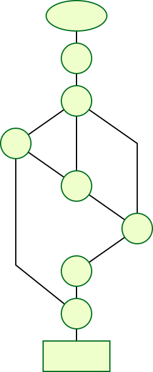
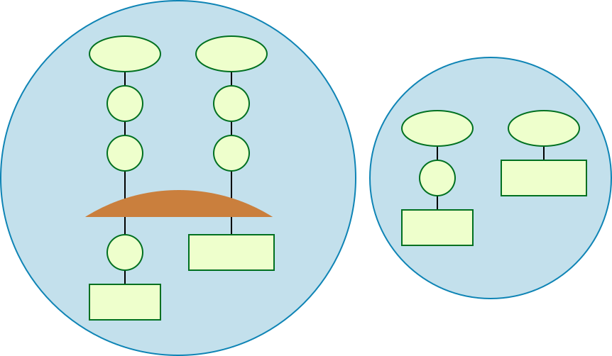

Full pytest documentation¶
Download latest version as PDF
Start here¶
Get Started¶
Install pytest¶
pytest requires: Python 3.7+ or PyPy3.
Run the following command in your command line:
pip install -U pytest
Check that you installed the correct version:
$ pytest --version
pytest 7.1.3
Create your first test¶
Create a new file called test_sample.py, containing a function, and a test:
# content of test_sample.py
def func(x):
return x + 1
def test_answer():
assert func(3) == 5
The test
$ pytest
=========================== test session starts ============================
platform linux -- Python 3.x.y, pytest-7.x.y, pluggy-1.x.y
rootdir: /home/sweet/project
collected 1 item
test_sample.py F [100%]
================================= FAILURES =================================
_______________________________ test_answer ________________________________
def test_answer():
> assert func(3) == 5
E assert 4 == 5
E + where 4 = func(3)
test_sample.py:6: AssertionError
========================= short test summary info ==========================
FAILED test_sample.py::test_answer - assert 4 == 5
============================ 1 failed in 0.12s =============================
The [100%] refers to the overall progress of running all test cases. After it finishes, pytest then shows a failure report because func(3) does not return 5.
Note
You can use the assert statement to verify test expectations. pytest’s Advanced assertion introspection will intelligently report intermediate values of the assert expression so you can avoid the many names of JUnit legacy methods.
Run multiple tests¶
pytest will run all files of the form test_*.py or *_test.py in the current directory and its subdirectories. More generally, it follows standard test discovery rules.
Assert that a certain exception is raised¶
Use the raises helper to assert that some code raises an exception:
# content of test_sysexit.py
import pytest
def f():
raise SystemExit(1)
def test_mytest():
with pytest.raises(SystemExit):
f()
Execute the test function with “quiet” reporting mode:
$ pytest -q test_sysexit.py
. [100%]
1 passed in 0.12s
Note
The -q/--quiet flag keeps the output brief in this and following examples.
Group multiple tests in a class¶
Once you develop multiple tests, you may want to group them into a class. pytest makes it easy to create a class containing more than one test:
# content of test_class.py
class TestClass:
def test_one(self):
x = "this"
assert "h" in x
def test_two(self):
x = "hello"
assert hasattr(x, "check")
pytest discovers all tests following its Conventions for Python test discovery, so it finds both test_ prefixed functions. There is no need to subclass anything, but make sure to prefix your class with Test otherwise the class will be skipped. We can simply run the module by passing its filename:
$ pytest -q test_class.py
.F [100%]
================================= FAILURES =================================
____________________________ TestClass.test_two ____________________________
self = <test_class.TestClass object at 0xdeadbeef0001>
def test_two(self):
x = "hello"
> assert hasattr(x, "check")
E AssertionError: assert False
E + where False = hasattr('hello', 'check')
test_class.py:8: AssertionError
========================= short test summary info ==========================
FAILED test_class.py::TestClass::test_two - AssertionError: assert False
1 failed, 1 passed in 0.12s
The first test passed and the second failed. You can easily see the intermediate values in the assertion to help you understand the reason for the failure.
Grouping tests in classes can be beneficial for the following reasons:
Test organization
Sharing fixtures for tests only in that particular class
Applying marks at the class level and having them implicitly apply to all tests
Something to be aware of when grouping tests inside classes is that each test has a unique instance of the class. Having each test share the same class instance would be very detrimental to test isolation and would promote poor test practices. This is outlined below:
# content of test_class_demo.py
class TestClassDemoInstance:
value = 0
def test_one(self):
self.value = 1
assert self.value == 1
def test_two(self):
assert self.value == 1
$ pytest -k TestClassDemoInstance -q
.F [100%]
================================= FAILURES =================================
______________________ TestClassDemoInstance.test_two ______________________
self = <test_class_demo.TestClassDemoInstance object at 0xdeadbeef0002>
def test_two(self):
> assert self.value == 1
E assert 0 == 1
E + where 0 = <test_class_demo.TestClassDemoInstance object at 0xdeadbeef0002>.value
test_class_demo.py:9: AssertionError
========================= short test summary info ==========================
FAILED test_class_demo.py::TestClassDemoInstance::test_two - assert 0 == 1
1 failed, 1 passed in 0.12s
Note that attributes added at class level are class attributes, so they will be shared between tests.
Request a unique temporary directory for functional tests¶
pytest provides Builtin fixtures/function arguments to request arbitrary resources, like a unique temporary directory:
# content of test_tmp_path.py
def test_needsfiles(tmp_path):
print(tmp_path)
assert 0
List the name tmp_path in the test function signature and pytest will lookup and call a fixture factory to create the resource before performing the test function call. Before the test runs, pytest creates a unique-per-test-invocation temporary directory:
$ pytest -q test_tmp_path.py
F [100%]
================================= FAILURES =================================
_____________________________ test_needsfiles ______________________________
tmp_path = PosixPath('PYTEST_TMPDIR/test_needsfiles0')
def test_needsfiles(tmp_path):
print(tmp_path)
> assert 0
E assert 0
test_tmp_path.py:3: AssertionError
--------------------------- Captured stdout call ---------------------------
PYTEST_TMPDIR/test_needsfiles0
========================= short test summary info ==========================
FAILED test_tmp_path.py::test_needsfiles - assert 0
1 failed in 0.12s
More info on temporary directory handling is available at Temporary directories and files.
Find out what kind of builtin pytest fixtures exist with the command:
pytest --fixtures # shows builtin and custom fixtures
Note that this command omits fixtures with leading _ unless the -v option is added.
Continue reading¶
Check out additional pytest resources to help you customize tests for your unique workflow:
“How to invoke pytest” for command line invocation examples
“How to use pytest with an existing test suite” for working with pre-existing tests
“How to mark test functions with attributes” for information on the
pytest.markmechanism“Fixtures reference” for providing a functional baseline to your tests
“Writing plugins” for managing and writing plugins
“Good Integration Practices” for virtualenv and test layouts
How-to guides¶
How to invoke pytest¶
In general, pytest is invoked with the command pytest (see below for other ways to invoke pytest). This will execute all tests in all files whose names follow the form test_*.py or \*_test.py
in the current directory and its subdirectories. More generally, pytest follows standard test discovery rules.
Specifying which tests to run¶
Pytest supports several ways to run and select tests from the command-line.
Run tests in a module
pytest test_mod.py
Run tests in a directory
pytest testing/
Run tests by keyword expressions
pytest -k "MyClass and not method"
This will run tests which contain names that match the given string expression (case-insensitive),
which can include Python operators that use filenames, class names and function names as variables.
The example above will run TestMyClass.test_something but not TestMyClass.test_method_simple.
Run tests by node ids
Each collected test is assigned a unique nodeid which consist of the module filename followed
by specifiers like class names, function names and parameters from parametrization, separated by :: characters.
To run a specific test within a module:
pytest test_mod.py::test_func
Another example specifying a test method in the command line:
pytest test_mod.py::TestClass::test_method
Run tests by marker expressions
pytest -m slow
Will run all tests which are decorated with the @pytest.mark.slow decorator.
For more information see marks.
Run tests from packages
pytest --pyargs pkg.testing
This will import pkg.testing and use its filesystem location to find and run tests from.
Getting help on version, option names, environment variables¶
pytest --version # shows where pytest was imported from
pytest --fixtures # show available builtin function arguments
pytest -h | --help # show help on command line and config file options
Profiling test execution duration¶
Changed in version 6.0.
To get a list of the slowest 10 test durations over 1.0s long:
pytest --durations=10 --durations-min=1.0
By default, pytest will not show test durations that are too small (<0.005s) unless -vv is passed on the command-line.
Managing loading of plugins¶
Early loading plugins¶
You can early-load plugins (internal and external) explicitly in the command-line with the -p option:
pytest -p mypluginmodule
The option receives a name parameter, which can be:
A full module dotted name, for example
myproject.plugins. This dotted name must be importable.The entry-point name of a plugin. This is the name passed to
setuptoolswhen the plugin is registered. For example to early-load the pytest-cov plugin you can use:pytest -p pytest_cov
Disabling plugins¶
To disable loading specific plugins at invocation time, use the -p option
together with the prefix no:.
Example: to disable loading the plugin doctest, which is responsible for
executing doctest tests from text files, invoke pytest like this:
pytest -p no:doctest
Other ways of calling pytest¶
Calling pytest through python -m pytest¶
You can invoke testing through the Python interpreter from the command line:
python -m pytest [...]
This is almost equivalent to invoking the command line script pytest [...]
directly, except that calling via python will also add the current directory to sys.path.
Calling pytest from Python code¶
You can invoke pytest from Python code directly:
retcode = pytest.main()
this acts as if you would call “pytest” from the command line.
It will not raise SystemExit but return the exit code instead.
You can pass in options and arguments:
retcode = pytest.main(["-x", "mytestdir"])
You can specify additional plugins to pytest.main:
# content of myinvoke.py
import pytest
import sys
class MyPlugin:
def pytest_sessionfinish(self):
print("*** test run reporting finishing")
if __name__ == "__main__":
sys.exit(pytest.main(["-qq"], plugins=[MyPlugin()]))
Running it will show that MyPlugin was added and its
hook was invoked:
$ python myinvoke.py
*** test run reporting finishing
Note
Calling pytest.main() will result in importing your tests and any modules
that they import. Due to the caching mechanism of python’s import system,
making subsequent calls to pytest.main() from the same process will not
reflect changes to those files between the calls. For this reason, making
multiple calls to pytest.main() from the same process (in order to re-run
tests, for example) is not recommended.
How to write and report assertions in tests¶
Asserting with the assert statement¶
pytest allows you to use the standard Python assert for verifying
expectations and values in Python tests. For example, you can write the
following:
# content of test_assert1.py
def f():
return 3
def test_function():
assert f() == 4
to assert that your function returns a certain value. If this assertion fails you will see the return value of the function call:
$ pytest test_assert1.py
=========================== test session starts ============================
platform linux -- Python 3.x.y, pytest-7.x.y, pluggy-1.x.y
rootdir: /home/sweet/project
collected 1 item
test_assert1.py F [100%]
================================= FAILURES =================================
______________________________ test_function _______________________________
def test_function():
> assert f() == 4
E assert 3 == 4
E + where 3 = f()
test_assert1.py:6: AssertionError
========================= short test summary info ==========================
FAILED test_assert1.py::test_function - assert 3 == 4
============================ 1 failed in 0.12s =============================
pytest has support for showing the values of the most common subexpressions
including calls, attributes, comparisons, and binary and unary
operators. (See Demo of Python failure reports with pytest). This allows you to use the
idiomatic python constructs without boilerplate code while not losing
introspection information.
However, if you specify a message with the assertion like this:
assert a % 2 == 0, "value was odd, should be even"
then no assertion introspection takes places at all and the message will be simply shown in the traceback.
See Assertion introspection details for more information on assertion introspection.
Assertions about expected exceptions¶
In order to write assertions about raised exceptions, you can use
pytest.raises() as a context manager like this:
import pytest
def test_zero_division():
with pytest.raises(ZeroDivisionError):
1 / 0
and if you need to have access to the actual exception info you may use:
def test_recursion_depth():
with pytest.raises(RuntimeError) as excinfo:
def f():
f()
f()
assert "maximum recursion" in str(excinfo.value)
excinfo is an ExceptionInfo instance, which is a wrapper around
the actual exception raised. The main attributes of interest are
.type, .value and .traceback.
You can pass a match keyword parameter to the context-manager to test
that a regular expression matches on the string representation of an exception
(similar to the TestCase.assertRaisesRegex method from unittest):
import pytest
def myfunc():
raise ValueError("Exception 123 raised")
def test_match():
with pytest.raises(ValueError, match=r".* 123 .*"):
myfunc()
The regexp parameter of the match method is matched with the re.search
function, so in the above example match='123' would have worked as
well.
There’s an alternate form of the pytest.raises() function where you pass
a function that will be executed with the given *args and **kwargs and
assert that the given exception is raised:
pytest.raises(ExpectedException, func, *args, **kwargs)
The reporter will provide you with helpful output in case of failures such as no exception or wrong exception.
Note that it is also possible to specify a “raises” argument to
pytest.mark.xfail, which checks that the test is failing in a more
specific way than just having any exception raised:
@pytest.mark.xfail(raises=IndexError)
def test_f():
f()
Using pytest.raises() is likely to be better for cases where you are
testing exceptions your own code is deliberately raising, whereas using
@pytest.mark.xfail with a check function is probably better for something
like documenting unfixed bugs (where the test describes what “should” happen)
or bugs in dependencies.
Assertions about expected warnings¶
You can check that code raises a particular warning using pytest.warns.
Making use of context-sensitive comparisons¶
pytest has rich support for providing context-sensitive information
when it encounters comparisons. For example:
# content of test_assert2.py
def test_set_comparison():
set1 = set("1308")
set2 = set("8035")
assert set1 == set2
if you run this module:
$ pytest test_assert2.py
=========================== test session starts ============================
platform linux -- Python 3.x.y, pytest-7.x.y, pluggy-1.x.y
rootdir: /home/sweet/project
collected 1 item
test_assert2.py F [100%]
================================= FAILURES =================================
___________________________ test_set_comparison ____________________________
def test_set_comparison():
set1 = set("1308")
set2 = set("8035")
> assert set1 == set2
E AssertionError: assert {'0', '1', '3', '8'} == {'0', '3', '5', '8'}
E Extra items in the left set:
E '1'
E Extra items in the right set:
E '5'
E Use -v to get more diff
test_assert2.py:4: AssertionError
========================= short test summary info ==========================
FAILED test_assert2.py::test_set_comparison - AssertionError: assert {'0'...
============================ 1 failed in 0.12s =============================
Special comparisons are done for a number of cases:
comparing long strings: a context diff is shown
comparing long sequences: first failing indices
comparing dicts: different entries
See the reporting demo for many more examples.
Defining your own explanation for failed assertions¶
It is possible to add your own detailed explanations by implementing
the pytest_assertrepr_compare hook.
-
pytest_assertrepr_compare(config, op, left, right)[source] Return explanation for comparisons in failing assert expressions.
Return None for no custom explanation, otherwise return a list of strings. The strings will be joined by newlines but any newlines in a string will be escaped. Note that all but the first line will be indented slightly, the intention is for the first line to be a summary.
- Parameters
config (pytest.Config) – The pytest config object.
op (str) –
left (object) –
right (object) –
- Return type
Optional[List[str]]
As an example consider adding the following hook in a conftest.py
file which provides an alternative explanation for Foo objects:
# content of conftest.py
from test_foocompare import Foo
def pytest_assertrepr_compare(op, left, right):
if isinstance(left, Foo) and isinstance(right, Foo) and op == "==":
return [
"Comparing Foo instances:",
" vals: {} != {}".format(left.val, right.val),
]
now, given this test module:
# content of test_foocompare.py
class Foo:
def __init__(self, val):
self.val = val
def __eq__(self, other):
return self.val == other.val
def test_compare():
f1 = Foo(1)
f2 = Foo(2)
assert f1 == f2
you can run the test module and get the custom output defined in the conftest file:
$ pytest -q test_foocompare.py
F [100%]
================================= FAILURES =================================
_______________________________ test_compare _______________________________
def test_compare():
f1 = Foo(1)
f2 = Foo(2)
> assert f1 == f2
E assert Comparing Foo instances:
E vals: 1 != 2
test_foocompare.py:12: AssertionError
========================= short test summary info ==========================
FAILED test_foocompare.py::test_compare - assert Comparing Foo instances:
1 failed in 0.12s
Assertion introspection details¶
Reporting details about a failing assertion is achieved by rewriting assert
statements before they are run. Rewritten assert statements put introspection
information into the assertion failure message. pytest only rewrites test
modules directly discovered by its test collection process, so asserts in
supporting modules which are not themselves test modules will not be rewritten.
You can manually enable assertion rewriting for an imported module by calling
register_assert_rewrite
before you import it (a good place to do that is in your root conftest.py).
For further information, Benjamin Peterson wrote up Behind the scenes of pytest’s new assertion rewriting.
Assertion rewriting caches files on disk¶
pytest will write back the rewritten modules to disk for caching. You can disable
this behavior (for example to avoid leaving stale .pyc files around in projects that
move files around a lot) by adding this to the top of your conftest.py file:
import sys
sys.dont_write_bytecode = True
Note that you still get the benefits of assertion introspection, the only change is that
the .pyc files won’t be cached on disk.
Additionally, rewriting will silently skip caching if it cannot write new .pyc files,
i.e. in a read-only filesystem or a zipfile.
Disabling assert rewriting¶
pytest rewrites test modules on import by using an import
hook to write new pyc files. Most of the time this works transparently.
However, if you are working with the import machinery yourself, the import hook may
interfere.
If this is the case you have two options:
Disable rewriting for a specific module by adding the string
PYTEST_DONT_REWRITEto its docstring.Disable rewriting for all modules by using
--assert=plain.
How to use fixtures¶
See also
See also
“Requesting” fixtures¶
At a basic level, test functions request fixtures they require by declaring them as arguments.
When pytest goes to run a test, it looks at the parameters in that test function’s signature, and then searches for fixtures that have the same names as those parameters. Once pytest finds them, it runs those fixtures, captures what they returned (if anything), and passes those objects into the test function as arguments.
Quick example¶
import pytest
class Fruit:
def __init__(self, name):
self.name = name
self.cubed = False
def cube(self):
self.cubed = True
class FruitSalad:
def __init__(self, *fruit_bowl):
self.fruit = fruit_bowl
self._cube_fruit()
def _cube_fruit(self):
for fruit in self.fruit:
fruit.cube()
# Arrange
@pytest.fixture
def fruit_bowl():
return [Fruit("apple"), Fruit("banana")]
def test_fruit_salad(fruit_bowl):
# Act
fruit_salad = FruitSalad(*fruit_bowl)
# Assert
assert all(fruit.cubed for fruit in fruit_salad.fruit)
In this example, test_fruit_salad “requests” fruit_bowl (i.e.
def test_fruit_salad(fruit_bowl):), and when pytest sees this, it will
execute the fruit_bowl fixture function and pass the object it returns into
test_fruit_salad as the fruit_bowl argument.
Here’s roughly what’s happening if we were to do it by hand:
def fruit_bowl():
return [Fruit("apple"), Fruit("banana")]
def test_fruit_salad(fruit_bowl):
# Act
fruit_salad = FruitSalad(*fruit_bowl)
# Assert
assert all(fruit.cubed for fruit in fruit_salad.fruit)
# Arrange
bowl = fruit_bowl()
test_fruit_salad(fruit_bowl=bowl)
Fixtures can request other fixtures¶
One of pytest’s greatest strengths is its extremely flexible fixture system. It allows us to boil down complex requirements for tests into more simple and organized functions, where we only need to have each one describe the things they are dependent on. We’ll get more into this further down, but for now, here’s a quick example to demonstrate how fixtures can use other fixtures:
# contents of test_append.py
import pytest
# Arrange
@pytest.fixture
def first_entry():
return "a"
# Arrange
@pytest.fixture
def order(first_entry):
return [first_entry]
def test_string(order):
# Act
order.append("b")
# Assert
assert order == ["a", "b"]
Notice that this is the same example from above, but very little changed. The fixtures in pytest request fixtures just like tests. All the same requesting rules apply to fixtures that do for tests. Here’s how this example would work if we did it by hand:
def first_entry():
return "a"
def order(first_entry):
return [first_entry]
def test_string(order):
# Act
order.append("b")
# Assert
assert order == ["a", "b"]
entry = first_entry()
the_list = order(first_entry=entry)
test_string(order=the_list)
Fixtures are reusable¶
One of the things that makes pytest’s fixture system so powerful, is that it gives us the ability to define a generic setup step that can be reused over and over, just like a normal function would be used. Two different tests can request the same fixture and have pytest give each test their own result from that fixture.
This is extremely useful for making sure tests aren’t affected by each other. We can use this system to make sure each test gets its own fresh batch of data and is starting from a clean state so it can provide consistent, repeatable results.
Here’s an example of how this can come in handy:
# contents of test_append.py
import pytest
# Arrange
@pytest.fixture
def first_entry():
return "a"
# Arrange
@pytest.fixture
def order(first_entry):
return [first_entry]
def test_string(order):
# Act
order.append("b")
# Assert
assert order == ["a", "b"]
def test_int(order):
# Act
order.append(2)
# Assert
assert order == ["a", 2]
Each test here is being given its own copy of that list object,
which means the order fixture is getting executed twice (the same
is true for the first_entry fixture). If we were to do this by hand as
well, it would look something like this:
def first_entry():
return "a"
def order(first_entry):
return [first_entry]
def test_string(order):
# Act
order.append("b")
# Assert
assert order == ["a", "b"]
def test_int(order):
# Act
order.append(2)
# Assert
assert order == ["a", 2]
entry = first_entry()
the_list = order(first_entry=entry)
test_string(order=the_list)
entry = first_entry()
the_list = order(first_entry=entry)
test_int(order=the_list)
A test/fixture can request more than one fixture at a time¶
Tests and fixtures aren’t limited to requesting a single fixture at a time. They can request as many as they like. Here’s another quick example to demonstrate:
# contents of test_append.py
import pytest
# Arrange
@pytest.fixture
def first_entry():
return "a"
# Arrange
@pytest.fixture
def second_entry():
return 2
# Arrange
@pytest.fixture
def order(first_entry, second_entry):
return [first_entry, second_entry]
# Arrange
@pytest.fixture
def expected_list():
return ["a", 2, 3.0]
def test_string(order, expected_list):
# Act
order.append(3.0)
# Assert
assert order == expected_list
Fixtures can be requested more than once per test (return values are cached)¶
Fixtures can also be requested more than once during the same test, and pytest won’t execute them again for that test. This means we can request fixtures in multiple fixtures that are dependent on them (and even again in the test itself) without those fixtures being executed more than once.
# contents of test_append.py
import pytest
# Arrange
@pytest.fixture
def first_entry():
return "a"
# Arrange
@pytest.fixture
def order():
return []
# Act
@pytest.fixture
def append_first(order, first_entry):
return order.append(first_entry)
def test_string_only(append_first, order, first_entry):
# Assert
assert order == [first_entry]
If a requested fixture was executed once for every time it was requested
during a test, then this test would fail because both append_first and
test_string_only would see order as an empty list (i.e. []), but
since the return value of order was cached (along with any side effects
executing it may have had) after the first time it was called, both the test and
append_first were referencing the same object, and the test saw the effect
append_first had on that object.
Autouse fixtures (fixtures you don’t have to request)¶
Sometimes you may want to have a fixture (or even several) that you know all your tests will depend on. “Autouse” fixtures are a convenient way to make all tests automatically request them. This can cut out a lot of redundant requests, and can even provide more advanced fixture usage (more on that further down).
We can make a fixture an autouse fixture by passing in autouse=True to the
fixture’s decorator. Here’s a simple example for how they can be used:
# contents of test_append.py
import pytest
@pytest.fixture
def first_entry():
return "a"
@pytest.fixture
def order(first_entry):
return []
@pytest.fixture(autouse=True)
def append_first(order, first_entry):
return order.append(first_entry)
def test_string_only(order, first_entry):
assert order == [first_entry]
def test_string_and_int(order, first_entry):
order.append(2)
assert order == [first_entry, 2]
In this example, the append_first fixture is an autouse fixture. Because it
happens automatically, both tests are affected by it, even though neither test
requested it. That doesn’t mean they can’t be requested though; just
that it isn’t necessary.
Scope: sharing fixtures across classes, modules, packages or session¶
Fixtures requiring network access depend on connectivity and are
usually time-expensive to create. Extending the previous example, we
can add a scope="module" parameter to the
@pytest.fixture invocation
to cause a smtp_connection fixture function, responsible to create a connection to a preexisting SMTP server, to only be invoked
once per test module (the default is to invoke once per test function).
Multiple test functions in a test module will thus
each receive the same smtp_connection fixture instance, thus saving time.
Possible values for scope are: function, class, module, package or session.
The next example puts the fixture function into a separate conftest.py file
so that tests from multiple test modules in the directory can
access the fixture function:
# content of conftest.py
import pytest
import smtplib
@pytest.fixture(scope="module")
def smtp_connection():
return smtplib.SMTP("smtp.gmail.com", 587, timeout=5)
# content of test_module.py
def test_ehlo(smtp_connection):
response, msg = smtp_connection.ehlo()
assert response == 250
assert b"smtp.gmail.com" in msg
assert 0 # for demo purposes
def test_noop(smtp_connection):
response, msg = smtp_connection.noop()
assert response == 250
assert 0 # for demo purposes
Here, the test_ehlo needs the smtp_connection fixture value. pytest
will discover and call the @pytest.fixture
marked smtp_connection fixture function. Running the test looks like this:
$ pytest test_module.py
=========================== test session starts ============================
platform linux -- Python 3.x.y, pytest-7.x.y, pluggy-1.x.y
rootdir: /home/sweet/project
collected 2 items
test_module.py FF [100%]
================================= FAILURES =================================
________________________________ test_ehlo _________________________________
smtp_connection = <smtplib.SMTP object at 0xdeadbeef0001>
def test_ehlo(smtp_connection):
response, msg = smtp_connection.ehlo()
assert response == 250
assert b"smtp.gmail.com" in msg
> assert 0 # for demo purposes
E assert 0
test_module.py:7: AssertionError
________________________________ test_noop _________________________________
smtp_connection = <smtplib.SMTP object at 0xdeadbeef0001>
def test_noop(smtp_connection):
response, msg = smtp_connection.noop()
assert response == 250
> assert 0 # for demo purposes
E assert 0
test_module.py:13: AssertionError
========================= short test summary info ==========================
FAILED test_module.py::test_ehlo - assert 0
FAILED test_module.py::test_noop - assert 0
============================ 2 failed in 0.12s =============================
You see the two assert 0 failing and more importantly you can also see
that the exactly same smtp_connection object was passed into the
two test functions because pytest shows the incoming argument values in the
traceback. As a result, the two test functions using smtp_connection run
as quick as a single one because they reuse the same instance.
If you decide that you rather want to have a session-scoped smtp_connection
instance, you can simply declare it:
@pytest.fixture(scope="session")
def smtp_connection():
# the returned fixture value will be shared for
# all tests requesting it
...
Fixture scopes¶
Fixtures are created when first requested by a test, and are destroyed based on their scope:
function: the default scope, the fixture is destroyed at the end of the test.class: the fixture is destroyed during teardown of the last test in the class.module: the fixture is destroyed during teardown of the last test in the module.package: the fixture is destroyed during teardown of the last test in the package.session: the fixture is destroyed at the end of the test session.
Note
Pytest only caches one instance of a fixture at a time, which means that when using a parametrized fixture, pytest may invoke a fixture more than once in the given scope.
Dynamic scope¶
New in version 5.2.
In some cases, you might want to change the scope of the fixture without changing the code.
To do that, pass a callable to scope. The callable must return a string with a valid scope
and will be executed only once - during the fixture definition. It will be called with two
keyword arguments - fixture_name as a string and config with a configuration object.
This can be especially useful when dealing with fixtures that need time for setup, like spawning a docker container. You can use the command-line argument to control the scope of the spawned containers for different environments. See the example below.
def determine_scope(fixture_name, config):
if config.getoption("--keep-containers", None):
return "session"
return "function"
@pytest.fixture(scope=determine_scope)
def docker_container():
yield spawn_container()
Teardown/Cleanup (AKA Fixture finalization)¶
When we run our tests, we’ll want to make sure they clean up after themselves so they don’t mess with any other tests (and also so that we don’t leave behind a mountain of test data to bloat the system). Fixtures in pytest offer a very useful teardown system, which allows us to define the specific steps necessary for each fixture to clean up after itself.
This system can be leveraged in two ways.
1. yield fixtures (recommended)¶
“Yield” fixtures yield instead of return. With these
fixtures, we can run some code and pass an object back to the requesting
fixture/test, just like with the other fixtures. The only differences are:
returnis swapped out foryield.Any teardown code for that fixture is placed after the
yield.
Once pytest figures out a linear order for the fixtures, it will run each one up until it returns or yields, and then move on to the next fixture in the list to do the same thing.
Once the test is finished, pytest will go back down the list of fixtures, but in
the reverse order, taking each one that yielded, and running the code inside
it that was after the yield statement.
As a simple example, consider this basic email module:
# content of emaillib.py
class MailAdminClient:
def create_user(self):
return MailUser()
def delete_user(self, user):
# do some cleanup
pass
class MailUser:
def __init__(self):
self.inbox = []
def send_email(self, email, other):
other.inbox.append(email)
def clear_mailbox(self):
self.inbox.clear()
class Email:
def __init__(self, subject, body):
self.subject = subject
self.body = body
Let’s say we want to test sending email from one user to another. We’ll have to first make each user, then send the email from one user to the other, and finally assert that the other user received that message in their inbox. If we want to clean up after the test runs, we’ll likely have to make sure the other user’s mailbox is emptied before deleting that user, otherwise the system may complain.
Here’s what that might look like:
# content of test_emaillib.py
import pytest
from emaillib import Email, MailAdminClient
@pytest.fixture
def mail_admin():
return MailAdminClient()
@pytest.fixture
def sending_user(mail_admin):
user = mail_admin.create_user()
yield user
mail_admin.delete_user(user)
@pytest.fixture
def receiving_user(mail_admin):
user = mail_admin.create_user()
yield user
mail_admin.delete_user(user)
def test_email_received(sending_user, receiving_user):
email = Email(subject="Hey!", body="How's it going?")
sending_user.send_email(email, receiving_user)
assert email in receiving_user.inbox
Because receiving_user is the last fixture to run during setup, it’s the first to run
during teardown.
There is a risk that even having the order right on the teardown side of things doesn’t guarantee a safe cleanup. That’s covered in a bit more detail in Safe teardowns.
$ pytest -q test_emaillib.py
. [100%]
1 passed in 0.12s
Handling errors for yield fixture¶
If a yield fixture raises an exception before yielding, pytest won’t try to run
the teardown code after that yield fixture’s yield statement. But, for every
fixture that has already run successfully for that test, pytest will still
attempt to tear them down as it normally would.
2. Adding finalizers directly¶
While yield fixtures are considered to be the cleaner and more straightforward option, there is another choice, and that is to add “finalizer” functions directly to the test’s request-context object. It brings a similar result as yield fixtures, but requires a bit more verbosity.
In order to use this approach, we have to request the request-context object
(just like we would request another fixture) in the fixture we need to add
teardown code for, and then pass a callable, containing that teardown code, to
its addfinalizer method.
We have to be careful though, because pytest will run that finalizer once it’s been added, even if that fixture raises an exception after adding the finalizer. So to make sure we don’t run the finalizer code when we wouldn’t need to, we would only add the finalizer once the fixture would have done something that we’d need to teardown.
Here’s how the previous example would look using the addfinalizer method:
# content of test_emaillib.py
import pytest
from emaillib import Email, MailAdminClient
@pytest.fixture
def mail_admin():
return MailAdminClient()
@pytest.fixture
def sending_user(mail_admin):
user = mail_admin.create_user()
yield user
mail_admin.delete_user(user)
@pytest.fixture
def receiving_user(mail_admin, request):
user = mail_admin.create_user()
def delete_user():
mail_admin.delete_user(user)
request.addfinalizer(delete_user)
return user
@pytest.fixture
def email(sending_user, receiving_user, request):
_email = Email(subject="Hey!", body="How's it going?")
sending_user.send_email(_email, receiving_user)
def empty_mailbox():
receiving_user.clear_mailbox()
request.addfinalizer(empty_mailbox)
return _email
def test_email_received(receiving_user, email):
assert email in receiving_user.inbox
It’s a bit longer than yield fixtures and a bit more complex, but it does offer some nuances for when you’re in a pinch.
$ pytest -q test_emaillib.py
. [100%]
1 passed in 0.12s
Note on finalizer order¶
Finalizers are executed in a first-in-last-out order. For yield fixtures, the first teardown code to run is from the right-most fixture, i.e. the last test parameter.
# content of test_finalizers.py
import pytest
def test_bar(fix_w_yield1, fix_w_yield2):
print("test_bar")
@pytest.fixture
def fix_w_yield1():
yield
print("after_yield_1")
@pytest.fixture
def fix_w_yield2():
yield
print("after_yield_2")
$ pytest -s test_finalizers.py
=========================== test session starts ============================
platform linux -- Python 3.x.y, pytest-7.x.y, pluggy-1.x.y
rootdir: /home/sweet/project
collected 1 item
test_finalizers.py test_bar
.after_yield_2
after_yield_1
============================ 1 passed in 0.12s =============================
For finalizers, the first fixture to run is last call to request.addfinalizer.
# content of test_finalizers.py
from functools import partial
import pytest
@pytest.fixture
def fix_w_finalizers(request):
request.addfinalizer(partial(print, "finalizer_2"))
request.addfinalizer(partial(print, "finalizer_1"))
def test_bar(fix_w_finalizers):
print("test_bar")
$ pytest -s test_finalizers.py
=========================== test session starts ============================
platform linux -- Python 3.x.y, pytest-7.x.y, pluggy-1.x.y
rootdir: /home/sweet/project
collected 1 item
test_finalizers.py test_bar
.finalizer_1
finalizer_2
============================ 1 passed in 0.12s =============================
This is so because yield fixtures use addfinalizer behind the scenes: when the fixture executes, addfinalizer registers a function that resumes the generator, which in turn calls the teardown code.
Safe teardowns¶
The fixture system of pytest is very powerful, but it’s still being run by a computer, so it isn’t able to figure out how to safely teardown everything we throw at it. If we aren’t careful, an error in the wrong spot might leave stuff from our tests behind, and that can cause further issues pretty quickly.
For example, consider the following tests (based off of the mail example from above):
# content of test_emaillib.py
import pytest
from emaillib import Email, MailAdminClient
@pytest.fixture
def setup():
mail_admin = MailAdminClient()
sending_user = mail_admin.create_user()
receiving_user = mail_admin.create_user()
email = Email(subject="Hey!", body="How's it going?")
sending_user.send_email(email, receiving_user)
yield receiving_user, email
receiving_user.clear_mailbox()
mail_admin.delete_user(sending_user)
mail_admin.delete_user(receiving_user)
def test_email_received(setup):
receiving_user, email = setup
assert email in receiving_user.inbox
This version is a lot more compact, but it’s also harder to read, doesn’t have a very descriptive fixture name, and none of the fixtures can be reused easily.
There’s also a more serious issue, which is that if any of those steps in the setup raise an exception, none of the teardown code will run.
One option might be to go with the addfinalizer method instead of yield
fixtures, but that might get pretty complex and difficult to maintain (and it
wouldn’t be compact anymore).
$ pytest -q test_emaillib.py
. [100%]
1 passed in 0.12s
Safe fixture structure¶
The safest and simplest fixture structure requires limiting fixtures to only making one state-changing action each, and then bundling them together with their teardown code, as the email examples above showed.
The chance that a state-changing operation can fail but still modify state is negligible, as most of these operations tend to be transaction-based (at least at the level of testing where state could be left behind). So if we make sure that any successful state-changing action gets torn down by moving it to a separate fixture function and separating it from other, potentially failing state-changing actions, then our tests will stand the best chance at leaving the test environment the way they found it.
For an example, let’s say we have a website with a login page, and we have access to an admin API where we can generate users. For our test, we want to:
Create a user through that admin API
Launch a browser using Selenium
Go to the login page of our site
Log in as the user we created
Assert that their name is in the header of the landing page
We wouldn’t want to leave that user in the system, nor would we want to leave that browser session running, so we’ll want to make sure the fixtures that create those things clean up after themselves.
Here’s what that might look like:
Note
For this example, certain fixtures (i.e. base_url and
admin_credentials) are implied to exist elsewhere. So for now, let’s
assume they exist, and we’re just not looking at them.
from uuid import uuid4
from urllib.parse import urljoin
from selenium.webdriver import Chrome
import pytest
from src.utils.pages import LoginPage, LandingPage
from src.utils import AdminApiClient
from src.utils.data_types import User
@pytest.fixture
def admin_client(base_url, admin_credentials):
return AdminApiClient(base_url, **admin_credentials)
@pytest.fixture
def user(admin_client):
_user = User(name="Susan", username=f"testuser-{uuid4()}", password="P4$$word")
admin_client.create_user(_user)
yield _user
admin_client.delete_user(_user)
@pytest.fixture
def driver():
_driver = Chrome()
yield _driver
_driver.quit()
@pytest.fixture
def login(driver, base_url, user):
driver.get(urljoin(base_url, "/login"))
page = LoginPage(driver)
page.login(user)
@pytest.fixture
def landing_page(driver, login):
return LandingPage(driver)
def test_name_on_landing_page_after_login(landing_page, user):
assert landing_page.header == f"Welcome, {user.name}!"
The way the dependencies are laid out means it’s unclear if the user
fixture would execute before the driver fixture. But that’s ok, because
those are atomic operations, and so it doesn’t matter which one runs first
because the sequence of events for the test is still linearizable. But what does matter is
that, no matter which one runs first, if the one raises an exception while the
other would not have, neither will have left anything behind. If driver
executes before user, and user raises an exception, the driver will
still quit, and the user was never made. And if driver was the one to raise
the exception, then the driver would never have been started and the user would
never have been made.
Running multiple assert statements safely¶
Sometimes you may want to run multiple asserts after doing all that setup, which makes sense as, in more complex systems, a single action can kick off multiple behaviors. pytest has a convenient way of handling this and it combines a bunch of what we’ve gone over so far.
All that’s needed is stepping up to a larger scope, then having the act step defined as an autouse fixture, and finally, making sure all the fixtures are targeting that higher level scope.
Let’s pull an example from above, and tweak it a bit. Let’s say that in addition to checking for a welcome message in the header, we also want to check for a sign out button, and a link to the user’s profile.
Let’s take a look at how we can structure that so we can run multiple asserts without having to repeat all those steps again.
Note
For this example, certain fixtures (i.e. base_url and
admin_credentials) are implied to exist elsewhere. So for now, let’s
assume they exist, and we’re just not looking at them.
# contents of tests/end_to_end/test_login.py
from uuid import uuid4
from urllib.parse import urljoin
from selenium.webdriver import Chrome
import pytest
from src.utils.pages import LoginPage, LandingPage
from src.utils import AdminApiClient
from src.utils.data_types import User
@pytest.fixture(scope="class")
def admin_client(base_url, admin_credentials):
return AdminApiClient(base_url, **admin_credentials)
@pytest.fixture(scope="class")
def user(admin_client):
_user = User(name="Susan", username=f"testuser-{uuid4()}", password="P4$$word")
admin_client.create_user(_user)
yield _user
admin_client.delete_user(_user)
@pytest.fixture(scope="class")
def driver():
_driver = Chrome()
yield _driver
_driver.quit()
@pytest.fixture(scope="class")
def landing_page(driver, login):
return LandingPage(driver)
class TestLandingPageSuccess:
@pytest.fixture(scope="class", autouse=True)
def login(self, driver, base_url, user):
driver.get(urljoin(base_url, "/login"))
page = LoginPage(driver)
page.login(user)
def test_name_in_header(self, landing_page, user):
assert landing_page.header == f"Welcome, {user.name}!"
def test_sign_out_button(self, landing_page):
assert landing_page.sign_out_button.is_displayed()
def test_profile_link(self, landing_page, user):
profile_href = urljoin(base_url, f"/profile?id={user.profile_id}")
assert landing_page.profile_link.get_attribute("href") == profile_href
Notice that the methods are only referencing self in the signature as a
formality. No state is tied to the actual test class as it might be in the
unittest.TestCase framework. Everything is managed by the pytest fixture
system.
Each method only has to request the fixtures that it actually needs without worrying about order. This is because the act fixture is an autouse fixture, and it made sure all the other fixtures executed before it. There’s no more changes of state that need to take place, so the tests are free to make as many non-state-changing queries as they want without risking stepping on the toes of the other tests.
The login fixture is defined inside the class as well, because not every one
of the other tests in the module will be expecting a successful login, and the act may need to
be handled a little differently for another test class. For example, if we
wanted to write another test scenario around submitting bad credentials, we
could handle it by adding something like this to the test file:
class TestLandingPageBadCredentials:
@pytest.fixture(scope="class")
def faux_user(self, user):
_user = deepcopy(user)
_user.password = "badpass"
return _user
def test_raises_bad_credentials_exception(self, login_page, faux_user):
with pytest.raises(BadCredentialsException):
login_page.login(faux_user)
Fixtures can introspect the requesting test context¶
Fixture functions can accept the request object
to introspect the “requesting” test function, class or module context.
Further extending the previous smtp_connection fixture example, let’s
read an optional server URL from the test module which uses our fixture:
# content of conftest.py
import pytest
import smtplib
@pytest.fixture(scope="module")
def smtp_connection(request):
server = getattr(request.module, "smtpserver", "smtp.gmail.com")
smtp_connection = smtplib.SMTP(server, 587, timeout=5)
yield smtp_connection
print("finalizing {} ({})".format(smtp_connection, server))
smtp_connection.close()
We use the request.module attribute to optionally obtain an
smtpserver attribute from the test module. If we just execute
again, nothing much has changed:
$ pytest -s -q --tb=no test_module.py
FFfinalizing <smtplib.SMTP object at 0xdeadbeef0002> (smtp.gmail.com)
========================= short test summary info ==========================
FAILED test_module.py::test_ehlo - assert 0
FAILED test_module.py::test_noop - assert 0
2 failed in 0.12s
Let’s quickly create another test module that actually sets the server URL in its module namespace:
# content of test_anothersmtp.py
smtpserver = "mail.python.org" # will be read by smtp fixture
def test_showhelo(smtp_connection):
assert 0, smtp_connection.helo()
Running it:
$ pytest -qq --tb=short test_anothersmtp.py
F [100%]
================================= FAILURES =================================
______________________________ test_showhelo _______________________________
test_anothersmtp.py:6: in test_showhelo
assert 0, smtp_connection.helo()
E AssertionError: (250, b'mail.python.org')
E assert 0
------------------------- Captured stdout teardown -------------------------
finalizing <smtplib.SMTP object at 0xdeadbeef0003> (mail.python.org)
========================= short test summary info ==========================
FAILED test_anothersmtp.py::test_showhelo - AssertionError: (250, b'mail....
voila! The smtp_connection fixture function picked up our mail server name
from the module namespace.
Using markers to pass data to fixtures¶
Using the request object, a fixture can also access
markers which are applied to a test function. This can be useful to pass data
into a fixture from a test:
import pytest
@pytest.fixture
def fixt(request):
marker = request.node.get_closest_marker("fixt_data")
if marker is None:
# Handle missing marker in some way...
data = None
else:
data = marker.args[0]
# Do something with the data
return data
@pytest.mark.fixt_data(42)
def test_fixt(fixt):
assert fixt == 42
Factories as fixtures¶
The “factory as fixture” pattern can help in situations where the result of a fixture is needed multiple times in a single test. Instead of returning data directly, the fixture instead returns a function which generates the data. This function can then be called multiple times in the test.
Factories can have parameters as needed:
@pytest.fixture
def make_customer_record():
def _make_customer_record(name):
return {"name": name, "orders": []}
return _make_customer_record
def test_customer_records(make_customer_record):
customer_1 = make_customer_record("Lisa")
customer_2 = make_customer_record("Mike")
customer_3 = make_customer_record("Meredith")
If the data created by the factory requires managing, the fixture can take care of that:
@pytest.fixture
def make_customer_record():
created_records = []
def _make_customer_record(name):
record = models.Customer(name=name, orders=[])
created_records.append(record)
return record
yield _make_customer_record
for record in created_records:
record.destroy()
def test_customer_records(make_customer_record):
customer_1 = make_customer_record("Lisa")
customer_2 = make_customer_record("Mike")
customer_3 = make_customer_record("Meredith")
Parametrizing fixtures¶
Fixture functions can be parametrized in which case they will be called multiple times, each time executing the set of dependent tests, i.e. the tests that depend on this fixture. Test functions usually do not need to be aware of their re-running. Fixture parametrization helps to write exhaustive functional tests for components which themselves can be configured in multiple ways.
Extending the previous example, we can flag the fixture to create two
smtp_connection fixture instances which will cause all tests using the fixture
to run twice. The fixture function gets access to each parameter
through the special request object:
# content of conftest.py
import pytest
import smtplib
@pytest.fixture(scope="module", params=["smtp.gmail.com", "mail.python.org"])
def smtp_connection(request):
smtp_connection = smtplib.SMTP(request.param, 587, timeout=5)
yield smtp_connection
print("finalizing {}".format(smtp_connection))
smtp_connection.close()
The main change is the declaration of params with
@pytest.fixture, a list of values
for each of which the fixture function will execute and can access
a value via request.param. No test function code needs to change.
So let’s just do another run:
$ pytest -q test_module.py
FFFF [100%]
================================= FAILURES =================================
________________________ test_ehlo[smtp.gmail.com] _________________________
smtp_connection = <smtplib.SMTP object at 0xdeadbeef0004>
def test_ehlo(smtp_connection):
response, msg = smtp_connection.ehlo()
assert response == 250
assert b"smtp.gmail.com" in msg
> assert 0 # for demo purposes
E assert 0
test_module.py:7: AssertionError
________________________ test_noop[smtp.gmail.com] _________________________
smtp_connection = <smtplib.SMTP object at 0xdeadbeef0004>
def test_noop(smtp_connection):
response, msg = smtp_connection.noop()
assert response == 250
> assert 0 # for demo purposes
E assert 0
test_module.py:13: AssertionError
________________________ test_ehlo[mail.python.org] ________________________
smtp_connection = <smtplib.SMTP object at 0xdeadbeef0005>
def test_ehlo(smtp_connection):
response, msg = smtp_connection.ehlo()
assert response == 250
> assert b"smtp.gmail.com" in msg
E AssertionError: assert b'smtp.gmail.com' in b'mail.python.org\nPIPELINING\nSIZE 51200000\nETRN\nSTARTTLS\nAUTH DIGEST-MD5 NTLM CRAM-MD5\nENHANCEDSTATUSCODES\n8BITMIME\nDSN\nSMTPUTF8\nCHUNKING'
test_module.py:6: AssertionError
-------------------------- Captured stdout setup ---------------------------
finalizing <smtplib.SMTP object at 0xdeadbeef0004>
________________________ test_noop[mail.python.org] ________________________
smtp_connection = <smtplib.SMTP object at 0xdeadbeef0005>
def test_noop(smtp_connection):
response, msg = smtp_connection.noop()
assert response == 250
> assert 0 # for demo purposes
E assert 0
test_module.py:13: AssertionError
------------------------- Captured stdout teardown -------------------------
finalizing <smtplib.SMTP object at 0xdeadbeef0005>
========================= short test summary info ==========================
FAILED test_module.py::test_ehlo[smtp.gmail.com] - assert 0
FAILED test_module.py::test_noop[smtp.gmail.com] - assert 0
FAILED test_module.py::test_ehlo[mail.python.org] - AssertionError: asser...
FAILED test_module.py::test_noop[mail.python.org] - assert 0
4 failed in 0.12s
We see that our two test functions each ran twice, against the different
smtp_connection instances. Note also, that with the mail.python.org
connection the second test fails in test_ehlo because a
different server string is expected than what arrived.
pytest will build a string that is the test ID for each fixture value
in a parametrized fixture, e.g. test_ehlo[smtp.gmail.com] and
test_ehlo[mail.python.org] in the above examples. These IDs can
be used with -k to select specific cases to run, and they will
also identify the specific case when one is failing. Running pytest
with --collect-only will show the generated IDs.
Numbers, strings, booleans and None will have their usual string
representation used in the test ID. For other objects, pytest will
make a string based on the argument name. It is possible to customise
the string used in a test ID for a certain fixture value by using the
ids keyword argument:
# content of test_ids.py
import pytest
@pytest.fixture(params=[0, 1], ids=["spam", "ham"])
def a(request):
return request.param
def test_a(a):
pass
def idfn(fixture_value):
if fixture_value == 0:
return "eggs"
else:
return None
@pytest.fixture(params=[0, 1], ids=idfn)
def b(request):
return request.param
def test_b(b):
pass
The above shows how ids can be either a list of strings to use or
a function which will be called with the fixture value and then
has to return a string to use. In the latter case if the function
returns None then pytest’s auto-generated ID will be used.
Running the above tests results in the following test IDs being used:
$ pytest --collect-only
=========================== test session starts ============================
platform linux -- Python 3.x.y, pytest-7.x.y, pluggy-1.x.y
rootdir: /home/sweet/project
collected 12 items
<Module test_anothersmtp.py>
<Function test_showhelo[smtp.gmail.com]>
<Function test_showhelo[mail.python.org]>
<Module test_emaillib.py>
<Function test_email_received>
<Module test_finalizers.py>
<Function test_bar>
<Module test_ids.py>
<Function test_a[spam]>
<Function test_a[ham]>
<Function test_b[eggs]>
<Function test_b[1]>
<Module test_module.py>
<Function test_ehlo[smtp.gmail.com]>
<Function test_noop[smtp.gmail.com]>
<Function test_ehlo[mail.python.org]>
<Function test_noop[mail.python.org]>
======================= 12 tests collected in 0.12s ========================
Using marks with parametrized fixtures¶
pytest.param() can be used to apply marks in values sets of parametrized fixtures in the same way
that they can be used with @pytest.mark.parametrize.
Example:
# content of test_fixture_marks.py
import pytest
@pytest.fixture(params=[0, 1, pytest.param(2, marks=pytest.mark.skip)])
def data_set(request):
return request.param
def test_data(data_set):
pass
Running this test will skip the invocation of data_set with value 2:
$ pytest test_fixture_marks.py -v
=========================== test session starts ============================
platform linux -- Python 3.x.y, pytest-7.x.y, pluggy-1.x.y -- $PYTHON_PREFIX/bin/python
cachedir: .pytest_cache
rootdir: /home/sweet/project
collecting ... collected 3 items
test_fixture_marks.py::test_data[0] PASSED [ 33%]
test_fixture_marks.py::test_data[1] PASSED [ 66%]
test_fixture_marks.py::test_data[2] SKIPPED (unconditional skip) [100%]
======================= 2 passed, 1 skipped in 0.12s =======================
Modularity: using fixtures from a fixture function¶
In addition to using fixtures in test functions, fixture functions
can use other fixtures themselves. This contributes to a modular design
of your fixtures and allows re-use of framework-specific fixtures across
many projects. As a simple example, we can extend the previous example
and instantiate an object app where we stick the already defined
smtp_connection resource into it:
# content of test_appsetup.py
import pytest
class App:
def __init__(self, smtp_connection):
self.smtp_connection = smtp_connection
@pytest.fixture(scope="module")
def app(smtp_connection):
return App(smtp_connection)
def test_smtp_connection_exists(app):
assert app.smtp_connection
Here we declare an app fixture which receives the previously defined
smtp_connection fixture and instantiates an App object with it. Let’s run it:
$ pytest -v test_appsetup.py
=========================== test session starts ============================
platform linux -- Python 3.x.y, pytest-7.x.y, pluggy-1.x.y -- $PYTHON_PREFIX/bin/python
cachedir: .pytest_cache
rootdir: /home/sweet/project
collecting ... collected 2 items
test_appsetup.py::test_smtp_connection_exists[smtp.gmail.com] PASSED [ 50%]
test_appsetup.py::test_smtp_connection_exists[mail.python.org] PASSED [100%]
============================ 2 passed in 0.12s =============================
Due to the parametrization of smtp_connection, the test will run twice with two
different App instances and respective smtp servers. There is no
need for the app fixture to be aware of the smtp_connection
parametrization because pytest will fully analyse the fixture dependency graph.
Note that the app fixture has a scope of module and uses a
module-scoped smtp_connection fixture. The example would still work if
smtp_connection was cached on a session scope: it is fine for fixtures to use
“broader” scoped fixtures but not the other way round:
A session-scoped fixture could not use a module-scoped one in a
meaningful way.
Automatic grouping of tests by fixture instances¶
pytest minimizes the number of active fixtures during test runs. If you have a parametrized fixture, then all the tests using it will first execute with one instance and then finalizers are called before the next fixture instance is created. Among other things, this eases testing of applications which create and use global state.
The following example uses two parametrized fixtures, one of which is
scoped on a per-module basis, and all the functions perform print calls
to show the setup/teardown flow:
# content of test_module.py
import pytest
@pytest.fixture(scope="module", params=["mod1", "mod2"])
def modarg(request):
param = request.param
print(" SETUP modarg", param)
yield param
print(" TEARDOWN modarg", param)
@pytest.fixture(scope="function", params=[1, 2])
def otherarg(request):
param = request.param
print(" SETUP otherarg", param)
yield param
print(" TEARDOWN otherarg", param)
def test_0(otherarg):
print(" RUN test0 with otherarg", otherarg)
def test_1(modarg):
print(" RUN test1 with modarg", modarg)
def test_2(otherarg, modarg):
print(" RUN test2 with otherarg {} and modarg {}".format(otherarg, modarg))
Let’s run the tests in verbose mode and with looking at the print-output:
$ pytest -v -s test_module.py
=========================== test session starts ============================
platform linux -- Python 3.x.y, pytest-7.x.y, pluggy-1.x.y -- $PYTHON_PREFIX/bin/python
cachedir: .pytest_cache
rootdir: /home/sweet/project
collecting ... collected 8 items
test_module.py::test_0[1] SETUP otherarg 1
RUN test0 with otherarg 1
PASSED TEARDOWN otherarg 1
test_module.py::test_0[2] SETUP otherarg 2
RUN test0 with otherarg 2
PASSED TEARDOWN otherarg 2
test_module.py::test_1[mod1] SETUP modarg mod1
RUN test1 with modarg mod1
PASSED
test_module.py::test_2[mod1-1] SETUP otherarg 1
RUN test2 with otherarg 1 and modarg mod1
PASSED TEARDOWN otherarg 1
test_module.py::test_2[mod1-2] SETUP otherarg 2
RUN test2 with otherarg 2 and modarg mod1
PASSED TEARDOWN otherarg 2
test_module.py::test_1[mod2] TEARDOWN modarg mod1
SETUP modarg mod2
RUN test1 with modarg mod2
PASSED
test_module.py::test_2[mod2-1] SETUP otherarg 1
RUN test2 with otherarg 1 and modarg mod2
PASSED TEARDOWN otherarg 1
test_module.py::test_2[mod2-2] SETUP otherarg 2
RUN test2 with otherarg 2 and modarg mod2
PASSED TEARDOWN otherarg 2
TEARDOWN modarg mod2
============================ 8 passed in 0.12s =============================
You can see that the parametrized module-scoped modarg resource caused an
ordering of test execution that lead to the fewest possible “active” resources.
The finalizer for the mod1 parametrized resource was executed before the
mod2 resource was setup.
In particular notice that test_0 is completely independent and finishes first.
Then test_1 is executed with mod1, then test_2 with mod1, then test_1
with mod2 and finally test_2 with mod2.
The otherarg parametrized resource (having function scope) was set up before
and teared down after every test that used it.
Use fixtures in classes and modules with usefixtures¶
Sometimes test functions do not directly need access to a fixture object.
For example, tests may require to operate with an empty directory as the
current working directory but otherwise do not care for the concrete
directory. Here is how you can use the standard tempfile
and pytest fixtures to
achieve it. We separate the creation of the fixture into a conftest.py
file:
# content of conftest.py
import os
import tempfile
import pytest
@pytest.fixture
def cleandir():
with tempfile.TemporaryDirectory() as newpath:
old_cwd = os.getcwd()
os.chdir(newpath)
yield
os.chdir(old_cwd)
and declare its use in a test module via a usefixtures marker:
# content of test_setenv.py
import os
import pytest
@pytest.mark.usefixtures("cleandir")
class TestDirectoryInit:
def test_cwd_starts_empty(self):
assert os.listdir(os.getcwd()) == []
with open("myfile", "w") as f:
f.write("hello")
def test_cwd_again_starts_empty(self):
assert os.listdir(os.getcwd()) == []
Due to the usefixtures marker, the cleandir fixture
will be required for the execution of each test method, just as if
you specified a “cleandir” function argument to each of them. Let’s run it
to verify our fixture is activated and the tests pass:
$ pytest -q
.. [100%]
2 passed in 0.12s
You can specify multiple fixtures like this:
@pytest.mark.usefixtures("cleandir", "anotherfixture")
def test():
...
and you may specify fixture usage at the test module level using pytestmark:
pytestmark = pytest.mark.usefixtures("cleandir")
It is also possible to put fixtures required by all tests in your project into an ini-file:
# content of pytest.ini
[pytest]
usefixtures = cleandir
Warning
Note this mark has no effect in fixture functions. For example, this will not work as expected:
@pytest.mark.usefixtures("my_other_fixture")
@pytest.fixture
def my_fixture_that_sadly_wont_use_my_other_fixture():
...
Currently this will not generate any error or warning, but this is intended to be handled by issue #3664.
Overriding fixtures on various levels¶
In relatively large test suite, you most likely need to override a global or root fixture with a locally
defined one, keeping the test code readable and maintainable.
Override a fixture on a folder (conftest) level¶
Given the tests file structure is:
tests/
__init__.py
conftest.py
# content of tests/conftest.py
import pytest
@pytest.fixture
def username():
return 'username'
test_something.py
# content of tests/test_something.py
def test_username(username):
assert username == 'username'
subfolder/
__init__.py
conftest.py
# content of tests/subfolder/conftest.py
import pytest
@pytest.fixture
def username(username):
return 'overridden-' + username
test_something.py
# content of tests/subfolder/test_something.py
def test_username(username):
assert username == 'overridden-username'
As you can see, a fixture with the same name can be overridden for certain test folder level.
Note that the base or super fixture can be accessed from the overriding
fixture easily - used in the example above.
Override a fixture on a test module level¶
Given the tests file structure is:
tests/
__init__.py
conftest.py
# content of tests/conftest.py
import pytest
@pytest.fixture
def username():
return 'username'
test_something.py
# content of tests/test_something.py
import pytest
@pytest.fixture
def username(username):
return 'overridden-' + username
def test_username(username):
assert username == 'overridden-username'
test_something_else.py
# content of tests/test_something_else.py
import pytest
@pytest.fixture
def username(username):
return 'overridden-else-' + username
def test_username(username):
assert username == 'overridden-else-username'
In the example above, a fixture with the same name can be overridden for certain test module.
Override a fixture with direct test parametrization¶
Given the tests file structure is:
tests/
__init__.py
conftest.py
# content of tests/conftest.py
import pytest
@pytest.fixture
def username():
return 'username'
@pytest.fixture
def other_username(username):
return 'other-' + username
test_something.py
# content of tests/test_something.py
import pytest
@pytest.mark.parametrize('username', ['directly-overridden-username'])
def test_username(username):
assert username == 'directly-overridden-username'
@pytest.mark.parametrize('username', ['directly-overridden-username-other'])
def test_username_other(other_username):
assert other_username == 'other-directly-overridden-username-other'
In the example above, a fixture value is overridden by the test parameter value. Note that the value of the fixture can be overridden this way even if the test doesn’t use it directly (doesn’t mention it in the function prototype).
Override a parametrized fixture with non-parametrized one and vice versa¶
Given the tests file structure is:
tests/
__init__.py
conftest.py
# content of tests/conftest.py
import pytest
@pytest.fixture(params=['one', 'two', 'three'])
def parametrized_username(request):
return request.param
@pytest.fixture
def non_parametrized_username(request):
return 'username'
test_something.py
# content of tests/test_something.py
import pytest
@pytest.fixture
def parametrized_username():
return 'overridden-username'
@pytest.fixture(params=['one', 'two', 'three'])
def non_parametrized_username(request):
return request.param
def test_username(parametrized_username):
assert parametrized_username == 'overridden-username'
def test_parametrized_username(non_parametrized_username):
assert non_parametrized_username in ['one', 'two', 'three']
test_something_else.py
# content of tests/test_something_else.py
def test_username(parametrized_username):
assert parametrized_username in ['one', 'two', 'three']
def test_username(non_parametrized_username):
assert non_parametrized_username == 'username'
In the example above, a parametrized fixture is overridden with a non-parametrized version, and a non-parametrized fixture is overridden with a parametrized version for certain test module. The same applies for the test folder level obviously.
Using fixtures from other projects¶
Usually projects that provide pytest support will use entry points, so just installing those projects into an environment will make those fixtures available for use.
In case you want to use fixtures from a project that does not use entry points, you can
define pytest_plugins in your top conftest.py file to register that module
as a plugin.
Suppose you have some fixtures in mylibrary.fixtures and you want to reuse them into your
app/tests directory.
All you need to do is to define pytest_plugins in app/tests/conftest.py
pointing to that module.
pytest_plugins = "mylibrary.fixtures"
This effectively registers mylibrary.fixtures as a plugin, making all its fixtures and
hooks available to tests in app/tests.
Note
Sometimes users will import fixtures from other projects for use, however this is not recommended: importing fixtures into a module will register them in pytest as defined in that module.
This has minor consequences, such as appearing multiple times in pytest --help,
but it is not recommended because this behavior might change/stop working
in future versions.
How to mark test functions with attributes¶
By using the pytest.mark helper you can easily set
metadata on your test functions. You can find the full list of builtin markers
in the API Reference. Or you can list all the markers, including
builtin and custom, using the CLI - pytest --markers.
Here are some of the builtin markers:
usefixtures - use fixtures on a test function or class
filterwarnings - filter certain warnings of a test function
skip - always skip a test function
skipif - skip a test function if a certain condition is met
xfail - produce an “expected failure” outcome if a certain condition is met
parametrize - perform multiple calls to the same test function.
It’s easy to create custom markers or to apply markers
to whole test classes or modules. Those markers can be used by plugins, and also
are commonly used to select tests on the command-line with the -m option.
See Working with custom markers for examples which also serve as documentation.
Note
Marks can only be applied to tests, having no effect on fixtures.
Registering marks¶
You can register custom marks in your pytest.ini file like this:
[pytest]
markers =
slow: marks tests as slow (deselect with '-m "not slow"')
serial
or in your pyproject.toml file like this:
[tool.pytest.ini_options]
markers = [
"slow: marks tests as slow (deselect with '-m \"not slow\"')",
"serial",
]
Note that everything past the : after the mark name is an optional description.
Alternatively, you can register new markers programmatically in a pytest_configure hook:
def pytest_configure(config):
config.addinivalue_line(
"markers", "env(name): mark test to run only on named environment"
)
Registered marks appear in pytest’s help text and do not emit warnings (see the next section). It is recommended that third-party plugins always register their markers.
Raising errors on unknown marks¶
Unregistered marks applied with the @pytest.mark.name_of_the_mark decorator
will always emit a warning in order to avoid silently doing something
surprising due to mistyped names. As described in the previous section, you can disable
the warning for custom marks by registering them in your pytest.ini file or
using a custom pytest_configure hook.
When the --strict-markers command-line flag is passed, any unknown marks applied
with the @pytest.mark.name_of_the_mark decorator will trigger an error. You can
enforce this validation in your project by adding --strict-markers to addopts:
[pytest]
addopts = --strict-markers
markers =
slow: marks tests as slow (deselect with '-m "not slow"')
serial
How to parametrize fixtures and test functions¶
pytest enables test parametrization at several levels:
pytest.fixture()allows one to parametrize fixture functions.
@pytest.mark.parametrize allows one to define multiple sets of arguments and fixtures at the test function or class.
pytest_generate_tests allows one to define custom parametrization schemes or extensions.
@pytest.mark.parametrize: parametrizing test functions¶
The builtin pytest.mark.parametrize decorator enables parametrization of arguments for a test function. Here is a typical example of a test function that implements checking that a certain input leads to an expected output:
# content of test_expectation.py
import pytest
@pytest.mark.parametrize("test_input,expected", [("3+5", 8), ("2+4", 6), ("6*9", 42)])
def test_eval(test_input, expected):
assert eval(test_input) == expected
Here, the @parametrize decorator defines three different (test_input,expected)
tuples so that the test_eval function will run three times using
them in turn:
$ pytest
=========================== test session starts ============================
platform linux -- Python 3.x.y, pytest-7.x.y, pluggy-1.x.y
rootdir: /home/sweet/project
collected 3 items
test_expectation.py ..F [100%]
================================= FAILURES =================================
____________________________ test_eval[6*9-42] _____________________________
test_input = '6*9', expected = 42
@pytest.mark.parametrize("test_input,expected", [("3+5", 8), ("2+4", 6), ("6*9", 42)])
def test_eval(test_input, expected):
> assert eval(test_input) == expected
E AssertionError: assert 54 == 42
E + where 54 = eval('6*9')
test_expectation.py:6: AssertionError
========================= short test summary info ==========================
FAILED test_expectation.py::test_eval[6*9-42] - AssertionError: assert 54...
======================= 1 failed, 2 passed in 0.12s ========================
Note
Parameter values are passed as-is to tests (no copy whatsoever).
For example, if you pass a list or a dict as a parameter value, and the test case code mutates it, the mutations will be reflected in subsequent test case calls.
Note
pytest by default escapes any non-ascii characters used in unicode strings
for the parametrization because it has several downsides.
If however you would like to use unicode strings in parametrization
and see them in the terminal as is (non-escaped), use this option
in your pytest.ini:
[pytest]
disable_test_id_escaping_and_forfeit_all_rights_to_community_support = True
Keep in mind however that this might cause unwanted side effects and even bugs depending on the OS used and plugins currently installed, so use it at your own risk.
As designed in this example, only one pair of input/output values fails
the simple test function. And as usual with test function arguments,
you can see the input and output values in the traceback.
Note that you could also use the parametrize marker on a class or a module (see How to mark test functions with attributes) which would invoke several functions with the argument sets, for instance:
import pytest
@pytest.mark.parametrize("n,expected", [(1, 2), (3, 4)])
class TestClass:
def test_simple_case(self, n, expected):
assert n + 1 == expected
def test_weird_simple_case(self, n, expected):
assert (n * 1) + 1 == expected
To parametrize all tests in a module, you can assign to the pytestmark global variable:
import pytest
pytestmark = pytest.mark.parametrize("n,expected", [(1, 2), (3, 4)])
class TestClass:
def test_simple_case(self, n, expected):
assert n + 1 == expected
def test_weird_simple_case(self, n, expected):
assert (n * 1) + 1 == expected
It is also possible to mark individual test instances within parametrize,
for example with the builtin mark.xfail:
# content of test_expectation.py
import pytest
@pytest.mark.parametrize(
"test_input,expected",
[("3+5", 8), ("2+4", 6), pytest.param("6*9", 42, marks=pytest.mark.xfail)],
)
def test_eval(test_input, expected):
assert eval(test_input) == expected
Let’s run this:
$ pytest
=========================== test session starts ============================
platform linux -- Python 3.x.y, pytest-7.x.y, pluggy-1.x.y
rootdir: /home/sweet/project
collected 3 items
test_expectation.py ..x [100%]
======================= 2 passed, 1 xfailed in 0.12s =======================
The one parameter set which caused a failure previously now shows up as an “xfailed” (expected to fail) test.
In case the values provided to parametrize result in an empty list - for
example, if they’re dynamically generated by some function - the behaviour of
pytest is defined by the empty_parameter_set_mark option.
To get all combinations of multiple parametrized arguments you can stack
parametrize decorators:
import pytest
@pytest.mark.parametrize("x", [0, 1])
@pytest.mark.parametrize("y", [2, 3])
def test_foo(x, y):
pass
This will run the test with the arguments set to x=0/y=2, x=1/y=2,
x=0/y=3, and x=1/y=3 exhausting parameters in the order of the decorators.
Basic pytest_generate_tests example¶
Sometimes you may want to implement your own parametrization scheme
or implement some dynamism for determining the parameters or scope
of a fixture. For this, you can use the pytest_generate_tests hook
which is called when collecting a test function. Through the passed in
metafunc object you can inspect the requesting test context and, most
importantly, you can call metafunc.parametrize() to cause
parametrization.
For example, let’s say we want to run a test taking string inputs which
we want to set via a new pytest command line option. Let’s first write
a simple test accepting a stringinput fixture function argument:
# content of test_strings.py
def test_valid_string(stringinput):
assert stringinput.isalpha()
Now we add a conftest.py file containing the addition of a
command line option and the parametrization of our test function:
# content of conftest.py
def pytest_addoption(parser):
parser.addoption(
"--stringinput",
action="append",
default=[],
help="list of stringinputs to pass to test functions",
)
def pytest_generate_tests(metafunc):
if "stringinput" in metafunc.fixturenames:
metafunc.parametrize("stringinput", metafunc.config.getoption("stringinput"))
If we now pass two stringinput values, our test will run twice:
$ pytest -q --stringinput="hello" --stringinput="world" test_strings.py
.. [100%]
2 passed in 0.12s
Let’s also run with a stringinput that will lead to a failing test:
$ pytest -q --stringinput="!" test_strings.py
F [100%]
================================= FAILURES =================================
___________________________ test_valid_string[!] ___________________________
stringinput = '!'
def test_valid_string(stringinput):
> assert stringinput.isalpha()
E AssertionError: assert False
E + where False = <built-in method isalpha of str object at 0xdeadbeef0001>()
E + where <built-in method isalpha of str object at 0xdeadbeef0001> = '!'.isalpha
test_strings.py:4: AssertionError
========================= short test summary info ==========================
FAILED test_strings.py::test_valid_string[!] - AssertionError: assert False
1 failed in 0.12s
As expected our test function fails.
If you don’t specify a stringinput it will be skipped because
metafunc.parametrize() will be called with an empty parameter
list:
$ pytest -q -rs test_strings.py
s [100%]
========================= short test summary info ==========================
SKIPPED [1] test_strings.py: got empty parameter set ['stringinput'], function test_valid_string at /home/sweet/project/test_strings.py:2
1 skipped in 0.12s
Note that when calling metafunc.parametrize multiple times with different parameter sets, all parameter names across
those sets cannot be duplicated, otherwise an error will be raised.
More examples¶
For further examples, you might want to look at more parametrization examples.
How to use temporary directories and files in tests¶
The tmp_path fixture¶
You can use the tmp_path fixture which will
provide a temporary directory unique to the test invocation,
created in the base temporary directory.
tmp_path is a pathlib.Path object. Here is an example test usage:
# content of test_tmp_path.py
CONTENT = "content"
def test_create_file(tmp_path):
d = tmp_path / "sub"
d.mkdir()
p = d / "hello.txt"
p.write_text(CONTENT)
assert p.read_text() == CONTENT
assert len(list(tmp_path.iterdir())) == 1
assert 0
Running this would result in a passed test except for the last
assert 0 line which we use to look at values:
$ pytest test_tmp_path.py
=========================== test session starts ============================
platform linux -- Python 3.x.y, pytest-7.x.y, pluggy-1.x.y
rootdir: /home/sweet/project
collected 1 item
test_tmp_path.py F [100%]
================================= FAILURES =================================
_____________________________ test_create_file _____________________________
tmp_path = PosixPath('PYTEST_TMPDIR/test_create_file0')
def test_create_file(tmp_path):
d = tmp_path / "sub"
d.mkdir()
p = d / "hello.txt"
p.write_text(CONTENT)
assert p.read_text() == CONTENT
assert len(list(tmp_path.iterdir())) == 1
> assert 0
E assert 0
test_tmp_path.py:11: AssertionError
========================= short test summary info ==========================
FAILED test_tmp_path.py::test_create_file - assert 0
============================ 1 failed in 0.12s =============================
The tmp_path_factory fixture¶
The tmp_path_factory is a session-scoped fixture which can be used
to create arbitrary temporary directories from any other fixture or test.
For example, suppose your test suite needs a large image on disk, which is
generated procedurally. Instead of computing the same image for each test
that uses it into its own tmp_path, you can generate it once per-session
to save time:
# contents of conftest.py
import pytest
@pytest.fixture(scope="session")
def image_file(tmp_path_factory):
img = compute_expensive_image()
fn = tmp_path_factory.mktemp("data") / "img.png"
img.save(fn)
return fn
# contents of test_image.py
def test_histogram(image_file):
img = load_image(image_file)
# compute and test histogram
See tmp_path_factory API for details.
The tmpdir and tmpdir_factory fixtures¶
The tmpdir and tmpdir_factory fixtures are similar to tmp_path
and tmp_path_factory, but use/return legacy py.path.local objects
rather than standard pathlib.Path objects.
Note
These days, it is preferred to use tmp_path and tmp_path_factory.
See tmpdir tmpdir_factory
API for details.
The default base temporary directory¶
Temporary directories are by default created as sub-directories of
the system temporary directory. The base name will be pytest-NUM where
NUM will be incremented with each test run. Moreover, entries older
than 3 temporary directories will be removed.
The number of entries currently cannot be changed, but using the --basetemp
option will remove the directory before every run, effectively meaning the temporary directories
of only the most recent run will be kept.
You can override the default temporary directory setting like this:
pytest --basetemp=mydir
Warning
The contents of mydir will be completely removed, so make sure to use a directory
for that purpose only.
When distributing tests on the local machine using pytest-xdist, care is taken to
automatically configure a basetemp directory for the sub processes such that all temporary
data lands below a single per-test run basetemp directory.
How to monkeypatch/mock modules and environments¶
Sometimes tests need to invoke functionality which depends
on global settings or which invokes code which cannot be easily
tested such as network access. The monkeypatch fixture
helps you to safely set/delete an attribute, dictionary item or
environment variable, or to modify sys.path for importing.
The monkeypatch fixture provides these helper methods for safely patching and mocking
functionality in tests:
All modifications will be undone after the requesting
test function or fixture has finished. The raising
parameter determines if a KeyError or AttributeError
will be raised if the target of the set/deletion operation does not exist.
Consider the following scenarios:
1. Modifying the behavior of a function or the property of a class for a test e.g.
there is an API call or database connection you will not make for a test but you know
what the expected output should be. Use monkeypatch.setattr to patch the
function or property with your desired testing behavior. This can include your own functions.
Use monkeypatch.delattr to remove the function or property for the test.
2. Modifying the values of dictionaries e.g. you have a global configuration that
you want to modify for certain test cases. Use monkeypatch.setitem to patch the
dictionary for the test. monkeypatch.delitem can be used to remove items.
3. Modifying environment variables for a test e.g. to test program behavior if an
environment variable is missing, or to set multiple values to a known variable.
monkeypatch.setenv and monkeypatch.delenv can be used for
these patches.
4. Use monkeypatch.setenv("PATH", value, prepend=os.pathsep) to modify $PATH, and
monkeypatch.chdir to change the context of the current working directory
during a test.
5. Use monkeypatch.syspath_prepend to modify sys.path which will also
call pkg_resources.fixup_namespace_packages and importlib.invalidate_caches().
6. Use monkeypatch.context to apply patches only in a specific scope, which can help
control teardown of complex fixtures or patches to the stdlib.
See the monkeypatch blog post for some introduction material and a discussion of its motivation.
Monkeypatching functions¶
Consider a scenario where you are working with user directories. In the context of
testing, you do not want your test to depend on the running user. monkeypatch
can be used to patch functions dependent on the user to always return a
specific value.
In this example, monkeypatch.setattr is used to patch Path.home
so that the known testing path Path("/abc") is always used when the test is run.
This removes any dependency on the running user for testing purposes.
monkeypatch.setattr must be called before the function which will use
the patched function is called.
After the test function finishes the Path.home modification will be undone.
# contents of test_module.py with source code and the test
from pathlib import Path
def getssh():
"""Simple function to return expanded homedir ssh path."""
return Path.home() / ".ssh"
def test_getssh(monkeypatch):
# mocked return function to replace Path.home
# always return '/abc'
def mockreturn():
return Path("/abc")
# Application of the monkeypatch to replace Path.home
# with the behavior of mockreturn defined above.
monkeypatch.setattr(Path, "home", mockreturn)
# Calling getssh() will use mockreturn in place of Path.home
# for this test with the monkeypatch.
x = getssh()
assert x == Path("/abc/.ssh")
Monkeypatching returned objects: building mock classes¶
monkeypatch.setattr can be used in conjunction with classes to mock returned
objects from functions instead of values.
Imagine a simple function to take an API url and return the json response.
# contents of app.py, a simple API retrieval example
import requests
def get_json(url):
"""Takes a URL, and returns the JSON."""
r = requests.get(url)
return r.json()
We need to mock r, the returned response object for testing purposes.
The mock of r needs a .json() method which returns a dictionary.
This can be done in our test file by defining a class to represent r.
# contents of test_app.py, a simple test for our API retrieval
# import requests for the purposes of monkeypatching
import requests
# our app.py that includes the get_json() function
# this is the previous code block example
import app
# custom class to be the mock return value
# will override the requests.Response returned from requests.get
class MockResponse:
# mock json() method always returns a specific testing dictionary
@staticmethod
def json():
return {"mock_key": "mock_response"}
def test_get_json(monkeypatch):
# Any arguments may be passed and mock_get() will always return our
# mocked object, which only has the .json() method.
def mock_get(*args, **kwargs):
return MockResponse()
# apply the monkeypatch for requests.get to mock_get
monkeypatch.setattr(requests, "get", mock_get)
# app.get_json, which contains requests.get, uses the monkeypatch
result = app.get_json("https://fakeurl")
assert result["mock_key"] == "mock_response"
monkeypatch applies the mock for requests.get with our mock_get function.
The mock_get function returns an instance of the MockResponse class, which
has a json() method defined to return a known testing dictionary and does not
require any outside API connection.
You can build the MockResponse class with the appropriate degree of complexity for
the scenario you are testing. For instance, it could include an ok property that
always returns True, or return different values from the json() mocked method
based on input strings.
This mock can be shared across tests using a fixture:
# contents of test_app.py, a simple test for our API retrieval
import pytest
import requests
# app.py that includes the get_json() function
import app
# custom class to be the mock return value of requests.get()
class MockResponse:
@staticmethod
def json():
return {"mock_key": "mock_response"}
# monkeypatched requests.get moved to a fixture
@pytest.fixture
def mock_response(monkeypatch):
"""Requests.get() mocked to return {'mock_key':'mock_response'}."""
def mock_get(*args, **kwargs):
return MockResponse()
monkeypatch.setattr(requests, "get", mock_get)
# notice our test uses the custom fixture instead of monkeypatch directly
def test_get_json(mock_response):
result = app.get_json("https://fakeurl")
assert result["mock_key"] == "mock_response"
Furthermore, if the mock was designed to be applied to all tests, the fixture could
be moved to a conftest.py file and use the with autouse=True option.
Global patch example: preventing “requests” from remote operations¶
If you want to prevent the “requests” library from performing http requests in all your tests, you can do:
# contents of conftest.py
import pytest
@pytest.fixture(autouse=True)
def no_requests(monkeypatch):
"""Remove requests.sessions.Session.request for all tests."""
monkeypatch.delattr("requests.sessions.Session.request")
This autouse fixture will be executed for each test function and it
will delete the method request.session.Session.request
so that any attempts within tests to create http requests will fail.
Note
Be advised that it is not recommended to patch builtin functions such as open,
compile, etc., because it might break pytest’s internals. If that’s
unavoidable, passing --tb=native, --assert=plain and --capture=no might
help although there’s no guarantee.
Note
Mind that patching stdlib functions and some third-party libraries used by pytest
might break pytest itself, therefore in those cases it is recommended to use
MonkeyPatch.context() to limit the patching to the block you want tested:
import functools
def test_partial(monkeypatch):
with monkeypatch.context() as m:
m.setattr(functools, "partial", 3)
assert functools.partial == 3
See issue #3290 for details.
Monkeypatching environment variables¶
If you are working with environment variables you often need to safely change the values
or delete them from the system for testing purposes. monkeypatch provides a mechanism
to do this using the setenv and delenv method. Our example code to test:
# contents of our original code file e.g. code.py
import os
def get_os_user_lower():
"""Simple retrieval function.
Returns lowercase USER or raises OSError."""
username = os.getenv("USER")
if username is None:
raise OSError("USER environment is not set.")
return username.lower()
There are two potential paths. First, the USER environment variable is set to a
value. Second, the USER environment variable does not exist. Using monkeypatch
both paths can be safely tested without impacting the running environment:
# contents of our test file e.g. test_code.py
import pytest
def test_upper_to_lower(monkeypatch):
"""Set the USER env var to assert the behavior."""
monkeypatch.setenv("USER", "TestingUser")
assert get_os_user_lower() == "testinguser"
def test_raise_exception(monkeypatch):
"""Remove the USER env var and assert OSError is raised."""
monkeypatch.delenv("USER", raising=False)
with pytest.raises(OSError):
_ = get_os_user_lower()
This behavior can be moved into fixture structures and shared across tests:
# contents of our test file e.g. test_code.py
import pytest
@pytest.fixture
def mock_env_user(monkeypatch):
monkeypatch.setenv("USER", "TestingUser")
@pytest.fixture
def mock_env_missing(monkeypatch):
monkeypatch.delenv("USER", raising=False)
# notice the tests reference the fixtures for mocks
def test_upper_to_lower(mock_env_user):
assert get_os_user_lower() == "testinguser"
def test_raise_exception(mock_env_missing):
with pytest.raises(OSError):
_ = get_os_user_lower()
Monkeypatching dictionaries¶
monkeypatch.setitem can be used to safely set the values of dictionaries
to specific values during tests. Take this simplified connection string example:
# contents of app.py to generate a simple connection string
DEFAULT_CONFIG = {"user": "user1", "database": "db1"}
def create_connection_string(config=None):
"""Creates a connection string from input or defaults."""
config = config or DEFAULT_CONFIG
return f"User Id={config['user']}; Location={config['database']};"
For testing purposes we can patch the DEFAULT_CONFIG dictionary to specific values.
# contents of test_app.py
# app.py with the connection string function (prior code block)
import app
def test_connection(monkeypatch):
# Patch the values of DEFAULT_CONFIG to specific
# testing values only for this test.
monkeypatch.setitem(app.DEFAULT_CONFIG, "user", "test_user")
monkeypatch.setitem(app.DEFAULT_CONFIG, "database", "test_db")
# expected result based on the mocks
expected = "User Id=test_user; Location=test_db;"
# the test uses the monkeypatched dictionary settings
result = app.create_connection_string()
assert result == expected
You can use the monkeypatch.delitem to remove values.
# contents of test_app.py
import pytest
# app.py with the connection string function
import app
def test_missing_user(monkeypatch):
# patch the DEFAULT_CONFIG t be missing the 'user' key
monkeypatch.delitem(app.DEFAULT_CONFIG, "user", raising=False)
# Key error expected because a config is not passed, and the
# default is now missing the 'user' entry.
with pytest.raises(KeyError):
_ = app.create_connection_string()
The modularity of fixtures gives you the flexibility to define separate fixtures for each potential mock and reference them in the needed tests.
# contents of test_app.py
import pytest
# app.py with the connection string function
import app
# all of the mocks are moved into separated fixtures
@pytest.fixture
def mock_test_user(monkeypatch):
"""Set the DEFAULT_CONFIG user to test_user."""
monkeypatch.setitem(app.DEFAULT_CONFIG, "user", "test_user")
@pytest.fixture
def mock_test_database(monkeypatch):
"""Set the DEFAULT_CONFIG database to test_db."""
monkeypatch.setitem(app.DEFAULT_CONFIG, "database", "test_db")
@pytest.fixture
def mock_missing_default_user(monkeypatch):
"""Remove the user key from DEFAULT_CONFIG"""
monkeypatch.delitem(app.DEFAULT_CONFIG, "user", raising=False)
# tests reference only the fixture mocks that are needed
def test_connection(mock_test_user, mock_test_database):
expected = "User Id=test_user; Location=test_db;"
result = app.create_connection_string()
assert result == expected
def test_missing_user(mock_missing_default_user):
with pytest.raises(KeyError):
_ = app.create_connection_string()
API Reference¶
Consult the docs for the MonkeyPatch class.
How to run doctests¶
By default, all files matching the test*.txt pattern will
be run through the python standard doctest module. You
can change the pattern by issuing:
pytest --doctest-glob="*.rst"
on the command line. --doctest-glob can be given multiple times in the command-line.
If you then have a text file like this:
# content of test_example.txt
hello this is a doctest
>>> x = 3
>>> x
3
then you can just invoke pytest directly:
$ pytest
=========================== test session starts ============================
platform linux -- Python 3.x.y, pytest-7.x.y, pluggy-1.x.y
rootdir: /home/sweet/project
collected 1 item
test_example.txt . [100%]
============================ 1 passed in 0.12s =============================
By default, pytest will collect test*.txt files looking for doctest directives, but you
can pass additional globs using the --doctest-glob option (multi-allowed).
In addition to text files, you can also execute doctests directly from docstrings of your classes and functions, including from test modules:
# content of mymodule.py
def something():
"""a doctest in a docstring
>>> something()
42
"""
return 42
$ pytest --doctest-modules
=========================== test session starts ============================
platform linux -- Python 3.x.y, pytest-7.x.y, pluggy-1.x.y
rootdir: /home/sweet/project
collected 2 items
mymodule.py . [ 50%]
test_example.txt . [100%]
============================ 2 passed in 0.12s =============================
You can make these changes permanent in your project by putting them into a pytest.ini file like this:
# content of pytest.ini
[pytest]
addopts = --doctest-modules
Encoding¶
The default encoding is UTF-8, but you can specify the encoding
that will be used for those doctest files using the
doctest_encoding ini option:
# content of pytest.ini
[pytest]
doctest_encoding = latin1
Using ‘doctest’ options¶
Python’s standard doctest module provides some options
to configure the strictness of doctest tests. In pytest, you can enable those flags using the
configuration file.
For example, to make pytest ignore trailing whitespaces and ignore lengthy exception stack traces you can just write:
[pytest]
doctest_optionflags = NORMALIZE_WHITESPACE IGNORE_EXCEPTION_DETAIL
Alternatively, options can be enabled by an inline comment in the doc test itself:
>>> something_that_raises() # doctest: +IGNORE_EXCEPTION_DETAIL
Traceback (most recent call last):
ValueError: ...
pytest also introduces new options:
ALLOW_UNICODE: when enabled, theuprefix is stripped from unicode strings in expected doctest output. This allows doctests to run in Python 2 and Python 3 unchanged.ALLOW_BYTES: similarly, thebprefix is stripped from byte strings in expected doctest output.NUMBER: when enabled, floating-point numbers only need to match as far as the precision you have written in the expected doctest output. The numbers are compared usingpytest.approx()with relative tolerance equal to the precision. For example, the following output would only need to match to 2 decimal places when comparing3.14topytest.approx(math.pi, rel=10**-2):>>> math.pi 3.14
If you wrote
3.1416then the actual output would need to match to approximately 4 decimal places; and so on.This avoids false positives caused by limited floating-point precision, like this:
Expected: 0.233 Got: 0.23300000000000001
NUMBERalso supports lists of floating-point numbers – in fact, it matches floating-point numbers appearing anywhere in the output, even inside a string! This means that it may not be appropriate to enable globally indoctest_optionflagsin your configuration file.New in version 5.1.
Continue on failure¶
By default, pytest would report only the first failure for a given doctest. If you want to continue the test even when you have failures, do:
pytest --doctest-modules --doctest-continue-on-failure
Output format¶
You can change the diff output format on failure for your doctests
by using one of standard doctest modules format in options
(see doctest.REPORT_UDIFF, doctest.REPORT_CDIFF,
doctest.REPORT_NDIFF, doctest.REPORT_ONLY_FIRST_FAILURE):
pytest --doctest-modules --doctest-report none
pytest --doctest-modules --doctest-report udiff
pytest --doctest-modules --doctest-report cdiff
pytest --doctest-modules --doctest-report ndiff
pytest --doctest-modules --doctest-report only_first_failure
pytest-specific features¶
Some features are provided to make writing doctests easier or with better integration with
your existing test suite. Keep in mind however that by using those features you will make
your doctests incompatible with the standard doctests module.
Using fixtures¶
It is possible to use fixtures using the getfixture helper:
# content of example.rst
>>> tmp = getfixture('tmp_path')
>>> ...
>>>
Note that the fixture needs to be defined in a place visible by pytest, for example, a conftest.py
file or plugin; normal python files containing docstrings are not normally scanned for fixtures
unless explicitly configured by python_files.
Also, the usefixtures mark and fixtures marked as autouse are supported when executing text doctest files.
‘doctest_namespace’ fixture¶
The doctest_namespace fixture can be used to inject items into the
namespace in which your doctests run. It is intended to be used within
your own fixtures to provide the tests that use them with context.
doctest_namespace is a standard dict object into which you
place the objects you want to appear in the doctest namespace:
# content of conftest.py
import numpy
@pytest.fixture(autouse=True)
def add_np(doctest_namespace):
doctest_namespace["np"] = numpy
which can then be used in your doctests directly:
# content of numpy.py
def arange():
"""
>>> a = np.arange(10)
>>> len(a)
10
"""
pass
Note that like the normal conftest.py, the fixtures are discovered in the directory tree conftest is in.
Meaning that if you put your doctest with your source code, the relevant conftest.py needs to be in the same directory tree.
Fixtures will not be discovered in a sibling directory tree!
Skipping tests¶
For the same reasons one might want to skip normal tests, it is also possible to skip tests inside doctests.
To skip a single check inside a doctest you can use the standard
doctest.SKIP directive:
def test_random(y):
"""
>>> random.random() # doctest: +SKIP
0.156231223
>>> 1 + 1
2
"""
This will skip the first check, but not the second.
pytest also allows using the standard pytest functions pytest.skip() and
pytest.xfail() inside doctests, which might be useful because you can
then skip/xfail tests based on external conditions:
>>> import sys, pytest
>>> if sys.platform.startswith('win'):
... pytest.skip('this doctest does not work on Windows')
...
>>> import fcntl
>>> ...
However using those functions is discouraged because it reduces the readability of the docstring.
Note
pytest.skip() and pytest.xfail() behave differently depending
if the doctests are in a Python file (in docstrings) or a text file containing
doctests intermingled with text:
Python modules (docstrings): the functions only act in that specific docstring, letting the other docstrings in the same module execute as normal.
Text files: the functions will skip/xfail the checks for the rest of the entire file.
Alternatives¶
While the built-in pytest support provides a good set of functionalities for using doctests, if you use them extensively you might be interested in those external packages which add many more features, and include pytest integration:
pytest-doctestplus: provides advanced doctest support and enables the testing of reStructuredText (“.rst”) files.
Sybil: provides a way to test examples in your documentation by parsing them from the documentation source and evaluating the parsed examples as part of your normal test run.
How to re-run failed tests and maintain state between test runs¶
Usage¶
The plugin provides two command line options to rerun failures from the
last pytest invocation:
--lf,--last-failed- to only re-run the failures.--ff,--failed-first- to run the failures first and then the rest of the tests.
For cleanup (usually not needed), a --cache-clear option allows to remove
all cross-session cache contents ahead of a test run.
Other plugins may access the config.cache object to set/get
json encodable values between pytest invocations.
Note
This plugin is enabled by default, but can be disabled if needed: see
Deactivating / unregistering a plugin by name (the internal name for this plugin is
cacheprovider).
Rerunning only failures or failures first¶
First, let’s create 50 test invocation of which only 2 fail:
# content of test_50.py
import pytest
@pytest.mark.parametrize("i", range(50))
def test_num(i):
if i in (17, 25):
pytest.fail("bad luck")
If you run this for the first time you will see two failures:
$ pytest -q
.................F.......F........................ [100%]
================================= FAILURES =================================
_______________________________ test_num[17] _______________________________
i = 17
@pytest.mark.parametrize("i", range(50))
def test_num(i):
if i in (17, 25):
> pytest.fail("bad luck")
E Failed: bad luck
test_50.py:7: Failed
_______________________________ test_num[25] _______________________________
i = 25
@pytest.mark.parametrize("i", range(50))
def test_num(i):
if i in (17, 25):
> pytest.fail("bad luck")
E Failed: bad luck
test_50.py:7: Failed
========================= short test summary info ==========================
FAILED test_50.py::test_num[17] - Failed: bad luck
FAILED test_50.py::test_num[25] - Failed: bad luck
2 failed, 48 passed in 0.12s
If you then run it with --lf:
$ pytest --lf
=========================== test session starts ============================
platform linux -- Python 3.x.y, pytest-7.x.y, pluggy-1.x.y
rootdir: /home/sweet/project
collected 2 items
run-last-failure: rerun previous 2 failures
test_50.py FF [100%]
================================= FAILURES =================================
_______________________________ test_num[17] _______________________________
i = 17
@pytest.mark.parametrize("i", range(50))
def test_num(i):
if i in (17, 25):
> pytest.fail("bad luck")
E Failed: bad luck
test_50.py:7: Failed
_______________________________ test_num[25] _______________________________
i = 25
@pytest.mark.parametrize("i", range(50))
def test_num(i):
if i in (17, 25):
> pytest.fail("bad luck")
E Failed: bad luck
test_50.py:7: Failed
========================= short test summary info ==========================
FAILED test_50.py::test_num[17] - Failed: bad luck
FAILED test_50.py::test_num[25] - Failed: bad luck
============================ 2 failed in 0.12s =============================
You have run only the two failing tests from the last run, while the 48 passing tests have not been run (“deselected”).
Now, if you run with the --ff option, all tests will be run but the first
previous failures will be executed first (as can be seen from the series
of FF and dots):
$ pytest --ff
=========================== test session starts ============================
platform linux -- Python 3.x.y, pytest-7.x.y, pluggy-1.x.y
rootdir: /home/sweet/project
collected 50 items
run-last-failure: rerun previous 2 failures first
test_50.py FF................................................ [100%]
================================= FAILURES =================================
_______________________________ test_num[17] _______________________________
i = 17
@pytest.mark.parametrize("i", range(50))
def test_num(i):
if i in (17, 25):
> pytest.fail("bad luck")
E Failed: bad luck
test_50.py:7: Failed
_______________________________ test_num[25] _______________________________
i = 25
@pytest.mark.parametrize("i", range(50))
def test_num(i):
if i in (17, 25):
> pytest.fail("bad luck")
E Failed: bad luck
test_50.py:7: Failed
========================= short test summary info ==========================
FAILED test_50.py::test_num[17] - Failed: bad luck
FAILED test_50.py::test_num[25] - Failed: bad luck
======================= 2 failed, 48 passed in 0.12s =======================
New --nf, --new-first options: run new tests first followed by the rest
of the tests, in both cases tests are also sorted by the file modified time,
with more recent files coming first.
Behavior when no tests failed in the last run¶
When no tests failed in the last run, or when no cached lastfailed data was
found, pytest can be configured either to run all of the tests or no tests,
using the --last-failed-no-failures option, which takes one of the following values:
pytest --last-failed --last-failed-no-failures all # run all tests (default behavior)
pytest --last-failed --last-failed-no-failures none # run no tests and exit
The new config.cache object¶
Plugins or conftest.py support code can get a cached value using the
pytest config object. Here is a basic example plugin which
implements a fixture which re-uses previously created state
across pytest invocations:
# content of test_caching.py
import pytest
import time
def expensive_computation():
print("running expensive computation...")
@pytest.fixture
def mydata(request):
val = request.config.cache.get("example/value", None)
if val is None:
expensive_computation()
val = 42
request.config.cache.set("example/value", val)
return val
def test_function(mydata):
assert mydata == 23
If you run this command for the first time, you can see the print statement:
$ pytest -q
F [100%]
================================= FAILURES =================================
______________________________ test_function _______________________________
mydata = 42
def test_function(mydata):
> assert mydata == 23
E assert 42 == 23
test_caching.py:20: AssertionError
-------------------------- Captured stdout setup ---------------------------
running expensive computation...
========================= short test summary info ==========================
FAILED test_caching.py::test_function - assert 42 == 23
1 failed in 0.12s
If you run it a second time, the value will be retrieved from the cache and nothing will be printed:
$ pytest -q
F [100%]
================================= FAILURES =================================
______________________________ test_function _______________________________
mydata = 42
def test_function(mydata):
> assert mydata == 23
E assert 42 == 23
test_caching.py:20: AssertionError
========================= short test summary info ==========================
FAILED test_caching.py::test_function - assert 42 == 23
1 failed in 0.12s
See the config.cache fixture for more details.
Inspecting Cache content¶
You can always peek at the content of the cache using the
--cache-show command line option:
$ pytest --cache-show
=========================== test session starts ============================
platform linux -- Python 3.x.y, pytest-7.x.y, pluggy-1.x.y
rootdir: /home/sweet/project
cachedir: /home/sweet/project/.pytest_cache
--------------------------- cache values for '*' ---------------------------
cache/lastfailed contains:
{'test_caching.py::test_function': True}
cache/nodeids contains:
['test_caching.py::test_function']
cache/stepwise contains:
[]
example/value contains:
42
========================== no tests ran in 0.12s ===========================
--cache-show takes an optional argument to specify a glob pattern for
filtering:
$ pytest --cache-show example/*
=========================== test session starts ============================
platform linux -- Python 3.x.y, pytest-7.x.y, pluggy-1.x.y
rootdir: /home/sweet/project
cachedir: /home/sweet/project/.pytest_cache
----------------------- cache values for 'example/*' -----------------------
example/value contains:
42
========================== no tests ran in 0.12s ===========================
Clearing Cache content¶
You can instruct pytest to clear all cache files and values
by adding the --cache-clear option like this:
pytest --cache-clear
This is recommended for invocations from Continuous Integration servers where isolation and correctness is more important than speed.
Stepwise¶
As an alternative to --lf -x, especially for cases where you expect a large part of the test suite will fail, --sw, --stepwise allows you to fix them one at a time. The test suite will run until the first failure and then stop. At the next invocation, tests will continue from the last failing test and then run until the next failing test. You may use the --stepwise-skip option to ignore one failing test and stop the test execution on the second failing test instead. This is useful if you get stuck on a failing test and just want to ignore it until later. Providing --stepwise-skip will also enable --stepwise implicitly.
How to manage logging¶
pytest captures log messages of level WARNING or above automatically and displays them in their own section
for each failed test in the same manner as captured stdout and stderr.
Running without options:
pytest
Shows failed tests like so:
----------------------- Captured stdlog call ----------------------
test_reporting.py 26 WARNING text going to logger
----------------------- Captured stdout call ----------------------
text going to stdout
----------------------- Captured stderr call ----------------------
text going to stderr
==================== 2 failed in 0.02 seconds =====================
By default each captured log message shows the module, line number, log level and message.
If desired the log and date format can be specified to anything that the logging module supports by passing specific formatting options:
pytest --log-format="%(asctime)s %(levelname)s %(message)s" \
--log-date-format="%Y-%m-%d %H:%M:%S"
Shows failed tests like so:
----------------------- Captured stdlog call ----------------------
2010-04-10 14:48:44 WARNING text going to logger
----------------------- Captured stdout call ----------------------
text going to stdout
----------------------- Captured stderr call ----------------------
text going to stderr
==================== 2 failed in 0.02 seconds =====================
These options can also be customized through pytest.ini file:
[pytest]
log_format = %(asctime)s %(levelname)s %(message)s
log_date_format = %Y-%m-%d %H:%M:%S
Further it is possible to disable reporting of captured content (stdout, stderr and logs) on failed tests completely with:
pytest --show-capture=no
caplog fixture¶
Inside tests it is possible to change the log level for the captured log
messages. This is supported by the caplog fixture:
def test_foo(caplog):
caplog.set_level(logging.INFO)
pass
By default the level is set on the root logger, however as a convenience it is also possible to set the log level of any logger:
def test_foo(caplog):
caplog.set_level(logging.CRITICAL, logger="root.baz")
pass
The log levels set are restored automatically at the end of the test.
It is also possible to use a context manager to temporarily change the log
level inside a with block:
def test_bar(caplog):
with caplog.at_level(logging.INFO):
pass
Again, by default the level of the root logger is affected but the level of any logger can be changed instead with:
def test_bar(caplog):
with caplog.at_level(logging.CRITICAL, logger="root.baz"):
pass
Lastly all the logs sent to the logger during the test run are made available on
the fixture in the form of both the logging.LogRecord instances and the final log text.
This is useful for when you want to assert on the contents of a message:
def test_baz(caplog):
func_under_test()
for record in caplog.records:
assert record.levelname != "CRITICAL"
assert "wally" not in caplog.text
For all the available attributes of the log records see the
logging.LogRecord class.
You can also resort to record_tuples if all you want to do is to ensure,
that certain messages have been logged under a given logger name with a given
severity and message:
def test_foo(caplog):
logging.getLogger().info("boo %s", "arg")
assert caplog.record_tuples == [("root", logging.INFO, "boo arg")]
You can call caplog.clear() to reset the captured log records in a test:
def test_something_with_clearing_records(caplog):
some_method_that_creates_log_records()
caplog.clear()
your_test_method()
assert ["Foo"] == [rec.message for rec in caplog.records]
The caplog.records attribute contains records from the current stage only, so
inside the setup phase it contains only setup logs, same with the call and
teardown phases.
To access logs from other stages, use the caplog.get_records(when) method. As an example,
if you want to make sure that tests which use a certain fixture never log any warnings, you can inspect
the records for the setup and call stages during teardown like so:
@pytest.fixture
def window(caplog):
window = create_window()
yield window
for when in ("setup", "call"):
messages = [
x.message for x in caplog.get_records(when) if x.levelno == logging.WARNING
]
if messages:
pytest.fail(
"warning messages encountered during testing: {}".format(messages)
)
The full API is available at pytest.LogCaptureFixture.
Live Logs¶
By setting the log_cli configuration option to true, pytest will output
logging records as they are emitted directly into the console.
You can specify the logging level for which log records with equal or higher
level are printed to the console by passing --log-cli-level. This setting
accepts the logging level names or numeric values as seen in
logging’s documentation.
Additionally, you can also specify --log-cli-format and
--log-cli-date-format which mirror and default to --log-format and
--log-date-format if not provided, but are applied only to the console
logging handler.
All of the CLI log options can also be set in the configuration INI file. The option names are:
log_cli_levellog_cli_formatlog_cli_date_format
If you need to record the whole test suite logging calls to a file, you can pass
--log-file=/path/to/log/file. This log file is opened in write mode which
means that it will be overwritten at each run tests session.
Note that relative paths for the log-file location, whether passed on the CLI or declared in a
config file, are always resolved relative to the current working directory.
You can also specify the logging level for the log file by passing
--log-file-level. This setting accepts the logging level names or numeric
values as seen in logging’s documentation.
Additionally, you can also specify --log-file-format and
--log-file-date-format which are equal to --log-format and
--log-date-format but are applied to the log file logging handler.
All of the log file options can also be set in the configuration INI file. The option names are:
log_filelog_file_levellog_file_formatlog_file_date_format
You can call set_log_path() to customize the log_file path dynamically. This functionality
is considered experimental.
Customizing Colors¶
Log levels are colored if colored terminal output is enabled. Changing
from default colors or putting color on custom log levels is supported
through add_color_level(). Example:
@pytest.hookimpl
def pytest_configure(config):
logging_plugin = config.pluginmanager.get_plugin("logging-plugin")
# Change color on existing log level
logging_plugin.log_cli_handler.formatter.add_color_level(logging.INFO, "cyan")
# Add color to a custom log level (a custom log level `SPAM` is already set up)
logging_plugin.log_cli_handler.formatter.add_color_level(logging.SPAM, "blue")
Warning
This feature and its API are considered experimental and might change between releases without a deprecation notice.
Release notes¶
This feature was introduced as a drop-in replacement for the
pytest-catchlog plugin and they conflict
with each other. The backward compatibility API with pytest-capturelog
has been dropped when this feature was introduced, so if for that reason you
still need pytest-catchlog you can disable the internal feature by
adding to your pytest.ini:
[pytest]
addopts=-p no:logging
Incompatible changes in pytest 3.4¶
This feature was introduced in 3.3 and some incompatible changes have been
made in 3.4 after community feedback:
Log levels are no longer changed unless explicitly requested by the
log_levelconfiguration or--log-levelcommand-line options. This allows users to configure logger objects themselves. Settinglog_levelwill set the level that is captured globally so if a specific test requires a lower level than this, use thecaplog.set_level()functionality otherwise that test will be prone to failure.Live Logs is now disabled by default and can be enabled setting the
log_cliconfiguration option totrue. When enabled, the verbosity is increased so logging for each test is visible.Live Logs are now sent to
sys.stdoutand no longer require the-scommand-line option to work.
If you want to partially restore the logging behavior of version 3.3, you can add this options to your ini
file:
[pytest]
log_cli=true
log_level=NOTSET
More details about the discussion that lead to this changes can be read in issue #3013.
How to capture stdout/stderr output¶
Default stdout/stderr/stdin capturing behaviour¶
During test execution any output sent to stdout and stderr is
captured. If a test or a setup method fails its according captured
output will usually be shown along with the failure traceback. (this
behavior can be configured by the --show-capture command-line option).
In addition, stdin is set to a “null” object which will
fail on attempts to read from it because it is rarely desired
to wait for interactive input when running automated tests.
By default capturing is done by intercepting writes to low level file descriptors. This allows to capture output from simple print statements as well as output from a subprocess started by a test.
Setting capturing methods or disabling capturing¶
There are three ways in which pytest can perform capturing:
fd(file descriptor) level capturing (default): All writes going to the operating system file descriptors 1 and 2 will be captured.syslevel capturing: Only writes to Python filessys.stdoutandsys.stderrwill be captured. No capturing of writes to filedescriptors is performed.tee-syscapturing: Python writes tosys.stdoutandsys.stderrwill be captured, however the writes will also be passed-through to the actualsys.stdoutandsys.stderr. This allows output to be ‘live printed’ and captured for plugin use, such as junitxml (new in pytest 5.4).
You can influence output capturing mechanisms from the command line:
pytest -s # disable all capturing
pytest --capture=sys # replace sys.stdout/stderr with in-mem files
pytest --capture=fd # also point filedescriptors 1 and 2 to temp file
pytest --capture=tee-sys # combines 'sys' and '-s', capturing sys.stdout/stderr
# and passing it along to the actual sys.stdout/stderr
Using print statements for debugging¶
One primary benefit of the default capturing of stdout/stderr output is that you can use print statements for debugging:
# content of test_module.py
def setup_function(function):
print("setting up", function)
def test_func1():
assert True
def test_func2():
assert False
and running this module will show you precisely the output of the failing function and hide the other one:
$ pytest
=========================== test session starts ============================
platform linux -- Python 3.x.y, pytest-7.x.y, pluggy-1.x.y
rootdir: /home/sweet/project
collected 2 items
test_module.py .F [100%]
================================= FAILURES =================================
________________________________ test_func2 ________________________________
def test_func2():
> assert False
E assert False
test_module.py:12: AssertionError
-------------------------- Captured stdout setup ---------------------------
setting up <function test_func2 at 0xdeadbeef0001>
========================= short test summary info ==========================
FAILED test_module.py::test_func2 - assert False
======================= 1 failed, 1 passed in 0.12s ========================
Accessing captured output from a test function¶
The capsys, capsysbinary, capfd, and capfdbinary fixtures
allow access to stdout/stderr output created during test execution. Here is
an example test function that performs some output related checks:
def test_myoutput(capsys): # or use "capfd" for fd-level
print("hello")
sys.stderr.write("world\n")
captured = capsys.readouterr()
assert captured.out == "hello\n"
assert captured.err == "world\n"
print("next")
captured = capsys.readouterr()
assert captured.out == "next\n"
The readouterr() call snapshots the output so far -
and capturing will be continued. After the test
function finishes the original streams will
be restored. Using capsys this way frees your
test from having to care about setting/resetting
output streams and also interacts well with pytest’s
own per-test capturing.
If you want to capture on filedescriptor level you can use
the capfd fixture which offers the exact
same interface but allows to also capture output from
libraries or subprocesses that directly write to operating
system level output streams (FD1 and FD2).
The return value from readouterr changed to a namedtuple with two attributes, out and err.
If the code under test writes non-textual data, you can capture this using
the capsysbinary fixture which instead returns bytes from
the readouterr method.
If the code under test writes non-textual data, you can capture this using
the capfdbinary fixture which instead returns bytes from
the readouterr method. The capfdbinary fixture operates on the
filedescriptor level.
To temporarily disable capture within a test, both capsys
and capfd have a disabled() method that can be used
as a context manager, disabling capture inside the with block:
def test_disabling_capturing(capsys):
print("this output is captured")
with capsys.disabled():
print("output not captured, going directly to sys.stdout")
print("this output is also captured")
How to capture warnings¶
Starting from version 3.1, pytest now automatically catches warnings during test execution
and displays them at the end of the session:
# content of test_show_warnings.py
import warnings
def api_v1():
warnings.warn(UserWarning("api v1, should use functions from v2"))
return 1
def test_one():
assert api_v1() == 1
Running pytest now produces this output:
$ pytest test_show_warnings.py
=========================== test session starts ============================
platform linux -- Python 3.x.y, pytest-7.x.y, pluggy-1.x.y
rootdir: /home/sweet/project
collected 1 item
test_show_warnings.py . [100%]
============================= warnings summary =============================
test_show_warnings.py::test_one
/home/sweet/project/test_show_warnings.py:5: UserWarning: api v1, should use functions from v2
warnings.warn(UserWarning("api v1, should use functions from v2"))
-- Docs: https://docs.pytest.org/en/stable/how-to/capture-warnings.html
======================= 1 passed, 1 warning in 0.12s =======================
Controlling warnings¶
Similar to Python’s warning filter and -W option flag, pytest provides
its own -W flag to control which warnings are ignored, displayed, or turned into
errors. See the warning filter documentation for more
advanced use-cases.
This code sample shows how to treat any UserWarning category class of warning
as an error:
$ pytest -q test_show_warnings.py -W error::UserWarning
F [100%]
================================= FAILURES =================================
_________________________________ test_one _________________________________
def test_one():
> assert api_v1() == 1
test_show_warnings.py:10:
_ _ _ _ _ _ _ _ _ _ _ _ _ _ _ _ _ _ _ _ _ _ _ _ _ _ _ _ _ _ _ _ _ _ _ _ _ _
def api_v1():
> warnings.warn(UserWarning("api v1, should use functions from v2"))
E UserWarning: api v1, should use functions from v2
test_show_warnings.py:5: UserWarning
========================= short test summary info ==========================
FAILED test_show_warnings.py::test_one - UserWarning: api v1, should use ...
1 failed in 0.12s
The same option can be set in the pytest.ini or pyproject.toml file using the
filterwarnings ini option. For example, the configuration below will ignore all
user warnings and specific deprecation warnings matching a regex, but will transform
all other warnings into errors.
# pytest.ini
[pytest]
filterwarnings =
error
ignore::UserWarning
ignore:function ham\(\) is deprecated:DeprecationWarning
# pyproject.toml
[tool.pytest.ini_options]
filterwarnings = [
"error",
"ignore::UserWarning",
# note the use of single quote below to denote "raw" strings in TOML
'ignore:function ham\(\) is deprecated:DeprecationWarning',
]
When a warning matches more than one option in the list, the action for the last matching option is performed.
@pytest.mark.filterwarnings¶
You can use the @pytest.mark.filterwarnings to add warning filters to specific test items,
allowing you to have finer control of which warnings should be captured at test, class or
even module level:
import warnings
def api_v1():
warnings.warn(UserWarning("api v1, should use functions from v2"))
return 1
@pytest.mark.filterwarnings("ignore:api v1")
def test_one():
assert api_v1() == 1
Filters applied using a mark take precedence over filters passed on the command line or configured
by the filterwarnings ini option.
You may apply a filter to all tests of a class by using the filterwarnings mark as a class
decorator or to all tests in a module by setting the pytestmark variable:
# turns all warnings into errors for this module
pytestmark = pytest.mark.filterwarnings("error")
Credits go to Florian Schulze for the reference implementation in the pytest-warnings plugin.
Disabling warnings summary¶
Although not recommended, you can use the --disable-warnings command-line option to suppress the
warning summary entirely from the test run output.
Disabling warning capture entirely¶
This plugin is enabled by default but can be disabled entirely in your pytest.ini file with:
[pytest] addopts = -p no:warnings
Or passing -p no:warnings in the command-line. This might be useful if your test suites handles warnings
using an external system.
DeprecationWarning and PendingDeprecationWarning¶
By default pytest will display DeprecationWarning and PendingDeprecationWarning warnings from
user code and third-party libraries, as recommended by PEP 565.
This helps users keep their code modern and avoid breakages when deprecated warnings are effectively removed.
Sometimes it is useful to hide some specific deprecation warnings that happen in code that you have no control over (such as third-party libraries), in which case you might use the warning filters options (ini or marks) to ignore those warnings.
For example:
[pytest]
filterwarnings =
ignore:.*U.*mode is deprecated:DeprecationWarning
This will ignore all warnings of type DeprecationWarning where the start of the message matches
the regular expression ".*U.*mode is deprecated".
Note
If warnings are configured at the interpreter level, using
the PYTHONWARNINGS environment variable or the
-W command-line option, pytest will not configure any filters by default.
Also pytest doesn’t follow PEP 506 suggestion of resetting all warning filters because
it might break test suites that configure warning filters themselves
by calling warnings.simplefilter() (see issue #2430 for an example of that).
Ensuring code triggers a deprecation warning¶
You can also use pytest.deprecated_call() for checking
that a certain function call triggers a DeprecationWarning or
PendingDeprecationWarning:
import pytest
def test_myfunction_deprecated():
with pytest.deprecated_call():
myfunction(17)
This test will fail if myfunction does not issue a deprecation warning
when called with a 17 argument.
Asserting warnings with the warns function¶
You can check that code raises a particular warning using pytest.warns(),
which works in a similar manner to raises:
import warnings
import pytest
def test_warning():
with pytest.warns(UserWarning):
warnings.warn("my warning", UserWarning)
The test will fail if the warning in question is not raised. The keyword
argument match to assert that the exception matches a text or regex:
>>> with warns(UserWarning, match='must be 0 or None'):
... warnings.warn("value must be 0 or None", UserWarning)
>>> with warns(UserWarning, match=r'must be \d+$'):
... warnings.warn("value must be 42", UserWarning)
>>> with warns(UserWarning, match=r'must be \d+$'):
... warnings.warn("this is not here", UserWarning)
Traceback (most recent call last):
...
Failed: DID NOT WARN. No warnings of type ...UserWarning... were emitted...
You can also call pytest.warns() on a function or code string:
pytest.warns(expected_warning, func, *args, **kwargs)
pytest.warns(expected_warning, "func(*args, **kwargs)")
The function also returns a list of all raised warnings (as
warnings.WarningMessage objects), which you can query for
additional information:
with pytest.warns(RuntimeWarning) as record:
warnings.warn("another warning", RuntimeWarning)
# check that only one warning was raised
assert len(record) == 1
# check that the message matches
assert record[0].message.args[0] == "another warning"
Alternatively, you can examine raised warnings in detail using the recwarn fixture (see below).
The recwarn fixture automatically ensures to reset the warnings filter at the end of the test, so no global state is leaked.
Recording warnings¶
You can record raised warnings either using pytest.warns() or with
the recwarn fixture.
To record with pytest.warns() without asserting anything about the warnings,
pass no arguments as the expected warning type and it will default to a generic Warning:
with pytest.warns() as record:
warnings.warn("user", UserWarning)
warnings.warn("runtime", RuntimeWarning)
assert len(record) == 2
assert str(record[0].message) == "user"
assert str(record[1].message) == "runtime"
The recwarn fixture will record warnings for the whole function:
import warnings
def test_hello(recwarn):
warnings.warn("hello", UserWarning)
assert len(recwarn) == 1
w = recwarn.pop(UserWarning)
assert issubclass(w.category, UserWarning)
assert str(w.message) == "hello"
assert w.filename
assert w.lineno
Both recwarn and pytest.warns() return the same interface for recorded
warnings: a WarningsRecorder instance. To view the recorded warnings, you can
iterate over this instance, call len on it to get the number of recorded
warnings, or index into it to get a particular recorded warning.
Full API: WarningsRecorder.
Additional use cases of warnings in tests¶
Here are some use cases involving warnings that often come up in tests, and suggestions on how to deal with them:
To ensure that at least one warning is emitted, use:
with pytest.warns():
...
To ensure that no warnings are emitted, use:
with warnings.catch_warnings():
warnings.simplefilter("error")
...
To suppress warnings, use:
with warnings.catch_warnings():
warnings.simplefilter("ignore")
...
Custom failure messages¶
Recording warnings provides an opportunity to produce custom test failure messages for when no warnings are issued or other conditions are met.
def test():
with pytest.warns(Warning) as record:
f()
if not record:
pytest.fail("Expected a warning!")
If no warnings are issued when calling f, then not record will
evaluate to True. You can then call pytest.fail() with a
custom error message.
Internal pytest warnings¶
pytest may generate its own warnings in some situations, such as improper usage or deprecated features.
For example, pytest will emit a warning if it encounters a class that matches python_classes but also
defines an __init__ constructor, as this prevents the class from being instantiated:
# content of test_pytest_warnings.py
class Test:
def __init__(self):
pass
def test_foo(self):
assert 1 == 1
$ pytest test_pytest_warnings.py -q
============================= warnings summary =============================
test_pytest_warnings.py:1
/home/sweet/project/test_pytest_warnings.py:1: PytestCollectionWarning: cannot collect test class 'Test' because it has a __init__ constructor (from: test_pytest_warnings.py)
class Test:
-- Docs: https://docs.pytest.org/en/stable/how-to/capture-warnings.html
1 warning in 0.12s
These warnings might be filtered using the same builtin mechanisms used to filter other types of warnings.
Please read our Backwards Compatibility Policy to learn how we proceed about deprecating and eventually removing features.
The full list of warnings is listed in the reference documentation.
Resource Warnings¶
Additional information of the source of a ResourceWarning can be obtained when captured by pytest if
tracemalloc module is enabled.
One convenient way to enable tracemalloc when running tests is to set the PYTHONTRACEMALLOC to a large
enough number of frames (say 20, but that number is application dependent).
For more information, consult the Python Development Mode section in the Python documentation.
How to use skip and xfail to deal with tests that cannot succeed¶
You can mark test functions that cannot be run on certain platforms or that you expect to fail so pytest can deal with them accordingly and present a summary of the test session, while keeping the test suite green.
A skip means that you expect your test to pass only if some conditions are met, otherwise pytest should skip running the test altogether. Common examples are skipping windows-only tests on non-windows platforms, or skipping tests that depend on an external resource which is not available at the moment (for example a database).
An xfail means that you expect a test to fail for some reason.
A common example is a test for a feature not yet implemented, or a bug not yet fixed.
When a test passes despite being expected to fail (marked with pytest.mark.xfail),
it’s an xpass and will be reported in the test summary.
pytest counts and lists skip and xfail tests separately. Detailed
information about skipped/xfailed tests is not shown by default to avoid
cluttering the output. You can use the -r option to see details
corresponding to the “short” letters shown in the test progress:
pytest -rxXs # show extra info on xfailed, xpassed, and skipped tests
More details on the -r option can be found by running pytest -h.
(See Builtin configuration file options)
Skipping test functions¶
The simplest way to skip a test function is to mark it with the skip decorator
which may be passed an optional reason:
@pytest.mark.skip(reason="no way of currently testing this")
def test_the_unknown():
...
Alternatively, it is also possible to skip imperatively during test execution or setup
by calling the pytest.skip(reason) function:
def test_function():
if not valid_config():
pytest.skip("unsupported configuration")
The imperative method is useful when it is not possible to evaluate the skip condition during import time.
It is also possible to skip the whole module using
pytest.skip(reason, allow_module_level=True) at the module level:
import sys
import pytest
if not sys.platform.startswith("win"):
pytest.skip("skipping windows-only tests", allow_module_level=True)
Reference: pytest.mark.skip
skipif¶
If you wish to skip something conditionally then you can use skipif instead.
Here is an example of marking a test function to be skipped
when run on an interpreter earlier than Python3.10:
import sys
@pytest.mark.skipif(sys.version_info < (3, 10), reason="requires python3.10 or higher")
def test_function():
...
If the condition evaluates to True during collection, the test function will be skipped,
with the specified reason appearing in the summary when using -rs.
You can share skipif markers between modules. Consider this test module:
# content of test_mymodule.py
import mymodule
minversion = pytest.mark.skipif(
mymodule.__versioninfo__ < (1, 1), reason="at least mymodule-1.1 required"
)
@minversion
def test_function():
...
You can import the marker and reuse it in another test module:
# test_myothermodule.py
from test_mymodule import minversion
@minversion
def test_anotherfunction():
...
For larger test suites it’s usually a good idea to have one file where you define the markers which you then consistently apply throughout your test suite.
Alternatively, you can use condition strings instead of booleans, but they can’t be shared between modules easily so they are supported mainly for backward compatibility reasons.
Reference: pytest.mark.skipif
Skip all test functions of a class or module¶
You can use the skipif marker (as any other marker) on classes:
@pytest.mark.skipif(sys.platform == "win32", reason="does not run on windows")
class TestPosixCalls:
def test_function(self):
"will not be setup or run under 'win32' platform"
If the condition is True, this marker will produce a skip result for
each of the test methods of that class.
If you want to skip all test functions of a module, you may use the
pytestmark global:
# test_module.py
pytestmark = pytest.mark.skipif(...)
If multiple skipif decorators are applied to a test function, it
will be skipped if any of the skip conditions is true.
Skipping files or directories¶
Sometimes you may need to skip an entire file or directory, for example if the tests rely on Python version-specific features or contain code that you do not wish pytest to run. In this case, you must exclude the files and directories from collection. Refer to Customizing test collection for more information.
Skipping on a missing import dependency¶
You can skip tests on a missing import by using pytest.importorskip at module level, within a test, or test setup function.
docutils = pytest.importorskip("docutils")
If docutils cannot be imported here, this will lead to a skip outcome of
the test. You can also skip based on the version number of a library:
docutils = pytest.importorskip("docutils", minversion="0.3")
The version will be read from the specified
module’s __version__ attribute.
Summary¶
Here’s a quick guide on how to skip tests in a module in different situations:
Skip all tests in a module unconditionally:
pytestmark = pytest.mark.skip("all tests still WIP")
Skip all tests in a module based on some condition:
pytestmark = pytest.mark.skipif(sys.platform == "win32", reason="tests for linux only")
Skip all tests in a module if some import is missing:
pexpect = pytest.importorskip("pexpect")
XFail: mark test functions as expected to fail¶
You can use the xfail marker to indicate that you
expect a test to fail:
@pytest.mark.xfail
def test_function():
...
This test will run but no traceback will be reported when it fails. Instead, terminal
reporting will list it in the “expected to fail” (XFAIL) or “unexpectedly
passing” (XPASS) sections.
Alternatively, you can also mark a test as XFAIL from within the test or its setup function
imperatively:
def test_function():
if not valid_config():
pytest.xfail("failing configuration (but should work)")
def test_function2():
import slow_module
if slow_module.slow_function():
pytest.xfail("slow_module taking too long")
These two examples illustrate situations where you don’t want to check for a condition at the module level, which is when a condition would otherwise be evaluated for marks.
This will make test_function XFAIL. Note that no other code is executed after
the pytest.xfail() call, differently from the marker. That’s because it is implemented
internally by raising a known exception.
Reference: pytest.mark.xfail
condition parameter¶
If a test is only expected to fail under a certain condition, you can pass that condition as the first parameter:
@pytest.mark.xfail(sys.platform == "win32", reason="bug in a 3rd party library")
def test_function():
...
Note that you have to pass a reason as well (see the parameter description at pytest.mark.xfail).
reason parameter¶
You can specify the motive of an expected failure with the reason parameter:
@pytest.mark.xfail(reason="known parser issue")
def test_function():
...
raises parameter¶
If you want to be more specific as to why the test is failing, you can specify
a single exception, or a tuple of exceptions, in the raises argument.
@pytest.mark.xfail(raises=RuntimeError)
def test_function():
...
Then the test will be reported as a regular failure if it fails with an
exception not mentioned in raises.
run parameter¶
If a test should be marked as xfail and reported as such but should not be
even executed, use the run parameter as False:
@pytest.mark.xfail(run=False)
def test_function():
...
This is specially useful for xfailing tests that are crashing the interpreter and should be investigated later.
strict parameter¶
Both XFAIL and XPASS don’t fail the test suite by default.
You can change this by setting the strict keyword-only parameter to True:
@pytest.mark.xfail(strict=True)
def test_function():
...
This will make XPASS (“unexpectedly passing”) results from this test to fail the test suite.
You can change the default value of the strict parameter using the
xfail_strict ini option:
[pytest]
xfail_strict=true
Ignoring xfail¶
By specifying on the commandline:
pytest --runxfail
you can force the running and reporting of an xfail marked test
as if it weren’t marked at all. This also causes pytest.xfail() to produce no effect.
Examples¶
Here is a simple test file with the several usages:
import pytest
xfail = pytest.mark.xfail
@xfail
def test_hello():
assert 0
@xfail(run=False)
def test_hello2():
assert 0
@xfail("hasattr(os, 'sep')")
def test_hello3():
assert 0
@xfail(reason="bug 110")
def test_hello4():
assert 0
@xfail('pytest.__version__[0] != "17"')
def test_hello5():
assert 0
def test_hello6():
pytest.xfail("reason")
@xfail(raises=IndexError)
def test_hello7():
x = []
x[1] = 1
Running it with the report-on-xfail option gives this output:
! pytest -rx xfail_demo.py
=========================== test session starts ============================
platform linux -- Python 3.x.y, pytest-6.x.y, py-1.x.y, pluggy-1.x.y
cachedir: $PYTHON_PREFIX/.pytest_cache
rootdir: $REGENDOC_TMPDIR/example
collected 7 items
xfail_demo.py xxxxxxx [100%]
========================= short test summary info ==========================
XFAIL xfail_demo.py::test_hello
XFAIL xfail_demo.py::test_hello2
reason: [NOTRUN]
XFAIL xfail_demo.py::test_hello3
condition: hasattr(os, 'sep')
XFAIL xfail_demo.py::test_hello4
bug 110
XFAIL xfail_demo.py::test_hello5
condition: pytest.__version__[0] != "17"
XFAIL xfail_demo.py::test_hello6
reason: reason
XFAIL xfail_demo.py::test_hello7
============================ 7 xfailed in 0.12s ============================
Skip/xfail with parametrize¶
It is possible to apply markers like skip and xfail to individual test instances when using parametrize:
import sys
import pytest
@pytest.mark.parametrize(
("n", "expected"),
[
(1, 2),
pytest.param(1, 0, marks=pytest.mark.xfail),
pytest.param(1, 3, marks=pytest.mark.xfail(reason="some bug")),
(2, 3),
(3, 4),
(4, 5),
pytest.param(
10, 11, marks=pytest.mark.skipif(sys.version_info >= (3, 0), reason="py2k")
),
],
)
def test_increment(n, expected):
assert n + 1 == expected
How to install and use plugins¶
This section talks about installing and using third party plugins. For writing your own plugins, please refer to Writing plugins.
Installing a third party plugin can be easily done with pip:
pip install pytest-NAME
pip uninstall pytest-NAME
If a plugin is installed, pytest automatically finds and integrates it,
there is no need to activate it.
Here is a little annotated list for some popular plugins:
pytest-django: write tests for django apps, using pytest integration.
pytest-twisted: write tests for twisted apps, starting a reactor and processing deferreds from test functions.
pytest-cov: coverage reporting, compatible with distributed testing
pytest-xdist: to distribute tests to CPUs and remote hosts, to run in boxed mode which allows to survive segmentation faults, to run in looponfailing mode, automatically re-running failing tests on file changes.
pytest-instafail: to report failures while the test run is happening.
pytest-bdd: to write tests using behaviour-driven testing.
pytest-timeout: to timeout tests based on function marks or global definitions.
pytest-pep8: a
--pep8option to enable PEP8 compliance checking.pytest-flakes: check source code with pyflakes.
To see a complete list of all plugins with their latest testing status against different pytest and Python versions, please visit Plugin List.
You may also discover more plugins through a pytest- pypi.org search.
Requiring/Loading plugins in a test module or conftest file¶
You can require plugins in a test module or a conftest file using pytest_plugins:
pytest_plugins = ("myapp.testsupport.myplugin",)
When the test module or conftest plugin is loaded the specified plugins will be loaded as well.
Note
Requiring plugins using a pytest_plugins variable in non-root
conftest.py files is deprecated. See
full explanation
in the Writing plugins section.
Note
The name pytest_plugins is reserved and should not be used as a
name for a custom plugin module.
Finding out which plugins are active¶
If you want to find out which plugins are active in your environment you can type:
pytest --trace-config
and will get an extended test header which shows activated plugins and their names. It will also print local plugins aka conftest.py files when they are loaded.
Deactivating / unregistering a plugin by name¶
You can prevent plugins from loading or unregister them:
pytest -p no:NAME
This means that any subsequent try to activate/load the named plugin will not work.
If you want to unconditionally disable a plugin for a project, you can add
this option to your pytest.ini file:
[pytest]
addopts = -p no:NAME
Alternatively to disable it only in certain environments (for example in a
CI server), you can set PYTEST_ADDOPTS environment variable to
-p no:name.
See Finding out which plugins are active for how to obtain the name of a plugin.
Writing plugins¶
It is easy to implement local conftest plugins for your own project or pip-installable plugins that can be used throughout many projects, including third party projects. Please refer to How to install and use plugins if you only want to use but not write plugins.
A plugin contains one or multiple hook functions. Writing hooks
explains the basics and details of how you can write a hook function yourself.
pytest implements all aspects of configuration, collection, running and
reporting by calling well specified hooks of the following plugins:
builtin plugins: loaded from pytest’s internal
_pytestdirectory.external plugins: modules discovered through setuptools entry points
conftest.py plugins: modules auto-discovered in test directories
In principle, each hook call is a 1:N Python function call where N is the
number of registered implementation functions for a given specification.
All specifications and implementations follow the pytest_ prefix
naming convention, making them easy to distinguish and find.
Plugin discovery order at tool startup¶
pytest loads plugin modules at tool startup in the following way:
by scanning the command line for the
-p no:nameoption and blocking that plugin from being loaded (even builtin plugins can be blocked this way). This happens before normal command-line parsing.by loading all builtin plugins.
by scanning the command line for the
-p nameoption and loading the specified plugin. This happens before normal command-line parsing.by loading all plugins registered through setuptools entry points.
by loading all plugins specified through the
PYTEST_PLUGINSenvironment variable.by loading all
conftest.pyfiles as inferred by the command line invocation:if no test paths are specified, use the current dir as a test path
if exists, load
conftest.pyandtest*/conftest.pyrelative to the directory part of the first test path. After theconftest.pyfile is loaded, load all plugins specified in itspytest_pluginsvariable if present.
Note that pytest does not find
conftest.pyfiles in deeper nested sub directories at tool startup. It is usually a good idea to keep yourconftest.pyfile in the top level test or project root directory.by recursively loading all plugins specified by the
pytest_pluginsvariable inconftest.pyfiles.
conftest.py: local per-directory plugins¶
Local conftest.py plugins contain directory-specific hook
implementations. Hook Session and test running activities will
invoke all hooks defined in conftest.py files closer to the
root of the filesystem. Example of implementing the
pytest_runtest_setup hook so that is called for tests in the a
sub directory but not for other directories:
a/conftest.py:
def pytest_runtest_setup(item):
# called for running each test in 'a' directory
print("setting up", item)
a/test_sub.py:
def test_sub():
pass
test_flat.py:
def test_flat():
pass
Here is how you might run it:
pytest test_flat.py --capture=no # will not show "setting up"
pytest a/test_sub.py --capture=no # will show "setting up"
Note
If you have conftest.py files which do not reside in a
python package directory (i.e. one containing an __init__.py) then
“import conftest” can be ambiguous because there might be other
conftest.py files as well on your PYTHONPATH or sys.path.
It is thus good practice for projects to either put conftest.py
under a package scope or to never import anything from a
conftest.py file.
Note
Some hooks should be implemented only in plugins or conftest.py files situated at the tests root directory due to how pytest discovers plugins during startup, see the documentation of each hook for details.
Writing your own plugin¶
If you want to write a plugin, there are many real-life examples you can copy from:
a custom collection example plugin: A basic example for specifying tests in Yaml files
builtin plugins which provide pytest’s own functionality
many external plugins providing additional features
All of these plugins implement hooks and/or fixtures to extend and add functionality.
Note
Make sure to check out the excellent cookiecutter-pytest-plugin project, which is a cookiecutter template for authoring plugins.
The template provides an excellent starting point with a working plugin, tests running with tox, a comprehensive README file as well as a pre-configured entry-point.
Also consider contributing your plugin to pytest-dev once it has some happy users other than yourself.
Making your plugin installable by others¶
If you want to make your plugin externally available, you
may define a so-called entry point for your distribution so
that pytest finds your plugin module. Entry points are
a feature that is provided by Documentation. pytest looks up
the pytest11 entrypoint to discover its
plugins and you can thus make your plugin available by defining
it in your setuptools-invocation:
# sample ./setup.py file
from setuptools import setup
setup(
name="myproject",
packages=["myproject"],
# the following makes a plugin available to pytest
entry_points={"pytest11": ["name_of_plugin = myproject.pluginmodule"]},
# custom PyPI classifier for pytest plugins
classifiers=["Framework :: Pytest"],
)
If a package is installed this way, pytest will load
myproject.pluginmodule as a plugin which can define
hooks.
Note
Make sure to include Framework :: Pytest in your list of
PyPI classifiers
to make it easy for users to find your plugin.
Assertion Rewriting¶
One of the main features of pytest is the use of plain assert
statements and the detailed introspection of expressions upon
assertion failures. This is provided by “assertion rewriting” which
modifies the parsed AST before it gets compiled to bytecode. This is
done via a PEP 302 import hook which gets installed early on when
pytest starts up and will perform this rewriting when modules get
imported. However, since we do not want to test different bytecode
from what you will run in production, this hook only rewrites test modules
themselves (as defined by the python_files configuration option),
and any modules which are part of plugins.
Any other imported module will not be rewritten and normal assertion behaviour
will happen.
If you have assertion helpers in other modules where you would need
assertion rewriting to be enabled you need to ask pytest
explicitly to rewrite this module before it gets imported.
-
register_assert_rewrite(*names)[source] Register one or more module names to be rewritten on import.
This function will make sure that this module or all modules inside the package will get their assert statements rewritten. Thus you should make sure to call this before the module is actually imported, usually in your __init__.py if you are a plugin using a package.
This is especially important when you write a pytest plugin which is
created using a package. The import hook only treats conftest.py
files and any modules which are listed in the pytest11 entrypoint
as plugins. As an example consider the following package:
pytest_foo/__init__.py
pytest_foo/plugin.py
pytest_foo/helper.py
With the following typical setup.py extract:
setup(..., entry_points={"pytest11": ["foo = pytest_foo.plugin"]}, ...)
In this case only pytest_foo/plugin.py will be rewritten. If the
helper module also contains assert statements which need to be
rewritten it needs to be marked as such, before it gets imported.
This is easiest by marking it for rewriting inside the
__init__.py module, which will always be imported first when a
module inside a package is imported. This way plugin.py can still
import helper.py normally. The contents of
pytest_foo/__init__.py will then need to look like this:
import pytest
pytest.register_assert_rewrite("pytest_foo.helper")
Requiring/Loading plugins in a test module or conftest file¶
You can require plugins in a test module or a conftest.py file using pytest_plugins:
pytest_plugins = ["name1", "name2"]
When the test module or conftest plugin is loaded the specified plugins will be loaded as well. Any module can be blessed as a plugin, including internal application modules:
pytest_plugins = "myapp.testsupport.myplugin"
pytest_plugins are processed recursively, so note that in the example above
if myapp.testsupport.myplugin also declares pytest_plugins, the contents
of the variable will also be loaded as plugins, and so on.
Note
Requiring plugins using pytest_plugins variable in non-root
conftest.py files is deprecated.
This is important because conftest.py files implement per-directory
hook implementations, but once a plugin is imported, it will affect the
entire directory tree. In order to avoid confusion, defining
pytest_plugins in any conftest.py file which is not located in the
tests root directory is deprecated, and will raise a warning.
This mechanism makes it easy to share fixtures within applications or even
external applications without the need to create external plugins using
the setuptools’s entry point technique.
Plugins imported by pytest_plugins will also automatically be marked
for assertion rewriting (see pytest.register_assert_rewrite()).
However for this to have any effect the module must not be
imported already; if it was already imported at the time the
pytest_plugins statement is processed, a warning will result and
assertions inside the plugin will not be rewritten. To fix this you
can either call pytest.register_assert_rewrite() yourself before
the module is imported, or you can arrange the code to delay the
importing until after the plugin is registered.
Accessing another plugin by name¶
If a plugin wants to collaborate with code from another plugin it can obtain a reference through the plugin manager like this:
plugin = config.pluginmanager.get_plugin("name_of_plugin")
If you want to look at the names of existing plugins, use
the --trace-config option.
Registering custom markers¶
If your plugin uses any markers, you should register them so that they appear in
pytest’s help text and do not cause spurious warnings.
For example, the following plugin would register cool_marker and
mark_with for all users:
def pytest_configure(config):
config.addinivalue_line("markers", "cool_marker: this one is for cool tests.")
config.addinivalue_line(
"markers", "mark_with(arg, arg2): this marker takes arguments."
)
Testing plugins¶
pytest comes with a plugin named pytester that helps you write tests for
your plugin code. The plugin is disabled by default, so you will have to enable
it before you can use it.
You can do so by adding the following line to a conftest.py file in your
testing directory:
# content of conftest.py
pytest_plugins = ["pytester"]
Alternatively you can invoke pytest with the -p pytester command line
option.
This will allow you to use the pytester
fixture for testing your plugin code.
Let’s demonstrate what you can do with the plugin with an example. Imagine we
developed a plugin that provides a fixture hello which yields a function
and we can invoke this function with one optional parameter. It will return a
string value of Hello World! if we do not supply a value or Hello
{value}! if we do supply a string value.
import pytest
def pytest_addoption(parser):
group = parser.getgroup("helloworld")
group.addoption(
"--name",
action="store",
dest="name",
default="World",
help='Default "name" for hello().',
)
@pytest.fixture
def hello(request):
name = request.config.getoption("name")
def _hello(name=None):
if not name:
name = request.config.getoption("name")
return "Hello {name}!".format(name=name)
return _hello
Now the pytester fixture provides a convenient API for creating temporary
conftest.py files and test files. It also allows us to run the tests and
return a result object, with which we can assert the tests’ outcomes.
def test_hello(pytester):
"""Make sure that our plugin works."""
# create a temporary conftest.py file
pytester.makeconftest(
"""
import pytest
@pytest.fixture(params=[
"Brianna",
"Andreas",
"Floris",
])
def name(request):
return request.param
"""
)
# create a temporary pytest test file
pytester.makepyfile(
"""
def test_hello_default(hello):
assert hello() == "Hello World!"
def test_hello_name(hello, name):
assert hello(name) == "Hello {0}!".format(name)
"""
)
# run all tests with pytest
result = pytester.runpytest()
# check that all 4 tests passed
result.assert_outcomes(passed=4)
Additionally it is possible to copy examples to the pytester’s isolated environment
before running pytest on it. This way we can abstract the tested logic to separate files,
which is especially useful for longer tests and/or longer conftest.py files.
Note that for pytester.copy_example to work we need to set pytester_example_dir
in our pytest.ini to tell pytest where to look for example files.
# content of pytest.ini
[pytest]
pytester_example_dir = .
# content of test_example.py
def test_plugin(pytester):
pytester.copy_example("test_example.py")
pytester.runpytest("-k", "test_example")
def test_example():
pass
$ pytest
=========================== test session starts ============================
platform linux -- Python 3.x.y, pytest-7.x.y, pluggy-1.x.y
rootdir: /home/sweet/project, configfile: pytest.ini
collected 2 items
test_example.py .. [100%]
============================ 2 passed in 0.12s =============================
For more information about the result object that runpytest() returns, and
the methods that it provides please check out the RunResult documentation.
Writing hook functions¶
hook function validation and execution¶
pytest calls hook functions from registered plugins for any
given hook specification. Let’s look at a typical hook function
for the pytest_collection_modifyitems(session, config,
items) hook which pytest calls after collection of all test items is
completed.
When we implement a pytest_collection_modifyitems function in our plugin
pytest will during registration verify that you use argument
names which match the specification and bail out if not.
Let’s look at a possible implementation:
def pytest_collection_modifyitems(config, items):
# called after collection is completed
# you can modify the ``items`` list
...
Here, pytest will pass in config (the pytest config object)
and items (the list of collected test items) but will not pass
in the session argument because we didn’t list it in the function
signature. This dynamic “pruning” of arguments allows pytest to
be “future-compatible”: we can introduce new hook named parameters without
breaking the signatures of existing hook implementations. It is one of
the reasons for the general long-lived compatibility of pytest plugins.
Note that hook functions other than pytest_runtest_* are not
allowed to raise exceptions. Doing so will break the pytest run.
firstresult: stop at first non-None result¶
Most calls to pytest hooks result in a list of results which contains
all non-None results of the called hook functions.
Some hook specifications use the firstresult=True option so that the hook
call only executes until the first of N registered functions returns a
non-None result which is then taken as result of the overall hook call.
The remaining hook functions will not be called in this case.
hookwrapper: executing around other hooks¶
pytest plugins can implement hook wrappers which wrap the execution of other hook implementations. A hook wrapper is a generator function which yields exactly once. When pytest invokes hooks it first executes hook wrappers and passes the same arguments as to the regular hooks.
At the yield point of the hook wrapper pytest will execute the next hook
implementations and return their result to the yield point in the form of
a Result instance which encapsulates a result or
exception info. The yield point itself will thus typically not raise
exceptions (unless there are bugs).
Here is an example definition of a hook wrapper:
import pytest
@pytest.hookimpl(hookwrapper=True)
def pytest_pyfunc_call(pyfuncitem):
do_something_before_next_hook_executes()
outcome = yield
# outcome.excinfo may be None or a (cls, val, tb) tuple
res = outcome.get_result() # will raise if outcome was exception
post_process_result(res)
outcome.force_result(new_res) # to override the return value to the plugin system
Note that hook wrappers don’t return results themselves, they merely perform tracing or other side effects around the actual hook implementations. If the result of the underlying hook is a mutable object, they may modify that result but it’s probably better to avoid it.
For more information, consult the pluggy documentation about hookwrappers.
Hook function ordering / call example¶
For any given hook specification there may be more than one
implementation and we thus generally view hook execution as a
1:N function call where N is the number of registered functions.
There are ways to influence if a hook implementation comes before or
after others, i.e. the position in the N-sized list of functions:
# Plugin 1
@pytest.hookimpl(tryfirst=True)
def pytest_collection_modifyitems(items):
# will execute as early as possible
...
# Plugin 2
@pytest.hookimpl(trylast=True)
def pytest_collection_modifyitems(items):
# will execute as late as possible
...
# Plugin 3
@pytest.hookimpl(hookwrapper=True)
def pytest_collection_modifyitems(items):
# will execute even before the tryfirst one above!
outcome = yield
# will execute after all non-hookwrappers executed
Here is the order of execution:
Plugin3’s pytest_collection_modifyitems called until the yield point because it is a hook wrapper.
Plugin1’s pytest_collection_modifyitems is called because it is marked with
tryfirst=True.Plugin2’s pytest_collection_modifyitems is called because it is marked with
trylast=True(but even without this mark it would come after Plugin1).Plugin3’s pytest_collection_modifyitems then executing the code after the yield point. The yield receives a
Resultinstance which encapsulates the result from calling the non-wrappers. Wrappers shall not modify the result.
It’s possible to use tryfirst and trylast also in conjunction with
hookwrapper=True in which case it will influence the ordering of hookwrappers
among each other.
Declaring new hooks¶
Note
This is a quick overview on how to add new hooks and how they work in general, but a more complete overview can be found in the pluggy documentation.
Plugins and conftest.py files may declare new hooks that can then be
implemented by other plugins in order to alter behaviour or interact with
the new plugin:
-
pytest_addhooks(pluginmanager)[source] Called at plugin registration time to allow adding new hooks via a call to
pluginmanager.add_hookspecs(module_or_class, prefix).- Parameters
pluginmanager (pytest.PytestPluginManager) – The pytest plugin manager.
- Return type
Note
This hook is incompatible with
hookwrapper=True.
Hooks are usually declared as do-nothing functions that contain only
documentation describing when the hook will be called and what return values
are expected. The names of the functions must start with pytest_ otherwise pytest won’t recognize them.
Here’s an example. Let’s assume this code is in the sample_hook.py module.
def pytest_my_hook(config):
"""
Receives the pytest config and does things with it
"""
To register the hooks with pytest they need to be structured in their own module or class. This
class or module can then be passed to the pluginmanager using the pytest_addhooks function
(which itself is a hook exposed by pytest).
def pytest_addhooks(pluginmanager):
""" This example assumes the hooks are grouped in the 'sample_hook' module. """
from my_app.tests import sample_hook
pluginmanager.add_hookspecs(sample_hook)
For a real world example, see newhooks.py from xdist.
Hooks may be called both from fixtures or from other hooks. In both cases, hooks are called
through the hook object, available in the config object. Most hooks receive a
config object directly, while fixtures may use the pytestconfig fixture which provides the same object.
@pytest.fixture()
def my_fixture(pytestconfig):
# call the hook called "pytest_my_hook"
# 'result' will be a list of return values from all registered functions.
result = pytestconfig.hook.pytest_my_hook(config=pytestconfig)
Note
Hooks receive parameters using only keyword arguments.
Now your hook is ready to be used. To register a function at the hook, other plugins or users must
now simply define the function pytest_my_hook with the correct signature in their conftest.py.
Example:
def pytest_my_hook(config):
"""
Print all active hooks to the screen.
"""
print(config.hook)
Using hooks in pytest_addoption¶
Occasionally, it is necessary to change the way in which command line options are defined by one plugin based on hooks in another plugin. For example, a plugin may expose a command line option for which another plugin needs to define the default value. The pluginmanager can be used to install and use hooks to accomplish this. The plugin would define and add the hooks and use pytest_addoption as follows:
# contents of hooks.py
# Use firstresult=True because we only want one plugin to define this
# default value
@hookspec(firstresult=True)
def pytest_config_file_default_value():
""" Return the default value for the config file command line option. """
# contents of myplugin.py
def pytest_addhooks(pluginmanager):
""" This example assumes the hooks are grouped in the 'hooks' module. """
from . import hooks
pluginmanager.add_hookspecs(hooks)
def pytest_addoption(parser, pluginmanager):
default_value = pluginmanager.hook.pytest_config_file_default_value()
parser.addoption(
"--config-file",
help="Config file to use, defaults to %(default)s",
default=default_value,
)
The conftest.py that is using myplugin would simply define the hook as follows:
def pytest_config_file_default_value():
return "config.yaml"
Optionally using hooks from 3rd party plugins¶
Using new hooks from plugins as explained above might be a little tricky because of the standard validation mechanism: if you depend on a plugin that is not installed, validation will fail and the error message will not make much sense to your users.
One approach is to defer the hook implementation to a new plugin instead of declaring the hook functions directly in your plugin module, for example:
# contents of myplugin.py
class DeferPlugin:
"""Simple plugin to defer pytest-xdist hook functions."""
def pytest_testnodedown(self, node, error):
"""standard xdist hook function."""
def pytest_configure(config):
if config.pluginmanager.hasplugin("xdist"):
config.pluginmanager.register(DeferPlugin())
This has the added benefit of allowing you to conditionally install hooks depending on which plugins are installed.
Storing data on items across hook functions¶
Plugins often need to store data on Items in one hook
implementation, and access it in another. One common solution is to just
assign some private attribute directly on the item, but type-checkers like
mypy frown upon this, and it may also cause conflicts with other plugins.
So pytest offers a better way to do this, item.stash.
To use the “stash” in your plugins, first create “stash keys” somewhere at the top level of your plugin:
been_there_key = pytest.StashKey[bool]()
done_that_key = pytest.StashKey[str]()
then use the keys to stash your data at some point:
def pytest_runtest_setup(item: pytest.Item) -> None:
item.stash[been_there_key] = True
item.stash[done_that_key] = "no"
and retrieve them at another point:
def pytest_runtest_teardown(item: pytest.Item) -> None:
if not item.stash[been_there_key]:
print("Oh?")
item.stash[done_that_key] = "yes!"
Stashes are available on all node types (like Class,
Session) and also on Config, if needed.
How to use pytest with an existing test suite¶
Pytest can be used with most existing test suites, but its behavior differs from other test runners such as nose or Python’s default unittest framework.
Before using this section you will want to install pytest.
Running an existing test suite with pytest¶
Say you want to contribute to an existing repository somewhere. After pulling the code into your development space using some flavor of version control and (optionally) setting up a virtualenv you will want to run:
cd <repository>
pip install -e . # Environment dependent alternatives include
# 'python setup.py develop' and 'conda develop'
in your project root. This will set up a symlink to your code in site-packages, allowing you to edit your code while your tests run against it as if it were installed.
Setting up your project in development mode lets you avoid having to reinstall every time you want to run your tests, and is less brittle than mucking about with sys.path to point your tests at local code.
Also consider using tox.
How to use unittest-based tests with pytest¶
pytest supports running Python unittest-based tests out of the box.
It’s meant for leveraging existing unittest-based test suites
to use pytest as a test runner and also allow to incrementally adapt
the test suite to take full advantage of pytest’s features.
To run an existing unittest-style test suite using pytest, type:
pytest tests
pytest will automatically collect unittest.TestCase subclasses and
their test methods in test_*.py or *_test.py files.
Almost all unittest features are supported:
@unittest.skipstyle decorators;setUp/tearDown;setUpClass/tearDownClass;setUpModule/tearDownModule;
Additionally, subtests are supported by the pytest-subtests plugin.
Up to this point pytest does not have support for the following features:
Benefits out of the box¶
By running your test suite with pytest you can make use of several features, in most cases without having to modify existing code:
Obtain more informative tracebacks;
stdout and stderr capturing;
Test selection options using
-kand-mflags;–pdb command-line option for debugging on test failures (see note below);
Distribute tests to multiple CPUs using the pytest-xdist plugin;
Use plain assert-statements instead of
self.assert*functions (unittest2pytest is immensely helpful in this);
pytest features in unittest.TestCase subclasses¶
The following pytest features work in unittest.TestCase subclasses:
The following pytest features do not work, and probably never will due to different design philosophies:
Third party plugins may or may not work well, depending on the plugin and the test suite.
Mixing pytest fixtures into unittest.TestCase subclasses using marks¶
Running your unittest with pytest allows you to use its
fixture mechanism with unittest.TestCase style
tests. Assuming you have at least skimmed the pytest fixture features,
let’s jump-start into an example that integrates a pytest db_class
fixture, setting up a class-cached database object, and then reference
it from a unittest-style test:
# content of conftest.py
# we define a fixture function below and it will be "used" by
# referencing its name from tests
import pytest
@pytest.fixture(scope="class")
def db_class(request):
class DummyDB:
pass
# set a class attribute on the invoking test context
request.cls.db = DummyDB()
This defines a fixture function db_class which - if used - is
called once for each test class and which sets the class-level
db attribute to a DummyDB instance. The fixture function
achieves this by receiving a special request object which gives
access to the requesting test context such
as the cls attribute, denoting the class from which the fixture
is used. This architecture de-couples fixture writing from actual test
code and allows re-use of the fixture by a minimal reference, the fixture
name. So let’s write an actual unittest.TestCase class using our
fixture definition:
# content of test_unittest_db.py
import unittest
import pytest
@pytest.mark.usefixtures("db_class")
class MyTest(unittest.TestCase):
def test_method1(self):
assert hasattr(self, "db")
assert 0, self.db # fail for demo purposes
def test_method2(self):
assert 0, self.db # fail for demo purposes
The @pytest.mark.usefixtures("db_class") class-decorator makes sure that
the pytest fixture function db_class is called once per class.
Due to the deliberately failing assert statements, we can take a look at
the self.db values in the traceback:
$ pytest test_unittest_db.py
=========================== test session starts ============================
platform linux -- Python 3.x.y, pytest-7.x.y, pluggy-1.x.y
rootdir: /home/sweet/project
collected 2 items
test_unittest_db.py FF [100%]
================================= FAILURES =================================
___________________________ MyTest.test_method1 ____________________________
self = <test_unittest_db.MyTest testMethod=test_method1>
def test_method1(self):
assert hasattr(self, "db")
> assert 0, self.db # fail for demo purposes
E AssertionError: <conftest.db_class.<locals>.DummyDB object at 0xdeadbeef0001>
E assert 0
test_unittest_db.py:10: AssertionError
___________________________ MyTest.test_method2 ____________________________
self = <test_unittest_db.MyTest testMethod=test_method2>
def test_method2(self):
> assert 0, self.db # fail for demo purposes
E AssertionError: <conftest.db_class.<locals>.DummyDB object at 0xdeadbeef0001>
E assert 0
test_unittest_db.py:13: AssertionError
========================= short test summary info ==========================
FAILED test_unittest_db.py::MyTest::test_method1 - AssertionError: <conft...
FAILED test_unittest_db.py::MyTest::test_method2 - AssertionError: <conft...
============================ 2 failed in 0.12s =============================
This default pytest traceback shows that the two test methods
share the same self.db instance which was our intention
when writing the class-scoped fixture function above.
Using autouse fixtures and accessing other fixtures¶
Although it’s usually better to explicitly declare use of fixtures you need for a given test, you may sometimes want to have fixtures that are automatically used in a given context. After all, the traditional style of unittest-setup mandates the use of this implicit fixture writing and chances are, you are used to it or like it.
You can flag fixture functions with @pytest.fixture(autouse=True)
and define the fixture function in the context where you want it used.
Let’s look at an initdir fixture which makes all test methods of a
TestCase class execute in a temporary directory with a
pre-initialized samplefile.ini. Our initdir fixture itself uses
the pytest builtin tmp_path fixture to delegate the
creation of a per-test temporary directory:
# content of test_unittest_cleandir.py
import os
import pytest
import unittest
class MyTest(unittest.TestCase):
@pytest.fixture(autouse=True)
def initdir(self, tmp_path, monkeypatch):
monkeypatch.chdir(tmp_path) # change to pytest-provided temporary directory
tmp_path.joinpath("samplefile.ini").write_text("# testdata")
def test_method(self):
with open("samplefile.ini") as f:
s = f.read()
assert "testdata" in s
Due to the autouse flag the initdir fixture function will be
used for all methods of the class where it is defined. This is a
shortcut for using a @pytest.mark.usefixtures("initdir") marker
on the class like in the previous example.
Running this test module …:
$ pytest -q test_unittest_cleandir.py
. [100%]
1 passed in 0.12s
… gives us one passed test because the initdir fixture function
was executed ahead of the test_method.
Note
unittest.TestCase methods cannot directly receive fixture
arguments as implementing that is likely to inflict
on the ability to run general unittest.TestCase test suites.
The above usefixtures and autouse examples should help to mix in
pytest fixtures into unittest suites.
You can also gradually move away from subclassing from unittest.TestCase to plain asserts
and then start to benefit from the full pytest feature set step by step.
Note
Due to architectural differences between the two frameworks, setup and
teardown for unittest-based tests is performed during the call phase
of testing instead of in pytest’s standard setup and teardown
stages. This can be important to understand in some situations, particularly
when reasoning about errors. For example, if a unittest-based suite
exhibits errors during setup, pytest will report no errors during its
setup phase and will instead raise the error during call.
How to run tests written for nose¶
pytest has basic support for running tests written for nose.
Usage¶
After Install pytest type:
python setup.py develop # make sure tests can import our package
pytest # instead of 'nosetests'
and you should be able to run your nose style tests and make use of pytest’s capabilities.
Supported nose Idioms¶
setup and teardown at module/class/method level
SkipTest exceptions and markers
setup/teardown decorators
__test__attribute on modules/classes/functionsgeneral usage of nose utilities
Unsupported idioms / known issues¶
unittest-style
setUp, tearDown, setUpClass, tearDownClassare recognized only onunittest.TestCaseclasses but not on plain classes.nosesupports these methods also on plain classes but pytest deliberately does not. As nose and pytest already both supportsetup_class, teardown_class, setup_method, teardown_methodit doesn’t seem useful to duplicate the unittest-API like nose does. If you however rather think pytest should support the unittest-spelling on plain classes please post to issue #377.nose imports test modules with the same import path (e.g.
tests.test_mode) but different file system paths (e.g.tests/test_mode.pyandother/tests/test_mode.py) by extending sys.path/import semantics. pytest does not do that but there is discussion in issue #268 for adding some support. Note that nose2 choose to avoid this sys.path/import hackery.If you place a conftest.py file in the root directory of your project (as determined by pytest) pytest will run tests “nose style” against the code below that directory by adding it to your
sys.pathinstead of running against your installed code.You may find yourself wanting to do this if you ran
python setup.py installto set up your project, as opposed topython setup.py developor any of the package manager equivalents. Installing with develop in a virtual environment like tox is recommended over this pattern.nose-style doctests are not collected and executed correctly, also doctest fixtures don’t work.
no nose-configuration is recognized.
yield-based methods are unsupported as of pytest 4.1.0. They are fundamentally incompatible with pytest because they don’t support fixtures properly since collection and test execution are separated.
Migrating from nose to pytest¶
nose2pytest is a Python script and pytest plugin to help convert Nose-based tests into pytest-based tests. Specifically, the script transforms nose.tools.assert_* function calls into raw assert statements, while preserving format of original arguments as much as possible.
How to implement xunit-style set-up¶
This section describes a classic and popular way how you can implement fixtures (setup and teardown test state) on a per-module/class/function basis.
Note
While these setup/teardown methods are simple and familiar to those
coming from a unittest or nose background, you may also consider
using pytest’s more powerful fixture mechanism which leverages the concept of dependency injection, allowing
for a more modular and more scalable approach for managing test state,
especially for larger projects and for functional testing. You can
mix both fixture mechanisms in the same file but
test methods of unittest.TestCase subclasses
cannot receive fixture arguments.
Module level setup/teardown¶
If you have multiple test functions and test classes in a single module you can optionally implement the following fixture methods which will usually be called once for all the functions:
def setup_module(module):
""" setup any state specific to the execution of the given module."""
def teardown_module(module):
"""teardown any state that was previously setup with a setup_module
method.
"""
As of pytest-3.0, the module parameter is optional.
Class level setup/teardown¶
Similarly, the following methods are called at class level before and after all test methods of the class are called:
@classmethod
def setup_class(cls):
"""setup any state specific to the execution of the given class (which
usually contains tests).
"""
@classmethod
def teardown_class(cls):
"""teardown any state that was previously setup with a call to
setup_class.
"""
Method and function level setup/teardown¶
Similarly, the following methods are called around each method invocation:
def setup_method(self, method):
"""setup any state tied to the execution of the given method in a
class. setup_method is invoked for every test method of a class.
"""
def teardown_method(self, method):
"""teardown any state that was previously setup with a setup_method
call.
"""
As of pytest-3.0, the method parameter is optional.
If you would rather define test functions directly at module level you can also use the following functions to implement fixtures:
def setup_function(function):
"""setup any state tied to the execution of the given function.
Invoked for every test function in the module.
"""
def teardown_function(function):
"""teardown any state that was previously setup with a setup_function
call.
"""
As of pytest-3.0, the function parameter is optional.
Remarks:
It is possible for setup/teardown pairs to be invoked multiple times per testing process.
teardown functions are not called if the corresponding setup function existed and failed/was skipped.
Prior to pytest-4.2, xunit-style functions did not obey the scope rules of fixtures, so it was possible, for example, for a
setup_methodto be called before a session-scoped autouse fixture.Now the xunit-style functions are integrated with the fixture mechanism and obey the proper scope rules of fixtures involved in the call.
How to set up bash completion¶
When using bash as your shell, pytest can use argcomplete
(https://kislyuk.github.io/argcomplete/) for auto-completion.
For this argcomplete needs to be installed and enabled.
Install argcomplete using:
sudo pip install 'argcomplete>=0.5.7'
For global activation of all argcomplete enabled python applications run:
sudo activate-global-python-argcomplete
For permanent (but not global) pytest activation, use:
register-python-argcomplete pytest >> ~/.bashrc
For one-time activation of argcomplete for pytest only, use:
eval "$(register-python-argcomplete pytest)"
Reference guides¶
Fixtures reference¶
See also
See also
Built-in fixtures¶
Fixtures are defined using the @pytest.fixture decorator. Pytest has several useful built-in fixtures:
capfdCapture, as text, output to file descriptors
1and2.capfdbinaryCapture, as bytes, output to file descriptors
1and2.caplogControl logging and access log entries.
capsysCapture, as text, output to
sys.stdoutandsys.stderr.capsysbinaryCapture, as bytes, output to
sys.stdoutandsys.stderr.cacheStore and retrieve values across pytest runs.
doctest_namespaceProvide a dict injected into the docstests namespace.
monkeypatchTemporarily modify classes, functions, dictionaries,
os.environ, and other objects.pytestconfigAccess to configuration values, pluginmanager and plugin hooks.
record_propertyAdd extra properties to the test.
record_testsuite_propertyAdd extra properties to the test suite.
recwarnRecord warnings emitted by test functions.
requestProvide information on the executing test function.
testdirProvide a temporary test directory to aid in running, and testing, pytest plugins.
tmp_pathProvide a
pathlib.Pathobject to a temporary directory which is unique to each test function.tmp_path_factoryMake session-scoped temporary directories and return
pathlib.Pathobjects.tmpdirProvide a
py.path.localobject to a temporary directory which is unique to each test function; replaced bytmp_path.tmpdir_factoryMake session-scoped temporary directories and return
py.path.localobjects; replaced bytmp_path_factory.
Fixture availability¶
Fixture availability is determined from the perspective of the test. A fixture is only available for tests to request if they are in the scope that fixture is defined in. If a fixture is defined inside a class, it can only be requested by tests inside that class. But if a fixture is defined inside the global scope of the module, than every test in that module, even if it’s defined inside a class, can request it.
Similarly, a test can also only be affected by an autouse fixture if that test is in the same scope that autouse fixture is defined in (see Autouse fixtures are executed first within their scope).
A fixture can also request any other fixture, no matter where it’s defined, so long as the test requesting them can see all fixtures involved.
For example, here’s a test file with a fixture (outer) that requests a
fixture (inner) from a scope it wasn’t defined in:
import pytest
@pytest.fixture
def order():
return []
@pytest.fixture
def outer(order, inner):
order.append("outer")
class TestOne:
@pytest.fixture
def inner(self, order):
order.append("one")
def test_order(self, order, outer):
assert order == ["one", "outer"]
class TestTwo:
@pytest.fixture
def inner(self, order):
order.append("two")
def test_order(self, order, outer):
assert order == ["two", "outer"]
From the tests’ perspectives, they have no problem seeing each of the fixtures they’re dependent on:

So when they run, outer will have no problem finding inner, because
pytest searched from the tests’ perspectives.
Note
The scope a fixture is defined in has no bearing on the order it will be instantiated in: the order is mandated by the logic described here.
conftest.py: sharing fixtures across multiple files¶
The conftest.py file serves as a means of providing fixtures for an entire
directory. Fixtures defined in a conftest.py can be used by any test
in that package without needing to import them (pytest will automatically
discover them).
You can have multiple nested directories/packages containing your tests, and
each directory can have its own conftest.py with its own fixtures, adding on
to the ones provided by the conftest.py files in parent directories.
For example, given a test file structure like this:
tests/
__init__.py
conftest.py
# content of tests/conftest.py
import pytest
@pytest.fixture
def order():
return []
@pytest.fixture
def top(order, innermost):
order.append("top")
test_top.py
# content of tests/test_top.py
import pytest
@pytest.fixture
def innermost(order):
order.append("innermost top")
def test_order(order, top):
assert order == ["innermost top", "top"]
subpackage/
__init__.py
conftest.py
# content of tests/subpackage/conftest.py
import pytest
@pytest.fixture
def mid(order):
order.append("mid subpackage")
test_subpackage.py
# content of tests/subpackage/test_subpackage.py
import pytest
@pytest.fixture
def innermost(order, mid):
order.append("innermost subpackage")
def test_order(order, top):
assert order == ["mid subpackage", "innermost subpackage", "top"]
The boundaries of the scopes can be visualized like this:

The directories become their own sort of scope where fixtures that are defined
in a conftest.py file in that directory become available for that whole
scope.
Tests are allowed to search upward (stepping outside a circle) for fixtures, but
can never go down (stepping inside a circle) to continue their search. So
tests/subpackage/test_subpackage.py::test_order would be able to find the
innermost fixture defined in tests/subpackage/test_subpackage.py, but
the one defined in tests/test_top.py would be unavailable to it because it
would have to step down a level (step inside a circle) to find it.
The first fixture the test finds is the one that will be used, so fixtures can be overridden if you need to change or extend what one does for a particular scope.
You can also use the conftest.py file to implement
local per-directory plugins.
Fixtures from third-party plugins¶
Fixtures don’t have to be defined in this structure to be available for tests, though. They can also be provided by third-party plugins that are installed, and this is how many pytest plugins operate. As long as those plugins are installed, the fixtures they provide can be requested from anywhere in your test suite.
Because they’re provided from outside the structure of your test suite,
third-party plugins don’t really provide a scope like conftest.py files and
the directories in your test suite do. As a result, pytest will search for
fixtures stepping out through scopes as explained previously, only reaching
fixtures defined in plugins last.
For example, given the following file structure:
tests/
__init__.py
conftest.py
# content of tests/conftest.py
import pytest
@pytest.fixture
def order():
return []
subpackage/
__init__.py
conftest.py
# content of tests/subpackage/conftest.py
import pytest
@pytest.fixture(autouse=True)
def mid(order, b_fix):
order.append("mid subpackage")
test_subpackage.py
# content of tests/subpackage/test_subpackage.py
import pytest
@pytest.fixture
def inner(order, mid, a_fix):
order.append("inner subpackage")
def test_order(order, inner):
assert order == ["b_fix", "mid subpackage", "a_fix", "inner subpackage"]
If plugin_a is installed and provides the fixture a_fix, and
plugin_b is installed and provides the fixture b_fix, then this is what
the test’s search for fixtures would look like:
pytest will only search for a_fix and b_fix in the plugins after
searching for them first in the scopes inside tests/.
Fixture instantiation order¶
When pytest wants to execute a test, once it knows what fixtures will be executed, it has to figure out the order they’ll be executed in. To do this, it considers 3 factors:
scope
dependencies
autouse
Names of fixtures or tests, where they’re defined, the order they’re defined in, and the order fixtures are requested in have no bearing on execution order beyond coincidence. While pytest will try to make sure coincidences like these stay consistent from run to run, it’s not something that should be depended on. If you want to control the order, it’s safest to rely on these 3 things and make sure dependencies are clearly established.
Higher-scoped fixtures are executed first¶
Within a function request for fixtures, those of higher-scopes (such as
session) are executed before lower-scoped fixtures (such as function or
class).
Here’s an example:
import pytest
@pytest.fixture(scope="session")
def order():
return []
@pytest.fixture
def func(order):
order.append("function")
@pytest.fixture(scope="class")
def cls(order):
order.append("class")
@pytest.fixture(scope="module")
def mod(order):
order.append("module")
@pytest.fixture(scope="package")
def pack(order):
order.append("package")
@pytest.fixture(scope="session")
def sess(order):
order.append("session")
class TestClass:
def test_order(self, func, cls, mod, pack, sess, order):
assert order == ["session", "package", "module", "class", "function"]
The test will pass because the larger scoped fixtures are executing first.
The order breaks down to this:

Fixtures of the same order execute based on dependencies¶
When a fixture requests another fixture, the other fixture is executed first.
So if fixture a requests fixture b, fixture b will execute first,
because a depends on b and can’t operate without it. Even if a
doesn’t need the result of b, it can still request b if it needs to make
sure it is executed after b.
For example:
import pytest
@pytest.fixture
def order():
return []
@pytest.fixture
def a(order):
order.append("a")
@pytest.fixture
def b(a, order):
order.append("b")
@pytest.fixture
def c(a, b, order):
order.append("c")
@pytest.fixture
def d(c, b, order):
order.append("d")
@pytest.fixture
def e(d, b, order):
order.append("e")
@pytest.fixture
def f(e, order):
order.append("f")
@pytest.fixture
def g(f, c, order):
order.append("g")
def test_order(g, order):
assert order == ["a", "b", "c", "d", "e", "f", "g"]
If we map out what depends on what, we get something that look like this:
The rules provided by each fixture (as to what fixture(s) each one has to come after) are comprehensive enough that it can be flattened to this:

Enough information has to be provided through these requests in order for pytest to be able to figure out a clear, linear chain of dependencies, and as a result, an order of operations for a given test. If there’s any ambiguity, and the order of operations can be interpreted more than one way, you should assume pytest could go with any one of those interpretations at any point.
For example, if d didn’t request c, i.e.the graph would look like this:

Because nothing requested c other than g, and g also requests f,
it’s now unclear if c should go before/after f, e, or d. The
only rules that were set for c is that it must execute after b and
before g.
pytest doesn’t know where c should go in the case, so it should be assumed
that it could go anywhere between g and b.
This isn’t necessarily bad, but it’s something to keep in mind. If the order they execute in could affect the behavior a test is targeting, or could otherwise influence the result of a test, then the order should be defined explicitly in a way that allows pytest to linearize/”flatten” that order.
Autouse fixtures are executed first within their scope¶
Autouse fixtures are assumed to apply to every test that could reference them, so they are executed before other fixtures in that scope. Fixtures that are requested by autouse fixtures effectively become autouse fixtures themselves for the tests that the real autouse fixture applies to.
So if fixture a is autouse and fixture b is not, but fixture a
requests fixture b, then fixture b will effectively be an autouse
fixture as well, but only for the tests that a applies to.
In the last example, the graph became unclear if d didn’t request c. But
if c was autouse, then b and a would effectively also be autouse
because c depends on them. As a result, they would all be shifted above
non-autouse fixtures within that scope.
So if the test file looked like this:
import pytest
@pytest.fixture
def order():
return []
@pytest.fixture
def a(order):
order.append("a")
@pytest.fixture
def b(a, order):
order.append("b")
@pytest.fixture(autouse=True)
def c(b, order):
order.append("c")
@pytest.fixture
def d(b, order):
order.append("d")
@pytest.fixture
def e(d, order):
order.append("e")
@pytest.fixture
def f(e, order):
order.append("f")
@pytest.fixture
def g(f, c, order):
order.append("g")
def test_order_and_g(g, order):
assert order == ["a", "b", "c", "d", "e", "f", "g"]
the graph would look like this:

Because c can now be put above d in the graph, pytest can once again
linearize the graph to this:
In this example, c makes b and a effectively autouse fixtures as
well.
Be careful with autouse, though, as an autouse fixture will automatically execute for every test that can reach it, even if they don’t request it. For example, consider this file:
import pytest
@pytest.fixture(scope="class")
def order():
return []
@pytest.fixture(scope="class", autouse=True)
def c1(order):
order.append("c1")
@pytest.fixture(scope="class")
def c2(order):
order.append("c2")
@pytest.fixture(scope="class")
def c3(order, c1):
order.append("c3")
class TestClassWithC1Request:
def test_order(self, order, c1, c3):
assert order == ["c1", "c3"]
class TestClassWithoutC1Request:
def test_order(self, order, c2):
assert order == ["c1", "c2"]
Even though nothing in TestClassWithoutC1Request is requesting c1, it still
is executed for the tests inside it anyway:
But just because one autouse fixture requested a non-autouse fixture, that doesn’t mean the non-autouse fixture becomes an autouse fixture for all contexts that it can apply to. It only effectively becomes an autouse fixture for the contexts the real autouse fixture (the one that requested the non-autouse fixture) can apply to.
For example, take a look at this test file:
import pytest
@pytest.fixture
def order():
return []
@pytest.fixture
def c1(order):
order.append("c1")
@pytest.fixture
def c2(order):
order.append("c2")
class TestClassWithAutouse:
@pytest.fixture(autouse=True)
def c3(self, order, c2):
order.append("c3")
def test_req(self, order, c1):
assert order == ["c2", "c3", "c1"]
def test_no_req(self, order):
assert order == ["c2", "c3"]
class TestClassWithoutAutouse:
def test_req(self, order, c1):
assert order == ["c1"]
def test_no_req(self, order):
assert order == []
It would break down to something like this:
For test_req and test_no_req inside TestClassWithAutouse, c3
effectively makes c2 an autouse fixture, which is why c2 and c3 are
executed for both tests, despite not being requested, and why c2 and c3
are executed before c1 for test_req.
If this made c2 an actual autouse fixture, then c2 would also execute
for the tests inside TestClassWithoutAutouse, since they can reference
c2 if they wanted to. But it doesn’t, because from the perspective of the
TestClassWithoutAutouse tests, c2 isn’t an autouse fixture, since they
can’t see c3.
Plugin List¶
PyPI projects that match “pytest-*” are considered plugins and are listed automatically. Packages classified as inactive are excluded.
This list contains 1007 plugins.
name |
summary |
last release |
status |
requires |
|---|---|---|---|---|
A pytest-plugin for updating doctest outputs |
Jan 07, 2022 |
N/A |
pytest (>=6,<8) |
|
pytest plugin for generating test execution results within Jira Test Management (tm4j) |
Feb 22, 2022 |
N/A |
pytest (>=5.4.0) |
|
用于测试pytest的插件 |
Aug 02, 2021 |
N/A |
pytest (>=6.2.4,<7.0.0) |
|
Pytest plugin for writing Azure Data Factory integration tests |
May 10, 2021 |
4 - Beta |
pytest (>=3.5.0) |
|
Pytest plugin for writing Azure Data Factory integration tests |
Mar 06, 2021 |
4 - Beta |
pytest (>=3.5.0) |
|
Service that exposes a REST API that can be used to interract remotely with Pytest. It is shipped with a dashboard that enables running tests in a more convenient way. |
Nov 25, 2021 |
N/A |
N/A |
|
pytest plugin for pytest-repeat that generate aggregate report of the same test cases with additional statistics details. |
Mar 07, 2021 |
4 - Beta |
pytest (>=6.2.2) |
|
Pytest plugin for testing async python code |
Oct 20, 2021 |
4 - Beta |
pytest |
|
pytest fixtures for writing aiofiles tests with pyfakefs |
May 14, 2017 |
5 - Production/Stable |
N/A |
|
Pytest plugin for aiohttp support |
Feb 12, 2022 |
4 - Beta |
pytest (>=6.1.0) |
|
Pytest `client` fixture for the Aiohttp |
Nov 01, 2020 |
N/A |
pytest (>=6) |
|
pytest-aiomoto |
Feb 24, 2022 |
N/A |
pytest (>=6.2.5,<7.0.0) |
|
py.test integration for aioresponses |
Jul 29, 2021 |
4 - Beta |
pytest (>=3.5.0) |
|
A plugin to test aioworkers project with pytest |
Dec 04, 2019 |
4 - Beta |
pytest (>=3.5.0) |
|
pytest support for airflow. |
Apr 03, 2019 |
3 - Alpha |
pytest (>=4.4.0) |
|
Nov 15, 2021 |
N/A |
N/A |
||
A pytest plugin for verifying alembic migrations. |
Feb 08, 2022 |
N/A |
pytest (>=1.0) |
|
Pytest fixture extending Numpy’s allclose function |
Jul 30, 2019 |
5 - Production/Stable |
pytest |
|
Plugin for py.test to generate allure xml reports |
Jan 10, 2018 |
N/A |
pytest (>=2.7.3) |
|
Plugin for py.test to generate allure xml reports |
Oct 14, 2020 |
N/A |
pytest (>=2.7.3) |
|
pytest plugin to collect allure markers without running any tests |
Feb 21, 2022 |
N/A |
pytest |
|
pytest plugin to test case doc string dls instructions |
Oct 25, 2020 |
4 - Beta |
pytest |
|
The pytest plugin aimed to display test coverage of the specs(requirements) in Allure |
Oct 26, 2021 |
N/A |
pytest |
|
Static code checks used at Alphamoon |
Dec 30, 2021 |
5 - Production/Stable |
pytest (>=3.5.0) |
|
This fixture provides a configured “driver” for Android Automated Testing, using uiautomator2. |
Feb 21, 2019 |
3 - Alpha |
pytest |
|
A pytest plugin for testing Anki add-ons |
Oct 14, 2021 |
4 - Beta |
pytest (>=3.5.0) |
|
pytest-annotate: Generate PyAnnotate annotations from your pytest tests. |
Nov 29, 2021 |
3 - Alpha |
pytest (<7.0.0,>=3.2.0) |
|
Plugin for py.test to simplify calling ansible modules from tests or fixtures |
May 25, 2021 |
5 - Production/Stable |
N/A |
|
Pytest fixture which runs given ansible playbook file. |
Mar 08, 2019 |
4 - Beta |
N/A |
|
Pytest fixture which runs given ansible playbook file. |
Dec 02, 2020 |
4 - Beta |
pytest (>=3.1.0) |
|
Bust functools.lru_cache when running pytest to avoid test pollution |
Jan 29, 2022 |
5 - Production/Stable |
pytest |
|
The pytest anyio plugin is built into anyio. You don’t need this package. |
Jun 29, 2021 |
N/A |
pytest |
|
Pytest fixtures to assert anything and something |
Feb 18, 2021 |
N/A |
N/A |
|
Downloads puzzle inputs for Advent of Code and synthesizes PyTest fixtures |
Nov 23, 2021 |
N/A |
pytest ; extra == ‘test’ |
|
PyTest-API Python Web Framework built for testing purposes. |
May 04, 2021 |
N/A |
N/A |
|
apistellar plugin for pytest. |
Jun 18, 2019 |
N/A |
N/A |
|
AppEngine integration that works well with pytest-django |
Feb 27, 2017 |
N/A |
N/A |
|
Pytest plugin for appium |
Dec 05, 2019 |
N/A |
N/A |
|
A plugin to use approvaltests with pytest |
Feb 07, 2021 |
4 - Beta |
pytest (>=3.5.0) |
|
pyest results colection plugin |
Jun 24, 2021 |
5 - Production/Stable |
pytest (>=6.2.4) |
|
pytest plugin to help with comparing array output from tests |
Jan 13, 2022 |
4 - Beta |
pytest (>=4.6) |
|
Convenient ASGI client/server fixtures for Pytest |
Dec 12, 2020 |
N/A |
pytest (>=5.4.1) |
|
test Answer Set Programming programs |
Apr 28, 2018 |
4 - Beta |
N/A |
|
pytest-assertutil |
May 10, 2019 |
N/A |
N/A |
|
Useful assertion utilities for use with pytest |
Sep 21, 2021 |
3 - Alpha |
N/A |
|
A pytest plugin that allows multiple failures per test |
Jun 24, 2021 |
N/A |
pytest (>=2.7) |
|
A plugin for pytest devs to view how assertion rewriting recodes the AST |
Sep 29, 2019 |
4 - Beta |
N/A |
|
Meta-package containing dependencies for testing |
Sep 21, 2021 |
5 - Production/Stable |
pytest (>=4.6) |
|
pytest plugin to add diagnostic information to the header of the test output |
Dec 27, 2021 |
3 - Alpha |
pytest (>=4.6) |
|
May 04, 2019 |
3 - Alpha |
pytest |
||
Pytest support for asyncio |
Mar 03, 2022 |
4 - Beta |
pytest (>=6.1.0) |
|
Run all your asynchronous tests cooperatively. |
Jan 25, 2022 |
N/A |
N/A |
|
pytest-asyncio-network-simulator: Plugin for pytest for simulator the network in tests |
Jul 31, 2018 |
3 - Alpha |
pytest (<3.7.0,>=3.3.2) |
|
pytest plugin for async MongoDB |
Oct 18, 2017 |
5 - Production/Stable |
pytest (>=2.5.2) |
|
Database testing fixtures using the SQLAlchemy asyncio API |
Oct 07, 2021 |
4 - Beta |
pytest (>=6.0.0) |
|
Skip rest of tests if previous test failed. |
Nov 24, 2018 |
4 - Beta |
N/A |
|
pytest plugin to select tests based on attributes similar to the nose-attrib plugin |
May 24, 2016 |
4 - Beta |
N/A |
|
Austin plugin for pytest |
Oct 11, 2020 |
4 - Beta |
N/A |
|
automatically check condition and log all the checks |
Apr 25, 2015 |
4 - Beta |
N/A |
|
pytest plugin for building a test suite, using YAML files to extend pytest parameterize functionality. |
Oct 01, 2021 |
N/A |
pytest |
|
Pytest plugin for automatical mocks creation |
Feb 01, 2022 |
N/A |
pytest ; extra == ‘dev’ |
|
pytest plugin: avoid repeating arguments in parametrize |
Oct 02, 2016 |
3 - Alpha |
N/A |
|
This fixture provides a configured “driver” for Android Automated Testing, using uiautomator2. |
Aug 25, 2021 |
N/A |
pytest |
|
Makes pytest skip tests that don not need rerunning |
May 23, 2019 |
4 - Beta |
pytest (>=3.5.0) |
|
pytest plugin for testing AWS resource configurations |
Oct 04, 2017 |
4 - Beta |
N/A |
|
Protect your AWS credentials in unit tests |
May 28, 2021 |
N/A |
N/A |
|
pytest plugin for axe-selenium-python |
Nov 12, 2018 |
N/A |
pytest (>=3.0.0) |
|
Formatting PyTest output for Azure Pipelines UI |
Jul 23, 2020 |
4 - Beta |
pytest (>=3.5.0) |
|
A bandit plugin for pytest |
Feb 23, 2021 |
4 - Beta |
pytest (>=3.5.0) |
|
pytest plugin for URL based testing |
Jun 19, 2020 |
5 - Production/Stable |
pytest (>=2.7.3) |
|
BDD for pytest |
Oct 25, 2021 |
6 - Mature |
pytest (>=4.3) |
|
Common steps for pytest bdd and splinter integration |
Aug 12, 2019 |
5 - Production/Stable |
pytest (>=4.0.0) |
|
A simple plugin to use with pytest |
Jan 02, 2020 |
4 - Beta |
pytest (>=3.5.0) |
|
Feb 11, 2020 |
2 - Pre-Alpha |
N/A |
||
A pytest plugin that reports test results to the BeakerLib framework |
Mar 17, 2017 |
5 - Production/Stable |
pytest |
|
Fixtures for testing Google Appengine (GAE) apps |
Jun 07, 2016 |
4 - Beta |
N/A |
|
Benchmark utility that plugs into pytest. |
Jul 21, 2014 |
3 - Alpha |
N/A |
|
A ``pytest`` fixture for benchmarking code. It will group the tests into rounds that are calibrated to the chosen timer. |
Apr 17, 2021 |
5 - Production/Stable |
pytest (>=3.8) |
|
Pytest plugin to initialize background process |
Jan 24, 2022 |
4 - Beta |
pytest (>=3.5.0) |
|
A BigchainDB plugin for pytest. |
Jan 24, 2022 |
4 - Beta |
N/A |
|
Provides a mock fixture for python bigquery client |
Aug 05, 2021 |
N/A |
pytest (>=5.0) |
|
A pytest plugin to enable format checking with black |
Oct 05, 2020 |
4 - Beta |
N/A |
|
Allow ‘–black’ on older Pythons |
Jan 14, 2021 |
5 - Production/Stable |
pytest (!=3.7.3,>=3.5) ; extra == ‘testing’ |
|
A pytest plugin helps developers to debug by providing useful commits history. |
May 04, 2019 |
N/A |
pytest (>=4.4.0) |
|
Blender Pytest plugin. |
Oct 29, 2021 |
N/A |
pytest (==6.2.5) ; extra == ‘dev’ |
|
Pytest plugin to emit notifications via the Blink(1) RGB LED |
Jan 07, 2018 |
4 - Beta |
N/A |
|
Disable network requests during a test run. |
Dec 21, 2021 |
N/A |
pytest |
|
pytest plugin to mark a test as blocker and skip all other tests |
Sep 07, 2015 |
4 - Beta |
N/A |
|
Local continuous test runner with pytest and watchdog. |
Jan 20, 2019 |
N/A |
N/A |
|
Mar 04, 2022 |
N/A |
N/A |
||
A py.test plug-in to enable drop to bpdb debugger on test failure. |
Jan 19, 2015 |
2 - Pre-Alpha |
N/A |
|
Pytest-bravado automatically generates from OpenAPI specification client fixtures. |
Feb 15, 2022 |
N/A |
N/A |
|
Use breakword with pytest |
Aug 04, 2021 |
N/A |
pytest (>=6.2.4,<7.0.0) |
|
A simple plugin to connect with breed-server |
Nov 07, 2018 |
4 - Beta |
pytest (>=3.5.0) |
|
A pytest plugin for running tests on a Briefcase project. |
Jun 14, 2020 |
4 - Beta |
pytest (>=3.5.0) |
|
A pytest plugin for console based browser test selection just after the collection phase |
Dec 10, 2016 |
3 - Alpha |
N/A |
|
BrowserMob proxy plugin for py.test. |
Jun 11, 2013 |
4 - Beta |
N/A |
|
``py.test`` plugin to run ``BrowserStackLocal`` in background. |
Feb 09, 2018 |
N/A |
N/A |
|
Pytest plugin for marking tests as a bug |
Jun 02, 2020 |
5 - Production/Stable |
pytest (>=3.6.0) |
|
pytest-bugtong-tag is a plugin for pytest |
Jan 16, 2022 |
N/A |
N/A |
|
py.test bugzilla integration plugin |
May 05, 2010 |
4 - Beta |
N/A |
|
A plugin that allows you to execute create, update, and read information from BugZilla bugs |
Jun 15, 2018 |
4 - Beta |
pytest (>=2.9.2) |
|
Plugin for pytest that automatically publishes coverage and pytest report annotations to Buildkite. |
Jul 13, 2019 |
4 - Beta |
pytest (>=3.5.0) |
|
Nov 17, 2021 |
N/A |
pytest |
||
Run your tests in Bubblewrap sandboxes |
Oct 26, 2018 |
3 - Alpha |
N/A |
|
pytest plugin with mechanisms for caching across test runs |
Jun 04, 2013 |
3 - Alpha |
N/A |
|
Cache assertion data to simplify regression testing of complex serializable data |
Mar 03, 2022 |
4 - Beta |
pytest (>=5.0.0) |
|
Pytest plugin to only run tests affected by changes |
Jan 01, 2020 |
3 - Alpha |
N/A |
|
Pytest support for cairo-lang and starknet |
Feb 19, 2022 |
N/A |
pytest |
|
Enable CamelCase-aware pytest class collection |
Aug 02, 2020 |
N/A |
pytest (>=2.9) |
|
A plugin which allows to compare results with canonical results, based on previous runs |
May 08, 2020 |
2 - Pre-Alpha |
pytest (>=3.5.0) |
|
A plugin that replays pRNG state on failure. |
May 02, 2018 |
4 - Beta |
N/A |
|
pytest plugin to capture all deprecatedwarnings and put them in one file |
Apr 30, 2019 |
N/A |
N/A |
|
Separate test code from test cases in pytest. |
Feb 08, 2022 |
5 - Production/Stable |
N/A |
|
Cassandra CCM Test Fixtures for pytest |
Nov 04, 2017 |
1 - Planning |
N/A |
|
py.test plugin to catch log messages. This is a fork of pytest-capturelog. |
Jan 24, 2016 |
4 - Beta |
pytest (>=2.6) |
|
Pytest plugin with server for catching HTTP requests. |
Dec 12, 2019 |
5 - Production/Stable |
N/A |
|
pytest-celery a shim pytest plugin to enable celery.contrib.pytest |
May 06, 2021 |
N/A |
N/A |
|
pytest plugin for chainmaker |
Oct 15, 2021 |
N/A |
N/A |
|
A set of py.test fixtures for AWS Chalice |
Jul 01, 2020 |
4 - Beta |
N/A |
|
turn . into √，turn F into x |
Mar 02, 2022 |
N/A |
pytest |
|
turn . into √，turn F into x |
Sep 14, 2020 |
N/A |
pytest |
|
A pytest fixture for changing current working directory |
Jan 28, 2020 |
N/A |
pytest (>=5.0.0,<6.0.0) |
|
check the README when running tests |
Jul 31, 2021 |
5 - Production/Stable |
pytest (>=4.6) ; extra == ‘testing’ |
|
plugin to check if there are ipdb debugs left |
Jul 22, 2020 |
5 - Production/Stable |
pytest (>=2.9.2) |
|
Check links in files |
Jul 29, 2020 |
N/A |
pytest (>=4.6) |
|
pytest plugin to test Check_MK checks |
Nov 19, 2015 |
4 - Beta |
pytest |
|
py.test plugin for CircleCI |
May 03, 2019 |
N/A |
N/A |
|
Parallelize pytest across CircleCI workers. |
Mar 26, 2019 |
N/A |
N/A |
|
Backport of CKAN 2.9 pytest plugin and fixtures to CAKN 2.8 |
Apr 28, 2020 |
4 - Beta |
pytest |
|
A plugin providing an alternative, colourful diff output for failing assertions. |
Jun 11, 2021 |
N/A |
N/A |
|
Easy quality control for CLDF datasets using pytest |
May 06, 2019 |
N/A |
N/A |
|
Pytest plugin for Click |
Feb 11, 2022 |
5 - Production/Stable |
pytest (>=5.0) |
|
Nov 29, 2021 |
N/A |
pytest (>=3.6) |
||
Distributed tests planner plugin for pytest testing framework. |
Oct 05, 2020 |
6 - Mature |
N/A |
|
pytest plugin for testing cloudflare workers |
Mar 30, 2021 |
4 - Beta |
pytest (>=6.0.0) |
|
PyTest plugin for testing Smart Contracts for Ethereum blockchain. |
Jun 29, 2019 |
3 - Alpha |
pytest (<4.0.0,>=3.7.1) |
|
pytest plugin to add source code sanity checks (pep8 and friends) |
Feb 13, 2010 |
N/A |
N/A |
|
Pytest plugin for uploading pytest-cov results to codecov.io |
Oct 27, 2021 |
4 - Beta |
pytest (>=4.6.0) |
|
Automatically create pytest test signatures |
Aug 23, 2020 |
2 - Pre-Alpha |
N/A |
|
pytest plugin to run pycodestyle |
Mar 23, 2020 |
3 - Alpha |
N/A |
|
Formatter for pytest collect output |
Mar 29, 2021 |
5 - Production/Stable |
N/A |
|
Formatter for pytest collect output |
May 31, 2021 |
5 - Production/Stable |
N/A |
|
Colorizes the progress indicators |
Oct 06, 2017 |
5 - Production/Stable |
N/A |
|
An interactive GUI test runner for PyTest |
Aug 17, 2021 |
N/A |
pytest (<7.0.0,>=6.2.4) |
|
pytest framework for testing different aspects of a common method |
Nov 12, 2020 |
N/A |
pytest (>=3.6,<7) |
|
Concurrently execute test cases with multithread, multiprocess and gevent |
Jan 12, 2019 |
4 - Beta |
pytest (>=3.1.1) |
|
Base configurations and utilities for developing your Python project test suite with pytest. |
Nov 07, 2014 |
5 - Production/Stable |
N/A |
|
Package stands for pytest plugin to upload results into Confluence page. |
Nov 06, 2020 |
N/A |
N/A |
|
Pytest plugin for testing console scripts |
Feb 23, 2022 |
4 - Beta |
N/A |
|
pytest plugin with fixtures for testing consul aware apps |
Nov 24, 2018 |
3 - Alpha |
pytest |
|
Pytest fixtures for writing container based tests |
Feb 01, 2022 |
3 - Alpha |
pytest (>=3.10) |
|
Define pytest fixtures as context managers. |
Mar 12, 2013 |
4 - Beta |
N/A |
|
A plugin to run tests written with the Contexts framework using pytest |
May 19, 2021 |
4 - Beta |
N/A |
|
The pytest plugin for your Cookiecutter templates. 🍪 |
May 24, 2021 |
5 - Production/Stable |
pytest (>=3.3.0) |
|
py.test extension for per-test couchdb databases using couchdbkit |
Apr 17, 2012 |
N/A |
N/A |
|
count erros and send email |
Jan 12, 2018 |
4 - Beta |
N/A |
|
Pytest plugin for measuring coverage. |
Oct 04, 2021 |
5 - Production/Stable |
pytest (>=4.6) |
|
Pytest plugin for measuring coverage. Forked from `pytest-cov`. |
Aug 01, 2015 |
5 - Production/Stable |
N/A |
|
Jun 17, 2015 |
N/A |
N/A |
||
Coverage dynamic context support for PyTest, including sub-processes |
Jan 04, 2021 |
4 - Beta |
pytest (>=6.1.0) |
|
Pytest plugin for excluding tests based on coverage data |
Apr 29, 2016 |
4 - Beta |
pytest (>=2.8.0,<2.9.0); extra == ‘dev’ |
|
Use pytest’s runner to discover and execute C++ tests |
Dec 06, 2021 |
5 - Production/Stable |
pytest (!=5.4.0,!=5.4.1) |
|
Run cram tests with pytest. |
Aug 08, 2020 |
N/A |
N/A |
|
Manages CrateDB instances during your integration tests |
May 28, 2019 |
3 - Alpha |
pytest (>=4.0) |
|
A Cricri plugin for pytest. |
Jan 27, 2018 |
N/A |
pytest |
|
add crontab task in crontab |
Dec 09, 2019 |
N/A |
N/A |
|
CSV output for pytest. |
Apr 22, 2021 |
N/A |
pytest (>=6.0) |
|
Pytest support for curio. |
Oct 07, 2020 |
N/A |
N/A |
|
pytest plugin to generate curl command line report |
Dec 11, 2016 |
4 - Beta |
N/A |
|
Custom grouping concurrence for pytest |
Feb 08, 2021 |
N/A |
N/A |
|
Exit pytest test session with custom exit code in different scenarios |
Aug 07, 2019 |
4 - Beta |
pytest (>=4.0.2) |
|
Custom grouping for pytest-xdist, rename test cases name and test cases nodeid, support allure report |
Mar 07, 2021 |
N/A |
N/A |
|
Configure the symbols displayed for test outcomes |
Jan 30, 2019 |
N/A |
pytest |
|
Custom grouping for pytest-xdist, rename test cases name and test cases nodeid, support allure report |
Mar 01, 2021 |
N/A |
N/A |
|
A plugin for testing Cython extension modules |
Jan 26, 2021 |
4 - Beta |
pytest (>=2.7.3) |
|
A pytest plugin for checking of modified code using Darker |
Aug 16, 2020 |
N/A |
pytest (>=6.0.1) ; extra == ‘test’ |
|
pytest fixtures to run dash applications. |
Mar 18, 2019 |
N/A |
N/A |
|
Useful functions for managing data for pytest fixtures |
Nov 01, 2016 |
5 - Production/Stable |
N/A |
|
Pytest plugin for remote Databricks notebooks testing |
Jul 29, 2020 |
N/A |
pytest |
|
pytest plugin for test data directories and files |
Oct 22, 2019 |
5 - Production/Stable |
pytest (>=2.7.0) |
|
Manager for test data: downloads, artifact caching, and a tmpdir context. |
Jan 20, 2022 |
5 - Production/Stable |
pytest |
|
Fixtures for pytest allowing test functions/methods to easily retrieve test resources from the local filesystem. |
Dec 25, 2019 |
5 - Production/Stable |
pytest |
|
Fixture “data” and “case_data” for test from yaml file |
Dec 04, 2019 |
N/A |
N/A |
|
py.test plugin to create a ‘tmpdir’ containing predefined files/directories. |
Oct 07, 2018 |
5 - Production/Stable |
pytest (>=3.6) |
|
Data fixtures for pytest made simple |
Dec 05, 2020 |
5 - Production/Stable |
N/A |
|
pytest plugin to provide data from files loaded automatically |
Oct 13, 2021 |
4 - Beta |
pytest |
|
A pytest plugin for managing an archive of test data. |
Sep 16, 2017 |
1 - Planning |
N/A |
|
A py.test plugin recording and comparing test output. |
Apr 20, 2020 |
5 - Production/Stable |
pytest |
|
A pytest plugin for test driven data-wrangling (this is the development version of datatest’s pytest integration). |
Oct 15, 2020 |
4 - Beta |
pytest (>=3.3) |
|
Session scope fixture “db” for mysql query or change |
Dec 04, 2019 |
N/A |
N/A |
|
Databases fixtures plugin for py.test. |
Dec 07, 2016 |
4 - Beta |
N/A |
|
Nov 27, 2021 |
N/A |
pytest (>=5.0) |
||
A pytest plugin for testing dbt adapter plugins |
Nov 24, 2021 |
N/A |
pytest (<7,>=6) |
|
A pytest plugin for linting a dbt project’s conventions |
Mar 02, 2022 |
N/A |
pytest (>=6.2.5,<7.0.0) |
|
Pytest extension for dbt. |
Jan 28, 2022 |
N/A |
pytest (>=6.2.5) ; extra == ‘test’ |
|
D-BUS notifications for pytest results. |
Mar 05, 2014 |
5 - Production/Stable |
N/A |
|
A simple plugin to list unused fixtures in pytest |
Jul 23, 2020 |
5 - Production/Stable |
N/A |
|
deepcov |
Mar 30, 2021 |
N/A |
N/A |
|
Aug 24, 2021 |
N/A |
N/A |
||
pytest示例插件 |
May 15, 2021 |
N/A |
N/A |
|
Manage dependencies of tests |
Feb 14, 2020 |
4 - Beta |
N/A |
|
Tests that depend on other tests |
Apr 05, 2020 |
5 - Production/Stable |
pytest (>=3) |
|
Mark tests as testing a deprecated feature with a warning note. |
Jul 01, 2019 |
N/A |
N/A |
|
Describe-style plugin for pytest |
Nov 13, 2021 |
4 - Beta |
pytest (>=4.0.0) |
|
plugin for rich text descriptions |
Jul 19, 2019 |
4 - Beta |
pytest |
|
DevPI server fixture for py.test |
May 28, 2019 |
5 - Production/Stable |
pytest |
|
pytest plugin for diamond |
Aug 31, 2015 |
4 - Beta |
N/A |
|
pytest plugin to provide DICOM fixtures |
Dec 19, 2018 |
3 - Alpha |
pytest |
|
Jul 26, 2019 |
N/A |
N/A |
||
A simple plugin to use with pytest |
Mar 30, 2019 |
4 - Beta |
pytest (>=3.5.0) |
|
Get tests affected by code changes (using git) |
Feb 24, 2022 |
4 - Beta |
pytest (>=6.2.2) ; extra == ‘all’ |
|
pytest plugin to disable a test and skip it from testrun |
Sep 10, 2015 |
4 - Beta |
N/A |
|
Disable plugins per test |
Feb 28, 2019 |
4 - Beta |
pytest (>=3.5.0) |
|
A pytest plugin to notify test results to a Discord channel. |
Feb 12, 2022 |
4 - Beta |
pytest (!=6.0.0,<8,>=3.3.2) |
|
A Django plugin for pytest. |
Dec 07, 2021 |
5 - Production/Stable |
pytest (>=5.4.0) |
|
A Django plugin for pytest. |
Oct 27, 2016 |
5 - Production/Stable |
pytest (>=2.9) |
|
Nice pytest plugin to help you with Django pluggable application testing. |
Aug 04, 2021 |
4 - Beta |
N/A |
|
A djangocachexdist plugin for pytest |
May 12, 2020 |
4 - Beta |
N/A |
|
Integrate CasperJS with your django tests as a pytest fixture. |
Mar 15, 2015 |
2 - Pre-Alpha |
N/A |
|
Pytest plugin used to setup environment variables with django-dotenv |
Nov 26, 2019 |
4 - Beta |
pytest (>=2.6.0) |
|
Factories for your Django models that can be used as Pytest fixtures. |
Nov 12, 2020 |
4 - Beta |
N/A |
|
A Django plugin for pytest. |
Mar 06, 2018 |
5 - Production/Stable |
N/A |
|
Cleanup your Haystack indexes between tests |
Sep 03, 2017 |
5 - Production/Stable |
pytest (>=2.3.4) |
|
A model instance factory for pytest-django |
Feb 09, 2022 |
3 - Alpha |
N/A |
|
The bare minimum to integrate py.test with Django. |
Jan 30, 2014 |
N/A |
N/A |
|
Jan 20, 2022 |
3 - Alpha |
N/A |
||
A Simple Way to Test your Django Models |
Feb 14, 2019 |
4 - Beta |
N/A |
|
A pytest plugin for preserving the order in which Django runs tests. |
Jul 25, 2019 |
5 - Production/Stable |
pytest (>=2.3.0) |
|
Generate performance reports from your django database performance tests. |
Mar 01, 2021 |
N/A |
N/A |
|
A djangorestframework plugin for pytest |
Aug 11, 2019 |
4 - Beta |
N/A |
|
A pytest plugin to help writing unit test for django-rq |
Apr 13, 2020 |
4 - Beta |
N/A |
|
py.test plugin for reporting the number of SQLs executed per django testcase. |
Jun 16, 2015 |
4 - Beta |
N/A |
|
Use a temporary PostgreSQL database with pytest-django |
Jan 31, 2022 |
4 - Beta |
N/A |
|
A documentation plugin for py.test. |
Jun 28, 2015 |
5 - Production/Stable |
N/A |
|
pytest plugin to test codeblocks in your documentation. |
Dec 22, 2021 |
4 - Beta |
pytest (>=3.7.0) |
|
An RST Documentation Generator for pytest-based test suites |
Apr 17, 2020 |
N/A |
N/A |
|
Simple pytest fixtures for Docker and docker-compose based tests |
Jun 14, 2021 |
N/A |
pytest (<7.0,>=4.0) |
|
Pytest fixtures for testing with apache2 (httpd). |
Feb 16, 2022 |
4 - Beta |
pytest |
|
Jun 16, 2019 |
3 - Alpha |
N/A |
||
Run, manage and stop Docker Compose project from Docker API |
Oct 09, 2020 |
5 - Production/Stable |
pytest (>=3.0) |
|
Manages Docker containers during your integration tests |
Jan 26, 2021 |
5 - Production/Stable |
pytest (>=3.3) |
|
A plugin to use docker databases for pytests |
Mar 20, 2021 |
5 - Production/Stable |
pytest (>=3.1.1) |
|
pytest docker fixtures |
Nov 23, 2021 |
3 - Alpha |
N/A |
|
Pytest fixtures for testing with git scm. |
Feb 09, 2022 |
4 - Beta |
pytest |
|
Pytest fixtures for testing with haproxy. |
Feb 09, 2022 |
4 - Beta |
pytest |
|
pytest plugin for writing functional tests with pexpect and docker |
Jan 14, 2019 |
N/A |
pytest |
|
A simple plugin to use with pytest |
Sep 24, 2019 |
4 - Beta |
pytest (>=3.5.0) |
|
Easy to use, simple to extend, pytest plugin that minimally leverages docker-py. |
Nov 27, 2018 |
N/A |
pytest (==4.0.0) |
|
Pytest fixtures for testing with docker registries. |
Feb 09, 2022 |
4 - Beta |
pytest |
|
Pytest fixtures for testing with squid. |
Feb 09, 2022 |
4 - Beta |
pytest |
|
Docker integration tests for pytest |
Feb 17, 2022 |
4 - Beta |
pytest (>=6.0.1) |
|
Documentation tool for pytest |
Nov 11, 2018 |
4 - Beta |
pytest (>=3.5.0) |
|
pytest plugin to run pydocstyle |
Mar 23, 2020 |
3 - Alpha |
N/A |
|
A py.test plugin for customizing string representations of doctest results. |
Jul 25, 2016 |
4 - Beta |
N/A |
|
Setup additional values for ELLIPSIS_MARKER for doctests |
Jan 12, 2018 |
4 - Beta |
N/A |
|
A simple pytest plugin to import names and add them to the doctest namespace. |
Nov 13, 2018 |
4 - Beta |
pytest (>=3.3.0) |
|
Pytest plugin with advanced doctest features. |
Feb 25, 2022 |
3 - Alpha |
pytest (>=4.6) |
|
Some extra stuff that we use ininternally |
Nov 30, 2016 |
4 - Beta |
pytest (==3.0.4) |
|
A pytest plugin for adding test results into doorstop items. |
Jun 09, 2020 |
4 - Beta |
pytest (>=3.5.0) |
|
A py.test plugin that parses environment files before running tests |
Jun 16, 2020 |
4 - Beta |
pytest (>=5.0.0) |
|
A Django REST framework plugin for pytest. |
Nov 12, 2020 |
5 - Production/Stable |
pytest (>=3.6) |
|
Tool to allow webdriver automation to be ran locally or remotely |
Jan 13, 2021 |
N/A |
N/A |
|
A Pytest plugin to drop duplicated tests during collection |
May 23, 2020 |
4 - Beta |
pytest (>=2.7) |
|
A py.test plugin providing access to a dummynet. |
Dec 15, 2021 |
5 - Production/Stable |
pytest |
|
A pytest plugin for dumping test results to json. |
Jun 29, 2015 |
N/A |
N/A |
|
Jun 25, 2021 |
N/A |
N/A |
||
Pytest plugin reporting fixtures and test functions execution time. |
Feb 14, 2022 |
5 - Production/Stable |
pytest (>=4.6) |
|
A pytest plugin to rerun tests dynamically based off of test outcome and output. |
Aug 15, 2020 |
4 - Beta |
N/A |
|
DynamoDB fixtures for pytest |
Jun 03, 2021 |
5 - Production/Stable |
pytest |
|
pytest-easy-addoption: Easy way to work with pytest addoption |
Jan 22, 2020 |
N/A |
N/A |
|
Simple API testing with pytest |
Mar 26, 2018 |
N/A |
N/A |
|
Package that supports mpi tests in pytest |
Oct 21, 2020 |
N/A |
N/A |
|
pytest plugin that makes terminal printouts of the reports easier to read |
Nov 17, 2017 |
N/A |
N/A |
|
Pytest plugin for easy testing against servers |
May 01, 2021 |
4 - Beta |
pytest (<5.0.0,>=4.3.1) ; python_version < “3.5” |
|
Pytest execution on EC2 instance |
Oct 22, 2019 |
3 - Alpha |
N/A |
|
pytest plugin with mechanisms for echoing environment variables, package version and generic attributes |
Jan 08, 2020 |
5 - Production/Stable |
N/A |
|
Elasticsearch fixtures and fixture factories for Pytest. |
Mar 01, 2022 |
5 - Production/Stable |
pytest (>=6.2.0) |
|
Tool to help automate user interfaces |
Jan 13, 2021 |
N/A |
pytest (>=5.4,<6.0) |
|
A simple plugin to use with pytest |
Jan 24, 2021 |
4 - Beta |
pytest (>=3.5.0) |
|
Send execution result email |
Jul 08, 2020 |
N/A |
pytest |
|
pytest embedded plugin |
Mar 04, 2022 |
N/A |
pytest (>=6.2.0) |
|
pytest embedded plugin for Arduino projects |
Mar 04, 2022 |
N/A |
N/A |
|
pytest embedded plugin for esp-idf project |
Mar 04, 2022 |
N/A |
N/A |
|
pytest embedded plugin for testing with jtag |
Mar 04, 2022 |
N/A |
N/A |
|
pytest embedded plugin for qemu, not target chip |
Mar 04, 2022 |
N/A |
N/A |
|
pytest embedded plugin for esp-idf project by qemu, not target chip |
Jun 29, 2021 |
N/A |
N/A |
|
pytest embedded plugin for testing serial ports |
Mar 04, 2022 |
N/A |
N/A |
|
pytest embedded plugin for testing espressif boards via serial ports |
Mar 04, 2022 |
N/A |
N/A |
|
A pytest plugin that adds emojis to your test result report |
Feb 19, 2019 |
4 - Beta |
pytest (>=4.2.1) |
|
Pytest plugin to represent test output with emoji support |
Oct 10, 2021 |
4 - Beta |
pytest (==6.0.1) |
|
Enable installed pytest plugins |
Nov 08, 2021 |
5 - Production/Stable |
pytest (>=6) ; extra == ‘testing’ |
|
set your encoding and logger |
Nov 06, 2021 |
N/A |
N/A |
|
set your encoding and logger |
Nov 16, 2021 |
N/A |
pytest |
|
Improvements for pytest (rejected upstream) |
Oct 30, 2019 |
4 - Beta |
N/A |
|
py.test plugin that allows you to add environment variables. |
Jun 16, 2017 |
4 - Beta |
N/A |
|
A py.test plugin that parses environment files before running tests |
Oct 08, 2015 |
3 - Alpha |
N/A |
|
Push information about the running pytest into envvars |
Nov 25, 2017 |
4 - Beta |
pytest (>=3.1.1) |
|
py.test plugin that allows you to add environment variables. |
Aug 27, 2020 |
4 - Beta |
pytest (>=2.6.0) |
|
Pytest plugin to validate use of envvars on your tests |
Jun 13, 2020 |
5 - Production/Stable |
pytest (>=3.0.0) |
|
Apr 02, 2019 |
N/A |
N/A |
||
pytest plugin to check for commented out code |
Sep 08, 2020 |
N/A |
pytest (>=2.4.2) |
|
Pytest plugin to treat skipped tests a test failure |
Dec 19, 2019 |
4 - Beta |
pytest (>=4.6) |
|
PyTest plugin for testing Smart Contracts for Ethereum Virtual Machine (EVM). |
Aug 14, 2020 |
1 - Planning |
N/A |
|
pytest-ethereum: Pytest library for ethereum projects. |
Jun 24, 2019 |
3 - Alpha |
pytest (==3.3.2); extra == ‘dev’ |
|
Pytest Plugin for BDD |
Aug 13, 2019 |
N/A |
pytest (>=4.2.0) |
|
Applies eventlet monkey-patch as a pytest plugin. |
Oct 04, 2021 |
N/A |
pytest ; extra == ‘dev’ |
|
pytest plugin for generating excel reports |
Jan 31, 2022 |
5 - Production/Stable |
N/A |
|
Better exceptions |
Mar 16, 2017 |
4 - Beta |
N/A |
|
Walk your code through exception script to check it’s resiliency to failures. |
Aug 04, 2020 |
3 - Alpha |
pytest |
|
pytest plugin for testing executables |
Nov 10, 2021 |
4 - Beta |
pytest (<6.3,>=4.3) |
|
A timer for the phases of Pytest’s execution. |
Dec 24, 2021 |
4 - Beta |
N/A |
|
py.test plugin to store test expectations and mark tests based on them |
Apr 21, 2016 |
4 - Beta |
N/A |
|
Better testing with expecter and pytest. |
Jan 10, 2022 |
5 - Production/Stable |
N/A |
|
This plugin is used to expect multiple assert using pytest framework. |
Oct 05, 2018 |
N/A |
pytest (>=2.4.2) |
|
A pytest plugin to help developers of research-oriented software projects keep track of the results of their numerical experiments. |
Dec 13, 2021 |
4 - Beta |
pytest (>=6.2.5,<7.0.0) |
|
A Pytest plugin to ignore certain marked tests by default |
Jun 15, 2021 |
5 - Production/Stable |
pytest |
|
Interactive console for pytest. |
Feb 21, 2022 |
N/A |
pytest (>=6.2) |
|
a special outcome for tests that are blocked for external reasons |
Oct 05, 2021 |
N/A |
pytest |
|
A pytest plugin to get durations on a per-function basis and per module basis. |
Apr 21, 2020 |
4 - Beta |
pytest (>=3.5.0) |
|
Provides test utilities to run fabric task tests by using docker containers |
Sep 12, 2018 |
5 - Production/Stable |
N/A |
|
Use factories for test setup with py.test |
Sep 06, 2020 |
3 - Alpha |
pytest (>4.3) |
|
Factory Boy support for pytest. |
Dec 30, 2020 |
6 - Mature |
pytest (>=4.6) |
|
Generates pytest fixtures that allow the use of type hinting |
Jun 25, 2020 |
N/A |
N/A |
|
Simple factoryboy random state management |
Dec 11, 2020 |
4 - Beta |
pytest (>=5.0) |
|
Test case fails,take a screenshot,save it,attach it to the allure |
Apr 21, 2021 |
N/A |
N/A |
|
A pytest plugin that helps better distinguishing real test failures from setup flakiness. |
Aug 08, 2019 |
5 - Production/Stable |
pytest (>=4.1.0) |
|
Fail tests that take too long to run |
Dec 10, 2021 |
4 - Beta |
pytest (>=6.0) |
|
Faker integration with the pytest framework. |
Dec 19, 2016 |
6 - Mature |
N/A |
|
Pytest helpers for Falcon. |
Sep 07, 2016 |
4 - Beta |
N/A |
|
Pytest `client` fixture for the Falcon Framework |
Mar 19, 2019 |
N/A |
N/A |
|
Pytest plugin for Flask Fantasy Framework |
Mar 14, 2019 |
N/A |
N/A |
|
Dec 27, 2020 |
N/A |
N/A |
||
Use SCM and coverage to run only needed tests |
Mar 05, 2020 |
N/A |
N/A |
|
Pytest plugin that runs fast tests first |
Apr 02, 2021 |
3 - Alpha |
pytest |
|
py.test plugin that activates the fault handler module for tests (dummy package) |
Jul 04, 2019 |
6 - Mature |
pytest (>=5.0) |
|
Integration of fauxfactory into pytest. |
Dec 06, 2017 |
5 - Production/Stable |
pytest (>=3.2) |
|
py.test figleaf coverage plugin |
Jan 18, 2010 |
5 - Production/Stable |
N/A |
|
A pytest plugin to detect unused files |
Jun 27, 2021 |
4 - Beta |
pytest |
|
easily load data from files |
Jan 17, 2019 |
4 - Beta |
N/A |
|
A pytest plugin that runs marked tests when files change. |
Dec 01, 2020 |
N/A |
pytest |
|
run test cases filter by mark |
Nov 05, 2020 |
N/A |
N/A |
|
Pytest plugin for filtering based on sub-packages |
Jan 09, 2020 |
3 - Alpha |
pytest (>=3.0) |
|
A pytest plugin to find dependencies between tests |
Jan 16, 2022 |
4 - Beta |
pytest (>=4.3.0) |
|
A pytest plugin to treat non-assertion failures as test errors. |
Jun 18, 2020 |
N/A |
pytest (>=5.4.3) |
|
pytest plugin to manipulate firefox |
Aug 08, 2017 |
3 - Alpha |
pytest (>=3.0.2) |
|
Fixture configuration utils for py.test |
May 28, 2019 |
5 - Production/Stable |
pytest |
|
Pytest plugin to load fixtures from YAML files |
Sep 21, 2021 |
N/A |
N/A |
|
A pytest plugin to add markers based on fixtures used. |
Oct 11, 2020 |
5 - Production/Stable |
N/A |
|
pytest plugin to control fixture evaluation order |
Aug 25, 2020 |
N/A |
pytest (>=3.0) |
|
Warn or fail on fixture name clash |
Feb 23, 2022 |
N/A |
pytest (>=7.0.1,<8.0.0) |
|
Common fixtures for pytest |
May 01, 2019 |
5 - Production/Stable |
N/A |
|
Plugin for pytest which provides tools for fixtures |
Aug 18, 2020 |
6 - Mature |
pytest |
|
A pytest plugin to assert type annotations at runtime. |
Aug 24, 2021 |
N/A |
pytest |
|
pytest plugin to check FLAKE8 requirements |
Mar 05, 2022 |
4 - Beta |
pytest (>=3.5) |
|
A pytest fixture for testing flake8 plugins. |
Jan 10, 2022 |
5 - Production/Stable |
pytest |
|
pytest plugin to check FLAKE8 requirements |
Mar 01, 2022 |
5 - Production/Stable |
pytest (>=7.0) |
|
Runs tests multiple times to expose flakiness. |
Jul 28, 2020 |
4 - Beta |
pytest (>=2.7.1) |
|
pytest plugin to check source code with pyflakes |
Dec 02, 2021 |
5 - Production/Stable |
pytest (>=5) |
|
Flaptastic py.test plugin |
Mar 17, 2019 |
N/A |
N/A |
|
A set of py.test fixtures to test Flask applications. |
Feb 27, 2021 |
5 - Production/Stable |
pytest (>=5.2) |
|
A pytest plugin for preserving test isolation in Flask-SQlAlchemy using database transactions. |
Apr 04, 2019 |
4 - Beta |
pytest (>=3.2.1) |
|
Run tests in transactions using pytest, Flask, and SQLalchemy. |
Aug 02, 2018 |
4 - Beta |
pytest (>=3.2.1) |
|
Pytest fixtures for simplifying Flyte integration testing |
May 03, 2021 |
N/A |
pytest |
|
A pytest plugin that alerts user of failed test cases with screen notifications |
May 04, 2019 |
4 - Beta |
pytest |
|
Fold console output and drop user into interactive text user interface |
Feb 20, 2022 |
4 - Beta |
pytest (>=6.2.5) |
|
py.test plugin to make the test failing regardless of pytest.mark.xfail |
May 15, 2018 |
4 - Beta |
N/A |
|
A name to avoid typosquating pytest-foward-compatibility |
Sep 06, 2020 |
N/A |
N/A |
|
A pytest plugin to shim pytest commandline options for fowards compatibility |
Sep 29, 2020 |
N/A |
N/A |
|
Wrap tests with fixtures in freeze_time |
Jul 19, 2020 |
4 - Beta |
pytest (>=3.0.0) |
|
Check if requirement files are frozen |
Apr 29, 2021 |
N/A |
N/A |
|
Deterministically frozen UUID’s for your tests |
Feb 14, 2022 |
N/A |
pytest (>=3.0) |
|
Pytest plugin for measuring function coverage |
Apr 15, 2021 |
3 - Alpha |
pytest (>=5) |
|
An alternative way to parametrize test cases. |
Dec 02, 2021 |
4 - Beta |
pytest >=4.6.0 |
|
pytest plugin for Firefox Accounts |
Aug 28, 2018 |
5 - Production/Stable |
N/A |
|
Oct 27, 2020 |
N/A |
N/A |
||
The garbage collector plugin for py.test |
Feb 01, 2018 |
N/A |
N/A |
|
Uses gcov to measure test coverage of a C library |
Feb 01, 2018 |
3 - Alpha |
N/A |
|
Ensure that gevent is properly patched when invoking pytest |
Feb 25, 2020 |
N/A |
pytest |
|
A flexible framework for executing BDD gherkin tests |
Jul 27, 2019 |
3 - Alpha |
pytest (>=5.0.0) |
|
pytest plugin for gh actions |
Jan 11, 2022 |
3 - Alpha |
pytest |
|
For finding/executing Ghost Inspector tests |
May 17, 2016 |
3 - Alpha |
N/A |
|
A set of pytest fixtures for testing Girder applications. |
Mar 01, 2022 |
N/A |
N/A |
|
Git repository fixture for py.test |
May 28, 2019 |
5 - Production/Stable |
pytest |
|
Pytest plugin for reporting on coverage of the last git commit. |
Jan 11, 2020 |
2 - Pre-Alpha |
N/A |
|
Pytest fixtures for testing with git. |
Mar 11, 2021 |
4 - Beta |
pytest |
|
Plugin for py.test that associates tests with github issues using a marker. |
Mar 07, 2019 |
5 - Production/Stable |
N/A |
|
pytest plugin to annotate failed tests with a workflow command for GitHub Actions |
Dec 08, 2021 |
N/A |
pytest (>=4.0.0) |
|
py.test plugin to ignore the same files as git |
Jul 17, 2015 |
4 - Beta |
N/A |
|
Extends allure-pytest functionality |
Nov 26, 2021 |
4 - Beta |
pytest |
|
Pytest fixtures for testing with gnupg. |
Mar 04, 2021 |
4 - Beta |
pytest |
|
Plugin for pytest that offloads expected outputs to data files |
Nov 23, 2020 |
N/A |
pytest (>=6.1.2,<7.0.0) |
|
Get graphql schema as fixture for pytest |
Oct 18, 2019 |
N/A |
N/A |
|
Green progress dots |
Feb 08, 2014 |
3 - Alpha |
N/A |
|
Growl notifications for pytest results. |
Jan 13, 2014 |
5 - Production/Stable |
N/A |
|
pytest plugin for grpc |
May 01, 2020 |
N/A |
pytest (>=3.6.0) |
|
Display “🔨 ” instead of “.” for passed pytest tests. |
Jul 28, 2018 |
N/A |
pytest |
|
Store data created during your pytest tests execution, and retrieve it at the end of the session, e.g. for applicative benchmarking purposes. |
Apr 01, 2021 |
5 - Production/Stable |
N/A |
|
A plugin to provide different types and configs of Kubernetes clusters that can be used for testing. |
Jun 15, 2020 |
4 - Beta |
pytest (>=5.4.2,<6.0.0) |
|
A plugin to provide different types and configs of Kubernetes clusters that can be used for testing. |
Jan 10, 2022 |
4 - Beta |
pytest (>=6.1.2,<7.0.0) |
|
Functions to help in using the pytest testing framework |
May 31, 2019 |
5 - Production/Stable |
N/A |
|
pytest helpers |
May 17, 2020 |
N/A |
pytest |
|
Pytest Helpers Namespace Plugin |
Dec 29, 2021 |
5 - Production/Stable |
pytest (>=6.0.0) |
|
Hide captured output |
May 04, 2018 |
4 - Beta |
pytest (>=2.8.5) |
|
Custom report to display pytest historical execution records |
Apr 08, 2020 |
N/A |
pytest |
|
Custom listener to store execution results into MYSQL DB, which is used for pytest-historic report |
Apr 08, 2020 |
N/A |
pytest |
|
A pytest plugin for use with homeassistant custom components. |
Aug 12, 2020 |
4 - Beta |
N/A |
|
Experimental package to automatically extract test plugins for Home Assistant custom components |
Mar 05, 2022 |
3 - Alpha |
pytest (==7.0.1) |
|
A simple plugin to use with pytest |
Jan 07, 2022 |
4 - Beta |
pytest (>=3.5.0) |
|
Report on tests that honor constraints, and guard against regressions |
Mar 06, 2020 |
4 - Beta |
N/A |
|
Simplify working with Hoverfly from pytest |
Jan 20, 2022 |
N/A |
pytest (>=5.0) |
|
Integrates the Hoverfly HTTP proxy into Pytest |
Feb 22, 2022 |
5 - Production/Stable |
N/A |
|
Helpers for testing hpfeeds in your python project |
Aug 27, 2021 |
4 - Beta |
pytest (>=6.2.4,<7.0.0) |
|
pytest plugin for generating HTML reports |
Dec 13, 2020 |
5 - Production/Stable |
pytest (!=6.0.0,>=5.0) |
|
optimized pytest plugin for generating HTML reports |
Jun 30, 2020 |
5 - Production/Stable |
pytest (>=5.0) |
|
Pytest HTML reports merging utility |
Mar 02, 2022 |
N/A |
N/A |
|
Pytest report plugin for send HTML report on object-storage |
Mar 04, 2022 |
5 - Production/Stable |
N/A |
|
Pytest plugin for generating HTML reports with per-test profiling and optionally call graph visualizations. Based on pytest-html by Dave Hunt. |
Feb 11, 2020 |
5 - Production/Stable |
pytest (>=3.0) |
|
Generates a static html report based on pytest framework |
Feb 13, 2022 |
N/A |
N/A |
|
pytest plugin for generating HTML reports |
Dec 29, 2020 |
5 - Production/Stable |
N/A |
|
Fixture “http” for http requests |
Dec 05, 2019 |
N/A |
N/A |
|
Easily test your HTTP library against a local copy of httpbin |
Feb 25, 2022 |
5 - Production/Stable |
pytest ; extra == ‘test’ |
|
Pytest plugin for http mocking (via https://github.com/vilus/mocker) |
Oct 20, 2019 |
N/A |
N/A |
|
A thin wrapper of HTTPretty for pytest |
Feb 16, 2014 |
3 - Alpha |
N/A |
|
pytest-httpserver is a httpserver for pytest |
Jan 27, 2022 |
3 - Alpha |
N/A |
|
Send responses to httpx. |
Feb 05, 2022 |
5 - Production/Stable |
pytest (<8.*,>=6.*) |
|
Disable httpx requests during a test run |
Nov 16, 2021 |
N/A |
pytest (>=6.2.5) |
|
Visualise PyTest status via your Phillips Hue lights |
May 09, 2019 |
N/A |
N/A |
|
Pytest plugin to allow running tests written in hylang |
Mar 28, 2021 |
N/A |
pytest |
|
help hypo module for pytest |
Jan 12, 2020 |
3 - Alpha |
N/A |
|
A plugin to sent pytest results to an Ibutsu server |
Jan 14, 2022 |
4 - Beta |
pytest |
|
use icdiff for better error messages in pytest assertions |
Apr 08, 2020 |
4 - Beta |
N/A |
|
A pytest plugin for idapython. Allows a pytest setup to run tests outside and inside IDA in an automated manner by runnig pytest inside IDA and by mocking idapython api |
Nov 03, 2018 |
N/A |
N/A |
|
Pytest plugin for testing function idempotence. |
Jan 30, 2022 |
N/A |
N/A |
|
ignore failures from flaky tests (pytest plugin) |
Apr 23, 2021 |
5 - Production/Stable |
N/A |
|
Jan 20, 2022 |
3 - Alpha |
pytest |
||
an incremental test runner (pytest plugin) |
Apr 24, 2021 |
5 - Production/Stable |
N/A |
|
Plugin for influxdb and pytest integration. |
Apr 20, 2021 |
N/A |
N/A |
|
pytest plugin to collect information from tests |
May 26, 2019 |
3 - Alpha |
N/A |
|
display more node ininformation. |
Apr 25, 2019 |
4 - Beta |
N/A |
|
pytest stack validation prior to testing executing |
Apr 12, 2020 |
4 - Beta |
N/A |
|
Reuse pytest.ini to store env variables |
Sep 30, 2021 |
N/A |
N/A |
|
A py.test plugin providing fixtures to simplify inmanta modules testing. |
Jan 26, 2022 |
5 - Production/Stable |
N/A |
|
Inmanta tests package |
Feb 11, 2022 |
5 - Production/Stable |
N/A |
|
A simple image diff plugin for pytest |
Feb 13, 2018 |
4 - Beta |
N/A |
|
A practical snapshot testing plugin for pytest |
Feb 28, 2022 |
N/A |
pytest (>=6.0.2) |
|
pytest plugin to show failures instantly |
Jun 14, 2020 |
4 - Beta |
pytest (>=2.9) |
|
pytest plugin to instrument tests |
Apr 05, 2020 |
5 - Production/Stable |
pytest (>=5.1.0) |
|
Organizing pytests by integration or not |
Apr 16, 2020 |
N/A |
N/A |
|
Automatic integration test marking and excluding plugin for pytest |
Jul 19, 2021 |
N/A |
pytest (>=5.2,<7.0) |
|
A pytest plugin for console based interactive test selection just after the collection phase |
Nov 30, 2017 |
3 - Alpha |
N/A |
|
Pytest plugin for intercepting outgoing connection requests during pytest run. |
May 24, 2021 |
4 - Beta |
pytest (>=4.6) |
|
Pytest fixtures for Invenio. |
Feb 17, 2022 |
5 - Production/Stable |
pytest (<7,>=6) |
|
Run tests covering a specific file or changeset |
Feb 02, 2020 |
4 - Beta |
pytest (>=3.5.0) |
|
A py.test plug-in to enable drop to ipdb debugger on test failure. |
Sep 02, 2014 |
2 - Pre-Alpha |
N/A |
|
THIS PROJECT IS ABANDONED |
Jan 29, 2019 |
3 - Alpha |
N/A |
|
py.test plugin to check import ordering using isort |
Feb 08, 2022 |
5 - Production/Stable |
pytest (>=5.0) |
|
pytest plugin providing a function to check if pytest is running. |
Jan 10, 2022 |
5 - Production/Stable |
pytest |
|
Pytest plugin to display test reports as a plaintext spec, inspired by Rspec: https://github.com/mattduck/pytest-it. |
Jan 22, 2020 |
4 - Beta |
N/A |
|
Nicer list and iterable assertion messages for pytest |
May 11, 2020 |
3 - Alpha |
N/A |
|
Run jasmine tests from your pytest test suite |
Nov 04, 2017 |
1 - Planning |
N/A |
|
A custom jest-pytest oriented Pytest reporter |
May 22, 2018 |
4 - Beta |
pytest (>=3.3.2) |
|
py.test JIRA integration plugin, using markers |
Dec 02, 2021 |
3 - Alpha |
N/A |
|
pytest plugin to integrate tests with JIRA XRAY |
Feb 26, 2022 |
3 - Alpha |
pytest |
|
Limit parallel tests with posix jobserver. |
May 15, 2019 |
5 - Production/Stable |
pytest |
|
Test failures are better served with humor. |
Oct 08, 2019 |
4 - Beta |
pytest (>=4.2.1) |
|
Generate JSON test reports |
Jan 18, 2016 |
4 - Beta |
N/A |
|
UNKNOWN |
Aug 04, 2016 |
N/A |
N/A |
|
A pytest plugin to report test results as JSON files |
Sep 24, 2021 |
4 - Beta |
pytest (>=3.8.0) |
|
Zookeeper, Kafka server, and Kafka consumer fixtures for Pytest |
Aug 24, 2021 |
N/A |
pytest |
|
A plugin to send pytest events to Kafka |
Sep 08, 2021 |
4 - Beta |
pytest |
|
Kubernetes test support with KIND for pytest |
Jan 24, 2021 |
5 - Production/Stable |
N/A |
|
Kivy GUI tests fixtures using pytest |
Jul 06, 2021 |
4 - Beta |
pytest (>=3.6) |
|
A pytest plugin that can automaticly skip test case based on dependence info calculated by trace |
Aug 22, 2014 |
N/A |
N/A |
|
Run Konira DSL tests with py.test |
Oct 09, 2011 |
N/A |
N/A |
|
pytest krtech common library |
Nov 28, 2016 |
4 - Beta |
N/A |
|
Alternate syntax for @pytest.mark.parametrize with test cases as dictionaries and default value fallbacks |
Jan 22, 2021 |
N/A |
pytest (>=6) |
|
Define pytest fixtures with lambda functions. |
Aug 23, 2021 |
3 - Alpha |
pytest (>=3.6,<7) |
|
Jan 06, 2017 |
3 - Alpha |
N/A |
||
Pytest fixtures for layab. |
Oct 05, 2020 |
5 - Production/Stable |
N/A |
|
It helps to use fixtures in pytest.mark.parametrize |
Feb 01, 2020 |
4 - Beta |
pytest (>=3.2.5) |
|
python-ldap fixtures for pytest |
Aug 18, 2020 |
N/A |
pytest |
|
A pytest plugin to trace resource leaks. |
Nov 27, 2019 |
1 - Planning |
N/A |
|
Select tests of a given level or lower |
Oct 21, 2019 |
N/A |
pytest |
|
A python-libfaketime plugin for pytest. |
Dec 22, 2018 |
4 - Beta |
pytest (>=3.0.0) |
|
A pytest plugin to manage interfacing with libiio contexts |
Feb 23, 2022 |
4 - Beta |
N/A |
|
Pytest plugin that shows notifications about the test run |
Apr 02, 2021 |
3 - Alpha |
pytest |
|
Jan 16, 2020 |
4 - Beta |
N/A |
||
A pytest plugin to show the line numbers of test functions |
Dec 04, 2020 |
N/A |
pytest |
|
Profile code executed by pytest |
May 03, 2021 |
4 - Beta |
pytest (>=3.5.0) |
|
Pytest plugin for organizing tests. |
Jan 21, 2021 |
3 - Alpha |
pytest (>=6.1.2,<7.0.0) |
|
A simple network listener |
May 28, 2019 |
5 - Production/Stable |
pytest |
|
A pytest plugin that stream output in LITF format |
Jan 18, 2021 |
4 - Beta |
pytest (>=3.1.1) |
|
Live results for pytest |
Mar 08, 2020 |
N/A |
pytest |
|
A PyTest plugin which provides an FTP fixture for your tests |
Aug 25, 2021 |
5 - Production/Stable |
pytest |
|
py.test plugin to test server connections locally. |
Dec 13, 2021 |
4 - Beta |
N/A |
|
Pytest plugin for AWS integration tests |
Aug 22, 2019 |
4 - Beta |
pytest (>=3.3.0) |
|
lockable resource plugin for pytest |
Feb 28, 2022 |
5 - Production/Stable |
pytest |
|
Used to lock object during testing. Essentially changing assertions from being hard coded to asserting that nothing changed |
Oct 29, 2021 |
N/A |
pytest (>=5.4) |
|
print log |
Aug 15, 2021 |
N/A |
pytest (>=3.8) |
|
py.test plugin to capture logbook log messages |
Nov 23, 2015 |
5 - Production/Stable |
pytest (>=2.8) |
|
Pytest plugin to test logging |
Jun 15, 2021 |
1 - Planning |
pytest (>=6.2.0) |
|
Pytest plugin providing three logger fixtures with basic or full writing to log files |
Jul 21, 2019 |
4 - Beta |
pytest (>=3.5.0) |
|
Plugin configuring handlers for loggers from Python logging module. |
Jul 25, 2019 |
4 - Beta |
pytest (>=3.2) |
|
Configures logging and allows tweaking the log level with a py.test flag |
Nov 04, 2015 |
4 - Beta |
N/A |
|
Package for creating a pytest test run reprot |
Dec 26, 2019 |
N/A |
N/A |
|
Pytest Loguru |
Feb 27, 2022 |
5 - Production/Stable |
N/A |
|
pytest marker for marking manual tests |
Oct 11, 2021 |
3 - Alpha |
pytest (>=6) |
|
Test your markdown docs with pytest |
Jan 15, 2021 |
4 - Beta |
pytest (>=6.0.1,<7.0.0) |
|
py.test bugzilla integration plugin, using markers |
Jan 09, 2020 |
N/A |
N/A |
|
A simple plugin to detect missed pytest tags and markers” |
Feb 04, 2021 |
4 - Beta |
pytest (>=6.0) |
|
UNKNOWN |
Nov 08, 2011 |
3 - Alpha |
N/A |
|
pytest plugin and bowler codemod to help migrate tests to Python 3 |
May 17, 2019 |
N/A |
pytest |
|
UNKNOWN |
Nov 23, 2012 |
3 - Alpha |
N/A |
|
Match test output against patterns stored in files |
Dec 10, 2021 |
5 - Production/Stable |
N/A |
|
Skip matching marks. Matches partial marks using wildcards. |
May 15, 2019 |
4 - Beta |
pytest (>=4.4.1) |
|
this is report |
Jan 20, 2021 |
N/A |
N/A |
|
Provide tools for generating tests from combinations of fixtures. |
Jun 24, 2020 |
5 - Production/Stable |
pytest (>=5.4.3,<6.0.0) |
|
pytest plugin to run the mccabe code complexity checker. |
Jul 22, 2020 |
3 - Alpha |
pytest (>=5.4.0) |
|
Plugin for generating Markdown reports for pytest results |
Jul 11, 2019 |
3 - Alpha |
pytest (>=4.2.1) |
|
A pytest plugin to make a test results report with Markdown table format. |
Feb 06, 2022 |
4 - Beta |
pytest (!=6.0.0,<8,>=3.3.2) |
|
Estimates memory consumption of test functions |
Mar 29, 2019 |
4 - Beta |
N/A |
|
A pytest plugin for console based interactive test selection just after the collection phase |
Oct 04, 2017 |
3 - Alpha |
pytest (>=2.4.2) |
|
pytest plugin to write integration tests for projects using Mercurial Python internals |
Nov 21, 2020 |
1 - Planning |
N/A |
|
Pytest plugin for sending report message of marked tests execution |
Jan 05, 2022 |
N/A |
pytest (>=6.2.5) |
|
Pytest to Slack reporting plugin |
Feb 07, 2022 |
5 - Production/Stable |
N/A |
|
pytest plugin for test session metadata |
Nov 27, 2020 |
5 - Production/Stable |
pytest (>=2.9.0) |
|
Custom metrics report for pytest |
Apr 04, 2020 |
N/A |
pytest |
|
Mimesis integration with the pytest test runner |
Mar 21, 2020 |
5 - Production/Stable |
pytest (>=4.2) |
|
A pytest plugin for running tests against Minecraft releases |
Sep 26, 2020 |
N/A |
pytest (>=6.0.1,<7.0.0) |
|
Pytest plugin that creates missing fixtures |
Oct 14, 2020 |
4 - Beta |
pytest (>=3.5.0) |
|
Test your machine learning! |
May 04, 2019 |
4 - Beta |
N/A |
|
pytest plugin to display test execution output like a mochajs |
Apr 02, 2020 |
4 - Beta |
pytest (>=5.4.0) |
|
Thin-wrapper around the mock package for easier use with pytest |
Jan 28, 2022 |
5 - Production/Stable |
pytest (>=5.0) |
|
A mock API server with configurable routes and responses available as a fixture. |
Feb 13, 2019 |
1 - Planning |
pytest (>=4.0.0) |
|
A pytest fixture wrapper for https://pypi.org/project/mock-generator |
Jan 05, 2022 |
5 - Production/Stable |
N/A |
|
Help you mock HTTP call and generate mock code |
Jan 24, 2018 |
N/A |
pytest |
|
Base fixtures for mockito |
Jul 11, 2018 |
4 - Beta |
N/A |
|
An in-memory mock of a Redis server that runs in a separate thread. This is to be used for unit-tests that require a Redis database. |
Jan 02, 2018 |
2 - Pre-Alpha |
N/A |
|
A pytest plugin for easily instantiating reproducible mock resources. |
Feb 26, 2022 |
N/A |
pytest (>=1.0) |
|
Mock server plugin for pytest |
Jan 09, 2022 |
4 - Beta |
pytest (>=3.5.0) |
|
A set of fixtures to test your requests to HTTP/UDP servers |
Mar 31, 2020 |
N/A |
pytest (>=4.3.0) |
|
Pytest plugin to fail a test if it leaves modified `os.environ` afterwards. |
Jan 29, 2022 |
4 - Beta |
N/A |
|
Utility for adding additional properties to junit xml for IDM QE |
Jan 10, 2019 |
N/A |
N/A |
|
pytest plugin to modify fixture scope |
Apr 12, 2020 |
N/A |
pytest |
|
PyTest Molecule Plugin :: discover and run molecule tests |
Oct 06, 2021 |
5 - Production/Stable |
N/A |
|
MongoDB process and client fixtures plugin for Pytest. |
Jun 07, 2021 |
5 - Production/Stable |
pytest |
|
pytest plugin for MongoDB fixtures |
Dec 07, 2019 |
5 - Production/Stable |
pytest (>=2.5.2) |
|
Pytest plugin for analyzing resource usage. |
Dec 23, 2021 |
5 - Production/Stable |
pytest |
|
pytest’s monkeypatch subclass with extra functionalities |
Sep 18, 2012 |
5 - Production/Stable |
N/A |
|
pytest-monkeytype: Generate Monkeytype annotations from your pytest tests. |
Jul 29, 2020 |
4 - Beta |
N/A |
|
Fixtures for integration tests of AWS services,uses moto mocking library. |
Aug 28, 2015 |
1 - Planning |
N/A |
|
A pytest plugin for motor, the non-blocking MongoDB driver. |
Jul 21, 2021 |
3 - Alpha |
pytest |
|
A test batcher for multiprocessed Pytest runs |
May 23, 2018 |
4 - Beta |
pytest |
|
pytest plugin to collect information from tests |
Jan 08, 2022 |
3 - Alpha |
pytest |
|
pytest plugin to help with testing figures output from Matplotlib |
Feb 09, 2022 |
4 - Beta |
pytest |
|
low-startup-overhead, scalable, distributed-testing pytest plugin |
Feb 28, 2022 |
4 - Beta |
pytest |
|
Pytest-плагин, реализует возможность мульти проверок и мягких проверок |
Jun 03, 2021 |
N/A |
pytest |
|
Utility for writing multi-host tests for pytest |
Apr 07, 2020 |
4 - Beta |
N/A |
|
Multi-process logs handling and other helpers for pytest |
Jun 10, 2021 |
N/A |
N/A |
|
a pytest plugin for th and concurrent testing |
Aug 12, 2021 |
N/A |
pytest (>=3.6) |
|
Add the mutation testing feature to pytest |
Jul 24, 2020 |
N/A |
pytest (>=5.4) |
|
Mypy static type checker plugin for Pytest |
Feb 07, 2022 |
4 - Beta |
pytest (>=6.2) ; python_version >= “3.10” |
|
Mypy static type checker plugin for Pytest |
Aug 20, 2019 |
4 - Beta |
pytest (<4.7,>=2.8) ; python_version < “3.5” |
|
pytest plugin for writing tests for mypy plugins |
Jan 11, 2022 |
3 - Alpha |
pytest (>=6.0.0) |
|
Substitute for “pytest-mypy-plugins” for Python implementations which aren’t supported by mypy. |
Apr 12, 2021 |
N/A |
N/A |
|
Pytest plugin to check mypy output. |
Mar 02, 2022 |
N/A |
N/A |
|
MySQL process and client fixtures for pytest |
Feb 15, 2022 |
5 - Production/Stable |
pytest (>=6.2) |
|
pytest plugin for visual testing websites using selenium |
Dec 10, 2018 |
4 - Beta |
pytest (<5.0.0,>=3.0.0) |
|
pytest-neo is a plugin for pytest that shows tests like screen of Matrix. |
Jan 08, 2022 |
3 - Alpha |
pytest (>=6.2.0) |
|
A simple plugin to disable network on socket level. |
May 07, 2020 |
N/A |
N/A |
|
pytest plugin helps to avoid adding tests without mock `time.sleep` |
May 05, 2021 |
3 - Alpha |
pytest (>=3.5.1) |
|
nginx fixture for pytest |
Aug 12, 2017 |
5 - Production/Stable |
N/A |
|
nginx fixture for pytest - iplweb temporary fork |
Mar 01, 2019 |
5 - Production/Stable |
N/A |
|
Jan 20, 2022 |
3 - Alpha |
pytest |
||
pytest ngs fixtures |
Sep 06, 2019 |
2 - Pre-Alpha |
pytest (>=5.0.0) |
|
A pytest plugin that alerts user of failed test cases with screen notifications |
May 04, 2019 |
4 - Beta |
pytest |
|
A small snippet for nicer PyTest’s Parametrize |
Apr 17, 2021 |
5 - Production/Stable |
N/A |
|
Pytest plugin to get the coverage of the new lines (based on git diff) only |
Jul 07, 2021 |
N/A |
N/A |
|
Run all tests without custom markers |
Jul 07, 2021 |
5 - Production/Stable |
N/A |
|
Test-driven source code search for Python. |
Jul 21, 2016 |
4 - Beta |
pytest (>=2.8.1) |
|
Ensure a test produces no garbage |
Aug 29, 2021 |
5 - Production/Stable |
pytest (>=4.6.0) |
|
Send pytest execution result email |
Nov 05, 2020 |
N/A |
N/A |
|
A pytest plugin for sending a desktop notification and playing a sound upon completion of tests |
Jun 19, 2020 |
N/A |
pytest (>=4) |
|
A pytest plugin to notify test result |
Jun 12, 2020 |
3 - Alpha |
pytest |
|
Pytest markers for not implemented features and tests. |
Aug 27, 2019 |
N/A |
pytest (>=5.1,<6.0) |
|
A PyTest Reporter to send test runs to Notion.so |
Aug 07, 2019 |
N/A |
N/A |
|
A pytest plugin for generating NUnit3 test result XML output |
Aug 04, 2020 |
4 - Beta |
pytest (>=3.5.0) |
|
pytest results data-base and HTML reporter |
Feb 21, 2018 |
4 - Beta |
N/A |
|
py.test plugin to run Odoo tests |
Feb 08, 2022 |
4 - Beta |
N/A |
|
Project description |
Jun 25, 2019 |
N/A |
N/A |
|
pytest plugin to test OpenERP modules |
Feb 28, 2012 |
3 - Alpha |
N/A |
|
The ultimate pytest output plugin |
Apr 01, 2019 |
4 - Beta |
N/A |
|
Use @pytest.mark.only to run a single test |
Jan 19, 2020 |
N/A |
N/A |
|
Run object-oriented tests in a simple format |
Sep 18, 2016 |
4 - Beta |
N/A |
|
Pytest plugin for detecting inadvertent open file handles |
Apr 16, 2020 |
3 - Alpha |
pytest (>=4.6) |
|
pytest plugin for publish results to opentmi |
Feb 28, 2022 |
5 - Production/Stable |
pytest (>=5.0) |
|
Fixtures for Operators |
Mar 02, 2022 |
N/A |
pytest |
|
include/exclude values of fixtures in pytest |
Oct 07, 2015 |
N/A |
N/A |
|
Easy declaration of optional tests (i.e., that are not run by default) |
Jul 09, 2019 |
4 - Beta |
pytest (>=4.5.0) |
|
A pytest plugin for orchestrating tests |
Jul 18, 2019 |
N/A |
N/A |
|
pytest plugin to run your tests in a specific order |
Jan 09, 2022 |
4 - Beta |
pytest (>=5.0) ; python_version < “3.10” |
|
pytest plugin to run your tests in a specific order |
Nov 14, 2018 |
4 - Beta |
pytest |
|
OS X notifications for py.test results. |
May 15, 2015 |
N/A |
N/A |
|
pytest-otel report OpenTelemetry traces about test executed |
Jan 31, 2022 |
N/A |
N/A |
|
A simple plugin to use with pytest |
Jan 07, 2019 |
4 - Beta |
N/A |
|
Parametrize your tests with a Boston accent. |
Nov 24, 2021 |
4 - Beta |
pytest (>=6.0,<7.0) |
|
a pytest plugin for parallel and concurrent testing |
Oct 10, 2021 |
3 - Alpha |
pytest (>=3.0.0) |
|
a pytest plugin for parallel and concurrent testing |
Jul 12, 2021 |
3 - Alpha |
pytest (>=3.0.0) |
|
pytest plugin to test all, first, last or random params |
Sep 11, 2016 |
4 - Beta |
pytest (>=2.6.0) |
|
Configure pytest fixtures using a combination of”parametrize” and markers |
Jan 10, 2020 |
4 - Beta |
pytest (>=4.5.0) |
|
Simpler PyTest parametrization |
Nov 30, 2021 |
5 - Production/Stable |
pytest |
|
A more user-friendly way to write parametrized tests. |
Dec 12, 2020 |
N/A |
pytest (>=6.1.2,<7.0.0) |
|
Pytest plugin for parametrizing tests with default iterables. |
Oct 19, 2020 |
5 - Production/Stable |
pytest |
|
Finally spell paramete?ri[sz]e correctly |
Dec 03, 2018 |
4 - Beta |
pytest (>=3.6.0) |
|
Check out https://github.com/elilutsky/pytest-pass |
Dec 04, 2019 |
N/A |
N/A |
|
Pytest plugin providing the ‘run_on_pass’ marker |
Feb 10, 2021 |
5 - Production/Stable |
pytest (>=4.6.0) |
|
Allow setting the path to a paste config file |
Sep 18, 2013 |
3 - Alpha |
N/A |
|
A contextmanager pytest fixture for handling multiple mock patches |
Aug 30, 2021 |
4 - Beta |
pytest (>=3.5.0) |
|
pytest plugin which adds pdb helper commands related to pytest. |
Jul 31, 2018 |
N/A |
N/A |
|
pytest plugin for fuzzing with Peach API Security |
Apr 12, 2019 |
4 - Beta |
pytest (>=2.8.7) |
|
py.test plugin for pep257 |
Jul 09, 2016 |
N/A |
N/A |
|
pytest plugin to check PEP8 requirements |
Apr 27, 2014 |
N/A |
N/A |
|
Change the exit code of pytest test sessions when a required percent of tests pass. |
May 21, 2020 |
N/A |
pytest (>=5.2.0) |
|
pytest-perf |
Feb 05, 2022 |
5 - Production/Stable |
pytest (>=6) ; extra == ‘testing’ |
|
A simple plugin to ensure the execution of critical sections of code has not been impacted |
Sep 11, 2020 |
5 - Production/Stable |
pytest (>=3.7.0) |
|
Pytest tool for persistent objects |
Dec 07, 2021 |
N/A |
N/A |
|
Helps to run PostgreSQL in docker as pytest fixture |
Jan 18, 2022 |
5 - Production/Stable |
pytest (>=6.0.0) |
|
Pytest plugins and helpers for tests using a Postgres database. |
May 13, 2020 |
5 - Production/Stable |
pytest (>=3.0.0) |
|
pytest plugin to test Python examples in Markdown using phmdoctest. |
Nov 10, 2021 |
4 - Beta |
pytest (>=6.2) ; extra == ‘test’ |
|
Run the tests related to the changed files |
Dec 23, 2020 |
N/A |
pytest (>=3.5.0) |
|
Jun 25, 2018 |
5 - Production/Stable |
pytest (>=3.4) |
||
Show surprise when tests are passing |
Aug 05, 2021 |
5 - Production/Stable |
pytest |
|
Slice in your test base thanks to powerful markers. |
Oct 09, 2020 |
5 - Production/Stable |
N/A |
|
🦊 The pytest plugin for Firefox Telemetry 📊 |
Jun 29, 2019 |
3 - Alpha |
pytest (>=5.0.0) |
|
A simple pytest plugin for pinning tests |
Sep 17, 2021 |
4 - Beta |
pytest (>=3.5.0) |
|
A pytest plugin which runs SBFL algorithms to detect faults. |
Sep 25, 2020 |
N/A |
pytest (>=4.4.0) |
|
Pytest plugin for functional testing of data analysispipelines |
Jan 24, 2017 |
3 - Alpha |
N/A |
|
Markers for pytest to skip tests on specific platforms |
Sep 09, 2019 |
4 - Beta |
pytest (>=3.6.0) |
|
pytest plugin that let you automate actions and assertions with test metrics reporting executing plain YAML files |
Jun 12, 2019 |
5 - Production/Stable |
N/A |
|
Pytest plugin for reading playbooks. |
Jan 21, 2021 |
3 - Alpha |
pytest (>=6.1.2,<7.0.0) |
|
A pytest wrapper with fixtures for Playwright to automate web browsers |
Feb 10, 2022 |
N/A |
pytest |
|
A pytest wrapper with fixtures for Playwright to automate web browsers |
Dec 02, 2021 |
N/A |
N/A |
|
A pytest wrapper for snapshot testing with playwright |
Aug 19, 2021 |
N/A |
N/A |
|
Fixtures for quickly making Matplotlib plots in tests |
Aug 17, 2020 |
5 - Production/Stable |
pytest |
|
A plugin to help developing and testing other plugins |
Nov 23, 2019 |
4 - Beta |
pytest (>=3.5.0) |
|
PyTest Plus Plugin :: extends pytest functionality |
Mar 19, 2020 |
5 - Production/Stable |
pytest (>=3.50) |
|
Mar 21, 2019 |
5 - Production/Stable |
N/A |
||
Pytest plugin to define functions you test with special marks for better navigation and reports |
Oct 14, 2021 |
N/A |
N/A |
|
pytest plugin for collecting test cases and recording test results |
Nov 13, 2017 |
3 - Alpha |
N/A |
|
pytest plugin for collecting polarion test cases data |
Jun 18, 2020 |
3 - Alpha |
pytest |
|
Provides Polecat pytest fixtures |
Aug 12, 2019 |
4 - Beta |
N/A |
|
PonyORM in Pytest |
Oct 31, 2018 |
N/A |
pytest (>=3.1.1) |
|
Visualize your crappy tests |
Mar 25, 2021 |
5 - Production/Stable |
pytest (>=2.3.4) |
|
Visualize your failed tests with poo |
Feb 12, 2015 |
5 - Production/Stable |
N/A |
|
A pytest plugin to help with testing pop projects |
Aug 19, 2021 |
5 - Production/Stable |
pytest |
|
Select a portion of the collected tests |
Jan 28, 2021 |
4 - Beta |
pytest (>=3.5.0) |
|
Run PostgreSQL in Docker container in Pytest. |
Mar 22, 2020 |
N/A |
pytest |
|
Postgresql fixtures and fixture factories for Pytest. |
Dec 22, 2021 |
5 - Production/Stable |
pytest (>=6.2.0) |
|
pytest plugin with powerful fixtures |
Dec 31, 2020 |
N/A |
pytest (>=5.4) |
|
pytest plugin for generating prettier terminal output |
Jan 31, 2022 |
N/A |
pytest (>=3.4.1) |
|
Minitest-style test colors |
Apr 02, 2016 |
3 - Alpha |
N/A |
|
pytest-print adds the printer fixture you can use to print messages to the user (directly to the pytest runner, not stdout) |
Dec 28, 2021 |
5 - Production/Stable |
pytest (>=6) |
|
pytest plugin for configuration profiles |
Dec 09, 2021 |
4 - Beta |
pytest (>=3.7.0) |
|
Profiling plugin for py.test |
May 28, 2019 |
5 - Production/Stable |
pytest |
|
pytest plugin for instant test progress status |
Jan 31, 2022 |
5 - Production/Stable |
N/A |
|
Report test pass / failures to a Prometheus PushGateway |
Oct 03, 2017 |
N/A |
N/A |
|
Pytest report plugin for Zulip |
Feb 23, 2022 |
5 - Production/Stable |
pytest |
|
Test helpers for Prosper projects |
Sep 24, 2018 |
N/A |
N/A |
|
A rspec format reporter for Python ptest |
Jun 02, 2020 |
4 - Beta |
pytest (>=3.0.0) |
|
pytest plugin for testing applications that use psqlgraph |
Oct 19, 2021 |
4 - Beta |
pytest (>=6.0) |
|
Use ptera probes in tests |
Mar 01, 2022 |
N/A |
pytest (>=6.2.4,<7.0.0) |
|
Pytest PuDB debugger integration |
Oct 25, 2018 |
3 - Alpha |
pytest (>=2.0) |
|
py.test plugin for purkinje test runner |
Oct 28, 2017 |
2 - Pre-Alpha |
N/A |
|
Plugin for py.test to enter PyCharm debugger on uncaught exceptions |
Aug 13, 2020 |
5 - Production/Stable |
pytest (>=2.3) |
|
pytest plugin to run pycodestyle |
Aug 10, 2020 |
3 - Alpha |
N/A |
|
py.test plugin to connect to a remote debug server with PyDev or PyCharm. |
Nov 15, 2017 |
3 - Alpha |
N/A |
|
pytest plugin to run pydocstyle |
Aug 10, 2020 |
3 - Alpha |
N/A |
|
pytest plugin to check source code with pylint |
Nov 09, 2020 |
5 - Production/Stable |
pytest (>=5.4) |
|
Easily test your HTTP library against a local copy of pypi |
Mar 04, 2018 |
3 - Alpha |
N/A |
|
Core engine for cookiecutter-qa and pytest-play packages |
Feb 18, 2019 |
4 - Beta |
pytest (>=3.0.7) |
|
A plugin to run pyppeteer in pytest |
Jan 27, 2022 |
N/A |
pytest (>=6.2.5,<7.0.0) |
|
Pytest fixture “q” for pyq |
Mar 10, 2020 |
5 - Production/Stable |
N/A |
|
pytest_pyramid - provides fixtures for testing pyramid applications with pytest test suite |
Oct 15, 2021 |
5 - Production/Stable |
pytest |
|
Pyramid server fixture for py.test |
May 28, 2019 |
5 - Production/Stable |
pytest |
|
Pytest plugin for type checking code with Pyright |
Aug 16, 2021 |
4 - Beta |
pytest (>=3.5.0) |
|
Pytest plugin for interaction with TestRail |
Aug 27, 2020 |
4 - Beta |
pytest (>=3.8.0) |
|
pytest plugin for adding to the PYTHONPATH from command line or configs. |
Feb 10, 2022 |
5 - Production/Stable |
pytest (<7,>=2.5.2) |
|
pytest plugin for a better developer experience when working with the PyTorch test suite |
May 25, 2021 |
4 - Beta |
pytest |
|
Pytest support for qasync. |
Jul 12, 2021 |
4 - Beta |
pytest (>=5.4.0) |
|
Pytest plugin for uploading test results to your QA Touch Testrun. |
Jun 26, 2021 |
4 - Beta |
pytest (>=6.2.0) |
|
A pytest plugin for testing QGIS python plugins |
Jan 18, 2022 |
5 - Production/Stable |
pytest (>=6.2.3) |
|
Run QML Tests with pytest |
Dec 02, 2020 |
4 - Beta |
pytest (>=6.0.0) |
|
pytest plugin to generate test result QR codes |
Nov 25, 2021 |
4 - Beta |
N/A |
|
pytest support for PyQt and PySide applications |
Jun 13, 2021 |
5 - Production/Stable |
pytest (>=3.0.0) |
|
QT app fixture for py.test |
Dec 23, 2015 |
5 - Production/Stable |
N/A |
|
A plugin for pytest to manage expected test failures |
Nov 24, 2019 |
5 - Production/Stable |
pytest (>=4.6) |
|
pytest plugin to generate random data inspired by QuickCheck |
Nov 15, 2020 |
4 - Beta |
pytest (<6.0.0,>=4.0) |
|
RabbitMQ process and client fixtures for pytest |
Feb 11, 2022 |
5 - Production/Stable |
pytest (>=3.0.0) |
|
Race conditions tester for pytest |
Nov 21, 2016 |
4 - Beta |
N/A |
|
pytest plugin to implement PEP712 |
Oct 21, 2011 |
3 - Alpha |
N/A |
|
pytest plugin for creating TestRail runs and adding results |
Feb 04, 2022 |
N/A |
pytest (>=3.6) |
|
Generate json reports along with specified metadata defined in test markers. |
Feb 25, 2022 |
5 - Production/Stable |
pytest |
|
An implementation of pytest.raises as a pytest.mark fixture |
Apr 23, 2020 |
N/A |
pytest (>=3.2.2) |
|
Simple pytest plugin to look for regex in Exceptions |
Dec 18, 2015 |
N/A |
N/A |
|
Plugin enabling the use of exception instances with pytest.raises |
Feb 06, 2022 |
N/A |
pytest |
|
py.test plugin to randomize tests |
Apr 28, 2013 |
3 - Alpha |
N/A |
|
Pytest plugin to randomly order tests and control random.seed. |
Jan 10, 2022 |
5 - Production/Stable |
pytest |
|
Pytest plugin about random seed management |
May 30, 2019 |
3 - Alpha |
N/A |
|
Randomise the order in which pytest tests are run with some control over the randomness |
Oct 19, 2020 |
5 - Production/Stable |
N/A |
|
Randomise the order in which pytest tests are run with some control over the randomness |
Nov 30, 2018 |
5 - Production/Stable |
pytest (>=3.0.0) |
|
Test your README.md file |
Dec 28, 2014 |
5 - Production/Stable |
N/A |
|
Pytest fixtures for REANA. |
Feb 26, 2022 |
3 - Alpha |
N/A |
|
A pytest plugin that allows you recording of network interactions via VCR.py |
Jul 08, 2021 |
4 - Beta |
pytest (>=3.5.0) |
|
Provides pytest plugins for reporting request/response traffic, screenshots, and more to ReportPortal |
Aug 13, 2020 |
N/A |
N/A |
|
Redis fixtures and fixture factories for Pytest. |
Feb 10, 2022 |
5 - Production/Stable |
pytest (>=6.2.0) |
|
Pytest plugin for testing code using Redis |
Sep 19, 2021 |
4 - Beta |
pytest |
|
Pytest plugin for redmine |
Mar 19, 2018 |
1 - Planning |
N/A |
|
A plugin to store reference files to ease regression testing |
Nov 23, 2019 |
4 - Beta |
pytest (>=3.5.0) |
|
Conveniently run pytest with a dot-formatted test reference. |
Oct 01, 2019 |
4 - Beta |
N/A |
|
Easy to use fixtures to write regression tests. |
Jan 19, 2022 |
5 - Production/Stable |
pytest (>=3.5.0) |
|
pytest plugin for regression tests |
Jun 03, 2021 |
N/A |
N/A |
|
a pytest plugin that sorts tests using “before” and “after” markers |
May 17, 2021 |
4 - Beta |
N/A |
|
Relaxed test discovery/organization for pytest |
Jun 14, 2019 |
5 - Production/Stable |
pytest (<5,>=3) |
|
Pytest plugin to create a temporary directory with remote files |
Jul 01, 2019 |
5 - Production/Stable |
N/A |
|
Pytest plugin for controlling remote data access. |
Dec 21, 2021 |
3 - Alpha |
pytest (>=4.6) |
|
Pytest plugin for capturing and mocking connection requests. |
Jun 30, 2021 |
4 - Beta |
pytest (>=4.6) |
|
py.test plugin to remove stale byte code files. |
Mar 04, 2020 |
4 - Beta |
pytest |
|
Reorder tests depending on their paths and names. |
May 31, 2018 |
4 - Beta |
pytest |
|
pytest plugin for repeating tests |
Oct 31, 2020 |
5 - Production/Stable |
pytest (>=3.6) |
|
Saves previous test runs and allow re-execute previous pytest runs to reproduce crashes or flaky tests |
Jun 09, 2021 |
4 - Beta |
pytest (>=3.0.0) |
|
A pytest plugin to report on repository standards conformance |
Dec 16, 2021 |
3 - Alpha |
pytest |
|
Creates json report that is compatible with atom.io’s linter message format |
May 11, 2016 |
4 - Beta |
N/A |
|
Generate Pytest reports with templates |
Jul 22, 2021 |
4 - Beta |
pytest |
|
A basic HTML report template for Pytest |
Jun 08, 2021 |
4 - Beta |
N/A |
|
Pytest plugin for reportinfra |
Aug 11, 2019 |
3 - Alpha |
N/A |
|
A plugin to report summarized results in a table format |
Oct 25, 2019 |
4 - Beta |
pytest (>=3.5.0) |
|
Replacement for the –resultlog option, focused in simplicity and extensibility |
Dec 11, 2020 |
3 - Alpha |
pytest (>=5.2) |
|
A pytest plugin to generate report. |
Dec 31, 2020 |
N/A |
pytest |
|
pytest plugin for adding tests’ parameters to junit report |
Jun 18, 2020 |
3 - Alpha |
pytest (>=2.4.2) |
|
Agent for Reporting results of tests to the Report Portal |
Feb 22, 2022 |
N/A |
pytest (>=3.8.0) |
|
pytest plugin to check pinned requirements |
May 12, 2019 |
N/A |
pytest (>=2.4.2) |
|
A simple plugin to use with pytest |
Jun 24, 2019 |
4 - Beta |
pytest (>=3.5.0) |
|
A pytest plugin to elegantly skip tests with optional requirements |
Dec 21, 2021 |
4 - Beta |
pytest (>=3.5.0) |
|
Make multi-threaded pytest test cases fail when they should |
Jun 17, 2021 |
5 - Production/Stable |
pytest (>=4.6) |
|
Re-run only changed files in specified branch |
Jul 08, 2019 |
N/A |
pytest (>=3.6) |
|
pytest plugin to re-run tests to eliminate flaky failures |
Sep 17, 2021 |
5 - Production/Stable |
pytest (>=5.3) |
|
Resilient Circuits fixtures for PyTest. |
Jan 20, 2022 |
N/A |
N/A |
|
Load resource fixture plugin to use with pytest |
Nov 14, 2018 |
4 - Beta |
N/A |
|
Provides path for uniform access to test resources in isolated directory |
May 01, 2021 |
5 - Production/Stable |
pytest (>=3.5.0) |
|
Simplified requests calls mocking for pytest |
Feb 04, 2022 |
5 - Production/Stable |
N/A |
|
py.test integration for responses |
Apr 26, 2021 |
N/A |
pytest (>=2.5) |
|
Pytest plugin to restrict the test types allowed |
Jan 10, 2022 |
5 - Production/Stable |
pytest |
|
A RethinkDB plugin for pytest. |
Jul 24, 2016 |
4 - Beta |
N/A |
|
Pytest plugin to reverse test order. |
Jan 10, 2022 |
5 - Production/Stable |
pytest |
|
Leverage rich for richer test session output |
Mar 03, 2022 |
4 - Beta |
pytest (>=7.0) |
|
A pytest plugin using Rich for beautiful test result formatting. |
Feb 17, 2022 |
1 - Planning |
pytest (>=5.0.0) |
|
pytest plugin to test webapplications using the Ringo webframework |
Sep 27, 2017 |
3 - Alpha |
N/A |
|
Fixtures for seeding tests and making randomness reproducible |
Aug 08, 2019 |
5 - Production/Stable |
pytest |
|
pytest plugin for ROAST configuration override and fixtures |
Jul 29, 2021 |
5 - Production/Stable |
pytest |
|
Pytest to Rocket.Chat reporting plugin |
Apr 18, 2021 |
5 - Production/Stable |
N/A |
|
Pytest integration with rotest |
Sep 08, 2019 |
N/A |
pytest (>=3.5.0) |
|
Extend py.test for RPC OpenStack testing. |
Feb 22, 2019 |
4 - Beta |
pytest (~=3.6) |
|
Test code from RST documents with pytest |
Sep 21, 2021 |
N/A |
pytest |
|
pytest data collector plugin for Testgr |
Dec 22, 2021 |
N/A |
N/A |
|
Coverage-based regression test selection (RTS) plugin for pytest |
May 17, 2021 |
N/A |
pytest |
|
Pytest plugin that runs changed tests only |
Apr 02, 2021 |
3 - Alpha |
pytest |
|
implement a –failed option for pytest |
Mar 24, 2016 |
N/A |
N/A |
|
Invoke py.test as distutils command with dependency resolution |
Feb 25, 2022 |
5 - Production/Stable |
pytest (>=6) ; extra == ‘testing’ |
|
Call runtime_xfail() to mark running test as xfail. |
Aug 26, 2021 |
N/A |
N/A |
|
Pytest Salt Plugin |
Jan 27, 2020 |
4 - Beta |
N/A |
|
A Pytest plugin that builds and creates docker containers |
Nov 09, 2016 |
4 - Beta |
N/A |
|
Pytest Salt Plugin |
Feb 19, 2022 |
4 - Beta |
pytest (>=6.0.0) |
|
Simple PyTest Plugin For Salt’s Test Suite Specifically |
Jan 29, 2019 |
4 - Beta |
pytest (>=4.1) |
|
Simple PyTest Plugin For Salt’s Test Suite Specifically |
Dec 05, 2019 |
4 - Beta |
pytest (>=4.1) |
|
a pytest plugin for Sanic |
Oct 25, 2021 |
N/A |
pytest (>=5.2) |
|
Dec 07, 2020 |
N/A |
N/A |
||
May 14, 2019 |
N/A |
N/A |
||
A complete web automation framework for end-to-end testing. |
Mar 02, 2022 |
5 - Production/Stable |
N/A |
|
pytest plugin for test scenarios |
Feb 06, 2017 |
3 - Alpha |
N/A |
|
👍 Validate return values against a schema-like object in testing |
Aug 31, 2020 |
5 - Production/Stable |
pytest (>=3.5.0) |
|
An encrypted password store for use within pytest cases |
Nov 08, 2021 |
4 - Beta |
N/A |
|
A pytest plugin which allows to (de-)select tests from a file. |
Jan 18, 2019 |
3 - Alpha |
pytest (>=3.0) |
|
pytest plugin for Selenium |
Sep 19, 2020 |
5 - Production/Stable |
pytest (>=5.0.0) |
|
A complete web automation framework for end-to-end testing. |
Mar 02, 2022 |
5 - Production/Stable |
N/A |
|
pytest plugin for Selenium |
Dec 16, 2021 |
5 - Production/Stable |
N/A |
|
A pytest package implementing perceptualdiff for Selenium tests. |
Apr 06, 2017 |
2 - Pre-Alpha |
N/A |
|
Send pytest execution result email |
Dec 04, 2019 |
N/A |
N/A |
|
A pytest plugin to send testrun information to Sentry.io |
Apr 21, 2021 |
N/A |
pytest |
|
Extensible server fixures for py.test |
May 28, 2019 |
5 - Production/Stable |
pytest |
|
Automatically mocks resources from serverless.yml in pytest using moto. |
Nov 27, 2021 |
4 - Beta |
N/A |
|
Services plugin for pytest testing framework |
Oct 30, 2020 |
6 - Mature |
N/A |
|
pytest-session2file (aka: pytest-session_to_file for v0.1.0 - v0.1.2) is a py.test plugin for capturing and saving to file the stdout of py.test. |
Jan 26, 2021 |
3 - Alpha |
pytest |
|
py.test plugin to make session fixtures behave as if written in conftest, even if it is written in some modules |
May 15, 2018 |
4 - Beta |
N/A |
|
pytest-session_to_file is a py.test plugin for capturing and saving to file the stdout of py.test. |
Oct 01, 2015 |
3 - Alpha |
N/A |
|
py.test plugin to locally test sftp server connections. |
Sep 16, 2019 |
4 - Beta |
N/A |
|
Dec 11, 2020 |
4 - Beta |
pytest |
||
A pytest plugin to help with testing shell scripts / black box commands |
Nov 07, 2021 |
N/A |
N/A |
|
Pytest plugin to simplify running shell commands against the system |
Feb 21, 2022 |
4 - Beta |
pytest (>=6.0.0) |
|
Versatile ZODB abstraction layer - pytest fixtures |
Feb 11, 2020 |
N/A |
pytest |
|
pytest plugin help to find coupled tests |
Nov 18, 2021 |
5 - Production/Stable |
pytest (>=3.5.1) |
|
Expand command-line shortcuts listed in pytest configuration |
Oct 29, 2020 |
4 - Beta |
pytest (>=3.5.0) |
|
A goodie-bag of unix shell and environment tools for py.test |
May 28, 2019 |
5 - Production/Stable |
pytest |
|
Simple pytest fixture to spin up an HTTP server |
Jun 24, 2021 |
4 - Beta |
N/A |
|
Simple pytest plugin |
Nov 27, 2019 |
N/A |
N/A |
|
simple-settings plugin for pytest |
Nov 17, 2020 |
4 - Beta |
pytest |
|
Allow for multiple processes to log to a single file |
May 05, 2016 |
4 - Beta |
pytest (>=2.8.1) |
|
Pytest Salt Plugin |
Feb 22, 2022 |
5 - Production/Stable |
pytest (>=6.0.0) |
|
A plugin that selects only tests with changes in execution path |
Mar 26, 2017 |
3 - Alpha |
pytest (>=3.0.6) |
|
Automatically skip tests that don’t need to run! |
Jan 27, 2018 |
3 - Alpha |
pytest (>=2.3.4) |
|
A pytest plugin to skip `@pytest.mark.slow` tests by default. |
Sep 28, 2021 |
N/A |
N/A |
|
Pytest to Slack reporting plugin |
Dec 15, 2020 |
5 - Production/Stable |
N/A |
|
A pytest plugin to skip `@pytest.mark.slow` tests by default. |
Sep 28, 2021 |
N/A |
N/A |
|
A plugin for collecting tests that touch changed code |
Oct 04, 2018 |
N/A |
pytest (>=3.5.0) |
|
Smart coverage plugin for pytest. |
Sep 30, 2017 |
3 - Alpha |
N/A |
|
Send email with pytest execution result |
Feb 20, 2021 |
N/A |
pytest |
|
Plugin for adding a marker to slow running tests. 🐌 |
Nov 04, 2019 |
3 - Alpha |
pytest (>=5.0.1) |
|
py.test plugin for Snap-CI |
Nov 12, 2015 |
N/A |
N/A |
|
A plugin for snapshot testing with pytest. |
Feb 11, 2022 |
4 - Beta |
pytest (>=3.0.0) |
|
May 12, 2021 |
N/A |
N/A |
||
Setup test data and run tests on snowflake in BDD style! |
Jan 05, 2022 |
4 - Beta |
pytest (>=6.2.0) |
|
Pytest Plugin to disable socket calls during tests |
Jan 23, 2022 |
4 - Beta |
pytest (>=3.6.3) |
|
May 05, 2020 |
3 - Alpha |
pytest |
||
A PyTest library plugin for Solidity language. |
Jan 15, 2022 |
1 - Planning |
pytest (<7,>=6.0.1) ; extra == ‘tests’ |
|
Solr process and client fixtures for py.test. |
May 11, 2020 |
3 - Alpha |
pytest (>=3.0.0) |
|
A simple plugin to first execute tests that historically failed more |
Apr 20, 2021 |
4 - Beta |
pytest (>=3.1.1) |
|
Unofficial PyTest plugin for Sauce Labs |
Feb 21, 2022 |
2 - Pre-Alpha |
pytest |
|
Test-ordering plugin for pytest |
Sep 01, 2021 |
4 - Beta |
pytest |
|
pytest plugin to run the tests with support of pyspark. |
Feb 23, 2020 |
4 - Beta |
pytest |
|
py.test plugin to spawn process and communicate with them. |
Jul 31, 2015 |
4 - Beta |
N/A |
|
Library pytest-spec is a pytest plugin to display test execution output like a SPECIFICATION. |
May 04, 2021 |
N/A |
N/A |
|
Doctest plugin for pytest with support for Sphinx-specific doctest-directives |
Aug 05, 2020 |
4 - Beta |
N/A |
|
Exports unit tests as test runs in SpiraTest/Team/Plan |
Feb 08, 2022 |
N/A |
N/A |
|
Splinter plugin for pytest testing framework |
Dec 25, 2020 |
6 - Mature |
N/A |
|
Pytest plugin for the splinter automation library |
Dec 22, 2021 |
6 - Mature |
pytest (>=6.2.4) |
|
Pytest plugin which splits the test suite to equally sized sub suites based on test execution time. |
Jan 10, 2022 |
4 - Beta |
pytest (>=5,<7) |
|
Split.io SDK integration for e2e tests |
Sep 22, 2020 |
N/A |
pytest (<7,>=5.0) |
|
A Pytest plugin for running a subset of your tests by splitting them in to equally sized groups. Forked from Mark Adams’ original project pytest-test-groups. |
Jul 30, 2021 |
5 - Production/Stable |
pytest (>=2.5) |
|
Feb 22, 2021 |
1 - Planning |
N/A |
||
A Dynamic test tool for Splunk Apps and Add-ons |
Feb 18, 2022 |
N/A |
pytest (>5.4.0,<6.3) |
|
Library to support testing Splunk Add-on UX |
Mar 01, 2022 |
N/A |
N/A |
|
pytest fixtures for interaction with Splunk Enterprise and Splunk Cloud |
Oct 22, 2020 |
N/A |
pytest (>=6.1.1,<7.0.0) |
|
sqitch for pytest |
Apr 06, 2020 |
4 - Beta |
N/A |
|
pytest plugin with sqlalchemy related fixtures |
Mar 13, 2018 |
3 - Alpha |
N/A |
|
Yet another SQL-testing framework for BigQuery provided by pytest plugin |
Dec 19, 2019 |
N/A |
pytest |
|
Pytest report plugin for Squadcast |
Feb 22, 2022 |
5 - Production/Stable |
pytest |
|
Add paths to sys.path |
Oct 15, 2021 |
N/A |
N/A |
|
pytest plugin for ssh command run |
May 27, 2019 |
N/A |
pytest |
|
Start pytest run from a given point |
Apr 11, 2016 |
N/A |
N/A |
|
pytest plugin for reporting to graphite |
Nov 30, 2018 |
5 - Production/Stable |
pytest (>=3.0.0) |
|
A small description |
May 08, 2021 |
4 - Beta |
pytest |
|
Create step-wise / incremental tests in pytest. |
Sep 23, 2021 |
5 - Production/Stable |
N/A |
|
Run a test suite one failing test at a time. |
Dec 01, 2015 |
4 - Beta |
N/A |
|
A plugin to pytest stoq |
Feb 09, 2021 |
4 - Beta |
N/A |
|
A Pytest plugin that allows you to loop tests for a user defined amount of time. |
Dec 07, 2019 |
4 - Beta |
pytest (>=3.6.0) |
|
Structured logging assertions |
Sep 21, 2021 |
N/A |
pytest |
|
provide structured temporary directory |
Oct 17, 2018 |
N/A |
N/A |
|
Stub packages, modules and attributes. |
Apr 28, 2020 |
5 - Production/Stable |
N/A |
|
Provide stub implementations for subprocesses in Python tests |
Sep 17, 2018 |
3 - Alpha |
pytest (>=3.5.0) |
|
A pytest plugin to organize long run tests (named studies) without interfering the regular tests |
Sep 26, 2017 |
3 - Alpha |
pytest (>=2.0) |
|
A plugin to fake subprocess for pytest |
Feb 09, 2022 |
5 - Production/Stable |
pytest (>=4.0.0) |
|
A hack to explicitly set up and tear down fixtures. |
Mar 02, 2021 |
N/A |
N/A |
|
unittest subTest() support and subtests fixture |
Feb 13, 2022 |
4 - Beta |
pytest (>=7.0) |
|
pytest-subunit is a plugin for py.test which outputs testsresult in subunit format. |
Aug 29, 2017 |
N/A |
N/A |
|
pytest-sugar is a plugin for pytest that changes the default look and feel of pytest (e.g. progressbar, show tests that fail instantly). |
Jul 06, 2020 |
3 - Alpha |
N/A |
|
Workaround for https://github.com/Frozenball/pytest-sugar/issues/159 |
Nov 07, 2018 |
5 - Production/Stable |
pytest (!=3.7.3,>=3.5); extra == ‘testing’ |
|
Pytest plugin to check your TestCase classes call super in setUp, tearDown, etc. |
Jan 10, 2022 |
5 - Production/Stable |
pytest |
|
SVN repository fixture for py.test |
May 28, 2019 |
5 - Production/Stable |
pytest |
|
pytest-symbols is a pytest plugin that adds support for passing test environment symbols into pytest tests. |
Nov 20, 2017 |
3 - Alpha |
N/A |
|
Pytest plugin to track and report system usage statistics |
Feb 16, 2022 |
5 - Production/Stable |
pytest (>=6.0.0) |
|
Pyst - Pytest System-Test Plugin |
Feb 03, 2022 |
N/A |
N/A |
|
Fixtures for ansible, testinfra and molecule |
Jan 04, 2022 |
N/A |
N/A |
|
Nov 28, 2021 |
N/A |
N/A |
||
Test Anything Protocol (TAP) reporting plugin for pytest |
Oct 27, 2021 |
5 - Production/Stable |
pytest (>=3.0) |
|
easy assertion with expected results saved to yaml files |
Mar 17, 2021 |
4 - Beta |
N/A |
|
Pytest plugin for remote target orchestration. |
Jan 21, 2021 |
3 - Alpha |
pytest (>=6.1.2,<7.0.0) |
|
tblineinfo is a py.test plugin that insert the node id in the final py.test report when –tb=line option is used |
Dec 01, 2015 |
3 - Alpha |
pytest (>=2.0) |
|
py.test plugin to introduce block structure in teamcity build log, if output is not captured |
May 15, 2018 |
4 - Beta |
N/A |
|
Pytest to Telegram reporting plugin |
Dec 10, 2020 |
5 - Production/Stable |
N/A |
|
Predictable and repeatable tempdir support. |
Oct 11, 2019 |
4 - Beta |
pytest (>=2.8.1) |
|
A pytest plugin for using terraform fixtures |
Jan 17, 2022 |
N/A |
pytest (>=6.0) |
|
generate terraform resources to use with pytest |
Nov 14, 2018 |
4 - Beta |
N/A |
|
A plugin to run tests written in Jupyter notebook |
Dec 11, 2016 |
3 - Alpha |
N/A |
|
Test configuration plugin for pytest. |
Jan 11, 2020 |
4 - Beta |
pytest (>=3.5.0) |
|
A py.test plugin providing temporary directories in unit tests. |
Feb 21, 2022 |
5 - Production/Stable |
pytest |
|
A testdox format reporter for pytest |
Dec 05, 2021 |
5 - Production/Stable |
pytest (>=4.6.0) |
|
A Pytest plugin for running a subset of your tests by splitting them in to equally sized groups. |
Oct 25, 2016 |
5 - Production/Stable |
N/A |
|
Test infrastructures |
Feb 10, 2022 |
5 - Production/Stable |
pytest (!=3.0.2) |
|
pytest reporting plugin for testlink |
Dec 20, 2018 |
4 - Beta |
pytest (>=2.6) |
|
selects tests affected by changed files and methods |
Mar 01, 2022 |
4 - Beta |
N/A |
|
Plugin to use TestObject Suites with Pytest |
Sep 24, 2019 |
4 - Beta |
pytest (>=3.1.1) |
|
set your encoding |
Jan 07, 2022 |
N/A |
pytest |
|
pytest plugin for creating TestRail runs and adding results |
Aug 27, 2020 |
N/A |
pytest (>=3.6) |
|
A small example package |
Nov 17, 2020 |
N/A |
pytest (>=5) |
|
Плагин Pytest, для интеграции с TestRail |
Dec 17, 2021 |
N/A |
pytest (>=5.5) |
|
TestRail Api Python Client |
Dec 14, 2021 |
N/A |
pytest |
|
pytest plugin for creating TestRail runs and adding results |
Sep 29, 2021 |
N/A |
N/A |
|
pytest plugin for Testrail |
Sep 29, 2020 |
5 - Production/Stable |
N/A |
|
pytest plugin for creating TestRail runs and adding results |
Oct 11, 2021 |
N/A |
pytest (>=3.6) |
|
pytest plugin for creating TestRail runs and adding results |
Oct 08, 2021 |
N/A |
pytest (>=3.6) |
|
PyTest plugin for TestRail |
Apr 21, 2020 |
3 - Alpha |
pytest |
|
Sep 10, 2018 |
N/A |
N/A |
||
Nov 12, 2021 |
4 - Beta |
pytest (>=3.5.0) |
||
TestSlide fixture for pytest |
Jan 07, 2021 |
5 - Production/Stable |
pytest (~=6.2) |
|
Plugin for py.test to run relevant tests, based on naively checking if a test contains a reference to the symbol you supply |
Sep 15, 2019 |
2 - Pre-Alpha |
pytest (>=2.3) |
|
Dec 14, 2021 |
N/A |
pytest (>=5) |
||
Tesults plugin for pytest |
Dec 31, 2021 |
5 - Production/Stable |
pytest (>=3.5.0) |
|
pytest-ligo |
Jan 16, 2020 |
4 - Beta |
N/A |
|
Pytest plugin for time travel |
May 26, 2020 |
3 - Alpha |
N/A |
|
Detects thread leaks |
Jan 18, 2022 |
4 - Beta |
pytest (>=3.1.1) |
|
Ticking on tests |
Aug 31, 2021 |
5 - Production/Stable |
pytest (>=6.2.5,<7.0.0) |
|
A pytest plugin to time test function runs |
Oct 13, 2016 |
4 - Beta |
N/A |
|
pytest plugin to abort hanging tests |
Jan 18, 2022 |
5 - Production/Stable |
pytest (>=5.0.0) |
|
Linux-only Pytest plugin to control durations of various test case execution phases |
Sep 21, 2019 |
5 - Production/Stable |
N/A |
|
A timer plugin for pytest |
Jun 02, 2021 |
N/A |
N/A |
|
Pytest plugin to add a timestamp prefix to the pytest output |
Jun 06, 2021 |
N/A |
N/A |
|
A simple plugin to view timestamps for each test |
Jan 16, 2022 |
N/A |
pytest (>=5.2) |
|
Nov 17, 2021 |
4 - Beta |
pytest (>=6.0.0) |
||
Better fixtures management. Various helpers |
Nov 04, 2020 |
4 - Beta |
pytest (>=3.3.0) |
|
A pytest plugin that limits the output to just the things you need. |
Mar 12, 2021 |
4 - Beta |
pytest (>=3.5.0) |
|
Cloud Jira Test Management (TM4J) PyTest reporter plugin |
Sep 01, 2020 |
N/A |
pytest |
|
A small example package |
Mar 01, 2022 |
N/A |
N/A |
|
this is a vue-element ui report for pytest |
Nov 17, 2021 |
N/A |
N/A |
|
A small plugin for the pytest testing framework, marking TODO comments as failure |
May 23, 2019 |
4 - Beta |
pytest |
|
Mar 01, 2019 |
5 - Production/Stable |
N/A |
||
This is just a collection of utilities for pytest, but don’t really belong in pytest proper. |
Aug 12, 2019 |
3 - Alpha |
N/A |
|
Numerous useful plugins for pytest. |
Apr 07, 2018 |
N/A |
pytest (>=3.5.0) |
|
A py.test plugin providing fixtures and markers to simplify testing of asynchronous tornado applications. |
Jun 17, 2020 |
5 - Production/Stable |
pytest (>=3.6) |
|
A py.test plugin providing fixtures and markers to simplify testing of asynchronous tornado applications. |
Nov 16, 2018 |
5 - Production/Stable |
pytest (>=3.6) |
|
A py.test plugin providing fixtures and markers to simplify testing of asynchronous tornado applications. |
Oct 15, 2018 |
5 - Production/Stable |
N/A |
|
py.test plugin for testing Python 3.5+ Tornado code |
Jul 15, 2019 |
3 - Alpha |
pytest (>=3.0) |
|
Feb 26, 2021 |
3 - Alpha |
pytest (>=3.0) |
||
Test your translation files. |
Nov 05, 2021 |
5 - Production/Stable |
N/A |
|
Folds captured output sections in Travis CI build log |
Nov 29, 2017 |
4 - Beta |
pytest (>=2.6.0) |
|
Plugin for py.test that integrates trello using markers |
Nov 20, 2015 |
5 - Production/Stable |
N/A |
|
Pytest plugin for trepan debugger. |
Jul 28, 2018 |
5 - Production/Stable |
N/A |
|
py.test plugin for using the same _trial_temp working directory as trial |
Jun 08, 2015 |
N/A |
N/A |
|
Pytest plugin for trio |
Oct 16, 2020 |
N/A |
N/A |
|
Pytest plugin for the Tryton server framework |
Feb 02, 2022 |
3 - Alpha |
pytest (>=5) |
|
A simple plugin to use with tspwplib |
Jan 08, 2021 |
4 - Beta |
pytest (>=3.5.0) |
|
Test Class Base |
Mar 23, 2020 |
5 - Production/Stable |
N/A |
|
A twisted plugin for pytest. |
Aug 30, 2021 |
5 - Production/Stable |
pytest (>=2.3) |
|
Run type checkers on specified test files |
Feb 04, 2022 |
N/A |
pytest (>=6.2.5,<7.0.0) |
|
Typhoon HIL plugin for pytest |
Feb 14, 2022 |
4 - Beta |
N/A |
|
Typhoon HIL plugin for pytest |
May 25, 2020 |
4 - Beta |
pytest (>=5.4.2) |
|
Easily mock calls to ubersmith at the `requests` level. |
Apr 13, 2015 |
N/A |
N/A |
|
Text User Interface for running python tests |
Jul 05, 2021 |
4 - Beta |
pytest |
|
Plugin for py.test set a different exit code on uncaught exceptions |
Jun 22, 2020 |
5 - Production/Stable |
pytest (>=2.3) |
|
A pytest plugin for filtering unittest-based test classes |
Jan 12, 2019 |
4 - Beta |
pytest (>=3.1.0) |
|
Run only unmarked tests |
Aug 27, 2019 |
5 - Production/Stable |
N/A |
|
Test equality of unordered collections in pytest |
Mar 28, 2021 |
4 - Beta |
N/A |
|
pytest-upload-report is a plugin for pytest that upload your test report for test results. |
Jun 18, 2021 |
5 - Production/Stable |
N/A |
|
Some helpers for pytest. |
Dec 04, 2021 |
4 - Beta |
pytest (>=6.2.5,<7.0.0) |
|
A py.test plugin providing access to vagrant. |
Sep 07, 2021 |
5 - Production/Stable |
pytest |
|
May 19, 2021 |
N/A |
N/A |
||
pytest plugin for providing variables to tests/fixtures |
Oct 23, 2019 |
5 - Production/Stable |
pytest (>=2.4.2) |
|
Variant support for Pytest |
Jun 20, 2021 |
N/A |
N/A |
|
Plugin for managing VCR.py cassettes |
Apr 26, 2019 |
5 - Production/Stable |
pytest (>=3.6.0) |
|
A pytest plugin that automates vcrpy cassettes deletion on test failure. |
Aug 13, 2021 |
4 - Beta |
pytest (>=6.2.2,<7.0.0) |
|
Test from HTTP interactions to dataframe processed. |
Jan 12, 2019 |
4 - Beta |
pytest |
|
py.test fixture for creating a virtual environment |
Aug 04, 2020 |
4 - Beta |
pytest |
|
Pytest module with Verification Report |
Aug 30, 2021 |
2 - Pre-Alpha |
N/A |
|
More descriptive output for parametrized py.test tests |
May 28, 2019 |
5 - Production/Stable |
pytest |
|
A simple pytest plugin that will shrink pytest output when specified, to fit vim quickfix window. |
Feb 08, 2021 |
4 - Beta |
pytest (>=6.2.2,<7.0.0) |
|
Virtualenv fixture for py.test |
May 28, 2019 |
5 - Production/Stable |
pytest |
|
Pytest plugin for asserting data against voluptuous schema. |
Jun 09, 2020 |
N/A |
pytest |
|
A pytest plugin to easily enable debugging tests within Visual Studio Code |
Dec 04, 2020 |
4 - Beta |
N/A |
|
pytest plugin for automatic recording of http stubbed tests |
Jun 05, 2019 |
N/A |
pytest (>=2.3) |
|
pytest-vw makes your failing test cases succeed under CI tools scrutiny |
Oct 07, 2015 |
4 - Beta |
N/A |
|
Plugin for the vyper smart contract language. |
May 28, 2020 |
2 - Pre-Alpha |
N/A |
|
Pytest plugin for testing whatsapp bots with end to end tests |
Feb 18, 2020 |
4 - Beta |
pytest (>=3.5.0) |
|
Local continuous test runner with pytest and watchdog. |
May 20, 2018 |
N/A |
N/A |
|
Continiously runs pytest on changes in *.py files |
Dec 30, 2021 |
3 - Alpha |
N/A |
|
Pytest plugin for testing WDL workflows. |
Nov 17, 2020 |
5 - Production/Stable |
N/A |
|
Selenium webdriver fixture for py.test |
May 28, 2019 |
5 - Production/Stable |
pytest |
|
Welian API Automation test framework pytest plugin |
Nov 10, 2018 |
4 - Beta |
N/A |
|
Testing Tornado. |
Jun 12, 2020 |
N/A |
N/A |
|
pytest addon for displaying the whole node id for failures |
Aug 26, 2015 |
4 - Beta |
pytest (>=2.0) |
|
Pytest progress in console title (Win32 only) |
Aug 08, 2021 |
N/A |
N/A |
|
Windows tray notifications for py.test results. |
Apr 22, 2016 |
N/A |
N/A |
|
pytest with docker helpers. |
Nov 09, 2021 |
N/A |
pytest |
|
A pytest plugin for configuring workflow/pipeline tests using YAML files |
Dec 03, 2021 |
5 - Production/Stable |
pytest (>=5.4.0) |
|
pytest xdist plugin for distributed testing and loop-on-failing modes |
Dec 10, 2021 |
5 - Production/Stable |
pytest (>=6.2.0) |
|
pytest xdist plugin for distributed testing and loop-on-failing modes |
Jul 24, 2019 |
5 - Production/Stable |
pytest (>=4.4.0) |
|
forked from pytest-xdist |
Feb 10, 2020 |
5 - Production/Stable |
pytest (>=4.4.0) |
|
pytest plugin helps to reproduce failures for particular xdist node |
Nov 18, 2021 |
3 - Alpha |
pytest (>=3.5.1) |
|
Maintain a xfaillist in an additional file to avoid merge-conflicts. |
Sep 17, 2021 |
N/A |
pytest (>=6.2.2,<7.0.0) |
|
Pytest fixtures providing data read from function, module or package related (x)files. |
Feb 27, 2018 |
N/A |
N/A |
|
Extended logging for test and decorators |
May 31, 2020 |
4 - Beta |
N/A |
|
An extended parametrizing plugin of pytest. |
Oct 30, 2017 |
3 - Alpha |
pytest |
|
A pytest plugin for managing processes across test runs. |
Jul 28, 2021 |
4 - Beta |
pytest (>=2.8) |
|
May 30, 2019 |
3 - Alpha |
N/A |
||
Mar 17, 2020 |
3 - Alpha |
pytest (==4.3.1) |
||
Oct 27, 2021 |
3 - Alpha |
pytest (>=5.3.1) |
||
A pytest plugin to run Xvfb for tests. |
Jun 09, 2020 |
4 - Beta |
pytest (>=2.8.1) |
|
This plugin is used to load yaml output to your test using pytest framework. |
Oct 05, 2018 |
N/A |
pytest |
|
Create or check file/directory trees described by YAML |
Mar 02, 2020 |
4 - Beta |
pytest (>=3.1.1) |
|
Run tests against wsgi apps defined in yaml |
May 11, 2010 |
N/A |
N/A |
|
Run yapf |
Jul 06, 2017 |
4 - Beta |
pytest (>=3.1.1) |
|
Validate your Python file format with yapf |
Aug 03, 2020 |
5 - Production/Stable |
pytest (>=5.4) |
|
PyTest plugin to run tests concurrently, each `yield` switch context to other one |
Jan 23, 2019 |
N/A |
N/A |
|
Display tests you are uneasy with, using 🤢/🤮 for pass/fail of tests marked with yuk. |
Mar 26, 2021 |
N/A |
N/A |
|
A Zafira plugin for pytest |
Sep 18, 2019 |
5 - Production/Stable |
pytest (==4.1.1) |
|
OWASP ZAP plugin for py.test. |
May 12, 2014 |
4 - Beta |
N/A |
|
Pytest connector for Zebrunner reporting |
Feb 02, 2022 |
5 - Production/Stable |
pytest (>=4.5.0) |
|
Extend py.test for RPC OpenStack testing. |
Feb 27, 2019 |
4 - Beta |
pytest (~=3.6) |
|
Pytest report plugin for Zulip |
Mar 04, 2022 |
5 - Production/Stable |
pytest |
Configuration¶
Command line options and configuration file settings¶
You can get help on command line options and values in INI-style configurations files by using the general help option:
pytest -h # prints options _and_ config file settings
This will display command line and configuration file settings which were registered by installed plugins.
Configuration file formats¶
Many pytest settings can be set in a configuration file, which by convention resides in the root directory of your repository.
A quick example of the configuration files supported by pytest:
pytest.ini¶
pytest.ini files take precedence over other files, even when empty.
# pytest.ini
[pytest]
minversion = 6.0
addopts = -ra -q
testpaths =
tests
integration
pyproject.toml¶
New in version 6.0.
pyproject.toml are considered for configuration when they contain a tool.pytest.ini_options table.
# pyproject.toml
[tool.pytest.ini_options]
minversion = "6.0"
addopts = "-ra -q"
testpaths = [
"tests",
"integration",
]
Note
One might wonder why [tool.pytest.ini_options] instead of [tool.pytest] as is the
case with other tools.
The reason is that the pytest team intends to fully utilize the rich TOML data format
for configuration in the future, reserving the [tool.pytest] table for that.
The ini_options table is being used, for now, as a bridge between the existing
.ini configuration system and the future configuration format.
tox.ini¶
tox.ini files are the configuration files of the tox project,
and can also be used to hold pytest configuration if they have a [pytest] section.
# tox.ini
[pytest]
minversion = 6.0
addopts = -ra -q
testpaths =
tests
integration
setup.cfg¶
setup.cfg files are general purpose configuration files, used originally by distutils, and can also be used to hold pytest configuration
if they have a [tool:pytest] section.
# setup.cfg
[tool:pytest]
minversion = 6.0
addopts = -ra -q
testpaths =
tests
integration
Warning
Usage of setup.cfg is not recommended unless for very simple use cases. .cfg
files use a different parser than pytest.ini and tox.ini which might cause hard to track
down problems.
When possible, it is recommended to use the latter files, or pyproject.toml, to hold your
pytest configuration.
Initialization: determining rootdir and configfile¶
pytest determines a rootdir for each test run which depends on
the command line arguments (specified test files, paths) and on
the existence of configuration files. The determined rootdir and configfile are
printed as part of the pytest header during startup.
Here’s a summary what pytest uses rootdir for:
Construct nodeids during collection; each test is assigned a unique nodeid which is rooted at the
rootdirand takes into account the full path, class name, function name and parametrization (if any).Is used by plugins as a stable location to store project/test run specific information; for example, the internal cache plugin creates a
.pytest_cachesubdirectory inrootdirto store its cross-test run state.
rootdir is NOT used to modify sys.path/PYTHONPATH or
influence how modules are imported. See pytest import mechanisms and sys.path/PYTHONPATH for more details.
The --rootdir=path command-line option can be used to force a specific directory.
Note that contrary to other command-line options, --rootdir cannot be used with
addopts inside pytest.ini because the rootdir is used to find pytest.ini
already.
Finding the rootdir¶
Here is the algorithm which finds the rootdir from args:
If
-cis passed in the command-line, use that as configuration file, and its directory asrootdir.Determine the common ancestor directory for the specified
argsthat are recognised as paths that exist in the file system. If no such paths are found, the common ancestor directory is set to the current working directory.Look for
pytest.ini,pyproject.toml,tox.ini, andsetup.cfgfiles in the ancestor directory and upwards. If one is matched, it becomes theconfigfileand its directory becomes therootdir.If no configuration file was found, look for
setup.pyupwards from the common ancestor directory to determine therootdir.If no
setup.pywas found, look forpytest.ini,pyproject.toml,tox.ini, andsetup.cfgin each of the specifiedargsand upwards. If one is matched, it becomes theconfigfileand its directory becomes therootdir.If no
configfilewas found and no configuration argument is passed, use the already determined common ancestor as root directory. This allows the use of pytest in structures that are not part of a package and don’t have any particular configuration file.
If no args are given, pytest collects test below the current working
directory and also starts determining the rootdir from there.
Files will only be matched for configuration if:
pytest.ini: will always match and take precedence, even if empty.pyproject.toml: contains a[tool.pytest.ini_options]table.tox.ini: contains a[pytest]section.setup.cfg: contains a[tool:pytest]section.
The files are considered in the order above. Options from multiple configfiles candidates
are never merged - the first match wins.
The Config object (accessible via hooks or through the pytestconfig fixture)
will subsequently carry these attributes:
config.rootpath: the determined root directory, guaranteed to exist.config.inipath: the determinedconfigfile, may beNone(it is namedinipathfor historical reasons).
New in version 6.1: The config.rootpath and config.inipath properties. They are pathlib.Path
versions of the older config.rootdir and config.inifile, which have type
py.path.local, and still exist for backward compatibility.
The rootdir is used as a reference directory for constructing test
addresses (“nodeids”) and can be used also by plugins for storing
per-testrun information.
Example:
pytest path/to/testdir path/other/
will determine the common ancestor as path and then
check for configuration files as follows:
# first look for pytest.ini files
path/pytest.ini
path/pyproject.toml # must contain a [tool.pytest.ini_options] table to match
path/tox.ini # must contain [pytest] section to match
path/setup.cfg # must contain [tool:pytest] section to match
pytest.ini
... # all the way up to the root
# now look for setup.py
path/setup.py
setup.py
... # all the way up to the root
Warning
Custom pytest plugin commandline arguments may include a path, as in
pytest --log-output ../../test.log args. Then args is mandatory,
otherwise pytest uses the folder of test.log for rootdir determination
(see also issue #1435).
A dot . for referencing to the current working directory is also
possible.
Builtin configuration file options¶
For the full list of options consult the reference documentation.
Syntax highlighting theme customization¶
The syntax highlighting themes used by pytest can be customized using two environment variables:
PYTEST_THEMEsets a pygment style to use.PYTEST_THEME_MODEsets this style to light or dark.
API Reference¶
This page contains the full reference to pytest’s API.
Constants¶
pytest.__version__¶
The current pytest version, as a string:
>>> import pytest
>>> pytest.__version__
'7.0.0'
pytest.version_tuple¶
New in version 7.0.
The current pytest version, as a tuple:
>>> import pytest
>>> pytest.version_tuple
(7, 0, 0)
For pre-releases, the last component will be a string with the prerelease version:
>>> import pytest
>>> pytest.version_tuple
(7, 0, '0rc1')
Functions¶
pytest.approx¶
-
approx(expected, rel=None, abs=None, nan_ok=False)[source]¶ Assert that two numbers (or two ordered sequences of numbers) are equal to each other within some tolerance.
Due to the Floating Point Arithmetic: Issues and Limitations, numbers that we would intuitively expect to be equal are not always so:
>>> 0.1 + 0.2 == 0.3 False
This problem is commonly encountered when writing tests, e.g. when making sure that floating-point values are what you expect them to be. One way to deal with this problem is to assert that two floating-point numbers are equal to within some appropriate tolerance:
>>> abs((0.1 + 0.2) - 0.3) < 1e-6 True
However, comparisons like this are tedious to write and difficult to understand. Furthermore, absolute comparisons like the one above are usually discouraged because there’s no tolerance that works well for all situations.
1e-6is good for numbers around1, but too small for very big numbers and too big for very small ones. It’s better to express the tolerance as a fraction of the expected value, but relative comparisons like that are even more difficult to write correctly and concisely.The
approxclass performs floating-point comparisons using a syntax that’s as intuitive as possible:>>> from pytest import approx >>> 0.1 + 0.2 == approx(0.3) True
The same syntax also works for ordered sequences of numbers:
>>> (0.1 + 0.2, 0.2 + 0.4) == approx((0.3, 0.6)) True
numpyarrays:>>> import numpy as np >>> np.array([0.1, 0.2]) + np.array([0.2, 0.4]) == approx(np.array([0.3, 0.6])) True
And for a
numpyarray against a scalar:>>> import numpy as np >>> np.array([0.1, 0.2]) + np.array([0.2, 0.1]) == approx(0.3) True
Only ordered sequences are supported, because
approxneeds to infer the relative position of the sequences without ambiguity. This meanssetsand other unordered sequences are not supported.Finally, dictionary values can also be compared:
>>> {'a': 0.1 + 0.2, 'b': 0.2 + 0.4} == approx({'a': 0.3, 'b': 0.6}) True
The comparison will be true if both mappings have the same keys and their respective values match the expected tolerances.
Tolerances
By default,
approxconsiders numbers within a relative tolerance of1e-6(i.e. one part in a million) of its expected value to be equal. This treatment would lead to surprising results if the expected value was0.0, because nothing but0.0itself is relatively close to0.0. To handle this case less surprisingly,approxalso considers numbers within an absolute tolerance of1e-12of its expected value to be equal. Infinity and NaN are special cases. Infinity is only considered equal to itself, regardless of the relative tolerance. NaN is not considered equal to anything by default, but you can make it be equal to itself by setting thenan_okargument to True. (This is meant to facilitate comparing arrays that use NaN to mean “no data”.)Both the relative and absolute tolerances can be changed by passing arguments to the
approxconstructor:>>> 1.0001 == approx(1) False >>> 1.0001 == approx(1, rel=1e-3) True >>> 1.0001 == approx(1, abs=1e-3) True
If you specify
absbut notrel, the comparison will not consider the relative tolerance at all. In other words, two numbers that are within the default relative tolerance of1e-6will still be considered unequal if they exceed the specified absolute tolerance. If you specify bothabsandrel, the numbers will be considered equal if either tolerance is met:>>> 1 + 1e-8 == approx(1) True >>> 1 + 1e-8 == approx(1, abs=1e-12) False >>> 1 + 1e-8 == approx(1, rel=1e-6, abs=1e-12) True
You can also use
approxto compare nonnumeric types, or dicts and sequences containing nonnumeric types, in which case it falls back to strict equality. This can be useful for comparing dicts and sequences that can contain optional values:>>> {"required": 1.0000005, "optional": None} == approx({"required": 1, "optional": None}) True >>> [None, 1.0000005] == approx([None,1]) True >>> ["foo", 1.0000005] == approx([None,1]) False
If you’re thinking about using
approx, then you might want to know how it compares to other good ways of comparing floating-point numbers. All of these algorithms are based on relative and absolute tolerances and should agree for the most part, but they do have meaningful differences:math.isclose(a, b, rel_tol=1e-9, abs_tol=0.0): True if the relative tolerance is met w.r.t. eitheraorbor if the absolute tolerance is met. Because the relative tolerance is calculated w.r.t. bothaandb, this test is symmetric (i.e. neitheranorbis a “reference value”). You have to specify an absolute tolerance if you want to compare to0.0because there is no tolerance by default. More information:math.isclose().numpy.isclose(a, b, rtol=1e-5, atol=1e-8): True if the difference betweenaandbis less that the sum of the relative tolerance w.r.t.band the absolute tolerance. Because the relative tolerance is only calculated w.r.t.b, this test is asymmetric and you can think ofbas the reference value. Support for comparing sequences is provided bynumpy.allclose(). More information: numpy.isclose.unittest.TestCase.assertAlmostEqual(a, b): True ifaandbare within an absolute tolerance of1e-7. No relative tolerance is considered , so this function is not appropriate for very large or very small numbers. Also, it’s only available in subclasses ofunittest.TestCaseand it’s ugly because it doesn’t follow PEP8. More information:unittest.TestCase.assertAlmostEqual().a == pytest.approx(b, rel=1e-6, abs=1e-12): True if the relative tolerance is met w.r.t.bor if the absolute tolerance is met. Because the relative tolerance is only calculated w.r.t.b, this test is asymmetric and you can think ofbas the reference value. In the special case that you explicitly specify an absolute tolerance but not a relative tolerance, only the absolute tolerance is considered.
Note
approxcan handle numpy arrays, but we recommend the specialised test helpers in Test Support (numpy.testing) if you need support for comparisons, NaNs, or ULP-based tolerances.Warning
Changed in version 3.2.
In order to avoid inconsistent behavior,
TypeErroris raised for>,>=,<and<=comparisons. The example below illustrates the problem:assert approx(0.1) > 0.1 + 1e-10 # calls approx(0.1).__gt__(0.1 + 1e-10) assert 0.1 + 1e-10 > approx(0.1) # calls approx(0.1).__lt__(0.1 + 1e-10)
In the second example one expects
approx(0.1).__le__(0.1 + 1e-10)to be called. But instead,approx(0.1).__lt__(0.1 + 1e-10)is used to comparison. This is because the call hierarchy of rich comparisons follows a fixed behavior. More information:object.__ge__()Changed in version 3.7.1:
approxraisesTypeErrorwhen it encounters a dict value or sequence element of nonnumeric type.Changed in version 6.1.0:
approxfalls back to strict equality for nonnumeric types instead of raisingTypeError.- Parameters
nan_ok (bool) –
- Return type
_pytest.python_api.ApproxBase
pytest.fail¶
Tutorial: How to use skip and xfail to deal with tests that cannot succeed
pytest.skip¶
-
skip(reason[, allow_module_level=False, msg=None])[source]¶ Skip an executing test with the given message.
This function should be called only during testing (setup, call or teardown) or during collection by using the
allow_module_levelflag. This function can be called in doctests as well.- Parameters
reason (str) – The message to show the user as reason for the skip.
allow_module_level (bool) – Allows this function to be called at module level, skipping the rest of the module. Defaults to False.
msg (Optional[str]) – Same as
reason, but deprecated. Will be removed in a future version, usereasoninstead.
- Return type
NoReturn
Note
It is better to use the pytest.mark.skipif marker when possible to declare a test to be skipped under certain conditions like mismatching platforms or dependencies. Similarly, use the
# doctest: +SKIPdirective (seedoctest.SKIP) to skip a doctest statically.
pytest.importorskip¶
-
importorskip(modname, minversion=None, reason=None)[source]¶ Import and return the requested module
modname, or skip the current test if the module cannot be imported.- Parameters
- Returns
The imported module. This should be assigned to its canonical name.
- Return type
Any
Example:
docutils = pytest.importorskip("docutils")
pytest.xfail¶
-
xfail(reason='')[source]¶ Imperatively xfail an executing test or setup function with the given reason.
This function should be called only during testing (setup, call or teardown).
Note
It is better to use the pytest.mark.xfail marker when possible to declare a test to be xfailed under certain conditions like known bugs or missing features.
- Parameters
reason (str) –
- Return type
NoReturn
pytest.exit¶
-
exit(reason[, returncode=False, msg=None])[source]¶ Exit testing process.
- Parameters
reason (str) – The message to show as the reason for exiting pytest. reason has a default value only because
msgis deprecated.returncode (Optional[int]) – Return code to be used when exiting pytest.
msg (Optional[str]) – Same as
reason, but deprecated. Will be removed in a future version, usereasoninstead.
- Return type
NoReturn
pytest.main¶
pytest.param¶
-
param(*values[, id][, marks])[source]¶ Specify a parameter in pytest.mark.parametrize calls or parametrized fixtures.
@pytest.mark.parametrize( "test_input,expected", [ ("3+5", 8), pytest.param("6*9", 42, marks=pytest.mark.xfail), ], ) def test_eval(test_input, expected): assert eval(test_input) == expected
- Parameters
values (object) – Variable args of the values of the parameter set, in order.
marks (Union[_pytest.mark.structures.MarkDecorator, Collection[Union[_pytest.mark.structures.MarkDecorator, _pytest.mark.structures.Mark]]]) – A single mark or a list of marks to be applied to this parameter set.
id (Optional[str]) – The id to attribute to this parameter set.
marks –
id –
- Return type
_pytest.mark.structures.ParameterSet
pytest.raises¶
Tutorial: Assertions about expected exceptions
-
with
raises(expected_exception: Exception[, *, match]) as excinfo[source]¶ Assert that a code block/function call raises
expected_exceptionor raise a failure exception otherwise.- Parameters
match –
If specified, a string containing a regular expression, or a regular expression object, that is tested against the string representation of the exception using
re.search(). To match a literal string that may contain special characters, the pattern can first be escaped withre.escape().(This is only used when
pytest.raises()is used as a context manager, and passed through to the function otherwise. When usingpytest.raises()as a function, you can use:pytest.raises(Exc, func, match="passed on").match("my pattern").)expected_exception (Union[Type[E], Tuple[Type[E], ..]]) –
args (Any) –
kwargs (Any) –
- Return type
Union[_pytest.python_api.RaisesContext[E], _pytest._code.code.ExceptionInfo[E]]
Use
pytest.raisesas a context manager, which will capture the exception of the given type:>>> import pytest >>> with pytest.raises(ZeroDivisionError): ... 1/0
If the code block does not raise the expected exception (
ZeroDivisionErrorin the example above), or no exception at all, the check will fail instead.You can also use the keyword argument
matchto assert that the exception matches a text or regex:>>> with pytest.raises(ValueError, match='must be 0 or None'): ... raise ValueError("value must be 0 or None") >>> with pytest.raises(ValueError, match=r'must be \d+$'): ... raise ValueError("value must be 42")
The context manager produces an
ExceptionInfoobject which can be used to inspect the details of the captured exception:>>> with pytest.raises(ValueError) as exc_info: ... raise ValueError("value must be 42") >>> assert exc_info.type is ValueError >>> assert exc_info.value.args[0] == "value must be 42"
Note
When using
pytest.raisesas a context manager, it’s worthwhile to note that normal context manager rules apply and that the exception raised must be the final line in the scope of the context manager. Lines of code after that, within the scope of the context manager will not be executed. For example:>>> value = 15 >>> with pytest.raises(ValueError) as exc_info: ... if value > 10: ... raise ValueError("value must be <= 10") ... assert exc_info.type is ValueError # this will not execute
Instead, the following approach must be taken (note the difference in scope):
>>> with pytest.raises(ValueError) as exc_info: ... if value > 10: ... raise ValueError("value must be <= 10") ... >>> assert exc_info.type is ValueError
Using with
pytest.mark.parametrizeWhen using pytest.mark.parametrize it is possible to parametrize tests such that some runs raise an exception and others do not.
See Parametrizing conditional raising for an example.
Legacy form
It is possible to specify a callable by passing a to-be-called lambda:
>>> raises(ZeroDivisionError, lambda: 1/0) <ExceptionInfo ...>
or you can specify an arbitrary callable with arguments:
>>> def f(x): return 1/x ... >>> raises(ZeroDivisionError, f, 0) <ExceptionInfo ...> >>> raises(ZeroDivisionError, f, x=0) <ExceptionInfo ...>
The form above is fully supported but discouraged for new code because the context manager form is regarded as more readable and less error-prone.
Note
Similar to caught exception objects in Python, explicitly clearing local references to returned
ExceptionInfoobjects can help the Python interpreter speed up its garbage collection.Clearing those references breaks a reference cycle (
ExceptionInfo–> caught exception –> frame stack raising the exception –> current frame stack –> local variables –>ExceptionInfo) which makes Python keep all objects referenced from that cycle (including all local variables in the current frame) alive until the next cyclic garbage collection run. More detailed information can be found in the official Python documentation for the try statement.
pytest.deprecated_call¶
Tutorial: Ensuring code triggers a deprecation warning
-
with
deprecated_call()[source]¶ Assert that code produces a
DeprecationWarningorPendingDeprecationWarning.This function can be used as a context manager:
>>> import warnings >>> def api_call_v2(): ... warnings.warn('use v3 of this api', DeprecationWarning) ... return 200 >>> import pytest >>> with pytest.deprecated_call(): ... assert api_call_v2() == 200
It can also be used by passing a function and
*argsand**kwargs, in which case it will ensure callingfunc(*args, **kwargs)produces one of the warnings types above. The return value is the return value of the function.In the context manager form you may use the keyword argument
matchto assert that the warning matches a text or regex.The context manager produces a list of
warnings.WarningMessageobjects, one for each warning raised.- Parameters
func (Optional[Callable[[..], Any]]) –
args (Any) –
kwargs (Any) –
- Return type
Union[_pytest.recwarn.WarningsRecorder, Any]
pytest.register_assert_rewrite¶
Tutorial: Assertion Rewriting
-
register_assert_rewrite(*names)[source]¶ Register one or more module names to be rewritten on import.
This function will make sure that this module or all modules inside the package will get their assert statements rewritten. Thus you should make sure to call this before the module is actually imported, usually in your __init__.py if you are a plugin using a package.
pytest.warns¶
Tutorial: Asserting warnings with the warns function
-
with
warns(expected_warning: Exception[, match])[source]¶ Assert that code raises a particular class of warning.
Specifically, the parameter
expected_warningcan be a warning class or sequence of warning classes, and the inside thewithblock must issue a warning of that class or classes.This helper produces a list of
warnings.WarningMessageobjects, one for each warning raised.This function can be used as a context manager, or any of the other ways
pytest.raises()can be used:>>> import pytest >>> with pytest.warns(RuntimeWarning): ... warnings.warn("my warning", RuntimeWarning)
In the context manager form you may use the keyword argument
matchto assert that the warning matches a text or regex:>>> with pytest.warns(UserWarning, match='must be 0 or None'): ... warnings.warn("value must be 0 or None", UserWarning) >>> with pytest.warns(UserWarning, match=r'must be \d+$'): ... warnings.warn("value must be 42", UserWarning) >>> with pytest.warns(UserWarning, match=r'must be \d+$'): ... warnings.warn("this is not here", UserWarning) Traceback (most recent call last): ... Failed: DID NOT WARN. No warnings of type ...UserWarning... were emitted...
pytest.freeze_includes¶
Tutorial: Freezing pytest
Marks¶
Marks can be used apply meta data to test functions (but not fixtures), which can then be accessed by fixtures or plugins.
pytest.mark.filterwarnings¶
Tutorial: @pytest.mark.filterwarnings
Add warning filters to marked test items.
-
pytest.mark.filterwarnings(filter)¶ - Parameters
filter (str) –
A warning specification string, which is composed of contents of the tuple
(action, message, category, module, lineno)as specified in The Warnings Filter section of the Python documentation, separated by":". Optional fields can be omitted. Module names passed for filtering are not regex-escaped.For example:
@pytest.mark.filterwarnings("ignore:.*usage will be deprecated.*:DeprecationWarning") def test_foo(): ...
pytest.mark.parametrize¶
Tutorial: How to parametrize fixtures and test functions
This mark has the same signature as pytest.Metafunc.parametrize(); see there.
pytest.mark.skipif¶
Tutorial: Skipping test functions
Skip a test function if a condition is True.
-
pytest.mark.skipif(condition, *, reason=None)¶ - Parameters
condition (bool or str) –
True/Falseif the condition should be skipped or a condition string.reason (str) – Reason why the test function is being skipped.
pytest.mark.usefixtures¶
Tutorial: Use fixtures in classes and modules with usefixtures
Mark a test function as using the given fixture names.
-
pytest.mark.usefixtures(*names)¶ - Parameters
args – The names of the fixture to use, as strings.
Note
When using usefixtures in hooks, it can only load fixtures when applied to a test function before test setup
(for example in the pytest_collection_modifyitems hook).
Also note that this mark has no effect when applied to fixtures.
pytest.mark.xfail¶
Tutorial: XFail: mark test functions as expected to fail
Marks a test function as expected to fail.
-
pytest.mark.xfail(condition=None, *, reason=None, raises=None, run=True, strict=False)¶ - Parameters
condition (bool or str) – Condition for marking the test function as xfail (
True/Falseor a condition string). If a bool, you also have to specifyreason(see condition string).reason (str) – Reason why the test function is marked as xfail.
raises (Type[Exception]) – Exception subclass (or tuple of subclasses) expected to be raised by the test function; other exceptions will fail the test.
run (bool) – If the test function should actually be executed. If
False, the function will always xfail and will not be executed (useful if a function is segfaulting).strict (bool) –
If
False(the default) the function will be shown in the terminal output asxfailedif it fails and asxpassif it passes. In both cases this will not cause the test suite to fail as a whole. This is particularly useful to mark flaky tests (tests that fail at random) to be tackled later.If
True, the function will be shown in the terminal output asxfailedif it fails, but if it unexpectedly passes then it will fail the test suite. This is particularly useful to mark functions that are always failing and there should be a clear indication if they unexpectedly start to pass (for example a new release of a library fixes a known bug).
Custom marks¶
Marks are created dynamically using the factory object pytest.mark and applied as a decorator.
For example:
@pytest.mark.timeout(10, "slow", method="thread")
def test_function():
...
Will create and attach a Mark object to the collected
Item, which can then be accessed by fixtures or hooks with
Node.iter_markers. The mark object will have the following attributes:
mark.args == (10, "slow")
mark.kwargs == {"method": "thread"}
Example for using multiple custom markers:
@pytest.mark.timeout(10, "slow", method="thread")
@pytest.mark.slow
def test_function():
...
When Node.iter_markers or Node.iter_markers is used with multiple markers, the marker closest to the function will be iterated over first. The above example will result in @pytest.mark.slow followed by @pytest.mark.timeout(...).
Fixtures¶
Tutorial: Fixtures reference
Fixtures are requested by test functions or other fixtures by declaring them as argument names.
Example of a test requiring a fixture:
def test_output(capsys):
print("hello")
out, err = capsys.readouterr()
assert out == "hello\n"
Example of a fixture requiring another fixture:
@pytest.fixture
def db_session(tmp_path):
fn = tmp_path / "db.file"
return connect(fn)
For more details, consult the full fixtures docs.
@pytest.fixture¶
-
@fixture(fixture_function=None, *, scope='function', params=None, autouse=False, ids=None, name=None)[source]¶ Decorator to mark a fixture factory function.
This decorator can be used, with or without parameters, to define a fixture function.
The name of the fixture function can later be referenced to cause its invocation ahead of running tests: test modules or classes can use the
pytest.mark.usefixtures(fixturename)marker.Test functions can directly use fixture names as input arguments in which case the fixture instance returned from the fixture function will be injected.
Fixtures can provide their values to test functions using
returnoryieldstatements. When usingyieldthe code block after theyieldstatement is executed as teardown code regardless of the test outcome, and must yield exactly once.- Parameters
scope (Union[_ScopeName, Callable[[str, Config], _ScopeName]]) –
The scope for which this fixture is shared; one of
"function"(default),"class","module","package"or"session".This parameter may also be a callable which receives
(fixture_name, config)as parameters, and must return astrwith one of the values mentioned above.See Dynamic scope in the docs for more information.
params (Optional[Iterable[object]]) – An optional list of parameters which will cause multiple invocations of the fixture function and all of the tests using it. The current parameter is available in
request.param.autouse (bool) – If True, the fixture func is activated for all tests that can see it. If False (the default), an explicit reference is needed to activate the fixture.
ids (Optional[Union[Sequence[Optional[object]], Callable[[Any], Optional[object]]]]) – Sequence of ids each corresponding to the params so that they are part of the test id. If no ids are provided they will be generated automatically from the params.
name (Optional[str]) – The name of the fixture. This defaults to the name of the decorated function. If a fixture is used in the same module in which it is defined, the function name of the fixture will be shadowed by the function arg that requests the fixture; one way to resolve this is to name the decorated function
fixture_<fixturename>and then use@pytest.fixture(name='<fixturename>').fixture_function (Optional[FixtureFunction]) –
- Return type
Union[_pytest.fixtures.FixtureFunctionMarker, FixtureFunction]
config.cache¶
Tutorial: How to re-run failed tests and maintain state between test runs
The config.cache object allows other plugins and fixtures
to store and retrieve values across test runs. To access it from fixtures
request pytestconfig into your fixture and get it with pytestconfig.cache.
Under the hood, the cache plugin uses the simple
dumps/loads API of the json stdlib module.
config.cache is an instance of pytest.Cache:
-
final class
Cache[source]¶ -
mkdir(name)[source]¶ Return a directory path object with the given name.
If the directory does not yet exist, it will be created. You can use it to manage files to e.g. store/retrieve database dumps across test sessions.
New in version 7.0.
- Parameters
name (str) – Must be a string not containing a
/separator. Make sure the name contains your plugin or application identifiers to prevent clashes with other cache users.- Return type
-
get(key, default)[source]¶ Return the cached value for the given key.
If no value was yet cached or the value cannot be read, the specified default is returned.
- Parameters
key (str) – Must be a
/separated value. Usually the first name is the name of your plugin or your application.default – The value to return in case of a cache-miss or invalid cache value.
-
capsys¶
Tutorial: How to capture stdout/stderr output
-
capsys()[source]¶ Enable text capturing of writes to
sys.stdoutandsys.stderr.The captured output is made available via
capsys.readouterr()method calls, which return a(out, err)namedtuple.outanderrwill betextobjects.Returns an instance of
CaptureFixture[str].Example:
def test_output(capsys): print("hello") captured = capsys.readouterr() assert captured.out == "hello\n"
-
class
CaptureFixture[source]¶ Object returned by the
capsys,capsysbinary,capfdandcapfdbinaryfixtures.
capsysbinary¶
Tutorial: How to capture stdout/stderr output
-
capsysbinary()[source]¶ Enable bytes capturing of writes to
sys.stdoutandsys.stderr.The captured output is made available via
capsysbinary.readouterr()method calls, which return a(out, err)namedtuple.outanderrwill bebytesobjects.Returns an instance of
CaptureFixture[bytes].Example:
def test_output(capsysbinary): print("hello") captured = capsysbinary.readouterr() assert captured.out == b"hello\n"
capfd¶
Tutorial: How to capture stdout/stderr output
-
capfd()[source]¶ Enable text capturing of writes to file descriptors
1and2.The captured output is made available via
capfd.readouterr()method calls, which return a(out, err)namedtuple.outanderrwill betextobjects.Returns an instance of
CaptureFixture[str].Example:
def test_system_echo(capfd): os.system('echo "hello"') captured = capfd.readouterr() assert captured.out == "hello\n"
capfdbinary¶
Tutorial: How to capture stdout/stderr output
-
capfdbinary()[source]¶ Enable bytes capturing of writes to file descriptors
1and2.The captured output is made available via
capfd.readouterr()method calls, which return a(out, err)namedtuple.outanderrwill bebyteobjects.Returns an instance of
CaptureFixture[bytes].Example:
def test_system_echo(capfdbinary): os.system('echo "hello"') captured = capfdbinary.readouterr() assert captured.out == b"hello\n"
doctest_namespace¶
Tutorial: How to run doctests
-
doctest_namespace()[source]¶ Fixture that returns a
dictthat will be injected into the namespace of doctests.Usually this fixture is used in conjunction with another
autousefixture:@pytest.fixture(autouse=True) def add_np(doctest_namespace): doctest_namespace["np"] = numpy
For more details: ‘doctest_namespace’ fixture.
- Return type
Dict[str, Any]
request¶
Example: Pass different values to a test function, depending on command line options
The request fixture is a special fixture providing information of the requesting test function.
-
class
FixtureRequest[source]¶ A request for a fixture from a test or fixture function.
A request object gives access to the requesting test context and has an optional
paramattribute in case the fixture is parametrized indirectly.-
scope¶ Scope string, one of “function”, “class”, “module”, “package”, “session”.
-
fixturenames¶ Names of all active fixtures in this request.
-
node¶ Underlying collection node (depends on current request scope).
-
config¶ The pytest config object associated with this request.
-
function¶ Test function object if the request has a per-function scope.
-
cls¶ Class (can be None) where the test function was collected.
-
instance¶ Instance (can be None) on which test function was collected.
-
module¶ Python module object where the test function was collected.
-
path¶ Path where the test function was collected.
-
keywords¶ Keywords/markers dictionary for the underlying node.
-
session¶ Pytest session object.
-
addfinalizer(finalizer)[source]¶ Add finalizer/teardown function to be called after the last test within the requesting test context finished execution.
-
applymarker(marker)[source]¶ Apply a marker to a single test function invocation.
This method is useful if you don’t want to have a keyword/marker on all function invocations.
- Parameters
marker (Union[str, _pytest.mark.structures.MarkDecorator]) – A
pytest.MarkDecoratorobject created by a call topytest.mark.NAME(...).- Return type
-
raiseerror(msg)[source]¶ Raise a FixtureLookupError with the given message.
- Parameters
msg (Optional[str]) –
- Return type
NoReturn
-
getfixturevalue(argname)[source]¶ Dynamically run a named fixture function.
Declaring fixtures via function argument is recommended where possible. But if you can only decide whether to use another fixture at test setup time, you may use this function to retrieve it inside a fixture or test function body.
- Raises
pytest.FixtureLookupError – If the given fixture could not be found.
- Parameters
argname (str) –
- Return type
Any
-
pytestconfig¶
-
pytestconfig()[source]¶ Session-scoped fixture that returns the session’s
pytest.Configobject.Example:
def test_foo(pytestconfig): if pytestconfig.getoption("verbose") > 0: ...
- Parameters
request (_pytest.fixtures.FixtureRequest) –
- Return type
_pytest.config.Config
record_property¶
Tutorial: record_property
-
record_property()[source]¶ Add extra properties to the calling test.
User properties become part of the test report and are available to the configured reporters, like JUnit XML.
The fixture is callable with
name, value. The value is automatically XML-encoded.Example:
def test_function(record_property): record_property("example_key", 1)
record_testsuite_property¶
Tutorial: record_testsuite_property
-
record_testsuite_property()[source]¶ Record a new
<property>tag as child of the root<testsuite>.This is suitable to writing global information regarding the entire test suite, and is compatible with
xunit2JUnit family.This is a
session-scoped fixture which is called with(name, value). Example:def test_foo(record_testsuite_property): record_testsuite_property("ARCH", "PPC") record_testsuite_property("STORAGE_TYPE", "CEPH")
namemust be a string,valuewill be converted to a string and properly xml-escaped.Warning
Currently this fixture does not work with the pytest-xdist plugin. See issue #7767 for details.
caplog¶
Tutorial: How to manage logging
-
caplog()[source]¶ Access and control log capturing.
Captured logs are available through the following properties/methods:
* caplog.messages -> list of format-interpolated log messages * caplog.text -> string containing formatted log output * caplog.records -> list of logging.LogRecord instances * caplog.record_tuples -> list of (logger_name, level, message) tuples * caplog.clear() -> clear captured records and formatted log output string
Returns a
pytest.LogCaptureFixtureinstance.
-
final class
LogCaptureFixture[source]¶ Provides access and control of log capturing.
-
handler¶ Get the logging handler used by the fixture.
- Return type
LogCaptureHandler
-
get_records(when)[source]¶ Get the logging records for one of the possible test phases.
- Parameters
when (str) – Which test phase to obtain the records from. Valid values are: “setup”, “call” and “teardown”.
- Returns
The list of captured records at the given stage.
- Return type
List[logging.LogRecord]
New in version 3.4.
-
text¶ The formatted log text.
-
records¶ The list of log records.
-
record_tuples¶ A list of a stripped down version of log records intended for use in assertion comparison.
The format of the tuple is:
(logger_name, log_level, message)
-
messages¶ A list of format-interpolated log messages.
Unlike ‘records’, which contains the format string and parameters for interpolation, log messages in this list are all interpolated.
Unlike ‘text’, which contains the output from the handler, log messages in this list are unadorned with levels, timestamps, etc, making exact comparisons more reliable.
Note that traceback or stack info (from
logging.exception()or theexc_infoorstack_infoarguments to the logging functions) is not included, as this is added by the formatter in the handler.New in version 3.7.
-
set_level(level, logger=None)[source]¶ Set the level of a logger for the duration of a test.
Changed in version 3.4: The levels of the loggers changed by this function will be restored to their initial values at the end of the test.
-
monkeypatch¶
Tutorial: How to monkeypatch/mock modules and environments
-
monkeypatch()[source]¶ A convenient fixture for monkey-patching.
The fixture provides these methods to modify objects, dictionaries, or
os.environ:All modifications will be undone after the requesting test function or fixture has finished. The
raisingparameter determines if aKeyErrororAttributeErrorwill be raised if the set/deletion operation does not have the specified target.To undo modifications done by the fixture in a contained scope, use
context().Returns a
MonkeyPatchinstance.
-
final class
MonkeyPatch[source]¶ Helper to conveniently monkeypatch attributes/items/environment variables/syspath.
Returned by the
monkeypatchfixture.- Versionchanged:
6.2 Can now also be used directly as
pytest.MonkeyPatch(), for when the fixture is not available. In this case, usewith MonkeyPatch.context() as mp:or remember to callundo()explicitly.
-
classmethod with
context()[source]¶ Context manager that returns a new
MonkeyPatchobject which undoes any patching done inside thewithblock upon exit.Example:
import functools def test_partial(monkeypatch): with monkeypatch.context() as m: m.setattr(functools, "partial", 3)
Useful in situations where it is desired to undo some patches before the test ends, such as mocking
stdlibfunctions that might break pytest itself if mocked (for examples of this see issue #3290).
-
setattr(target, name, value=<notset>, raising=True)[source]¶ Set attribute value on target, memorizing the old value.
For example:
import os monkeypatch.setattr(os, "getcwd", lambda: "/")
The code above replaces the
os.getcwd()function by alambdawhich always returns"/".For convenience, you can specify a string as
targetwhich will be interpreted as a dotted import path, with the last part being the attribute name:monkeypatch.setattr("os.getcwd", lambda: "/")
Raises
AttributeErrorif the attribute does not exist, unlessraisingis set to False.Where to patch
monkeypatch.setattrworks by (temporarily) changing the object that a name points to with another one. There can be many names pointing to any individual object, so for patching to work you must ensure that you patch the name used by the system under test.See the section Where to patch in the
unittest.mockdocs for a complete explanation, which is meant forunittest.mock.patch()but applies tomonkeypatch.setattras well.
-
delattr(target, name=<notset>, raising=True)[source]¶ Delete attribute
namefromtarget.If no
nameis specified andtargetis a string it will be interpreted as a dotted import path with the last part being the attribute name.Raises AttributeError it the attribute does not exist, unless
raisingis set to False.
-
setitem(dic, name, value)[source]¶ Set dictionary entry
nameto value.- Parameters
dic (MutableMapping[K, V]) –
name (K) –
value (V) –
- Return type
-
delitem(dic, name, raising=True)[source]¶ Delete
namefrom dict.Raises
KeyErrorif it doesn’t exist, unlessraisingis set to False.
-
setenv(name, value, prepend=None)[source]¶ Set environment variable
nametovalue.If
prependis a character, read the current environment variable value and prepend thevalueadjoined with theprependcharacter.
-
delenv(name, raising=True)[source]¶ Delete
namefrom the environment.Raises
KeyErrorif it does not exist, unlessraisingis set to False.
-
chdir(path)[source]¶ Change the current working directory to the specified path.
Path can be a string or a path object.
- Parameters
path (Union[str, os.PathLike[str]]) –
- Return type
-
undo()[source]¶ Undo previous changes.
This call consumes the undo stack. Calling it a second time has no effect unless you do more monkeypatching after the undo call.
There is generally no need to call
undo(), since it is called automatically during tear-down.Note
The same
monkeypatchfixture is used across a single test function invocation. Ifmonkeypatchis used both by the test function itself and one of the test fixtures, callingundo()will undo all of the changes made in both functions.Prefer to use
context()instead.- Return type
pytester¶
New in version 6.2.
Provides a Pytester instance that can be used to run and test pytest itself.
It provides an empty directory where pytest can be executed in isolation, and contains facilities to write tests, configuration files, and match against expected output.
To use it, include in your topmost conftest.py file:
pytest_plugins = "pytester"
-
final class
Pytester[source]¶ Facilities to write tests/configuration files, execute pytest in isolation, and match against expected output, perfect for black-box testing of pytest plugins.
It attempts to isolate the test run from external factors as much as possible, modifying the current working directory to
pathand environment variables during initialization.Attributes:
- Variables
path (Path) – temporary directory path used to create files/run tests from, etc.
plugins – A list of plugins to use with
parseconfig()andrunpytest(). Initially this is an empty list but plugins can be added to the list. The type of items to add to the list depends on the method using them so refer to them for details.
-
path¶ Temporary directory where files are created and pytest is executed.
-
make_hook_recorder(pluginmanager)[source]¶ Create a new
HookRecorderfor a PluginManager.- Parameters
pluginmanager (_pytest.config.PytestPluginManager) –
- Return type
_pytest.pytester.HookRecorder
-
chdir()[source]¶ Cd into the temporary directory.
This is done automatically upon instantiation.
- Return type
-
makefile(ext, *args, **kwargs)[source]¶ Create new text file(s) in the test directory.
- Parameters
ext (str) – The extension the file(s) should use, including the dot, e.g.
.py.args (str) – All args are treated as strings and joined using newlines. The result is written as contents to the file. The name of the file is based on the test function requesting this fixture.
kwargs (str) – Each keyword is the name of a file, while the value of it will be written as contents of the file.
- Return type
Examples:
pytester.makefile(".txt", "line1", "line2") pytester.makefile(".ini", pytest="[pytest]\naddopts=-rs\n")
To create binary files, use
pathlib.Path.write_bytes()directly:filename = pytester.path.joinpath("foo.bin") filename.write_bytes(b"...")
-
makeconftest(source)[source]¶ Write a contest.py file with ‘source’ as contents.
- Parameters
source (str) –
- Return type
-
makeini(source)[source]¶ Write a tox.ini file with ‘source’ as contents.
- Parameters
source (str) –
- Return type
-
getinicfg(source)[source]¶ Return the pytest section from the tox.ini config file.
- Parameters
source (str) –
- Return type
iniconfig.SectionWrapper
-
makepyprojecttoml(source)[source]¶ Write a pyproject.toml file with ‘source’ as contents.
New in version 6.0.
- Parameters
source (str) –
- Return type
-
makepyfile(*args, **kwargs)[source]¶ Shortcut for .makefile() with a .py extension.
Defaults to the test name with a ‘.py’ extension, e.g test_foobar.py, overwriting existing files.
Examples:
def test_something(pytester): # Initial file is created test_something.py. pytester.makepyfile("foobar") # To create multiple files, pass kwargs accordingly. pytester.makepyfile(custom="foobar") # At this point, both 'test_something.py' & 'custom.py' exist in the test directory.
- Return type
-
maketxtfile(*args, **kwargs)[source]¶ Shortcut for .makefile() with a .txt extension.
Defaults to the test name with a ‘.txt’ extension, e.g test_foobar.txt, overwriting existing files.
Examples:
def test_something(pytester): # Initial file is created test_something.txt. pytester.maketxtfile("foobar") # To create multiple files, pass kwargs accordingly. pytester.maketxtfile(custom="foobar") # At this point, both 'test_something.txt' & 'custom.txt' exist in the test directory.
- Return type
-
syspathinsert(path=None)[source]¶ Prepend a directory to sys.path, defaults to
path.This is undone automatically when this object dies at the end of each test.
- Parameters
path (Optional[Union[str, os.PathLike[str]]]) –
- Return type
-
mkpydir(name)[source]¶ Create a new python package.
This creates a (sub)directory with an empty
__init__.pyfile so it gets recognised as a Python package.- Parameters
name (str) –
- Return type
-
copy_example(name=None)[source]¶ Copy file from project’s directory into the testdir.
- Parameters
name (str) – The name of the file to copy.
- Returns
path to the copied directory (inside
self.path).- Return type
-
getnode(config, arg)[source]¶ Return the collection node of a file.
- Parameters
config (pytest.Config) – A pytest config. See
parseconfig()andparseconfigure()for creating it.arg (os.PathLike[str]) – Path to the file.
- Return type
Optional[Union[_pytest.nodes.Item, _pytest.nodes.Collector]]
-
getpathnode(path)[source]¶ Return the collection node of a file.
This is like
getnode()but usesparseconfigure()to create the (configured) pytest Config instance.- Parameters
path (os.PathLike[str]) – Path to the file.
-
genitems(colitems)[source]¶ Generate all test items from a collection node.
This recurses into the collection node and returns a list of all the test items contained within.
- Parameters
colitems (Sequence[Union[_pytest.nodes.Item, _pytest.nodes.Collector]]) –
- Return type
List[_pytest.nodes.Item]
-
runitem(source)[source]¶ Run the “test_func” Item.
The calling test instance (class containing the test method) must provide a
.getrunner()method which should return a runner which can run the test protocol for a single item, e.g._pytest.runner.runtestprotocol().- Parameters
source (str) –
- Return type
Any
-
inline_runsource(source, *cmdlineargs)[source]¶ Run a test module in process using
pytest.main().This run writes “source” into a temporary file and runs
pytest.main()on it, returning aHookRecorderinstance for the result.- Parameters
source (str) – The source code of the test module.
cmdlineargs – Any extra command line arguments to use.
- Return type
_pytest.pytester.HookRecorder
-
inline_genitems(*args)[source]¶ Run
pytest.main(['--collectonly'])in-process.Runs the
pytest.main()function to run all of pytest inside the test process itself likeinline_run(), but returns a tuple of the collected items and aHookRecorderinstance.- Return type
Tuple[List[_pytest.nodes.Item], _pytest.pytester.HookRecorder]
-
inline_run(*args, plugins=(), no_reraise_ctrlc=False)[source]¶ Run
pytest.main()in-process, returning a HookRecorder.Runs the
pytest.main()function to run all of pytest inside the test process itself. This means it can return aHookRecorderinstance which gives more detailed results from that run than can be done by matching stdout/stderr fromrunpytest().- Parameters
args (Union[str, os.PathLike[str]]) – Command line arguments to pass to
pytest.main().plugins – Extra plugin instances the
pytest.main()instance should use.no_reraise_ctrlc (bool) – Typically we reraise keyboard interrupts from the child run. If True, the KeyboardInterrupt exception is captured.
- Return type
_pytest.pytester.HookRecorder
-
runpytest_inprocess(*args, **kwargs)[source]¶ Return result of running pytest in-process, providing a similar interface to what self.runpytest() provides.
- Parameters
args (Union[str, os.PathLike[str]]) –
kwargs (Any) –
- Return type
_pytest.pytester.RunResult
-
runpytest(*args, **kwargs)[source]¶ Run pytest inline or in a subprocess, depending on the command line option “–runpytest” and return a
RunResult.- Parameters
args (Union[str, os.PathLike[str]]) –
kwargs (Any) –
- Return type
_pytest.pytester.RunResult
-
parseconfig(*args)[source]¶ Return a new pytest Config instance from given commandline args.
This invokes the pytest bootstrapping code in _pytest.config to create a new
_pytest.core.PluginManagerand call the pytest_cmdline_parse hook to create a newpytest.Configinstance.If
pluginshas been populated they should be plugin modules to be registered with the PluginManager.- Parameters
args (Union[str, os.PathLike[str]]) –
- Return type
_pytest.config.Config
-
parseconfigure(*args)[source]¶ Return a new pytest configured Config instance.
Returns a new
pytest.Configinstance likeparseconfig(), but also calls the pytest_configure hook.- Parameters
args (Union[str, os.PathLike[str]]) –
- Return type
_pytest.config.Config
-
getitem(source, funcname='test_func')[source]¶ Return the test item for a test function.
Writes the source to a python file and runs pytest’s collection on the resulting module, returning the test item for the requested function name.
- Parameters
source (Union[str, os.PathLike[str]]) – The module source.
funcname (str) – The name of the test function for which to return a test item.
- Return type
_pytest.nodes.Item
-
getitems(source)[source]¶ Return all test items collected from the module.
Writes the source to a Python file and runs pytest’s collection on the resulting module, returning all test items contained within.
- Parameters
source (Union[str, os.PathLike[str]]) –
- Return type
List[_pytest.nodes.Item]
-
getmodulecol(source, configargs=(), *, withinit=False)[source]¶ Return the module collection node for
source.Writes
sourceto a file usingmakepyfile()and then runs the pytest collection on it, returning the collection node for the test module.- Parameters
source (Union[str, os.PathLike[str]]) – The source code of the module to collect.
configargs – Any extra arguments to pass to
parseconfigure().withinit (bool) – Whether to also write an
__init__.pyfile to the same directory to ensure it is a package.
-
collect_by_name(modcol, name)[source]¶ Return the collection node for name from the module collection.
Searches a module collection node for a collection node matching the given name.
- Parameters
modcol (_pytest.nodes.Collector) – A module collection node; see
getmodulecol().name (str) – The name of the node to return.
- Return type
Optional[Union[_pytest.nodes.Item, _pytest.nodes.Collector]]
-
popen(cmdargs, stdout=-1, stderr=-1, stdin=<NotSetType.token: 0>, **kw)[source]¶ Invoke
subprocess.Popen.Calls
subprocess.Popenmaking sure the current working directory is inPYTHONPATH.You probably want to use
run()instead.
-
run(*cmdargs, timeout=None, stdin=<NotSetType.token: 0>)[source]¶ Run a command with arguments.
Run a process using
subprocess.Popensaving the stdout and stderr.- Parameters
cmdargs (Union[str, os.PathLike[str]]) – The sequence of arguments to pass to
subprocess.Popen, with path-like objects being converted tostrautomatically.timeout (Optional[float]) – The period in seconds after which to timeout and raise
Pytester.TimeoutExpired.stdin (Union[_pytest.compat.NotSetType, bytes, IO[Any], int]) –
Optional standard input.
If it is
CLOSE_STDIN(Default), then this method callssubprocess.Popenwithstdin=subprocess.PIPE, and the standard input is closed immediately after the new command is started.If it is of type
bytes, these bytes are sent to the standard input of the command.Otherwise, it is passed through to
subprocess.Popen. For further information in this case, consult the document of thestdinparameter insubprocess.Popen.
- Return type
_pytest.pytester.RunResult
-
runpython(script)[source]¶ Run a python script using sys.executable as interpreter.
- Parameters
script (os.PathLike[str]) –
- Return type
_pytest.pytester.RunResult
-
runpython_c(command)[source]¶ Run
python -c "command".- Parameters
command (str) –
- Return type
_pytest.pytester.RunResult
-
runpytest_subprocess(*args, timeout=None)[source]¶ Run pytest as a subprocess with given arguments.
Any plugins added to the
pluginslist will be added using the-pcommand line option. Additionally--basetempis used to put any temporary files and directories in a numbered directory prefixed with “runpytest-” to not conflict with the normal numbered pytest location for temporary files and directories.- Parameters
args (Union[str, os.PathLike[str]]) – The sequence of arguments to pass to the pytest subprocess.
timeout (Optional[float]) – The period in seconds after which to timeout and raise
Pytester.TimeoutExpired.
- Return type
_pytest.pytester.RunResult
-
final class
RunResult[source]¶ The result of running a command from
Pytester.-
outlines¶ List of lines captured from stdout.
-
errlines¶ List of lines captured from stderr.
-
stdout¶ LineMatcherof stdout.Use e.g.
str(stdout)to reconstruct stdout, or the commonly usedstdout.fnmatch_lines()method.
-
stderr¶ LineMatcherof stderr.
-
duration¶ Duration in seconds.
-
parseoutcomes()[source]¶ Return a dictionary of outcome noun -> count from parsing the terminal output that the test process produced.
The returned nouns will always be in plural form:
======= 1 failed, 1 passed, 1 warning, 1 error in 0.13s ====
Will return
{"failed": 1, "passed": 1, "warnings": 1, "errors": 1}.
-
classmethod
parse_summary_nouns(lines)[source]¶ Extract the nouns from a pytest terminal summary line.
It always returns the plural noun for consistency:
======= 1 failed, 1 passed, 1 warning, 1 error in 0.13s ====
Will return
{"failed": 1, "passed": 1, "warnings": 1, "errors": 1}.
-
assert_outcomes(passed=0, skipped=0, failed=0, errors=0, xpassed=0, xfailed=0, warnings=None, deselected=None)[source]¶ Assert that the specified outcomes appear with the respective numbers (0 means it didn’t occur) in the text output from a test run.
warningsanddeselectedare only checked if not None.
-
-
class
LineMatcher[source]¶ Flexible matching of text.
This is a convenience class to test large texts like the output of commands.
The constructor takes a list of lines without their trailing newlines, i.e.
text.splitlines().-
__str__()[source]¶ Return the entire original text.
New in version 6.2: You can use
str()in older versions.- Return type
-
fnmatch_lines_random(lines2)[source]¶ Check lines exist in the output in any order (using
fnmatch.fnmatch()).
-
re_match_lines_random(lines2)[source]¶ Check lines exist in the output in any order (using
re.match()).
-
get_lines_after(fnline)[source]¶ Return all lines following the given line in the text.
The given line can contain glob wildcards.
-
fnmatch_lines(lines2, *, consecutive=False)[source]¶ Check lines exist in the output (using
fnmatch.fnmatch()).The argument is a list of lines which have to match and can use glob wildcards. If they do not match a pytest.fail() is called. The matches and non-matches are also shown as part of the error message.
-
re_match_lines(lines2, *, consecutive=False)[source]¶ Check lines exist in the output (using
re.match()).The argument is a list of lines which have to match using
re.match. If they do not match a pytest.fail() is called.The matches and non-matches are also shown as part of the error message.
-
no_fnmatch_line(pat)[source]¶ Ensure captured lines do not match the given pattern, using
fnmatch.fnmatch.
-
-
final class
HookRecorder[source]¶ Record all hooks called in a plugin manager.
Hook recorders are created by
Pytester.This wraps all the hook calls in the plugin manager, recording each call before propagating the normal calls.
testdir¶
Identical to pytester, but provides an instance whose methods return
legacy py.path.local objects instead when applicable.
New code should avoid using testdir in favor of pytester.
-
final class
Testdir[source]¶ Similar to
Pytester, but this class works with legacy legacy_path objects instead.All methods just forward to an internal
Pytesterinstance, converting results tolegacy_pathobjects as necessary.-
exception
TimeoutExpired¶
-
tmpdir¶ Temporary directory where tests are executed.
-
make_hook_recorder(pluginmanager)[source]¶ See
Pytester.make_hook_recorder().- Return type
_pytest.pytester.HookRecorder
-
chdir()[source]¶ See
Pytester.chdir().- Return type
-
makefile(ext, *args, **kwargs)[source]¶ See
Pytester.makefile().- Return type
py._path.local.LocalPath
-
makeini(source)[source]¶ See
Pytester.makeini().- Return type
py._path.local.LocalPath
-
getinicfg(source)[source]¶ See
Pytester.getinicfg().- Parameters
source (str) –
- Return type
iniconfig.SectionWrapper
-
makepyprojecttoml(source)[source]¶ See
Pytester.makepyprojecttoml().- Return type
py._path.local.LocalPath
-
mkdir(name)[source]¶ See
Pytester.mkdir().- Return type
py._path.local.LocalPath
-
mkpydir(name)[source]¶ See
Pytester.mkpydir().- Return type
py._path.local.LocalPath
-
getnode(config, arg)[source]¶ See
Pytester.getnode().- Parameters
config (_pytest.config.Config) –
- Return type
Optional[Union[_pytest.nodes.Item, _pytest.nodes.Collector]]
-
genitems(colitems)[source]¶ See
Pytester.genitems().- Parameters
colitems (List[Union[_pytest.nodes.Item, _pytest.nodes.Collector]]) –
- Return type
List[_pytest.nodes.Item]
-
runitem(source)[source]¶ See
Pytester.runitem().
-
runpytest_inprocess(*args, **kwargs)[source]¶ See
Pytester.runpytest_inprocess().- Return type
_pytest.pytester.RunResult
-
runpytest(*args, **kwargs)[source]¶ See
Pytester.runpytest().- Return type
_pytest.pytester.RunResult
-
parseconfigure(*args)[source]¶ See
Pytester.parseconfigure().- Return type
_pytest.config.Config
-
getitem(source, funcname='test_func')[source]¶ See
Pytester.getitem().
-
getitems(source)[source]¶ See
Pytester.getitems().
-
collect_by_name(modcol, name)[source]¶ See
Pytester.collect_by_name().- Parameters
modcol (_pytest.nodes.Collector) –
name (str) –
- Return type
Optional[Union[_pytest.nodes.Item, _pytest.nodes.Collector]]
-
popen(cmdargs, stdout=-1, stderr=-1, stdin=<NotSetType.token: 0>, **kw)[source]¶ See
Pytester.popen().
-
run(*cmdargs, timeout=None, stdin=<NotSetType.token: 0>)[source]¶ See
Pytester.run().- Return type
_pytest.pytester.RunResult
-
runpython(script)[source]¶ See
Pytester.runpython().- Return type
_pytest.pytester.RunResult
-
runpytest_subprocess(*args, timeout=None)[source]¶ See
Pytester.runpytest_subprocess().- Return type
_pytest.pytester.RunResult
-
spawn(cmd, expect_timeout=10.0)[source]¶ See
Pytester.spawn().
-
exception
recwarn¶
Tutorial: Asserting warnings with the warns function
-
recwarn()[source]¶ Return a
WarningsRecorderinstance that records all warnings emitted by test functions.See https://docs.python.org/library/how-to/capture-warnings.html for information on warning categories.
-
class
WarningsRecorder[source]¶ A context manager to record raised warnings.
Each recorded warning is an instance of
warnings.WarningMessage.Adapted from
warnings.catch_warnings.Note
DeprecationWarningandPendingDeprecationWarningare treated differently; see Ensuring code triggers a deprecation warning.-
list¶ The list of recorded warnings.
-
tmp_path¶
Tutorial: How to use temporary directories and files in tests
-
tmp_path()[source]¶ Return a temporary directory path object which is unique to each test function invocation, created as a sub directory of the base temporary directory.
By default, a new base temporary directory is created each test session, and old bases are removed after 3 sessions, to aid in debugging. If
--basetempis used then it is cleared each session. See The default base temporary directory.The returned object is a
pathlib.Pathobject.- Parameters
request (_pytest.fixtures.FixtureRequest) –
tmp_path_factory (_pytest.tmpdir.TempPathFactory) –
- Return type
tmp_path_factory¶
Tutorial: The tmp_path_factory fixture
tmp_path_factory is an instance of TempPathFactory:
-
final class
TempPathFactory[source]¶ Factory for temporary directories under the common base temp directory.
The base directory can be configured using the
--basetempoption.-
mktemp(basename, numbered=True)[source]¶ Create a new temporary directory managed by the factory.
- Parameters
basename (str) – Directory base name, must be a relative path.
numbered (bool) – If
True, ensure the directory is unique by adding a numbered suffix greater than any existing one:basename="foo-"andnumbered=Truemeans that this function will create directories named"foo-0","foo-1","foo-2"and so on.
- Returns
The path to the new directory.
- Return type
-
tmpdir¶
Tutorial: The tmpdir and tmpdir_factory fixtures
-
tmpdir()¶ Return a temporary directory path object which is unique to each test function invocation, created as a sub directory of the base temporary directory.
By default, a new base temporary directory is created each test session, and old bases are removed after 3 sessions, to aid in debugging. If
--basetempis used then it is cleared each session. See The default base temporary directory.The returned object is a legacy_path object.
- Parameters
tmp_path (pathlib.Path) –
- Return type
py._path.local.LocalPath
tmpdir_factory¶
Tutorial: The tmpdir and tmpdir_factory fixtures
tmpdir_factory is an instance of TempdirFactory:
-
final class
TempdirFactory[source]¶ Backward compatibility wrapper that implements
py.path.localforTempPathFactory.Note
These days, it is preferred to use
tmp_path_factory.-
mktemp(basename, numbered=True)[source]¶ Same as
TempPathFactory.mktemp(), but returns apy.path.localobject.
-
getbasetemp()[source]¶ Same as
TempPathFactory.getbasetemp(), but returns apy.path.localobject.- Return type
py._path.local.LocalPath
-
Hooks¶
Tutorial: Writing plugins
Reference to all hooks which can be implemented by conftest.py files and plugins.
Bootstrapping hooks¶
Bootstrapping hooks called for plugins registered early enough (internal and setuptools plugins).
-
pytest_load_initial_conftests(early_config, parser, args)[source]¶ Called to implement the loading of initial conftest files ahead of command line option parsing.
Note
This hook will not be called for
conftest.pyfiles, only for setuptools plugins.- Parameters
early_config (pytest.Config) – The pytest config object.
args (List[str]) – Arguments passed on the command line.
parser (pytest.Parser) – To add command line options.
- Return type
-
pytest_cmdline_preparse(config, args)[source]¶ (Deprecated) modify command line arguments before option parsing.
This hook is considered deprecated and will be removed in a future pytest version. Consider using
pytest_load_initial_conftestsinstead.Note
This hook will not be called for
conftest.pyfiles, only for setuptools plugins.- Parameters
config (pytest.Config) – The pytest config object.
args (List[str]) – Arguments passed on the command line.
- Return type
-
pytest_cmdline_parse(pluginmanager, args)[source]¶ Return an initialized config object, parsing the specified args.
Stops at first non-None result, see firstresult: stop at first non-None result.
Note
This hook will only be called for plugin classes passed to the
pluginsarg when using pytest.main to perform an in-process test run.- Parameters
pluginmanager (pytest.PytestPluginManager) – The pytest plugin manager.
args (List[str]) – List of arguments passed on the command line.
- Return type
Optional[Config]
-
pytest_cmdline_main(config)[source]¶ Called for performing the main command line action. The default implementation will invoke the configure hooks and runtest_mainloop.
Stops at first non-None result, see firstresult: stop at first non-None result.
- Parameters
config (pytest.Config) – The pytest config object.
- Return type
Initialization hooks¶
Initialization hooks called for plugins and conftest.py files.
-
pytest_addoption(parser, pluginmanager)[source]¶ Register argparse-style options and ini-style config values, called once at the beginning of a test run.
Note
This function should be implemented only in plugins or
conftest.pyfiles situated at the tests root directory due to how pytest discovers plugins during startup.- Parameters
parser (pytest.Parser) – To add command line options, call
parser.addoption(...). To add ini-file values callparser.addini(...).pluginmanager (pytest.PytestPluginManager) – The pytest plugin manager, which can be used to install
hookspec()’s orhookimpl()’s and allow one plugin to call another plugin’s hooks to change how command line options are added.
- Return type
Options can later be accessed through the
configobject, respectively:config.getoption(name)to retrieve the value of a command line option.config.getini(name)to retrieve a value read from an ini-style file.
The config object is passed around on many internal objects via the
.configattribute or can be retrieved as thepytestconfigfixture.Note
This hook is incompatible with
hookwrapper=True.
-
pytest_addhooks(pluginmanager)[source]¶ Called at plugin registration time to allow adding new hooks via a call to
pluginmanager.add_hookspecs(module_or_class, prefix).- Parameters
pluginmanager (pytest.PytestPluginManager) – The pytest plugin manager.
- Return type
Note
This hook is incompatible with
hookwrapper=True.
-
pytest_configure(config)[source]¶ Allow plugins and conftest files to perform initial configuration.
This hook is called for every plugin and initial conftest file after command line options have been parsed.
After that, the hook is called for other conftest files as they are imported.
Note
This hook is incompatible with
hookwrapper=True.- Parameters
config (pytest.Config) – The pytest config object.
- Return type
-
pytest_unconfigure(config)[source]¶ Called before test process is exited.
- Parameters
config (pytest.Config) – The pytest config object.
- Return type
-
pytest_sessionstart(session)[source]¶ Called after the
Sessionobject has been created and before performing collection and entering the run test loop.- Parameters
session (pytest.Session) – The pytest session object.
- Return type
-
pytest_sessionfinish(session, exitstatus)[source]¶ Called after whole test run finished, right before returning the exit status to the system.
- Parameters
session (pytest.Session) – The pytest session object.
exitstatus (int) – The status which pytest will return to the system.
- Return type
-
pytest_plugin_registered(plugin, manager)[source]¶ A new pytest plugin got registered.
- Parameters
plugin (_PluggyPlugin) – The plugin module or instance.
manager (pytest.PytestPluginManager) – pytest plugin manager.
- Return type
Note
This hook is incompatible with
hookwrapper=True.
Collection hooks¶
pytest calls the following hooks for collecting files and directories:
-
pytest_collection(session)[source]¶ Perform the collection phase for the given session.
Stops at first non-None result, see firstresult: stop at first non-None result. The return value is not used, but only stops further processing.
The default collection phase is this (see individual hooks for full details):
Starting from
sessionas the initial collector:
pytest_collectstart(collector)report = pytest_make_collect_report(collector)pytest_exception_interact(collector, call, report)if an interactive exception occurredFor each collected node:
If an item,
pytest_itemcollected(item)If a collector, recurse into it.
pytest_collectreport(report)
pytest_collection_modifyitems(session, config, items)
pytest_deselected(items)for any deselected items (may be called multiple times)
pytest_collection_finish(session)Set
session.itemsto the list of collected itemsSet
session.testscollectedto the number of collected items
You can implement this hook to only perform some action before collection, for example the terminal plugin uses it to start displaying the collection counter (and returns
None).- Parameters
session (pytest.Session) – The pytest session object.
- Return type
Optional[object]
-
pytest_ignore_collect(collection_path, path, config)[source]¶ Return True to prevent considering this path for collection.
This hook is consulted for all files and directories prior to calling more specific hooks.
Stops at first non-None result, see firstresult: stop at first non-None result.
:param pathlib.Path collection_path : The path to analyze. :param LEGACY_PATH path: The path to analyze (deprecated). :param pytest.Config config: The pytest config object.
Changed in version 7.0.0: The
collection_pathparameter was added as apathlib.Pathequivalent of thepathparameter. Thepathparameter has been deprecated.- Parameters
collection_path (pathlib.Path) –
path (LEGACY_PATH) –
config (Config) –
- Return type
Optional[bool]
-
pytest_collect_file(file_path, path, parent)[source]¶ Create a Collector for the given path, or None if not relevant.
The new node needs to have the specified
parentas a parent.- Parameters
file_path (pathlib.Path) – The path to analyze.
path (LEGACY_PATH) – The path to collect (deprecated).
parent (Collector) –
- Return type
Optional[Collector]
Changed in version 7.0.0: The
file_pathparameter was added as apathlib.Pathequivalent of thepathparameter. Thepathparameter has been deprecated.
-
pytest_pycollect_makemodule(module_path, path, parent)[source]¶ Return a Module collector or None for the given path.
This hook will be called for each matching test module path. The pytest_collect_file hook needs to be used if you want to create test modules for files that do not match as a test module.
Stops at first non-None result, see firstresult: stop at first non-None result.
- Parameters
module_path (pathlib.Path) – The path of the module to collect.
path (LEGACY_PATH) – The path of the module to collect (deprecated).
- Return type
Optional[Module]
Changed in version 7.0.0: The
module_pathparameter was added as apathlib.Pathequivalent of thepathparameter.The
pathparameter has been deprecated in favor offspath.
For influencing the collection of objects in Python modules you can use the following hook:
-
pytest_pycollect_makeitem(collector, name, obj)[source]¶ Return a custom item/collector for a Python object in a module, or None.
Stops at first non-None result, see firstresult: stop at first non-None result.
-
pytest_make_parametrize_id(config, val, argname)[source]¶ Return a user-friendly string representation of the given
valthat will be used by @pytest.mark.parametrize calls, or None if the hook doesn’t know aboutval.The parameter name is available as
argname, if required.Stops at first non-None result, see firstresult: stop at first non-None result.
- Parameters
config (pytest.Config) – The pytest config object.
val (object) – The parametrized value.
argname (str) – The automatic parameter name produced by pytest.
- Return type
Optional[str]
Hooks for influencing test skipping:
-
pytest_markeval_namespace(config)[source]¶ Called when constructing the globals dictionary used for evaluating string conditions in xfail/skipif markers.
This is useful when the condition for a marker requires objects that are expensive or impossible to obtain during collection time, which is required by normal boolean conditions.
New in version 6.2.
- Parameters
config (pytest.Config) – The pytest config object.
- Returns
A dictionary of additional globals to add.
- Return type
Dict[str, Any]
After collection is complete, you can modify the order of items, delete or otherwise amend the test items:
-
pytest_collection_modifyitems(session, config, items)[source]¶ Called after collection has been performed. May filter or re-order the items in-place.
- Parameters
session (pytest.Session) – The pytest session object.
config (pytest.Config) – The pytest config object.
items (List[pytest.Item]) – List of item objects.
- Return type
Note
If this hook is implemented in conftest.py files, it always receives all collected items, not only those
under the conftest.py where it is implemented.
-
pytest_collection_finish(session)[source]¶ Called after collection has been performed and modified.
- Parameters
session (pytest.Session) – The pytest session object.
- Return type
Test running (runtest) hooks¶
All runtest related hooks receive a pytest.Item object.
-
pytest_runtestloop(session)[source]¶ Perform the main runtest loop (after collection finished).
The default hook implementation performs the runtest protocol for all items collected in the session (
session.items), unless the collection failed or thecollectonlypytest option is set.If at any point
pytest.exit()is called, the loop is terminated immediately.If at any point
session.shouldfailorsession.shouldstopare set, the loop is terminated after the runtest protocol for the current item is finished.- Parameters
session (pytest.Session) – The pytest session object.
- Return type
Optional[object]
Stops at first non-None result, see firstresult: stop at first non-None result. The return value is not used, but only stops further processing.
-
pytest_runtest_protocol(item, nextitem)[source]¶ Perform the runtest protocol for a single test item.
The default runtest protocol is this (see individual hooks for full details):
pytest_runtest_logstart(nodeid, location)- Setup phase:
call = pytest_runtest_setup(item)(wrapped inCallInfo(when="setup"))report = pytest_runtest_makereport(item, call)pytest_runtest_logreport(report)pytest_exception_interact(call, report)if an interactive exception occurred
- Call phase, if the the setup passed and the
setuponlypytest option is not set: call = pytest_runtest_call(item)(wrapped inCallInfo(when="call"))report = pytest_runtest_makereport(item, call)pytest_runtest_logreport(report)pytest_exception_interact(call, report)if an interactive exception occurred
- Call phase, if the the setup passed and the
- Teardown phase:
call = pytest_runtest_teardown(item, nextitem)(wrapped inCallInfo(when="teardown"))report = pytest_runtest_makereport(item, call)pytest_runtest_logreport(report)pytest_exception_interact(call, report)if an interactive exception occurred
pytest_runtest_logfinish(nodeid, location)
- Parameters
- Return type
Optional[object]
Stops at first non-None result, see firstresult: stop at first non-None result. The return value is not used, but only stops further processing.
-
pytest_runtest_logstart(nodeid, location)[source]¶ Called at the start of running the runtest protocol for a single item.
See
pytest_runtest_protocolfor a description of the runtest protocol.
-
pytest_runtest_logfinish(nodeid, location)[source]¶ Called at the end of running the runtest protocol for a single item.
See
pytest_runtest_protocolfor a description of the runtest protocol.
-
pytest_runtest_setup(item)[source]¶ Called to perform the setup phase for a test item.
The default implementation runs
setup()onitemand all of its parents (which haven’t been setup yet). This includes obtaining the values of fixtures required by the item (which haven’t been obtained yet).
-
pytest_runtest_call(item)[source]¶ Called to run the test for test item (the call phase).
The default implementation calls
item.runtest().
-
pytest_runtest_teardown(item, nextitem)[source]¶ Called to perform the teardown phase for a test item.
The default implementation runs the finalizers and calls
teardown()onitemand all of its parents (which need to be torn down). This includes running the teardown phase of fixtures required by the item (if they go out of scope).
-
pytest_runtest_makereport(item, call)[source]¶ Called to create a
TestReportfor each of the setup, call and teardown runtest phases of a test item.See
pytest_runtest_protocolfor a description of the runtest protocol.- Parameters
- Return type
Optional[TestReport]
Stops at first non-None result, see firstresult: stop at first non-None result.
For deeper understanding you may look at the default implementation of
these hooks in _pytest.runner and maybe also
in _pytest.pdb which interacts with _pytest.capture
and its input/output capturing in order to immediately drop
into interactive debugging when a test failure occurs.
-
pytest_pyfunc_call(pyfuncitem)[source]¶ Call underlying test function.
Stops at first non-None result, see firstresult: stop at first non-None result.
Reporting hooks¶
Session related reporting hooks:
-
pytest_make_collect_report(collector)[source]¶ Perform
collector.collect()and return aCollectReport.Stops at first non-None result, see firstresult: stop at first non-None result.
- Parameters
collector (Collector) –
- Return type
Optional[CollectReport]
-
pytest_collectreport(report)[source]¶ Collector finished collecting.
- Parameters
report (CollectReport) –
- Return type
-
pytest_deselected(items)[source]¶ Called for deselected test items, e.g. by keyword.
May be called multiple times.
-
pytest_report_header(config, start_path, startdir)[source]¶ Return a string or list of strings to be displayed as header info for terminal reporting.
- Parameters
config (pytest.Config) – The pytest config object.
start_path (Path) – The starting dir.
startdir (LEGACY_PATH) – The starting dir (deprecated).
- Return type
Note
Lines returned by a plugin are displayed before those of plugins which ran before it. If you want to have your line(s) displayed first, use trylast=True.
Note
This function should be implemented only in plugins or
conftest.pyfiles situated at the tests root directory due to how pytest discovers plugins during startup.Changed in version 7.0.0: The
start_pathparameter was added as apathlib.Pathequivalent of thestartdirparameter. Thestartdirparameter has been deprecated.
-
pytest_report_collectionfinish(config, start_path, startdir, items)[source]¶ Return a string or list of strings to be displayed after collection has finished successfully.
These strings will be displayed after the standard “collected X items” message.
New in version 3.2.
- Parameters
config (pytest.Config) – The pytest config object.
start_path (Path) – The starting dir.
startdir (LEGACY_PATH) – The starting dir (deprecated).
items (Sequence[Item]) – List of pytest items that are going to be executed; this list should not be modified.
- Return type
Note
Lines returned by a plugin are displayed before those of plugins which ran before it. If you want to have your line(s) displayed first, use trylast=True.
Changed in version 7.0.0: The
start_pathparameter was added as apathlib.Pathequivalent of thestartdirparameter. Thestartdirparameter has been deprecated.
-
pytest_report_teststatus(report, config)[source]¶ Return result-category, shortletter and verbose word for status reporting.
The result-category is a category in which to count the result, for example “passed”, “skipped”, “error” or the empty string.
The shortletter is shown as testing progresses, for example “.”, “s”, “E” or the empty string.
The verbose word is shown as testing progresses in verbose mode, for example “PASSED”, “SKIPPED”, “ERROR” or the empty string.
pytest may style these implicitly according to the report outcome. To provide explicit styling, return a tuple for the verbose word, for example
"rerun", "R", ("RERUN", {"yellow": True}).- Parameters
report (Union[CollectReport, TestReport]) – The report object whose status is to be returned.
config (Config) – The pytest config object.
- Return type
Stops at first non-None result, see firstresult: stop at first non-None result.
-
pytest_report_to_serializable(config, report)[source]¶ Serialize the given report object into a data structure suitable for sending over the wire, e.g. converted to JSON.
- Parameters
config (Config) –
report (Union[CollectReport, TestReport]) –
- Return type
Optional[Dict[str, Any]]
-
pytest_report_from_serializable(config, data)[source]¶ Restore a report object previously serialized with
pytest_report_to_serializable.- Parameters
- Return type
Optional[Union[CollectReport, TestReport]]
-
pytest_terminal_summary(terminalreporter, exitstatus, config)[source]¶ Add a section to terminal summary reporting.
- Parameters
terminalreporter (_pytest.terminal.TerminalReporter) – The internal terminal reporter object.
exitstatus (int) – The exit status that will be reported back to the OS.
config (pytest.Config) – The pytest config object.
- Return type
New in version 4.2: The
configparameter.
-
pytest_fixture_setup(fixturedef, request)[source]¶ Perform fixture setup execution.
- Returns
The return value of the call to the fixture function.
- Parameters
fixturedef (FixtureDef[Any]) –
request (SubRequest) –
- Return type
Optional[object]
Stops at first non-None result, see firstresult: stop at first non-None result.
Note
If the fixture function returns None, other implementations of this hook function will continue to be called, according to the behavior of the firstresult: stop at first non-None result option.
-
pytest_fixture_post_finalizer(fixturedef, request)[source]¶ Called after fixture teardown, but before the cache is cleared, so the fixture result
fixturedef.cached_resultis still available (notNone).- Parameters
fixturedef (FixtureDef[Any]) –
request (SubRequest) –
- Return type
-
pytest_warning_recorded(warning_message, when, nodeid, location)[source]¶ Process a warning captured by the internal pytest warnings plugin.
- Parameters
warning_message (warnings.WarningMessage) – The captured warning. This is the same object produced by
warnings.catch_warnings(), and contains the same attributes as the parameters ofwarnings.showwarning().when (str) –
Indicates when the warning was captured. Possible values:
"config": during pytest configuration/initialization stage."collect": during test collection."runtest": during test execution.
nodeid (str) – Full id of the item.
location (tuple|None) – When available, holds information about the execution context of the captured warning (filename, linenumber, function).
functionevaluates to <module> when the execution context is at the module level.
- Return type
New in version 6.0.
Central hook for reporting about test execution:
-
pytest_runtest_logreport(report)[source]¶ Process the
TestReportproduced for each of the setup, call and teardown runtest phases of an item.See
pytest_runtest_protocolfor a description of the runtest protocol.- Parameters
report (TestReport) –
- Return type
Assertion related hooks:
-
pytest_assertrepr_compare(config, op, left, right)[source]¶ Return explanation for comparisons in failing assert expressions.
Return None for no custom explanation, otherwise return a list of strings. The strings will be joined by newlines but any newlines in a string will be escaped. Note that all but the first line will be indented slightly, the intention is for the first line to be a summary.
- Parameters
config (pytest.Config) – The pytest config object.
op (str) –
left (object) –
right (object) –
- Return type
Optional[List[str]]
-
pytest_assertion_pass(item, lineno, orig, expl)[source]¶ Called whenever an assertion passes.
New in version 5.0.
Use this hook to do some processing after a passing assertion. The original assertion information is available in the
origstring and the pytest introspected assertion information is available in theexplstring.This hook must be explicitly enabled by the
enable_assertion_pass_hookini-file option:[pytest] enable_assertion_pass_hook=true
You need to clean the .pyc files in your project directory and interpreter libraries when enabling this option, as assertions will require to be re-written.
- Parameters
item (pytest.Item) – pytest item object of current test.
lineno (int) – Line number of the assert statement.
orig (str) – String with the original assertion.
expl (str) – String with the assert explanation.
- Return type
Debugging/Interaction hooks¶
There are few hooks which can be used for special reporting or interaction with exceptions:
-
pytest_internalerror(excrepr, excinfo)[source]¶ Called for internal errors.
Return True to suppress the fallback handling of printing an INTERNALERROR message directly to sys.stderr.
- Parameters
excrepr (ExceptionRepr) –
excinfo (ExceptionInfo[BaseException]) –
- Return type
Optional[bool]
-
pytest_keyboard_interrupt(excinfo)[source]¶ Called for keyboard interrupt.
- Parameters
excinfo (ExceptionInfo[Union[KeyboardInterrupt, Exit]]) –
- Return type
-
pytest_exception_interact(node, call, report)[source]¶ Called when an exception was raised which can potentially be interactively handled.
May be called during collection (see
pytest_make_collect_report), in which casereportis aCollectReport.May be called during runtest of an item (see
pytest_runtest_protocol), in which casereportis aTestReport.This hook is not called if the exception that was raised is an internal exception like
skip.Exception.- Parameters
call (CallInfo[Any]) –
report (Union[CollectReport, TestReport]) –
- Return type
-
pytest_enter_pdb(config, pdb)[source]¶ Called upon pdb.set_trace().
Can be used by plugins to take special action just before the python debugger enters interactive mode.
- Parameters
config (pytest.Config) – The pytest config object.
pdb (pdb.Pdb) – The Pdb instance.
- Return type
-
pytest_leave_pdb(config, pdb)[source]¶ Called when leaving pdb (e.g. with continue after pdb.set_trace()).
Can be used by plugins to take special action just after the python debugger leaves interactive mode.
- Parameters
config (pytest.Config) – The pytest config object.
pdb (pdb.Pdb) – The Pdb instance.
- Return type
Objects¶
Full reference to objects accessible from fixtures or hooks.
CallInfo¶
-
final class
CallInfo[source]¶ Result/Exception info of a function invocation.
-
excinfo: Optional[_pytest._code.code.ExceptionInfo[BaseException]]¶ The captured exception of the call, if it raised.
-
when: Literal[collect, setup, call, teardown]¶ The context of invocation: “collect”, “setup”, “call” or “teardown”.
-
result¶ The return value of the call, if it didn’t raise.
Can only be accessed if excinfo is None.
-
classmethod
from_call(func, when, reraise=None)[source]¶ Call func, wrapping the result in a CallInfo.
- Parameters
func (Callable[[], TResult]) – The function to call. Called without arguments.
when (Literal['collect', 'setup', 'call', 'teardown']) – The phase in which the function is called.
reraise (Optional[Union[Type[BaseException], Tuple[Type[BaseException], ..]]]) – Exception or exceptions that shall propagate if raised by the function, instead of being wrapped in the CallInfo.
- Return type
CallInfo[TResult]
-
Collector¶
-
class
Collector[source]¶ Bases:
_pytest.nodes.NodeCollector instances create children through collect() and thus iteratively build a tree.
-
exception
CollectError[source]¶ Bases:
ExceptionAn error during collection, contains a custom message.
-
collect()[source]¶ Return a list of children (items and collectors) for this collection node.
- Return type
Iterable[Union[_pytest.nodes.Item, _pytest.nodes.Collector]]
-
repr_failure(excinfo)[source]¶ Return a representation of a collection failure.
- Parameters
excinfo (_pytest._code.code.ExceptionInfo[BaseException]) – Exception information for the failure.
- Return type
Union[str, _pytest._code.code.TerminalRepr]
-
exception
CollectReport¶
-
final class
CollectReport[source]¶ Bases:
_pytest.reports.BaseReportCollection report object.
Reports can contain arbitrary extra attributes.
-
outcome: Literal[passed, failed, skipped]¶ Test outcome, always one of “passed”, “failed”, “skipped”.
-
longrepr: Union[None, _pytest._code.code.ExceptionInfo[BaseException], Tuple[str, int, str], str, _pytest._code.code.TerminalRepr]¶ None or a failure representation.
-
result¶ The collected items and collection nodes.
-
sections: List[Tuple[str, str]]¶ Tuples of str
(heading, content)with extra information for the test report. Used by pytest to add text captured fromstdout,stderr, and intercepted logging events. May be used by other plugins to add arbitrary information to reports.
-
caplog¶ Return captured log lines, if log capturing is enabled.
New in version 3.5.
-
capstderr¶ Return captured text from stderr, if capturing is enabled.
New in version 3.0.
-
capstdout¶ Return captured text from stdout, if capturing is enabled.
New in version 3.0.
-
count_towards_summary¶ Experimental Whether this report should be counted towards the totals shown at the end of the test session: “1 passed, 1 failure, etc”.
Note
This function is considered experimental, so beware that it is subject to changes even in patch releases.
-
failed¶ Whether the outcome is failed.
-
fspath¶ The path portion of the reported node, as a string.
-
head_line¶ Experimental The head line shown with longrepr output for this report, more commonly during traceback representation during failures:
________ Test.foo ________
In the example above, the head_line is “Test.foo”.
Note
This function is considered experimental, so beware that it is subject to changes even in patch releases.
-
longreprtext¶ Read-only property that returns the full string representation of
longrepr.New in version 3.0.
-
passed¶ Whether the outcome is passed.
-
skipped¶ Whether the outcome is skipped.
-
Config¶
-
final class
Config[source]¶ Access to configuration values, pluginmanager and plugin hooks.
- Parameters
pluginmanager (PytestPluginManager) – A pytest PluginManager.
invocation_params (InvocationParams) – Object containing parameters regarding the
pytest.main()invocation.
-
final class
InvocationParams(args, plugins, dir)[source]¶ Holds parameters passed during
pytest.main().The object attributes are read-only.
New in version 5.1.
Note
Note that the environment variable
PYTEST_ADDOPTSand theaddoptsini option are handled by pytest, not being included in theargsattribute.Plugins accessing
InvocationParamsmust be aware of that.-
args: Tuple[str, …]¶ The command-line arguments as passed to
pytest.main().
-
dir: pathlib.Path¶ The directory from which
pytest.main()was invoked.
-
-
option¶ Access to command line option as attributes.
- Type
-
invocation_params¶ The parameters with which pytest was invoked.
- Type
-
pluginmanager¶ The plugin manager handles plugin registration and hook invocation.
- Type
-
inipath¶ The path to the configfile.
- Type
Optional[pathlib.Path]
New in version 6.1.
-
add_cleanup(func)[source]¶ Add a function to be called when the config object gets out of use (usually coinciding with pytest_unconfigure).
-
classmethod
fromdictargs(option_dict, args)[source]¶ Constructor usable for subprocesses.
- Return type
_pytest.config.Config
-
issue_config_time_warning(warning, stacklevel)[source]¶ Issue and handle a warning during the “configure” stage.
During
pytest_configurewe can’t capture warnings using thecatch_warnings_for_itemfunction because it is not possible to have hookwrappers aroundpytest_configure.This function is mainly intended for plugins that need to issue warnings during
pytest_configure(or similar stages).
-
addinivalue_line(name, line)[source]¶ Add a line to an ini-file option. The option must have been declared but might not yet be set in which case the line becomes the first line in its value.
-
getini(name)[source]¶ Return configuration value from an ini file.
If the specified name hasn’t been registered through a prior
parser.addinicall (usually from a plugin), a ValueError is raised.- Parameters
name (str) –
ExceptionInfo¶
-
final class
ExceptionInfo[source]¶ Wraps sys.exc_info() objects and offers help for navigating the traceback.
-
classmethod
from_exc_info(exc_info, exprinfo=None)[source]¶ Return an ExceptionInfo for an existing exc_info tuple.
Warning
Experimental API
- Parameters
exprinfo (Optional[str]) – A text string helping to determine if we should strip
AssertionErrorfrom the output. Defaults to the exception message/__str__().exc_info (Tuple[Type[E], E, traceback]) –
- Return type
_pytest._code.code.ExceptionInfo[E]
-
classmethod
from_current(exprinfo=None)[source]¶ Return an ExceptionInfo matching the current traceback.
Warning
Experimental API
- Parameters
exprinfo (Optional[str]) – A text string helping to determine if we should strip
AssertionErrorfrom the output. Defaults to the exception message/__str__().- Return type
_pytest._code.code.ExceptionInfo[BaseException]
-
classmethod
for_later()[source]¶ Return an unfilled ExceptionInfo.
- Return type
_pytest._code.code.ExceptionInfo[E]
-
fill_unfilled(exc_info)[source]¶ Fill an unfilled ExceptionInfo created with
for_later().- Parameters
exc_info (Tuple[Type[E], E, traceback]) –
- Return type
-
type¶ The exception class.
-
value¶ The exception value.
-
tb¶ The exception raw traceback.
-
typename¶ The type name of the exception.
-
traceback¶ The traceback.
-
exconly(tryshort=False)[source]¶ Return the exception as a string.
When ‘tryshort’ resolves to True, and the exception is an AssertionError, only the actual exception part of the exception representation is returned (so ‘AssertionError: ‘ is removed from the beginning).
-
errisinstance(exc)[source]¶ Return True if the exception is an instance of exc.
Consider using
isinstance(excinfo.value, exc)instead.- Parameters
exc (Union[Type[BaseException], Tuple[Type[BaseException], ..]]) –
- Return type
-
getrepr(showlocals=False, style='long', abspath=False, tbfilter=True, funcargs=False, truncate_locals=True, chain=True)[source]¶ Return str()able representation of this exception info.
- Parameters
showlocals (bool) – Show locals per traceback entry. Ignored if
style=="native".style (str) – long|short|no|native|value traceback style.
abspath (bool) – If paths should be changed to absolute or left unchanged.
tbfilter (bool) – Hide entries that contain a local variable
__tracebackhide__==True. Ignored ifstyle=="native".funcargs (bool) – Show fixtures (“funcargs” for legacy purposes) per traceback entry.
truncate_locals (bool) – With
showlocals==True, make sure locals can be safely represented as strings.chain (bool) – If chained exceptions in Python 3 should be shown.
- Return type
Union[ReprExceptionInfo, ExceptionChainRepr]
Changed in version 3.9: Added the
chainparameter.
-
match(regexp)[source]¶ Check whether the regular expression
regexpmatches the string representation of the exception usingre.search().If it matches
Trueis returned, otherwise anAssertionErroris raised.
-
classmethod
ExitCode¶
-
final class
ExitCode(value)[source]¶ Encodes the valid exit codes by pytest.
Currently users and plugins may supply other exit codes as well.
New in version 5.0.
-
OK= 0¶ Tests passed.
-
TESTS_FAILED= 1¶ Tests failed.
-
INTERRUPTED= 2¶ pytest was interrupted.
-
INTERNAL_ERROR= 3¶ An internal error got in the way.
-
USAGE_ERROR= 4¶ pytest was misused.
-
NO_TESTS_COLLECTED= 5¶ pytest couldn’t find tests.
-
File¶
-
class
File[source]¶ Bases:
_pytest.nodes.FSCollectorBase class for collecting tests from a file.
FSCollector¶
-
class
FSCollector[source]¶ Bases:
_pytest.nodes.Collector-
classmethod
from_parent(parent, *, fspath=None, path=None, **kw)[source]¶ The public constructor.
- Parameters
fspath (Optional[py._path.local.LocalPath]) –
path (Optional[pathlib.Path]) –
-
classmethod
Function¶
-
class
Function[source]¶ Bases:
_pytest.python.PyobjMixin,_pytest.nodes.ItemAn Item responsible for setting up and executing a Python test function.
- Parameters
name – The full function name, including any decorations like those added by parametrization (
my_func[my_param]).parent – The parent Node.
config – The pytest Config object.
callspec – If given, this is function has been parametrized and the callspec contains meta information about the parametrization.
callobj – If given, the object which will be called when the Function is invoked, otherwise the callobj will be obtained from
parentusingoriginalname.keywords – Keywords bound to the function object for “-k” matching.
session – The pytest Session object.
fixtureinfo – Fixture information already resolved at this fixture node..
originalname – The attribute name to use for accessing the underlying function object. Defaults to
name. Set this if name is different from the original name, for example when it contains decorations like those added by parametrization (my_func[my_param]).
-
originalname¶ Original function name, without any decorations (for example parametrization adds a
"[...]"suffix to function names), used to access the underlying function object fromparent(in casecallobjis not given explicitly).New in version 3.0.
-
function¶ Underlying python ‘function’ object.
-
repr_failure(excinfo)[source]¶ Return a representation of a collection or test failure.
See also
- Parameters
excinfo (_pytest._code.code.ExceptionInfo[BaseException]) – Exception information for the failure.
- Return type
Union[str, _pytest._code.code.TerminalRepr]
FunctionDefinition¶
Item¶
-
class
Item[source]¶ Bases:
_pytest.nodes.NodeA basic test invocation item.
Note that for a single function there might be multiple test invocation items.
-
user_properties: List[Tuple[str, object]]¶ A list of tuples (name, value) that holds user defined properties for this test.
-
runtest()[source]¶ Run the test case for this item.
Must be implemented by subclasses.
See also
- Return type
-
add_report_section(when, key, content)[source]¶ Add a new report section, similar to what’s done internally to add stdout and stderr captured output:
item.add_report_section("call", "stdout", "report section contents")
-
reportinfo()[source]¶ Get location information for this item for test reports.
Returns a tuple with three elements:
The path of the test (default
self.path)The line number of the test (default
None)A name of the test to be shown (default
"")
See also
- Return type
Tuple[Union[os.PathLike[str], str], Optional[int], str]
-
MarkDecorator¶
-
class
MarkDecorator[source]¶ A decorator for applying a mark on test functions and classes.
MarkDecoratorsare created withpytest.mark:mark1 = pytest.mark.NAME # Simple MarkDecorator mark2 = pytest.mark.NAME(name1=value) # Parametrized MarkDecorator
and can then be applied as decorators to test functions:
@mark2 def test_function(): pass
When a
MarkDecoratoris called, it does the following:If called with a single class as its only positional argument and no additional keyword arguments, it attaches the mark to the class so it gets applied automatically to all test cases found in that class.
If called with a single function as its only positional argument and no additional keyword arguments, it attaches the mark to the function, containing all the arguments already stored internally in the
MarkDecorator.When called in any other case, it returns a new
MarkDecoratorinstance with the originalMarkDecorator’s content updated with the arguments passed to this call.
Note: The rules above prevent a
MarkDecoratorfrom storing only a single function or class reference as its positional argument with no additional keyword or positional arguments. You can work around this by usingwith_args().-
name¶ Alias for mark.name.
-
args¶ Alias for mark.args.
-
kwargs¶ Alias for mark.kwargs.
MarkGenerator¶
-
final class
MarkGenerator[source]¶ Factory for
MarkDecoratorobjects - exposed as apytest.marksingleton instance.Example:
import pytest @pytest.mark.slowtest def test_function(): pass
applies a ‘slowtest’
Markontest_function.
Metafunc¶
-
final class
Metafunc[source]¶ Objects passed to the
pytest_generate_testshook.They help to inspect a test function and to generate tests according to test configuration or values specified in the class or module where a test function is defined.
-
definition¶ Access to the underlying
_pytest.python.FunctionDefinition.
-
config¶ Access to the
pytest.Configobject for the test session.
-
module¶ The module object where the test function is defined in.
-
function¶ Underlying Python test function.
-
fixturenames¶ Set of fixture names required by the test function.
-
cls¶ Class object where the test function is defined in or
None.
-
parametrize(argnames, argvalues, indirect=False, ids=None, scope=None, *, _param_mark=None)[source]¶ Add new invocations to the underlying test function using the list of argvalues for the given argnames. Parametrization is performed during the collection phase. If you need to setup expensive resources see about setting indirect to do it rather than at test setup time.
Can be called multiple times, in which case each call parametrizes all previous parametrizations, e.g.
unparametrized: t parametrize ["x", "y"]: t[x], t[y] parametrize [1, 2]: t[x-1], t[x-2], t[y-1], t[y-2]
- Parameters
argnames (Union[str, List[str], Tuple[str, ..]]) – A comma-separated string denoting one or more argument names, or a list/tuple of argument strings.
argvalues (Iterable[Union[_pytest.mark.structures.ParameterSet, Sequence[object], object]]) –
The list of argvalues determines how often a test is invoked with different argument values.
If only one argname was specified argvalues is a list of values. If N argnames were specified, argvalues must be a list of N-tuples, where each tuple-element specifies a value for its respective argname.
indirect (Union[bool, Sequence[str]]) – A list of arguments’ names (subset of argnames) or a boolean. If True the list contains all names from the argnames. Each argvalue corresponding to an argname in this list will be passed as request.param to its respective argname fixture function so that it can perform more expensive setups during the setup phase of a test rather than at collection time.
ids (Optional[Union[Iterable[Optional[object]], Callable[[Any], Optional[object]]]]) –
Sequence of (or generator for) ids for
argvalues, or a callable to return part of the id for each argvalue.With sequences (and generators like
itertools.count()) the returned ids should be of typestring,int,float,bool, orNone. They are mapped to the corresponding index inargvalues.Nonemeans to use the auto-generated id.If it is a callable it will be called for each entry in
argvalues, and the return value is used as part of the auto-generated id for the whole set (where parts are joined with dashes (“-“)). This is useful to provide more specific ids for certain items, e.g. dates. ReturningNonewill use an auto-generated id.If no ids are provided they will be generated automatically from the argvalues.
scope (Optional[_ScopeName]) – If specified it denotes the scope of the parameters. The scope is used for grouping tests by parameter instances. It will also override any fixture-function defined scope, allowing to set a dynamic scope using test context or configuration.
_param_mark (Optional[_pytest.mark.structures.Mark]) –
- Return type
-
Node¶
-
class
Node[source]¶ Base class for Collector and Item, the components of the test collection tree.
Collector subclasses have children; Items are leaf nodes.
-
fspath: py._path.local.LocalPath¶ A
LEGACY_PATHcopy of thepathattribute. Intended for usage for methods not migrated topathlib.Pathyet, such asItem.reportinfo(). Will be deprecated in a future release, prefer usingpathinstead.
-
name¶ A unique name within the scope of the parent node.
-
parent¶ The parent collector node.
-
config¶ The pytest config object.
-
session¶ The pytest session this node is part of.
-
path¶ Filesystem path where this node was collected from (can be None).
-
own_markers: List[_pytest.mark.structures.Mark]¶ The marker objects belonging to this node.
-
classmethod
from_parent(parent, **kw)[source]¶ Public constructor for Nodes.
This indirection got introduced in order to enable removing the fragile logic from the node constructors.
Subclasses can use
super().from_parent(...)when overriding the construction.- Parameters
parent (_pytest.nodes.Node) – The parent node of this Node.
-
ihook¶ fspath-sensitive hook proxy used to call pytest hooks.
-
warn(warning)[source]¶ Issue a warning for this Node.
Warnings will be displayed after the test session, unless explicitly suppressed.
- Parameters
warning (Warning) – The warning instance to issue.
- Raises
ValueError – If
warninginstance is not a subclass of Warning.- Return type
Example usage:
node.warn(PytestWarning("some message")) node.warn(UserWarning("some message"))
Changed in version 6.2: Any subclass of
Warningis now accepted, rather than onlyPytestWarningsubclasses.
-
nodeid¶ A ::-separated string denoting its collection tree address.
-
listchain()[source]¶ Return list of all parent collectors up to self, starting from the root of collection tree.
- Return type
List[_pytest.nodes.Node]
-
iter_markers(name=None)[source]¶ Iterate over all markers of the node.
- Parameters
name (Optional[str]) – If given, filter the results by the name attribute.
- Return type
Iterator[_pytest.mark.structures.Mark]
-
for ... in
iter_markers_with_node(name=None)[source]¶ Iterate over all markers of the node.
- Parameters
name (Optional[str]) – If given, filter the results by the name attribute.
- Returns
An iterator of (node, mark) tuples.
- Return type
Iterator[Tuple[_pytest.nodes.Node, _pytest.mark.structures.Mark]]
-
get_closest_marker(name, default=None)[source]¶ Return the first marker matching the name, from closest (for example function) to farther level (for example module level).
- Parameters
default (Optional[_pytest.mark.structures.Mark]) – Fallback return value if no marker was found.
name (str) – Name to filter by.
- Return type
Optional[_pytest.mark.structures.Mark]
-
listextrakeywords()[source]¶ Return a set of all extra keywords in self and any parents.
- Return type
Set[str]
-
addfinalizer(fin)[source]¶ Register a function to be called when this node is finalized.
This method can only be called when this node is active in a setup chain, for example during self.setup().
-
getparent(cls)[source]¶ Get the next parent node (including self) which is an instance of the given class.
- Parameters
cls (Type[_NodeType]) –
- Return type
Optional[_NodeType]
-
repr_failure(excinfo, style=None)[source]¶ Return a representation of a collection or test failure.
See also
- Parameters
excinfo (_pytest._code.code.ExceptionInfo[BaseException]) – Exception information for the failure.
style (Optional[_TracebackStyle]) –
- Return type
Union[str, _pytest._code.code.TerminalRepr]
-
Parser¶
-
final class
Parser[source]¶ Parser for command line arguments and ini-file values.
- Variables
extra_info – Dict of generic param -> value to display in case there’s an error processing the command line arguments.
-
getgroup(name, description='', after=None)[source]¶ Get (or create) a named option Group.
- Name
Name of the option group.
- Description
Long description for –help output.
- After
Name of another group, used for ordering –help output.
- Parameters
- Return type
_pytest.config.argparsing.OptionGroup
The returned group object has an
addoptionmethod with the same signature asparser.addoptionbut will be shown in the respective group in the output ofpytest. --help.
-
addoption(*opts, **attrs)[source]¶ Register a command line option.
- Opts
Option names, can be short or long options.
- Attrs
Same attributes which the
add_argument()function of the argparse library accepts.- Parameters
opts (str) –
attrs (Any) –
- Return type
After command line parsing, options are available on the pytest config object via
config.option.NAMEwhereNAMEis usually set by passing adestattribute, for exampleaddoption("--long", dest="NAME", ...).
-
parse_known_args(args, namespace=None)[source]¶ Parse and return a namespace object with known arguments at this point.
- Parameters
args (Sequence[Union[str, os.PathLike[str]]]) –
namespace (Optional[argparse.Namespace]) –
- Return type
-
parse_known_and_unknown_args(args, namespace=None)[source]¶ Parse and return a namespace object with known arguments, and the remaining arguments unknown at this point.
- Parameters
args (Sequence[Union[str, os.PathLike[str]]]) –
namespace (Optional[argparse.Namespace]) –
- Return type
Tuple[argparse.Namespace, List[str]]
-
addini(name, help, type=None, default=None)[source]¶ Register an ini-file option.
- Name
Name of the ini-variable.
- Type
Type of the variable. Can be:
string: a stringbool: a booleanargs: a list of strings, separated as in a shelllinelist: a list of strings, separated by line breakspaths: a list ofpathlib.Path, separated as in a shellpathlist: a list ofpy.path, separated as in a shell
New in version 7.0: The
pathsvariable type.Defaults to
stringifNoneor not passed.- Default
Default value if no ini-file option exists but is queried.
- Parameters
- Return type
The value of ini-variables can be retrieved via a call to
config.getini(name).
OptionGroup¶
-
class
OptionGroup[source]¶ A group of options shown in its own section.
-
addoption(*optnames, **attrs)[source]¶ Add an option to this group.
If a shortened version of a long option is specified, it will be suppressed in the help.
addoption('--twowords', '--two-words')results in help showing--two-wordsonly, but--twowordsgets accepted and the automatic destination is inargs.twowords.
-
PytestPluginManager¶
-
final class
PytestPluginManager[source]¶ Bases:
pluggy._manager.PluginManagerA
pluggy.PluginManagerwith additional pytest-specific functionality:Loading plugins from the command line,
PYTEST_PLUGINSenv variable andpytest_pluginsglobal variables found in plugins being loaded.conftest.pyloading during start-up.
-
register(plugin, name=None)[source]¶ Register a plugin and return its canonical name or
Noneif the name is blocked from registering. Raise aValueErrorif the plugin is already registered.
-
import_plugin(modname, consider_entry_points=False)[source]¶ Import a plugin with
modname.If
consider_entry_pointsis True, entry point names are also considered to find a plugin.
-
add_hookcall_monitoring(before, after)¶ add before/after tracing functions for all hooks and return an undo function which, when called, will remove the added tracers.
before(hook_name, hook_impls, kwargs)will be called ahead of all hook calls and receive a hookcaller instance, a list of HookImpl instances and the keyword arguments for the hook call.after(outcome, hook_name, hook_impls, kwargs)receives the same arguments asbeforebut also apluggy._callers._Resultobject which represents the result of the overall hook call.
-
add_hookspecs(module_or_class)¶ add new hook specifications defined in the given
module_or_class. Functions are recognized if they have been decorated accordingly.
-
check_pending()¶ Verify that all hooks which have not been verified against a hook specification are optional, otherwise raise
PluginValidationError.
-
enable_tracing()¶ enable tracing of hook calls and return an undo function.
-
get_canonical_name(plugin)¶ Return canonical name for a plugin object. Note that a plugin may be registered under a different name which was specified by the caller of
register(plugin, name). To obtain the name of an registered plugin useget_name(plugin)instead.
-
get_hookcallers(plugin)¶ get all hook callers for the specified plugin.
-
get_name(plugin)¶ Return name for registered plugin or
Noneif not registered.
-
get_plugin(name)¶ Return a plugin or
Nonefor the given name.
-
get_plugins()¶ return the set of registered plugins.
-
has_plugin(name)¶ Return
Trueif a plugin with the given name is registered.
-
is_blocked(name)¶ return
Trueif the given plugin name is blocked.
-
is_registered(plugin)¶ Return
Trueif the plugin is already registered.
-
list_name_plugin()¶ return list of name/plugin pairs.
-
list_plugin_distinfo()¶ return list of distinfo/plugin tuples for all setuptools registered plugins.
-
load_setuptools_entrypoints(group, name=None)¶ Load modules from querying the specified setuptools
group.
-
set_blocked(name)¶ block registrations of the given name, unregister if already registered.
-
subset_hook_caller(name, remove_plugins)¶ Return a new
_hooks._HookCallerinstance for the named method which manages calls to all registered plugins except the ones from remove_plugins.
-
unregister(plugin=None, name=None)¶ unregister a plugin object and all its contained hook implementations from internal data structures.
Session¶
-
final class
Session[source]¶ Bases:
_pytest.nodes.FSCollector-
exception
Interrupted¶ Bases:
KeyboardInterruptSignals that the test run was interrupted.
-
startpath¶ The path from which pytest was invoked.
New in version 7.0.0.
-
perform_collect(args=None, genitems=True)[source]¶ Perform the collection phase for this session.
This is called by the default
pytest_collectionhook implementation; see the documentation of this hook for more details. For testing purposes, it may also be called directly on a freshSession.This function normally recursively expands any collectors collected from the session to their items, and only items are returned. For testing purposes, this may be suppressed by passing
genitems=False, in which case the return value contains these collectors unexpanded, andsession.itemsis empty.
-
exception
TestReport¶
-
final class
TestReport[source]¶ Bases:
_pytest.reports.BaseReportBasic test report object (also used for setup and teardown calls if they fail).
Reports can contain arbitrary extra attributes.
-
location: Optional[Tuple[str, Optional[int], str]]¶ A (filesystempath, lineno, domaininfo) tuple indicating the actual location of a test item - it might be different from the collected one e.g. if a method is inherited from a different module.
-
keywords¶ A name -> value dictionary containing all keywords and markers associated with a test invocation.
-
outcome: Literal[passed, failed, skipped]¶ Test outcome, always one of “passed”, “failed”, “skipped”.
-
longrepr: Union[None, _pytest._code.code.ExceptionInfo[BaseException], Tuple[str, int, str], str, _pytest._code.code.TerminalRepr]¶ None or a failure representation.
-
user_properties¶ User properties is a list of tuples (name, value) that holds user defined properties of the test.
-
sections: List[Tuple[str, str]]¶ Tuples of str
(heading, content)with extra information for the test report. Used by pytest to add text captured fromstdout,stderr, and intercepted logging events. May be used by other plugins to add arbitrary information to reports.
-
duration¶ Time it took to run just the test.
-
classmethod
from_item_and_call(item, call)[source]¶ Create and fill a TestReport with standard item and call info.
- Parameters
- Return type
-
caplog¶ Return captured log lines, if log capturing is enabled.
New in version 3.5.
-
capstderr¶ Return captured text from stderr, if capturing is enabled.
New in version 3.0.
-
capstdout¶ Return captured text from stdout, if capturing is enabled.
New in version 3.0.
-
count_towards_summary¶ Experimental Whether this report should be counted towards the totals shown at the end of the test session: “1 passed, 1 failure, etc”.
Note
This function is considered experimental, so beware that it is subject to changes even in patch releases.
-
failed¶ Whether the outcome is failed.
-
fspath¶ The path portion of the reported node, as a string.
-
head_line¶ Experimental The head line shown with longrepr output for this report, more commonly during traceback representation during failures:
________ Test.foo ________
In the example above, the head_line is “Test.foo”.
Note
This function is considered experimental, so beware that it is subject to changes even in patch releases.
-
longreprtext¶ Read-only property that returns the full string representation of
longrepr.New in version 3.0.
-
passed¶ Whether the outcome is passed.
-
skipped¶ Whether the outcome is skipped.
-
_Result¶
Result object used within hook wrappers, see _Result in the pluggy documentation for more information.
Stash¶
-
class
Stash[source]¶ Stashis a type-safe heterogeneous mutable mapping that allows keys and value types to be defined separately from where it (theStash) is created.Usually you will be given an object which has a
Stash, for exampleConfigor aNode:stash: Stash = some_object.stash
If a module or plugin wants to store data in this
Stash, it createsStashKeys for its keys (at the module level):# At the top-level of the module some_str_key = StashKey[str]() some_bool_key = StashKey[bool]()
To store information:
# Value type must match the key. stash[some_str_key] = "value" stash[some_bool_key] = True
To retrieve the information:
# The static type of some_str is str. some_str = stash[some_str_key] # The static type of some_bool is bool. some_bool = stash[some_bool_key]
-
__setitem__(key, value)[source]¶ Set a value for key.
- Parameters
key (_pytest.stash.StashKey[T]) –
value (T) –
- Return type
-
__getitem__(key)[source]¶ Get the value for key.
Raises
KeyErrorif the key wasn’t set before.- Parameters
key (_pytest.stash.StashKey[T]) –
- Return type
T
-
get(key, default)[source]¶ Get the value for key, or return default if the key wasn’t set before.
- Parameters
key (_pytest.stash.StashKey[T]) –
default (D) –
- Return type
Union[T, D]
-
setdefault(key, default)[source]¶ Return the value of key if already set, otherwise set the value of key to default and return default.
- Parameters
key (_pytest.stash.StashKey[T]) –
default (T) –
- Return type
T
-
__delitem__(key)[source]¶ Delete the value for key.
Raises
KeyErrorif the key wasn’t set before.- Parameters
key (_pytest.stash.StashKey[T]) –
- Return type
-
Global Variables¶
pytest treats some global variables in a special manner when defined in a test module or
conftest.py files.
-
collect_ignore¶
Tutorial: Customizing test collection
Can be declared in conftest.py files to exclude test directories or modules.
Needs to be a list of paths (str, pathlib.Path or any os.PathLike).
collect_ignore = ["setup.py"]
-
collect_ignore_glob¶
Tutorial: Customizing test collection
Can be declared in conftest.py files to exclude test directories or modules
with Unix shell-style wildcards. Needs to be list[str] where str can
contain glob patterns.
collect_ignore_glob = ["*_ignore.py"]
-
pytest_plugins¶
Tutorial: Requiring/Loading plugins in a test module or conftest file
Can be declared at the global level in test modules and conftest.py files to register additional plugins.
Can be either a str or Sequence[str].
pytest_plugins = "myapp.testsupport.myplugin"
pytest_plugins = ("myapp.testsupport.tools", "myapp.testsupport.regression")
-
pytestmark¶
Tutorial: Marking whole classes or modules
Can be declared at the global level in test modules to apply one or more marks to all test functions and methods. Can be either a single mark or a list of marks (applied in left-to-right order).
import pytest
pytestmark = pytest.mark.webtest
import pytest
pytestmark = [pytest.mark.integration, pytest.mark.slow]
Environment Variables¶
Environment variables that can be used to change pytest’s behavior.
-
PYTEST_ADDOPTS¶
This contains a command-line (parsed by the py:mod:shlex module) that will be prepended to the command line given
by the user, see Builtin configuration file options for more information.
-
PYTEST_CURRENT_TEST¶
This is not meant to be set by users, but is set by pytest internally with the name of the current test so other processes can inspect it, see PYTEST_CURRENT_TEST environment variable for more information.
-
PYTEST_DEBUG¶
When set, pytest will print tracing and debug information.
-
PYTEST_DISABLE_PLUGIN_AUTOLOAD¶
When set, disables plugin auto-loading through setuptools entrypoints. Only explicitly specified plugins will be loaded.
-
PYTEST_PLUGINS¶
Contains comma-separated list of modules that should be loaded as plugins:
export PYTEST_PLUGINS=mymodule.plugin,xdist
-
PYTEST_THEME¶
Sets a pygment style to use for the code output.
-
PYTEST_THEME_MODE¶
Sets the PYTEST_THEME to be either dark or light.
-
PY_COLORS¶
When set to 1, pytest will use color in terminal output.
When set to 0, pytest will not use color.
PY_COLORS takes precedence over NO_COLOR and FORCE_COLOR.
-
NO_COLOR¶
When set (regardless of value), pytest will not use color in terminal output.
PY_COLORS takes precedence over NO_COLOR, which takes precedence over FORCE_COLOR.
See no-color.org for other libraries supporting this community standard.
-
FORCE_COLOR¶
When set (regardless of value), pytest will use color in terminal output.
PY_COLORS and NO_COLOR take precedence over FORCE_COLOR.
Warnings¶
Custom warnings generated in some situations such as improper usage or deprecated features.
-
class
PytestWarning¶ Bases:
UserWarningBase class for all warnings emitted by pytest.
-
class
PytestAssertRewriteWarning¶ Bases:
pytest.PytestWarningWarning emitted by the pytest assert rewrite module.
-
class
PytestCacheWarning¶ Bases:
pytest.PytestWarningWarning emitted by the cache plugin in various situations.
-
class
PytestCollectionWarning¶ Bases:
pytest.PytestWarningWarning emitted when pytest is not able to collect a file or symbol in a module.
-
class
PytestConfigWarning¶ Bases:
pytest.PytestWarningWarning emitted for configuration issues.
-
class
PytestDeprecationWarning¶ Bases:
pytest.PytestWarning,DeprecationWarningWarning class for features that will be removed in a future version.
-
class
PytestExperimentalApiWarning¶ Bases:
pytest.PytestWarning,FutureWarningWarning category used to denote experiments in pytest.
Use sparingly as the API might change or even be removed completely in a future version.
-
class
PytestUnhandledCoroutineWarning¶ Bases:
pytest.PytestWarningWarning emitted for an unhandled coroutine.
A coroutine was encountered when collecting test functions, but was not handled by any async-aware plugin. Coroutine test functions are not natively supported.
-
class
PytestUnknownMarkWarning¶ Bases:
pytest.PytestWarningWarning emitted on use of unknown markers.
See How to mark test functions with attributes for details.
-
class
PytestUnraisableExceptionWarning¶ Bases:
pytest.PytestWarningAn unraisable exception was reported.
Unraisable exceptions are exceptions raised in
__del__implementations and similar situations when the exception cannot be raised as normal.
-
class
PytestUnhandledThreadExceptionWarning¶ Bases:
pytest.PytestWarningAn unhandled exception occurred in a
Thread.Such exceptions don’t propagate normally.
Consult the Internal pytest warnings section in the documentation for more information.
Configuration Options¶
Here is a list of builtin configuration options that may be written in a pytest.ini, pyproject.toml, tox.ini or setup.cfg
file, usually located at the root of your repository. To see each file format in details, see
Configuration file formats.
Warning
Usage of setup.cfg is not recommended except for very simple use cases. .cfg
files use a different parser than pytest.ini and tox.ini which might cause hard to track
down problems.
When possible, it is recommended to use the latter files, or pyproject.toml, to hold your pytest configuration.
Configuration options may be overwritten in the command-line by using -o/--override-ini, which can also be
passed multiple times. The expected format is name=value. For example:
pytest -o console_output_style=classic -o cache_dir=/tmp/mycache
-
addopts¶ Add the specified
OPTSto the set of command line arguments as if they had been specified by the user. Example: if you have this ini file content:# content of pytest.ini [pytest] addopts = --maxfail=2 -rf # exit after 2 failures, report fail info
issuing
pytest test_hello.pyactually means:pytest --maxfail=2 -rf test_hello.py
Default is to add no options.
-
cache_dir¶ Sets a directory where stores content of cache plugin. Default directory is
.pytest_cachewhich is created in rootdir. Directory may be relative or absolute path. If setting relative path, then directory is created relative to rootdir. Additionally path may contain environment variables, that will be expanded. For more information about cache plugin please refer to How to re-run failed tests and maintain state between test runs.
-
console_output_style¶ Sets the console output style while running tests:
classic: classic pytest output.progress: like classic pytest output, but with a progress indicator.count: like progress, but shows progress as the number of tests completed instead of a percent.
The default is
progress, but you can fallback toclassicif you prefer or the new mode is causing unexpected problems:# content of pytest.ini [pytest] console_output_style = classic
-
doctest_encoding¶ Default encoding to use to decode text files with docstrings. See how pytest handles doctests.
-
doctest_optionflags¶ One or more doctest flag names from the standard
doctestmodule. See how pytest handles doctests.
-
empty_parameter_set_mark¶ Allows to pick the action for empty parametersets in parameterization
skipskips tests with an empty parameterset (default)xfailmarks tests with an empty parameterset as xfail(run=False)fail_at_collectraises an exception if parametrize collects an empty parameter set
# content of pytest.ini [pytest] empty_parameter_set_mark = xfail
Note
The default value of this option is planned to change to
xfailin future releases as this is considered less error prone, see issue #3155 for more details.
-
faulthandler_timeout¶ Dumps the tracebacks of all threads if a test takes longer than
Xseconds to run (including fixture setup and teardown). Implemented using thefaulthandler.dump_traceback_later()function, so all caveats there apply.# content of pytest.ini [pytest] faulthandler_timeout=5
For more information please refer to Fault Handler.
-
filterwarnings¶ Sets a list of filters and actions that should be taken for matched warnings. By default all warnings emitted during the test session will be displayed in a summary at the end of the test session.
# content of pytest.ini [pytest] filterwarnings = error ignore::DeprecationWarning
This tells pytest to ignore deprecation warnings and turn all other warnings into errors. For more information please refer to How to capture warnings.
-
junit_duration_report¶ New in version 4.1.
Configures how durations are recorded into the JUnit XML report:
total(the default): duration times reported include setup, call, and teardown times.call: duration times reported include only call times, excluding setup and teardown.
[pytest] junit_duration_report = call
-
junit_family¶ New in version 4.2.
Changed in version 6.1: Default changed to
xunit2.Configures the format of the generated JUnit XML file. The possible options are:
xunit1(orlegacy): produces old style output, compatible with the xunit 1.0 format.xunit2: produces xunit 2.0 style output, which should be more compatible with latest Jenkins versions. This is the default.
[pytest] junit_family = xunit2
-
junit_logging¶ New in version 3.5.
Changed in version 5.4:
log,all,out-erroptions added.Configures if captured output should be written to the JUnit XML file. Valid values are:
log: write onlyloggingcaptured output.system-out: write capturedstdoutcontents.system-err: write capturedstderrcontents.out-err: write both capturedstdoutandstderrcontents.all: write capturedlogging,stdoutandstderrcontents.no(the default): no captured output is written.
[pytest] junit_logging = system-out
-
junit_log_passing_tests¶ New in version 4.6.
If
junit_logging != "no", configures if the captured output should be written to the JUnit XML file for passing tests. Default isTrue.[pytest] junit_log_passing_tests = False
-
junit_suite_name¶ To set the name of the root test suite xml item, you can configure the
junit_suite_nameoption in your config file:[pytest] junit_suite_name = my_suite
-
log_auto_indent¶ Allow selective auto-indentation of multiline log messages.
Supports command line option
--log-auto-indent [value]and config optionlog_auto_indent = [value]to set the auto-indentation behavior for all logging.[value]can be:True or “On” - Dynamically auto-indent multiline log messages
False or “Off” or 0 - Do not auto-indent multiline log messages (the default behavior)
[positive integer] - auto-indent multiline log messages by [value] spaces
[pytest] log_auto_indent = False
Supports passing kwarg
extra={"auto_indent": [value]}to calls tologging.log()to specify auto-indentation behavior for a specific entry in the log.extrakwarg overrides the value specified on the command line or in the config.
-
log_cli¶ Enable log display during test run (also known as “live logging”). The default is
False.[pytest] log_cli = True
-
log_cli_date_format¶ Sets a
time.strftime()-compatible string that will be used when formatting dates for live logging.[pytest] log_cli_date_format = %Y-%m-%d %H:%M:%S
For more information, see Live Logs.
-
log_cli_format¶ Sets a
logging-compatible string used to format live logging messages.[pytest] log_cli_format = %(asctime)s %(levelname)s %(message)s
For more information, see Live Logs.
-
log_cli_level¶ Sets the minimum log message level that should be captured for live logging. The integer value or the names of the levels can be used.
[pytest] log_cli_level = INFO
For more information, see Live Logs.
-
log_date_format¶ Sets a
time.strftime()-compatible string that will be used when formatting dates for logging capture.[pytest] log_date_format = %Y-%m-%d %H:%M:%S
For more information, see How to manage logging.
-
log_file¶ Sets a file name relative to the current working directory where log messages should be written to, in addition to the other logging facilities that are active.
[pytest] log_file = logs/pytest-logs.txt
For more information, see How to manage logging.
-
log_file_date_format¶ Sets a
time.strftime()-compatible string that will be used when formatting dates for the logging file.[pytest] log_file_date_format = %Y-%m-%d %H:%M:%S
For more information, see How to manage logging.
-
log_file_format¶ Sets a
logging-compatible string used to format logging messages redirected to the logging file.[pytest] log_file_format = %(asctime)s %(levelname)s %(message)s
For more information, see How to manage logging.
-
log_file_level¶ Sets the minimum log message level that should be captured for the logging file. The integer value or the names of the levels can be used.
[pytest] log_file_level = INFO
For more information, see How to manage logging.
-
log_format¶ Sets a
logging-compatible string used to format captured logging messages.[pytest] log_format = %(asctime)s %(levelname)s %(message)s
For more information, see How to manage logging.
-
log_level¶ Sets the minimum log message level that should be captured for logging capture. The integer value or the names of the levels can be used.
[pytest] log_level = INFO
For more information, see How to manage logging.
-
markers¶ When the
--strict-markersor--strictcommand-line arguments are used, only known markers - defined in code by core pytest or some plugin - are allowed.You can list additional markers in this setting to add them to the whitelist, in which case you probably want to add
--strict-markerstoaddoptsto avoid future regressions:[pytest] addopts = --strict-markers markers = slow serial
Note
The use of
--strict-markersis highly preferred.--strictwas kept for backward compatibility only and may be confusing for others as it only applies to markers and not to other options.
-
minversion¶ Specifies a minimal pytest version required for running tests.
# content of pytest.ini [pytest] minversion = 3.0 # will fail if we run with pytest-2.8
-
norecursedirs¶ Set the directory basename patterns to avoid when recursing for test discovery. The individual (fnmatch-style) patterns are applied to the basename of a directory to decide if to recurse into it. Pattern matching characters:
* matches everything ? matches any single character [seq] matches any character in seq [!seq] matches any char not in seq
Default patterns are
'*.egg','.*','_darcs','build','CVS','dist','node_modules','venv','{arch}'. Setting anorecursedirsreplaces the default. Here is an example of how to avoid certain directories:[pytest] norecursedirs = .svn _build tmp*
This would tell
pytestto not look into typical subversion or sphinx-build directories or into anytmpprefixed directory.Additionally,
pytestwill attempt to intelligently identify and ignore a virtualenv by the presence of an activation script. Any directory deemed to be the root of a virtual environment will not be considered during test collection unless‑‑collect‑in‑virtualenvis given. Note also thatnorecursedirstakes precedence over‑‑collect‑in‑virtualenv; e.g. if you intend to run tests in a virtualenv with a base directory that matches'.*'you must overridenorecursedirsin addition to using the‑‑collect‑in‑virtualenvflag.
-
python_classes¶ One or more name prefixes or glob-style patterns determining which classes are considered for test collection. Search for multiple glob patterns by adding a space between patterns. By default, pytest will consider any class prefixed with
Testas a test collection. Here is an example of how to collect tests from classes that end inSuite:[pytest] python_classes = *Suite
Note that
unittest.TestCasederived classes are always collected regardless of this option, asunittest’s own collection framework is used to collect those tests.
-
python_files¶ One or more Glob-style file patterns determining which python files are considered as test modules. Search for multiple glob patterns by adding a space between patterns:
[pytest] python_files = test_*.py check_*.py example_*.py
Or one per line:
[pytest] python_files = test_*.py check_*.py example_*.py
By default, files matching
test_*.pyand*_test.pywill be considered test modules.
-
python_functions¶ One or more name prefixes or glob-patterns determining which test functions and methods are considered tests. Search for multiple glob patterns by adding a space between patterns. By default, pytest will consider any function prefixed with
testas a test. Here is an example of how to collect test functions and methods that end in_test:[pytest] python_functions = *_test
Note that this has no effect on methods that live on a
unittest.TestCasederived class, asunittest’s own collection framework is used to collect those tests.See Changing naming conventions for more detailed examples.
-
pythonpath¶ Sets list of directories that should be added to the python search path. Directories will be added to the head of
sys.path. Similar to thePYTHONPATHenvironment variable, the directories will be included in where Python will look for imported modules. Paths are relative to the rootdir directory. Directories remain in path for the duration of the test session.[pytest] pythonpath = src1 src2
-
required_plugins¶ A space separated list of plugins that must be present for pytest to run. Plugins can be listed with or without version specifiers directly following their name. Whitespace between different version specifiers is not allowed. If any one of the plugins is not found, emit an error.
[pytest] required_plugins = pytest-django>=3.0.0,<4.0.0 pytest-html pytest-xdist>=1.0.0
-
testpaths¶ Sets list of directories that should be searched for tests when no specific directories, files or test ids are given in the command line when executing pytest from the rootdir directory. Useful when all project tests are in a known location to speed up test collection and to avoid picking up undesired tests by accident.
[pytest] testpaths = testing doc
This tells pytest to only look for tests in
testinganddocdirectories when executing from the root directory.
-
usefixtures¶ List of fixtures that will be applied to all test functions; this is semantically the same to apply the
@pytest.mark.usefixturesmarker to all test functions.[pytest] usefixtures = clean_db
-
xfail_strict¶ If set to
True, tests marked with@pytest.mark.xfailthat actually succeed will by default fail the test suite. For more information, see strict parameter.[pytest] xfail_strict = True
Command-line Flags¶
All the command-line flags can be obtained by running pytest --help:
$ pytest --help
usage: pytest [options] [file_or_dir] [file_or_dir] [...]
positional arguments:
file_or_dir
general:
-k EXPRESSION only run tests which match the given substring
expression. An expression is a python evaluatable
expression where all names are substring-matched
against test names and their parent classes.
Example: -k 'test_method or test_other' matches all
test functions and classes whose name contains
'test_method' or 'test_other', while -k 'not
test_method' matches those that don't contain
'test_method' in their names. -k 'not test_method
and not test_other' will eliminate the matches.
Additionally keywords are matched to classes and
functions containing extra names in their
'extra_keyword_matches' set, as well as functions
which have names assigned directly to them. The
matching is case-insensitive.
-m MARKEXPR only run tests matching given mark expression.
For example: -m 'mark1 and not mark2'.
--markers show markers (builtin, plugin and per-project ones).
-x, --exitfirst exit instantly on first error or failed test.
--fixtures, --funcargs
show available fixtures, sorted by plugin appearance
(fixtures with leading '_' are only shown with '-v')
--fixtures-per-test show fixtures per test
--pdb start the interactive Python debugger on errors or
KeyboardInterrupt.
--pdbcls=modulename:classname
specify a custom interactive Python debugger for use
with --pdb.For example:
--pdbcls=IPython.terminal.debugger:TerminalPdb
--trace Immediately break when running each test.
--capture=method per-test capturing method: one of fd|sys|no|tee-sys.
-s shortcut for --capture=no.
--runxfail report the results of xfail tests as if they were
not marked
--lf, --last-failed rerun only the tests that failed at the last run (or
all if none failed)
--ff, --failed-first run all tests, but run the last failures first.
This may re-order tests and thus lead to repeated
fixture setup/teardown.
--nf, --new-first run tests from new files first, then the rest of the
tests sorted by file mtime
--cache-show=[CACHESHOW]
show cache contents, don't perform collection or
tests. Optional argument: glob (default: '*').
--cache-clear remove all cache contents at start of test run.
--lfnf={all,none}, --last-failed-no-failures={all,none}
which tests to run with no previously (known)
failures.
--sw, --stepwise exit on test failure and continue from last failing
test next time
--sw-skip, --stepwise-skip
ignore the first failing test but stop on the next
failing test.
implicitly enables --stepwise.
reporting:
--durations=N show N slowest setup/test durations (N=0 for all).
--durations-min=N Minimal duration in seconds for inclusion in slowest
list. Default 0.005
-v, --verbose increase verbosity.
--no-header disable header
--no-summary disable summary
-q, --quiet decrease verbosity.
--verbosity=VERBOSE set verbosity. Default is 0.
-r chars show extra test summary info as specified by chars:
(f)ailed, (E)rror, (s)kipped, (x)failed, (X)passed,
(p)assed, (P)assed with output, (a)ll except passed
(p/P), or (A)ll. (w)arnings are enabled by default
(see --disable-warnings), 'N' can be used to reset
the list. (default: 'fE').
--disable-warnings, --disable-pytest-warnings
disable warnings summary
-l, --showlocals show locals in tracebacks (disabled by default).
--tb=style traceback print mode
(auto/long/short/line/native/no).
--show-capture={no,stdout,stderr,log,all}
Controls how captured stdout/stderr/log is shown on
failed tests. Default is 'all'.
--full-trace don't cut any tracebacks (default is to cut).
--color=color color terminal output (yes/no/auto).
--code-highlight={yes,no}
Whether code should be highlighted (only if --color
is also enabled)
--pastebin=mode send failed|all info to bpaste.net pastebin service.
--junit-xml=path create junit-xml style report file at given path.
--junit-prefix=str prepend prefix to classnames in junit-xml output
pytest-warnings:
-W PYTHONWARNINGS, --pythonwarnings=PYTHONWARNINGS
set which warnings to report, see -W option of
python itself.
--maxfail=num exit after first num failures or errors.
--strict-config any warnings encountered while parsing the `pytest`
section of the configuration file raise errors.
--strict-markers markers not registered in the `markers` section of
the configuration file raise errors.
--strict (deprecated) alias to --strict-markers.
-c file load configuration from `file` instead of trying to
locate one of the implicit configuration files.
--continue-on-collection-errors
Force test execution even if collection errors
occur.
--rootdir=ROOTDIR Define root directory for tests. Can be relative
path: 'root_dir', './root_dir',
'root_dir/another_dir/'; absolute path:
'/home/user/root_dir'; path with variables:
'$HOME/root_dir'.
collection:
--collect-only, --co only collect tests, don't execute them.
--pyargs try to interpret all arguments as python packages.
--ignore=path ignore path during collection (multi-allowed).
--ignore-glob=path ignore path pattern during collection (multi-
allowed).
--deselect=nodeid_prefix
deselect item (via node id prefix) during collection
(multi-allowed).
--confcutdir=dir only load conftest.py's relative to specified dir.
--noconftest Don't load any conftest.py files.
--keep-duplicates Keep duplicate tests.
--collect-in-virtualenv
Don't ignore tests in a local virtualenv directory
--import-mode={prepend,append,importlib}
prepend/append to sys.path when importing test
modules and conftest files, default is to prepend.
--doctest-modules run doctests in all .py modules
--doctest-report={none,cdiff,ndiff,udiff,only_first_failure}
choose another output format for diffs on doctest
failure
--doctest-glob=pat doctests file matching pattern, default: test*.txt
--doctest-ignore-import-errors
ignore doctest ImportErrors
--doctest-continue-on-failure
for a given doctest, continue to run after the first
failure
test session debugging and configuration:
--basetemp=dir base temporary directory for this test run.(warning:
this directory is removed if it exists)
-V, --version display pytest version and information about
plugins. When given twice, also display information
about plugins.
-h, --help show help message and configuration info
-p name early-load given plugin module name or entry point
(multi-allowed).
To avoid loading of plugins, use the `no:` prefix,
e.g. `no:doctest`.
--trace-config trace considerations of conftest.py files.
--debug=[DEBUG_FILE_NAME]
store internal tracing debug information in this log
file.
This file is opened with 'w' and truncated as a
result, care advised.
Defaults to 'pytestdebug.log'.
-o OVERRIDE_INI, --override-ini=OVERRIDE_INI
override ini option with "option=value" style, e.g.
`-o xfail_strict=True -o cache_dir=cache`.
--assert=MODE Control assertion debugging tools.
'plain' performs no assertion debugging.
'rewrite' (the default) rewrites assert statements
in test modules on import to provide assert
expression information.
--setup-only only setup fixtures, do not execute tests.
--setup-show show setup of fixtures while executing tests.
--setup-plan show what fixtures and tests would be executed but
don't execute anything.
logging:
--log-level=LEVEL level of messages to catch/display.
Not set by default, so it depends on the root/parent
log handler's effective level, where it is "WARNING"
by default.
--log-format=LOG_FORMAT
log format as used by the logging module.
--log-date-format=LOG_DATE_FORMAT
log date format as used by the logging module.
--log-cli-level=LOG_CLI_LEVEL
cli logging level.
--log-cli-format=LOG_CLI_FORMAT
log format as used by the logging module.
--log-cli-date-format=LOG_CLI_DATE_FORMAT
log date format as used by the logging module.
--log-file=LOG_FILE path to a file when logging will be written to.
--log-file-level=LOG_FILE_LEVEL
log file logging level.
--log-file-format=LOG_FILE_FORMAT
log format as used by the logging module.
--log-file-date-format=LOG_FILE_DATE_FORMAT
log date format as used by the logging module.
--log-auto-indent=LOG_AUTO_INDENT
Auto-indent multiline messages passed to the logging
module. Accepts true|on, false|off or an integer.
[pytest] ini-options in the first pytest.ini|tox.ini|setup.cfg file found:
markers (linelist): markers for test functions
empty_parameter_set_mark (string):
default marker for empty parametersets
norecursedirs (args): directory patterns to avoid for recursion
testpaths (args): directories to search for tests when no files or
directories are given in the command line.
filterwarnings (linelist):
Each line specifies a pattern for
warnings.filterwarnings. Processed after
-W/--pythonwarnings.
usefixtures (args): list of default fixtures to be used with this
project
python_files (args): glob-style file patterns for Python test module
discovery
python_classes (args):
prefixes or glob names for Python test class
discovery
python_functions (args):
prefixes or glob names for Python test function and
method discovery
disable_test_id_escaping_and_forfeit_all_rights_to_community_support (bool):
disable string escape non-ascii characters, might
cause unwanted side effects(use at your own risk)
console_output_style (string):
console output: "classic", or with additional
progress information ("progress" (percentage) |
"count").
xfail_strict (bool): default for the strict parameter of xfail markers
when not given explicitly (default: False)
enable_assertion_pass_hook (bool):
Enables the pytest_assertion_pass hook.Make sure to
delete any previously generated pyc cache files.
junit_suite_name (string):
Test suite name for JUnit report
junit_logging (string):
Write captured log messages to JUnit report: one of
no|log|system-out|system-err|out-err|all
junit_log_passing_tests (bool):
Capture log information for passing tests to JUnit
report:
junit_duration_report (string):
Duration time to report: one of total|call
junit_family (string):
Emit XML for schema: one of legacy|xunit1|xunit2
doctest_optionflags (args):
option flags for doctests
doctest_encoding (string):
encoding used for doctest files
cache_dir (string): cache directory path.
log_level (string): default value for --log-level
log_format (string): default value for --log-format
log_date_format (string):
default value for --log-date-format
log_cli (bool): enable log display during test run (also known as
"live logging").
log_cli_level (string):
default value for --log-cli-level
log_cli_format (string):
default value for --log-cli-format
log_cli_date_format (string):
default value for --log-cli-date-format
log_file (string): default value for --log-file
log_file_level (string):
default value for --log-file-level
log_file_format (string):
default value for --log-file-format
log_file_date_format (string):
default value for --log-file-date-format
log_auto_indent (string):
default value for --log-auto-indent
pythonpath (paths): Add paths to sys.path
faulthandler_timeout (string):
Dump the traceback of all threads if a test takes
more than TIMEOUT seconds to finish.
addopts (args): extra command line options
minversion (string): minimally required pytest version
required_plugins (args):
plugins that must be present for pytest to run
environment variables:
PYTEST_ADDOPTS extra command line options
PYTEST_PLUGINS comma-separated plugins to load during startup
PYTEST_DISABLE_PLUGIN_AUTOLOAD set to disable plugin auto-loading
PYTEST_DEBUG set to enable debug tracing of pytest's internals
to see available markers type: pytest --markers
to see available fixtures type: pytest --fixtures
(shown according to specified file_or_dir or current dir if not specified; fixtures with leading '_' are only shown with the '-v' option
Explanation¶
Anatomy of a test¶
In the simplest terms, a test is meant to look at the result of a particular behavior, and make sure that result aligns with what you would expect. Behavior is not something that can be empirically measured, which is why writing tests can be challenging.
“Behavior” is the way in which some system acts in response to a particular situation and/or stimuli. But exactly how or why something is done is not quite as important as what was done.
You can think of a test as being broken down into four steps:
Arrange
Act
Assert
Cleanup
Arrange is where we prepare everything for our test. This means pretty much everything except for the “act”. It’s lining up the dominoes so that the act can do its thing in one, state-changing step. This can mean preparing objects, starting/killing services, entering records into a database, or even things like defining a URL to query, generating some credentials for a user that doesn’t exist yet, or just waiting for some process to finish.
Act is the singular, state-changing action that kicks off the behavior we want to test. This behavior is what carries out the changing of the state of the system under test (SUT), and it’s the resulting changed state that we can look at to make a judgement about the behavior. This typically takes the form of a function/method call.
Assert is where we look at that resulting state and check if it looks how
we’d expect after the dust has settled. It’s where we gather evidence to say the
behavior does or does not aligns with what we expect. The assert in our test
is where we take that measurement/observation and apply our judgement to it. If
something should be green, we’d say assert thing == "green".
Cleanup is where the test picks up after itself, so other tests aren’t being accidentally influenced by it.
At its core, the test is ultimately the act and assert steps, with the arrange step only providing the context. Behavior exists between act and assert.
About fixtures¶
See also
See also
pytest fixtures are designed to be explicit, modular and scalable.
What fixtures are¶
In testing, a fixture provides a defined, reliable and consistent context for the tests. This could include environment (for example a database configured with known parameters) or content (such as a dataset).
Fixtures define the steps and data that constitute the arrange phase of a test (see Anatomy of a test). In pytest, they are functions you define that serve this purpose. They can also be used to define a test’s act phase; this is a powerful technique for designing more complex tests.
The services, state, or other operating environments set up by fixtures are accessed by test functions through arguments. For each fixture used by a test function there is typically a parameter (named after the fixture) in the test function’s definition.
We can tell pytest that a particular function is a fixture by decorating it with
@pytest.fixture. Here’s a simple example of
what a fixture in pytest might look like:
import pytest
class Fruit:
def __init__(self, name):
self.name = name
def __eq__(self, other):
return self.name == other.name
@pytest.fixture
def my_fruit():
return Fruit("apple")
@pytest.fixture
def fruit_basket(my_fruit):
return [Fruit("banana"), my_fruit]
def test_my_fruit_in_basket(my_fruit, fruit_basket):
assert my_fruit in fruit_basket
Tests don’t have to be limited to a single fixture, either. They can depend on as many fixtures as you want, and fixtures can use other fixtures, as well. This is where pytest’s fixture system really shines.
Improvements over xUnit-style setup/teardown functions¶
pytest fixtures offer dramatic improvements over the classic xUnit style of setup/teardown functions:
fixtures have explicit names and are activated by declaring their use from test functions, modules, classes or whole projects.
fixtures are implemented in a modular manner, as each fixture name triggers a fixture function which can itself use other fixtures.
fixture management scales from simple unit to complex functional testing, allowing to parametrize fixtures and tests according to configuration and component options, or to re-use fixtures across function, class, module or whole test session scopes.
teardown logic can be easily, and safely managed, no matter how many fixtures are used, without the need to carefully handle errors by hand or micromanage the order that cleanup steps are added.
In addition, pytest continues to support How to implement xunit-style set-up. You can mix both styles, moving incrementally from classic to new style, as you prefer. You can also start out from existing unittest.TestCase style or nose based projects.
Fixture errors¶
pytest does its best to put all the fixtures for a given test in a linear order so that it can see which fixture happens first, second, third, and so on. If an earlier fixture has a problem, though, and raises an exception, pytest will stop executing fixtures for that test and mark the test as having an error.
When a test is marked as having an error, it doesn’t mean the test failed, though. It just means the test couldn’t even be attempted because one of the things it depends on had a problem.
This is one reason why it’s a good idea to cut out as many unnecessary dependencies as possible for a given test. That way a problem in something unrelated isn’t causing us to have an incomplete picture of what may or may not have issues.
Here’s a quick example to help explain:
import pytest
@pytest.fixture
def order():
return []
@pytest.fixture
def append_first(order):
order.append(1)
@pytest.fixture
def append_second(order, append_first):
order.extend([2])
@pytest.fixture(autouse=True)
def append_third(order, append_second):
order += [3]
def test_order(order):
assert order == [1, 2, 3]
If, for whatever reason, order.append(1) had a bug and it raises an exception,
we wouldn’t be able to know if order.extend([2]) or order += [3] would
also have problems. After append_first throws an exception, pytest won’t run
any more fixtures for test_order, and it won’t even try to run
test_order itself. The only things that would’ve run would be order and
append_first.
Sharing test data¶
If you want to make test data from files available to your tests, a good way to do this is by loading these data in a fixture for use by your tests. This makes use of the automatic caching mechanisms of pytest.
Another good approach is by adding the data files in the tests folder.
There are also community plugins available to help to manage this aspect of
testing, e.g. pytest-datadir and pytest-datafiles.
A note about fixture cleanup¶
pytest does not do any special processing for SIGTERM and
SIGQUIT signals (SIGINT is handled naturally
by the Python runtime via KeyboardInterrupt), so fixtures that manage external resources which are important
to be cleared when the Python process is terminated (by those signals) might leak resources.
The reason pytest does not handle those signals to perform fixture cleanup is that signal handlers are global, and changing them might interfere with the code under execution.
If fixtures in your suite need special care regarding termination in those scenarios, see this comment in the issue tracker for a possible workaround.
Good Integration Practices¶
Install package with pip¶
For development, we recommend you use venv for virtual environments and
pip for installing your application and any dependencies,
as well as the pytest package itself.
This ensures your code and dependencies are isolated from your system Python installation.
Next, place a pyproject.toml file in the root of your package:
[build-system]
requires = ["setuptools>=42", "wheel"]
build-backend = "setuptools.build_meta"
and a setup.cfg file containing your package’s metadata with the following minimum content:
[metadata]
name = PACKAGENAME
[options]
packages = find:
where PACKAGENAME is the name of your package.
Note
If your pip version is older than 21.3, you’ll also need a setup.py file:
from setuptools import setup
setup()
You can then install your package in “editable” mode by running from the same directory:
pip install -e .
which lets you change your source code (both tests and application) and rerun tests at will.
Conventions for Python test discovery¶
pytest implements the following standard test discovery:
If no arguments are specified then collection starts from
testpaths(if configured) or the current directory. Alternatively, command line arguments can be used in any combination of directories, file names or node ids.Recurse into directories, unless they match
norecursedirs.In those directories, search for
test_*.pyor*_test.pyfiles, imported by their test package name.From those files, collect test items:
testprefixed test functions or methods outside of classtestprefixed test functions or methods insideTestprefixed test classes (without an__init__method)
For examples of how to customize your test discovery Changing standard (Python) test discovery.
Within Python modules, pytest also discovers tests using the standard
unittest.TestCase subclassing technique.
Choosing a test layout / import rules¶
pytest supports two common test layouts:
Tests outside application code¶
Putting tests into an extra directory outside your actual application code might be useful if you have many functional tests or for other reasons want to keep tests separate from actual application code (often a good idea):
pyproject.toml
setup.cfg
mypkg/
__init__.py
app.py
view.py
tests/
test_app.py
test_view.py
...
This has the following benefits:
Your tests can run against an installed version after executing
pip install ..Your tests can run against the local copy with an editable install after executing
pip install --editable ..If you don’t use an editable install and are relying on the fact that Python by default puts the current directory in
sys.pathto import your package, you can executepython -m pytestto execute the tests against the local copy directly, without usingpip.
Note
See Invoking pytest versus python -m pytest for more information about the difference between calling pytest and
python -m pytest.
Note that this scheme has a drawback if you are using prepend import mode
(which is the default): your test files must have unique names, because
pytest will import them as top-level modules since there are no packages
to derive a full package name from. In other words, the test files in the example above will
be imported as test_app and test_view top-level modules by adding tests/ to
sys.path.
If you need to have test modules with the same name, you might add __init__.py files to your
tests folder and subfolders, changing them to packages:
pyproject.toml
setup.cfg
mypkg/
...
tests/
__init__.py
foo/
__init__.py
test_view.py
bar/
__init__.py
test_view.py
Now pytest will load the modules as tests.foo.test_view and tests.bar.test_view, allowing
you to have modules with the same name. But now this introduces a subtle problem: in order to load
the test modules from the tests directory, pytest prepends the root of the repository to
sys.path, which adds the side-effect that now mypkg is also importable.
This is problematic if you are using a tool like tox to test your package in a virtual environment, because you want to test the installed version of your package, not the local code from the repository.
In this situation, it is strongly suggested to use a src layout where application root package resides in a
sub-directory of your root:
pyproject.toml
setup.cfg
src/
mypkg/
__init__.py
app.py
view.py
tests/
__init__.py
foo/
__init__.py
test_view.py
bar/
__init__.py
test_view.py
This layout prevents a lot of common pitfalls and has many benefits, which are better explained in this excellent blog post by Ionel Cristian Mărieș.
Note
The --import-mode=importlib option (see Import modes) does not have
any of the drawbacks above because sys.path is not changed when importing
test modules, so users that run into this issue are strongly encouraged to try it.
The src directory layout is still strongly recommended however.
Tests as part of application code¶
Inlining test directories into your application package is useful if you have direct relation between tests and application modules and want to distribute them along with your application:
pyproject.toml
setup.cfg
mypkg/
__init__.py
app.py
view.py
test/
__init__.py
test_app.py
test_view.py
...
In this scheme, it is easy to run your tests using the --pyargs option:
pytest --pyargs mypkg
pytest will discover where mypkg is installed and collect tests from there.
Note that this layout also works in conjunction with the src layout mentioned in the previous section.
Note
You can use namespace packages (PEP420) for your application
but pytest will still perform test package name discovery based on the
presence of __init__.py files. If you use one of the
two recommended file system layouts above but leave away the __init__.py
files from your directories, it should just work. From
“inlined tests”, however, you will need to use absolute imports for
getting at your application code.
Note
In prepend and append import-modes, if pytest finds a "a/b/test_module.py"
test file while recursing into the filesystem it determines the import name
as follows:
determine
basedir: this is the first “upward” (towards the root) directory not containing an__init__.py. If e.g. bothaandbcontain an__init__.pyfile then the parent directory ofawill become thebasedir.perform
sys.path.insert(0, basedir)to make the test module importable under the fully qualified import name.import a.b.test_modulewhere the path is determined by converting path separators/into “.” characters. This means you must follow the convention of having directory and file names map directly to the import names.
The reason for this somewhat evolved importing technique is that in larger projects multiple test modules might import from each other and thus deriving a canonical import name helps to avoid surprises such as a test module getting imported twice.
With --import-mode=importlib things are less convoluted because
pytest doesn’t need to change sys.path or sys.modules, making things
much less surprising.
tox¶
Once you are done with your work and want to make sure that your actual package passes all tests you may want to look into tox, the virtualenv test automation tool and its pytest support. tox helps you to setup virtualenv environments with pre-defined dependencies and then executing a pre-configured test command with options. It will run tests against the installed package and not against your source code checkout, helping to detect packaging glitches.
Do not run via setuptools¶
Integration with setuptools is not recommended,
i.e. you should not be using python setup.py test or pytest-runner,
and may stop working in the future.
This is deprecated since it depends on deprecated features of setuptools
and relies on features that break security mechanisms in pip.
For example ‘setup_requires’ and ‘tests_require’ bypass pip --require-hashes.
For more information and migration instructions,
see the pytest-runner notice.
See also pypa/setuptools#1684.
setuptools intends to remove the test command.
Flaky tests¶
A “flaky” test is one that exhibits intermittent or sporadic failure, that seems to have non-deterministic behaviour. Sometimes it passes, sometimes it fails, and it’s not clear why. This page discusses pytest features that can help and other general strategies for identifying, fixing or mitigating them.
Why flaky tests are a problem¶
Flaky tests are particularly troublesome when a continuous integration (CI) server is being used, so that all tests must pass before a new code change can be merged. If the test result is not a reliable signal – that a test failure means the code change broke the test – developers can become mistrustful of the test results, which can lead to overlooking genuine failures. It is also a source of wasted time as developers must re-run test suites and investigate spurious failures.
Potential root causes¶
System state¶
Broadly speaking, a flaky test indicates that the test relies on some system state that is not being appropriately controlled - the test environment is not sufficiently isolated. Higher level tests are more likely to be flaky as they rely on more state.
Flaky tests sometimes appear when a test suite is run in parallel (such as use of pytest-xdist). This can indicate a test is reliant on test ordering.
Perhaps a different test is failing to clean up after itself and leaving behind data which causes the flaky test to fail.
The flaky test is reliant on data from a previous test that doesn’t clean up after itself, and in parallel runs that previous test is not always present
Tests that modify global state typically cannot be run in parallel.
Overly strict assertion¶
Overly strict assertions can cause problems with floating point comparison as well as timing issues. pytest.approx() is useful here.
Pytest features¶
Xfail strict¶
pytest.mark.xfail with strict=False can be used to mark a test so that its failure does not cause the whole build to break. This could be considered like a manual quarantine, and is rather dangerous to use permanently.
PYTEST_CURRENT_TEST¶
PYTEST_CURRENT_TEST may be useful for figuring out “which test got stuck”.
See PYTEST_CURRENT_TEST environment variable for more details.
Plugins¶
Rerunning any failed tests can mitigate the negative effects of flaky tests by giving them additional chances to pass, so that the overall build does not fail. Several pytest plugins support this:
pytest-replay: This plugin helps to reproduce locally crashes or flaky tests observed during CI runs.
Plugins to deliberately randomize tests can help expose tests with state problems:
Other general strategies¶
Split up test suites¶
It can be common to split a single test suite into two, such as unit vs integration, and only use the unit test suite as a CI gate. This also helps keep build times manageable as high level tests tend to be slower. However, it means it does become possible for code that breaks the build to be merged, so extra vigilance is needed for monitoring the integration test results.
Video/screenshot on failure¶
For UI tests these are important for understanding what the state of the UI was when the test failed. pytest-splinter can be used with plugins like pytest-bdd and can save a screenshot on test failure, which can help to isolate the cause.
Delete or rewrite the test¶
If the functionality is covered by other tests, perhaps the test can be removed. If not, perhaps it can be rewritten at a lower level which will remove the flakiness or make its source more apparent.
Quarantine¶
Mark Lapierre discusses the Pros and Cons of Quarantined Tests in a post from 2018.
CI tools that rerun on failure¶
Azure Pipelines (the Azure cloud CI/CD tool, formerly Visual Studio Team Services or VSTS) has a feature to identify flaky tests and rerun failed tests.
Research¶
This is a limited list, please submit an issue or pull request to expand it!
Gao, Zebao, Yalan Liang, Myra B. Cohen, Atif M. Memon, and Zhen Wang. “Making system user interactive tests repeatable: When and what should we control?.” In Software Engineering (ICSE), 2015 IEEE/ACM 37th IEEE International Conference on, vol. 1, pp. 55-65. IEEE, 2015. PDF
Palomba, Fabio, and Andy Zaidman. “Does refactoring of test smells induce fixing flaky tests?.” In Software Maintenance and Evolution (ICSME), 2017 IEEE International Conference on, pp. 1-12. IEEE, 2017. PDF in Google Drive
Bell, Jonathan, Owolabi Legunsen, Michael Hilton, Lamyaa Eloussi, Tifany Yung, and Darko Marinov. “DeFlaker: Automatically detecting flaky tests.” In Proceedings of the 2018 International Conference on Software Engineering. 2018. PDF
Resources¶
Eradicating Non-Determinism in Tests by Martin Fowler, 2011
No more flaky tests on the Go team by Pavan Sudarshan, 2012
The Build That Cried Broken: Building Trust in your Continuous Integration Tests talk (video) by Angie Jones at SeleniumConf Austin 2017
Test and Code Podcast: Flaky Tests and How to Deal with Them by Brian Okken and Anthony Shaw, 2018
Microsoft:
How we approach testing VSTS to enable continuous delivery by Brian Harry MS, 2017
Eliminating Flaky Tests blog and talk (video) by Munil Shah, 2017
Google:
Flaky Tests at Google and How We Mitigate Them by John Micco, 2016
Where do Google’s flaky tests come from? by Jeff Listfield, 2017
pytest import mechanisms and sys.path/PYTHONPATH¶
Import modes¶
pytest as a testing framework needs to import test modules and conftest.py files for execution.
Importing files in Python (at least until recently) is a non-trivial processes, often requiring
changing sys.path. Some aspects of the
import process can be controlled through the --import-mode command-line flag, which can assume
these values:
prepend(default): the directory path containing each module will be inserted into the beginning ofsys.pathif not already there, and then imported with the__import__builtin.This requires test module names to be unique when the test directory tree is not arranged in packages, because the modules will put in
sys.modulesafter importing.This is the classic mechanism, dating back from the time Python 2 was still supported.
append: the directory containing each module is appended to the end ofsys.pathif not already there, and imported with__import__.This better allows to run test modules against installed versions of a package even if the package under test has the same import root. For example:
testing/__init__.py testing/test_pkg_under_test.py pkg_under_test/
the tests will run against the installed version of
pkg_under_testwhen--import-mode=appendis used whereas withprependthey would pick up the local version. This kind of confusion is why we advocate for using src layouts.Same as
prepend, requires test module names to be unique when the test directory tree is not arranged in packages, because the modules will put insys.modulesafter importing.importlib: new in pytest-6.0, this mode usesimportlibto import test modules. This gives full control over the import process, and doesn’t require changingsys.path.For this reason this doesn’t require test module names to be unique.
One drawback however is that test modules are non-importable by each other. Also, utility modules in the tests directories are not automatically importable because the tests directory is no longer added to
sys.path.Initially we intended to make
importlibthe default in future releases, however it is clear now that it has its own set of drawbacks so the default will remainprependfor the foreseeable future.
See also
The pythonpath configuration variable.
prepend and append import modes scenarios¶
Here’s a list of scenarios when using prepend or append import modes where pytest needs to
change sys.path in order to import test modules or conftest.py files, and the issues users
might encounter because of that.
Test modules / conftest.py files inside packages¶
Consider this file and directory layout:
root/
|- foo/
|- __init__.py
|- conftest.py
|- bar/
|- __init__.py
|- tests/
|- __init__.py
|- test_foo.py
When executing:
pytest root/
pytest will find foo/bar/tests/test_foo.py and realize it is part of a package given that
there’s an __init__.py file in the same folder. It will then search upwards until it can find the
last folder which still contains an __init__.py file in order to find the package root (in
this case foo/). To load the module, it will insert root/ to the front of
sys.path (if not there already) in order to load
test_foo.py as the module foo.bar.tests.test_foo.
The same logic applies to the conftest.py file: it will be imported as foo.conftest module.
Preserving the full package name is important when tests live in a package to avoid problems and allow test modules to have duplicated names. This is also discussed in details in Conventions for Python test discovery.
Standalone test modules / conftest.py files¶
Consider this file and directory layout:
root/
|- foo/
|- conftest.py
|- bar/
|- tests/
|- test_foo.py
When executing:
pytest root/
pytest will find foo/bar/tests/test_foo.py and realize it is NOT part of a package given that
there’s no __init__.py file in the same folder. It will then add root/foo/bar/tests to
sys.path in order to import test_foo.py as the module test_foo. The same is done
with the conftest.py file by adding root/foo to sys.path to import it as conftest.
For this reason this layout cannot have test modules with the same name, as they all will be imported in the global import namespace.
This is also discussed in details in Conventions for Python test discovery.
Invoking pytest versus python -m pytest¶
Running pytest with pytest [...] instead of python -m pytest [...] yields nearly
equivalent behaviour, except that the latter will add the current directory to sys.path, which
is standard python behavior.
See also Calling pytest through python -m pytest.
Further topics¶
Examples and customization tricks¶
Here is a (growing) list of examples. Contact us if you need more examples or have questions. Also take a look at the comprehensive documentation which contains many example snippets as well. Also, pytest on stackoverflow.com often comes with example answers.
For basic examples, see
Get Started for basic introductory examples
How to write and report assertions in tests for basic assertion examples
Fixtures for basic fixture/setup examples
How to parametrize fixtures and test functions for basic test function parametrization
How to use unittest-based tests with pytest for basic unittest integration
How to run tests written for nose for basic nosetests integration
The following examples aim at various use cases you might encounter.
Demo of Python failure reports with pytest¶
Here is a nice run of several failures and how pytest presents things:
assertion $ pytest failure_demo.py
=========================== test session starts ============================
platform linux -- Python 3.x.y, pytest-7.x.y, pluggy-1.x.y
rootdir: /home/sweet/project/assertion
collected 44 items
failure_demo.py FFFFFFFFFFFFFFFFFFFFFFFFFFFFFFFFFFFFFFFFFFFF [100%]
================================= FAILURES =================================
___________________________ test_generative[3-6] ___________________________
param1 = 3, param2 = 6
@pytest.mark.parametrize("param1, param2", [(3, 6)])
def test_generative(param1, param2):
> assert param1 * 2 < param2
E assert (3 * 2) < 6
failure_demo.py:19: AssertionError
_________________________ TestFailing.test_simple __________________________
self = <failure_demo.TestFailing object at 0xdeadbeef0001>
def test_simple(self):
def f():
return 42
def g():
return 43
> assert f() == g()
E assert 42 == 43
E + where 42 = <function TestFailing.test_simple.<locals>.f at 0xdeadbeef0002>()
E + and 43 = <function TestFailing.test_simple.<locals>.g at 0xdeadbeef0003>()
failure_demo.py:30: AssertionError
____________________ TestFailing.test_simple_multiline _____________________
self = <failure_demo.TestFailing object at 0xdeadbeef0004>
def test_simple_multiline(self):
> otherfunc_multi(42, 6 * 9)
failure_demo.py:33:
_ _ _ _ _ _ _ _ _ _ _ _ _ _ _ _ _ _ _ _ _ _ _ _ _ _ _ _ _ _ _ _ _ _ _ _ _ _
a = 42, b = 54
def otherfunc_multi(a, b):
> assert a == b
E assert 42 == 54
failure_demo.py:14: AssertionError
___________________________ TestFailing.test_not ___________________________
self = <failure_demo.TestFailing object at 0xdeadbeef0005>
def test_not(self):
def f():
return 42
> assert not f()
E assert not 42
E + where 42 = <function TestFailing.test_not.<locals>.f at 0xdeadbeef0006>()
failure_demo.py:39: AssertionError
_________________ TestSpecialisedExplanations.test_eq_text _________________
self = <failure_demo.TestSpecialisedExplanations object at 0xdeadbeef0007>
def test_eq_text(self):
> assert "spam" == "eggs"
E AssertionError: assert 'spam' == 'eggs'
E - eggs
E + spam
failure_demo.py:44: AssertionError
_____________ TestSpecialisedExplanations.test_eq_similar_text _____________
self = <failure_demo.TestSpecialisedExplanations object at 0xdeadbeef0008>
def test_eq_similar_text(self):
> assert "foo 1 bar" == "foo 2 bar"
E AssertionError: assert 'foo 1 bar' == 'foo 2 bar'
E - foo 2 bar
E ? ^
E + foo 1 bar
E ? ^
failure_demo.py:47: AssertionError
____________ TestSpecialisedExplanations.test_eq_multiline_text ____________
self = <failure_demo.TestSpecialisedExplanations object at 0xdeadbeef0009>
def test_eq_multiline_text(self):
> assert "foo\nspam\nbar" == "foo\neggs\nbar"
E AssertionError: assert 'foo\nspam\nbar' == 'foo\neggs\nbar'
E foo
E - eggs
E + spam
E bar
failure_demo.py:50: AssertionError
______________ TestSpecialisedExplanations.test_eq_long_text _______________
self = <failure_demo.TestSpecialisedExplanations object at 0xdeadbeef000a>
def test_eq_long_text(self):
a = "1" * 100 + "a" + "2" * 100
b = "1" * 100 + "b" + "2" * 100
> assert a == b
E AssertionError: assert '111111111111...2222222222222' == '111111111111...2222222222222'
E Skipping 90 identical leading characters in diff, use -v to show
E Skipping 91 identical trailing characters in diff, use -v to show
E - 1111111111b222222222
E ? ^
E + 1111111111a222222222
E ? ^
failure_demo.py:55: AssertionError
_________ TestSpecialisedExplanations.test_eq_long_text_multiline __________
self = <failure_demo.TestSpecialisedExplanations object at 0xdeadbeef000b>
def test_eq_long_text_multiline(self):
a = "1\n" * 100 + "a" + "2\n" * 100
b = "1\n" * 100 + "b" + "2\n" * 100
> assert a == b
E AssertionError: assert '1\n1\n1\n1\n...n2\n2\n2\n2\n' == '1\n1\n1\n1\n...n2\n2\n2\n2\n'
E Skipping 190 identical leading characters in diff, use -v to show
E Skipping 191 identical trailing characters in diff, use -v to show
E 1
E 1
E 1
E 1
E 1...
E
E ...Full output truncated (7 lines hidden), use '-vv' to show
failure_demo.py:60: AssertionError
_________________ TestSpecialisedExplanations.test_eq_list _________________
self = <failure_demo.TestSpecialisedExplanations object at 0xdeadbeef000c>
def test_eq_list(self):
> assert [0, 1, 2] == [0, 1, 3]
E assert [0, 1, 2] == [0, 1, 3]
E At index 2 diff: 2 != 3
E Use -v to get more diff
failure_demo.py:63: AssertionError
______________ TestSpecialisedExplanations.test_eq_list_long _______________
self = <failure_demo.TestSpecialisedExplanations object at 0xdeadbeef000d>
def test_eq_list_long(self):
a = [0] * 100 + [1] + [3] * 100
b = [0] * 100 + [2] + [3] * 100
> assert a == b
E assert [0, 0, 0, 0, 0, 0, ...] == [0, 0, 0, 0, 0, 0, ...]
E At index 100 diff: 1 != 2
E Use -v to get more diff
failure_demo.py:68: AssertionError
_________________ TestSpecialisedExplanations.test_eq_dict _________________
self = <failure_demo.TestSpecialisedExplanations object at 0xdeadbeef000e>
def test_eq_dict(self):
> assert {"a": 0, "b": 1, "c": 0} == {"a": 0, "b": 2, "d": 0}
E AssertionError: assert {'a': 0, 'b': 1, 'c': 0} == {'a': 0, 'b': 2, 'd': 0}
E Omitting 1 identical items, use -vv to show
E Differing items:
E {'b': 1} != {'b': 2}
E Left contains 1 more item:
E {'c': 0}
E Right contains 1 more item:
E {'d': 0}...
E
E ...Full output truncated (2 lines hidden), use '-vv' to show
failure_demo.py:71: AssertionError
_________________ TestSpecialisedExplanations.test_eq_set __________________
self = <failure_demo.TestSpecialisedExplanations object at 0xdeadbeef000f>
def test_eq_set(self):
> assert {0, 10, 11, 12} == {0, 20, 21}
E AssertionError: assert {0, 10, 11, 12} == {0, 20, 21}
E Extra items in the left set:
E 10
E 11
E 12
E Extra items in the right set:
E 20
E 21...
E
E ...Full output truncated (2 lines hidden), use '-vv' to show
failure_demo.py:74: AssertionError
_____________ TestSpecialisedExplanations.test_eq_longer_list ______________
self = <failure_demo.TestSpecialisedExplanations object at 0xdeadbeef0010>
def test_eq_longer_list(self):
> assert [1, 2] == [1, 2, 3]
E assert [1, 2] == [1, 2, 3]
E Right contains one more item: 3
E Use -v to get more diff
failure_demo.py:77: AssertionError
_________________ TestSpecialisedExplanations.test_in_list _________________
self = <failure_demo.TestSpecialisedExplanations object at 0xdeadbeef0011>
def test_in_list(self):
> assert 1 in [0, 2, 3, 4, 5]
E assert 1 in [0, 2, 3, 4, 5]
failure_demo.py:80: AssertionError
__________ TestSpecialisedExplanations.test_not_in_text_multiline __________
self = <failure_demo.TestSpecialisedExplanations object at 0xdeadbeef0012>
def test_not_in_text_multiline(self):
text = "some multiline\ntext\nwhich\nincludes foo\nand a\ntail"
> assert "foo" not in text
E AssertionError: assert 'foo' not in 'some multil...nand a\ntail'
E 'foo' is contained here:
E some multiline
E text
E which
E includes foo
E ? +++
E and a...
E
E ...Full output truncated (2 lines hidden), use '-vv' to show
failure_demo.py:84: AssertionError
___________ TestSpecialisedExplanations.test_not_in_text_single ____________
self = <failure_demo.TestSpecialisedExplanations object at 0xdeadbeef0013>
def test_not_in_text_single(self):
text = "single foo line"
> assert "foo" not in text
E AssertionError: assert 'foo' not in 'single foo line'
E 'foo' is contained here:
E single foo line
E ? +++
failure_demo.py:88: AssertionError
_________ TestSpecialisedExplanations.test_not_in_text_single_long _________
self = <failure_demo.TestSpecialisedExplanations object at 0xdeadbeef0014>
def test_not_in_text_single_long(self):
text = "head " * 50 + "foo " + "tail " * 20
> assert "foo" not in text
E AssertionError: assert 'foo' not in 'head head h...l tail tail '
E 'foo' is contained here:
E head head foo tail tail tail tail tail tail tail tail tail tail tail tail tail tail tail tail tail tail tail tail
E ? +++
failure_demo.py:92: AssertionError
______ TestSpecialisedExplanations.test_not_in_text_single_long_term _______
self = <failure_demo.TestSpecialisedExplanations object at 0xdeadbeef0015>
def test_not_in_text_single_long_term(self):
text = "head " * 50 + "f" * 70 + "tail " * 20
> assert "f" * 70 not in text
E AssertionError: assert 'fffffffffff...ffffffffffff' not in 'head head h...l tail tail '
E 'ffffffffffffffffff...fffffffffffffffffff' is contained here:
E head head fffffffffffffffffffffffffffffffffffffffffffffffffffffffffffffffffffffftail tail tail tail tail tail tail tail tail tail tail tail tail tail tail tail tail tail tail tail
E ? ++++++++++++++++++++++++++++++++++++++++++++++++++++++++++++++++++++++
failure_demo.py:96: AssertionError
______________ TestSpecialisedExplanations.test_eq_dataclass _______________
self = <failure_demo.TestSpecialisedExplanations object at 0xdeadbeef0016>
def test_eq_dataclass(self):
from dataclasses import dataclass
@dataclass
class Foo:
a: int
b: str
left = Foo(1, "b")
right = Foo(1, "c")
> assert left == right
E AssertionError: assert TestSpecialis...oo(a=1, b='b') == TestSpecialis...oo(a=1, b='c')
E
E Omitting 1 identical items, use -vv to show
E Differing attributes:
E ['b']
E
E Drill down into differing attribute b:
E b: 'b' != 'c'...
E
E ...Full output truncated (3 lines hidden), use '-vv' to show
failure_demo.py:108: AssertionError
________________ TestSpecialisedExplanations.test_eq_attrs _________________
self = <failure_demo.TestSpecialisedExplanations object at 0xdeadbeef0017>
def test_eq_attrs(self):
import attr
@attr.s
class Foo:
a = attr.ib()
b = attr.ib()
left = Foo(1, "b")
right = Foo(1, "c")
> assert left == right
E AssertionError: assert Foo(a=1, b='b') == Foo(a=1, b='c')
E
E Omitting 1 identical items, use -vv to show
E Differing attributes:
E ['b']
E
E Drill down into differing attribute b:
E b: 'b' != 'c'...
E
E ...Full output truncated (3 lines hidden), use '-vv' to show
failure_demo.py:120: AssertionError
______________________________ test_attribute ______________________________
def test_attribute():
class Foo:
b = 1
i = Foo()
> assert i.b == 2
E assert 1 == 2
E + where 1 = <failure_demo.test_attribute.<locals>.Foo object at 0xdeadbeef0018>.b
failure_demo.py:128: AssertionError
_________________________ test_attribute_instance __________________________
def test_attribute_instance():
class Foo:
b = 1
> assert Foo().b == 2
E AssertionError: assert 1 == 2
E + where 1 = <failure_demo.test_attribute_instance.<locals>.Foo object at 0xdeadbeef0019>.b
E + where <failure_demo.test_attribute_instance.<locals>.Foo object at 0xdeadbeef0019> = <class 'failure_demo.test_attribute_instance.<locals>.Foo'>()
failure_demo.py:135: AssertionError
__________________________ test_attribute_failure __________________________
def test_attribute_failure():
class Foo:
def _get_b(self):
raise Exception("Failed to get attrib")
b = property(_get_b)
i = Foo()
> assert i.b == 2
failure_demo.py:146:
_ _ _ _ _ _ _ _ _ _ _ _ _ _ _ _ _ _ _ _ _ _ _ _ _ _ _ _ _ _ _ _ _ _ _ _ _ _
self = <failure_demo.test_attribute_failure.<locals>.Foo object at 0xdeadbeef001a>
def _get_b(self):
> raise Exception("Failed to get attrib")
E Exception: Failed to get attrib
failure_demo.py:141: Exception
_________________________ test_attribute_multiple __________________________
def test_attribute_multiple():
class Foo:
b = 1
class Bar:
b = 2
> assert Foo().b == Bar().b
E AssertionError: assert 1 == 2
E + where 1 = <failure_demo.test_attribute_multiple.<locals>.Foo object at 0xdeadbeef001b>.b
E + where <failure_demo.test_attribute_multiple.<locals>.Foo object at 0xdeadbeef001b> = <class 'failure_demo.test_attribute_multiple.<locals>.Foo'>()
E + and 2 = <failure_demo.test_attribute_multiple.<locals>.Bar object at 0xdeadbeef001c>.b
E + where <failure_demo.test_attribute_multiple.<locals>.Bar object at 0xdeadbeef001c> = <class 'failure_demo.test_attribute_multiple.<locals>.Bar'>()
failure_demo.py:156: AssertionError
__________________________ TestRaises.test_raises __________________________
self = <failure_demo.TestRaises object at 0xdeadbeef001d>
def test_raises(self):
s = "qwe"
> raises(TypeError, int, s)
E ValueError: invalid literal for int() with base 10: 'qwe'
failure_demo.py:166: ValueError
______________________ TestRaises.test_raises_doesnt _______________________
self = <failure_demo.TestRaises object at 0xdeadbeef001e>
def test_raises_doesnt(self):
> raises(OSError, int, "3")
E Failed: DID NOT RAISE <class 'OSError'>
failure_demo.py:169: Failed
__________________________ TestRaises.test_raise ___________________________
self = <failure_demo.TestRaises object at 0xdeadbeef001f>
def test_raise(self):
> raise ValueError("demo error")
E ValueError: demo error
failure_demo.py:172: ValueError
________________________ TestRaises.test_tupleerror ________________________
self = <failure_demo.TestRaises object at 0xdeadbeef0020>
def test_tupleerror(self):
> a, b = [1] # NOQA
E ValueError: not enough values to unpack (expected 2, got 1)
failure_demo.py:175: ValueError
______ TestRaises.test_reinterpret_fails_with_print_for_the_fun_of_it ______
self = <failure_demo.TestRaises object at 0xdeadbeef0021>
def test_reinterpret_fails_with_print_for_the_fun_of_it(self):
items = [1, 2, 3]
print(f"items is {items!r}")
> a, b = items.pop()
E TypeError: cannot unpack non-iterable int object
failure_demo.py:180: TypeError
--------------------------- Captured stdout call ---------------------------
items is [1, 2, 3]
________________________ TestRaises.test_some_error ________________________
self = <failure_demo.TestRaises object at 0xdeadbeef0022>
def test_some_error(self):
> if namenotexi: # NOQA
E NameError: name 'namenotexi' is not defined
failure_demo.py:183: NameError
____________________ test_dynamic_compile_shows_nicely _____________________
def test_dynamic_compile_shows_nicely():
import importlib.util
import sys
src = "def foo():\n assert 1 == 0\n"
name = "abc-123"
spec = importlib.util.spec_from_loader(name, loader=None)
module = importlib.util.module_from_spec(spec)
code = compile(src, name, "exec")
exec(code, module.__dict__)
sys.modules[name] = module
> module.foo()
failure_demo.py:202:
_ _ _ _ _ _ _ _ _ _ _ _ _ _ _ _ _ _ _ _ _ _ _ _ _ _ _ _ _ _ _ _ _ _ _ _ _ _
> ???
E AssertionError
abc-123:2: AssertionError
____________________ TestMoreErrors.test_complex_error _____________________
self = <failure_demo.TestMoreErrors object at 0xdeadbeef0023>
def test_complex_error(self):
def f():
return 44
def g():
return 43
> somefunc(f(), g())
failure_demo.py:213:
_ _ _ _ _ _ _ _ _ _ _ _ _ _ _ _ _ _ _ _ _ _ _ _ _ _ _ _ _ _ _ _ _ _ _ _ _ _
failure_demo.py:10: in somefunc
otherfunc(x, y)
_ _ _ _ _ _ _ _ _ _ _ _ _ _ _ _ _ _ _ _ _ _ _ _ _ _ _ _ _ _ _ _ _ _ _ _ _ _
a = 44, b = 43
def otherfunc(a, b):
> assert a == b
E assert 44 == 43
failure_demo.py:6: AssertionError
___________________ TestMoreErrors.test_z1_unpack_error ____________________
self = <failure_demo.TestMoreErrors object at 0xdeadbeef0024>
def test_z1_unpack_error(self):
items = []
> a, b = items
E ValueError: not enough values to unpack (expected 2, got 0)
failure_demo.py:217: ValueError
____________________ TestMoreErrors.test_z2_type_error _____________________
self = <failure_demo.TestMoreErrors object at 0xdeadbeef0025>
def test_z2_type_error(self):
items = 3
> a, b = items
E TypeError: cannot unpack non-iterable int object
failure_demo.py:221: TypeError
______________________ TestMoreErrors.test_startswith ______________________
self = <failure_demo.TestMoreErrors object at 0xdeadbeef0026>
def test_startswith(self):
s = "123"
g = "456"
> assert s.startswith(g)
E AssertionError: assert False
E + where False = <built-in method startswith of str object at 0xdeadbeef0027>('456')
E + where <built-in method startswith of str object at 0xdeadbeef0027> = '123'.startswith
failure_demo.py:226: AssertionError
__________________ TestMoreErrors.test_startswith_nested ___________________
self = <failure_demo.TestMoreErrors object at 0xdeadbeef0028>
def test_startswith_nested(self):
def f():
return "123"
def g():
return "456"
> assert f().startswith(g())
E AssertionError: assert False
E + where False = <built-in method startswith of str object at 0xdeadbeef0027>('456')
E + where <built-in method startswith of str object at 0xdeadbeef0027> = '123'.startswith
E + where '123' = <function TestMoreErrors.test_startswith_nested.<locals>.f at 0xdeadbeef0029>()
E + and '456' = <function TestMoreErrors.test_startswith_nested.<locals>.g at 0xdeadbeef002a>()
failure_demo.py:235: AssertionError
_____________________ TestMoreErrors.test_global_func ______________________
self = <failure_demo.TestMoreErrors object at 0xdeadbeef002b>
def test_global_func(self):
> assert isinstance(globf(42), float)
E assert False
E + where False = isinstance(43, float)
E + where 43 = globf(42)
failure_demo.py:238: AssertionError
_______________________ TestMoreErrors.test_instance _______________________
self = <failure_demo.TestMoreErrors object at 0xdeadbeef002c>
def test_instance(self):
self.x = 6 * 7
> assert self.x != 42
E assert 42 != 42
E + where 42 = <failure_demo.TestMoreErrors object at 0xdeadbeef002c>.x
failure_demo.py:242: AssertionError
_______________________ TestMoreErrors.test_compare ________________________
self = <failure_demo.TestMoreErrors object at 0xdeadbeef002d>
def test_compare(self):
> assert globf(10) < 5
E assert 11 < 5
E + where 11 = globf(10)
failure_demo.py:245: AssertionError
_____________________ TestMoreErrors.test_try_finally ______________________
self = <failure_demo.TestMoreErrors object at 0xdeadbeef002e>
def test_try_finally(self):
x = 1
try:
> assert x == 0
E assert 1 == 0
failure_demo.py:250: AssertionError
___________________ TestCustomAssertMsg.test_single_line ___________________
self = <failure_demo.TestCustomAssertMsg object at 0xdeadbeef002f>
def test_single_line(self):
class A:
a = 1
b = 2
> assert A.a == b, "A.a appears not to be b"
E AssertionError: A.a appears not to be b
E assert 1 == 2
E + where 1 = <class 'failure_demo.TestCustomAssertMsg.test_single_line.<locals>.A'>.a
failure_demo.py:261: AssertionError
____________________ TestCustomAssertMsg.test_multiline ____________________
self = <failure_demo.TestCustomAssertMsg object at 0xdeadbeef0030>
def test_multiline(self):
class A:
a = 1
b = 2
> assert (
A.a == b
), "A.a appears not to be b\nor does not appear to be b\none of those"
E AssertionError: A.a appears not to be b
E or does not appear to be b
E one of those
E assert 1 == 2
E + where 1 = <class 'failure_demo.TestCustomAssertMsg.test_multiline.<locals>.A'>.a
failure_demo.py:268: AssertionError
___________________ TestCustomAssertMsg.test_custom_repr ___________________
self = <failure_demo.TestCustomAssertMsg object at 0xdeadbeef0031>
def test_custom_repr(self):
class JSON:
a = 1
def __repr__(self):
return "This is JSON\n{\n 'foo': 'bar'\n}"
a = JSON()
b = 2
> assert a.a == b, a
E AssertionError: This is JSON
E {
E 'foo': 'bar'
E }
E assert 1 == 2
E + where 1 = This is JSON\n{\n 'foo': 'bar'\n}.a
failure_demo.py:281: AssertionError
========================= short test summary info ==========================
FAILED failure_demo.py::test_generative[3-6] - assert (3 * 2) < 6
FAILED failure_demo.py::TestFailing::test_simple - assert 42 == 43
FAILED failure_demo.py::TestFailing::test_simple_multiline - assert 42 == 54
FAILED failure_demo.py::TestFailing::test_not - assert not 42
FAILED failure_demo.py::TestSpecialisedExplanations::test_eq_text - Asser...
FAILED failure_demo.py::TestSpecialisedExplanations::test_eq_similar_text
FAILED failure_demo.py::TestSpecialisedExplanations::test_eq_multiline_text
FAILED failure_demo.py::TestSpecialisedExplanations::test_eq_long_text - ...
FAILED failure_demo.py::TestSpecialisedExplanations::test_eq_long_text_multiline
FAILED failure_demo.py::TestSpecialisedExplanations::test_eq_list - asser...
FAILED failure_demo.py::TestSpecialisedExplanations::test_eq_list_long - ...
FAILED failure_demo.py::TestSpecialisedExplanations::test_eq_dict - Asser...
FAILED failure_demo.py::TestSpecialisedExplanations::test_eq_set - Assert...
FAILED failure_demo.py::TestSpecialisedExplanations::test_eq_longer_list
FAILED failure_demo.py::TestSpecialisedExplanations::test_in_list - asser...
FAILED failure_demo.py::TestSpecialisedExplanations::test_not_in_text_multiline
FAILED failure_demo.py::TestSpecialisedExplanations::test_not_in_text_single
FAILED failure_demo.py::TestSpecialisedExplanations::test_not_in_text_single_long
FAILED failure_demo.py::TestSpecialisedExplanations::test_not_in_text_single_long_term
FAILED failure_demo.py::TestSpecialisedExplanations::test_eq_dataclass - ...
FAILED failure_demo.py::TestSpecialisedExplanations::test_eq_attrs - Asse...
FAILED failure_demo.py::test_attribute - assert 1 == 2
FAILED failure_demo.py::test_attribute_instance - AssertionError: assert ...
FAILED failure_demo.py::test_attribute_failure - Exception: Failed to get...
FAILED failure_demo.py::test_attribute_multiple - AssertionError: assert ...
FAILED failure_demo.py::TestRaises::test_raises - ValueError: invalid lit...
FAILED failure_demo.py::TestRaises::test_raises_doesnt - Failed: DID NOT ...
FAILED failure_demo.py::TestRaises::test_raise - ValueError: demo error
FAILED failure_demo.py::TestRaises::test_tupleerror - ValueError: not eno...
FAILED failure_demo.py::TestRaises::test_reinterpret_fails_with_print_for_the_fun_of_it
FAILED failure_demo.py::TestRaises::test_some_error - NameError: name 'na...
FAILED failure_demo.py::test_dynamic_compile_shows_nicely - AssertionError
FAILED failure_demo.py::TestMoreErrors::test_complex_error - assert 44 == 43
FAILED failure_demo.py::TestMoreErrors::test_z1_unpack_error - ValueError...
FAILED failure_demo.py::TestMoreErrors::test_z2_type_error - TypeError: c...
FAILED failure_demo.py::TestMoreErrors::test_startswith - AssertionError:...
FAILED failure_demo.py::TestMoreErrors::test_startswith_nested - Assertio...
FAILED failure_demo.py::TestMoreErrors::test_global_func - assert False
FAILED failure_demo.py::TestMoreErrors::test_instance - assert 42 != 42
FAILED failure_demo.py::TestMoreErrors::test_compare - assert 11 < 5
FAILED failure_demo.py::TestMoreErrors::test_try_finally - assert 1 == 0
FAILED failure_demo.py::TestCustomAssertMsg::test_single_line - Assertion...
FAILED failure_demo.py::TestCustomAssertMsg::test_multiline - AssertionEr...
FAILED failure_demo.py::TestCustomAssertMsg::test_custom_repr - Assertion...
============================ 44 failed in 0.12s ============================
Basic patterns and examples¶
How to change command line options defaults¶
It can be tedious to type the same series of command line options
every time you use pytest. For example, if you always want to see
detailed info on skipped and xfailed tests, as well as have terser “dot”
progress output, you can write it into a configuration file:
# content of pytest.ini
[pytest]
addopts = -ra -q
Alternatively, you can set a PYTEST_ADDOPTS environment variable to add command
line options while the environment is in use:
export PYTEST_ADDOPTS="-v"
Here’s how the command-line is built in the presence of addopts or the environment variable:
<pytest.ini:addopts> $PYTEST_ADDOPTS <extra command-line arguments>
So if the user executes in the command-line:
pytest -m slow
The actual command line executed is:
pytest -ra -q -v -m slow
Note that as usual for other command-line applications, in case of conflicting options the last one wins, so the example
above will show verbose output because -v overwrites -q.
Pass different values to a test function, depending on command line options¶
Suppose we want to write a test that depends on a command line option. Here is a basic pattern to achieve this:
# content of test_sample.py
def test_answer(cmdopt):
if cmdopt == "type1":
print("first")
elif cmdopt == "type2":
print("second")
assert 0 # to see what was printed
For this to work we need to add a command line option and
provide the cmdopt through a fixture function:
# content of conftest.py
import pytest
def pytest_addoption(parser):
parser.addoption(
"--cmdopt", action="store", default="type1", help="my option: type1 or type2"
)
@pytest.fixture
def cmdopt(request):
return request.config.getoption("--cmdopt")
Let’s run this without supplying our new option:
$ pytest -q test_sample.py
F [100%]
================================= FAILURES =================================
_______________________________ test_answer ________________________________
cmdopt = 'type1'
def test_answer(cmdopt):
if cmdopt == "type1":
print("first")
elif cmdopt == "type2":
print("second")
> assert 0 # to see what was printed
E assert 0
test_sample.py:6: AssertionError
--------------------------- Captured stdout call ---------------------------
first
========================= short test summary info ==========================
FAILED test_sample.py::test_answer - assert 0
1 failed in 0.12s
And now with supplying a command line option:
$ pytest -q --cmdopt=type2
F [100%]
================================= FAILURES =================================
_______________________________ test_answer ________________________________
cmdopt = 'type2'
def test_answer(cmdopt):
if cmdopt == "type1":
print("first")
elif cmdopt == "type2":
print("second")
> assert 0 # to see what was printed
E assert 0
test_sample.py:6: AssertionError
--------------------------- Captured stdout call ---------------------------
second
========================= short test summary info ==========================
FAILED test_sample.py::test_answer - assert 0
1 failed in 0.12s
You can see that the command line option arrived in our test.
We could add simple validation for the input by listing the choices:
# content of conftest.py
import pytest
def pytest_addoption(parser):
parser.addoption(
"--cmdopt",
action="store",
default="type1",
help="my option: type1 or type2",
choices=("type1", "type2"),
)
Now we’ll get feedback on a bad argument:
$ pytest -q --cmdopt=type3
ERROR: usage: pytest [options] [file_or_dir] [file_or_dir] [...]
pytest: error: argument --cmdopt: invalid choice: 'type3' (choose from 'type1', 'type2')
If you need to provide more detailed error messages, you can use the
type parameter and raise pytest.UsageError:
# content of conftest.py
import pytest
def type_checker(value):
msg = "cmdopt must specify a numeric type as typeNNN"
if not value.startswith("type"):
raise pytest.UsageError(msg)
try:
int(value[4:])
except ValueError:
raise pytest.UsageError(msg)
return value
def pytest_addoption(parser):
parser.addoption(
"--cmdopt",
action="store",
default="type1",
help="my option: type1 or type2",
type=type_checker,
)
This completes the basic pattern. However, one often rather wants to process command line options outside of the test and rather pass in different or more complex objects.
Dynamically adding command line options¶
Through addopts you can statically add command line
options for your project. You can also dynamically modify
the command line arguments before they get processed:
# setuptools plugin
import sys
def pytest_load_initial_conftests(args):
if "xdist" in sys.modules: # pytest-xdist plugin
import multiprocessing
num = max(multiprocessing.cpu_count() / 2, 1)
args[:] = ["-n", str(num)] + args
If you have the xdist plugin installed you will now always perform test runs using a number of subprocesses close to your CPU. Running in an empty directory with the above conftest.py:
$ pytest
=========================== test session starts ============================
platform linux -- Python 3.x.y, pytest-7.x.y, pluggy-1.x.y
rootdir: /home/sweet/project
collected 0 items
========================== no tests ran in 0.12s ===========================
Control skipping of tests according to command line option¶
Here is a conftest.py file adding a --runslow command
line option to control skipping of pytest.mark.slow marked tests:
# content of conftest.py
import pytest
def pytest_addoption(parser):
parser.addoption(
"--runslow", action="store_true", default=False, help="run slow tests"
)
def pytest_configure(config):
config.addinivalue_line("markers", "slow: mark test as slow to run")
def pytest_collection_modifyitems(config, items):
if config.getoption("--runslow"):
# --runslow given in cli: do not skip slow tests
return
skip_slow = pytest.mark.skip(reason="need --runslow option to run")
for item in items:
if "slow" in item.keywords:
item.add_marker(skip_slow)
We can now write a test module like this:
# content of test_module.py
import pytest
def test_func_fast():
pass
@pytest.mark.slow
def test_func_slow():
pass
and when running it will see a skipped “slow” test:
$ pytest -rs # "-rs" means report details on the little 's'
=========================== test session starts ============================
platform linux -- Python 3.x.y, pytest-7.x.y, pluggy-1.x.y
rootdir: /home/sweet/project
collected 2 items
test_module.py .s [100%]
========================= short test summary info ==========================
SKIPPED [1] test_module.py:8: need --runslow option to run
======================= 1 passed, 1 skipped in 0.12s =======================
Or run it including the slow marked test:
$ pytest --runslow
=========================== test session starts ============================
platform linux -- Python 3.x.y, pytest-7.x.y, pluggy-1.x.y
rootdir: /home/sweet/project
collected 2 items
test_module.py .. [100%]
============================ 2 passed in 0.12s =============================
Writing well integrated assertion helpers¶
If you have a test helper function called from a test you can
use the pytest.fail marker to fail a test with a certain message.
The test support function will not show up in the traceback if you
set the __tracebackhide__ option somewhere in the helper function.
Example:
# content of test_checkconfig.py
import pytest
def checkconfig(x):
__tracebackhide__ = True
if not hasattr(x, "config"):
pytest.fail("not configured: {}".format(x))
def test_something():
checkconfig(42)
The __tracebackhide__ setting influences pytest showing
of tracebacks: the checkconfig function will not be shown
unless the --full-trace command line option is specified.
Let’s run our little function:
$ pytest -q test_checkconfig.py
F [100%]
================================= FAILURES =================================
______________________________ test_something ______________________________
def test_something():
> checkconfig(42)
E Failed: not configured: 42
test_checkconfig.py:11: Failed
========================= short test summary info ==========================
FAILED test_checkconfig.py::test_something - Failed: not configured: 42
1 failed in 0.12s
If you only want to hide certain exceptions, you can set __tracebackhide__
to a callable which gets the ExceptionInfo object. You can for example use
this to make sure unexpected exception types aren’t hidden:
import operator
import pytest
class ConfigException(Exception):
pass
def checkconfig(x):
__tracebackhide__ = operator.methodcaller("errisinstance", ConfigException)
if not hasattr(x, "config"):
raise ConfigException("not configured: {}".format(x))
def test_something():
checkconfig(42)
This will avoid hiding the exception traceback on unrelated exceptions (i.e. bugs in assertion helpers).
Detect if running from within a pytest run¶
Usually it is a bad idea to make application code behave differently if called from a test. But if you absolutely must find out if your application code is running from a test you can do something like this:
# content of your_module.py
_called_from_test = False
# content of conftest.py
def pytest_configure(config):
your_module._called_from_test = True
and then check for the your_module._called_from_test flag:
if your_module._called_from_test:
# called from within a test run
...
else:
# called "normally"
...
accordingly in your application.
Adding info to test report header¶
It’s easy to present extra information in a pytest run:
# content of conftest.py
def pytest_report_header(config):
return "project deps: mylib-1.1"
which will add the string to the test header accordingly:
$ pytest
=========================== test session starts ============================
platform linux -- Python 3.x.y, pytest-7.x.y, pluggy-1.x.y
project deps: mylib-1.1
rootdir: /home/sweet/project
collected 0 items
========================== no tests ran in 0.12s ===========================
It is also possible to return a list of strings which will be considered as several
lines of information. You may consider config.getoption('verbose') in order to
display more information if applicable:
# content of conftest.py
def pytest_report_header(config):
if config.getoption("verbose") > 0:
return ["info1: did you know that ...", "did you?"]
which will add info only when run with “–v”:
$ pytest -v
=========================== test session starts ============================
platform linux -- Python 3.x.y, pytest-7.x.y, pluggy-1.x.y -- $PYTHON_PREFIX/bin/python
cachedir: .pytest_cache
info1: did you know that ...
did you?
rootdir: /home/sweet/project
collecting ... collected 0 items
========================== no tests ran in 0.12s ===========================
and nothing when run plainly:
$ pytest
=========================== test session starts ============================
platform linux -- Python 3.x.y, pytest-7.x.y, pluggy-1.x.y
rootdir: /home/sweet/project
collected 0 items
========================== no tests ran in 0.12s ===========================
Profiling test duration¶
If you have a slow running large test suite you might want to find out which tests are the slowest. Let’s make an artificial test suite:
# content of test_some_are_slow.py
import time
def test_funcfast():
time.sleep(0.1)
def test_funcslow1():
time.sleep(0.2)
def test_funcslow2():
time.sleep(0.3)
Now we can profile which test functions execute the slowest:
$ pytest --durations=3
=========================== test session starts ============================
platform linux -- Python 3.x.y, pytest-7.x.y, pluggy-1.x.y
rootdir: /home/sweet/project
collected 3 items
test_some_are_slow.py ... [100%]
=========================== slowest 3 durations ============================
0.30s call test_some_are_slow.py::test_funcslow2
0.20s call test_some_are_slow.py::test_funcslow1
0.10s call test_some_are_slow.py::test_funcfast
============================ 3 passed in 0.12s =============================
Incremental testing - test steps¶
Sometimes you may have a testing situation which consists of a series
of test steps. If one step fails it makes no sense to execute further
steps as they are all expected to fail anyway and their tracebacks
add no insight. Here is a simple conftest.py file which introduces
an incremental marker which is to be used on classes:
# content of conftest.py
from typing import Dict, Tuple
import pytest
# store history of failures per test class name and per index in parametrize (if parametrize used)
_test_failed_incremental: Dict[str, Dict[Tuple[int, ...], str]] = {}
def pytest_runtest_makereport(item, call):
if "incremental" in item.keywords:
# incremental marker is used
if call.excinfo is not None:
# the test has failed
# retrieve the class name of the test
cls_name = str(item.cls)
# retrieve the index of the test (if parametrize is used in combination with incremental)
parametrize_index = (
tuple(item.callspec.indices.values())
if hasattr(item, "callspec")
else ()
)
# retrieve the name of the test function
test_name = item.originalname or item.name
# store in _test_failed_incremental the original name of the failed test
_test_failed_incremental.setdefault(cls_name, {}).setdefault(
parametrize_index, test_name
)
def pytest_runtest_setup(item):
if "incremental" in item.keywords:
# retrieve the class name of the test
cls_name = str(item.cls)
# check if a previous test has failed for this class
if cls_name in _test_failed_incremental:
# retrieve the index of the test (if parametrize is used in combination with incremental)
parametrize_index = (
tuple(item.callspec.indices.values())
if hasattr(item, "callspec")
else ()
)
# retrieve the name of the first test function to fail for this class name and index
test_name = _test_failed_incremental[cls_name].get(parametrize_index, None)
# if name found, test has failed for the combination of class name & test name
if test_name is not None:
pytest.xfail("previous test failed ({})".format(test_name))
These two hook implementations work together to abort incremental-marked tests in a class. Here is a test module example:
# content of test_step.py
import pytest
@pytest.mark.incremental
class TestUserHandling:
def test_login(self):
pass
def test_modification(self):
assert 0
def test_deletion(self):
pass
def test_normal():
pass
If we run this:
$ pytest -rx
=========================== test session starts ============================
platform linux -- Python 3.x.y, pytest-7.x.y, pluggy-1.x.y
rootdir: /home/sweet/project
collected 4 items
test_step.py .Fx. [100%]
================================= FAILURES =================================
____________________ TestUserHandling.test_modification ____________________
self = <test_step.TestUserHandling object at 0xdeadbeef0001>
def test_modification(self):
> assert 0
E assert 0
test_step.py:11: AssertionError
========================= short test summary info ==========================
XFAIL test_step.py::TestUserHandling::test_deletion
reason: previous test failed (test_modification)
================== 1 failed, 2 passed, 1 xfailed in 0.12s ==================
We’ll see that test_deletion was not executed because test_modification
failed. It is reported as an “expected failure”.
Package/Directory-level fixtures (setups)¶
If you have nested test directories, you can have per-directory fixture scopes
by placing fixture functions in a conftest.py file in that directory.
You can use all types of fixtures including autouse fixtures which are the equivalent of xUnit’s setup/teardown
concept. It’s however recommended to have explicit fixture references in your
tests or test classes rather than relying on implicitly executing
setup/teardown functions, especially if they are far away from the actual tests.
Here is an example for making a db fixture available in a directory:
# content of a/conftest.py
import pytest
class DB:
pass
@pytest.fixture(scope="session")
def db():
return DB()
and then a test module in that directory:
# content of a/test_db.py
def test_a1(db):
assert 0, db # to show value
another test module:
# content of a/test_db2.py
def test_a2(db):
assert 0, db # to show value
and then a module in a sister directory which will not see
the db fixture:
# content of b/test_error.py
def test_root(db): # no db here, will error out
pass
We can run this:
$ pytest
=========================== test session starts ============================
platform linux -- Python 3.x.y, pytest-7.x.y, pluggy-1.x.y
rootdir: /home/sweet/project
collected 7 items
test_step.py .Fx. [ 57%]
a/test_db.py F [ 71%]
a/test_db2.py F [ 85%]
b/test_error.py E [100%]
================================== ERRORS ==================================
_______________________ ERROR at setup of test_root ________________________
file /home/sweet/project/b/test_error.py, line 1
def test_root(db): # no db here, will error out
E fixture 'db' not found
> available fixtures: cache, capfd, capfdbinary, caplog, capsys, capsysbinary, doctest_namespace, monkeypatch, pytestconfig, record_property, record_testsuite_property, record_xml_attribute, recwarn, tmp_path, tmp_path_factory, tmpdir, tmpdir_factory
> use 'pytest --fixtures [testpath]' for help on them.
/home/sweet/project/b/test_error.py:1
================================= FAILURES =================================
____________________ TestUserHandling.test_modification ____________________
self = <test_step.TestUserHandling object at 0xdeadbeef0002>
def test_modification(self):
> assert 0
E assert 0
test_step.py:11: AssertionError
_________________________________ test_a1 __________________________________
db = <conftest.DB object at 0xdeadbeef0003>
def test_a1(db):
> assert 0, db # to show value
E AssertionError: <conftest.DB object at 0xdeadbeef0003>
E assert 0
a/test_db.py:2: AssertionError
_________________________________ test_a2 __________________________________
db = <conftest.DB object at 0xdeadbeef0003>
def test_a2(db):
> assert 0, db # to show value
E AssertionError: <conftest.DB object at 0xdeadbeef0003>
E assert 0
a/test_db2.py:2: AssertionError
========================= short test summary info ==========================
FAILED test_step.py::TestUserHandling::test_modification - assert 0
FAILED a/test_db.py::test_a1 - AssertionError: <conftest.DB object at 0x7...
FAILED a/test_db2.py::test_a2 - AssertionError: <conftest.DB object at 0x...
ERROR b/test_error.py::test_root
============= 3 failed, 2 passed, 1 xfailed, 1 error in 0.12s ==============
The two test modules in the a directory see the same db fixture instance
while the one test in the sister-directory b doesn’t see it. We could of course
also define a db fixture in that sister directory’s conftest.py file.
Note that each fixture is only instantiated if there is a test actually needing
it (unless you use “autouse” fixture which are always executed ahead of the first test
executing).
Post-process test reports / failures¶
If you want to postprocess test reports and need access to the executing
environment you can implement a hook that gets called when the test
“report” object is about to be created. Here we write out all failing
test calls and also access a fixture (if it was used by the test) in
case you want to query/look at it during your post processing. In our
case we just write some information out to a failures file:
# content of conftest.py
import pytest
import os.path
@pytest.hookimpl(tryfirst=True, hookwrapper=True)
def pytest_runtest_makereport(item, call):
# execute all other hooks to obtain the report object
outcome = yield
rep = outcome.get_result()
# we only look at actual failing test calls, not setup/teardown
if rep.when == "call" and rep.failed:
mode = "a" if os.path.exists("failures") else "w"
with open("failures", mode) as f:
# let's also access a fixture for the fun of it
if "tmp_path" in item.fixturenames:
extra = " ({})".format(item.funcargs["tmp_path"])
else:
extra = ""
f.write(rep.nodeid + extra + "\n")
if you then have failing tests:
# content of test_module.py
def test_fail1(tmp_path):
assert 0
def test_fail2():
assert 0
and run them:
$ pytest test_module.py
=========================== test session starts ============================
platform linux -- Python 3.x.y, pytest-7.x.y, pluggy-1.x.y
rootdir: /home/sweet/project
collected 2 items
test_module.py FF [100%]
================================= FAILURES =================================
________________________________ test_fail1 ________________________________
tmp_path = PosixPath('PYTEST_TMPDIR/test_fail10')
def test_fail1(tmp_path):
> assert 0
E assert 0
test_module.py:2: AssertionError
________________________________ test_fail2 ________________________________
def test_fail2():
> assert 0
E assert 0
test_module.py:6: AssertionError
========================= short test summary info ==========================
FAILED test_module.py::test_fail1 - assert 0
FAILED test_module.py::test_fail2 - assert 0
============================ 2 failed in 0.12s =============================
you will have a “failures” file which contains the failing test ids:
$ cat failures
test_module.py::test_fail1 (PYTEST_TMPDIR/test_fail10)
test_module.py::test_fail2
Making test result information available in fixtures¶
If you want to make test result reports available in fixture finalizers here is a little example implemented via a local plugin:
# content of conftest.py
import pytest
@pytest.hookimpl(tryfirst=True, hookwrapper=True)
def pytest_runtest_makereport(item, call):
# execute all other hooks to obtain the report object
outcome = yield
rep = outcome.get_result()
# set a report attribute for each phase of a call, which can
# be "setup", "call", "teardown"
setattr(item, "rep_" + rep.when, rep)
@pytest.fixture
def something(request):
yield
# request.node is an "item" because we use the default
# "function" scope
if request.node.rep_setup.failed:
print("setting up a test failed!", request.node.nodeid)
elif request.node.rep_setup.passed:
if request.node.rep_call.failed:
print("executing test failed", request.node.nodeid)
if you then have failing tests:
# content of test_module.py
import pytest
@pytest.fixture
def other():
assert 0
def test_setup_fails(something, other):
pass
def test_call_fails(something):
assert 0
def test_fail2():
assert 0
and run it:
$ pytest -s test_module.py
=========================== test session starts ============================
platform linux -- Python 3.x.y, pytest-7.x.y, pluggy-1.x.y
rootdir: /home/sweet/project
collected 3 items
test_module.py Esetting up a test failed! test_module.py::test_setup_fails
Fexecuting test failed test_module.py::test_call_fails
F
================================== ERRORS ==================================
____________________ ERROR at setup of test_setup_fails ____________________
@pytest.fixture
def other():
> assert 0
E assert 0
test_module.py:7: AssertionError
================================= FAILURES =================================
_____________________________ test_call_fails ______________________________
something = None
def test_call_fails(something):
> assert 0
E assert 0
test_module.py:15: AssertionError
________________________________ test_fail2 ________________________________
def test_fail2():
> assert 0
E assert 0
test_module.py:19: AssertionError
========================= short test summary info ==========================
FAILED test_module.py::test_call_fails - assert 0
FAILED test_module.py::test_fail2 - assert 0
ERROR test_module.py::test_setup_fails - assert 0
======================== 2 failed, 1 error in 0.12s ========================
You’ll see that the fixture finalizers could use the precise reporting information.
PYTEST_CURRENT_TEST environment variable¶
Sometimes a test session might get stuck and there might be no easy way to figure out
which test got stuck, for example if pytest was run in quiet mode (-q) or you don’t have access to the console
output. This is particularly a problem if the problem happens only sporadically, the famous “flaky” kind of tests.
pytest sets the PYTEST_CURRENT_TEST environment variable when running tests, which can be inspected
by process monitoring utilities or libraries like psutil to discover which test got stuck if necessary:
import psutil
for pid in psutil.pids():
environ = psutil.Process(pid).environ()
if "PYTEST_CURRENT_TEST" in environ:
print(f'pytest process {pid} running: {environ["PYTEST_CURRENT_TEST"]}')
During the test session pytest will set PYTEST_CURRENT_TEST to the current test
nodeid and the current stage, which can be setup, call,
or teardown.
For example, when running a single test function named test_foo from foo_module.py,
PYTEST_CURRENT_TEST will be set to:
foo_module.py::test_foo (setup)foo_module.py::test_foo (call)foo_module.py::test_foo (teardown)
In that order.
Note
The contents of PYTEST_CURRENT_TEST is meant to be human readable and the actual format
can be changed between releases (even bug fixes) so it shouldn’t be relied on for scripting
or automation.
Freezing pytest¶
If you freeze your application using a tool like PyInstaller in order to distribute it to your end-users, it is a good idea to also package your test runner and run your tests using the frozen application. This way packaging errors such as dependencies not being included into the executable can be detected early while also allowing you to send test files to users so they can run them in their machines, which can be useful to obtain more information about a hard to reproduce bug.
Fortunately recent PyInstaller releases already have a custom hook
for pytest, but if you are using another tool to freeze executables
such as cx_freeze or py2exe, you can use pytest.freeze_includes()
to obtain the full list of internal pytest modules. How to configure the tools
to find the internal modules varies from tool to tool, however.
Instead of freezing the pytest runner as a separate executable, you can make
your frozen program work as the pytest runner by some clever
argument handling during program startup. This allows you to
have a single executable, which is usually more convenient.
Please note that the mechanism for plugin discovery used by pytest
(setuptools entry points) doesn’t work with frozen executables so pytest
can’t find any third party plugins automatically. To include third party plugins
like pytest-timeout they must be imported explicitly and passed on to pytest.main.
# contents of app_main.py
import sys
import pytest_timeout # Third party plugin
if len(sys.argv) > 1 and sys.argv[1] == "--pytest":
import pytest
sys.exit(pytest.main(sys.argv[2:], plugins=[pytest_timeout]))
else:
# normal application execution: at this point argv can be parsed
# by your argument-parsing library of choice as usual
...
This allows you to execute tests using the frozen
application with standard pytest command-line options:
./app_main --pytest --verbose --tb=long --junitxml=results.xml test-suite/
Parametrizing tests¶
pytest allows to easily parametrize test functions.
For basic docs, see How to parametrize fixtures and test functions.
In the following we provide some examples using the builtin mechanisms.
Generating parameters combinations, depending on command line¶
Let’s say we want to execute a test with different computation parameters and the parameter range shall be determined by a command line argument. Let’s first write a simple (do-nothing) computation test:
# content of test_compute.py
def test_compute(param1):
assert param1 < 4
Now we add a test configuration like this:
# content of conftest.py
def pytest_addoption(parser):
parser.addoption("--all", action="store_true", help="run all combinations")
def pytest_generate_tests(metafunc):
if "param1" in metafunc.fixturenames:
if metafunc.config.getoption("all"):
end = 5
else:
end = 2
metafunc.parametrize("param1", range(end))
This means that we only run 2 tests if we do not pass --all:
$ pytest -q test_compute.py
.. [100%]
2 passed in 0.12s
We run only two computations, so we see two dots. let’s run the full monty:
$ pytest -q --all
....F [100%]
================================= FAILURES =================================
_____________________________ test_compute[4] ______________________________
param1 = 4
def test_compute(param1):
> assert param1 < 4
E assert 4 < 4
test_compute.py:4: AssertionError
========================= short test summary info ==========================
FAILED test_compute.py::test_compute[4] - assert 4 < 4
1 failed, 4 passed in 0.12s
As expected when running the full range of param1 values
we’ll get an error on the last one.
Different options for test IDs¶
pytest will build a string that is the test ID for each set of values in a
parametrized test. These IDs can be used with -k to select specific cases
to run, and they will also identify the specific case when one is failing.
Running pytest with --collect-only will show the generated IDs.
Numbers, strings, booleans and None will have their usual string representation used in the test ID. For other objects, pytest will make a string based on the argument name:
# content of test_time.py
from datetime import datetime, timedelta
import pytest
testdata = [
(datetime(2001, 12, 12), datetime(2001, 12, 11), timedelta(1)),
(datetime(2001, 12, 11), datetime(2001, 12, 12), timedelta(-1)),
]
@pytest.mark.parametrize("a,b,expected", testdata)
def test_timedistance_v0(a, b, expected):
diff = a - b
assert diff == expected
@pytest.mark.parametrize("a,b,expected", testdata, ids=["forward", "backward"])
def test_timedistance_v1(a, b, expected):
diff = a - b
assert diff == expected
def idfn(val):
if isinstance(val, (datetime,)):
# note this wouldn't show any hours/minutes/seconds
return val.strftime("%Y%m%d")
@pytest.mark.parametrize("a,b,expected", testdata, ids=idfn)
def test_timedistance_v2(a, b, expected):
diff = a - b
assert diff == expected
@pytest.mark.parametrize(
"a,b,expected",
[
pytest.param(
datetime(2001, 12, 12), datetime(2001, 12, 11), timedelta(1), id="forward"
),
pytest.param(
datetime(2001, 12, 11), datetime(2001, 12, 12), timedelta(-1), id="backward"
),
],
)
def test_timedistance_v3(a, b, expected):
diff = a - b
assert diff == expected
In test_timedistance_v0, we let pytest generate the test IDs.
In test_timedistance_v1, we specified ids as a list of strings which were
used as the test IDs. These are succinct, but can be a pain to maintain.
In test_timedistance_v2, we specified ids as a function that can generate a
string representation to make part of the test ID. So our datetime values use the
label generated by idfn, but because we didn’t generate a label for timedelta
objects, they are still using the default pytest representation:
$ pytest test_time.py --collect-only
=========================== test session starts ============================
platform linux -- Python 3.x.y, pytest-7.x.y, pluggy-1.x.y
rootdir: /home/sweet/project
collected 8 items
<Module test_time.py>
<Function test_timedistance_v0[a0-b0-expected0]>
<Function test_timedistance_v0[a1-b1-expected1]>
<Function test_timedistance_v1[forward]>
<Function test_timedistance_v1[backward]>
<Function test_timedistance_v2[20011212-20011211-expected0]>
<Function test_timedistance_v2[20011211-20011212-expected1]>
<Function test_timedistance_v3[forward]>
<Function test_timedistance_v3[backward]>
======================== 8 tests collected in 0.12s ========================
In test_timedistance_v3, we used pytest.param to specify the test IDs
together with the actual data, instead of listing them separately.
A quick port of “testscenarios”¶
Here is a quick port to run tests configured with testscenarios,
an add-on from Robert Collins for the standard unittest framework. We
only have to work a bit to construct the correct arguments for pytest’s
Metafunc.parametrize():
# content of test_scenarios.py
def pytest_generate_tests(metafunc):
idlist = []
argvalues = []
for scenario in metafunc.cls.scenarios:
idlist.append(scenario[0])
items = scenario[1].items()
argnames = [x[0] for x in items]
argvalues.append([x[1] for x in items])
metafunc.parametrize(argnames, argvalues, ids=idlist, scope="class")
scenario1 = ("basic", {"attribute": "value"})
scenario2 = ("advanced", {"attribute": "value2"})
class TestSampleWithScenarios:
scenarios = [scenario1, scenario2]
def test_demo1(self, attribute):
assert isinstance(attribute, str)
def test_demo2(self, attribute):
assert isinstance(attribute, str)
this is a fully self-contained example which you can run with:
$ pytest test_scenarios.py
=========================== test session starts ============================
platform linux -- Python 3.x.y, pytest-7.x.y, pluggy-1.x.y
rootdir: /home/sweet/project
collected 4 items
test_scenarios.py .... [100%]
============================ 4 passed in 0.12s =============================
If you just collect tests you’ll also nicely see ‘advanced’ and ‘basic’ as variants for the test function:
$ pytest --collect-only test_scenarios.py
=========================== test session starts ============================
platform linux -- Python 3.x.y, pytest-7.x.y, pluggy-1.x.y
rootdir: /home/sweet/project
collected 4 items
<Module test_scenarios.py>
<Class TestSampleWithScenarios>
<Function test_demo1[basic]>
<Function test_demo2[basic]>
<Function test_demo1[advanced]>
<Function test_demo2[advanced]>
======================== 4 tests collected in 0.12s ========================
Note that we told metafunc.parametrize() that your scenario values
should be considered class-scoped. With pytest-2.3 this leads to a
resource-based ordering.
Deferring the setup of parametrized resources¶
The parametrization of test functions happens at collection
time. It is a good idea to setup expensive resources like DB
connections or subprocess only when the actual test is run.
Here is a simple example how you can achieve that. This test
requires a db object fixture:
# content of test_backends.py
import pytest
def test_db_initialized(db):
# a dummy test
if db.__class__.__name__ == "DB2":
pytest.fail("deliberately failing for demo purposes")
We can now add a test configuration that generates two invocations of
the test_db_initialized function and also implements a factory that
creates a database object for the actual test invocations:
# content of conftest.py
import pytest
def pytest_generate_tests(metafunc):
if "db" in metafunc.fixturenames:
metafunc.parametrize("db", ["d1", "d2"], indirect=True)
class DB1:
"one database object"
class DB2:
"alternative database object"
@pytest.fixture
def db(request):
if request.param == "d1":
return DB1()
elif request.param == "d2":
return DB2()
else:
raise ValueError("invalid internal test config")
Let’s first see how it looks like at collection time:
$ pytest test_backends.py --collect-only
=========================== test session starts ============================
platform linux -- Python 3.x.y, pytest-7.x.y, pluggy-1.x.y
rootdir: /home/sweet/project
collected 2 items
<Module test_backends.py>
<Function test_db_initialized[d1]>
<Function test_db_initialized[d2]>
======================== 2 tests collected in 0.12s ========================
And then when we run the test:
$ pytest -q test_backends.py
.F [100%]
================================= FAILURES =================================
_________________________ test_db_initialized[d2] __________________________
db = <conftest.DB2 object at 0xdeadbeef0001>
def test_db_initialized(db):
# a dummy test
if db.__class__.__name__ == "DB2":
> pytest.fail("deliberately failing for demo purposes")
E Failed: deliberately failing for demo purposes
test_backends.py:8: Failed
========================= short test summary info ==========================
FAILED test_backends.py::test_db_initialized[d2] - Failed: deliberately f...
1 failed, 1 passed in 0.12s
The first invocation with db == "DB1" passed while the second with db == "DB2" failed. Our db fixture function has instantiated each of the DB values during the setup phase while the pytest_generate_tests generated two according calls to the test_db_initialized during the collection phase.
Indirect parametrization¶
Using the indirect=True parameter when parametrizing a test allows to
parametrize a test with a fixture receiving the values before passing them to a
test:
import pytest
@pytest.fixture
def fixt(request):
return request.param * 3
@pytest.mark.parametrize("fixt", ["a", "b"], indirect=True)
def test_indirect(fixt):
assert len(fixt) == 3
This can be used, for example, to do more expensive setup at test run time in the fixture, rather than having to run those setup steps at collection time.
Apply indirect on particular arguments¶
Very often parametrization uses more than one argument name. There is opportunity to apply indirect
parameter on particular arguments. It can be done by passing list or tuple of
arguments’ names to indirect. In the example below there is a function test_indirect which uses
two fixtures: x and y. Here we give to indirect the list, which contains the name of the
fixture x. The indirect parameter will be applied to this argument only, and the value a
will be passed to respective fixture function:
# content of test_indirect_list.py
import pytest
@pytest.fixture(scope="function")
def x(request):
return request.param * 3
@pytest.fixture(scope="function")
def y(request):
return request.param * 2
@pytest.mark.parametrize("x, y", [("a", "b")], indirect=["x"])
def test_indirect(x, y):
assert x == "aaa"
assert y == "b"
The result of this test will be successful:
$ pytest -v test_indirect_list.py
=========================== test session starts ============================
platform linux -- Python 3.x.y, pytest-7.x.y, pluggy-1.x.y -- $PYTHON_PREFIX/bin/python
cachedir: .pytest_cache
rootdir: /home/sweet/project
collecting ... collected 1 item
test_indirect_list.py::test_indirect[a-b] PASSED [100%]
============================ 1 passed in 0.12s =============================
Parametrizing test methods through per-class configuration¶
Here is an example pytest_generate_tests function implementing a
parametrization scheme similar to Michael Foord’s unittest
parametrizer but in a lot less code:
# content of ./test_parametrize.py
import pytest
def pytest_generate_tests(metafunc):
# called once per each test function
funcarglist = metafunc.cls.params[metafunc.function.__name__]
argnames = sorted(funcarglist[0])
metafunc.parametrize(
argnames, [[funcargs[name] for name in argnames] for funcargs in funcarglist]
)
class TestClass:
# a map specifying multiple argument sets for a test method
params = {
"test_equals": [dict(a=1, b=2), dict(a=3, b=3)],
"test_zerodivision": [dict(a=1, b=0)],
}
def test_equals(self, a, b):
assert a == b
def test_zerodivision(self, a, b):
with pytest.raises(ZeroDivisionError):
a / b
Our test generator looks up a class-level definition which specifies which argument sets to use for each test function. Let’s run it:
$ pytest -q
F.. [100%]
================================= FAILURES =================================
________________________ TestClass.test_equals[1-2] ________________________
self = <test_parametrize.TestClass object at 0xdeadbeef0002>, a = 1, b = 2
def test_equals(self, a, b):
> assert a == b
E assert 1 == 2
test_parametrize.py:21: AssertionError
========================= short test summary info ==========================
FAILED test_parametrize.py::TestClass::test_equals[1-2] - assert 1 == 2
1 failed, 2 passed in 0.12s
Indirect parametrization with multiple fixtures¶
Here is a stripped down real-life example of using parametrized
testing for testing serialization of objects between different python
interpreters. We define a test_basic_objects function which
is to be run with different sets of arguments for its three arguments:
python1: first python interpreter, run to pickle-dump an object to a filepython2: second interpreter, run to pickle-load an object from a fileobj: object to be dumped/loaded
"""
module containing a parametrized tests testing cross-python
serialization via the pickle module.
"""
import shutil
import subprocess
import textwrap
import pytest
pythonlist = ["python3.5", "python3.6", "python3.7"]
@pytest.fixture(params=pythonlist)
def python1(request, tmp_path):
picklefile = tmp_path / "data.pickle"
return Python(request.param, picklefile)
@pytest.fixture(params=pythonlist)
def python2(request, python1):
return Python(request.param, python1.picklefile)
class Python:
def __init__(self, version, picklefile):
self.pythonpath = shutil.which(version)
if not self.pythonpath:
pytest.skip(f"{version!r} not found")
self.picklefile = picklefile
def dumps(self, obj):
dumpfile = self.picklefile.with_name("dump.py")
dumpfile.write_text(
textwrap.dedent(
r"""
import pickle
f = open({!r}, 'wb')
s = pickle.dump({!r}, f, protocol=2)
f.close()
""".format(
str(self.picklefile), obj
)
)
)
subprocess.check_call((self.pythonpath, str(dumpfile)))
def load_and_is_true(self, expression):
loadfile = self.picklefile.with_name("load.py")
loadfile.write_text(
textwrap.dedent(
r"""
import pickle
f = open({!r}, 'rb')
obj = pickle.load(f)
f.close()
res = eval({!r})
if not res:
raise SystemExit(1)
""".format(
str(self.picklefile), expression
)
)
)
print(loadfile)
subprocess.check_call((self.pythonpath, str(loadfile)))
@pytest.mark.parametrize("obj", [42, {}, {1: 3}])
def test_basic_objects(python1, python2, obj):
python1.dumps(obj)
python2.load_and_is_true(f"obj == {obj}")
Running it results in some skips if we don’t have all the python interpreters installed and otherwise runs all combinations (3 interpreters times 3 interpreters times 3 objects to serialize/deserialize):
. $ pytest -rs -q multipython.py
sssssssssssssssssssssssssss [100%]
========================= short test summary info ==========================
SKIPPED [9] multipython.py:29: 'python3.5' not found
SKIPPED [9] multipython.py:29: 'python3.6' not found
SKIPPED [9] multipython.py:29: 'python3.7' not found
27 skipped in 0.12s
Indirect parametrization of optional implementations/imports¶
If you want to compare the outcomes of several implementations of a given API, you can write test functions that receive the already imported implementations and get skipped in case the implementation is not importable/available. Let’s say we have a “base” implementation and the other (possibly optimized ones) need to provide similar results:
# content of conftest.py
import pytest
@pytest.fixture(scope="session")
def basemod(request):
return pytest.importorskip("base")
@pytest.fixture(scope="session", params=["opt1", "opt2"])
def optmod(request):
return pytest.importorskip(request.param)
And then a base implementation of a simple function:
# content of base.py
def func1():
return 1
And an optimized version:
# content of opt1.py
def func1():
return 1.0001
And finally a little test module:
# content of test_module.py
def test_func1(basemod, optmod):
assert round(basemod.func1(), 3) == round(optmod.func1(), 3)
If you run this with reporting for skips enabled:
$ pytest -rs test_module.py
=========================== test session starts ============================
platform linux -- Python 3.x.y, pytest-7.x.y, pluggy-1.x.y
rootdir: /home/sweet/project
collected 2 items
test_module.py .s [100%]
========================= short test summary info ==========================
SKIPPED [1] conftest.py:12: could not import 'opt2': No module named 'opt2'
======================= 1 passed, 1 skipped in 0.12s =======================
You’ll see that we don’t have an opt2 module and thus the second test run
of our test_func1 was skipped. A few notes:
the fixture functions in the
conftest.pyfile are “session-scoped” because we don’t need to import more than onceif you have multiple test functions and a skipped import, you will see the
[1]count increasing in the reportyou can put @pytest.mark.parametrize style parametrization on the test functions to parametrize input/output values as well.
Set marks or test ID for individual parametrized test¶
Use pytest.param to apply marks or set test ID to individual parametrized test.
For example:
# content of test_pytest_param_example.py
import pytest
@pytest.mark.parametrize(
"test_input,expected",
[
("3+5", 8),
pytest.param("1+7", 8, marks=pytest.mark.basic),
pytest.param("2+4", 6, marks=pytest.mark.basic, id="basic_2+4"),
pytest.param(
"6*9", 42, marks=[pytest.mark.basic, pytest.mark.xfail], id="basic_6*9"
),
],
)
def test_eval(test_input, expected):
assert eval(test_input) == expected
In this example, we have 4 parametrized tests. Except for the first test,
we mark the rest three parametrized tests with the custom marker basic,
and for the fourth test we also use the built-in mark xfail to indicate this
test is expected to fail. For explicitness, we set test ids for some tests.
Then run pytest with verbose mode and with only the basic marker:
$ pytest -v -m basic
=========================== test session starts ============================
platform linux -- Python 3.x.y, pytest-7.x.y, pluggy-1.x.y -- $PYTHON_PREFIX/bin/python
cachedir: .pytest_cache
rootdir: /home/sweet/project
collecting ... collected 24 items / 21 deselected / 3 selected
test_pytest_param_example.py::test_eval[1+7-8] PASSED [ 33%]
test_pytest_param_example.py::test_eval[basic_2+4] PASSED [ 66%]
test_pytest_param_example.py::test_eval[basic_6*9] XFAIL [100%]
=============== 2 passed, 21 deselected, 1 xfailed in 0.12s ================
As the result:
Four tests were collected
One test was deselected because it doesn’t have the
basicmark.Three tests with the
basicmark was selected.The test
test_eval[1+7-8]passed, but the name is autogenerated and confusing.The test
test_eval[basic_2+4]passed.The test
test_eval[basic_6*9]was expected to fail and did fail.
Parametrizing conditional raising¶
Use pytest.raises() with the
pytest.mark.parametrize decorator to write parametrized tests
in which some tests raise exceptions and others do not.
It may be helpful to use nullcontext as a complement to raises.
For example:
from contextlib import nullcontext as does_not_raise
import pytest
@pytest.mark.parametrize(
"example_input,expectation",
[
(3, does_not_raise()),
(2, does_not_raise()),
(1, does_not_raise()),
(0, pytest.raises(ZeroDivisionError)),
],
)
def test_division(example_input, expectation):
"""Test how much I know division."""
with expectation:
assert (6 / example_input) is not None
In the example above, the first three test cases should run unexceptionally,
while the fourth should raise ZeroDivisionError.
Working with custom markers¶
Here are some examples using the How to mark test functions with attributes mechanism.
Marking test functions and selecting them for a run¶
You can “mark” a test function with custom metadata like this:
# content of test_server.py
import pytest
@pytest.mark.webtest
def test_send_http():
pass # perform some webtest test for your app
def test_something_quick():
pass
def test_another():
pass
class TestClass:
def test_method(self):
pass
You can then restrict a test run to only run tests marked with webtest:
$ pytest -v -m webtest
=========================== test session starts ============================
platform linux -- Python 3.x.y, pytest-7.x.y, pluggy-1.x.y -- $PYTHON_PREFIX/bin/python
cachedir: .pytest_cache
rootdir: /home/sweet/project
collecting ... collected 4 items / 3 deselected / 1 selected
test_server.py::test_send_http PASSED [100%]
===================== 1 passed, 3 deselected in 0.12s ======================
Or the inverse, running all tests except the webtest ones:
$ pytest -v -m "not webtest"
=========================== test session starts ============================
platform linux -- Python 3.x.y, pytest-7.x.y, pluggy-1.x.y -- $PYTHON_PREFIX/bin/python
cachedir: .pytest_cache
rootdir: /home/sweet/project
collecting ... collected 4 items / 1 deselected / 3 selected
test_server.py::test_something_quick PASSED [ 33%]
test_server.py::test_another PASSED [ 66%]
test_server.py::TestClass::test_method PASSED [100%]
===================== 3 passed, 1 deselected in 0.12s ======================
Selecting tests based on their node ID¶
You can provide one or more node IDs as positional arguments to select only specified tests. This makes it easy to select tests based on their module, class, method, or function name:
$ pytest -v test_server.py::TestClass::test_method
=========================== test session starts ============================
platform linux -- Python 3.x.y, pytest-7.x.y, pluggy-1.x.y -- $PYTHON_PREFIX/bin/python
cachedir: .pytest_cache
rootdir: /home/sweet/project
collecting ... collected 1 item
test_server.py::TestClass::test_method PASSED [100%]
============================ 1 passed in 0.12s =============================
You can also select on the class:
$ pytest -v test_server.py::TestClass
=========================== test session starts ============================
platform linux -- Python 3.x.y, pytest-7.x.y, pluggy-1.x.y -- $PYTHON_PREFIX/bin/python
cachedir: .pytest_cache
rootdir: /home/sweet/project
collecting ... collected 1 item
test_server.py::TestClass::test_method PASSED [100%]
============================ 1 passed in 0.12s =============================
Or select multiple nodes:
$ pytest -v test_server.py::TestClass test_server.py::test_send_http
=========================== test session starts ============================
platform linux -- Python 3.x.y, pytest-7.x.y, pluggy-1.x.y -- $PYTHON_PREFIX/bin/python
cachedir: .pytest_cache
rootdir: /home/sweet/project
collecting ... collected 2 items
test_server.py::TestClass::test_method PASSED [ 50%]
test_server.py::test_send_http PASSED [100%]
============================ 2 passed in 0.12s =============================
Note
Node IDs are of the form module.py::class::method or
module.py::function. Node IDs control which tests are
collected, so module.py::class will select all test methods
on the class. Nodes are also created for each parameter of a
parametrized fixture or test, so selecting a parametrized test
must include the parameter value, e.g.
module.py::function[param].
Node IDs for failing tests are displayed in the test summary info
when running pytest with the -rf option. You can also
construct Node IDs from the output of pytest --collectonly.
Using -k expr to select tests based on their name¶
New in version 2.0/2.3.4.
You can use the -k command line option to specify an expression
which implements a substring match on the test names instead of the
exact match on markers that -m provides. This makes it easy to
select tests based on their names:
Changed in version 5.4.
The expression matching is now case-insensitive.
$ pytest -v -k http # running with the above defined example module
=========================== test session starts ============================
platform linux -- Python 3.x.y, pytest-7.x.y, pluggy-1.x.y -- $PYTHON_PREFIX/bin/python
cachedir: .pytest_cache
rootdir: /home/sweet/project
collecting ... collected 4 items / 3 deselected / 1 selected
test_server.py::test_send_http PASSED [100%]
===================== 1 passed, 3 deselected in 0.12s ======================
And you can also run all tests except the ones that match the keyword:
$ pytest -k "not send_http" -v
=========================== test session starts ============================
platform linux -- Python 3.x.y, pytest-7.x.y, pluggy-1.x.y -- $PYTHON_PREFIX/bin/python
cachedir: .pytest_cache
rootdir: /home/sweet/project
collecting ... collected 4 items / 1 deselected / 3 selected
test_server.py::test_something_quick PASSED [ 33%]
test_server.py::test_another PASSED [ 66%]
test_server.py::TestClass::test_method PASSED [100%]
===================== 3 passed, 1 deselected in 0.12s ======================
Or to select “http” and “quick” tests:
$ pytest -k "http or quick" -v
=========================== test session starts ============================
platform linux -- Python 3.x.y, pytest-7.x.y, pluggy-1.x.y -- $PYTHON_PREFIX/bin/python
cachedir: .pytest_cache
rootdir: /home/sweet/project
collecting ... collected 4 items / 2 deselected / 2 selected
test_server.py::test_send_http PASSED [ 50%]
test_server.py::test_something_quick PASSED [100%]
===================== 2 passed, 2 deselected in 0.12s ======================
You can use and, or, not and parentheses.
In addition to the test’s name, -k also matches the names of the test’s parents (usually, the name of the file and class it’s in),
attributes set on the test function, markers applied to it or its parents and any extra keywords
explicitly added to it or its parents.
Registering markers¶
Registering markers for your test suite is simple:
# content of pytest.ini
[pytest]
markers =
webtest: mark a test as a webtest.
slow: mark test as slow.
Multiple custom markers can be registered, by defining each one in its own line, as shown in above example.
You can ask which markers exist for your test suite - the list includes our just defined webtest and slow markers:
$ pytest --markers
@pytest.mark.webtest: mark a test as a webtest.
@pytest.mark.slow: mark test as slow.
@pytest.mark.filterwarnings(warning): add a warning filter to the given test. see https://docs.pytest.org/en/stable/how-to/capture-warnings.html#pytest-mark-filterwarnings
@pytest.mark.skip(reason=None): skip the given test function with an optional reason. Example: skip(reason="no way of currently testing this") skips the test.
@pytest.mark.skipif(condition, ..., *, reason=...): skip the given test function if any of the conditions evaluate to True. Example: skipif(sys.platform == 'win32') skips the test if we are on the win32 platform. See https://docs.pytest.org/en/stable/reference/reference.html#pytest-mark-skipif
@pytest.mark.xfail(condition, ..., *, reason=..., run=True, raises=None, strict=xfail_strict): mark the test function as an expected failure if any of the conditions evaluate to True. Optionally specify a reason for better reporting and run=False if you don't even want to execute the test function. If only specific exception(s) are expected, you can list them in raises, and if the test fails in other ways, it will be reported as a true failure. See https://docs.pytest.org/en/stable/reference/reference.html#pytest-mark-xfail
@pytest.mark.parametrize(argnames, argvalues): call a test function multiple times passing in different arguments in turn. argvalues generally needs to be a list of values if argnames specifies only one name or a list of tuples of values if argnames specifies multiple names. Example: @parametrize('arg1', [1,2]) would lead to two calls of the decorated test function, one with arg1=1 and another with arg1=2.see https://docs.pytest.org/en/stable/how-to/parametrize.html for more info and examples.
@pytest.mark.usefixtures(fixturename1, fixturename2, ...): mark tests as needing all of the specified fixtures. see https://docs.pytest.org/en/stable/explanation/fixtures.html#usefixtures
@pytest.mark.tryfirst: mark a hook implementation function such that the plugin machinery will try to call it first/as early as possible.
@pytest.mark.trylast: mark a hook implementation function such that the plugin machinery will try to call it last/as late as possible.
For an example on how to add and work with markers from a plugin, see Custom marker and command line option to control test runs.
Note
It is recommended to explicitly register markers so that:
There is one place in your test suite defining your markers
Asking for existing markers via
pytest --markersgives good outputTypos in function markers are treated as an error if you use the
--strict-markersoption.
Marking whole classes or modules¶
You may use pytest.mark decorators with classes to apply markers to all of
its test methods:
# content of test_mark_classlevel.py
import pytest
@pytest.mark.webtest
class TestClass:
def test_startup(self):
pass
def test_startup_and_more(self):
pass
This is equivalent to directly applying the decorator to the two test functions.
To apply marks at the module level, use the pytestmark global variable:
import pytest
pytestmark = pytest.mark.webtest
or multiple markers:
pytestmark = [pytest.mark.webtest, pytest.mark.slowtest]
Due to legacy reasons, before class decorators were introduced, it is possible to set the
pytestmark attribute on a test class like this:
import pytest
class TestClass:
pytestmark = pytest.mark.webtest
Marking individual tests when using parametrize¶
When using parametrize, applying a mark will make it apply to each individual test. However it is also possible to apply a marker to an individual test instance:
import pytest
@pytest.mark.foo
@pytest.mark.parametrize(
("n", "expected"), [(1, 2), pytest.param(1, 3, marks=pytest.mark.bar), (2, 3)]
)
def test_increment(n, expected):
assert n + 1 == expected
In this example the mark “foo” will apply to each of the three tests, whereas the “bar” mark is only applied to the second test. Skip and xfail marks can also be applied in this way, see Skip/xfail with parametrize.
Custom marker and command line option to control test runs¶
Plugins can provide custom markers and implement specific behaviour based on it. This is a self-contained example which adds a command line option and a parametrized test function marker to run tests specifies via named environments:
# content of conftest.py
import pytest
def pytest_addoption(parser):
parser.addoption(
"-E",
action="store",
metavar="NAME",
help="only run tests matching the environment NAME.",
)
def pytest_configure(config):
# register an additional marker
config.addinivalue_line(
"markers", "env(name): mark test to run only on named environment"
)
def pytest_runtest_setup(item):
envnames = [mark.args[0] for mark in item.iter_markers(name="env")]
if envnames:
if item.config.getoption("-E") not in envnames:
pytest.skip("test requires env in {!r}".format(envnames))
A test file using this local plugin:
# content of test_someenv.py
import pytest
@pytest.mark.env("stage1")
def test_basic_db_operation():
pass
and an example invocations specifying a different environment than what the test needs:
$ pytest -E stage2
=========================== test session starts ============================
platform linux -- Python 3.x.y, pytest-7.x.y, pluggy-1.x.y
rootdir: /home/sweet/project
collected 1 item
test_someenv.py s [100%]
============================ 1 skipped in 0.12s ============================
and here is one that specifies exactly the environment needed:
$ pytest -E stage1
=========================== test session starts ============================
platform linux -- Python 3.x.y, pytest-7.x.y, pluggy-1.x.y
rootdir: /home/sweet/project
collected 1 item
test_someenv.py . [100%]
============================ 1 passed in 0.12s =============================
The --markers option always gives you a list of available markers:
$ pytest --markers
@pytest.mark.env(name): mark test to run only on named environment
@pytest.mark.filterwarnings(warning): add a warning filter to the given test. see https://docs.pytest.org/en/stable/how-to/capture-warnings.html#pytest-mark-filterwarnings
@pytest.mark.skip(reason=None): skip the given test function with an optional reason. Example: skip(reason="no way of currently testing this") skips the test.
@pytest.mark.skipif(condition, ..., *, reason=...): skip the given test function if any of the conditions evaluate to True. Example: skipif(sys.platform == 'win32') skips the test if we are on the win32 platform. See https://docs.pytest.org/en/stable/reference/reference.html#pytest-mark-skipif
@pytest.mark.xfail(condition, ..., *, reason=..., run=True, raises=None, strict=xfail_strict): mark the test function as an expected failure if any of the conditions evaluate to True. Optionally specify a reason for better reporting and run=False if you don't even want to execute the test function. If only specific exception(s) are expected, you can list them in raises, and if the test fails in other ways, it will be reported as a true failure. See https://docs.pytest.org/en/stable/reference/reference.html#pytest-mark-xfail
@pytest.mark.parametrize(argnames, argvalues): call a test function multiple times passing in different arguments in turn. argvalues generally needs to be a list of values if argnames specifies only one name or a list of tuples of values if argnames specifies multiple names. Example: @parametrize('arg1', [1,2]) would lead to two calls of the decorated test function, one with arg1=1 and another with arg1=2.see https://docs.pytest.org/en/stable/how-to/parametrize.html for more info and examples.
@pytest.mark.usefixtures(fixturename1, fixturename2, ...): mark tests as needing all of the specified fixtures. see https://docs.pytest.org/en/stable/explanation/fixtures.html#usefixtures
@pytest.mark.tryfirst: mark a hook implementation function such that the plugin machinery will try to call it first/as early as possible.
@pytest.mark.trylast: mark a hook implementation function such that the plugin machinery will try to call it last/as late as possible.
Passing a callable to custom markers¶
Below is the config file that will be used in the next examples:
# content of conftest.py
import sys
def pytest_runtest_setup(item):
for marker in item.iter_markers(name="my_marker"):
print(marker)
sys.stdout.flush()
A custom marker can have its argument set, i.e. args and kwargs properties, defined by either invoking it as a callable or using pytest.mark.MARKER_NAME.with_args. These two methods achieve the same effect most of the time.
However, if there is a callable as the single positional argument with no keyword arguments, using the pytest.mark.MARKER_NAME(c) will not pass c as a positional argument but decorate c with the custom marker (see MarkDecorator). Fortunately, pytest.mark.MARKER_NAME.with_args comes to the rescue:
# content of test_custom_marker.py
import pytest
def hello_world(*args, **kwargs):
return "Hello World"
@pytest.mark.my_marker.with_args(hello_world)
def test_with_args():
pass
The output is as follows:
$ pytest -q -s
Mark(name='my_marker', args=(<function hello_world at 0xdeadbeef0001>,), kwargs={})
.
1 passed in 0.12s
We can see that the custom marker has its argument set extended with the function hello_world. This is the key difference between creating a custom marker as a callable, which invokes __call__ behind the scenes, and using with_args.
Reading markers which were set from multiple places¶
If you are heavily using markers in your test suite you may encounter the case where a marker is applied several times to a test function. From plugin code you can read over all such settings. Example:
# content of test_mark_three_times.py
import pytest
pytestmark = pytest.mark.glob("module", x=1)
@pytest.mark.glob("class", x=2)
class TestClass:
@pytest.mark.glob("function", x=3)
def test_something(self):
pass
Here we have the marker “glob” applied three times to the same test function. From a conftest file we can read it like this:
# content of conftest.py
import sys
def pytest_runtest_setup(item):
for mark in item.iter_markers(name="glob"):
print("glob args={} kwargs={}".format(mark.args, mark.kwargs))
sys.stdout.flush()
Let’s run this without capturing output and see what we get:
$ pytest -q -s
glob args=('function',) kwargs={'x': 3}
glob args=('class',) kwargs={'x': 2}
glob args=('module',) kwargs={'x': 1}
.
1 passed in 0.12s
Marking platform specific tests with pytest¶
Consider you have a test suite which marks tests for particular platforms,
namely pytest.mark.darwin, pytest.mark.win32 etc. and you
also have tests that run on all platforms and have no specific
marker. If you now want to have a way to only run the tests
for your particular platform, you could use the following plugin:
# content of conftest.py
#
import sys
import pytest
ALL = set("darwin linux win32".split())
def pytest_runtest_setup(item):
supported_platforms = ALL.intersection(mark.name for mark in item.iter_markers())
plat = sys.platform
if supported_platforms and plat not in supported_platforms:
pytest.skip("cannot run on platform {}".format(plat))
then tests will be skipped if they were specified for a different platform. Let’s do a little test file to show how this looks like:
# content of test_plat.py
import pytest
@pytest.mark.darwin
def test_if_apple_is_evil():
pass
@pytest.mark.linux
def test_if_linux_works():
pass
@pytest.mark.win32
def test_if_win32_crashes():
pass
def test_runs_everywhere():
pass
then you will see two tests skipped and two executed tests as expected:
$ pytest -rs # this option reports skip reasons
=========================== test session starts ============================
platform linux -- Python 3.x.y, pytest-7.x.y, pluggy-1.x.y
rootdir: /home/sweet/project
collected 4 items
test_plat.py s.s. [100%]
========================= short test summary info ==========================
SKIPPED [2] conftest.py:12: cannot run on platform linux
======================= 2 passed, 2 skipped in 0.12s =======================
Note that if you specify a platform via the marker-command line option like this:
$ pytest -m linux
=========================== test session starts ============================
platform linux -- Python 3.x.y, pytest-7.x.y, pluggy-1.x.y
rootdir: /home/sweet/project
collected 4 items / 3 deselected / 1 selected
test_plat.py . [100%]
===================== 1 passed, 3 deselected in 0.12s ======================
then the unmarked-tests will not be run. It is thus a way to restrict the run to the specific tests.
Automatically adding markers based on test names¶
If you have a test suite where test function names indicate a certain
type of test, you can implement a hook that automatically defines
markers so that you can use the -m option with it. Let’s look
at this test module:
# content of test_module.py
def test_interface_simple():
assert 0
def test_interface_complex():
assert 0
def test_event_simple():
assert 0
def test_something_else():
assert 0
We want to dynamically define two markers and can do it in a
conftest.py plugin:
# content of conftest.py
import pytest
def pytest_collection_modifyitems(items):
for item in items:
if "interface" in item.nodeid:
item.add_marker(pytest.mark.interface)
elif "event" in item.nodeid:
item.add_marker(pytest.mark.event)
We can now use the -m option to select one set:
$ pytest -m interface --tb=short
=========================== test session starts ============================
platform linux -- Python 3.x.y, pytest-7.x.y, pluggy-1.x.y
rootdir: /home/sweet/project
collected 4 items / 2 deselected / 2 selected
test_module.py FF [100%]
================================= FAILURES =================================
__________________________ test_interface_simple ___________________________
test_module.py:4: in test_interface_simple
assert 0
E assert 0
__________________________ test_interface_complex __________________________
test_module.py:8: in test_interface_complex
assert 0
E assert 0
========================= short test summary info ==========================
FAILED test_module.py::test_interface_simple - assert 0
FAILED test_module.py::test_interface_complex - assert 0
===================== 2 failed, 2 deselected in 0.12s ======================
or to select both “event” and “interface” tests:
$ pytest -m "interface or event" --tb=short
=========================== test session starts ============================
platform linux -- Python 3.x.y, pytest-7.x.y, pluggy-1.x.y
rootdir: /home/sweet/project
collected 4 items / 1 deselected / 3 selected
test_module.py FFF [100%]
================================= FAILURES =================================
__________________________ test_interface_simple ___________________________
test_module.py:4: in test_interface_simple
assert 0
E assert 0
__________________________ test_interface_complex __________________________
test_module.py:8: in test_interface_complex
assert 0
E assert 0
____________________________ test_event_simple _____________________________
test_module.py:12: in test_event_simple
assert 0
E assert 0
========================= short test summary info ==========================
FAILED test_module.py::test_interface_simple - assert 0
FAILED test_module.py::test_interface_complex - assert 0
FAILED test_module.py::test_event_simple - assert 0
===================== 3 failed, 1 deselected in 0.12s ======================
A session-fixture which can look at all collected tests¶
A session-scoped fixture effectively has access to all
collected test items. Here is an example of a fixture
function which walks all collected tests and looks
if their test class defines a callme method and
calls it:
# content of conftest.py
import pytest
@pytest.fixture(scope="session", autouse=True)
def callattr_ahead_of_alltests(request):
print("callattr_ahead_of_alltests called")
seen = {None}
session = request.node
for item in session.items:
cls = item.getparent(pytest.Class)
if cls not in seen:
if hasattr(cls.obj, "callme"):
cls.obj.callme()
seen.add(cls)
test classes may now define a callme method which
will be called ahead of running any tests:
# content of test_module.py
class TestHello:
@classmethod
def callme(cls):
print("callme called!")
def test_method1(self):
print("test_method1 called")
def test_method2(self):
print("test_method2 called")
class TestOther:
@classmethod
def callme(cls):
print("callme other called")
def test_other(self):
print("test other")
# works with unittest as well ...
import unittest
class SomeTest(unittest.TestCase):
@classmethod
def callme(self):
print("SomeTest callme called")
def test_unit1(self):
print("test_unit1 method called")
If you run this without output capturing:
$ pytest -q -s test_module.py
callattr_ahead_of_alltests called
callme called!
callme other called
SomeTest callme called
test_method1 called
.test_method2 called
.test other
.test_unit1 method called
.
4 passed in 0.12s
Changing standard (Python) test discovery¶
Ignore paths during test collection¶
You can easily ignore certain test directories and modules during collection
by passing the --ignore=path option on the cli. pytest allows multiple
--ignore options. Example:
tests/
|-- example
| |-- test_example_01.py
| |-- test_example_02.py
| '-- test_example_03.py
|-- foobar
| |-- test_foobar_01.py
| |-- test_foobar_02.py
| '-- test_foobar_03.py
'-- hello
'-- world
|-- test_world_01.py
|-- test_world_02.py
'-- test_world_03.py
Now if you invoke pytest with --ignore=tests/foobar/test_foobar_03.py --ignore=tests/hello/,
you will see that pytest only collects test-modules, which do not match the patterns specified:
=========================== test session starts ============================
platform linux -- Python 3.x.y, pytest-5.x.y, py-1.x.y, pluggy-0.x.y
rootdir: $REGENDOC_TMPDIR, inifile:
collected 5 items
tests/example/test_example_01.py . [ 20%]
tests/example/test_example_02.py . [ 40%]
tests/example/test_example_03.py . [ 60%]
tests/foobar/test_foobar_01.py . [ 80%]
tests/foobar/test_foobar_02.py . [100%]
========================= 5 passed in 0.02 seconds =========================
The --ignore-glob option allows to ignore test file paths based on Unix shell-style wildcards.
If you want to exclude test-modules that end with _01.py, execute pytest with --ignore-glob='*_01.py'.
Deselect tests during test collection¶
Tests can individually be deselected during collection by passing the --deselect=item option.
For example, say tests/foobar/test_foobar_01.py contains test_a and test_b.
You can run all of the tests within tests/ except for tests/foobar/test_foobar_01.py::test_a
by invoking pytest with --deselect tests/foobar/test_foobar_01.py::test_a.
pytest allows multiple --deselect options.
Keeping duplicate paths specified from command line¶
Default behavior of pytest is to ignore duplicate paths specified from the command line.
Example:
pytest path_a path_a
...
collected 1 item
...
Just collect tests once.
To collect duplicate tests, use the --keep-duplicates option on the cli.
Example:
pytest --keep-duplicates path_a path_a
...
collected 2 items
...
As the collector just works on directories, if you specify twice a single test file, pytest will
still collect it twice, no matter if the --keep-duplicates is not specified.
Example:
pytest test_a.py test_a.py
...
collected 2 items
...
Changing directory recursion¶
You can set the norecursedirs option in an ini-file, for example your pytest.ini in the project root directory:
# content of pytest.ini
[pytest]
norecursedirs = .svn _build tmp*
This would tell pytest to not recurse into typical subversion or sphinx-build directories or into any tmp prefixed directory.
Changing naming conventions¶
You can configure different naming conventions by setting
the python_files, python_classes and
python_functions in your configuration file.
Here is an example:
# content of pytest.ini
# Example 1: have pytest look for "check" instead of "test"
[pytest]
python_files = check_*.py
python_classes = Check
python_functions = *_check
This would make pytest look for tests in files that match the check_*
.py glob-pattern, Check prefixes in classes, and functions and methods
that match *_check. For example, if we have:
# content of check_myapp.py
class CheckMyApp:
def simple_check(self):
pass
def complex_check(self):
pass
The test collection would look like this:
$ pytest --collect-only
=========================== test session starts ============================
platform linux -- Python 3.x.y, pytest-7.x.y, pluggy-1.x.y
rootdir: /home/sweet/project, configfile: pytest.ini
collected 2 items
<Module check_myapp.py>
<Class CheckMyApp>
<Function simple_check>
<Function complex_check>
======================== 2 tests collected in 0.12s ========================
You can check for multiple glob patterns by adding a space between the patterns:
# Example 2: have pytest look for files with "test" and "example"
# content of pytest.ini
[pytest]
python_files = test_*.py example_*.py
Note
the python_functions and python_classes options has no effect
for unittest.TestCase test discovery because pytest delegates
discovery of test case methods to unittest code.
Interpreting cmdline arguments as Python packages¶
You can use the --pyargs option to make pytest try
interpreting arguments as python package names, deriving
their file system path and then running the test. For
example if you have unittest2 installed you can type:
pytest --pyargs unittest2.test.test_skipping -q
which would run the respective test module. Like with
other options, through an ini-file and the addopts option you
can make this change more permanently:
# content of pytest.ini
[pytest]
addopts = --pyargs
Now a simple invocation of pytest NAME will check
if NAME exists as an importable package/module and otherwise
treat it as a filesystem path.
Finding out what is collected¶
You can always peek at the collection tree without running tests like this:
. $ pytest --collect-only pythoncollection.py
=========================== test session starts ============================
platform linux -- Python 3.x.y, pytest-7.x.y, pluggy-1.x.y
rootdir: /home/sweet/project, configfile: pytest.ini
collected 3 items
<Module CWD/pythoncollection.py>
<Function test_function>
<Class TestClass>
<Function test_method>
<Function test_anothermethod>
======================== 3 tests collected in 0.12s ========================
Customizing test collection¶
You can easily instruct pytest to discover tests from every Python file:
# content of pytest.ini
[pytest]
python_files = *.py
However, many projects will have a setup.py which they don’t want to be
imported. Moreover, there may files only importable by a specific python
version. For such cases you can dynamically define files to be ignored by
listing them in a conftest.py file:
# content of conftest.py
import sys
collect_ignore = ["setup.py"]
if sys.version_info[0] > 2:
collect_ignore.append("pkg/module_py2.py")
and then if you have a module file like this:
# content of pkg/module_py2.py
def test_only_on_python2():
try:
assert 0
except Exception, e:
pass
and a setup.py dummy file like this:
# content of setup.py
0 / 0 # will raise exception if imported
If you run with a Python 2 interpreter then you will find the one test and will
leave out the setup.py file:
#$ pytest --collect-only
====== test session starts ======
platform linux2 -- Python 2.7.10, pytest-2.9.1, py-1.4.31, pluggy-0.3.1
rootdir: $REGENDOC_TMPDIR, inifile: pytest.ini
collected 1 items
<Module 'pkg/module_py2.py'>
<Function 'test_only_on_python2'>
====== 1 tests found in 0.04 seconds ======
If you run with a Python 3 interpreter both the one test and the setup.py
file will be left out:
$ pytest --collect-only
=========================== test session starts ============================
platform linux -- Python 3.x.y, pytest-7.x.y, pluggy-1.x.y
rootdir: /home/sweet/project, configfile: pytest.ini
collected 0 items
======================= no tests collected in 0.12s ========================
It’s also possible to ignore files based on Unix shell-style wildcards by adding
patterns to collect_ignore_glob.
The following example conftest.py ignores the file setup.py and in
addition all files that end with *_py2.py when executed with a Python 3
interpreter:
# content of conftest.py
import sys
collect_ignore = ["setup.py"]
if sys.version_info[0] > 2:
collect_ignore_glob = ["*_py2.py"]
Since Pytest 2.6, users can prevent pytest from discovering classes that start
with Test by setting a boolean __test__ attribute to False.
# Will not be discovered as a test
class TestClass:
__test__ = False
Working with non-python tests¶
A basic example for specifying tests in Yaml files¶
Here is an example conftest.py (extracted from Ali Afshar’s special purpose pytest-yamlwsgi plugin). This conftest.py will collect test*.yaml files and will execute the yaml-formatted content as custom tests:
# content of conftest.py
import pytest
def pytest_collect_file(parent, file_path):
if file_path.suffix == ".yaml" and file_path.name.startswith("test"):
return YamlFile.from_parent(parent, path=file_path)
class YamlFile(pytest.File):
def collect(self):
# We need a yaml parser, e.g. PyYAML.
import yaml
raw = yaml.safe_load(self.path.open())
for name, spec in sorted(raw.items()):
yield YamlItem.from_parent(self, name=name, spec=spec)
class YamlItem(pytest.Item):
def __init__(self, *, spec, **kwargs):
super().__init__(**kwargs)
self.spec = spec
def runtest(self):
for name, value in sorted(self.spec.items()):
# Some custom test execution (dumb example follows).
if name != value:
raise YamlException(self, name, value)
def repr_failure(self, excinfo):
"""Called when self.runtest() raises an exception."""
if isinstance(excinfo.value, YamlException):
return "\n".join(
[
"usecase execution failed",
" spec failed: {1!r}: {2!r}".format(*excinfo.value.args),
" no further details known at this point.",
]
)
def reportinfo(self):
return self.path, 0, f"usecase: {self.name}"
class YamlException(Exception):
"""Custom exception for error reporting."""
You can create a simple example file:
# test_simple.yaml
ok:
sub1: sub1
hello:
world: world
some: other
and if you installed PyYAML or a compatible YAML-parser you can now execute the test specification:
nonpython $ pytest test_simple.yaml
=========================== test session starts ============================
platform linux -- Python 3.x.y, pytest-7.x.y, pluggy-1.x.y
rootdir: /home/sweet/project/nonpython
collected 2 items
test_simple.yaml F. [100%]
================================= FAILURES =================================
______________________________ usecase: hello ______________________________
usecase execution failed
spec failed: 'some': 'other'
no further details known at this point.
========================= short test summary info ==========================
FAILED test_simple.yaml::hello
======================= 1 failed, 1 passed in 0.12s ========================
You get one dot for the passing sub1: sub1 check and one failure.
Obviously in the above conftest.py you’ll want to implement a more
interesting interpretation of the yaml-values. You can easily write
your own domain specific testing language this way.
Note
repr_failure(excinfo) is called for representing test failures.
If you create custom collection nodes you can return an error
representation string of your choice. It
will be reported as a (red) string.
reportinfo() is used for representing the test location and is also
consulted when reporting in verbose mode:
nonpython $ pytest -v
=========================== test session starts ============================
platform linux -- Python 3.x.y, pytest-7.x.y, pluggy-1.x.y -- $PYTHON_PREFIX/bin/python
cachedir: .pytest_cache
rootdir: /home/sweet/project/nonpython
collecting ... collected 2 items
test_simple.yaml::hello FAILED [ 50%]
test_simple.yaml::ok PASSED [100%]
================================= FAILURES =================================
______________________________ usecase: hello ______________________________
usecase execution failed
spec failed: 'some': 'other'
no further details known at this point.
========================= short test summary info ==========================
FAILED test_simple.yaml::hello
======================= 1 failed, 1 passed in 0.12s ========================
While developing your custom test collection and execution it’s also interesting to just look at the collection tree:
nonpython $ pytest --collect-only
=========================== test session starts ============================
platform linux -- Python 3.x.y, pytest-7.x.y, pluggy-1.x.y
rootdir: /home/sweet/project/nonpython
collected 2 items
<Package nonpython>
<YamlFile test_simple.yaml>
<YamlItem hello>
<YamlItem ok>
======================== 2 tests collected in 0.12s ========================
Backwards Compatibility Policy¶
pytest is actively evolving and is a project that has been decades in the making, we keep learning about new and better structures to express different details about testing.
While we implement those modifications we try to ensure an easy transition and don’t want to impose unnecessary churn on our users and community/plugin authors.
As of now, pytest considers multiple types of backward compatibility transitions:
trivial: APIs which trivially translate to the new mechanism, and do not cause problematic changes.
We try to support those indefinitely while encouraging users to switch to newer/better mechanisms through documentation.
transitional: the old and new API don’t conflict and we can help users transition by using warnings, while supporting both for a prolonged time.
We will only start the removal of deprecated functionality in major releases (e.g. if we deprecate something in 3.0 we will start to remove it in 4.0), and keep it around for at least two minor releases (e.g. if we deprecate something in 3.9 and 4.0 is the next release, we start to remove it in 5.0, not in 4.0).
A deprecated feature scheduled to be removed in major version X will use the warning class
PytestRemovedInXWarning(a subclass ofPytestDeprecationwarning).When the deprecation expires (e.g. 4.0 is released), we won’t remove the deprecated functionality immediately, but will use the standard warning filters to turn
PytestRemovedInXWarning(e.g.PytestRemovedIn4Warning) into errors by default. This approach makes it explicit that removal is imminent, and still gives you time to turn the deprecated feature into a warning instead of an error so it can be dealt with in your own time. In the next minor release (e.g. 4.1), the feature will be effectively removed.true breakage: should only be considered when normal transition is unreasonably unsustainable and would offset important development/features by years. In addition, they should be limited to APIs where the number of actual users is very small (for example only impacting some plugins), and can be coordinated with the community in advance.
Examples for such upcoming changes:
removal of
pytest_runtest_protocol/nextitem- issue #895rearranging of the node tree to include
FunctionDefinitionrearranging of
SetupStateissue #895
True breakages must be announced first in an issue containing:
Detailed description of the change
Rationale
Expected impact on users and plugin authors (example in issue #895)
After there’s no hard -1 on the issue it should be followed up by an initial proof-of-concept Pull Request.
This POC serves as both a coordination point to assess impact and potential inspiration to come up with a transitional solution after all.
After a reasonable amount of time the PR can be merged to base a new major release.
For the PR to mature from POC to acceptance, it must contain: * Setup of deprecation errors/warnings that help users fix and port their code. If it is possible to introduce a deprecation period under the current series, before the true breakage, it should be introduced in a separate PR and be part of the current release stream. * Detailed description of the rationale and examples on how to port code in
doc/en/deprecations.rst.
History¶
Focus primary on smooth transition - stance (pre 6.0)¶
Keeping backwards compatibility has a very high priority in the pytest project. Although we have deprecated functionality over the years, most of it is still supported. All deprecations in pytest were done because simpler or more efficient ways of accomplishing the same tasks have emerged, making the old way of doing things unnecessary.
With the pytest 3.0 release we introduced a clear communication scheme for when we will actually remove the old busted joint and politely ask you to use the new hotness instead, while giving you enough time to adjust your tests or raise concerns if there are valid reasons to keep deprecated functionality around.
To communicate changes we issue deprecation warnings using a custom warning hierarchy (see Internal pytest warnings). These warnings may be suppressed using the standard means: -W command-line flag or filterwarnings ini options (see How to capture warnings), but we suggest to use these sparingly and temporarily, and heed the warnings when possible.
We will only start the removal of deprecated functionality in major releases (e.g. if we deprecate something in 3.0 we will start to remove it in 4.0), and keep it around for at least two minor releases (e.g. if we deprecate something in 3.9 and 4.0 is the next release, we start to remove it in 5.0, not in 4.0).
When the deprecation expires (e.g. 4.0 is released), we won’t remove the deprecated functionality immediately, but will use the standard warning filters to turn them into errors by default. This approach makes it explicit that removal is imminent, and still gives you time to turn the deprecated feature into a warning instead of an error so it can be dealt with in your own time. In the next minor release (e.g. 4.1), the feature will be effectively removed.
Deprecation Roadmap¶
Features currently deprecated and removed in previous releases can be found in Deprecations and Removals.
We track future deprecation and removal of features using milestones and the deprecation and removal labels on GitHub.
Python version support¶
Released pytest versions support all Python versions that are actively maintained at the time of the release:
pytest version |
min. Python version |
|---|---|
7.1+ |
3.7+ |
6.2 - 7.0 |
3.6+ |
5.0 - 6.1 |
3.5+ |
3.3 - 4.6 |
2.7, 3.4+ |
Deprecations and Removals¶
This page lists all pytest features that are currently deprecated or have been removed in past major releases. The objective is to give users a clear rationale why a certain feature has been removed, and what alternatives should be used instead.
Deprecated Features¶
Below is a complete list of all pytest features which are considered deprecated. Using those features will issue
PytestWarning or subclasses, which can be filtered using standard warning filters.
The pytest.Instance collector¶
Removed in version 7.0.
The pytest.Instance collector type has been removed.
Previously, Python test methods were collected as Class -> Instance -> Function.
Now Class collects the test methods directly.
Most plugins which reference Instance do so in order to ignore or skip it,
using a check such as if isinstance(node, Instance): return.
Such plugins should simply remove consideration of Instance on pytest>=7.
However, to keep such uses working, a dummy type has been instanted in pytest.Instance and _pytest.python.Instance,
and importing it emits a deprecation warning. This will be removed in pytest 8.
fspath argument for Node constructors replaced with pathlib.Path¶
Deprecated since version 7.0.
In order to support the transition from py.path.local to pathlib,
the fspath argument to Node constructors like
pytest.Function.from_parent() and pytest.Class.from_parent()
is now deprecated.
Plugins which construct nodes should pass the path argument, of type
pathlib.Path, instead of the fspath argument.
Plugins which implement custom items and collectors are encouraged to replace
fspath parameters (py.path.local) with path parameters
(pathlib.Path), and drop any other usage of the py library if possible.
If possible, plugins with custom items should use cooperative constructors to avoid hardcoding arguments they only pass on to the superclass.
Note
The name of the Node arguments and attributes (the
new attribute being path) is the opposite of the situation for
hooks, outlined below (the old
argument being path).
This is an unfortunate artifact due to historical reasons, which should be resolved in future versions as we slowly get rid of the py dependency (see issue #9283 for a longer discussion).
Due to the ongoing migration of methods like reportinfo()
which still is expected to return a py.path.local object, nodes still have
both fspath (py.path.local) and path (pathlib.Path) attributes,
no matter what argument was used in the constructor. We expect to deprecate the
fspath attribute in a future release.
py.path.local arguments for hooks replaced with pathlib.Path¶
Deprecated since version 7.0.
In order to support the transition from py.path.local to pathlib, the following hooks now receive additional arguments:
pytest_ignore_collect(collection_path: pathlib.Path)as equivalent topathpytest_collect_file(file_path: pathlib.Path)as equivalent topathpytest_pycollect_makemodule(module_path: pathlib.Path)as equivalent topathpytest_report_header(start_path: pathlib.Path)as equivalent tostartdirpytest_report_collectionfinish(start_path: pathlib.Path)as equivalent tostartdir
The accompanying py.path.local based paths have been deprecated: plugins which manually invoke those hooks should only pass the new pathlib.Path arguments, and users should change their hook implementations to use the new pathlib.Path arguments.
Note
The name of the Node arguments and attributes,
outlined above (the new attribute
being path) is the opposite of the situation for hooks (the old
argument being path).
This is an unfortunate artifact due to historical reasons, which should be resolved in future versions as we slowly get rid of the py dependency (see issue #9283 for a longer discussion).
Directly constructing internal classes¶
Deprecated since version 7.0.
Directly constructing the following classes is now deprecated:
_pytest.mark.structures.Mark_pytest.mark.structures.MarkDecorator_pytest.mark.structures.MarkGenerator_pytest.python.Metafunc_pytest.runner.CallInfo_pytest._code.ExceptionInfo_pytest.config.argparsing.Parser_pytest.config.argparsing.OptionGroup_pytest.pytester.HookRecorder
These constructors have always been considered private, but now issue a deprecation warning, which may become a hard error in pytest 8.
Passing msg= to pytest.skip, pytest.fail or pytest.exit¶
Deprecated since version 7.0.
Passing the keyword argument msg to pytest.skip(), pytest.fail() or pytest.exit()
is now deprecated and reason should be used instead. This change is to bring consistency between these
functions and the @pytest.mark.skip and @pytest.mark.xfail markers which already accept a reason argument.
def test_fail_example():
# old
pytest.fail(msg="foo")
# new
pytest.fail(reason="bar")
def test_skip_example():
# old
pytest.skip(msg="foo")
# new
pytest.skip(reason="bar")
def test_exit_example():
# old
pytest.exit(msg="foo")
# new
pytest.exit(reason="bar")
Implementing the pytest_cmdline_preparse hook¶
Deprecated since version 7.0.
Implementing the pytest_cmdline_preparse hook has been officially deprecated.
Implement the pytest_load_initial_conftests hook instead.
def pytest_cmdline_preparse(config: Config, args: List[str]) -> None:
...
# becomes:
def pytest_load_initial_conftests(
early_config: Config, parser: Parser, args: List[str]
) -> None:
...
Diamond inheritance between pytest.Collector and pytest.Item¶
Deprecated since version 7.0.
Defining a custom pytest node type which is both an pytest.Item and a pytest.Collector (e.g. pytest.File) now issues a warning.
It was never sanely supported and triggers hard to debug errors.
Some plugins providing linting/code analysis have been using this as a hack. Instead, a separate collector node should be used, which collects the item. See Working with non-python tests for an example, as well as an example pr fixing inheritance.
Constructors of custom pytest.Node subclasses should take **kwargs¶
Deprecated since version 7.0.
If custom subclasses of nodes like pytest.Item override the
__init__ method, they should take **kwargs. Thus,
class CustomItem(pytest.Item):
def __init__(self, name, parent, additional_arg):
super().__init__(name, parent)
self.additional_arg = additional_arg
should be turned into:
class CustomItem(pytest.Item):
def __init__(self, *, additional_arg, **kwargs):
super().__init__(**kwargs)
self.additional_arg = additional_arg
to avoid hard-coding the arguments pytest can pass to the superclass. See Working with non-python tests for a full example.
For cases without conflicts, no deprecation warning is emitted. For cases with
conflicts (such as pytest.File now taking path instead of
fspath, as outlined above), a
deprecation warning is now raised.
Backward compatibilities in Parser.addoption¶
Deprecated since version 2.4.
Several behaviors of Parser.addoption are now
scheduled for removal in pytest 8 (deprecated since pytest 2.4.0):
parser.addoption(..., help=".. %default ..")- use%(default)sinstead.parser.addoption(..., type="int/string/float/complex")- usetype=intetc. instead.
Using pytest.warns(None)¶
Deprecated since version 7.0.
pytest.warns(None) is now deprecated because it was frequently misused.
Its correct usage was checking that the code emits at least one warning of any type - like pytest.warns()
or pytest.warns(Warning).
See Additional use cases of warnings in tests for examples.
The --strict command-line option¶
Deprecated since version 6.2.
The --strict command-line option has been deprecated in favor of --strict-markers, which
better conveys what the option does.
We have plans to maybe in the future to reintroduce --strict and make it an encompassing
flag for all strictness related options (--strict-markers and --strict-config
at the moment, more might be introduced in the future).
The yield_fixture function/decorator¶
Deprecated since version 6.2.
pytest.yield_fixture is a deprecated alias for pytest.fixture().
It has been so for a very long time, so can be search/replaced safely.
Removed Features¶
As stated in our Backwards Compatibility Policy policy, deprecated features are removed only in major releases after an appropriate period of deprecation has passed.
The pytest.collect module¶
Deprecated since version 6.0.
Removed in version 7.0.
The pytest.collect module is no longer part of the public API, all its names
should now be imported from pytest directly instead.
The pytest_warning_captured hook¶
Deprecated since version 6.0.
Removed in version 7.0.
This hook has an item parameter which cannot be serialized by pytest-xdist.
Use the pytest_warning_recorded hook instead, which replaces the item parameter
by a nodeid parameter.
The pytest._fillfuncargs function¶
Deprecated since version 6.0.
Removed in version 7.0.
This function was kept for backward compatibility with an older plugin.
It’s functionality is not meant to be used directly, but if you must replace
it, use function._request._fillfixtures() instead, though note this is not
a public API and may break in the future.
--no-print-logs command-line option¶
Deprecated since version 5.4.
Removed in version 6.0.
The --no-print-logs option and log_print ini setting are removed. If
you used them, please use --show-capture instead.
A --show-capture command-line option was added in pytest 3.5.0 which allows to specify how to
display captured output when tests fail: no, stdout, stderr, log or all (the default).
Result log (--result-log)¶
Deprecated since version 4.0.
Removed in version 6.0.
The --result-log option produces a stream of test reports which can be
analysed at runtime, but it uses a custom format which requires users to implement their own
parser.
The pytest-reportlog plugin provides a --report-log option, a more standard and extensible alternative, producing
one JSON object per-line, and should cover the same use cases. Please try it out and provide feedback.
The pytest-reportlog plugin might even be merged into the core
at some point, depending on the plans for the plugins and number of users using it.
pytest_collect_directory hook¶
Removed in version 6.0.
The pytest_collect_directory hook has not worked properly for years (it was called
but the results were ignored). Users may consider using pytest_collection_modifyitems instead.
TerminalReporter.writer¶
Removed in version 6.0.
The TerminalReporter.writer attribute has been deprecated and should no longer be used. This
was inadvertently exposed as part of the public API of that plugin and ties it too much
with py.io.TerminalWriter.
Plugins that used TerminalReporter.writer directly should instead use TerminalReporter
methods that provide the same functionality.
junit_family default value change to “xunit2”¶
Changed in version 6.0.
The default value of junit_family option will change to xunit2 in pytest 6.0, which
is an update of the old xunit1 format and is supported by default in modern tools
that manipulate this type of file (for example, Jenkins, Azure Pipelines, etc.).
Users are recommended to try the new xunit2 format and see if their tooling that consumes the JUnit
XML file supports it.
To use the new format, update your pytest.ini:
[pytest]
junit_family=xunit2
If you discover that your tooling does not support the new format, and want to keep using the
legacy version, set the option to legacy instead:
[pytest]
junit_family=legacy
By using legacy you will keep using the legacy/xunit1 format when upgrading to
pytest 6.0, where the default format will be xunit2.
In order to let users know about the transition, pytest will issue a warning in case
the --junitxml option is given in the command line but junit_family is not explicitly
configured in pytest.ini.
Services known to support the xunit2 format:
Node Construction changed to Node.from_parent¶
Changed in version 6.0.
The construction of nodes now should use the named constructor from_parent.
This limitation in api surface intends to enable better/simpler refactoring of the collection tree.
This means that instead of MyItem(name="foo", parent=collector, obj=42)
one now has to invoke MyItem.from_parent(collector, name="foo").
Plugins that wish to support older versions of pytest and suppress the warning can use
hasattr to check if from_parent exists in that version:
def pytest_pycollect_makeitem(collector, name, obj):
if hasattr(MyItem, "from_parent"):
item = MyItem.from_parent(collector, name="foo")
item.obj = 42
return item
else:
return MyItem(name="foo", parent=collector, obj=42)
Note that from_parent should only be called with keyword arguments for the parameters.
pytest.fixture arguments are keyword only¶
Removed in version 6.0.
Passing arguments to pytest.fixture() as positional arguments has been removed - pass them by keyword instead.
funcargnames alias for fixturenames¶
Removed in version 6.0.
The FixtureRequest, Metafunc, and Function classes track the names of
their associated fixtures, with the aptly-named fixturenames attribute.
Prior to pytest 2.3, this attribute was named funcargnames, and we have kept
that as an alias since. It is finally due for removal, as it is often confusing
in places where we or plugin authors must distinguish between fixture names and
names supplied by non-fixture things such as pytest.mark.parametrize.
pytest.config global¶
Removed in version 5.0.
The pytest.config global object is deprecated. Instead use
request.config (via the request fixture) or if you are a plugin author
use the pytest_configure(config) hook. Note that many hooks can also access
the config object indirectly, through session.config or item.config for example.
"message" parameter of pytest.raises¶
Removed in version 5.0.
It is a common mistake to think this parameter will match the exception message, while in fact
it only serves to provide a custom message in case the pytest.raises check fails. To prevent
users from making this mistake, and because it is believed to be little used, pytest is
deprecating it without providing an alternative for the moment.
If you have a valid use case for this parameter, consider that to obtain the same results
you can just call pytest.fail manually at the end of the with statement.
For example:
with pytest.raises(TimeoutError, message="Client got unexpected message"):
wait_for(websocket.recv(), 0.5)
Becomes:
with pytest.raises(TimeoutError):
wait_for(websocket.recv(), 0.5)
pytest.fail("Client got unexpected message")
If you still have concerns about this deprecation and future removal, please comment on issue #3974.
raises / warns with a string as the second argument¶
Removed in version 5.0.
Use the context manager form of these instead. When necessary, invoke exec
directly.
Example:
pytest.raises(ZeroDivisionError, "1 / 0")
pytest.raises(SyntaxError, "a $ b")
pytest.warns(DeprecationWarning, "my_function()")
pytest.warns(SyntaxWarning, "assert(1, 2)")
Becomes:
with pytest.raises(ZeroDivisionError):
1 / 0
with pytest.raises(SyntaxError):
exec("a $ b") # exec is required for invalid syntax
with pytest.warns(DeprecationWarning):
my_function()
with pytest.warns(SyntaxWarning):
exec("assert(1, 2)") # exec is used to avoid a top-level warning
Using Class in custom Collectors¶
Removed in version 4.0.
Using objects named "Class" as a way to customize the type of nodes that are collected in Collector
subclasses has been deprecated. Users instead should use pytest_pycollect_makeitem to customize node types during
collection.
This issue should affect only advanced plugins who create new collection types, so if you see this warning message please contact the authors so they can change the code.
marks in pytest.mark.parametrize¶
Removed in version 4.0.
Applying marks to values of a pytest.mark.parametrize call is now deprecated. For example:
@pytest.mark.parametrize(
"a, b",
[
(3, 9),
pytest.mark.xfail(reason="flaky")(6, 36),
(10, 100),
(20, 200),
(40, 400),
(50, 500),
],
)
def test_foo(a, b):
...
This code applies the pytest.mark.xfail(reason="flaky") mark to the (6, 36) value of the above parametrization
call.
This was considered hard to read and understand, and also its implementation presented problems to the code preventing further internal improvements in the marks architecture.
To update the code, use pytest.param:
@pytest.mark.parametrize(
"a, b",
[
(3, 9),
pytest.param(6, 36, marks=pytest.mark.xfail(reason="flaky")),
(10, 100),
(20, 200),
(40, 400),
(50, 500),
],
)
def test_foo(a, b):
...
pytest_funcarg__ prefix¶
Removed in version 4.0.
In very early pytest versions fixtures could be defined using the pytest_funcarg__ prefix:
def pytest_funcarg__data():
return SomeData()
Switch over to the @pytest.fixture decorator:
@pytest.fixture
def data():
return SomeData()
[pytest] section in setup.cfg files¶
Removed in version 4.0.
[pytest] sections in setup.cfg files should now be named [tool:pytest]
to avoid conflicts with other distutils commands.
Metafunc.addcall¶
Removed in version 4.0.
Metafunc.addcall was a precursor to the current parametrized mechanism. Users should use
pytest.Metafunc.parametrize() instead.
Example:
def pytest_generate_tests(metafunc):
metafunc.addcall({"i": 1}, id="1")
metafunc.addcall({"i": 2}, id="2")
Becomes:
def pytest_generate_tests(metafunc):
metafunc.parametrize("i", [1, 2], ids=["1", "2"])
cached_setup¶
Removed in version 4.0.
request.cached_setup was the precursor of the setup/teardown mechanism available to fixtures.
Example:
@pytest.fixture
def db_session():
return request.cached_setup(
setup=Session.create, teardown=lambda session: session.close(), scope="module"
)
This should be updated to make use of standard fixture mechanisms:
@pytest.fixture(scope="module")
def db_session():
session = Session.create()
yield session
session.close()
You can consult funcarg comparison section in the docs for more information.
pytest_plugins in non-top-level conftest files¶
Removed in version 4.0.
Defining pytest_plugins is now deprecated in non-top-level conftest.py
files because they will activate referenced plugins globally, which is surprising because for all other pytest
features conftest.py files are only active for tests at or below it.
Config.warn and Node.warn¶
Removed in version 4.0.
Those methods were part of the internal pytest warnings system, but since 3.8 pytest is using the builtin warning
system for its own warnings, so those two functions are now deprecated.
Config.warn should be replaced by calls to the standard warnings.warn, example:
config.warn("C1", "some warning")
Becomes:
warnings.warn(pytest.PytestWarning("some warning"))
Node.warn now supports two signatures:
node.warn(PytestWarning("some message")): is now the recommended way to call this function. The warning instance must be a PytestWarning or subclass.node.warn("CI", "some message"): this code/message form has been removed and should be converted to the warning instance form above.
record_xml_property¶
Removed in version 4.0.
The record_xml_property fixture is now deprecated in favor of the more generic record_property, which
can be used by other consumers (for example pytest-html) to obtain custom information about the test run.
This is just a matter of renaming the fixture as the API is the same:
def test_foo(record_xml_property):
...
Change to:
def test_foo(record_property):
...
Passing command-line string to pytest.main()¶
Removed in version 4.0.
Passing a command-line string to pytest.main() is deprecated:
pytest.main("-v -s")
Pass a list instead:
pytest.main(["-v", "-s"])
By passing a string, users expect that pytest will interpret that command-line using the shell rules they are working
on (for example bash or Powershell), but this is very hard/impossible to do in a portable way.
Calling fixtures directly¶
Removed in version 4.0.
Calling a fixture function directly, as opposed to request them in a test function, is deprecated.
For example:
@pytest.fixture
def cell():
return ...
@pytest.fixture
def full_cell():
cell = cell()
cell.make_full()
return cell
This is a great source of confusion to new users, which will often call the fixture functions and request them from test functions interchangeably, which breaks the fixture resolution model.
In those cases just request the function directly in the dependent fixture:
@pytest.fixture
def cell():
return ...
@pytest.fixture
def full_cell(cell):
cell.make_full()
return cell
Alternatively if the fixture function is called multiple times inside a test (making it hard to apply the above pattern) or
if you would like to make minimal changes to the code, you can create a fixture which calls the original function together
with the name parameter:
def cell():
return ...
@pytest.fixture(name="cell")
def cell_fixture():
return cell()
yield tests¶
Removed in version 4.0.
pytest supported yield-style tests, where a test function actually yield functions and values
that are then turned into proper test methods. Example:
def check(x, y):
assert x ** x == y
def test_squared():
yield check, 2, 4
yield check, 3, 9
This would result into two actual test functions being generated.
This form of test function doesn’t support fixtures properly, and users should switch to pytest.mark.parametrize:
@pytest.mark.parametrize("x, y", [(2, 4), (3, 9)])
def test_squared(x, y):
assert x ** x == y
Internal classes accessed through Node¶
Removed in version 4.0.
Access of Module, Function, Class, Instance, File and Item through Node instances now issue
this warning:
usage of Function.Module is deprecated, please use pytest.Module instead
Users should just import pytest and access those objects using the pytest module.
This has been documented as deprecated for years, but only now we are actually emitting deprecation warnings.
Node.get_marker¶
Removed in version 4.0.
As part of a large Marker revamp and iteration, _pytest.nodes.Node.get_marker is removed. See
the documentation on tips on how to update your code.
somefunction.markname¶
Removed in version 4.0.
As part of a large Marker revamp and iteration we already deprecated using MarkInfo
the only correct way to get markers of an element is via node.iter_markers(name).
pytest_namespace¶
Removed in version 4.0.
This hook is deprecated because it greatly complicates the pytest internals regarding configuration and initialization, making some bug fixes and refactorings impossible.
Example of usage:
class MySymbol:
...
def pytest_namespace():
return {"my_symbol": MySymbol()}
Plugin authors relying on this hook should instead require that users now import the plugin modules directly (with an appropriate public API).
As a stopgap measure, plugin authors may still inject their names into pytest’s namespace, usually during pytest_configure:
import pytest
def pytest_configure():
pytest.my_symbol = MySymbol()
Contribution getting started¶
Contributions are highly welcomed and appreciated. Every little bit of help counts, so do not hesitate!
Contents
Feature requests and feedback¶
Do you like pytest? Share some love on Twitter or in your blog posts!
We’d also like to hear about your propositions and suggestions. Feel free to submit them as issues and:
Explain in detail how they should work.
Keep the scope as narrow as possible. This will make it easier to implement.
Report bugs¶
Report bugs for pytest in the issue tracker.
If you are reporting a bug, please include:
Your operating system name and version.
Any details about your local setup that might be helpful in troubleshooting, specifically the Python interpreter version, installed libraries, and pytest version.
Detailed steps to reproduce the bug.
If you can write a demonstration test that currently fails but should pass (xfail), that is a very useful commit to make as well, even if you cannot fix the bug itself.
Fix bugs¶
Look through the GitHub issues for bugs. See also the “status: easy” issues that are friendly to new contributors.
Talk to developers to find out how you can fix specific bugs. To indicate that you are going to work on a particular issue, add a comment to that effect on the specific issue.
Don’t forget to check the issue trackers of your favourite plugins, too!
Implement features¶
Look through the GitHub issues for enhancements.
Talk to developers to find out how you can implement specific features.
Write documentation¶
Pytest could always use more documentation. What exactly is needed?
More complementary documentation. Have you perhaps found something unclear?
Documentation translations. We currently have only English.
Docstrings. There can never be too many of them.
Blog posts, articles and such – they’re all very appreciated.
You can also edit documentation files directly in the GitHub web interface, without using a local copy. This can be convenient for small fixes.
Note
Build the documentation locally with the following command:
$ tox -e docs
The built documentation should be available in doc/en/_build/html,
where ‘en’ refers to the documentation language.
Pytest has an API reference which in large part is generated automatically from the docstrings of the documented items. Pytest uses the Sphinx docstring format. For example:
def my_function(arg: ArgType) -> Foo:
"""Do important stuff.
More detailed info here, in separate paragraphs from the subject line.
Use proper sentences -- start sentences with capital letters and end
with periods.
Can include annotated documentation:
:param short_arg: An argument which determines stuff.
:param long_arg:
A long explanation which spans multiple lines, overflows
like this.
:returns: The result.
:raises ValueError:
Detailed information when this can happen.
.. versionadded:: 6.0
Including types into the annotations above is not necessary when
type-hinting is being used (as in this example).
"""
Submitting Plugins to pytest-dev¶
Pytest development of the core, some plugins and support code happens
in repositories living under the pytest-dev organisations:
All pytest-dev Contributors team members have write access to all contained repositories. Pytest core and plugins are generally developed using pull requests to respective repositories.
The objectives of the pytest-dev organisation are:
Having a central location for popular pytest plugins
Sharing some of the maintenance responsibility (in case a maintainer no longer wishes to maintain a plugin)
You can submit your plugin by subscribing to the pytest-dev mail list and writing a mail pointing to your existing pytest plugin repository which must have the following:
PyPI presence with packaging metadata that contains a
pytest-prefixed name, version number, authors, short and long description.a tox configuration for running tests using tox.
a
READMEdescribing how to use the plugin and on which platforms it runs.a
LICENSEfile containing the licensing information, with matching info in its packaging metadata.an issue tracker for bug reports and enhancement requests.
a changelog.
If no contributor strongly objects and two agree, the repository can then be
transferred to the pytest-dev organisation.
Here’s a rundown of how a repository transfer usually proceeds
(using a repository named joedoe/pytest-xyz as example):
joedoetransfers repository ownership topytest-devadministratorcalvin.calvincreatespytest-xyz-adminandpytest-xyz-developersteams, invitingjoedoeto both as maintainer.calvintransfers repository topytest-devand configures team access:pytest-xyz-adminadmin access;pytest-xyz-developerswrite access;
The pytest-dev/Contributors team has write access to all projects, and
every project administrator is in it. We recommend that each plugin has at least three
people who have the right to release to PyPI.
Repository owners can rest assured that no pytest-dev administrator will ever make
releases of your repository or take ownership in any way, except in rare cases
where someone becomes unresponsive after months of contact attempts.
As stated, the objective is to share maintenance and avoid “plugin-abandon”.
Preparing Pull Requests¶
Short version¶
Fork the repository.
Enable and install pre-commit to ensure style-guides and code checks are followed.
Follow PEP-8 for naming and black for formatting.
Tests are run using
tox:tox -e linting,py37
The test environments above are usually enough to cover most cases locally.
Write a
changelogentry:changelog/2574.bugfix.rst, use issue id number and one offeature,improvement,bugfix,doc,deprecation,breaking,vendorortrivialfor the issue type.Unless your change is a trivial or a documentation fix (e.g., a typo or reword of a small section) please add yourself to the
AUTHORSfile, in alphabetical order.
Long version¶
What is a “pull request”? It informs the project’s core developers about the changes you want to review and merge. Pull requests are stored on GitHub servers. Once you send a pull request, we can discuss its potential modifications and even add more commits to it later on. There’s an excellent tutorial on how Pull Requests work in the GitHub Help Center.
Here is a simple overview, with pytest-specific bits:
Fork the pytest GitHub repository. It’s fine to use
pytestas your fork repository name because it will live under your user.Clone your fork locally using git and create a branch:
$ git clone git@github.com:YOUR_GITHUB_USERNAME/pytest.git $ cd pytest # now, create your own branch off "main": $ git checkout -b your-bugfix-branch-name mainGiven we have “major.minor.micro” version numbers, bug fixes will usually be released in micro releases whereas features will be released in minor releases and incompatible changes in major releases.
If you need some help with Git, follow this quick start guide: https://git.wiki.kernel.org/index.php/QuickStart
Install pre-commit and its hook on the pytest repo:
$ pip install --user pre-commit $ pre-commit install
Afterwards
pre-commitwill run whenever you commit.https://pre-commit.com/ is a framework for managing and maintaining multi-language pre-commit hooks to ensure code-style and code formatting is consistent.
Install tox
Tox is used to run all the tests and will automatically setup virtualenvs to run the tests in. (will implicitly use https://virtualenv.pypa.io/en/latest/):
$ pip install tox
Run all the tests
You need to have Python 3.7 available in your system. Now running tests is as simple as issuing this command:
$ tox -e linting,py37
This command will run tests via the “tox” tool against Python 3.7 and also perform “lint” coding-style checks.
You can now edit your local working copy and run the tests again as necessary. Please follow PEP-8 for naming.
You can pass different options to
tox. For example, to run tests on Python 3.7 and pass options to pytest (e.g. enter pdb on failure) to pytest you can do:$ tox -e py37 -- --pdb
Or to only run tests in a particular test module on Python 3.7:
$ tox -e py37 -- testing/test_config.py
When committing,
pre-commitwill re-format the files if necessary.If instead of using
toxyou prefer to run the tests directly, then we suggest to create a virtual environment and use an editable install with thetestingextra:$ python3 -m venv .venv $ source .venv/bin/activate # Linux $ .venv/Scripts/activate.bat # Windows $ pip install -e ".[testing]"
Afterwards, you can edit the files and run pytest normally:
$ pytest testing/test_config.py
Create a new changelog entry in
changelog. The file should be named<issueid>.<type>.rst, where issueid is the number of the issue related to the change and type is one offeature,improvement,bugfix,doc,deprecation,breaking,vendorortrivial. You may skip creating the changelog entry if the change doesn’t affect the documented behaviour of pytest.Add yourself to
AUTHORSfile if not there yet, in alphabetical order.Commit and push once your tests pass and you are happy with your change(s):
$ git commit -a -m "<commit message>" $ git push -u
Finally, submit a pull request through the GitHub website using this data:
head-fork: YOUR_GITHUB_USERNAME/pytest compare: your-branch-name base-fork: pytest-dev/pytest base: main
Writing Tests¶
Writing tests for plugins or for pytest itself is often done using the pytester fixture, as a “black-box” test.
For example, to ensure a simple test passes you can write:
def test_true_assertion(pytester):
pytester.makepyfile(
"""
def test_foo():
assert True
"""
)
result = pytester.runpytest()
result.assert_outcomes(failed=0, passed=1)
Alternatively, it is possible to make checks based on the actual output of the termal using glob-like expressions:
def test_true_assertion(pytester):
pytester.makepyfile(
"""
def test_foo():
assert False
"""
)
result = pytester.runpytest()
result.stdout.fnmatch_lines(["*assert False*", "*1 failed*"])
When choosing a file where to write a new test, take a look at the existing files and see if there’s
one file which looks like a good fit. For example, a regression test about a bug in the --lf option
should go into test_cacheprovider.py, given that this option is implemented in cacheprovider.py.
If in doubt, go ahead and open a PR with your best guess and we can discuss this over the code.
Joining the Development Team¶
Anyone who has successfully seen through a pull request which did not require any extra work from the development team to merge will themselves gain commit access if they so wish (if we forget to ask please send a friendly reminder). This does not mean there is any change in your contribution workflow: everyone goes through the same pull-request-and-review process and no-one merges their own pull requests unless already approved. It does however mean you can participate in the development process more fully since you can merge pull requests from other contributors yourself after having reviewed them.
Backporting bug fixes for the next patch release¶
Pytest makes feature release every few weeks or months. In between, patch releases are made to the previous feature release, containing bug fixes only. The bug fixes usually fix regressions, but may be any change that should reach users before the next feature release.
Suppose for example that the latest release was 1.2.3, and you want to include a bug fix in 1.2.4 (check https://github.com/pytest-dev/pytest/releases for the actual latest release). The procedure for this is:
First, make sure the bug is fixed the
mainbranch, with a regular pull request, as described above. An exception to this is if the bug fix is not applicable tomainanymore.
Automatic method:
Add a backport 1.2.x label to the PR you want to backport. This will create
a backport PR against the 1.2.x branch.
Manual method:
git checkout origin/1.2.x -b backport-XXXX# use the main PR number hereLocate the merge commit on the PR, in the merged message, for example:
nicoddemus merged commit 0f8b462 into pytest-dev:main
git cherry-pick -x -m1 REVISION# use the revision you found above (0f8b462).Open a PR targeting
1.2.x:Prefix the message with
[1.2.x].Delete the PR body, it usually contains a duplicate commit message.
Who does the backporting¶
As mentioned above, bugs should first be fixed on main (except in rare occasions
that a bug only happens in a previous release). So, who should do the backport procedure described
above?
If the bug was fixed by a core developer, it is the main responsibility of that core developer to do the backport.
However, often the merge is done by another maintainer, in which case it is nice of them to do the backport procedure if they have the time.
For bugs submitted by non-maintainers, it is expected that a core developer will to do the backport, normally the one that merged the PR on
main.If a non-maintainers notices a bug which is fixed on
mainbut has not been backported (due to maintainers forgetting to apply the needs backport label, or just plain missing it), they are also welcome to open a PR with the backport. The procedure is simple and really helps with the maintenance of the project.
All the above are not rules, but merely some guidelines/suggestions on what we should expect about backports.
Handling stale issues/PRs¶
Stale issues/PRs are those where pytest contributors have asked for questions/changes and the authors didn’t get around to answer/implement them yet after a somewhat long time, or the discussion simply died because people seemed to lose interest.
There are many reasons why people don’t answer questions or implement requested changes: they might get busy, lose interest, or just forget about it, but the fact is that this is very common in open source software.
The pytest team really appreciates every issue and pull request, but being a high-volume project with many issues and pull requests being submitted daily, we try to reduce the number of stale issues and PRs by regularly closing them. When an issue/pull request is closed in this manner, it is by no means a dismissal of the topic being tackled by the issue/pull request, but it is just a way for us to clear up the queue and make the maintainers’ work more manageable. Submitters can always reopen the issue/pull request in their own time later if it makes sense.
When to close¶
Here are a few general rules the maintainers use deciding when to close issues/PRs because of lack of inactivity:
Issues labeled
questionorneeds information: closed after 14 days inactive.Issues labeled
proposal: closed after six months inactive.Pull requests: after one month, consider pinging the author, update linked issue, or consider closing. For pull requests which are nearly finished, the team should consider finishing it up and merging it.
The above are not hard rules, but merely guidelines, and can be (and often are!) reviewed on a case-by-case basis.
Closing pull requests¶
When closing a Pull Request, it needs to be acknowledging the time, effort, and interest demonstrated by the person which submitted it. As mentioned previously, it is not the intent of the team to dismiss a stalled pull request entirely but to merely to clear up our queue, so a message like the one below is warranted when closing a pull request that went stale:
Hi <contributor>,
First of all, we would like to thank you for your time and effort on working on this, the pytest team deeply appreciates it.
We noticed it has been awhile since you have updated this PR, however. pytest is a high activity project, with many issues/PRs being opened daily, so it is hard for us maintainers to track which PRs are ready for merging, for review, or need more attention.
So for those reasons we, think it is best to close the PR for now, but with the only intention to clean up our queue, it is by no means a rejection of your changes. We still encourage you to re-open this PR (it is just a click of a button away) when you are ready to get back to it.
Again we appreciate your time for working on this, and hope you might get back to this at a later time!
<bye>
Closing Issues¶
When a pull request is submitted to fix an issue, add text like closes #XYZW to the PR description and/or commits (where XYZW is the issue number). See the GitHub docs for more information.
When an issue is due to user error (e.g. misunderstanding of a functionality), please politely explain to the user why the issue raised is really a non-issue and ask them to close the issue if they have no further questions. If the original requestor is unresponsive, the issue will be handled as described in the section Handling stale issues/PRs above.
Development Guide¶
The contributing guidelines are to be found here. The release procedure for pytest is documented on GitHub.
Sponsor¶
pytest is maintained by a team of volunteers from all around the world in their free time. While we work on pytest because we love the project and use it daily at our daily jobs, monetary compensation when possible is welcome to justify time away from friends, family and personal time.
Money is also used to fund local sprints, merchandising (stickers to distribute in conferences for example) and every few years a large sprint involving all members.
OpenCollective¶
Open Collective is an online funding platform for open and transparent communities. It provide tools to raise money and share your finances in full transparency.
It is the platform of choice for individuals and companies that want to make one-time or monthly donations directly to the project.
See more details in the pytest collective.
pytest for enterprise¶
Tidelift is working with the maintainers of pytest and thousands of other open source projects to deliver commercial support and maintenance for the open source dependencies you use to build your applications. Save time, reduce risk, and improve code health, while paying the maintainers of the exact dependencies you use.
The Tidelift Subscription is a managed open source subscription for application dependencies covering millions of open source projects across JavaScript, Python, Java, PHP, Ruby, .NET, and more.
Your subscription includes:
Security updates
Tidelift’s security response team coordinates patches for new breaking security vulnerabilities and alerts immediately through a private channel, so your software supply chain is always secure.
Licensing verification and indemnification
Tidelift verifies license information to enable easy policy enforcement and adds intellectual property indemnification to cover creators and users in case something goes wrong. You always have a 100% up-to-date bill of materials for your dependencies to share with your legal team, customers, or partners.
Maintenance and code improvement
Tidelift ensures the software you rely on keeps working as long as you need it to work. Your managed dependencies are actively maintained and we recruit additional maintainers where required.
Package selection and version guidance
Tidelift helps you choose the best open source packages from the start—and then guide you through updates to stay on the best releases as new issues arise.
Roadmap input
Take a seat at the table with the creators behind the software you use. Tidelift’s participating maintainers earn more income as their software is used by more subscribers, so they’re interested in knowing what you need.
Tooling and cloud integration
Tidelift works with GitHub, GitLab, BitBucket, and every cloud platform (and other deployment targets, too).
The end result? All of the capabilities you expect from commercial-grade software, for the full breadth of open source you use. That means less time grappling with esoteric open source trivia, and more time building your own applications—and your business.
License¶
Distributed under the terms of the MIT license, pytest is free and open source software.
The MIT License (MIT)
Copyright (c) 2004 Holger Krekel and others
Permission is hereby granted, free of charge, to any person obtaining a copy of
this software and associated documentation files (the "Software"), to deal in
the Software without restriction, including without limitation the rights to
use, copy, modify, merge, publish, distribute, sublicense, and/or sell copies
of the Software, and to permit persons to whom the Software is furnished to do
so, subject to the following conditions:
The above copyright notice and this permission notice shall be included in all
copies or substantial portions of the Software.
THE SOFTWARE IS PROVIDED "AS IS", WITHOUT WARRANTY OF ANY KIND, EXPRESS OR
IMPLIED, INCLUDING BUT NOT LIMITED TO THE WARRANTIES OF MERCHANTABILITY,
FITNESS FOR A PARTICULAR PURPOSE AND NONINFRINGEMENT. IN NO EVENT SHALL THE
AUTHORS OR COPYRIGHT HOLDERS BE LIABLE FOR ANY CLAIM, DAMAGES OR OTHER
LIABILITY, WHETHER IN AN ACTION OF CONTRACT, TORT OR OTHERWISE, ARISING FROM,
OUT OF OR IN CONNECTION WITH THE SOFTWARE OR THE USE OR OTHER DEALINGS IN THE
SOFTWARE.
Contact channels¶
pytest issue tracker to report bugs or suggest features (for version 2.0 and above).
pytest discussions at github for general questions.
pytest discord server for pytest development visibility and general assistance.
pytest on stackoverflow.com to post precise questions with the tag
pytest. New Questions will usually be seen by pytest users or developers and answered quickly.Testing In Python: a mailing list for Python testing tools and discussion.
pytest-dev at python.org (mailing list) pytest specific announcements and discussions.
contribution guide for help on submitting pull requests to GitHub.
#pyteston irc.libera.chat IRC channel for random questions (using an IRC client, via webchat, or via Matrix).private mail to Holger.Krekel at gmail com if you want to communicate sensitive issues
merlinux.eu offers pytest and tox-related professional teaching and consulting.
History¶
pytest has a long and interesting history. The first commit in this repository is from January 2007, and even that commit alone already tells a lot: The repository originally was from the py library (later split off to pytest), and it originally was a SVN revision, migrated to Mercurial, and finally migrated to git.
However, the commit says “create the new development trunk” and is already quite big: 435 files changed, 58640 insertions(+). This is because pytest originally was born as part of PyPy, to make it easier to write tests for it. Here’s how it evolved from there to its own project:
Late 2002 / early 2003, PyPy was born.
Like that blog post mentioned, from very early on, there was a big focus on testing. There were various
testsupportfiles on top of unittest.py, and as early as June 2003, Holger Krekel (@hpk42) refactored its test framework to clean things up (pypy.tool.test, but still on top ofunittest.py, with nothing pytest-like yet).In December 2003, there was another iteration at improving their testing situation, by Stefan Schwarzer, called
pypy.tool.newtest.However, it didn’t seem to be around for long, as around June/July 2004, efforts started on a thing called
utest, offering plain assertions. This seems like the start of something pytest-like, but unfortunately, it’s unclear where the test runner’s code was at the time. The closest thing still around is this file, but that doesn’t seem like a complete test runner at all. What can be seen is that there were various efforts by Laura Creighton and Samuele Pedroni (@pedronis) at automatically converting existing tests to the newutestframework.Around the same time, for Europython 2004, @hpk42 started a project originally called “std”, intended to be a “complementary standard library” - already laying out the principles behind what later became pytest:
current “batteries included” are very useful, but
some of them are written in a pretty much java-like style, especially the unittest-framework
[…]
the best API is one that doesn’t exist
[…]
a testing package should require as few boilerplate code as possible and offer much flexibility
it should provide premium quality tracebacks and debugging aid
[…]
first of all … forget about limited “assertXYZ APIs” and use the real thing, e.g.:
assert x == y
this works with plain python but you get unhelpful “assertion failed” errors with no information
std.utest (magic!) actually reinterprets the assertion expression and offers detailed information about underlying values
In September 2004, the
py-devmailinglist gets born, which is nowpytest-dev, but thankfully with all the original archives still intact.Around September/October 2004, the
stdproject was renamed topyandstd.utestbecamepy.test. This is also the first time the entire source code, seems to be available, with much of the API still being around today:py.path.local, which is being phased out of pytest (in favour of pathlib) some 16-17 years laterThe idea of the collection tree, including
Collector,FSCollector,Directory,PyCollector,Module,ClassArguments like
-x/--exitfirst,-l/--showlocals,--fulltrace,--pdb,-S/--nocapture(-s/--capture=offtoday),--collectonly(--collect-onlytoday)
In the same month, the
pylibrary gets split off fromPyPyIt seemed to get rather quiet for a while, and little seemed to happen between October 2004 (removing
pyfrom PyPy) and January 2007 (first commit in the now-pytest repository). However, there were various discussions about features/ideas on the mailinglist, and a couple of releases every couple of months:March 2006: py 0.8.0-alpha2
May 2007: py 0.9.0
March 2008: py 0.9.1 (first release to be found in the pytest changelog!)
August 2008: py 0.9.2
In August 2009, py 1.0.0 was released, introducing a lot of fundamental features:
funcargs/fixtures
A plugin architecture which still looks very much the same today!
Various default plugins, including monkeypatch
Even back there, the FAQ said:
Clearly, [a second standard library] was ambitious and the naming has maybe haunted the project rather than helping it. There may be a project name change and possibly a split up into different projects sometime.
and that finally happened in November 2010, when pytest 2.0.0 was released as a package separate from
py(but still calledpy.test).In August 2016, pytest 3.0.0 was released, which adds
pytest(rather thanpy.test) as the recommended command-line entry point
Due to this history, it’s difficult to answer the question when pytest was started. It depends what point should really be seen as the start of it all. One possible interpretation is to pick Europython 2004, i.e. around June/July 2004.
Historical Notes¶
This page lists features or behavior from previous versions of pytest which have changed over the years. They are kept here as a historical note so users looking at old code can find documentation related to them.
Marker revamp and iteration¶
Changed in version 3.6.
pytest’s marker implementation traditionally worked by simply updating the __dict__ attribute of functions to cumulatively add markers. As a result, markers would unintentionally be passed along class hierarchies in surprising ways. Further, the API for retrieving them was inconsistent, as markers from parameterization would be stored differently than markers applied using the @pytest.mark decorator and markers added via node.add_marker.
This state of things made it technically next to impossible to use data from markers correctly without having a deep understanding of the internals, leading to subtle and hard to understand bugs in more advanced usages.
Depending on how a marker got declared/changed one would get either a MarkerInfo which might contain markers from sibling classes,
MarkDecorators when marks came from parameterization or from a node.add_marker call, discarding prior marks. Also MarkerInfo acts like a single mark, when it in fact represents a merged view on multiple marks with the same name.
On top of that markers were not accessible in the same way for modules, classes, and functions/methods. In fact, markers were only accessible in functions, even if they were declared on classes/modules.
A new API to access markers has been introduced in pytest 3.6 in order to solve the problems with
the initial design, providing the _pytest.nodes.Node.iter_markers() method to iterate over
markers in a consistent manner and reworking the internals, which solved a great deal of problems
with the initial design.
Updating code¶
The old Node.get_marker(name) function is considered deprecated because it returns an internal MarkerInfo object
which contains the merged name, *args and **kwargs of all the markers which apply to that node.
In general there are two scenarios on how markers should be handled:
1. Marks overwrite each other. Order matters but you only want to think of your mark as a single item. E.g.
log_level('info') at a module level can be overwritten by log_level('debug') for a specific test.
In this case, use
Node.get_closest_marker(name):# replace this: marker = item.get_marker("log_level") if marker: level = marker.args[0] # by this: marker = item.get_closest_marker("log_level") if marker: level = marker.args[0]
2. Marks compose in an additive manner. E.g. skipif(condition) marks mean you just want to evaluate all of them,
order doesn’t even matter. You probably want to think of your marks as a set here.
In this case iterate over each mark and handle their
*argsand**kwargsindividually.# replace this skipif = item.get_marker("skipif") if skipif: for condition in skipif.args: # eval condition ... # by this: for skipif in item.iter_markers("skipif"): condition = skipif.args[0] # eval condition
If you are unsure or have any questions, please consider opening an issue.
cache plugin integrated into the core¶
The functionality of the core cache plugin was previously distributed
as a third party plugin named pytest-cache. The core plugin
is compatible regarding command line options and API usage except that you
can only store/receive data between test runs that is json-serializable.
funcargs and pytest_funcarg__¶
In versions prior to 2.3 there was no @pytest.fixture marker
and you had to use a magic pytest_funcarg__NAME prefix
for the fixture factory. This remains and will remain supported
but is not anymore advertised as the primary means of declaring fixture
functions.
@pytest.yield_fixture decorator¶
Prior to version 2.10, in order to use a yield statement to execute teardown code one
had to mark a fixture using the yield_fixture marker. From 2.10 onward, normal
fixtures can use yield directly so the yield_fixture decorator is no longer needed
and considered deprecated.
[pytest] header in setup.cfg¶
Prior to 3.0, the supported section name was [pytest]. Due to how
this may collide with some distutils commands, the recommended
section name for setup.cfg files is now [tool:pytest].
Note that for pytest.ini and tox.ini files the section
name is [pytest].
Applying marks to @pytest.mark.parametrize parameters¶
Prior to version 3.1 the supported mechanism for marking values used the syntax:
import pytest
@pytest.mark.parametrize(
"test_input,expected", [("3+5", 8), ("2+4", 6), pytest.mark.xfail(("6*9", 42))]
)
def test_eval(test_input, expected):
assert eval(test_input) == expected
This was an initial hack to support the feature but soon was demonstrated to be incomplete, broken for passing functions or applying multiple marks with the same name but different parameters.
The old syntax is planned to be removed in pytest-4.0.
@pytest.mark.parametrize argument names as a tuple¶
In versions prior to 2.4 one needed to specify the argument
names as a tuple. This remains valid but the simpler "name1,name2,..."
comma-separated-string syntax is now advertised first because
it’s easier to write and produces less line noise.
setup: is now an “autouse fixture”¶
During development prior to the pytest-2.3 release the name
pytest.setup was used but before the release it was renamed
and moved to become part of the general fixture mechanism,
namely Autouse fixtures (fixtures you don’t have to request)
Conditions as strings instead of booleans¶
Prior to pytest-2.4 the only way to specify skipif/xfail conditions was to use strings:
import sys
@pytest.mark.skipif("sys.version_info >= (3,3)")
def test_function():
...
During test function setup the skipif condition is evaluated by calling
eval('sys.version_info >= (3,0)', namespace). The namespace contains
all the module globals, and os and sys as a minimum.
Since pytest-2.4 boolean conditions are considered preferable because markers can then be freely imported between test modules. With strings you need to import not only the marker but all variables used by the marker, which violates encapsulation.
The reason for specifying the condition as a string was that pytest can
report a summary of skip conditions based purely on the condition string.
With conditions as booleans you are required to specify a reason string.
Note that string conditions will remain fully supported and you are free to use them if you have no need for cross-importing markers.
The evaluation of a condition string in pytest.mark.skipif(conditionstring)
or pytest.mark.xfail(conditionstring) takes place in a namespace
dictionary which is constructed as follows:
the namespace is initialized by putting the
sysandosmodules and the pytestconfigobject into it.updated with the module globals of the test function for which the expression is applied.
The pytest config object allows you to skip based on a test
configuration value which you might have added:
@pytest.mark.skipif("not config.getvalue('db')")
def test_function():
...
The equivalent with “boolean conditions” is:
@pytest.mark.skipif(not pytest.config.getvalue("db"), reason="--db was not specified")
def test_function():
pass
Note
You cannot use pytest.config.getvalue() in code
imported before pytest’s argument parsing takes place. For example,
conftest.py files are imported before command line parsing and thus
config.getvalue() will not execute correctly.
pytest.set_trace()¶
Previous to version 2.4 to set a break point in code one needed to use pytest.set_trace():
import pytest
def test_function():
...
pytest.set_trace() # invoke PDB debugger and tracing
This is no longer needed and one can use the native import pdb;pdb.set_trace() call directly.
For more details see Setting breakpoints.
“compat” properties¶
Access of Module, Function, Class, Instance, File and Item through Node instances have long
been documented as deprecated, but started to emit warnings from pytest 3.9 and onward.
Users should just import pytest and access those objects using the pytest module.
Talks and Tutorials¶
Books¶
Talks and blog postings¶
Training: pytest - simple, rapid and fun testing with Python, Florian Bruhin, PyConDE 2022
pytest: Simple, rapid and fun testing with Python, (@ 4:22:32), Florian Bruhin, WeAreDevelopers World Congress 2021
Webinar: pytest: Test Driven Development für Python (German), Florian Bruhin, via mylearning.ch, 2020
Webinar: Simplify Your Tests with Fixtures, Oliver Bestwalter, via JetBrains, 2020
Training: Introduction to pytest - simple, rapid and fun testing with Python, Florian Bruhin, PyConDE 2019
Abridged metaprogramming classics - this episode: pytest, Oliver Bestwalter, PyConDE 2019 (repository, recording)
Testing PySide/PyQt code easily using the pytest framework, Florian Bruhin, Qt World Summit 2019 (slides, recording)
pytest: recommendations, basic packages for testing in Python and Django, Andreu Vallbona, PyconES 2017 (slides in english, video in spanish)
pytest advanced, Andrew Svetlov (Russian, PyCon Russia, 2016).
Pythonic testing, Igor Starikov (Russian, PyNsk, November 2016).
pytest - Rapid Simple Testing, Florian Bruhin, Swiss Python Summit 2016.
Improve your testing with Pytest and Mock, Gabe Hollombe, PyCon SG 2015.
Advanced Uses of py.test Fixtures, Floris Bruynooghe, EuroPython 2014.
Why i use py.test and maybe you should too, Andy Todd, Pycon AU 2013
3-part blog series about pytest from @pydanny alias Daniel Greenfeld (January 2014)
pytest: helps you write better Django apps, Andreas Pelme, DjangoCon Europe 2014.
Testing Django Applications with pytest, Andreas Pelme, EuroPython 2013.
Testes pythonics com py.test, Vinicius Belchior Assef Neto, Plone Conf 2013, Brazil.
Introduction to py.test fixtures, FOSDEM 2013, Floris Bruynooghe.
pytest feature and release highlights, Holger Krekel (GERMAN, October 2013)
pycon australia 2012 pytest talk from Brianna Laugher (video, slides, code)
monkey patching done right (blog post, consult monkeypatch plugin for up-to-date API)
Test parametrization:
parametrizing tests, generalized (blog post)
putting test-hooks into local or global plugins (blog post)
Assertion introspection:
Distributed testing:
simultaneously test your code on all platforms (blog entry)
Plugin specific examples:
Release announcements¶
pytest-7.1.3¶
pytest 7.1.3 has just been released to PyPI.
This is a bug-fix release, being a drop-in replacement. To upgrade:
pip install --upgrade pytest
The full changelog is available at https://docs.pytest.org/en/stable/changelog.html.
Thanks to all of the contributors to this release:
Anthony Sottile
Bruno Oliveira
Gergely Kalmár
Nipunn Koorapati
Pax
Sviatoslav Sydorenko
Tim Hoffmann
Tony Narlock
Wolfremium
Zach OBrien
aizpurua23a
Happy testing, The pytest Development Team
pytest-7.1.2¶
pytest 7.1.2 has just been released to PyPI.
This is a bug-fix release, being a drop-in replacement. To upgrade:
pip install --upgrade pytest
The full changelog is available at https://docs.pytest.org/en/stable/changelog.html.
Thanks to all of the contributors to this release:
Anthony Sottile
Bruno Oliveira
Hugo van Kemenade
Kian Eliasi
Ran Benita
Zac Hatfield-Dodds
Happy testing, The pytest Development Team
pytest-7.1.1¶
pytest 7.1.1 has just been released to PyPI.
This is a bug-fix release, being a drop-in replacement. To upgrade:
pip install --upgrade pytest
The full changelog is available at https://docs.pytest.org/en/stable/changelog.html.
Thanks to all of the contributors to this release:
Ran Benita
Happy testing, The pytest Development Team
pytest-7.1.0¶
The pytest team is proud to announce the 7.1.0 release!
This release contains new features, improvements, and bug fixes, the full list of changes is available in the changelog:
For complete documentation, please visit:
As usual, you can upgrade from PyPI via:
pip install -U pytest
Thanks to all of the contributors to this release:
Akuli
Andrew Svetlov
Anthony Sottile
Brett Holman
Bruno Oliveira
Chris NeJame
Dan Alvizu
Elijah DeLee
Emmanuel Arias
Fabian Egli
Florian Bruhin
Gabor Szabo
Hasan Ramezani
Hugo van Kemenade
Kian Meng, Ang
Kojo Idrissa
Masaru Tsuchiyama
Olga Matoula
Lim
Ran Benita
Tobias Deiminger
Yuval Shimon
eduardo naufel schettino
Éric
Happy testing, The pytest Development Team
pytest-7.0.1¶
pytest 7.0.1 has just been released to PyPI.
This is a bug-fix release, being a drop-in replacement. To upgrade:
pip install --upgrade pytest
The full changelog is available at https://docs.pytest.org/en/stable/changelog.html.
Thanks to all of the contributors to this release:
Anthony Sottile
Bruno Oliveira
Ran Benita
Happy testing, The pytest Development Team
pytest-7.0.0¶
The pytest team is proud to announce the 7.0.0 release!
This release contains new features, improvements, bug fixes, and breaking changes, so users are encouraged to take a look at the CHANGELOG carefully:
For complete documentation, please visit:
As usual, you can upgrade from PyPI via:
pip install -U pytest
Thanks to all of the contributors to this release:
Adam J. Stewart
Alexander King
Amin Alaee
Andrew Neitsch
Anthony Sottile
Ben Davies
Bernát Gábor
Brian Okken
Bruno Oliveira
Cristian Vera
Dan Alvizu
David Szotten
Eddie
Emmanuel Arias
Emmanuel Meric de Bellefon
Eric Liu
Florian Bruhin
GergelyKalmar
Graeme Smecher
Harshna
Hugo van Kemenade
Jakub Kulík
James Myatt
Jeff Rasley
Kale Kundert
Kian Meng, Ang
Miro Hrončok
Naveen-Pratap
Oleg Höfling
Olga Matoula
Ran Benita
Ronny Pfannschmidt
Simon K
Srip
Sören Wegener
Taneli Hukkinen
Terje Runde
Thomas Grainger
Thomas Hisch
William Jamir Silva
Yuval Shimon
Zac Hatfield-Dodds
andrewdotn
denivyruck
ericluoliu
oleg.hoefling
symonk
ziebam
Éloi Rivard
Éric
Happy testing, The pytest Development Team
pytest-7.0.0rc1¶
The pytest team is proud to announce the 7.0.0rc1 prerelease!
This is a prerelease, not intended for production use, but to test the upcoming features and improvements in order to catch any major problems before the final version is released to the major public.
We appreciate your help testing this out before the final release, making sure to report any regressions to our issue tracker:
https://github.com/pytest-dev/pytest/issues
When doing so, please include the string [prerelease] in the title.
You can upgrade from PyPI via:
pip install pytest==7.0.0rc1
Users are encouraged to take a look at the CHANGELOG carefully:
Thanks to all the contributors to this release:
Adam J. Stewart
Alexander King
Amin Alaee
Andrew Neitsch
Anthony Sottile
Ben Davies
Bernát Gábor
Brian Okken
Bruno Oliveira
Cristian Vera
David Szotten
Eddie
Emmanuel Arias
Emmanuel Meric de Bellefon
Eric Liu
Florian Bruhin
GergelyKalmar
Graeme Smecher
Harshna
Hugo van Kemenade
Jakub Kulík
James Myatt
Jeff Rasley
Kale Kundert
Miro Hrončok
Naveen-Pratap
Oleg Höfling
Ran Benita
Ronny Pfannschmidt
Simon K
Srip
Sören Wegener
Taneli Hukkinen
Terje Runde
Thomas Grainger
Thomas Hisch
William Jamir Silva
Zac Hatfield-Dodds
andrewdotn
denivyruck
ericluoliu
oleg.hoefling
symonk
ziebam
Éloi Rivard
Happy testing, The pytest Development Team
pytest-6.2.5¶
pytest 6.2.5 has just been released to PyPI.
This is a bug-fix release, being a drop-in replacement. To upgrade:
pip install --upgrade pytest
The full changelog is available at https://docs.pytest.org/en/stable/changelog.html.
Thanks to all of the contributors to this release:
Anthony Sottile
Bruno Oliveira
Brylie Christopher Oxley
Daniel Asztalos
Florian Bruhin
Jason Haugen
MapleCCC
Michał Górny
Miro Hrončok
Ran Benita
Ronny Pfannschmidt
Sylvain Bellemare
Thomas Güttler
Happy testing, The pytest Development Team
pytest-6.2.4¶
pytest 6.2.4 has just been released to PyPI.
This is a bug-fix release, being a drop-in replacement. To upgrade:
pip install --upgrade pytest
The full changelog is available at https://docs.pytest.org/en/stable/changelog.html.
Thanks to all of the contributors to this release:
Anthony Sottile
Bruno Oliveira
Christian Maurer
Florian Bruhin
Ran Benita
Happy testing, The pytest Development Team
pytest-6.2.3¶
pytest 6.2.3 has just been released to PyPI.
This is a bug-fix release, being a drop-in replacement. To upgrade:
pip install --upgrade pytest
The full changelog is available at https://docs.pytest.org/en/stable/changelog.html.
Thanks to all of the contributors to this release:
Bruno Oliveira
Ran Benita
Happy testing, The pytest Development Team
pytest-6.2.2¶
pytest 6.2.2 has just been released to PyPI.
This is a bug-fix release, being a drop-in replacement. To upgrade:
pip install --upgrade pytest
The full changelog is available at https://docs.pytest.org/en/stable/changelog.html.
Thanks to all of the contributors to this release:
Adam Johnson
Bruno Oliveira
Chris NeJame
Ran Benita
Happy testing, The pytest Development Team
pytest-6.2.1¶
pytest 6.2.1 has just been released to PyPI.
This is a bug-fix release, being a drop-in replacement. To upgrade:
pip install --upgrade pytest
The full changelog is available at https://docs.pytest.org/en/stable/changelog.html.
Thanks to all of the contributors to this release:
Bruno Oliveira
Jakob van Santen
Ran Benita
Happy testing, The pytest Development Team
pytest-6.2.0¶
The pytest team is proud to announce the 6.2.0 release!
This release contains new features, improvements, bug fixes, and breaking changes, so users are encouraged to take a look at the CHANGELOG carefully:
For complete documentation, please visit:
As usual, you can upgrade from PyPI via:
pip install -U pytest
Thanks to all of the contributors to this release:
Adam Johnson
Albert Villanova del Moral
Anthony Sottile
Anton
Ariel Pillemer
Bruno Oliveira
Charles Aracil
Christine M
Christine Mecklenborg
Cserna Zsolt
Dominic Mortlock
Emiel van de Laar
Florian Bruhin
Garvit Shubham
Gustavo Camargo
Hugo Martins
Hugo van Kemenade
Jakob van Santen
Josias Aurel
Jürgen Gmach
Karthikeyan Singaravelan
Katarzyna
Kyle Altendorf
Manuel Mariñez
Matthew Hughes
Matthias Gabriel
Max Voitko
Maximilian Cosmo Sitter
Mikhail Fesenko
Nimesh Vashistha
Pedro Algarvio
Petter Strandmark
Prakhar Gurunani
Prashant Sharma
Ran Benita
Ronny Pfannschmidt
Sanket Duthade
Shubham Adep
Simon K
Tanvi Mehta
Thomas Grainger
Tim Hoffmann
Vasilis Gerakaris
William Jamir Silva
Zac Hatfield-Dodds
crricks
dependabot[bot]
duthades
frankgerhardt
kwgchi
mickeypash
symonk
Happy testing, The pytest Development Team
pytest-6.1.2¶
pytest 6.1.2 has just been released to PyPI.
This is a bug-fix release, being a drop-in replacement. To upgrade:
pip install --upgrade pytest
The full changelog is available at https://docs.pytest.org/en/stable/changelog.html.
Thanks to all of the contributors to this release:
Bruno Oliveira
Manuel Mariñez
Ran Benita
Vasilis Gerakaris
William Jamir Silva
Happy testing, The pytest Development Team
pytest-6.1.1¶
pytest 6.1.1 has just been released to PyPI.
This is a bug-fix release, being a drop-in replacement. To upgrade:
pip install --upgrade pytest
The full changelog is available at https://docs.pytest.org/en/stable/changelog.html.
Thanks to all of the contributors to this release:
Ran Benita
Happy testing, The pytest Development Team
pytest-6.1.0¶
The pytest team is proud to announce the 6.1.0 release!
This release contains new features, improvements, bug fixes, and breaking changes, so users are encouraged to take a look at the CHANGELOG carefully:
For complete documentation, please visit:
As usual, you can upgrade from PyPI via:
pip install -U pytest
Thanks to all of the contributors to this release:
Anthony Sottile
Bruno Oliveira
Titus Brown
Drew Devereux
Faris A Chugthai
Florian Bruhin
Hugo van Kemenade
Hynek Schlawack
Joseph Lucas
Kamran Ahmad
Mattreex
Maximilian Cosmo Sitter
Ran Benita
Rüdiger Busche
Sam Estep
Sorin Sbarnea
Thomas Grainger
Vipul Kumar
Yutaro Ikeda
hp310780
Happy testing, The pytest Development Team
pytest-6.0.2¶
pytest 6.0.2 has just been released to PyPI.
This is a bug-fix release, being a drop-in replacement. To upgrade:
pip install --upgrade pytest
The full changelog is available at https://docs.pytest.org/en/stable/changelog.html.
Thanks to all of the contributors to this release:
Bruno Oliveira
Ran Benita
Happy testing, The pytest Development Team
pytest-6.0.1¶
pytest 6.0.1 has just been released to PyPI.
This is a bug-fix release, being a drop-in replacement. To upgrade:
pip install --upgrade pytest
The full changelog is available at https://docs.pytest.org/en/latest/changelog.html.
Thanks to all who contributed to this release, among them:
Bruno Oliveira
Mattreex
Ran Benita
hp310780
Happy testing, The pytest Development Team
pytest-6.0.0¶
The pytest team is proud to announce the 6.0.0 release!
pytest is a mature Python testing tool with more than 2000 tests against itself, passing on many different interpreters and platforms.
This release contains a number of bug fixes and improvements, so users are encouraged to take a look at the CHANGELOG:
For complete documentation, please visit:
As usual, you can upgrade from PyPI via:
pip install -U pytest
Thanks to all who contributed to this release, among them:
Anthony Sottile
Arvin Firouzi
Bruno Oliveira
Debi Mishra
Garrett Thomas
Hugo van Kemenade
Kelton Bassingthwaite
Kostis Anagnostopoulos
Lewis Cowles
Miro Hrončok
Ran Benita
Simon K
Zac Hatfield-Dodds
Happy testing, The pytest Development Team
pytest-6.0.0rc1¶
pytest 6.0.0rc1 has just been released to PyPI.
This is a bug-fix release, being a drop-in replacement. To upgrade:
pip install --upgrade pytest
The full changelog is available at https://docs.pytest.org/en/latest/changelog.html.
Thanks to all who contributed to this release, among them:
Alfredo Deza
Andreas Maier
Andrew
Anthony Sottile
ArtyomKaltovich
Bruno Oliveira
Claire Cecil
Curt J. Sampson
Daniel
Daniel Hahler
Danny Sepler
David Diaz Barquero
Fabio Zadrozny
Felix Nieuwenhuizen
Florian Bruhin
Florian Dahlitz
Gleb Nikonorov
Hugo van Kemenade
Hunter Richards
Katarzyna Król
Katrin Leinweber
Keri Volans
Lewis Belcher
Lukas Geiger
Martin Michlmayr
Mattwmaster58
Maximilian Cosmo Sitter
Nikolay Kondratyev
Pavel Karateev
Paweł Wilczyński
Prashant Anand
Ram Rachum
Ran Benita
Ronny Pfannschmidt
Ruaridh Williamson
Simon K
Tim Hoffmann
Tor Colvin
Vlad-Radz
Xinbin Huang
Zac Hatfield-Dodds
earonesty
gaurav dhameeja
gdhameeja
ibriquem
mcsitter
piotrhm
smarie
symonk
xuiqzy
Happy testing, The pytest Development Team
pytest-5.4.3¶
pytest 5.4.3 has just been released to PyPI.
This is a bug-fix release, being a drop-in replacement. To upgrade:
pip install --upgrade pytest
The full changelog is available at https://docs.pytest.org/en/stable/changelog.html.
Thanks to all who contributed to this release, among them:
Anthony Sottile
Bruno Oliveira
Ran Benita
Tor Colvin
Happy testing, The pytest Development Team
pytest-5.4.2¶
pytest 5.4.2 has just been released to PyPI.
This is a bug-fix release, being a drop-in replacement. To upgrade:
pip install --upgrade pytest
The full changelog is available at https://docs.pytest.org/en/stable/changelog.html.
Thanks to all who contributed to this release, among them:
Anthony Sottile
Bruno Oliveira
Daniel Hahler
Ran Benita
Ronny Pfannschmidt
Happy testing, The pytest Development Team
pytest-5.4.1¶
pytest 5.4.1 has just been released to PyPI.
This is a bug-fix release, being a drop-in replacement. To upgrade:
pip install --upgrade pytest
The full changelog is available at https://docs.pytest.org/en/stable/changelog.html.
Thanks to all who contributed to this release, among them:
Bruno Oliveira
Happy testing, The pytest Development Team
pytest-5.4.0¶
The pytest team is proud to announce the 5.4.0 release!
pytest is a mature Python testing tool with more than 2000 tests against itself, passing on many different interpreters and platforms.
This release contains a number of bug fixes and improvements, so users are encouraged to take a look at the CHANGELOG:
For complete documentation, please visit:
As usual, you can upgrade from PyPI via:
pip install -U pytest
Thanks to all who contributed to this release, among them:
Anthony Sottile
Bruno Oliveira
Christoph Buelter
Christoph Bülter
Daniel Arndt
Daniel Hahler
Holger Kohr
Hugo
Hugo van Kemenade
Jakub Mitoraj
Kyle Altendorf
Minuddin Ahmed Rana
Nathaniel Compton
ParetoLife
Pauli Virtanen
Philipp Loose
Ran Benita
Ronny Pfannschmidt
Stefan Scherfke
Stefano Mazzucco
TWood67
Tobias Schmidt
Tomáš Gavenčiak
Vinay Calastry
Vladyslav Rachek
Zac Hatfield-Dodds
captainCapitalism
cmachalo
gftea
kpinc
rebecca-palmer
sdementen
Happy testing, The pytest Development Team
pytest-5.3.5¶
pytest 5.3.5 has just been released to PyPI.
This is a bug-fix release, being a drop-in replacement. To upgrade:
pip install --upgrade pytest
The full changelog is available at https://docs.pytest.org/en/stable/changelog.html.
Thanks to all who contributed to this release, among them:
Daniel Hahler
Ran Benita
Happy testing, The pytest Development Team
pytest-5.3.4¶
pytest 5.3.4 has just been released to PyPI.
This is a bug-fix release, being a drop-in replacement. To upgrade:
pip install --upgrade pytest
The full changelog is available at https://docs.pytest.org/en/stable/changelog.html.
Thanks to all who contributed to this release, among them:
Bruno Oliveira
Daniel Hahler
Ran Benita
Happy testing, The pytest Development Team
pytest-5.3.3¶
pytest 5.3.3 has just been released to PyPI.
This is a bug-fix release, being a drop-in replacement. To upgrade:
pip install --upgrade pytest
The full changelog is available at https://docs.pytest.org/en/stable/changelog.html.
Thanks to all who contributed to this release, among them:
Adam Johnson
Alexandre Mulatinho
Anthony Sottile
Bruno Oliveira
Chris NeJame
Daniel Hahler
Hugo van Kemenade
Marcelo Duarte Trevisani
PaulC
Ran Benita
Ryan Barner
Seth Junot
marc
Happy testing, The pytest Development Team
pytest-5.3.2¶
pytest 5.3.2 has just been released to PyPI.
This is a bug-fix release, being a drop-in replacement. To upgrade:
pip install --upgrade pytest
The full changelog is available at https://docs.pytest.org/en/stable/changelog.html.
Thanks to all who contributed to this release, among them:
Anthony Sottile
Bruno Oliveira
Claudio Madotto
Daniel Hahler
Jared Vasquez
Michael Rose
Ran Benita
Ronny Pfannschmidt
Zac Hatfield-Dodds
Happy testing, The pytest Development Team
pytest-5.3.1¶
pytest 5.3.1 has just been released to PyPI.
This is a bug-fix release, being a drop-in replacement. To upgrade:
pip install --upgrade pytest
The full changelog is available at https://docs.pytest.org/en/stable/changelog.html.
Thanks to all who contributed to this release, among them:
Anthony Sottile
Bruno Oliveira
Daniel Hahler
Felix Yan
Florian Bruhin
Mark Dickinson
Nikolay Kondratyev
Steffen Schroeder
Zac Hatfield-Dodds
Happy testing, The pytest Development Team
pytest-5.3.0¶
The pytest team is proud to announce the 5.3.0 release!
pytest is a mature Python testing tool with more than 2000 tests against itself, passing on many different interpreters and platforms.
This release contains a number of bugs fixes and improvements, so users are encouraged to take a look at the CHANGELOG:
For complete documentation, please visit:
As usual, you can upgrade from pypi via:
pip install -U pytest
Thanks to all who contributed to this release, among them:
AnjoMan
Anthony Sottile
Anton Lodder
Bruno Oliveira
Daniel Hahler
Gregory Lee
Josh Karpel
JoshKarpel
Joshua Storck
Kale Kundert
MarcoGorelli
Michael Krebs
NNRepos
Ran Benita
TH3CHARLie
Tibor Arpas
Zac Hatfield-Dodds
林玮
Happy testing, The Pytest Development Team
pytest-5.2.4¶
pytest 5.2.4 has just been released to PyPI.
This is a bug-fix release, being a drop-in replacement. To upgrade:
pip install --upgrade pytest
The full changelog is available at https://docs.pytest.org/en/stable/changelog.html.
Thanks to all who contributed to this release, among them:
Anthony Sottile
Bruno Oliveira
Daniel Hahler
Hugo
Michael Shields
Happy testing, The pytest Development Team
pytest-5.2.3¶
pytest 5.2.3 has just been released to PyPI.
This is a bug-fix release, being a drop-in replacement. To upgrade:
pip install --upgrade pytest
The full changelog is available at https://docs.pytest.org/en/stable/changelog.html.
Thanks to all who contributed to this release, among them:
Anthony Sottile
Brett Cannon
Bruno Oliveira
Daniel Hahler
Daniil Galiev
David Szotten
Florian Bruhin
Patrick Harmon
Ran Benita
Zac Hatfield-Dodds
Zak Hassan
Happy testing, The pytest Development Team
pytest-5.2.2¶
pytest 5.2.2 has just been released to PyPI.
This is a bug-fix release, being a drop-in replacement. To upgrade:
pip install --upgrade pytest
The full changelog is available at https://docs.pytest.org/en/stable/changelog.html.
Thanks to all who contributed to this release, among them:
Albert Tugushev
Andrzej Klajnert
Anthony Sottile
Bruno Oliveira
Daniel Hahler
Florian Bruhin
Nattaphoom Chaipreecha
Oliver Bestwalter
Philipp Loose
Ran Benita
Victor Maryama
Yoav Caspi
Happy testing, The pytest Development Team
pytest-5.2.1¶
pytest 5.2.1 has just been released to PyPI.
This is a bug-fix release, being a drop-in replacement. To upgrade:
pip install --upgrade pytest
The full changelog is available at https://docs.pytest.org/en/stable/changelog.html.
Thanks to all who contributed to this release, among them:
Anthony Sottile
Bruno Oliveira
Florian Bruhin
Hynek Schlawack
Kevin J. Foley
tadashigaki
Happy testing, The pytest Development Team
pytest-5.2.0¶
The pytest team is proud to announce the 5.2.0 release!
pytest is a mature Python testing tool with more than 2000 tests against itself, passing on many different interpreters and platforms.
This release contains a number of bugs fixes and improvements, so users are encouraged to take a look at the CHANGELOG:
For complete documentation, please visit:
As usual, you can upgrade from pypi via:
pip install -U pytest
Thanks to all who contributed to this release, among them:
Andrzej Klajnert
Anthony Sottile
Bruno Oliveira
Daniel Hahler
James Cooke
Michael Goerz
Ran Benita
Tomáš Chvátal
Happy testing, The Pytest Development Team
pytest-5.1.3¶
pytest 5.1.3 has just been released to PyPI.
This is a bug-fix release, being a drop-in replacement. To upgrade:
pip install --upgrade pytest
The full changelog is available at https://docs.pytest.org/en/stable/changelog.html.
Thanks to all who contributed to this release, among them:
Anthony Sottile
Bruno Oliveira
Christian Neumüller
Daniel Hahler
Gene Wood
Hugo
Happy testing, The pytest Development Team
pytest-5.1.2¶
pytest 5.1.2 has just been released to PyPI.
This is a bug-fix release, being a drop-in replacement. To upgrade:
pip install --upgrade pytest
The full changelog is available at https://docs.pytest.org/en/stable/changelog.html.
Thanks to all who contributed to this release, among them:
Andrzej Klajnert
Anthony Sottile
Bruno Oliveira
Christian Neumüller
Robert Holt
linchiwei123
Happy testing, The pytest Development Team
pytest-5.1.1¶
pytest 5.1.1 has just been released to PyPI.
This is a bug-fix release, being a drop-in replacement. To upgrade:
pip install --upgrade pytest
The full changelog is available at https://docs.pytest.org/en/stable/changelog.html.
Thanks to all who contributed to this release, among them:
Anthony Sottile
Bruno Oliveira
Daniel Hahler
Florian Bruhin
Hugo van Kemenade
Ran Benita
Ronny Pfannschmidt
Happy testing, The pytest Development Team
pytest-5.1.0¶
The pytest team is proud to announce the 5.1.0 release!
pytest is a mature Python testing tool with more than 2000 tests against itself, passing on many different interpreters and platforms.
This release contains a number of bugs fixes and improvements, so users are encouraged to take a look at the CHANGELOG:
For complete documentation, please visit:
As usual, you can upgrade from pypi via:
pip install -U pytest
Thanks to all who contributed to this release, among them:
Albert Tugushev
Alexey Zankevich
Anthony Sottile
Bruno Oliveira
Daniel Hahler
David Röthlisberger
Florian Bruhin
Ilya Stepin
Jon Dufresne
Kaiqi
Max R
Miro Hrončok
Oliver Bestwalter
Ran Benita
Ronny Pfannschmidt
Samuel Searles-Bryant
Semen Zhydenko
Steffen Schroeder
Thomas Grainger
Tim Hoffmann
William Woodall
Wojtek Erbetowski
Xixi Zhao
Yash Todi
boris
dmitry.dygalo
helloocc
martbln
mei-li
Happy testing, The Pytest Development Team
pytest-5.0.1¶
pytest 5.0.1 has just been released to PyPI.
This is a bug-fix release, being a drop-in replacement. To upgrade:
pip install --upgrade pytest
The full changelog is available at https://docs.pytest.org/en/stable/changelog.html.
Thanks to all who contributed to this release, among them:
AmirElkess
Andreu Vallbona Plazas
Anthony Sottile
Bruno Oliveira
Florian Bruhin
Michael Moore
Niklas Meinzer
Thomas Grainger
Happy testing, The pytest Development Team
pytest-5.0.0¶
The pytest team is proud to announce the 5.0.0 release!
pytest is a mature Python testing tool with more than 2000 tests against itself, passing on many different interpreters and platforms.
This release contains a number of bugs fixes and improvements, so users are encouraged to take a look at the CHANGELOG:
For complete documentation, please visit:
As usual, you can upgrade from pypi via:
pip install -U pytest
Thanks to all who contributed to this release, among them:
Anthony Sottile
Bruno Oliveira
Daniel Hahler
Dirk Thomas
Evan Kepner
Florian Bruhin
Hugo
Kevin J. Foley
Pulkit Goyal
Ralph Giles
Ronny Pfannschmidt
Thomas Grainger
Thomas Hisch
Tim Gates
Victor Maryama
Yuri Apollov
Zac Hatfield-Dodds
curiousjazz77
patriksevallius
Happy testing, The Pytest Development Team
pytest-4.6.9¶
pytest 4.6.9 has just been released to PyPI.
This is a bug-fix release, being a drop-in replacement. To upgrade:
pip install --upgrade pytest
The full changelog is available at https://docs.pytest.org/en/stable/changelog.html.
Thanks to all who contributed to this release, among them:
Anthony Sottile
Bruno Oliveira
Felix Yan
Hugo
Happy testing, The pytest Development Team
pytest-4.6.8¶
pytest 4.6.8 has just been released to PyPI.
This is a bug-fix release, being a drop-in replacement. To upgrade:
pip install --upgrade pytest
The full changelog is available at https://docs.pytest.org/en/stable/changelog.html.
Thanks to all who contributed to this release, among them:
Anthony Sottile
Bruno Oliveira
Ryan Mast
Happy testing, The pytest Development Team
pytest-4.6.7¶
pytest 4.6.7 has just been released to PyPI.
This is a bug-fix release, being a drop-in replacement. To upgrade:
pip install --upgrade pytest
The full changelog is available at https://docs.pytest.org/en/stable/changelog.html.
Thanks to all who contributed to this release, among them:
Bruno Oliveira
Daniel Hahler
Happy testing, The pytest Development Team
pytest-4.6.6¶
pytest 4.6.6 has just been released to PyPI.
This is a bug-fix release, being a drop-in replacement. To upgrade:
pip install --upgrade pytest
The full changelog is available at https://docs.pytest.org/en/stable/changelog.html.
Thanks to all who contributed to this release, among them:
Anthony Sottile
Bruno Oliveira
Michael Goerz
Happy testing, The pytest Development Team
pytest-4.6.5¶
pytest 4.6.5 has just been released to PyPI.
This is a bug-fix release, being a drop-in replacement. To upgrade:
pip install --upgrade pytest
The full changelog is available at https://docs.pytest.org/en/stable/changelog.html.
Thanks to all who contributed to this release, among them:
Anthony Sottile
Bruno Oliveira
Daniel Hahler
Thomas Grainger
Happy testing, The pytest Development Team
pytest-4.6.4¶
pytest 4.6.4 has just been released to PyPI.
This is a bug-fix release, being a drop-in replacement. To upgrade:
pip install --upgrade pytest
The full changelog is available at https://docs.pytest.org/en/stable/changelog.html.
Thanks to all who contributed to this release, among them:
Anthony Sottile
Bruno Oliveira
Daniel Hahler
Thomas Grainger
Zac Hatfield-Dodds
Happy testing, The pytest Development Team
pytest-4.6.3¶
pytest 4.6.3 has just been released to PyPI.
This is a bug-fix release, being a drop-in replacement. To upgrade:
pip install --upgrade pytest
The full changelog is available at https://docs.pytest.org/en/stable/changelog.html.
Thanks to all who contributed to this release, among them:
Anthony Sottile
Bruno Oliveira
Daniel Hahler
Dirk Thomas
Happy testing, The pytest Development Team
pytest-4.6.2¶
pytest 4.6.2 has just been released to PyPI.
This is a bug-fix release, being a drop-in replacement. To upgrade:
pip install --upgrade pytest
The full changelog is available at https://docs.pytest.org/en/stable/changelog.html.
Thanks to all who contributed to this release, among them:
Anthony Sottile
Happy testing, The pytest Development Team
pytest-4.6.1¶
pytest 4.6.1 has just been released to PyPI.
This is a bug-fix release, being a drop-in replacement. To upgrade:
pip install --upgrade pytest
The full changelog is available at https://docs.pytest.org/en/stable/changelog.html.
Thanks to all who contributed to this release, among them:
Anthony Sottile
Bruno Oliveira
Happy testing, The pytest Development Team
pytest-4.6.0¶
The pytest team is proud to announce the 4.6.0 release!
pytest is a mature Python testing tool with more than 2000 tests against itself, passing on many different interpreters and platforms.
This release contains a number of bugs fixes and improvements, so users are encouraged to take a look at the CHANGELOG:
For complete documentation, please visit:
As usual, you can upgrade from pypi via:
pip install -U pytest
Thanks to all who contributed to this release, among them:
Akiomi Kamakura
Anthony Sottile
Bruno Oliveira
Daniel Hahler
David Röthlisberger
Evan Kepner
Jeffrey Rackauckas
MyComputer
Nikita Krokosh
Raul Tambre
Thomas Hisch
Tim Hoffmann
Tomer Keren
Victor Maryama
danielx123
oleg-yegorov
Happy testing, The Pytest Development Team
pytest-4.5.0¶
The pytest team is proud to announce the 4.5.0 release!
pytest is a mature Python testing tool with more than 2000 tests against itself, passing on many different interpreters and platforms.
This release contains a number of bugs fixes and improvements, so users are encouraged to take a look at the CHANGELOG:
For complete documentation, please visit:
As usual, you can upgrade from pypi via:
pip install -U pytest
Thanks to all who contributed to this release, among them:
Anthony Sottile
Bruno Oliveira
Daniel Hahler
Floris Bruynooghe
Pulkit Goyal
Samuel Searles-Bryant
Zac Hatfield-Dodds
Happy testing, The Pytest Development Team
pytest-4.4.2¶
pytest 4.4.2 has just been released to PyPI.
This is a bug-fix release, being a drop-in replacement. To upgrade:
pip install --upgrade pytest
The full changelog is available at https://docs.pytest.org/en/stable/changelog.html.
Thanks to all who contributed to this release, among them:
Allan Lewis
Anthony Sottile
Bruno Oliveira
DamianSkrzypczak
Daniel Hahler
Don Kirkby
Douglas Thor
Hugo
Ilya Konstantinov
Jon Dufresne
Matt Cooper
Nikolay Kondratyev
Ondřej Súkup
Peter Schutt
Romain Chossart
Sitaktif
Happy testing, The pytest Development Team
pytest-4.4.1¶
pytest 4.4.1 has just been released to PyPI.
This is a bug-fix release, being a drop-in replacement. To upgrade:
pip install --upgrade pytest
The full changelog is available at https://docs.pytest.org/en/stable/changelog.html.
Thanks to all who contributed to this release, among them:
Anthony Sottile
Bruno Oliveira
Daniel Hahler
Happy testing, The pytest Development Team
pytest-4.4.0¶
The pytest team is proud to announce the 4.4.0 release!
pytest is a mature Python testing tool with more than 2000 tests against itself, passing on many different interpreters and platforms.
This release contains a number of bugs fixes and improvements, so users are encouraged to take a look at the CHANGELOG:
For complete documentation, please visit:
As usual, you can upgrade from pypi via:
pip install -U pytest
Thanks to all who contributed to this release, among them:
Anthony Sottile
ApaDoctor
Bernhard M. Wiedemann
Brian Skinn
Bruno Oliveira
Daniel Hahler
Gary Tyler
Jeong YunWon
Miro Hrončok
Takafumi Arakaki
henrykironde
smheidrich
Happy testing, The Pytest Development Team
pytest-4.3.1¶
pytest 4.3.1 has just been released to PyPI.
This is a bug-fix release, being a drop-in replacement. To upgrade:
pip install --upgrade pytest
The full changelog is available at https://docs.pytest.org/en/stable/changelog.html.
Thanks to all who contributed to this release, among them:
Andras Mitzki
Anthony Sottile
Bruno Oliveira
Daniel Hahler
Danilo Horta
Grygorii Iermolenko
Jeff Hale
Kyle Altendorf
Stephan Hoyer
Zac Hatfield-Dodds
songbowen
Happy testing, The pytest Development Team
pytest-4.3.0¶
The pytest team is proud to announce the 4.3.0 release!
pytest is a mature Python testing tool with more than 2000 tests against itself, passing on many different interpreters and platforms.
This release contains a number of bugs fixes and improvements, so users are encouraged to take a look at the CHANGELOG:
For complete documentation, please visit:
As usual, you can upgrade from pypi via:
pip install -U pytest
Thanks to all who contributed to this release, among them:
Andras Mitzki
Anthony Sottile
Bruno Oliveira
Christian Fetzer
Daniel Hahler
Grygorii Iermolenko
Alex Matevish
Ronny Pfannschmidt
cclauss
Happy testing, The Pytest Development Team
pytest-4.2.1¶
pytest 4.2.1 has just been released to PyPI.
This is a bug-fix release, being a drop-in replacement. To upgrade:
pip install --upgrade pytest
The full changelog is available at https://docs.pytest.org/en/stable/changelog.html.
Thanks to all who contributed to this release, among them:
Anthony Sottile
Arel Cordero
Bruno Oliveira
Daniel Hahler
Holger Kohr
Kevin J. Foley
Nick Murphy
Paweł Stradomski
Raphael Pierzina
Ronny Pfannschmidt
Sam Brightman
Thomas Hisch
Zac Hatfield-Dodds
Happy testing, The pytest Development Team
pytest-4.2.0¶
The pytest team is proud to announce the 4.2.0 release!
pytest is a mature Python testing tool with more than 2000 tests against itself, passing on many different interpreters and platforms.
This release contains a number of bugs fixes and improvements, so users are encouraged to take a look at the CHANGELOG:
For complete documentation, please visit:
As usual, you can upgrade from pypi via:
pip install -U pytest
Thanks to all who contributed to this release, among them:
Adam Uhlir
Anthony Sottile
Bruno Oliveira
Christopher Dignam
Daniel Hahler
Joseph Hunkeler
Kristoffer Nordstroem
Ronny Pfannschmidt
Thomas Hisch
wim glenn
Happy testing, The Pytest Development Team
pytest-4.1.1¶
pytest 4.1.1 has just been released to PyPI.
This is a bug-fix release, being a drop-in replacement. To upgrade:
pip install --upgrade pytest
The full changelog is available at https://docs.pytest.org/en/stable/changelog.html.
Thanks to all who contributed to this release, among them:
Anthony Sottile
Anton Lodder
Bruno Oliveira
Daniel Hahler
David Vo
Oscar Benjamin
Ronny Pfannschmidt
Victor Maryama
Yoav Caspi
dmitry.dygalo
Happy testing, The pytest Development Team
pytest-4.1.0¶
The pytest team is proud to announce the 4.1.0 release!
pytest is a mature Python testing tool with more than 2000 tests against itself, passing on many different interpreters and platforms.
This release contains a number of bugs fixes and improvements, so users are encouraged to take a look at the CHANGELOG:
For complete documentation, please visit:
As usual, you can upgrade from pypi via:
pip install -U pytest
Thanks to all who contributed to this release, among them:
Adam Johnson
Aly Sivji
Andrey Paramonov
Anthony Sottile
Bruno Oliveira
Daniel Hahler
David Vo
Hyunchel Kim
Jeffrey Rackauckas
Kanguros
Nicholas Devenish
Pedro Algarvio
Randy Barlow
Ronny Pfannschmidt
Tomer Keren
feuillemorte
wim glenn
Happy testing, The Pytest Development Team
pytest-4.0.2¶
pytest 4.0.2 has just been released to PyPI.
This is a bug-fix release, being a drop-in replacement. To upgrade:
pip install --upgrade pytest
The full changelog is available at https://docs.pytest.org/en/stable/changelog.html.
Thanks to all who contributed to this release, among them:
Anthony Sottile
Bruno Oliveira
Daniel Hahler
Pedro Algarvio
Ronny Pfannschmidt
Tomer Keren
Yash Todi
Happy testing, The pytest Development Team
pytest-4.0.1¶
pytest 4.0.1 has just been released to PyPI.
This is a bug-fix release, being a drop-in replacement. To upgrade:
pip install --upgrade pytest
The full changelog is available at https://docs.pytest.org/en/stable/changelog.html.
Thanks to all who contributed to this release, among them:
Anthony Sottile
Bruno Oliveira
Daniel Hahler
Michael D. Hoyle
Ronny Pfannschmidt
Slam
Happy testing, The pytest Development Team
pytest-4.0.0¶
The pytest team is proud to announce the 4.0.0 release!
pytest is a mature Python testing tool with more than 2000 tests against itself, passing on many different interpreters and platforms.
This release contains a number of bugs fixes and improvements, so users are encouraged to take a look at the CHANGELOG:
For complete documentation, please visit:
As usual, you can upgrade from pypi via:
pip install -U pytest
Thanks to all who contributed to this release, among them:
Bruno Oliveira
Daniel Hahler
Ronny Pfannschmidt
Happy testing, The Pytest Development Team
pytest-3.10.1¶
pytest 3.10.1 has just been released to PyPI.
This is a bug-fix release, being a drop-in replacement. To upgrade:
pip install --upgrade pytest
The full changelog is available at https://docs.pytest.org/en/stable/changelog.html.
Thanks to all who contributed to this release, among them:
Anthony Sottile
Boris Feld
Bruno Oliveira
Daniel Hahler
Fabien ZARIFIAN
Jon Dufresne
Ronny Pfannschmidt
Happy testing, The pytest Development Team
pytest-3.10.0¶
The pytest team is proud to announce the 3.10.0 release!
pytest is a mature Python testing tool with more than 2000 tests against itself, passing on many different interpreters and platforms.
This release contains a number of bugs fixes and improvements, so users are encouraged to take a look at the CHANGELOG:
For complete documentation, please visit:
As usual, you can upgrade from pypi via:
pip install -U pytest
Thanks to all who contributed to this release, among them:
Anders Hovmöller
Andreu Vallbona Plazas
Ankit Goel
Anthony Sottile
Bernardo Gomes
Brianna Laugher
Bruno Oliveira
Daniel Hahler
David Szotten
Mick Koch
Niclas Olofsson
Palash Chatterjee
Ronny Pfannschmidt
Sven-Hendrik Haase
Ville Skyttä
William Jamir Silva
Happy testing, The Pytest Development Team
pytest-3.9.3¶
pytest 3.9.3 has just been released to PyPI.
This is a bug-fix release, being a drop-in replacement. To upgrade:
pip install --upgrade pytest
The full changelog is available at https://docs.pytest.org/en/stable/changelog.html.
Thanks to all who contributed to this release, among them:
Andreas Profous
Ankit Goel
Anthony Sottile
Bruno Oliveira
Daniel Hahler
Jon Dufresne
Ronny Pfannschmidt
Happy testing, The pytest Development Team
pytest-3.9.2¶
pytest 3.9.2 has just been released to PyPI.
This is a bug-fix release, being a drop-in replacement. To upgrade:
pip install --upgrade pytest
The full changelog is available at https://docs.pytest.org/en/stable/changelog.html.
Thanks to all who contributed to this release, among them:
Ankit Goel
Anthony Sottile
Bruno Oliveira
Ronny Pfannschmidt
Vincent Barbaresi
ykantor
Happy testing, The pytest Development Team
pytest-3.9.1¶
pytest 3.9.1 has just been released to PyPI.
This is a bug-fix release, being a drop-in replacement. To upgrade:
pip install --upgrade pytest
The full changelog is available at https://docs.pytest.org/en/stable/changelog.html.
Thanks to all who contributed to this release, among them:
Bruno Oliveira
Ronny Pfannschmidt
Thomas Hisch
Happy testing, The pytest Development Team
pytest-3.9.0¶
The pytest team is proud to announce the 3.9.0 release!
pytest is a mature Python testing tool with more than 2000 tests against itself, passing on many different interpreters and platforms.
This release contains a number of bugs fixes and improvements, so users are encouraged to take a look at the CHANGELOG:
For complete documentation, please visit:
As usual, you can upgrade from pypi via:
pip install -U pytest
Thanks to all who contributed to this release, among them:
Andrea Cimatoribus
Ankit Goel
Anthony Sottile
Ben Eyal
Bruno Oliveira
Daniel Hahler
Jeffrey Rackauckas
Jose Carlos Menezes
Kyle Altendorf
Niklas JQ
Palash Chatterjee
Ronny Pfannschmidt
Thomas Hess
Thomas Hisch
Tomer Keren
Victor Maryama
Happy testing, The Pytest Development Team
pytest-3.8.2¶
pytest 3.8.2 has just been released to PyPI.
This is a bug-fix release, being a drop-in replacement. To upgrade:
pip install --upgrade pytest
The full changelog is available at https://docs.pytest.org/en/stable/changelog.html.
Thanks to all who contributed to this release, among them:
Ankit Goel
Anthony Sottile
Bruno Oliveira
Daniel Hahler
Denis Otkidach
Harry Percival
Jeffrey Rackauckas
Jose Carlos Menezes
Ronny Pfannschmidt
Zac Hatfield-Dodds
iwanb
Happy testing, The pytest Development Team
pytest-3.8.1¶
pytest 3.8.1 has just been released to PyPI.
This is a bug-fix release, being a drop-in replacement. To upgrade:
pip install --upgrade pytest
The full changelog is available at https://docs.pytest.org/en/stable/changelog.html.
Thanks to all who contributed to this release, among them:
Ankit Goel
Anthony Sottile
Bruno Oliveira
Daniel Hahler
Maximilian Albert
Ronny Pfannschmidt
William Jamir Silva
wim glenn
Happy testing, The pytest Development Team
pytest-3.8.0¶
The pytest team is proud to announce the 3.8.0 release!
pytest is a mature Python testing tool with more than 2000 tests against itself, passing on many different interpreters and platforms.
This release contains a number of bugs fixes and improvements, so users are encouraged to take a look at the CHANGELOG:
For complete documentation, please visit:
As usual, you can upgrade from pypi via:
pip install -U pytest
Thanks to all who contributed to this release, among them:
Anthony Sottile
Bruno Oliveira
CrazyMerlyn
Daniel Hahler
Fabio Zadrozny
Jeffrey Rackauckas
Ronny Pfannschmidt
Virgil Dupras
dhirensr
hoefling
wim glenn
Happy testing, The Pytest Development Team
pytest-3.7.4¶
pytest 3.7.4 has just been released to PyPI.
This is a bug-fix release, being a drop-in replacement. To upgrade:
pip install --upgrade pytest
The full changelog is available at https://docs.pytest.org/en/stable/changelog.html.
Thanks to all who contributed to this release, among them:
Anthony Sottile
Bruno Oliveira
Daniel Hahler
Jiri Kuncar
Steve Piercy
Happy testing, The pytest Development Team
pytest-3.7.3¶
pytest 3.7.3 has just been released to PyPI.
This is a bug-fix release, being a drop-in replacement. To upgrade:
pip install --upgrade pytest
The full changelog is available at http://doc.pytest.org/en/stable/changelog.html.
Thanks to all who contributed to this release, among them:
Andrew Champion
Anthony Sottile
Bruno Oliveira
Daniel Hahler
Gandalf Saxe
Jennifer Rinker
Natan Lao
Ondřej Súkup
Ronny Pfannschmidt
Sankt Petersbug
Tyler Richard
Victor Maryama
Vlad Shcherbina
turturica
wim glenn
Happy testing, The pytest Development Team
pytest-3.7.2¶
pytest 3.7.2 has just been released to PyPI.
This is a bug-fix release, being a drop-in replacement. To upgrade:
pip install --upgrade pytest
The full changelog is available at http://doc.pytest.org/en/stable/changelog.html.
Thanks to all who contributed to this release, among them:
Anthony Sottile
Bruno Oliveira
Daniel Hahler
Josh Holland
Ronny Pfannschmidt
Sankt Petersbug
Wes Thomas
turturica
Happy testing, The pytest Development Team
pytest-3.7.1¶
pytest 3.7.1 has just been released to PyPI.
This is a bug-fix release, being a drop-in replacement. To upgrade:
pip install --upgrade pytest
The full changelog is available at http://doc.pytest.org/en/stable/changelog.html.
Thanks to all who contributed to this release, among them:
Anthony Sottile
Bruno Oliveira
Kale Kundert
Ronny Pfannschmidt
Happy testing, The pytest Development Team
pytest-3.7.0¶
The pytest team is proud to announce the 3.7.0 release!
pytest is a mature Python testing tool with more than 2000 tests against itself, passing on many different interpreters and platforms.
This release contains a number of bugs fixes and improvements, so users are encouraged to take a look at the CHANGELOG:
For complete documentation, please visit:
As usual, you can upgrade from pypi via:
pip install -U pytest
Thanks to all who contributed to this release, among them:
Alan
Alan Brammer
Ammar Najjar
Anthony Sottile
Bruno Oliveira
Jeffrey Rackauckas
Kale Kundert
Ronny Pfannschmidt
Serhii Mozghovyi
Tadek Teleżyński
Wil Cooley
abrammer
avirlrma
turturica
Happy testing, The Pytest Development Team
pytest-3.6.4¶
pytest 3.6.4 has just been released to PyPI.
This is a bug-fix release, being a drop-in replacement. To upgrade:
pip install --upgrade pytest
The full changelog is available at http://doc.pytest.org/en/stable/changelog.html.
Thanks to all who contributed to this release, among them:
Anthony Sottile
Bernhard M. Wiedemann
Bruno Oliveira
Drew
E Hershey
Hugo Martins
Vlad Shcherbina
Happy testing, The pytest Development Team
pytest-3.6.3¶
pytest 3.6.3 has just been released to PyPI.
This is a bug-fix release, being a drop-in replacement. To upgrade:
pip install --upgrade pytest
The full changelog is available at http://doc.pytest.org/en/stable/changelog.html.
Thanks to all who contributed to this release, among them:
AdamEr8
Anthony Sottile
Bruno Oliveira
Jean-Paul Calderone
Jon Dufresne
Marcelo Duarte Trevisani
Ondřej Súkup
Ronny Pfannschmidt
T.E.A de Souza
Victor Maryama
Happy testing, The pytest Development Team
pytest-3.6.2¶
pytest 3.6.2 has just been released to PyPI.
This is a bug-fix release, being a drop-in replacement. To upgrade:
pip install --upgrade pytest
The full changelog is available at http://doc.pytest.org/en/stable/changelog.html.
Thanks to all who contributed to this release, among them:
Alan Velasco
Alex Barbato
Anthony Sottile
Bartosz Cierocki
Bruno Oliveira
Daniel Hahler
Guoqiang Zhang
Hynek Schlawack
John T. Wodder II
Michael Käufl
Ronny Pfannschmidt
Samuel Dion-Girardeau
Happy testing, The pytest Development Team
pytest-3.6.1¶
pytest 3.6.1 has just been released to PyPI.
This is a bug-fix release, being a drop-in replacement. To upgrade:
pip install --upgrade pytest
The full changelog is available at http://doc.pytest.org/en/stable/changelog.html.
Thanks to all who contributed to this release, among them:
Anthony Sottile
Bruno Oliveira
Jeffrey Rackauckas
Miro Hrončok
Niklas Meinzer
Oliver Bestwalter
Ronny Pfannschmidt
Happy testing, The pytest Development Team
pytest-3.6.0¶
The pytest team is proud to announce the 3.6.0 release!
pytest is a mature Python testing tool with more than 1600 tests against itself, passing on many different interpreters and platforms.
This release contains a number of bugs fixes and improvements, so users are encouraged to take a look at the CHANGELOG:
For complete documentation, please visit:
As usual, you can upgrade from pypi via:
pip install -U pytest
Thanks to all who contributed to this release, among them:
Anthony Shaw
ApaDoctor
Brian Maissy
Bruno Oliveira
Jon Dufresne
Katerina Koukiou
Miro Hrončok
Rachel Kogan
Ronny Pfannschmidt
Tim Hughes
Tyler Goodlet
Ville Skyttä
aviral1701
feuillemorte
Happy testing, The Pytest Development Team
pytest-3.5.1¶
pytest 3.5.1 has just been released to PyPI.
This is a bug-fix release, being a drop-in replacement. To upgrade:
pip install --upgrade pytest
The full changelog is available at http://doc.pytest.org/en/stable/changelog.html.
Thanks to all who contributed to this release, among them:
Brian Maissy
Bruno Oliveira
Darren Burns
David Chudzicki
Floris Bruynooghe
Holger Kohr
Irmen de Jong
Jeffrey Rackauckas
Rachel Kogan
Ronny Pfannschmidt
Stefan Scherfke
Tim Strazny
Семён Марьясин
Happy testing, The pytest Development Team
pytest-3.5.0¶
The pytest team is proud to announce the 3.5.0 release!
pytest is a mature Python testing tool with more than 1600 tests against itself, passing on many different interpreters and platforms.
This release contains a number of bugs fixes and improvements, so users are encouraged to take a look at the CHANGELOG:
For complete documentation, please visit:
As usual, you can upgrade from pypi via:
pip install -U pytest
Thanks to all who contributed to this release, among them:
Allan Feldman
Brian Maissy
Bruno Oliveira
Carlos Jenkins
Daniel Hahler
Florian Bruhin
Jason R. Coombs
Jeffrey Rackauckas
Jordan Speicher
Julien Palard
Kale Kundert
Kostis Anagnostopoulos
Kyle Altendorf
Maik Figura
Pedro Algarvio
Ronny Pfannschmidt
Tadeu Manoel
Tareq Alayan
Thomas Hisch
William Lee
codetriage-readme-bot
feuillemorte
joshm91
mike
Happy testing, The Pytest Development Team
pytest-3.4.2¶
pytest 3.4.2 has just been released to PyPI.
This is a bug-fix release, being a drop-in replacement. To upgrade:
pip install --upgrade pytest
The full changelog is available at http://doc.pytest.org/en/stable/changelog.html.
Thanks to all who contributed to this release, among them:
Allan Feldman
Bruno Oliveira
Florian Bruhin
Jason R. Coombs
Kyle Altendorf
Maik Figura
Ronny Pfannschmidt
codetriage-readme-bot
feuillemorte
joshm91
mike
Happy testing, The pytest Development Team
pytest-3.4.1¶
pytest 3.4.1 has just been released to PyPI.
This is a bug-fix release, being a drop-in replacement. To upgrade:
pip install --upgrade pytest
The full changelog is available at http://doc.pytest.org/en/stable/changelog.html.
Thanks to all who contributed to this release, among them:
Aaron
Alan Velasco
Andy Freeland
Brian Maissy
Bruno Oliveira
Florian Bruhin
Jason R. Coombs
Marcin Bachry
Pedro Algarvio
Ronny Pfannschmidt
Happy testing, The pytest Development Team
pytest-3.4.0¶
The pytest team is proud to announce the 3.4.0 release!
pytest is a mature Python testing tool with more than 1600 tests against itself, passing on many different interpreters and platforms.
This release contains a number of bugs fixes and improvements, so users are encouraged to take a look at the CHANGELOG:
For complete documentation, please visit:
As usual, you can upgrade from pypi via:
pip install -U pytest
Thanks to all who contributed to this release, among them:
Aaron
Alan Velasco
Anders Hovmöller
Andrew Toolan
Anthony Sottile
Aron Coyle
Brian Maissy
Bruno Oliveira
Cyrus Maden
Florian Bruhin
Henk-Jaap Wagenaar
Ian Lesperance
Jon Dufresne
Jurko Gospodnetić
Kate
Kimberly
Per A. Brodtkorb
Pierre-Alexandre Fonta
Raphael Castaneda
Ronny Pfannschmidt
ST John
Segev Finer
Thomas Hisch
Tzu-ping Chung
feuillemorte
Happy testing, The Pytest Development Team
pytest-3.3.2¶
pytest 3.3.2 has just been released to PyPI.
This is a bug-fix release, being a drop-in replacement. To upgrade:
pip install --upgrade pytest
The full changelog is available at http://doc.pytest.org/en/stable/changelog.html.
Thanks to all who contributed to this release, among them:
Anthony Sottile
Antony Lee
Austin
Bruno Oliveira
Florian Bruhin
Floris Bruynooghe
Henk-Jaap Wagenaar
Jurko Gospodnetić
Ronny Pfannschmidt
Srinivas Reddy Thatiparthy
Thomas Hisch
Happy testing, The pytest Development Team
pytest-3.3.1¶
pytest 3.3.1 has just been released to PyPI.
This is a bug-fix release, being a drop-in replacement. To upgrade:
pip install --upgrade pytest
The full changelog is available at http://doc.pytest.org/en/stable/changelog.html.
Thanks to all who contributed to this release, among them:
Bruno Oliveira
Daniel Hahler
Eugene Prikazchikov
Florian Bruhin
Roland Puntaier
Ronny Pfannschmidt
Sebastian Rahlf
Tom Viner
Happy testing, The pytest Development Team
pytest-3.3.0¶
The pytest team is proud to announce the 3.3.0 release!
pytest is a mature Python testing tool with more than 1600 tests against itself, passing on many different interpreters and platforms.
This release contains a number of bugs fixes and improvements, so users are encouraged to take a look at the CHANGELOG:
For complete documentation, please visit:
As usual, you can upgrade from pypi via:
pip install -U pytest
Thanks to all who contributed to this release, among them:
Anthony Sottile
Bruno Oliveira
Ceridwen
Daniel Hahler
Dirk Thomas
Dmitry Malinovsky
Florian Bruhin
George Y. Kussumoto
Hugo
Jesús Espino
Joan Massich
Ofir
OfirOshir
Ronny Pfannschmidt
Samuel Dion-Girardeau
Srinivas Reddy Thatiparthy
Sviatoslav Abakumov
Tarcisio Fischer
Thomas Hisch
Tyler Goodlet
hugovk
je
prokaktus
Happy testing, The Pytest Development Team
pytest-3.2.5¶
pytest 3.2.5 has just been released to PyPI.
This is a bug-fix release, being a drop-in replacement. To upgrade:
pip install --upgrade pytest
The full changelog is available at http://doc.pytest.org/en/stable/changelog.html.
Thanks to all who contributed to this release, among them:
Bruno Oliveira
Happy testing, The pytest Development Team
pytest-3.2.4¶
pytest 3.2.4 has just been released to PyPI.
This is a bug-fix release, being a drop-in replacement. To upgrade:
pip install --upgrade pytest
The full changelog is available at http://doc.pytest.org/en/stable/changelog.html.
Thanks to all who contributed to this release, among them:
Bruno Oliveira
Christian Boelsen
Christoph Buchner
Daw-Ran Liou
Florian Bruhin
Franck Michea
Leonard Lausen
Matty G
Owen Tuz
Pavel Karateev
Pierre GIRAUD
Ronny Pfannschmidt
Stephen Finucane
Sviatoslav Abakumov
Thomas Hisch
Tom Dalton
Xuan Luong
Yorgos Pagles
Семён Марьясин
Happy testing, The pytest Development Team
pytest-3.2.3¶
pytest 3.2.3 has just been released to PyPI.
This is a bug-fix release, being a drop-in replacement. To upgrade:
pip install --upgrade pytest
The full changelog is available at http://doc.pytest.org/en/stable/changelog.html.
Thanks to all who contributed to this release, among them:
Bruno Oliveira
Evan
Joe Hamman
Oliver Bestwalter
Ronny Pfannschmidt
Xuan Luong
Happy testing, The pytest Development Team
pytest-3.2.2¶
pytest 3.2.2 has just been released to PyPI.
This is a bug-fix release, being a drop-in replacement. To upgrade:
pip install --upgrade pytest
The full changelog is available at http://doc.pytest.org/en/stable/changelog.html.
Thanks to all who contributed to this release, among them:
Andreas Pelme
Antonio Hidalgo
Bruno Oliveira
Felipe Dau
Fernando Macedo
Jesús Espino
Joan Massich
Joe Talbott
Kirill Pinchuk
Ronny Pfannschmidt
Xuan Luong
Happy testing, The pytest Development Team
pytest-3.2.1¶
pytest 3.2.1 has just been released to PyPI.
This is a bug-fix release, being a drop-in replacement. To upgrade:
pip install --upgrade pytest
The full changelog is available at http://doc.pytest.org/en/stable/changelog.html.
Thanks to all who contributed to this release, among them:
Alex Gaynor
Bruno Oliveira
Florian Bruhin
Ronny Pfannschmidt
Srinivas Reddy Thatiparthy
Happy testing, The pytest Development Team
pytest-3.2.0¶
The pytest team is proud to announce the 3.2.0 release!
pytest is a mature Python testing tool with more than 1600 tests against itself, passing on many different interpreters and platforms.
This release contains a number of bugs fixes and improvements, so users are encouraged to take a look at the CHANGELOG:
For complete documentation, please visit:
As usual, you can upgrade from pypi via:
pip install -U pytest
Thanks to all who contributed to this release, among them:
Alex Hartoto
Andras Tim
Bruno Oliveira
Daniel Hahler
Florian Bruhin
Floris Bruynooghe
John Still
Jordan Moldow
Kale Kundert
Lawrence Mitchell
Llandy Riveron Del Risco
Maik Figura
Martin Altmayer
Mihai Capotă
Nathaniel Waisbrot
Nguyễn Hồng Quân
Pauli Virtanen
Raphael Pierzina
Ronny Pfannschmidt
Segev Finer
V.Kuznetsov
Happy testing, The Pytest Development Team
pytest-3.1.3¶
pytest 3.1.3 has just been released to PyPI.
This is a bug-fix release, being a drop-in replacement. To upgrade:
pip install --upgrade pytest
The full changelog is available at http://doc.pytest.org/en/stable/changelog.html.
Thanks to all who contributed to this release, among them:
Antoine Legrand
Bruno Oliveira
Max Moroz
Raphael Pierzina
Ronny Pfannschmidt
Ryan Fitzpatrick
Happy testing, The pytest Development Team
pytest-3.1.2¶
pytest 3.1.2 has just been released to PyPI.
This is a bug-fix release, being a drop-in replacement. To upgrade:
pip install --upgrade pytest
The full changelog is available at http://doc.pytest.org/en/stable/changelog.html.
Thanks to all who contributed to this release, among them:
Andreas Pelme
ApaDoctor
Bruno Oliveira
Florian Bruhin
Ronny Pfannschmidt
Segev Finer
Happy testing, The pytest Development Team
pytest-3.1.1¶
pytest 3.1.1 has just been released to PyPI.
This is a bug-fix release, being a drop-in replacement. To upgrade:
pip install --upgrade pytest
The full changelog is available at http://doc.pytest.org/en/stable/changelog.html.
Thanks to all who contributed to this release, among them:
Bruno Oliveira
Florian Bruhin
Floris Bruynooghe
Jason R. Coombs
Ronny Pfannschmidt
wanghui
Happy testing, The pytest Development Team
pytest-3.1.0¶
The pytest team is proud to announce the 3.1.0 release!
pytest is a mature Python testing tool with more than 1600 tests against itself, passing on many different interpreters and platforms.
This release contains a bugs fixes and improvements, so users are encouraged to take a look at the CHANGELOG:
http://doc.pytest.org/en/stable/changelog.html
For complete documentation, please visit:
As usual, you can upgrade from pypi via:
pip install -U pytest
Thanks to all who contributed to this release, among them:
Anthony Sottile
Ben Lloyd
Bruno Oliveira
David Giese
David Szotten
Dmitri Pribysh
Florian Bruhin
Florian Schulze
Floris Bruynooghe
John Towler
Jonas Obrist
Katerina Koukiou
Kodi Arfer
Krzysztof Szularz
Lev Maximov
Loïc Estève
Luke Murphy
Manuel Krebber
Matthew Duck
Matthias Bussonnier
Michael Howitz
Michal Wajszczuk
Paweł Adamczak
Rafael Bertoldi
Ravi Chandra
Ronny Pfannschmidt
Skylar Downes
Thomas Kriechbaumer
Vitaly Lashmanov
Vlad Dragos
Wheerd
Xander Johnson
mandeep
reut
Happy testing, The Pytest Development Team
pytest-3.0.7¶
pytest 3.0.7 has just been released to PyPI.
This is a bug-fix release, being a drop-in replacement. To upgrade:
pip install --upgrade pytest
The full changelog is available at http://doc.pytest.org/en/stable/changelog.html.
Thanks to all who contributed to this release, among them:
Anthony Sottile
Barney Gale
Bruno Oliveira
Florian Bruhin
Floris Bruynooghe
Ionel Cristian Mărieș
Katerina Koukiou
NODA, Kai
Omer Hadari
Patrick Hayes
Ran Benita
Ronny Pfannschmidt
Victor Uriarte
Vidar Tonaas Fauske
Ville Skyttä
fbjorn
mbyt
Happy testing, The pytest Development Team
pytest-3.0.6¶
pytest 3.0.6 has just been released to PyPI.
This is a bug-fix release, being a drop-in replacement. To upgrade:
pip install --upgrade pytest
The full changelog is available at http://doc.pytest.org/en/stable/changelog.html.
Thanks to all who contributed to this release, among them:
Andreas Pelme
Bruno Oliveira
Dmitry Malinovsky
Eli Boyarski
Jakub Wilk
Jeff Widman
Loïc Estève
Luke Murphy
Miro Hrončok
Oscar Hellström
Peter Heatwole
Philippe Ombredanne
Ronny Pfannschmidt
Rutger Prins
Stefan Scherfke
Happy testing, The pytest Development Team
pytest-3.0.5¶
pytest 3.0.5 has just been released to PyPI.
This is a bug-fix release, being a drop-in replacement. To upgrade:
pip install --upgrade pytest
The changelog is available at http://doc.pytest.org/en/stable/changelog.html.
Thanks to all who contributed to this release, among them:
Ana Vojnovic
Bruno Oliveira
Daniel Hahler
Duncan Betts
Igor Starikov
Ismail
Luke Murphy
Ned Batchelder
Ronny Pfannschmidt
Sebastian Ramacher
nmundar
Happy testing, The pytest Development Team
pytest-3.0.4¶
pytest 3.0.4 has just been released to PyPI.
This release fixes some regressions and bugs reported in the last version, being a drop-in replacement. To upgrade:
pip install --upgrade pytest
The changelog is available at http://doc.pytest.org/en/stable/changelog.html.
Thanks to all who contributed to this release, among them:
Bruno Oliveira
Dan Wandschneider
Florian Bruhin
Georgy Dyuldin
Grigorii Eremeev
Jason R. Coombs
Manuel Jacob
Mathieu Clabaut
Michael Seifert
Nikolaus Rath
Ronny Pfannschmidt
Tom V
Happy testing, The pytest Development Team
pytest-3.0.3¶
pytest 3.0.3 has just been released to PyPI.
This release fixes some regressions and bugs reported in the last version, being a drop-in replacement. To upgrade:
pip install --upgrade pytest
The changelog is available at http://doc.pytest.org/en/stable/changelog.html.
Thanks to all who contributed to this release, among them:
Bruno Oliveira
Florian Bruhin
Floris Bruynooghe
Huayi Zhang
Lev Maximov
Raquel Alegre
Ronny Pfannschmidt
Roy Williams
Tyler Goodlet
mbyt
Happy testing, The pytest Development Team
pytest-3.0.2¶
pytest 3.0.2 has just been released to PyPI.
This release fixes some regressions and bugs reported in version 3.0.1, being a drop-in replacement. To upgrade:
pip install --upgrade pytest
The changelog is available at http://doc.pytest.org/en/stable/changelog.html.
Thanks to all who contributed to this release, among them:
Ahn Ki-Wook
Bruno Oliveira
Florian Bruhin
Jordan Guymon
Raphael Pierzina
Ronny Pfannschmidt
mbyt
Happy testing, The pytest Development Team
pytest-3.0.1¶
pytest 3.0.1 has just been released to PyPI.
This release fixes some regressions reported in version 3.0.0, being a drop-in replacement. To upgrade:
pip install –upgrade pytest
The changelog is available at http://doc.pytest.org/en/stable/changelog.html.
Thanks to all who contributed to this release, among them:
Adam Chainz Andrew Svetlov Bruno Oliveira Daniel Hahler Dmitry Dygalo Florian Bruhin Marcin Bachry Ronny Pfannschmidt matthiasha
Happy testing, The py.test Development Team
pytest-3.0.0¶
The pytest team is proud to announce the 3.0.0 release!
pytest is a mature Python testing tool with more than 1600 tests against itself, passing on many different interpreters and platforms.
This release contains a lot of bugs fixes and improvements, and much of the work done on it was possible because of the 2016 Sprint[1], which was funded by an indiegogo campaign which raised over US$12,000 with nearly 100 backers.
There’s a “What’s new in pytest 3.0” [2] blog post highlighting the major features in this release.
To see the complete changelog and documentation, please visit:
As usual, you can upgrade from pypi via:
pip install -U pytest
Thanks to all who contributed to this release, among them:
AbdealiJK Ana Ribeiro Antony Lee Brandon W Maister Brianna Laugher Bruno Oliveira Ceridwen Christian Boelsen Daniel Hahler Danielle Jenkins Dave Hunt Diego Russo Dmitry Dygalo Edoardo Batini Eli Boyarski Florian Bruhin Floris Bruynooghe Greg Price Guyzmo HEAD KANGAROO JJ Javi Romero Javier Domingo Cansino Kale Kundert Kalle Bronsen Marius Gedminas Matt Williams Mike Lundy Oliver Bestwalter Omar Kohl Raphael Pierzina RedBeardCode Roberto Polli Romain Dorgueil Roman Bolshakov Ronny Pfannschmidt Stefan Zimmermann Steffen Allner Tareq Alayan Ted Xiao Thomas Grainger Tom Viner TomV Vasily Kuznetsov aostr marscher palaviv satoru taschini
Happy testing, The Pytest Development Team
[1] http://blog.pytest.org/2016/pytest-development-sprint/ [2] http://blog.pytest.org/2016/whats-new-in-pytest-30/
python testing sprint June 20th-26th 2016¶

The pytest core group held the biggest sprint in its history in June 2016, taking place in the black forest town Freiburg in Germany. In February 2016 we started a funding campaign on Indiegogo to cover expenses The page also mentions some preliminary topics:
improving pytest-xdist test scheduling to take into account fixture setups and explicit user hints.
provide info on fixture dependencies during –collect-only
tying pytest-xdist to tox so that you can do “py.test -e py34” to run tests in a particular tox-managed virtualenv. Also look into making pytest-xdist use tox environments on remote ssh-sides so that remote dependency management becomes easier.
refactoring the fixture system so more people understand it :)
integrating PyUnit setup methods as autouse fixtures. possibly adding ways to influence ordering of same-scoped fixtures (so you can make a choice of which fixtures come before others)
fixing bugs and issues from the tracker, really an endless source :)
Participants¶
Over 20 participants took part from 4 continents, including employees from Splunk, Personalkollen, Cobe.io, FanDuel and Dolby. Some newcomers mixed with developers who have worked on pytest since its beginning, and of course everyone in between.
Sprint organisation, schedule¶
People arrived in Freiburg on the 19th, with sprint development taking place on 20th, 21st, 22nd, 24th and 25th. On the 23rd we took a break day for some hot hiking in the Black Forest.
Sprint activity was organised heavily around pairing, with plenty of group discusssions to take advantage of the high bandwidth, and lightning talks as well.
Money / funding¶
The Indiegogo campaign aimed for 11000 USD and in the end raised over 12000, to reimburse travel costs, pay for a sprint venue and catering.
Excess money is reserved for further sprint/travel funding for pytest/tox contributors.
pytest-2.9.2¶
pytest is a mature Python testing tool with more than 1100 tests against itself, passing on many different interpreters and platforms.
See below for the changes and see docs at:
As usual, you can upgrade from pypi via:
pip install -U pytest
Thanks to all who contributed to this release, among them:
Adam Chainz Benjamin Dopplinger Bruno Oliveira Florian Bruhin John Towler Martin Prusse Meng Jue MengJueM Omar Kohl Quentin Pradet Ronny Pfannschmidt Thomas Güttler TomV Tyler Goodlet
Happy testing, The py.test Development Team
2.9.2 (compared to 2.9.1)¶
Bug Fixes
fix issue #510: skip tests where one parameterize dimension was empty thanks Alex Stapleton for the Report and @RonnyPfannschmidt for the PR
Fix Xfail does not work with condition keyword argument. Thanks @astraw38 for reporting the issue (issue #1496) and @tomviner for PR the (pull request #1524).
Fix win32 path issue when putting custom config file with absolute path in
pytest.main("-c your_absolute_path").Fix maximum recursion depth detection when raised error class is not aware of unicode/encoded bytes. Thanks @prusse-martin for the PR (pull request #1506).
Fix
pytest.mark.skipmark when used in strict mode. Thanks @pquentin for the PR and @RonnyPfannschmidt for showing how to fix the bug.Minor improvements and fixes to the documentation. Thanks @omarkohl for the PR.
Fix
--fixturesto show all fixture definitions as opposed to just one per fixture name. Thanks to @hackebrot for the PR.
pytest-2.9.1¶
pytest is a mature Python testing tool with more than 1100 tests against itself, passing on many different interpreters and platforms.
See below for the changes and see docs at:
As usual, you can upgrade from pypi via:
pip install -U pytest
Thanks to all who contributed to this release, among them:
Bruno Oliveira Daniel Hahler Dmitry Malinovsky Florian Bruhin Floris Bruynooghe Matt Bachmann Ronny Pfannschmidt TomV Vladimir Bolshakov Zearin palaviv
Happy testing, The py.test Development Team
2.9.1 (compared to 2.9.0)¶
Bug Fixes
Improve error message when a plugin fails to load. Thanks @nicoddemus for the PR.
Fix (issue #1178):
pytest.failwith non-ascii characters raises an internal pytest error. Thanks @nicoddemus for the PR.Fix (issue #469): junit parses report.nodeid incorrectly, when params IDs contain
::. Thanks @tomviner for the PR (pull request #1431).Fix (issue #578): SyntaxErrors containing non-ascii lines at the point of failure generated an internal py.test error. Thanks @asottile for the report and @nicoddemus for the PR.
Fix (issue #1437): When passing in a bytestring regex pattern to parameterize attempt to decode it as utf-8 ignoring errors.
Fix (issue #649): parametrized test nodes cannot be specified to run on the command line.
pytest-2.9.0¶
pytest is a mature Python testing tool with more than 1100 tests against itself, passing on many different interpreters and platforms.
See below for the changes and see docs at:
As usual, you can upgrade from pypi via:
pip install -U pytest
Thanks to all who contributed to this release, among them:
Anatoly Bubenkov Bruno Oliveira Buck Golemon David Vierra Florian Bruhin Galaczi Endre Georgy Dyuldin Lukas Bednar Luke Murphy Marcin Biernat Matt Williams Michael Aquilina Raphael Pierzina Ronny Pfannschmidt Ryan Wooden Tiemo Kieft TomV holger krekel jab
Happy testing, The py.test Development Team
2.9.0 (compared to 2.8.7)¶
New Features
New
pytest.mark.skipmark, which unconditionally skips marked tests. Thanks @MichaelAquilina for the complete PR (pull request #1040).--doctest-globmay now be passed multiple times in the command-line. Thanks @jab and @nicoddemus for the PR.New
-rpand-rPreporting options give the summary and full output of passing tests, respectively. Thanks to @codewarrior0 for the PR.pytest.mark.xfailnow has astrictoption which makesXPASStests to fail the test suite, defaulting toFalse. There’s also axfail_strictini option that can be used to configure it project-wise. Thanks @rabbbit for the request and @nicoddemus for the PR (issue #1355).Parser.addininow supports options of typebool. Thanks @nicoddemus for the PR.New
ALLOW_BYTESdoctest option stripsbprefixes from byte strings in doctest output (similar toALLOW_UNICODE). Thanks @jaraco for the request and @nicoddemus for the PR (issue #1287).give a hint on KeyboardInterrupt to use the –fulltrace option to show the errors, this fixes issue #1366. Thanks to @hpk42 for the report and @RonnyPfannschmidt for the PR.
catch IndexError exceptions when getting exception source location. This fixes pytest internal error for dynamically generated code (fixtures and tests) where source lines are fake by intention
Changes
Important: py.code has been merged into the
pytestrepository aspytest._code. This decision was made becausepy.codehad very few uses outsidepytestand the fact that it was in a different repository made it difficult to fix bugs on its code in a timely manner. The team hopes with this to be able to better refactor out and improve that code. This change shouldn’t affect users, but it is useful to let users aware if they encounter any strange behavior.Keep in mind that the code for
pytest._codeis private and experimental, so you definitely should not import it explicitly!Please note that the original
py.codeis still available in pylib.pytest_enter_pdbnow optionally receives the pytest config object. Thanks @nicoddemus for the PR.Removed code and documentation for Python 2.5 or lower versions, including removal of the obsolete
_pytest.assertion.oldinterpretmodule. Thanks @nicoddemus for the PR (issue #1226).Comparisons now always show up in full when
CIorBUILD_NUMBERis found in the environment, even when -vv isn’t used. Thanks @The-Compiler for the PR.--lfand--ffnow support long names:--last-failedand--failed-firstrespectively. Thanks @MichaelAquilina for the PR.Added expected exceptions to pytest.raises fail message
Collection only displays progress (“collecting X items”) when in a terminal. This avoids cluttering the output when using
--color=yesto obtain colors in CI integrations systems (issue #1397).
Bug Fixes
The
-sand-coptions should now work underxdist;Config.fromdictargsnow represents its input much more faithfully. Thanks to @bukzor for the complete PR (issue #680).Fix (issue #1290): support Python 3.5’s
@operator in assertion rewriting. Thanks @Shinkenjoe for report with test case and @tomviner for the PR.Fix formatting utf-8 explanation messages (issue #1379). Thanks @biern for the PR.
Fix traceback style docs to describe all of the available options (auto/long/short/line/native/no), with
autobeing the default since v2.6. Thanks @hackebrot for the PR.Fix (issue #1422): junit record_xml_property doesn’t allow multiple records with same name.
pytest-2.8.7¶
This is a hotfix release to solve a regression in the builtin monkeypatch plugin that got introduced in 2.8.6.
pytest is a mature Python testing tool with more than 1100 tests against itself, passing on many different interpreters and platforms. This release is supposed to be drop-in compatible to 2.8.5.
See below for the changes and see docs at:
As usual, you can upgrade from pypi via:
pip install -U pytest
Thanks to all who contributed to this release, among them:
Ronny Pfannschmidt
Happy testing, The py.test Development Team
2.8.7 (compared to 2.8.6)¶
fix #1338: use predictable object resolution for monkeypatch
pytest-2.8.6¶
pytest is a mature Python testing tool with more than 1100 tests against itself, passing on many different interpreters and platforms. This release is supposed to be drop-in compatible to 2.8.5.
See below for the changes and see docs at:
As usual, you can upgrade from pypi via:
pip install -U pytest
Thanks to all who contributed to this release, among them:
AMiT Kumar Bruno Oliveira Erik M. Bray Florian Bruhin Georgy Dyuldin Jeff Widman Kartik Singhal Loïc Estève Manu Phatak Peter Demin Rick van Hattem Ronny Pfannschmidt Ulrich Petri foxx
Happy testing, The py.test Development Team
2.8.6 (compared to 2.8.5)¶
fix #1259: allow for double nodeids in junitxml, this was a regression failing plugins combinations like pytest-pep8 + pytest-flakes
Workaround for exception that occurs in pyreadline when using
--pdbwith standard I/O capture enabled. Thanks Erik M. Bray for the PR.fix #900: Better error message in case the target of a
monkeypatchcall raises anImportError.fix #1292: monkeypatch calls (setattr, setenv, etc.) are now O(1). Thanks David R. MacIver for the report and Bruno Oliveira for the PR.
fix #1223: captured stdout and stderr are now properly displayed before entering pdb when
--pdbis used instead of being thrown away. Thanks Cal Leeming for the PR.fix #1305: pytest warnings emitted during
pytest_terminal_summaryare now properly displayed. Thanks Ionel Maries Cristian for the report and Bruno Oliveira for the PR.fix #628: fixed internal UnicodeDecodeError when doctests contain unicode. Thanks Jason R. Coombs for the report and Bruno Oliveira for the PR.
fix #1334: Add captured stdout to jUnit XML report on setup error. Thanks Georgy Dyuldin for the PR.
pytest-2.8.5¶
pytest is a mature Python testing tool with more than 1100 tests against itself, passing on many different interpreters and platforms. This release is supposed to be drop-in compatible to 2.8.4.
See below for the changes and see docs at:
As usual, you can upgrade from pypi via:
pip install -U pytest
Thanks to all who contributed to this release, among them:
Alex Gaynor aselus-hub Bruno Oliveira Ronny Pfannschmidt
Happy testing, The py.test Development Team
2.8.5 (compared to 2.8.4)¶
fix #1243: fixed issue where class attributes injected during collection could break pytest. PR by Alexei Kozlenok, thanks Ronny Pfannschmidt and Bruno Oliveira for the review and help.
fix #1074: precompute junitxml chunks instead of storing the whole tree in objects Thanks Bruno Oliveira for the report and Ronny Pfannschmidt for the PR
fix #1238: fix
pytest.deprecated_call()receiving multiple arguments (Regression introduced in 2.8.4). Thanks Alex Gaynor for the report and Bruno Oliveira for the PR.
pytest-2.8.4¶
pytest is a mature Python testing tool with more than 1100 tests against itself, passing on many different interpreters and platforms. This release is supposed to be drop-in compatible to 2.8.2.
See below for the changes and see docs at:
As usual, you can upgrade from pypi via:
pip install -U pytest
Thanks to all who contributed to this release, among them:
Bruno Oliveira Florian Bruhin Jeff Widman Mehdy Khoshnoody Nicholas Chammas Ronny Pfannschmidt Tim Chan
Happy testing, The py.test Development Team
2.8.4 (compared to 2.8.3)¶
fix #1190:
deprecated_call()now works when the deprecated function has been already called by another test in the same module. Thanks Mikhail Chernykh for the report and Bruno Oliveira for the PR.fix #1198:
--pastebinoption now works on Python 3. Thanks Mehdy Khoshnoody for the PR.fix #1219:
--pastebinnow works correctly when captured output contains non-ascii characters. Thanks Bruno Oliveira for the PR.fix #1204: another error when collecting with a nasty __getattr__(). Thanks Florian Bruhin for the PR.
fix the summary printed when no tests did run. Thanks Florian Bruhin for the PR.
a number of documentation modernizations wrt good practices. Thanks Bruno Oliveira for the PR.
pytest-2.8.3: bug fixes¶
pytest is a mature Python testing tool with more than 1100 tests against itself, passing on many different interpreters and platforms. This release is supposed to be drop-in compatible to 2.8.2.
See below for the changes and see docs at:
As usual, you can upgrade from pypi via:
pip install -U pytest
Thanks to all who contributed to this release, among them:
Bruno Oliveira Florian Bruhin Gabe Hollombe Gabriel Reis Hartmut Goebel John Vandenberg Lee Kamentsky Michael Birtwell Raphael Pierzina Ronny Pfannschmidt William Martin Stewart
Happy testing, The py.test Development Team
2.8.3 (compared to 2.8.2)¶
fix #1169: add __name__ attribute to testcases in TestCaseFunction to support the @unittest.skip decorator on functions and methods. Thanks Lee Kamentsky for the PR.
fix #1035: collecting tests if test module level obj has __getattr__(). Thanks Suor for the report and Bruno Oliveira / Tom Viner for the PR.
fix #331: don’t collect tests if their failure cannot be reported correctly e.g. they are a callable instance of a class.
fix #1133: fixed internal error when filtering tracebacks where one entry belongs to a file which is no longer available. Thanks Bruno Oliveira for the PR.
enhancement made to highlight in red the name of the failing tests so they stand out in the output. Thanks Gabriel Reis for the PR.
add more talks to the documentation
extend documentation on the –ignore cli option
use pytest-runner for setuptools integration
minor fixes for interaction with OS X El Capitan system integrity protection (thanks Florian)
pytest-2.8.2: bug fixes¶
pytest is a mature Python testing tool with more than 1100 tests against itself, passing on many different interpreters and platforms. This release is supposed to be drop-in compatible to 2.8.1.
See below for the changes and see docs at:
As usual, you can upgrade from pypi via:
pip install -U pytest
Thanks to all who contributed to this release, among them:
Bruno Oliveira Demian Brecht Florian Bruhin Ionel Cristian Mărieș Raphael Pierzina Ronny Pfannschmidt holger krekel
Happy testing, The py.test Development Team
2.8.2 (compared to 2.7.2)¶
fix #1085: proper handling of encoding errors when passing encoded byte strings to pytest.parametrize in Python 2. Thanks Themanwithoutaplan for the report and Bruno Oliveira for the PR.
fix #1087: handling SystemError when passing empty byte strings to pytest.parametrize in Python 3. Thanks Paul Kehrer for the report and Bruno Oliveira for the PR.
fix #995: fixed internal error when filtering tracebacks where one entry was generated by an exec() statement. Thanks Daniel Hahler, Ashley C Straw, Philippe Gauthier and Pavel Savchenko for contributing and Bruno Oliveira for the PR.
pytest-2.7.2: bug fixes¶
pytest is a mature Python testing tool with more than 1100 tests against itself, passing on many different interpreters and platforms. This release is supposed to be drop-in compatible to 2.7.1.
See below for the changes and see docs at:
As usual, you can upgrade from pypi via:
pip install -U pytest
Thanks to all who contributed to this release, among them:
Bruno Oliveira Floris Bruynooghe Punyashloka Biswal Aron Curzon Benjamin Peterson Thomas De Schampheleire Edison Gustavo Muenz Holger Krekel
Happy testing, The py.test Development Team
2.7.2 (compared to 2.7.1)¶
fix issue767: pytest.raises value attribute does not contain the exception instance on Python 2.6. Thanks Eric Siegerman for providing the test case and Bruno Oliveira for PR.
Automatically create directory for junitxml and results log. Thanks Aron Curzon.
fix issue713: JUnit XML reports for doctest failures. Thanks Punyashloka Biswal.
fix issue735: assertion failures on debug versions of Python 3.4+ Thanks Benjamin Peterson.
fix issue114: skipif marker reports to internal skipping plugin; Thanks Floris Bruynooghe for reporting and Bruno Oliveira for the PR.
fix issue748: unittest.SkipTest reports to internal pytest unittest plugin. Thanks Thomas De Schampheleire for reporting and Bruno Oliveira for the PR.
fix issue718: failed to create representation of sets containing unsortable elements in python 2. Thanks Edison Gustavo Muenz
fix issue756, fix issue752 (and similar issues): depend on py-1.4.29 which has a refined algorithm for traceback generation.
pytest-2.7.1: bug fixes¶
pytest is a mature Python testing tool with more than 1100 tests against itself, passing on many different interpreters and platforms. This release is supposed to be drop-in compatible to 2.7.0.
See below for the changes and see docs at:
As usual, you can upgrade from pypi via:
pip install -U pytest
Thanks to all who contributed to this release, among them:
Bruno Oliveira Holger Krekel Ionel Maries Cristian Floris Bruynooghe
Happy testing, The py.test Development Team
2.7.1 (compared to 2.7.0)¶
fix issue731: do not get confused by the braces which may be present and unbalanced in an object’s repr while collapsing False explanations. Thanks Carl Meyer for the report and test case.
fix issue553: properly handling inspect.getsourcelines failures in FixtureLookupError which would lead to an internal error, obfuscating the original problem. Thanks talljosh for initial diagnose/patch and Bruno Oliveira for final patch.
fix issue660: properly report scope-mismatch-access errors independently from ordering of fixture arguments. Also avoid the pytest internal traceback which does not provide information to the user. Thanks Holger Krekel.
streamlined and documented release process. Also all versions (in setup.py and documentation generation) are now read from _pytest/__init__.py. Thanks Holger Krekel.
fixed docs to remove the notion that yield-fixtures are experimental. They are here to stay :) Thanks Bruno Oliveira.
Support building wheels by using environment markers for the requirements. Thanks Ionel Maries Cristian.
fixed regression to 2.6.4 which surfaced e.g. in lost stdout capture printing when tests raised SystemExit. Thanks Holger Krekel.
reintroduced _pytest fixture of the pytester plugin which is used at least by pytest-xdist.
pytest-2.7.0: fixes, features, speed improvements¶
pytest is a mature Python testing tool with more than 1100 tests against itself, passing on many different interpreters and platforms. This release is supposed to be drop-in compatible to 2.6.X.
See below for the changes and see docs at:
As usual, you can upgrade from pypi via:
pip install -U pytest
Thanks to all who contributed, among them:
Anatoly Bubenkoff Floris Bruynooghe Brianna Laugher Eric Siegerman Daniel Hahler Charles Cloud Tom Viner Holger Peters Ldiary Translations almarklein
have fun, holger krekel
2.7.0 (compared to 2.6.4)¶
fix issue435: make reload() work when assert rewriting is active. Thanks Daniel Hahler.
fix issue616: conftest.py files and their contained fixtures are now properly considered for visibility, independently from the exact current working directory and test arguments that are used. Many thanks to Eric Siegerman and his PR235 which contains systematic tests for conftest visibility and now passes. This change also introduces the concept of a
rootdirwhich is printed as a new pytest header and documented in the pytest customize web page.change reporting of “diverted” tests, i.e. tests that are collected in one file but actually come from another (e.g. when tests in a test class come from a base class in a different file). We now show the nodeid and indicate via a postfix the other file.
add ability to set command line options by environment variable PYTEST_ADDOPTS.
added documentation on the new pytest-dev teams on bitbucket and github. See https://pytest.org/en/stable/contributing.html . Thanks to Anatoly for pushing and initial work on this.
fix issue650: new option
--docttest-ignore-import-errorswhich will turn import errors in doctests into skips. Thanks Charles Cloud for the complete PR.fix issue655: work around different ways that cause python2/3 to leak sys.exc_info into fixtures/tests causing failures in 3rd party code
fix issue615: assertion rewriting did not correctly escape % signs when formatting boolean operations, which tripped over mixing booleans with modulo operators. Thanks to Tom Viner for the report, triaging and fix.
implement issue351: add ability to specify parametrize ids as a callable to generate custom test ids. Thanks Brianna Laugher for the idea and implementation.
introduce and document new hookwrapper mechanism useful for plugins which want to wrap the execution of certain hooks for their purposes. This supersedes the undocumented
__multicall__protocol which pytest itself and some external plugins use. Note that pytest-2.8 is scheduled to drop supporting the old__multicall__and only support the hookwrapper protocol.majorly speed up invocation of plugin hooks
use hookwrapper mechanism in builtin pytest plugins.
add a doctest ini option for doctest flags, thanks Holger Peters.
add note to docs that if you want to mark a parameter and the parameter is a callable, you also need to pass in a reason to disambiguate it from the “decorator” case. Thanks Tom Viner.
“python_classes” and “python_functions” options now support glob-patterns for test discovery, as discussed in issue600. Thanks Ldiary Translations.
allow to override parametrized fixtures with non-parametrized ones and vice versa (bubenkoff).
fix issue463: raise specific error for ‘parameterize’ misspelling (pfctdayelise).
On failure, the
sys.last_value,sys.last_typeandsys.last_tracebackare set, so that a user can inspect the error via postmortem debugging (almarklein).
pytest-2.6.3: fixes and little improvements¶
pytest is a mature Python testing tool with more than 1100 tests against itself, passing on many different interpreters and platforms. This release is drop-in compatible to 2.5.2 and 2.6.X. See below for the changes and see docs at:
As usual, you can upgrade from pypi via:
pip install -U pytest
Thanks to all who contributed, among them:
Floris Bruynooghe Oleg Sinyavskiy Uwe Schmitt Charles Cloud Wolfgang Schnerring
have fun, holger krekel
Changes 2.6.3¶
fix issue575: xunit-xml was reporting collection errors as failures instead of errors, thanks Oleg Sinyavskiy.
fix issue582: fix setuptools example, thanks Laszlo Papp and Ronny Pfannschmidt.
Fix infinite recursion bug when pickling capture.EncodedFile, thanks Uwe Schmitt.
fix issue589: fix bad interaction with numpy and others when showing exceptions. Check for precise “maximum recursion depth exceed” exception instead of presuming any RuntimeError is that one (implemented in py dep). Thanks Charles Cloud for analysing the issue.
fix conftest related fixture visibility issue: when running with a CWD outside of a test package pytest would get fixture discovery wrong. Thanks to Wolfgang Schnerring for figuring out a reproducible example.
Introduce pytest_enter_pdb hook (needed e.g. by pytest_timeout to cancel the timeout when interactively entering pdb). Thanks Wolfgang Schnerring.
check xfail/skip also with non-python function test items. Thanks Floris Bruynooghe.
pytest-2.6.2: few fixes and cx_freeze support¶
pytest is a mature Python testing tool with more than 1100 tests against itself, passing on many different interpreters and platforms. This release is drop-in compatible to 2.5.2 and 2.6.X. It also brings support for including pytest with cx_freeze or similar freezing tools into your single-file app distribution. For details see the CHANGELOG below.
See docs at:
As usual, you can upgrade from pypi via:
pip install -U pytest
Thanks to all who contributed, among them:
Floris Bruynooghe Benjamin Peterson Bruno Oliveira
have fun, holger krekel
2.6.2¶
Added function pytest.freeze_includes(), which makes it easy to embed pytest into executables using tools like cx_freeze. See docs for examples and rationale. Thanks Bruno Oliveira.
Improve assertion rewriting cache invalidation precision.
fixed issue561: adapt autouse fixture example for python3.
fixed issue453: assertion rewriting issue with __repr__ containing “n{“, “n}” and “n~”.
fix issue560: correctly display code if an “else:” or “finally:” is followed by statements on the same line.
Fix example in monkeypatch documentation, thanks t-8ch.
fix issue572: correct tmpdir doc example for python3.
Do not mark as universal wheel because Python 2.6 is different from other builds due to the extra argparse dependency. Fixes issue566. Thanks sontek.
pytest-2.6.1: fixes and new xfail feature¶
pytest is a mature Python testing tool with more than 1100 tests against itself, passing on many different interpreters and platforms. The 2.6.1 release is drop-in compatible to 2.5.2 and actually fixes some regressions introduced with 2.6.0. It also brings a little feature to the xfail marker which now recognizes expected exceptions, see the CHANGELOG below.
See docs at:
As usual, you can upgrade from pypi via:
pip install -U pytest
Thanks to all who contributed, among them:
Floris Bruynooghe Bruno Oliveira Nicolas Delaby
have fun, holger krekel
Changes 2.6.1¶
No longer show line numbers in the –verbose output, the output is now purely the nodeid. The line number is still shown in failure reports. Thanks Floris Bruynooghe.
fix issue437 where assertion rewriting could cause pytest-xdist worker nodes to collect different tests. Thanks Bruno Oliveira.
fix issue555: add “errors” attribute to capture-streams to satisfy some distutils and possibly other code accessing sys.stdout.errors.
fix issue547 capsys/capfd also work when output capturing (“-s”) is disabled.
address issue170: allow pytest.mark.xfail(…) to specify expected exceptions via an optional “raises=EXC” argument where EXC can be a single exception or a tuple of exception classes. Thanks David Mohr for the complete PR.
fix integration of pytest with unittest.mock.patch decorator when it uses the “new” argument. Thanks Nicolas Delaby for test and PR.
fix issue with detecting conftest files if the arguments contain “::” node id specifications (copy pasted from “-v” output)
fix issue544 by only removing “@NUM” at the end of “::” separated parts and if the part has a “.py” extension
don’t use py.std import helper, rather import things directly. Thanks Bruno Oliveira.
pytest-2.6.0: shorter tracebacks, new warning system, test runner compat¶
pytest is a mature Python testing tool with more than 1000 tests against itself, passing on many different interpreters and platforms.
The 2.6.0 release should be drop-in backward compatible to 2.5.2 and fixes a number of bugs and brings some new features, mainly:
shorter tracebacks by default: only the first (test function) entry and the last (failure location) entry are shown, the ones between only in “short” format. Use
--tb=longto get back the old behaviour of showing “long” entries everywhere.a new warning system which reports oddities during collection and execution. For example, ignoring collecting Test* classes with an
__init__now produces a warning.various improvements to nose/mock/unittest integration
Note also that 2.6.0 departs with the “zero reported bugs” policy because it has been too hard to keep up with it, unfortunately. Instead we are for now rather bound to work on “upvoted” issues in the https://bitbucket.org/pytest-dev/pytest/issues?status=new&status=open&sort=-votes issue tracker.
See docs at:
As usual, you can upgrade from pypi via:
pip install -U pytest
Thanks to all who contributed, among them:
Benjamin Peterson Jurko Gospodnetić Floris Bruynooghe Marc Abramowitz Marc Schlaich Trevor Bekolay Bruno Oliveira Alex Groenholm
have fun, holger krekel
2.6.0¶
fix issue537: Avoid importing old assertion reinterpretation code by default. Thanks Benjamin Peterson.
fix issue364: shorten and enhance tracebacks representation by default. The new “–tb=auto” option (default) will only display long tracebacks for the first and last entry. You can get the old behaviour of printing all entries as long entries with “–tb=long”. Also short entries by default are now printed very similarly to “–tb=native” ones.
fix issue514: teach assertion reinterpretation about private class attributes Thanks Benjamin Peterson.
change -v output to include full node IDs of tests. Users can copy a node ID from a test run, including line number, and use it as a positional argument in order to run only a single test.
fix issue 475: fail early and comprehensible if calling pytest.raises with wrong exception type.
fix issue516: tell in getting-started about current dependencies.
cleanup setup.py a bit and specify supported versions. Thanks Jurko Gospodnetic for the PR.
change XPASS colour to yellow rather then red when tests are run with -v.
fix issue473: work around mock putting an unbound method into a class dict when double-patching.
fix issue498: if a fixture finalizer fails, make sure that the fixture is still invalidated.
fix issue453: the result of the pytest_assertrepr_compare hook now gets it’s newlines escaped so that format_exception does not blow up.
internal new warning system: pytest will now produce warnings when it detects oddities in your test collection or execution. Warnings are ultimately sent to a new pytest_logwarning hook which is currently only implemented by the terminal plugin which displays warnings in the summary line and shows more details when -rw (report on warnings) is specified.
change skips into warnings for test classes with an __init__ and callables in test modules which look like a test but are not functions.
fix issue436: improved finding of initial conftest files from command line arguments by using the result of parse_known_args rather than the previous flaky heuristics. Thanks Marc Abramowitz for tests and initial fixing approaches in this area.
fix issue #479: properly handle nose/unittest(2) SkipTest exceptions during collection/loading of test modules. Thanks to Marc Schlaich for the complete PR.
fix issue490: include pytest_load_initial_conftests in documentation and improve docstring.
fix issue472: clarify that
pytest.config.getvalue()cannot work if it’s triggered ahead of command line parsing.merge PR123: improved integration with mock.patch decorator on tests.
fix issue412: messing with stdout/stderr FD-level streams is now captured without crashes.
fix issue483: trial/py33 works now properly. Thanks Daniel Grana for PR.
improve example for pytest integration with “python setup.py test” which now has a generic “-a” or “–pytest-args” option where you can pass additional options as a quoted string. Thanks Trevor Bekolay.
simplified internal capturing mechanism and made it more robust against tests or setups changing FD1/FD2, also better integrated now with pytest.pdb() in single tests.
improvements to pytest’s own test-suite leakage detection, courtesy of PRs from Marc Abramowitz
fix issue492: avoid leak in test_writeorg. Thanks Marc Abramowitz.
fix issue493: don’t run tests in doc directory with
python setup.py test(use tox -e doctesting for that)fix issue486: better reporting and handling of early conftest loading failures
some cleanup and simplification of internal conftest handling.
work a bit harder to break reference cycles when catching exceptions. Thanks Jurko Gospodnetic.
fix issue443: fix skip examples to use proper comparison. Thanks Alex Groenholm.
support nose-style
__test__attribute on modules, classes and functions, including unittest-style Classes. If set to False, the test will not be collected.fix issue512: show “<notset>” for arguments which might not be set in monkeypatch plugin. Improves output in documentation.
avoid importing “py.test” (an old alias module for “pytest”)
pytest-2.5.2: fixes¶
pytest is a mature Python testing tool with more than 1000 tests against itself, passing on many different interpreters and platforms.
The 2.5.2 release fixes a few bugs with two maybe-bugs remaining and actively being worked on (and waiting for the bug reporter’s input). We also have a new contribution guide thanks to Piotr Banaszkiewicz and others.
See docs at:
As usual, you can upgrade from pypi via:
pip install -U pytest
Thanks to the following people who contributed to this release:
Anatoly Bubenkov Ronny Pfannschmidt Floris Bruynooghe Bruno Oliveira Andreas Pelme Jurko Gospodnetić Piotr Banaszkiewicz Simon Liedtke lakka Lukasz Balcerzak Philippe Muller Daniel Hahler
have fun, holger krekel
2.5.2¶
fix issue409 – better interoperate with cx_freeze by not trying to import from collections.abc which causes problems for py27/cx_freeze. Thanks Wolfgang L. for reporting and tracking it down.
fixed docs and code to use “pytest” instead of “py.test” almost everywhere. Thanks Jurko Gospodnetic for the complete PR.
fix issue425: mention at end of “py.test -h” that –markers and –fixtures work according to specified test path (or current dir)
fix issue413: exceptions with unicode attributes are now printed correctly also on python2 and with pytest-xdist runs. (the fix requires py-1.4.20)
copy, cleanup and integrate py.io capture from pylib 1.4.20.dev2 (rev 13d9af95547e)
address issue416: clarify docs as to conftest.py loading semantics
fix issue429: comparing byte strings with non-ascii chars in assert expressions now work better. Thanks Floris Bruynooghe.
make capfd/capsys.capture private, its unused and shouldn’t be exposed
pytest-2.5.1: fixes and new home page styling¶
pytest is a mature Python testing tool with more than 1000 tests against itself, passing on many different interpreters and platforms.
The 2.5.1 release maintains the “zero-reported-bugs” promise by fixing the three bugs reported since the last release a few days ago. It also features a new home page styling implemented by Tobias Bieniek, based on the flask theme from Armin Ronacher:
If you have anything more to improve styling and docs, we’d be very happy to merge further pull requests.
On the coding side, the release also contains a little enhancement to fixture decorators allowing to directly influence generation of test ids, thanks to Floris Bruynooghe. Other thanks for helping with this release go to Anatoly Bubenkoff and Ronny Pfannschmidt.
As usual, you can upgrade from pypi via:
pip install -U pytest
have fun and a nice remaining “bug-free” time of the year :) holger krekel
2.5.1¶
merge new documentation styling PR from Tobias Bieniek.
fix issue403: allow parametrize of multiple same-name functions within a collection node. Thanks Andreas Kloeckner and Alex Gaynor for reporting and analysis.
Allow parameterized fixtures to specify the ID of the parameters by adding an ids argument to pytest.fixture() and pytest.yield_fixture(). Thanks Floris Bruynooghe.
fix issue404 by always using the binary xml escape in the junitxml plugin. Thanks Ronny Pfannschmidt.
fix issue407: fix addoption docstring to point to argparse instead of optparse. Thanks Daniel D. Wright.
pytest-2.5.0: now down to ZERO reported bugs!¶
pytest-2.5.0 is a big fixing release, the result of two community bug fixing days plus numerous additional works from many people and reporters. The release should be fully compatible to 2.4.2, existing plugins and test suites. We aim at maintaining this level of ZERO reported bugs because it’s no fun if your testing tool has bugs, is it? Under a condition, though: when submitting a bug report please provide clear information about the circumstances and a simple example which reproduces the problem.
The issue tracker is of course not empty now. We have many remaining “enhancement” issues which we’ll hopefully can tackle in 2014 with your help.
For those who use older Python versions, please note that pytest is not automatically tested on python2.5 due to virtualenv, setuptools and tox not supporting it anymore. Manual verification shows that it mostly works fine but it’s not going to be part of the automated release process and thus likely to break in the future.
As usual, current docs are at
and you can upgrade from pypi via:
pip install -U pytest
Particular thanks for helping with this release go to Anatoly Bubenkoff, Floris Bruynooghe, Marc Abramowitz, Ralph Schmitt, Ronny Pfannschmidt, Donald Stufft, James Lan, Rob Dennis, Jason R. Coombs, Mathieu Agopian, Virgil Dupras, Bruno Oliveira, Alex Gaynor and others.
have fun, holger krekel
2.5.0¶
dropped python2.5 from automated release testing of pytest itself which means it’s probably going to break soon (but still works with this release we believe).
simplified and fixed implementation for calling finalizers when parametrized fixtures or function arguments are involved. finalization is now performed lazily at setup time instead of in the “teardown phase”. While this might sound odd at first, it helps to ensure that we are correctly handling setup/teardown even in complex code. User-level code should not be affected unless it’s implementing the pytest_runtest_teardown hook and expecting certain fixture instances are torn down within (very unlikely and would have been unreliable anyway).
PR90: add –color=yes|no|auto option to force terminal coloring mode (“auto” is default). Thanks Marc Abramowitz.
fix issue319 - correctly show unicode in assertion errors. Many thanks to Floris Bruynooghe for the complete PR. Also means we depend on py>=1.4.19 now.
fix issue396 - correctly sort and finalize class-scoped parametrized tests independently from number of methods on the class.
refix issue323 in a better way – parametrization should now never cause Runtime Recursion errors because the underlying algorithm for re-ordering tests per-scope/per-fixture is not recursive anymore (it was tail-call recursive before which could lead to problems for more than >966 non-function scoped parameters).
fix issue290 - there is preliminary support now for parametrizing with repeated same values (sometimes useful to test if calling a second time works as with the first time).
close issue240 - document precisely how pytest module importing works, discuss the two common test directory layouts, and how it interacts with PEP420-namespace packages.
fix issue246 fix finalizer order to be LIFO on independent fixtures depending on a parametrized higher-than-function scoped fixture. (was quite some effort so please bear with the complexity of this sentence :) Thanks Ralph Schmitt for the precise failure example.
fix issue244 by implementing special index for parameters to only use indices for paramentrized test ids
fix issue287 by running all finalizers but saving the exception from the first failing finalizer and re-raising it so teardown will still have failed. We reraise the first failing exception because it might be the cause for other finalizers to fail.
fix ordering when mock.patch or other standard decorator-wrappings are used with test methods. This fixes issue346 and should help with random “xdist” collection failures. Thanks to Ronny Pfannschmidt and Donald Stufft for helping to isolate it.
fix issue357 - special case “-k” expressions to allow for filtering with simple strings that are not valid python expressions. Examples: “-k 1.3” matches all tests parametrized with 1.3. “-k None” filters all tests that have “None” in their name and conversely “-k ‘not None’”. Previously these examples would raise syntax errors.
fix issue384 by removing the trial support code since the unittest compat enhancements allow trial to handle it on its own
don’t hide an ImportError when importing a plugin produces one. fixes issue375.
fix issue275 - allow usefixtures and autouse fixtures for running doctest text files.
fix issue380 by making –resultlog only rely on longrepr instead of the “reprcrash” attribute which only exists sometimes.
address issue122: allow @pytest.fixture(params=iterator) by exploding into a list early on.
fix pexpect-3.0 compatibility for pytest’s own tests. (fixes issue386)
allow nested parametrize-value markers, thanks James Lan for the PR.
fix unicode handling with new monkeypatch.setattr(import_path, value) API. Thanks Rob Dennis. Fixes issue371.
fix unicode handling with junitxml, fixes issue368.
In assertion rewriting mode on Python 2, fix the detection of coding cookies. See issue #330.
make “–runxfail” turn imperative pytest.xfail calls into no ops (it already did neutralize pytest.mark.xfail markers)
refine pytest / pkg_resources interactions: The AssertionRewritingHook PEP302 compliant loader now registers itself with setuptools/pkg_resources properly so that the pkg_resources.resource_stream method works properly. Fixes issue366. Thanks for the investigations and full PR to Jason R. Coombs.
pytestconfig fixture is now session-scoped as it is the same object during the whole test run. Fixes issue370.
avoid one surprising case of marker malfunction/confusion:
@pytest.mark.some(lambda arg: ...) def test_function():
would not work correctly because pytest assumes @pytest.mark.some gets a function to be decorated already. We now at least detect if this arg is a lambda and thus the example will work. Thanks Alex Gaynor for bringing it up.
xfail a test on pypy that checks wrong encoding/ascii (pypy does not error out). fixes issue385.
internally make varnames() deal with classes’s __init__, although it’s not needed by pytest itself atm. Also fix caching. Fixes issue376.
fix issue221 - handle importing of namespace-package with no __init__.py properly.
refactor internal FixtureRequest handling to avoid monkeypatching. One of the positive user-facing effects is that the “request” object can now be used in closures.
fixed version comparison in pytest.importskip(modname, minverstring)
fix issue377 by clarifying in the nose-compat docs that pytest does not duplicate the unittest-API into the “plain” namespace.
fix verbose reporting for @mock’d test functions
pytest-2.4.2: colorama on windows, plugin/tmpdir fixes¶
pytest-2.4.2 is another bug-fixing release:
on Windows require colorama and a newer py lib so that py.io.TerminalWriter() now uses colorama instead of its own ctypes hacks. (fixes issue365) thanks Paul Moore for bringing it up.
fix “-k” matching of tests where “repr” and “attr” and other names would cause wrong matches because of an internal implementation quirk (don’t ask) which is now properly implemented. fixes issue345.
avoid tmpdir fixture to create too long filenames especially when parametrization is used (issue354)
fix pytest-pep8 and pytest-flakes / pytest interactions (collection names in mark plugin was assuming an item always has a function which is not true for those plugins etc.) Thanks Andi Zeidler.
introduce node.get_marker/node.add_marker API for plugins like pytest-pep8 and pytest-flakes to avoid the messy details of the node.keywords pseudo-dicts. Adapted docs.
remove attempt to “dup” stdout at startup as it’s icky. the normal capturing should catch enough possibilities of tests messing up standard FDs.
add pluginmanager.do_configure(config) as a link to config.do_configure() for plugin-compatibility
as usual, docs at http://pytest.org and upgrades via:
pip install -U pytest
have fun, holger krekel
pytest-2.4.1: fixing three regressions compared to 2.3.5¶
pytest-2.4.1 is a quick follow up release to fix three regressions compared to 2.3.5 before they hit more people:
When using parser.addoption() unicode arguments to the “type” keyword should also be converted to the respective types. thanks Floris Bruynooghe, @dnozay. (fixes issue360 and issue362)
fix dotted filename completion when using argcomplete thanks Anthon van der Neuth. (fixes issue361)
fix regression when a 1-tuple (“arg”,) is used for specifying parametrization (the values of the parametrization were passed nested in a tuple). Thanks Donald Stufft.
also merge doc typo fixes, thanks Andy Dirnberger
as usual, docs at http://pytest.org and upgrades via:
pip install -U pytest
have fun, holger krekel
pytest-2.4.0: new fixture features/hooks and bug fixes¶
The just released pytest-2.4.0 brings many improvements and numerous bug fixes while remaining plugin- and test-suite compatible apart from a few supposedly very minor incompatibilities. See below for a full list of details. A few feature highlights:
new yield-style fixtures pytest.yield_fixture, allowing to use existing with-style context managers in fixture functions.
improved pdb support:
import pdb ; pdb.set_trace()now works without requiring prior disabling of stdout/stderr capturing. Also the--pdboptions works now on collection and internal errors and we introduced a new experimental hook for IDEs/plugins to intercept debugging:pytest_exception_interact(node, call, report).shorter monkeypatch variant to allow specifying an import path as a target, for example:
monkeypatch.setattr("requests.get", myfunc)better unittest/nose compatibility: all teardown methods are now only called if the corresponding setup method succeeded.
integrate tab-completion on command line options if you have argcomplete configured.
allow boolean expression directly with skipif/xfail if a “reason” is also specified.
a new hook
pytest_load_initial_conftestsallows plugins like pytest-django to influence the environment before conftest files importdjango.reporting: color the last line red or green depending if failures/errors occurred or everything passed.
The documentation has been updated to accommodate the changes, see http://pytest.org
To install or upgrade pytest:
pip install -U pytest # or
easy_install -U pytest
Many thanks to all who helped, including Floris Bruynooghe, Brianna Laugher, Andreas Pelme, Anthon van der Neut, Anatoly Bubenkoff, Vladimir Keleshev, Mathieu Agopian, Ronny Pfannschmidt, Christian Theunert and many others.
may passing tests be with you,
holger krekel
Changes between 2.3.5 and 2.4¶
known incompatibilities:
if calling –genscript from python2.7 or above, you only get a standalone script which works on python2.7 or above. Use Python2.6 to also get a python2.5 compatible version.
all xunit-style teardown methods (nose-style, pytest-style, unittest-style) will not be called if the corresponding setup method failed, see issue322 below.
the pytest_plugin_unregister hook wasn’t ever properly called and there is no known implementation of the hook - so it got removed.
pytest.fixture-decorated functions cannot be generators (i.e. use yield) anymore. This change might be reversed in 2.4.1 if it causes unforeseen real-life issues. However, you can always write and return an inner function/generator and change the fixture consumer to iterate over the returned generator. This change was done in lieu of the new
pytest.yield_fixturedecorator, see below.
new features:
experimentally introduce a new
pytest.yield_fixturedecorator which accepts exactly the same parameters as pytest.fixture but mandates ayieldstatement instead of areturn statementfrom fixture functions. This allows direct integration with “with-style” context managers in fixture functions and generally avoids registering of finalization callbacks in favour of treating the “after-yield” as teardown code. Thanks Andreas Pelme, Vladimir Keleshev, Floris Bruynooghe, Ronny Pfannschmidt and many others for discussions.allow boolean expression directly with skipif/xfail if a “reason” is also specified. Rework skipping documentation to recommend “condition as booleans” because it prevents surprises when importing markers between modules. Specifying conditions as strings will remain fully supported.
reporting: color the last line red or green depending if failures/errors occurred or everything passed. thanks Christian Theunert.
make “import pdb ; pdb.set_trace()” work natively wrt capturing (no “-s” needed anymore), making
pytest.set_trace()a mere shortcut.fix issue181: –pdb now also works on collect errors (and on internal errors) . This was implemented by a slight internal refactoring and the introduction of a new hook
pytest_exception_interacthook (see next item).fix issue341: introduce new experimental hook for IDEs/terminals to intercept debugging:
pytest_exception_interact(node, call, report).new monkeypatch.setattr() variant to provide a shorter invocation for patching out classes/functions from modules:
monkeypatch.setattr(“requests.get”, myfunc)
will replace the “get” function of the “requests” module with
myfunc.fix issue322: tearDownClass is not run if setUpClass failed. Thanks Mathieu Agopian for the initial fix. Also make all of pytest/nose finalizer mimic the same generic behaviour: if a setupX exists and fails, don’t run teardownX. This internally introduces a new method “node.addfinalizer()” helper which can only be called during the setup phase of a node.
simplify pytest.mark.parametrize() signature: allow to pass a CSV-separated string to specify argnames. For example:
pytest.mark.parametrize("input,expected", [(1,2), (2,3)])works as well as the previous:pytest.mark.parametrize(("input", "expected"), ...).add support for setUpModule/tearDownModule detection, thanks Brian Okken.
integrate tab-completion on options through use of “argcomplete”. Thanks Anthon van der Neut for the PR.
change option names to be hyphen-separated long options but keep the old spelling backward compatible. py.test -h will only show the hyphenated version, for example “–collect-only” but “–collectonly” will remain valid as well (for backward-compat reasons). Many thanks to Anthon van der Neut for the implementation and to Hynek Schlawack for pushing us.
fix issue 308 - allow to mark/xfail/skip individual parameter sets when parametrizing. Thanks Brianna Laugher.
call new experimental pytest_load_initial_conftests hook to allow 3rd party plugins to do something before a conftest is loaded.
Bug fixes:
fix issue358 - capturing options are now parsed more properly by using a new parser.parse_known_args method.
pytest now uses argparse instead of optparse (thanks Anthon) which means that “argparse” is added as a dependency if installing into python2.6 environments or below.
fix issue333: fix a case of bad unittest/pytest hook interaction.
PR27: correctly handle nose.SkipTest during collection. Thanks Antonio Cuni, Ronny Pfannschmidt.
fix issue355: junitxml puts name=”pytest” attribute to testsuite tag.
fix issue336: autouse fixture in plugins should work again.
fix issue279: improve object comparisons on assertion failure for standard datatypes and recognise collections.abc. Thanks to Brianna Laugher and Mathieu Agopian.
fix issue317: assertion rewriter support for the is_package method
fix issue335: document py.code.ExceptionInfo() object returned from pytest.raises(), thanks Mathieu Agopian.
remove implicit distribute_setup support from setup.py.
fix issue305: ignore any problems when writing pyc files.
SO-17664702: call fixture finalizers even if the fixture function partially failed (finalizers would not always be called before)
fix issue320 - fix class scope for fixtures when mixed with module-level functions. Thanks Anatloy Bubenkoff.
you can specify “-q” or “-qq” to get different levels of “quieter” reporting (thanks Katarzyna Jachim)
fix issue300 - Fix order of conftest loading when starting py.test in a subdirectory.
fix issue323 - sorting of many module-scoped arg parametrizations
make sessionfinish hooks execute with the same cwd-context as at session start (helps fix plugin behaviour which write output files with relative path such as pytest-cov)
fix issue316 - properly reference collection hooks in docs
fix issue 306 - cleanup of -k/-m options to only match markers/test names/keywords respectively. Thanks Wouter van Ackooy.
improved doctest counting for doctests in python modules – files without any doctest items will not show up anymore and doctest examples are counted as separate test items. thanks Danilo Bellini.
fix issue245 by depending on the released py-1.4.14 which fixes py.io.dupfile to work with files with no mode. Thanks Jason R. Coombs.
fix junitxml generation when test output contains control characters, addressing issue267, thanks Jaap Broekhuizen
fix issue338: honor –tb style for setup/teardown errors as well. Thanks Maho.
fix issue307 - use yaml.safe_load in example, thanks Mark Eichin.
better parametrize error messages, thanks Brianna Laugher
pytest_terminal_summary(terminalreporter) hooks can now use “.section(title)” and “.line(msg)” methods to print extra information at the end of a test run.
pytest-2.3.5: bug fixes and little improvements¶
pytest-2.3.5 is a maintenance release with many bug fixes and little improvements. See the changelog below for details. No backward compatibility issues are foreseen and all plugins which worked with the prior version are expected to work unmodified. Speaking of which, a few interesting new plugins saw the light last month:
pytest-instafail: show failure information while tests are running
pytest-qt: testing of GUI applications written with QT/Pyside
pytest-xprocess: managing external processes across test runs
pytest-random: randomize test ordering
And several others like pytest-django saw maintenance releases. For a more complete list, check out https://pypi.org/search/?q=pytest
For general information see:
To install or upgrade pytest:
pip install -U pytest # or easy_install -U pytest
Particular thanks to Floris, Ronny, Benjamin and the many bug reporters and fix providers.
may the fixtures be with you, holger krekel
Changes between 2.3.4 and 2.3.5¶
never consider a fixture function for test function collection
allow re-running of test items / helps to fix pytest-reruntests plugin and also help to keep less fixture/resource references alive
put captured stdout/stderr into junitxml output even for passing tests (thanks Adam Goucher)
Issue 265 - integrate nose setup/teardown with setupstate so it doesn’t try to teardown if it did not setup
issue 271 - don’t write junitxml on worker nodes
Issue 274 - don’t try to show full doctest example when doctest does not know the example location
issue 280 - disable assertion rewriting on buggy CPython 2.6.0
inject “getfixture()” helper to retrieve fixtures from doctests, thanks Andreas Zeidler
issue 259 - when assertion rewriting, be consistent with the default source encoding of ASCII on Python 2
issue 251 - report a skip instead of ignoring classes with init
issue250 unicode/str mixes in parametrization names and values now works
issue257, assertion-triggered compilation of source ending in a comment line doesn’t blow up in python2.5 (fixed through py>=1.4.13.dev6)
fix –genscript option to generate standalone scripts that also work with python3.3 (importer ordering)
issue171 - in assertion rewriting, show the repr of some global variables
fix option help for “-k”
move long description of distribution into README.rst
improve docstring for metafunc.parametrize()
fix bug where using capsys with pytest.set_trace() in a test function would break when looking at capsys.readouterr()
allow to specify prefixes starting with “_” when customizing python_functions test discovery. (thanks Graham Horler)
improve PYTEST_DEBUG tracing output by putting extra data on a new lines with additional indent
ensure OutcomeExceptions like skip/fail have initialized exception attributes
issue 260 - don’t use nose special setup on plain unittest cases
fix issue134 - print the collect errors that prevent running specified test items
fix issue266 - accept unicode in MarkEvaluator expressions
pytest-2.3.4: stabilization, more flexible selection via “-k expr”¶
pytest-2.3.4 is a small stabilization release of the py.test tool which offers uebersimple assertions, scalable fixture mechanisms and deep customization for testing with Python. This release comes with the following fixes and features:
make “-k” option accept an expressions the same as with “-m” so that one can write: -k “name1 or name2” etc. This is a slight usage incompatibility if you used special syntax like “TestClass.test_method” which you now need to write as -k “TestClass and test_method” to match a certain method in a certain test class.
allow to dynamically define markers via item.keywords[…]=assignment integrating with “-m” option
yielded test functions will now have autouse-fixtures active but cannot accept fixtures as funcargs - it’s anyway recommended to rather use the post-2.0 parametrize features instead of yield, see: http://pytest.org/en/stable/example/how-to/parametrize.html
fix autouse-issue where autouse-fixtures would not be discovered if defined in an a/conftest.py file and tests in a/tests/test_some.py
fix issue226 - LIFO ordering for fixture teardowns
fix issue224 - invocations with >256 char arguments now work
fix issue91 - add/discuss package/directory level setups in example
fixes related to autouse discovery and calling
Thanks in particular to Thomas Waldmann for spotting and reporting issues.
See
for general information. To install or upgrade pytest:
pip install -U pytest # or easy_install -U pytest
best, holger krekel
pytest-2.3.3: integration fixes, py24 support, */** shown in traceback¶
pytest-2.3.3 is another stabilization release of the py.test tool which offers uebersimple assertions, scalable fixture mechanisms and deep customization for testing with Python. Particularly, this release provides:
integration fixes and improvements related to flask, numpy, nose, unittest, mock
makes pytest work on py24 again (yes, people sometimes still need to use it)
show
*,**args in pytest tracebacks
Thanks to Manuel Jacob, Thomas Waldmann, Ronny Pfannschmidt, Pavel Repin and Andreas Taumoefolau for providing patches and all for the issues.
See
for general information. To install or upgrade pytest:
pip install -U pytest # or easy_install -U pytest
best, holger krekel
Changes between 2.3.2 and 2.3.3¶
fix issue214 - parse modules that contain special objects like e. g. flask’s request object which blows up on getattr access if no request is active. thanks Thomas Waldmann.
fix issue213 - allow to parametrize with values like numpy arrays that do not support an __eq__ operator
fix issue215 - split test_python.org into multiple files
fix issue148 - @unittest.skip on classes is now recognized and avoids calling setUpClass/tearDownClass, thanks Pavel Repin
fix issue209 - reintroduce python2.4 support by depending on newer pylib which re-introduced statement-finding for pre-AST interpreters
nose support: only call setup if it’s a callable, thanks Andrew Taumoefolau
fix issue219 - add py2.4-3.3 classifiers to TROVE list
in tracebacks ,* arg values are now shown next to normal arguments (thanks Manuel Jacob)
fix issue217 - support mock.patch with pytest’s fixtures - note that you need either mock-1.0.1 or the python3.3 builtin unittest.mock.
fix issue127 - improve documentation for pytest_addoption() and add a
config.getoption(name)helper function for consistency.
pytest-2.3.2: some fixes and more traceback-printing speed¶
pytest-2.3.2 is another stabilization release:
issue 205: fixes a regression with conftest detection
issue 208/29: fixes traceback-printing speed in some bad cases
fix teardown-ordering for parametrized setups
fix unittest and trial compat behaviour with respect to runTest() methods
issue 206 and others: some improvements to packaging
fix issue127 and others: improve some docs
See
for general information. To install or upgrade pytest:
pip install -U pytest # or easy_install -U pytest
best, holger krekel
Changes between 2.3.1 and 2.3.2¶
fix issue208 and fix issue29 use new py version to avoid long pauses when printing tracebacks in long modules
fix issue205 - conftests in subdirs customizing pytest_pycollect_makemodule and pytest_pycollect_makeitem now work properly
fix teardown-ordering for parametrized setups
fix issue127 - better documentation for pytest_addoption and related objects.
fix unittest behaviour: TestCase.runtest only called if there are test methods defined
improve trial support: don’t collect its empty unittest.TestCase.runTest() method
“python setup.py test” now works with pytest itself
fix/improve internal/packaging related bits:
exception message check of test_nose.py now passes on python33 as well
issue206 - fix test_assertrewrite.py to work when a global PYTHONDONTWRITEBYTECODE=1 is present
add tox.ini to pytest distribution so that ignore-dirs and others config bits are properly distributed for maintainers who run pytest-own tests
pytest-2.3.1: fix regression with factory functions¶
pytest-2.3.1 is a quick follow-up release:
fix issue202 - regression with fixture functions/funcarg factories: using “self” is now safe again and works as in 2.2.4. Thanks to Eduard Schettino for the quick bug report.
disable pexpect pytest self tests on Freebsd - thanks Koob for the quick reporting
fix/improve interactive docs with –markers
See
for general information. To install or upgrade pytest:
pip install -U pytest # or easy_install -U pytest
best, holger krekel
Changes between 2.3.0 and 2.3.1¶
fix issue202 - fix regression: using “self” from fixture functions now works as expected (it’s the same “self” instance that a test method which uses the fixture sees)
skip pexpect using tests (test_pdb.py mostly) on freebsd* systems due to pexpect not supporting it properly (hanging)
link to web pages from –markers output which provides help for pytest.mark.* usage.
pytest-2.3: improved fixtures / better unittest integration¶
pytest-2.3 comes with many major improvements for fixture/funcarg management and parametrized testing in Python. It is now easier, more efficient and more predictable to re-run the same tests with different fixture instances. Also, you can directly declare the caching “scope” of fixtures so that dependent tests throughout your whole test suite can re-use database or other expensive fixture objects with ease. Lastly, it’s possible for fixture functions (formerly known as funcarg factories) to use other fixtures, allowing for a completely modular and re-usable fixture design.
For detailed info and tutorial-style examples, see:
Moreover, there is now support for using pytest fixtures/funcargs with unittest-style suites, see here for examples:
Besides, more unittest-test suites are now expected to “simply work” with pytest.
All changes are backward compatible and you should be able to continue to run your test suites and 3rd party plugins that worked with pytest-2.2.4.
If you are interested in the precise reasoning (including examples) of the pytest-2.3 fixture evolution, please consult http://pytest.org/en/stable/funcarg_compare.html
For general info on installation and getting started:
Docs and PDF access as usual at:
and more details for those already in the knowing of pytest can be found in the CHANGELOG below.
Particular thanks for this release go to Floris Bruynooghe, Alex Okrushko Carl Meyer, Ronny Pfannschmidt, Benjamin Peterson and Alex Gaynor for helping to get the new features right and well integrated. Ronny and Floris also helped to fix a number of bugs and yet more people helped by providing bug reports.
have fun, holger krekel
Changes between 2.2.4 and 2.3.0¶
fix issue202 - better automatic names for parametrized test functions
fix issue139 - introduce @pytest.fixture which allows direct scoping and parametrization of funcarg factories. Introduce new @pytest.setup marker to allow the writing of setup functions which accept funcargs.
fix issue198 - conftest fixtures were not found on windows32 in some circumstances with nested directory structures due to path manipulation issues
fix issue193 skip test functions with were parametrized with empty parameter sets
fix python3.3 compat, mostly reporting bits that previously depended on dict ordering
introduce re-ordering of tests by resource and parametrization setup which takes precedence to the usual file-ordering
fix issue185 monkeypatching time.time does not cause pytest to fail
fix issue172 duplicate call of pytest.setup-decoratored setup_module functions
fix junitxml=path construction so that if tests change the current working directory and the path is a relative path it is constructed correctly from the original current working dir.
fix “python setup.py test” example to cause a proper “errno” return
fix issue165 - fix broken doc links and mention stackoverflow for FAQ
catch unicode-issues when writing failure representations to terminal to prevent the whole session from crashing
fix xfail/skip confusion: a skip-mark or an imperative pytest.skip will now take precedence before xfail-markers because we can’t determine xfail/xpass status in case of a skip. see also: http://stackoverflow.com/questions/11105828/in-py-test-when-i-explicitly-skip-a-test-that-is-marked-as-xfail-how-can-i-get
always report installed 3rd party plugins in the header of a test run
fix issue160: a failing setup of an xfail-marked tests should be reported as xfail (not xpass)
fix issue128: show captured output when capsys/capfd are used
fix issue179: properly show the dependency chain of factories
pluginmanager.register(…) now raises ValueError if the plugin has been already registered or the name is taken
fix issue159: improve https://docs.pytest.org/en/6.0.1/faq.html especially with respect to the “magic” history, also mention pytest-django, trial and unittest integration.
make request.keywords and node.keywords writable. All descendant collection nodes will see keyword values. Keywords are dictionaries containing markers and other info.
fix issue 178: xml binary escapes are now wrapped in py.xml.raw
fix issue 176: correctly catch the builtin AssertionError even when we replaced AssertionError with a subclass on the python level
factory discovery no longer fails with magic global callables that provide no sane __code__ object (mock.call for example)
fix issue 182: testdir.inprocess_run now considers passed plugins
- fix issue 188: ensure sys.exc_info is clear on python2
before calling into a test
fix issue 191: add unittest TestCase runTest method support
fix issue 156: monkeypatch correctly handles class level descriptors
reporting refinements:
pytest_report_header now receives a “startdir” so that you can use startdir.bestrelpath(yourpath) to show nice relative path
allow plugins to implement both pytest_report_header and pytest_sessionstart (sessionstart is invoked first).
don’t show deselected reason line if there is none
py.test -vv will show all of assert comparisons instead of truncating
pytest-2.2.4: bug fixes, better junitxml/unittest/python3 compat¶
pytest-2.2.4 is a minor backward-compatible release of the versatile py.test testing tool. It contains bug fixes and a few refinements to junitxml reporting, better unittest- and python3 compatibility.
For general information see here:
To install or upgrade pytest:
pip install -U pytest # or easy_install -U pytest
Special thanks for helping on this release to Ronny Pfannschmidt and Benjamin Peterson and the contributors of issues.
best, holger krekel
Changes between 2.2.3 and 2.2.4¶
fix error message for rewritten assertions involving the % operator
fix issue 126: correctly match all invalid xml characters for junitxml binary escape
fix issue with unittest: now @unittest.expectedFailure markers should be processed correctly (you can also use @pytest.mark markers)
document integration with the extended distribute/setuptools test commands
fix issue 140: properly get the real functions of bound classmethods for setup/teardown_class
fix issue #141: switch from the deceased paste.pocoo.org to bpaste.net
fix issue #143: call unconfigure/sessionfinish always when configure/sessionstart where called
fix issue #144: better mangle test ids to junitxml classnames
upgrade distribute_setup.py to 0.6.27
pytest-2.2.2: bug fixes¶
pytest-2.2.2 (updated to 2.2.3 to fix packaging issues) is a minor backward-compatible release of the versatile py.test testing tool. It contains bug fixes and a few refinements particularly to reporting with “–collectonly”, see below for betails.
For general information see here:
To install or upgrade pytest:
pip install -U pytest # or easy_install -U pytest
Special thanks for helping on this release to Ronny Pfannschmidt and Ralf Schmitt and the contributors of issues.
best, holger krekel
Changes between 2.2.1 and 2.2.2¶
fix issue101: wrong args to unittest.TestCase test function now produce better output
fix issue102: report more useful errors and hints for when a test directory was renamed and some pyc/__pycache__ remain
fix issue106: allow parametrize to be applied multiple times e.g. from module, class and at function level.
fix issue107: actually perform session scope finalization
don’t check in parametrize if indirect parameters are funcarg names
add chdir method to monkeypatch funcarg
fix crash resulting from calling monkeypatch undo a second time
fix issue115: make –collectonly robust against early failure (missing files/directories)
“-qq –collectonly” now shows only files and the number of tests in them
“-q –collectonly” now shows test ids
allow adding of attributes to test reports such that it also works with distributed testing (no upgrade of pytest-xdist needed)
pytest-2.2.1: bug fixes, perfect teardowns¶
pytest-2.2.1 is a minor backward-compatible release of the py.test testing tool. It contains bug fixes and little improvements, including documentation fixes. If you are using the distributed testing pluginmake sure to upgrade it to pytest-xdist-1.8.
For general information see here:
To install or upgrade pytest:
pip install -U pytest # or easy_install -U pytest
Special thanks for helping on this release to Ronny Pfannschmidt, Jurko Gospodnetic and Ralf Schmitt.
best, holger krekel
Changes between 2.2.0 and 2.2.1¶
fix issue99 (in pytest and py) internallerrors with resultlog now produce better output - fixed by normalizing pytest_internalerror input arguments.
fix issue97 / traceback issues (in pytest and py) improve traceback output in conjunction with jinja2 and cython which hack tracebacks
fix issue93 (in pytest and pytest-xdist) avoid “delayed teardowns”: the final test in a test node will now run its teardown directly instead of waiting for the end of the session. Thanks Dave Hunt for the good reporting and feedback. The pytest_runtest_protocol as well as the pytest_runtest_teardown hooks now have “nextitem” available which will be None indicating the end of the test run.
fix collection crash due to unknown-source collected items, thanks to Ralf Schmitt (fixed by depending on a more recent pylib)
py.test 2.2.0: test marking++, parametrization++ and duration profiling¶
pytest-2.2.0 is a test-suite compatible release of the popular py.test testing tool. Plugins might need upgrades. It comes with these improvements:
easier and more powerful parametrization of tests:
new @pytest.mark.parametrize decorator to run tests with different arguments
new metafunc.parametrize() API for parametrizing arguments independently
see examples at http://pytest.org/en/stable/example/how-to/parametrize.html
NOTE that parametrize() related APIs are still a bit experimental and might change in future releases.
improved handling of test markers and refined marking mechanism:
“-m markexpr” option for selecting tests according to their mark
a new “markers” ini-variable for registering test markers for your project
the new “–strict” bails out with an error if using unregistered markers.
see examples at http://pytest.org/en/stable/example/markers.html
duration profiling: new “–duration=N” option showing the N slowest test execution or setup/teardown calls. This is most useful if you want to find out where your slowest test code is.
also 2.2.0 performs more eager calling of teardown/finalizers functions resulting in better and more accurate reporting when they fail
Besides there is the usual set of bug fixes along with a cleanup of pytest’s own test suite allowing it to run on a wider range of environments.
For general information, see extensive docs with examples here:
If you want to install or upgrade pytest you might just type:
pip install -U pytest # or
easy_install -U pytest
Thanks to Ronny Pfannschmidt, David Burns, Jeff Donner, Daniel Nouri, Alfredo Deza and all who gave feedback or sent bug reports.
best, holger krekel
notes on incompatibility¶
While test suites should work unchanged you might need to upgrade plugins:
You need a new version of the pytest-xdist plugin (1.7) for distributing test runs.
Other plugins might need an upgrade if they implement the
pytest_runtest_logreporthook which now is called unconditionally for the setup/teardown fixture phases of a test. You may choose to ignore setup/teardown failures by inserting “if rep.when != ‘call’: return” or something similar. Note that most code probably “just” works because the hook was already called for failing setup/teardown phases of a test so a plugin should have been ready to grok such reports already.
Changes between 2.1.3 and 2.2.0¶
fix issue90: introduce eager tearing down of test items so that teardown function are called earlier.
add an all-powerful metafunc.parametrize function which allows to parametrize test function arguments in multiple steps and therefore from independent plugins and places.
add a @pytest.mark.parametrize helper which allows to easily call a test function with different argument values.
Add examples to the “parametrize” example page, including a quick port of Test scenarios and the new parametrize function and decorator.
introduce registration for “pytest.mark.*” helpers via ini-files or through plugin hooks. Also introduce a “–strict” option which will treat unregistered markers as errors allowing to avoid typos and maintain a well described set of markers for your test suite. See examples at http://pytest.org/en/stable/how-to/mark.html and its links.
issue50: introduce “-m marker” option to select tests based on markers (this is a stricter and more predictable version of “-k” in that “-m” only matches complete markers and has more obvious rules for and/or semantics.
new feature to help optimizing the speed of your tests: –durations=N option for displaying N slowest test calls and setup/teardown methods.
fix issue87: –pastebin now works with python3
fix issue89: –pdb with unexpected exceptions in doctest work more sensibly
fix and cleanup pytest’s own test suite to not leak FDs
fix issue83: link to generated funcarg list
fix issue74: pyarg module names are now checked against imp.find_module false positives
fix compatibility with twisted/trial-11.1.0 use cases
py.test 2.1.3: just some more fixes¶
pytest-2.1.3 is a minor backward compatible maintenance release of the popular py.test testing tool. It is commonly used for unit, functional- and integration testing. See extensive docs with examples here:
The release contains another fix to the perfected assertions introduced with the 2.1 series as well as the new possibility to customize reporting for assertion expressions on a per-directory level.
If you want to install or upgrade pytest, just type one of:
pip install -U pytest # or
easy_install -U pytest
Thanks to the bug reporters and to Ronny Pfannschmidt, Benjamin Peterson and Floris Bruynooghe who implemented the fixes.
best, holger krekel
Changes between 2.1.2 and 2.1.3¶
fix issue79: assertion rewriting failed on some comparisons in boolops,
correctly handle zero length arguments (a la pytest ‘’)
fix issue67 / junitxml now contains correct test durations
fix issue75 / skipping test failure on jython
fix issue77 / Allow assertrepr_compare hook to apply to a subset of tests
py.test 2.1.2: bug fixes and fixes for jython¶
pytest-2.1.2 is a minor backward compatible maintenance release of the popular py.test testing tool. pytest is commonly used for unit, functional- and integration testing. See extensive docs with examples here:
Most bug fixes address remaining issues with the perfected assertions introduced in the 2.1 series - many thanks to the bug reporters and to Benjamin Peterson for helping to fix them. pytest should also work better with Jython-2.5.1 (and Jython trunk).
If you want to install or upgrade pytest, just type one of:
pip install -U pytest # or
easy_install -U pytest
best, holger krekel / https://merlinux.eu/
Changes between 2.1.1 and 2.1.2¶
fix assertion rewriting on files with windows newlines on some Python versions
refine test discovery by package/module name (–pyargs), thanks Florian Mayer
fix issue69 / assertion rewriting fixed on some boolean operations
fix issue68 / packages now work with assertion rewriting
fix issue66: use different assertion rewriting caches when the -O option is passed
don’t try assertion rewriting on Jython, use reinterp
py.test 2.1.1: assertion fixes and improved junitxml output¶
pytest-2.1.1 is a backward compatible maintenance release of the popular py.test testing tool. See extensive docs with examples here:
Most bug fixes address remaining issues with the perfected assertions introduced with 2.1.0 - many thanks to the bug reporters and to Benjamin Peterson for helping to fix them. Also, junitxml output now produces system-out/err tags which lead to better displays of tracebacks with Jenkins.
Also a quick note to package maintainers and others interested: there now is a “pytest” man page which can be generated with “make man” in doc/.
If you want to install or upgrade pytest, just type one of:
pip install -U pytest # or
easy_install -U pytest
best, holger krekel / https://merlinux.eu/
Changes between 2.1.0 and 2.1.1¶
fix issue64 / pytest.set_trace now works within pytest_generate_tests hooks
fix issue60 / fix error conditions involving the creation of __pycache__
fix issue63 / assertion rewriting on inserts involving strings containing ‘%’
fix assertion rewriting on calls with a ** arg
don’t cache rewritten modules if bytecode generation is disabled
fix assertion rewriting in read-only directories
fix issue59: provide system-out/err tags for junitxml output
fix issue61: assertion rewriting on boolean operations with 3 or more operands
you can now build a man page with “cd doc ; make man”
py.test 2.1.0: perfected assertions and bug fixes¶
Welcome to the release of pytest-2.1, a mature testing tool for Python, supporting CPython 2.4-3.2, Jython and latest PyPy interpreters. See the improved extensive docs (now also as PDF!) with tested examples here:
The single biggest news about this release are perfected assertions
courtesy of Benjamin Peterson. You can now safely use assert
statements in test modules without having to worry about side effects
or python optimization (“-OO”) options. This is achieved by rewriting
assert statements in test modules upon import, using a PEP302 hook.
See https://docs.pytest.org/en/stable/how-to/assert.html for
detailed information. The work has been partly sponsored by my company,
merlinux GmbH.
For further details on bug fixes and smaller enhancements see below.
If you want to install or upgrade pytest, just type one of:
pip install -U pytest # or
easy_install -U pytest
best, holger krekel / https://merlinux.eu/
Changes between 2.0.3 and 2.1.0¶
fix issue53 call nosestyle setup functions with correct ordering
fix issue58 and issue59: new assertion code fixes
merge Benjamin’s assertionrewrite branch: now assertions for test modules on python 2.6 and above are done by rewriting the AST and saving the pyc file before the test module is imported. see doc/assert.txt for more info.
fix issue43: improve doctests with better traceback reporting on unexpected exceptions
fix issue47: timing output in junitxml for test cases is now correct
fix issue48: typo in MarkInfo repr leading to exception
fix issue49: avoid confusing error when initialization partially fails
fix issue44: env/username expansion for junitxml file path
show releaselevel information in test runs for pypy
reworked doc pages for better navigation and PDF generation
report KeyboardInterrupt even if interrupted during session startup
fix issue 35 - provide PDF doc version and download link from index page
py.test 2.0.3: bug fixes and speed ups¶
Welcome to pytest-2.0.3, a maintenance and bug fix release of pytest, a mature testing tool for Python, supporting CPython 2.4-3.2, Jython and latest PyPy interpreters. See the extensive docs with tested examples here:
If you want to install or upgrade pytest, just type one of:
pip install -U pytest # or
easy_install -U pytest
There also is a bugfix release 1.6 of pytest-xdist, the plugin that enables seamless distributed and “looponfail” testing for Python.
best, holger krekel
Changes between 2.0.2 and 2.0.3¶
fix issue38: nicer tracebacks on calls to hooks, particularly early configure/sessionstart ones
fix missing skip reason/meta information in junitxml files, reported via http://lists.idyll.org/pipermail/testing-in-python/2011-March/003928.html
fix issue34: avoid collection failure with “test” prefixed classes deriving from object.
don’t require zlib (and other libs) for genscript plugin without –genscript actually being used.
speed up skips (by not doing a full traceback representation internally)
fix issue37: avoid invalid characters in junitxml’s output
py.test 2.0.2: bug fixes, improved xfail/skip expressions, speed ups¶
Welcome to pytest-2.0.2, a maintenance and bug fix release of pytest, a mature testing tool for Python, supporting CPython 2.4-3.2, Jython and latest PyPy interpreters. See the extensive docs with tested examples here:
If you want to install or upgrade pytest, just type one of:
pip install -U pytest # or
easy_install -U pytest
Many thanks to all issue reporters and people asking questions or complaining, particularly Jurko for his insistence, Laura, Victor and Brianna for helping with improving and Ronny for his general advise.
best, holger krekel
Changes between 2.0.1 and 2.0.2¶
tackle issue32 - speed up test runs of very quick test functions by reducing the relative overhead
fix issue30 - extended xfail/skipif handling and improved reporting. If you have a syntax error in your skip/xfail expressions you now get nice error reports.
Also you can now access module globals from xfail/skipif expressions so that this for example works now:
import pytest import mymodule @pytest.mark.skipif("mymodule.__version__[0] == "1") def test_function(): pass
This will not run the test function if the module’s version string does not start with a “1”. Note that specifying a string instead of a boolean expressions allows py.test to report meaningful information when summarizing a test run as to what conditions lead to skipping (or xfail-ing) tests.
fix issue28 - setup_method and pytest_generate_tests work together The setup_method fixture method now gets called also for test function invocations generated from the pytest_generate_tests hook.
fix issue27 - collectonly and keyword-selection (-k) now work together Also, if you do “py.test –collectonly -q” you now get a flat list of test ids that you can use to paste to the py.test commandline in order to execute a particular test.
fix issue25 avoid reported problems with –pdb and python3.2/encodings output
fix issue23 - tmpdir argument now works on Python3.2 and WindowsXP Starting with Python3.2 os.symlink may be supported. By requiring a newer py lib version the py.path.local() implementation acknowledges this.
fixed typos in the docs (thanks Victor Garcia, Brianna Laugher) and particular thanks to Laura Creighton who also reviewed parts of the documentation.
fix slightly wrong output of verbose progress reporting for classes (thanks Amaury)
more precise (avoiding of) deprecation warnings for node.Class|Function accesses
avoid std unittest assertion helper code in tracebacks (thanks Ronny)
py.test 2.0.1: bug fixes¶
Welcome to pytest-2.0.1, a maintenance and bug fix release of pytest, a mature testing tool for Python, supporting CPython 2.4-3.2, Jython and latest PyPy interpreters. See extensive docs with tested examples here:
If you want to install or upgrade pytest, just type one of:
pip install -U pytest # or
easy_install -U pytest
Many thanks to all issue reporters and people asking questions or complaining. Particular thanks to Floris Bruynooghe and Ronny Pfannschmidt for their great coding contributions and many others for feedback and help.
best, holger krekel
Changes between 2.0.0 and 2.0.1¶
refine and unify initial capturing so that it works nicely even if the logging module is used on an early-loaded conftest.py file or plugin.
fix issue12 - show plugin versions with “–version” and “–traceconfig” and also document how to add extra information to reporting test header
fix issue17 (import-* reporting issue on python3) by requiring py>1.4.0 (1.4.1 is going to include it)
fix issue10 (numpy arrays truth checking) by refining assertion interpretation in py lib
fix issue15: make nose compatibility tests compatible with python3 (now that nose-1.0 supports python3)
remove somewhat surprising “same-conftest” detection because it ignores conftest.py when they appear in several subdirs.
improve assertions (“not in”), thanks Floris Bruynooghe
improve behaviour/warnings when running on top of “python -OO” (assertions and docstrings are turned off, leading to potential false positives)
introduce a pytest_cmdline_processargs(args) hook to allow dynamic computation of command line arguments. This fixes a regression because py.test prior to 2.0 allowed to set command line options from conftest.py files which so far pytest-2.0 only allowed from ini-files now.
fix issue7: assert failures in doctest modules. unexpected failures in doctests will not generally show nicer, i.e. within the doctest failing context.
fix issue9: setup/teardown functions for an xfail-marked test will report as xfail if they fail but report as normally passing (not xpassing) if they succeed. This only is true for “direct” setup/teardown invocations because teardown_class/ teardown_module cannot closely relate to a single test.
fix issue14: no logging errors at process exit
refinements to “collecting” output on non-ttys
refine internal plugin registration and –traceconfig output
introduce a mechanism to prevent/unregister plugins from the command line, see http://pytest.org/en/stable/how-to/plugins.html#cmdunregister
activate resultlog plugin by default
fix regression wrt yielded tests which due to the collection-before-running semantics were not setup as with pytest 1.3.4. Note, however, that the recommended and much cleaner way to do test parametrization remains the “pytest_generate_tests” mechanism, see the docs.
py.test 2.0.0: asserts++, unittest++, reporting++, config++, docs++¶
Welcome to pytest-2.0.0, a major new release of “py.test”, the rapid easy Python testing tool. There are many new features and enhancements, see below for summary and detailed lists. A lot of long-deprecated code has been removed, resulting in a much smaller and cleaner implementation. See the new docs with examples here:
A note on packaging: pytest used to part of the “py” distribution up until version py-1.3.4 but this has changed now: pytest-2.0.0 only contains py.test related code and is expected to be backward-compatible to existing test code. If you want to install pytest, just type one of:
pip install -U pytest
easy_install -U pytest
Many thanks to all issue reporters and people asking questions or complaining. Particular thanks to Floris Bruynooghe and Ronny Pfannschmidt for their great coding contributions and many others for feedback and help.
best, holger krekel
New Features¶
new invocations through Python interpreter and from Python:
python -m pytest # on all pythons >= 2.5
or from a python program:
import pytest ; pytest.main(arglist, pluginlist)
see http://pytest.org/en/stable/how-to/usage.html for details.
new and better reporting information in assert expressions if comparing lists, sequences or strings.
see http://pytest.org/en/stable/how-to/assert.html#newreport
new configuration through ini-files (setup.cfg or tox.ini recognized), for example:
[pytest] norecursedirs = .hg data* # don't ever recurse in such dirs addopts = -x --pyargs # add these command line options by default
improved standard unittest support. In general py.test should now better be able to run custom unittest.TestCases like twisted trial or Django based TestCases. Also you can now run the tests of an installed ‘unittest’ package with py.test:
py.test --pyargs unittest
new “-q” option which decreases verbosity and prints a more nose/unittest-style “dot” output.
many many more detailed improvements details
Fixes¶
fix issue126 - introduce py.test.set_trace() to trace execution via PDB during the running of tests even if capturing is ongoing.
fix issue124 - make reporting more resilient against tests opening files on filedescriptor 1 (stdout).
fix issue109 - sibling conftest.py files will not be loaded. (and Directory collectors cannot be customized anymore from a Directory’s conftest.py - this needs to happen at least one level up).
fix issue88 (finding custom test nodes from command line arg)
fix issue93 stdout/stderr is captured while importing conftest.py
fix bug: unittest collected functions now also can have “pytestmark” applied at class/module level
Important Notes¶
The usual way in pre-2.0 times to use py.test in python code was to import “py” and then e.g. use “py.test.raises” for the helper. This remains valid and is not planned to be deprecated. However, in most examples and internal code you’ll find “import pytest” and “pytest.raises” used as the recommended default way.
pytest now first performs collection of the complete test suite before running any test. This changes for example the semantics of when pytest_collectstart/pytest_collectreport are called. Some plugins may need upgrading.
The pytest package consists of a 400 LOC core.py and about 20 builtin plugins, summing up to roughly 5000 LOCs, including docstrings. To be fair, it also uses generic code from the “pylib”, and the new “py” package to help with filesystem and introspection/code manipulation.
(Incompatible) Removals¶
py.test.config is now only available if you are in a test run.
the following (mostly already deprecated) functionality was removed:
removed support for Module/Class/… collection node definitions in conftest.py files. They will cause nothing special.
removed support for calling the pre-1.0 collection API of “run()” and “join”
removed reading option values from conftest.py files or env variables. This can now be done much much better and easier through the ini-file mechanism and the “addopts” entry in particular.
removed the “disabled” attribute in test classes. Use the skipping and pytestmark mechanism to skip or xfail a test class.
py.test.collect.Directory does not exist anymore and it is not possible to provide an own “Directory” object. If you have used this and don’t know what to do, get in contact. We’ll figure something out.
Note that pytest_collect_directory() is still called but any return value will be ignored. This allows to keep old code working that performed for example “py.test.skip()” in collect() to prevent recursion into directory trees if a certain dependency or command line option is missing.
see Changelog for more detailed changes.
Changelog¶
Versions follow Semantic Versioning (<major>.<minor>.<patch>).
Backward incompatible (breaking) changes will only be introduced in major versions with advance notice in the Deprecations section of releases.
pytest 7.1.3 (2022-08-31)¶
Bug Fixes¶
#10060: When running with
--pdb,TestCase.tearDownis no longer called for tests when the class has been skipped viaunittest.skiporpytest.mark.skip.#10190: Invalid XML characters in setup or teardown error messages are now properly escaped for JUnit XML reports.
#10230: Ignore
.pyfiles created bypyproject.toml-based editable builds introduced in pip 21.3.#3396: Doctests now respect the
--import-modeflag.#9514: Type-annotate
FixtureRequest.paramasAnyas a stop gap measure until issue #8073 is fixed.#9791: Fixed a path handling code in
rewrite.pythat seems to work fine, but was incorrect and fails in some systems.#9917: Fixed string representation for
pytest.approx()when used to compare tuples.
Improved Documentation¶
Trivial/Internal Changes¶
#10114: Replace atomicwrites dependency on windows with
os.replace.
pytest 7.1.2 (2022-04-23)¶
Bug Fixes¶
#9726: An unnecessary
numpyimport insidepytest.approx()was removed.#9820: Fix comparison of
dataclasseswithInitVar.#9869: Increase
stacklevelfor theNODE_CTOR_FSPATH_ARGdeprecation to point to the user’s code, not pytest.#9871: Fix a bizarre (and fortunately rare) bug where the
temp_pathfixture could raise an internal error while attempting to get the current user’s username.
pytest 7.1.1 (2022-03-17)¶
pytest 7.1.0 (2022-03-13)¶
Breaking Changes¶
#8838: As per our policy, the following features have been deprecated in the 6.X series and are now removed:
pytest._fillfuncargsfunction.pytest_warning_capturedhook - usepytest_warning_recordedinstead.-k -foobarsyntax - use-k 'not foobar'instead.-k foobar:syntax.pytest.collectmodule - import frompytestdirectly.
For more information consult Deprecations and Removals in the docs.
#9437: Dropped support for Python 3.6, which reached end-of-life at 2021-12-23.
Improvements¶
#5192: Fixed test output for some data types where
-vwould show less information.Also, when showing diffs for sequences,
-qwould produce full diffs instead of the expected diff.#9362: pytest now avoids specialized assert formatting when it is detected that the default
__eq__is overridden inattrsordataclasses.#9536: When
-vvis given on command line, show skipping and xfail reasons in full instead of truncating them to fit the terminal width.#9644: More information about the location of resources that led Python to raise
ResourceWarningcan now be obtained by enablingtracemalloc.See Resource Warnings for more information.
#9678: More types are now accepted in the
idsargument to@pytest.mark.parametrize. Previously onlystr,float,intandboolwere accepted; nowbytes,complex,re.Pattern,Enumand anything with a__name__are also accepted.#9692:
pytest.approx()now raises aTypeErrorwhen given an unordered sequence (such asset).Note that this implies that custom classes which only implement
__iter__and__len__are no longer supported as they don’t guarantee order.
Bug Fixes¶
#8242: The deprecation of raising
unittest.SkipTestto skip collection of tests during the pytest collection phase is reverted - this is now a supported feature again.#9493: Symbolic link components are no longer resolved in conftest paths. This means that if a conftest appears twice in collection tree, using symlinks, it will be executed twice. For example, given
tests/real/conftest.py tests/real/test_it.py tests/link -> tests/real
running
pytest testsnow imports the conftest twice, once astests/real/conftest.pyand once astests/link/conftest.py. This is a fix to match a similar change made to test collection itself in pytest 6.0 (see pull request #6523 for details).#9626: Fixed count of selected tests on terminal collection summary when there were errors or skipped modules.
If there were errors or skipped modules on collection, pytest would mistakenly subtract those from the selected count.
#9645: Fixed regression where
--import-mode=importlibused together withPYTHONPATHorpythonpathwould cause import errors in test suites.#9708:
pytesternow requests amonkeypatchfixture instead of creating one internally. This solves some issues with tests that involve pytest environment variables.#9730: Malformed
pyproject.tomlfiles now produce a clearer error message.
pytest 7.0.1 (2022-02-11)¶
Bug Fixes¶
#9608: Fix invalid importing of
importlib.readersin Python 3.9.#9610: Restore
UnitTestFunction.objto return unbound rather than bound method. Fixes a crash during a failed teardown in unittest TestCases with non-default__init__. Regressed in pytest 7.0.0.#9636: The
pythonpathplugin was renamed topython_path. This avoids a conflict with thepytest-pythonpathplugin.#9642: Fix running tests by id with
::in the parametrize portion.#9643: Delay issuing a
PytestWarningabout diamond inheritance involvingItemandCollectorso it can be filtered using standard warning filters.
pytest 7.0.0 (2022-02-03)¶
(Please see the full set of changes for this release also in the 7.0.0rc1 notes below)
Deprecations¶
#9488: If custom subclasses of nodes like
pytest.Itemoverride the__init__method, they should take**kwargs. See Constructors of custom pytest.Node subclasses should take **kwargs for details.Note that a deprection warning is only emitted when there is a conflict in the arguments pytest expected to pass. This deprecation was already part of pytest 7.0.0rc1 but wasn’t documented.
Bug Fixes¶
#9355: Fixed error message prints function decorators when using assert in Python 3.8 and above.
#9396: Ensure
pytest.Config.inifileis available during thepytest_cmdline_mainhook (regression during7.0.0rc1).
Improved Documentation¶
pytest 7.0.0rc1 (2021-12-06)¶
Breaking Changes¶
#7259: The Node.reportinfo() function first return value type has been expanded from
py.path.local | strtoos.PathLike[str] | str.Most plugins which refer to
reportinfo()only define it as part of a custompytest.Itemimplementation. Sincepy.path.localis aos.PathLike[str], these plugins are unaffacted.Plugins and users which call
reportinfo(), use the first return value and interact with it as apy.path.local, would need to adjust by callingpy.path.local(fspath). Although preferably, avoid the legacypy.path.localand usepathlib.Path, or useitem.locationoritem.path, instead.Note: pytest was not able to provide a deprecation period for this change.
#8246:
--versionnow writes version information tostdoutrather thanstderr.#8733: Drop a workaround for pyreadline that made it work with
--pdb.The workaround was introduced in #1281 in 2015, however since then pyreadline seems to have gone unmaintained, is generating warnings, and will stop working on Python 3.10.
#9061: Using
pytest.approx()in a boolean context now raises an error hinting at the proper usage.It is apparently common for users to mistakenly use
pytest.approxlike this:assert pytest.approx(actual, expected)
While the correct usage is:
assert actual == pytest.approx(expected)
The new error message helps catch those mistakes.
#9277: The
pytest.Instancecollector type has been removed. Importingpytest.Instanceor_pytest.python.Instancereturns a dummy type and emits a deprecation warning. See The pytest.Instance collector for details.#9308: PytestRemovedIn7Warning deprecation warnings are now errors by default.
Following our plan to remove deprecated features with as little disruption as possible, all warnings of type
PytestRemovedIn7Warningnow generate errors instead of warning messages by default.The affected features will be effectively removed in pytest 7.1, so please consult the Deprecations and Removals section in the docs for directions on how to update existing code.
In the pytest
7.0.Xseries, it is possible to change the errors back into warnings as a stopgap measure by adding this to yourpytest.inifile:[pytest] filterwarnings = ignore::pytest.PytestRemovedIn7Warning
But this will stop working when pytest
7.1is released.If you have concerns about the removal of a specific feature, please add a comment to issue #9308.
Deprecations¶
#7259:
py.path.localarguments for hooks have been deprecated. See the deprecation note for full details.py.path.localarguments to Node constructors have been deprecated. See the deprecation note for full details.Note
The name of the
Nodearguments and attributes (the new attribute beingpath) is the opposite of the situation for hooks (the old argument beingpath).This is an unfortunate artifact due to historical reasons, which should be resolved in future versions as we slowly get rid of the py dependency (see issue #9283 for a longer discussion).
#7469: Directly constructing the following classes is now deprecated:
_pytest.mark.structures.Mark_pytest.mark.structures.MarkDecorator_pytest.mark.structures.MarkGenerator_pytest.python.Metafunc_pytest.runner.CallInfo_pytest._code.ExceptionInfo_pytest.config.argparsing.Parser_pytest.config.argparsing.OptionGroup_pytest.pytester.HookRecorder
These constructors have always been considered private, but now issue a deprecation warning, which may become a hard error in pytest 8.
#8242: Raising
unittest.SkipTestto skip collection of tests during the pytest collection phase is deprecated. Usepytest.skip()instead.Note: This deprecation only relates to using
unittest.SkipTestduring test collection. You are probably not doing that. Ordinary usage ofunittest.SkipTest/unittest.TestCase.skipTest()/unittest.skip()in unittest test cases is fully supported.Note
This deprecation has been reverted in pytest 7.1.0.
#8315: Several behaviors of
Parser.addoptionare now scheduled for removal in pytest 8 (deprecated since pytest 2.4.0):parser.addoption(..., help=".. %default ..")- use%(default)sinstead.parser.addoption(..., type="int/string/float/complex")- usetype=intetc. instead.
#8447: Defining a custom pytest node type which is both an
pytest.Itemand apytest.Collector(e.g.pytest.File) now issues a warning. It was never sanely supported and triggers hard to debug errors.See the deprecation note for full details.
#8592:
pytest_cmdline_preparsehas been officially deprecated. It will be removed in a future release. Usepytest_load_initial_conftestsinstead.See the deprecation note for full details.
#8645:
pytest.warns(None)is now deprecated because many people used it to mean “this code does not emit warnings”, but it actually had the effect of checking that the code emits at least one warning of any type - likepytest.warns()orpytest.warns(Warning).#8948:
pytest.skip(msg=...),pytest.fail(msg=...)andpytest.exit(msg=...)signatures now accept areasonargument instead ofmsg. Usingmsgstill works, but is deprecated and will be removed in a future release.This was changed for consistency with
pytest.mark.skipandpytest.mark.xfailwhich both acceptreasonas an argument.#8174: The following changes have been made to types reachable through
pytest.ExceptionInfo.traceback:The
pathproperty of_pytest.code.CodereturnsPathinstead ofpy.path.local.The
pathproperty of_pytest.code.TracebackEntryreturnsPathinstead ofpy.path.local.
There was no deprecation period for this change (sorry!).
Features¶
#5196: Tests are now ordered by definition order in more cases.
In a class hierarchy, tests from base classes are now consistently ordered before tests defined on their subclasses (reverse MRO order).
#7132: Added two environment variables
PYTEST_THEMEandPYTEST_THEME_MODEto let the users customize the pygments theme used.#7259: Added
cache.mkdir(), which is similar to the existingcache.makedir(), but returns apathlib.Pathinstead of a legacypy.path.local.Added a
pathstype toparser.addini(), as inparser.addini("mypaths", "my paths", type="paths"), which is similar to the existingpathlist, but returns a list ofpathlib.Pathinstead of legacypy.path.local.#7469: The types of objects used in pytest’s API are now exported so they may be used in type annotations.
The newly-exported types are:
pytest.ConfigforConfig.pytest.Markformarks.pytest.MarkDecoratorformark decorators.pytest.MarkGeneratorfor thepytest.marksingleton.pytest.Metafuncfor themetafuncargument to thepytest_generate_testshook.pytest.CallInfofor theCallInfotype passed to various hooks.pytest.PytestPluginManagerforPytestPluginManager.pytest.ExceptionInfofor theExceptionInfotype returned frompytest.raises()and passed to various hooks.pytest.Parserfor theParsertype passed to thepytest_addoptionhook.pytest.OptionGroupfor theOptionGrouptype returned from theparser.addgroupmethod.pytest.HookRecorderfor theHookRecordertype returned fromPytester.pytest.RecordedHookCallfor theRecordedHookCalltype returned fromHookRecorder.pytest.RunResultfor theRunResulttype returned fromPytester.pytest.LineMatcherfor theLineMatchertype used inRunResultand others.pytest.TestReportfor theTestReporttype used in various hooks.pytest.CollectReportfor theCollectReporttype used in various hooks.
Constructing most of them directly is not supported; they are only meant for use in type annotations. Doing so will emit a deprecation warning, and may become a hard-error in pytest 8.0.
Subclassing them is also not supported. This is not currently enforced at runtime, but is detected by type-checkers such as mypy.
#7856: –import-mode=importlib now works with features that depend on modules being on
sys.modules, such aspickleanddataclasses.#8144: The following hooks now receive an additional
pathlib.Pathargument, equivalent to an existingpy.path.localargument:pytest_ignore_collect- Thecollection_pathparameter (equivalent to existingpathparameter).pytest_collect_file- Thefile_pathparameter (equivalent to existingpathparameter).pytest_pycollect_makemodule- Themodule_pathparameter (equivalent to existingpathparameter).pytest_report_header- Thestart_pathparameter (equivalent to existingstartdirparameter).pytest_report_collectionfinish- Thestart_pathparameter (equivalent to existingstartdirparameter).
Note
The name of the
Nodearguments and attributes (the new attribute beingpath) is the opposite of the situation for hooks (the old argument beingpath).This is an unfortunate artifact due to historical reasons, which should be resolved in future versions as we slowly get rid of the py dependency (see issue #9283 for a longer discussion).
#8251: Implement
Node.pathas apathlib.Path. Both the oldfspathand this new attribute gets set no matter whetherpathorfspath(deprecated) is passed to the constructor. It is a replacement for thefspathattribute (which represents the same path aspy.path.local). Whilefspathis not deprecated yet due to the ongoing migration of methods likereportinfo(), we expect to deprecate it in a future release.Note
The name of the
Nodearguments and attributes (the new attribute beingpath) is the opposite of the situation for hooks (the old argument beingpath).This is an unfortunate artifact due to historical reasons, which should be resolved in future versions as we slowly get rid of the py dependency (see issue #9283 for a longer discussion).
#8421:
pytest.approx()now works onDecimalwithin mappings/dicts and sequences/lists.#8606: pytest invocations with
--fixtures-per-testand--fixtureshave been enriched with:Fixture location path printed with the fixture name.
First section of the fixture’s docstring printed under the fixture name.
Whole of fixture’s docstring printed under the fixture name using
--verboseoption.
#8761: New pytest.version_tuple attribute, which makes it simpler for users to do something depending on the pytest version (such as declaring hooks which are introduced in later versions).
#8789: Switch TOML parser from
tomltotomlifor TOML v1.0.0 support inpyproject.toml.#8920: Added
pytest.Stash, a facility for plugins to store their data onConfigandNodes in a type-safe and conflict-free manner. See Storing data on items across hook functions for details.#8953:
RunResultmethodassert_outcomesnow accepts awarningsargument to assert the total number of warnings captured.#8954:
--debugflag now accepts astrfile to route debug logs into, remains defaulted topytestdebug.log.#9023: Full diffs are now always shown for equality assertions of iterables when
CIorBUILD_NUMBERis found in the environment, even when-visn’t used.#9113:
RunResultmethodassert_outcomesnow accepts adeselectedargument to assert the total number of deselected tests.#9114: Added
pythonpathsetting that adds listed paths tosys.pathfor the duration of the test session. If you currently use the pytest-pythonpath or pytest-srcpaths plugins, you should be able to replace them with built-inpythonpathsetting.
Improvements¶
#7480: A deprecation scheduled to be removed in a major version X (e.g. pytest 7, 8, 9, …) now uses warning category
PytestRemovedInXWarning, a subclass ofPytestDeprecationWarning, instead ofPytestDeprecationWarningdirectly.See Backwards Compatibility Policy for more details.
#7864: Improved error messages when parsing warning filters.
Previously pytest would show an internal traceback, which besides being ugly sometimes would hide the cause of the problem (for example an
ImportErrorwhile importing a specific warning type).#8335: Improved
pytest.approx()assertion messages for sequences of numbers.The assertion messages now dumps a table with the index and the error of each diff. Example:
> assert [1, 2, 3, 4] == pytest.approx([1, 3, 3, 5]) E assert comparison failed for 2 values: E Index | Obtained | Expected E 1 | 2 | 3 +- 3.0e-06 E 3 | 4 | 5 +- 5.0e-06
#8403: By default, pytest will truncate long strings in assert errors so they don’t clutter the output too much, currently at
240characters by default.However, in some cases the longer output helps, or is even crucial, to diagnose a failure. Using
-vwill now increase the truncation threshold to2400characters, and-vvor higher will disable truncation entirely.#8509: Fixed issue where
unittest.TestCase.setUpClass()is not called when a test has/in its name since pytest 6.2.0.This refers to the path part in pytest node IDs, e.g.
TestClass::test_itin the node IDtests/test_file.py::TestClass::test_it.Now, instead of assuming that the test name does not contain
/, it is assumed that test path does not contain::. We plan to hopefully make both of these work in the future.#8803: It is now possible to add colors to custom log levels on cli log.
By using
add_color_levelfrom apytest_configurehook, colors can be added:logging_plugin = config.pluginmanager.get_plugin('logging-plugin') logging_plugin.log_cli_handler.formatter.add_color_level(logging.INFO, 'cyan') logging_plugin.log_cli_handler.formatter.add_color_level(logging.SPAM, 'blue')
See Customizing Colors for more information.
#8822: When showing fixture paths in
--fixturesor--fixtures-by-test, fixtures coming from pytest itself now display an elided path, rather than the full path to the file in thesite-packagesdirectory.#8898: Complex numbers are now treated like floats and integers when generating parameterization IDs.
#9062:
--stepwise-skipnow implicitly enables--stepwiseand can be used on its own.#9205:
pytest.Cache.set()now preserves key order when saving dicts.
Bug Fixes¶
#7124: Fixed an issue where
__main__.pywould raise anImportErrorwhen--doctest-moduleswas provided.#8061: Fixed failing
staticmethodtest cases if they are inherited from a parent test class.#8192:
testdir.makefilenow silently accepts values which don’t start with.to maintain backward compatibility with older pytest versions.pytester.makefilenow issues a clearer error if the.is missing in theextargument.#8258: Fixed issue where pytest’s
faulthandlersupport would not dump traceback on crashes if thefaulthandlermodule was already enabled during pytest startup (usingpython -X dev -m pytestfor example).#8317: Fixed an issue where illegal directory characters derived from
getpass.getuser()raised anOSError.#8367: Fix
Class.from_parentso it forwards extra keyword arguments to the constructor.#8377: The test selection options
pytest -kandpytest -mnow support matching names containing forward slash (/) characters.#8384: The
@pytest.mark.skipdecorator now correctly handles its arguments. When thereasonargument is accidentally given both positional and as a keyword (e.g. because it was confused withskipif), aTypeErrornow occurs. Before, such tests were silently skipped, and the positional argument ignored. Additionally,reasonis now documented correctly as positional or keyword (rather than keyword-only).#8394: Use private names for internal fixtures that handle classic setup/teardown so that they don’t show up with the default
--fixturesinvocation (but they still show up with--fixtures -v).#8456: The
required_pluginsconfig option now works correctly when pre-releases of plugins are installed, rather than falsely claiming that those plugins aren’t installed at all.#8464:
-c <config file>now also properly definesrootdiras the directory that contains<config file>.#8503:
pytest.MonkeyPatch.syspath_prepend()no longer fails whensetuptoolsis not installed. It now only callspkg_resources.fixup_namespace_packages()ifpkg_resourceswas previously imported, because it is not needed otherwise.#8548: Introduce fix to handle precision width in
log-cli-formatin turn to fix output coloring for certain formats.#8796: Fixed internal error when skipping doctests.
#8983: The test selection options
pytest -kandpytest -mnow support matching names containing backslash (\) characters. Backslashes are treated literally, not as escape characters (the values being matched against are already escaped).#8990: Fix
pytest -vvcrashing with an internal exceptionAttributeError: 'str' object has no attribute 'relative_to'in some cases.#9077: Fixed confusing error message when
request.fspath/request.pathwas accessed from a session-scoped fixture.#9163: The end line number and end column offset are now properly set for rewritten assert statements.
#9169: Support for the
filesAPI fromimportlib.resourceswithin rewritten files.#9272: The nose compatibility module-level fixtures
setup()andteardown()are now only called once per module, instead of for each test function. They are now called even if object-levelsetup/teardownis defined.
Improved Documentation¶
#4320: Improved docs for
pytester.copy_example.#5105: Add automatically generated Plugin List. The list is updated on a periodic schedule.
#8337: Recommend numpy.testing module on
pytest.approx()documentation.#8655: Help text for
--pdbclsmore accurately reflects the option’s behavior.#9210: Remove incorrect docs about
confcutdirbeing a configuration option: it can only be set through the--confcutdircommand-line option.#9242: Upgrade readthedocs configuration to use a
newer Ubuntu version <https://blog.readthedocs.com/new-build-specification/>`__with better unicode support for PDF docs.#9341: Various methods commonly used for Working with non-python tests are now correctly documented in the reference docs. They were undocumented previously.
Trivial/Internal Changes¶
#8133: Migrate to
setuptools_scm6.x to useSETUPTOOLS_SCM_PRETEND_VERSION_FOR_PYTESTfor more robust release tooling.#8174: The following changes have been made to internal pytest types/functions:
The
_pytest.code.getfslineno()function returnsPathinstead ofpy.path.local.The
_pytest.python.path_matches_patterns()function takesPathinstead ofpy.path.local.The
_pytest._code.Traceback.cut()function accepts anyos.PathLike[str], not justpy.path.local.
#8248: Internal Restructure: let
python.PyObjMixininherit fromnodes.Nodeto carry over typing information.#8432: Improve error message when
pytest.skip()is used at module level without passingallow_module_level=True.#8818: Ensure
regendocopts out ofTOX_ENVcachedir selection to ensure independent example test runs.#8913: The private
CallSpec2._arg2scopenumattribute has been removed after an internal refactoring.#8967:
pytest_assertion_passis no longer considered experimental and future changes to it will be considered more carefully.#9202: Add github action to upload coverage report to codecov instead of bash uploader.
#9225: Changed the command used to create sdist and wheel artifacts: using the build package instead of setup.py.
#9351: Correct minor typos in doc/en/example/special.rst.
pytest 6.2.5 (2021-08-29)¶
Trivial/Internal Changes¶
issue #8494: Python 3.10 is now supported.
issue #9040: Enable compatibility with
pluggy 1.0or later.
pytest 6.2.4 (2021-05-04)¶
Bug Fixes¶
issue #8539: Fixed assertion rewriting on Python 3.10.
pytest 6.2.3 (2021-04-03)¶
Bug Fixes¶
issue #8414: pytest used to create directories under
/tmpwith world-readable permissions. This means that any user in the system was able to read information written by tests in temporary directories (such as those created by thetmp_path/tmpdirfixture). Now the directories are created with private permissions.pytest used to silently use a pre-existing
/tmp/pytest-of-<username>directory, even if owned by another user. This means another user could pre-create such a directory and gain control of another user’s temporary directory. Now such a condition results in an error.
pytest 6.2.2 (2021-01-25)¶
Bug Fixes¶
issue #8152: Fixed “(<Skipped instance>)” being shown as a skip reason in the verbose test summary line when the reason is empty.
issue #8249: Fix the
faulthandlerplugin for occasions when running withtwisted.loggerand usingpytest --capture=no.
pytest 6.2.1 (2020-12-15)¶
Bug Fixes¶
issue #7678: Fixed bug where
ImportPathMismatchErrorwould be raised for files compiled in the host and loaded later from an UNC mounted path (Windows).issue #8132: Fixed regression in
approx: in 6.2.0approxno longer raisesTypeErrorwhen dealing with non-numeric types, falling back to normal comparison. Before 6.2.0, array types like tf.DeviceArray fell through to the scalar case, and happened to compare correctly to a scalar if they had only one element. After 6.2.0, these types began failing, because they inherited neither from standard Python number hierarchy nor fromnumpy.ndarray.approxnow converts arguments tonumpy.ndarrayif they expose the array protocol and are not scalars. This treats array-like objects like numpy arrays, regardless of size.
pytest 6.2.0 (2020-12-12)¶
Breaking Changes¶
issue #7808: pytest now supports python3.6+ only.
Deprecations¶
issue #7469: Directly constructing/calling the following classes/functions is now deprecated:
_pytest.cacheprovider.Cache_pytest.cacheprovider.Cache.for_config()_pytest.cacheprovider.Cache.clear_cache()_pytest.cacheprovider.Cache.cache_dir_from_config()_pytest.capture.CaptureFixture_pytest.fixtures.FixtureRequest_pytest.fixtures.SubRequest_pytest.logging.LogCaptureFixture_pytest.pytester.Pytester_pytest.pytester.Testdir_pytest.recwarn.WarningsRecorder_pytest.recwarn.WarningsChecker_pytest.tmpdir.TempPathFactory_pytest.tmpdir.TempdirFactory
These have always been considered private, but now issue a deprecation warning, which may become a hard error in pytest 8.0.0.
issue #7530: The
--strictcommand-line option has been deprecated, use--strict-markersinstead.We have plans to maybe in the future to reintroduce
--strictand make it an encompassing flag for all strictness related options (--strict-markersand--strict-configat the moment, more might be introduced in the future).issue #7988: The
@pytest.yield_fixturedecorator/function is now deprecated. Usepytest.fixture()instead.yield_fixturehas been an alias forfixturefor a very long time, so can be search/replaced safely.
Features¶
issue #5299: pytest now warns about unraisable exceptions and unhandled thread exceptions that occur in tests on Python>=3.8. See Warning about unraisable exceptions and unhandled thread exceptions for more information.
issue #7425: New
pytesterfixture, which is identical totestdirbut its methods returnpathlib.Pathwhen appropriate instead ofpy.path.local.This is part of the movement to use
pathlib.Pathobjects internally, in order to remove the dependency topyin the future.Internally, the old
Testdiris now a thin wrapper aroundPytester, preserving the old interface.issue #7695: A new hook was added,
pytest_markeval_namespacewhich should return a dictionary. This dictionary will be used to augment the “global” variables available to evaluate skipif/xfail/xpass markers.Pseudo example
conftest.py:def pytest_markeval_namespace(): return {"color": "red"}
test_func.py:@pytest.mark.skipif("color == 'blue'", reason="Color is not red") def test_func(): assert False
issue #8006: It is now possible to construct a
MonkeyPatchobject directly aspytest.MonkeyPatch(), in cases when themonkeypatchfixture cannot be used. Previously some users imported it from the private_pytest.monkeypatch.MonkeyPatchnamespace.Additionally,
MonkeyPatch.contextis now a classmethod, and can be used aswith MonkeyPatch.context() as mp: .... This is the recommended way to useMonkeyPatchdirectly, since unlike themonkeypatchfixture, an instance created directly is notundo()-ed automatically.
Improvements¶
issue #1265: Added an
__str__implementation to theLineMatcherclass which is returned frompytester.run_pytest().stdoutand similar. It returns the entire output, like the existingstr()method.issue #2044: Verbose mode now shows the reason that a test was skipped in the test’s terminal line after the “SKIPPED”, “XFAIL” or “XPASS”.
issue #7469 The types of builtin pytest fixtures are now exported so they may be used in type annotations of test functions. The newly-exported types are:
pytest.FixtureRequestfor therequestfixture.pytest.Cachefor thecachefixture.pytest.CaptureFixture[str]for thecapfdandcapsysfixtures.pytest.CaptureFixture[bytes]for thecapfdbinaryandcapsysbinaryfixtures.pytest.LogCaptureFixturefor thecaplogfixture.pytest.Pytesterfor thepytesterfixture.pytest.Testdirfor thetestdirfixture.pytest.TempdirFactoryfor thetmpdir_factoryfixture.pytest.TempPathFactoryfor thetmp_path_factoryfixture.pytest.MonkeyPatchfor themonkeypatchfixture.pytest.WarningsRecorderfor therecwarnfixture.
Constructing them is not supported (except for
MonkeyPatch); they are only meant for use in type annotations. Doing so will emit a deprecation warning, and may become a hard-error in pytest 8.0.Subclassing them is also not supported. This is not currently enforced at runtime, but is detected by type-checkers such as mypy.
issue #7527: When a comparison between
namedtupleinstances of the same type fails, pytest now shows the differing field names (possibly nested) instead of their indexes.issue #7615:
Node.warnnow permits any subclass ofWarning, not justPytestWarning.issue #7701: Improved reporting when using
--collected-only. It will now show the number of collected tests in the summary stats.issue #7710: Use strict equality comparison for non-numeric types in
pytest.approx()instead of raisingTypeError.This was the undocumented behavior before 3.7, but is now officially a supported feature.
issue #7938: New
--sw-skipargument which is a shorthand for--stepwise-skip.issue #8023: Added
'node_modules'to default value fornorecursedirs.issue #8032:
doClassCleanups(introduced inunittestin Python and 3.8) is now called appropriately.
Bug Fixes¶
issue #4824: Fixed quadratic behavior and improved performance of collection of items using autouse fixtures and xunit fixtures.
issue #7758: Fixed an issue where some files in packages are getting lost from
--lfeven though they contain tests that failed. Regressed in pytest 5.4.0.issue #7911: Directories created by by
tmp_pathandtmpdirare now considered stale after 3 days without modification (previous value was 3 hours) to avoid deleting directories still in use in long running test suites.issue #7913: Fixed a crash or hang in
pytester.spawnwhen thereadlinemodule is involved.issue #7951: Fixed handling of recursive symlinks when collecting tests.
issue #7981: Fixed symlinked directories not being followed during collection. Regressed in pytest 6.1.0.
issue #8016: Fixed only one doctest being collected when using
pytest --doctest-modules path/to/an/__init__.py.
Improved Documentation¶
issue #7429: Add more information and use cases about skipping doctests.
issue #7780: Classes which should not be inherited from are now marked
final classin the API reference.issue #7872:
_pytest.config.argparsing.Parser.addini()accepts explicitNoneand"string".issue #7878: In pull request section, ask to commit after editing changelog and authors file.
Trivial/Internal Changes¶
issue #7802: The
attrsdependency requirement is now >=19.2.0 instead of >=17.4.0.issue #8014:
.pycfiles created by pytest’s assertion rewriting now conform to the newer PEP 552 format on Python>=3.7. (These files are internal and only interpreted by pytest itself.)
pytest 6.1.2 (2020-10-28)¶
Bug Fixes¶
issue #7758: Fixed an issue where some files in packages are getting lost from
--lfeven though they contain tests that failed. Regressed in pytest 5.4.0.issue #7911: Directories created by
tmpdirare now considered stale after 3 days without modification (previous value was 3 hours) to avoid deleting directories still in use in long running test suites.
Improved Documentation¶
issue #7815: Improve deprecation warning message for
pytest._fillfuncargs().
pytest 6.1.1 (2020-10-03)¶
Bug Fixes¶
issue #7807: Fixed regression in pytest 6.1.0 causing incorrect rootdir to be determined in some non-trivial cases where parent directories have config files as well.
issue #7814: Fixed crash in header reporting when
testpathsis used and contains absolute paths (regression in 6.1.0).
pytest 6.1.0 (2020-09-26)¶
Breaking Changes¶
issue #5585: As per our policy, the following features which have been deprecated in the 5.X series are now removed:
The
funcargnamesread-only property ofFixtureRequest,Metafunc, andFunctionclasses. Usefixturenamesattribute.@pytest.fixtureno longer supports positional arguments, pass all arguments by keyword instead.Direct construction of
Nodesubclasses now raise an error, usefrom_parentinstead.The default value for
junit_familyhas changed toxunit2. If you require the old format, addjunit_family=xunit1to your configuration file.The
TerminalReporterno longer has awriterattribute. Plugin authors may use the public functions of theTerminalReporterinstead of accessing theTerminalWriterobject directly.The
--result-logoption has been removed. Users are recommended to use the pytest-reportlog plugin instead.
For more information consult Deprecations and Removals in the docs.
Deprecations¶
issue #6981: The
pytest.collectmodule is deprecated: all its names can be imported frompytestdirectly.issue #7097: The
pytest._fillfuncargsfunction is deprecated. This function was kept for backward compatibility with an older plugin.It’s functionality is not meant to be used directly, but if you must replace it, use
function._request._fillfixtures()instead, though note this is not a public API and may break in the future.issue #7210: The special
-k '-expr'syntax to-kis deprecated. Use-k 'not expr'instead.The special
-k 'expr:'syntax to-kis deprecated. Please open an issue if you use this and want a replacement.issue #7255: The
pytest_warning_capturedhook is deprecated in favor ofpytest_warning_recorded, and will be removed in a future version.issue #7648: The
gethookproxy()andisinitpath()methods ofFSCollectorandPackageare deprecated; useself.session.gethookproxy()andself.session.isinitpath()instead. This should work on all pytest versions.
Features¶
issue #7667: New
--durations-mincommand-line flag controls the minimal duration for inclusion in the slowest list of tests shown by--durations. Previously this was hard-coded to0.005s.
Improvements¶
issue #6681: Internal pytest warnings issued during the early stages of initialization are now properly handled and can filtered through
filterwarningsor--pythonwarnings/-W.This also fixes a number of long standing issues: issue #2891, issue #7620, issue #7426.
issue #7572: When a plugin listed in
required_pluginsis missing or an unknown config key is used with--strict-config, a simple error message is now shown instead of a stacktrace.issue #7685: Added two new attributes
rootpathandinipathtoConfig. These attributes arepathlib.Pathversions of the existingrootdirandinifileattributes, and should be preferred over them when possible.issue #7780: Public classes which are not designed to be inherited from are now marked
@final. Code which inherits from these classes will trigger a type-checking (e.g. mypy) error, but will still work in runtime. Currently thefinaldesignation does not appear in the API Reference but hopefully will in the future.
Bug Fixes¶
issue #1953: Fixed error when overwriting a parametrized fixture, while also reusing the super fixture value.
# conftest.py import pytest @pytest.fixture(params=[1, 2]) def foo(request): return request.param # test_foo.py import pytest @pytest.fixture def foo(foo): return foo * 2
issue #4984: Fixed an internal error crash with
IndexError: list index out of rangewhen collecting a module which starts with a decorated function, the decorator raises, and assertion rewriting is enabled.issue #7591: pylint shouldn’t complain anymore about unimplemented abstract methods when inheriting from File.
issue #7628: Fixed test collection when a full path without a drive letter was passed to pytest on Windows (for example
\projects\tests\test.pyinstead ofc:\projects\tests\pytest.py).issue #7638: Fix handling of command-line options that appear as paths but trigger an OS-level syntax error on Windows, such as the options used internally by
pytest-xdist.issue #7742: Fixed INTERNALERROR when accessing locals / globals with faulty
exec.
Improved Documentation¶
issue #1477: Removed faq.rst and its reference in contents.rst.
Trivial/Internal Changes¶
issue #7536: The internal
junitxmlplugin has rewritten to usexml.etree.ElementTree. The order of attributes in XML elements might differ. Some unneeded escaping is no longer performed.issue #7587: The dependency on the
more-itertoolspackage has been removed.issue #7631: The result type of
capfd.readouterr()(and similar) is no longer a namedtuple, but should behave like one in all respects. This was done for technical reasons.issue #7671: When collecting tests, pytest finds test classes and functions by examining the attributes of python objects (modules, classes and instances). To speed up this process, pytest now ignores builtin attributes (like
__class__,__delattr__and__new__) without consulting thepython_classesandpython_functionsconfiguration options and without passing them to plugins using thepytest_pycollect_makeitemhook.
pytest 6.0.2 (2020-09-04)¶
Bug Fixes¶
issue #7148: Fixed
--log-clipotentially causing unrelatedprintoutput to be swallowed.issue #7672: Fixed log-capturing level restored incorrectly if
caplog.set_levelis called more than once.issue #7686: Fixed
NotSetType.tokenbeing used as the parameter ID when the parametrization list is empty. Regressed in pytest 6.0.0.issue #7707: Fix internal error when handling some exceptions that contain multiple lines or the style uses multiple lines (
--tb=linefor example).
pytest 6.0.1 (2020-07-30)¶
Bug Fixes¶
issue #7394: Passing an empty
helpvalue toParser.add_optionis now accepted instead of crashing when runningpytest --help. PassingNoneraises a more informativeTypeError.issue #7558: Fix pylint
not-callablelint onpytest.mark.parametrize()and the other builtin marks:skip,skipif,xfail,usefixtures,filterwarnings.issue #7559: Fix regression in plugins using
TestReport.longreprtext(such aspytest-html) whenTestReport.longrepris not a string.issue #7569: Fix logging capture handler’s level not reset on teardown after a call to
caplog.set_level().
pytest 6.0.0 (2020-07-28)¶
(Please see the full set of changes for this release also in the 6.0.0rc1 notes below)
Breaking Changes¶
issue #5584: PytestDeprecationWarning are now errors by default.
Following our plan to remove deprecated features with as little disruption as possible, all warnings of type
PytestDeprecationWarningnow generate errors instead of warning messages.The affected features will be effectively removed in pytest 6.1, so please consult the Deprecations and Removals section in the docs for directions on how to update existing code.
In the pytest
6.0.Xseries, it is possible to change the errors back into warnings as a stopgap measure by adding this to yourpytest.inifile:[pytest] filterwarnings = ignore::pytest.PytestDeprecationWarning
But this will stop working when pytest
6.1is released.If you have concerns about the removal of a specific feature, please add a comment to issue #5584.
issue #7472: The
exec_()andis_true()methods of_pytest._code.Framehave been removed.
Features¶
issue #7464: Added support for
NO_COLORandFORCE_COLORenvironment variables to control colored output.
Improvements¶
issue #7467:
--log-fileCLI option andlog_fileini marker now create subdirectories if needed.issue #7489: The
pytest.raises()function has a clearer error message whenmatchequals the obtained string but is not a regex match. In this case it is suggested to escape the regex.
Bug Fixes¶
issue #7392: Fix the reported location of tests skipped with
@pytest.mark.skipwhen--runxfailis used.issue #7491:
tmpdirandtmp_pathno longer raise an error if the lock to check for stale temporary directories is not accessible.issue #7517: Preserve line endings when captured via
capfd.issue #7534: Restored the previous formatting of
TracebackEntry.__str__which was changed by accident.
Improved Documentation¶
issue #7422: Clarified when the
usefixturesmark can apply fixtures to test.issue #7441: Add a note about
-qoption used in getting started guide.
Trivial/Internal Changes¶
issue #7389: Fixture scope
packageis no longer considered experimental.
pytest 6.0.0rc1 (2020-07-08)¶
Breaking Changes¶
issue #1316:
TestReport.longrepris now always an instance ofReprExceptionInfo. Previously it was astrwhen a test failed withpytest.fail(..., pytrace=False).issue #5965: symlinks are no longer resolved during collection and matching
conftest.pyfiles with test file paths.Resolving symlinks for the current directory and during collection was introduced as a bugfix in 3.9.0, but it actually is a new feature which had unfortunate consequences in Windows and surprising results in other platforms.
The team decided to step back on resolving symlinks at all, planning to review this in the future with a more solid solution (see discussion in pull request #6523 for details).
This might break test suites which made use of this feature; the fix is to create a symlink for the entire test tree, and not only to partial files/tress as it was possible previously.
issue #6505:
Testdir.run().parseoutcomes()now always returns the parsed nouns in plural form.Originally
parseoutcomes()would always returns the nouns in plural form, but a change meant to improve the terminal summary by using singular form single items (1 warningor1 error) caused an unintended regression by changing the keys returned byparseoutcomes().Now the API guarantees to always return the plural form, so calls like this:
result = testdir.runpytest() result.assert_outcomes(error=1)
Need to be changed to:
result = testdir.runpytest() result.assert_outcomes(errors=1)
issue #6903: The
os.dup()function is now assumed to exist. We are not aware of any supported Python 3 implementations which do not provide it.issue #7040:
-kno longer matches against the names of the directories outside the test session root.Also,
pytest.Package.nameis now just the name of the directory containing the package’s__init__.pyfile, instead of the full path. This is consistent with how the other nodes are named, and also one of the reasons why-kwould match against any directory containing the test suite.issue #7122: Expressions given to the
-mand-koptions are no longer evaluated using Python’seval(). The format supportsor,and,not, parenthesis and general identifiers to match against. Python constants, keywords or other operators are no longer evaluated differently.issue #7135: Pytest now uses its own
TerminalWriterclass instead of using the one from thepylibrary. Plugins generally access this class throughTerminalReporter.writer,TerminalReporter.write()(and similar methods), or_pytest.config.create_terminal_writer().The following breaking changes were made:
Output (
write()method and others) no longer flush implicitly; the flushing behavior of the underlying file is respected. To flush explicitly (for example, if you want output to be shown before an end-of-line is printed), usewrite(flush=True)orterminal_writer.flush().Explicit Windows console support was removed, delegated to the colorama library.
Support for writing
byteswas removed.The
relinemethod andchars_on_current_lineproperty were removed.The
stringioandencodingarguments was removed.Support for passing a callable instead of a file was removed.
issue #7224: The
item.catch_log_handleranditem.catch_log_handlersattributes, set by the logging plugin and never meant to be public, are no longer available.The deprecated
--no-print-logsoption andlog_printini option are removed. Use--show-captureinstead.issue #7226: Removed the unused
argsparameter frompytest.Function.__init__.issue #7418: Removed the
pytest_doctest_prepare_contenthook specification. This hook hasn’t been triggered by pytest for at least 10 years.issue #7438: Some changes were made to the internal
_pytest._code.source, listed here for the benefit of plugin authors who may be using it:The
deindentargument toSource()has been removed, now it is always true.Support for zero or multiple arguments to
Source()has been removed.Support for comparing
Sourcewith anstrhas been removed.The methods
Source.isparseable()andSource.putaround()have been removed.The method
Source.compile()and function_pytest._code.compile()have been removed; use plaincompile()instead.The function
_pytest._code.source.getsource()has been removed; useSource()directly instead.
Deprecations¶
issue #7210: The special
-k '-expr'syntax to-kis deprecated. Use-k 'not expr'instead.The special
-k 'expr:'syntax to-kis deprecated. Please open an issue if you use this and want a replacement.issue #4049:
pytest_warning_capturedis deprecated in favor of thepytest_warning_recordedhook.
Features¶
issue #1556: pytest now supports
pyproject.tomlfiles for configuration.The configuration options is similar to the one available in other formats, but must be defined in a
[tool.pytest.ini_options]table to be picked up by pytest:# pyproject.toml [tool.pytest.ini_options] minversion = "6.0" addopts = "-ra -q" testpaths = [ "tests", "integration", ]
More information can be found in the docs.
issue #3342: pytest now includes inline type annotations and exposes them to user programs. Most of the user-facing API is covered, as well as internal code.
If you are running a type checker such as mypy on your tests, you may start noticing type errors indicating incorrect usage. If you run into an error that you believe to be incorrect, please let us know in an issue.
The types were developed against mypy version 0.780. Versions before 0.750 are known not to work. We recommend using the latest version. Other type checkers may work as well, but they are not officially verified to work by pytest yet.
issue #4049: Introduced a new hook named
pytest_warning_recordedto convey information about warnings captured by the internalpytestwarnings plugin.This hook is meant to replace
pytest_warning_captured, which is deprecated and will be removed in a future release.issue #6471: New command-line flags:
--no-header: disables the initial header, including platform, version, and plugins.--no-summary: disables the final test summary, including warnings.
issue #6856: A warning is now shown when an unknown key is read from a config INI file.
The
--strict-configflag has been added to treat these warnings as errors.issue #6906: Added
--code-highlightcommand line option to enable/disable code highlighting in terminal output.issue #7245: New
--import-mode=importliboption that usesimportlibto import test modules.Traditionally pytest used
__import__while changingsys.pathto import test modules (which also changessys.modulesas a side-effect), which works but has a number of drawbacks, like requiring test modules that don’t live in packages to have unique names (as they need to reside under a unique name insys.modules).--import-mode=importlibuses more fine grained import mechanisms fromimportlibwhich don’t require pytest to changesys.pathorsys.modulesat all, eliminating much of the drawbacks of the previous mode.We intend to make
--import-mode=importlibthe default in future versions, so users are encouraged to try the new mode and provide feedback (both positive or negative) in issue issue #7245.You can read more about this option in the documentation.
issue #7305: New
required_pluginsconfiguration option allows the user to specify a list of plugins, including version information, that are required for pytest to run. An error is raised if any required plugins are not found when running pytest.
Improvements¶
issue #4375: The
pytestcommand now suppresses theBrokenPipeErrorerror message that is printed to stderr when the output ofpytestis piped and and the pipe is closed by the piped-to program (common examples arelessandhead).issue #4391: Improved precision of test durations measurement.
CallInfoitems now have a new<CallInfo>.durationattribute, created usingtime.perf_counter(). This attribute is used to fill the<TestReport>.durationattribute, which is more accurate than the previous<CallInfo>.stop - <CallInfo>.start(as these are based ontime.time()).issue #4675: Rich comparison for dataclasses and
attrs-classes is now recursive.issue #6285: Exposed the
pytest.FixtureLookupErrorexception which is raised byrequest.getfixturevalue()(whererequestis aFixtureRequestfixture) when a fixture with the given name cannot be returned.issue #6433: If an error is encountered while formatting the message in a logging call, for example
logging.warning("oh no!: %s: %s", "first")(a second argument is missing), pytest now propagates the error, likely causing the test to fail.Previously, such a mistake would cause an error to be printed to stderr, which is not displayed by default for passing tests. This change makes the mistake visible during testing.
You may suppress this behavior temporarily or permanently by setting
logging.raiseExceptions = False.issue #6817: Explicit new-lines in help texts of command-line options are preserved, allowing plugins better control of the help displayed to users.
issue #6940: When using the
--durationoption, the terminal message output is now more precise about the number and duration of hidden items.issue #6991: Collected files are displayed after any reports from hooks, e.g. the status from
--lf.issue #7091: When
fdcapturing is used, through--capture=fdor thecapfdandcapfdbinaryfixtures, and the file descriptor (0, 1, 2) cannot be duplicated, FD capturing is still performed. Previously, direct writes to the file descriptors would fail or be lost in this case.issue #7119: Exit with an error if the
--basetempargument is empty, is the current working directory or is one of the parent directories. This is done to protect against accidental data loss, as any directory passed to this argument is cleared.issue #7128:
pytest --versionnow displays just the pytest version, whilepytest --version --versiondisplays more verbose information including plugins. This is more consistent with how other tools show--version.issue #7133:
caplog.set_level()will now override anylog_levelset via the CLI or configuration file.issue #7159:
caplog.set_level()andcaplog.at_level()no longer affect the level of logs that are shown in the Captured log report report section.issue #7348: Improve recursive diff report for comparison asserts on dataclasses / attrs.
issue #7385:
--junitxmlnow includes the exception cause in themessageXML attribute for failures during setup and teardown.Previously:
<error message="test setup failure">
Now:
<error message="failed on setup with "ValueError: Some error during setup"">
Bug Fixes¶
issue #1120: Fix issue where directories from
tmpdirare not removed properly when multiple instances of pytest are running in parallel.issue #4583: Prevent crashing and provide a user-friendly error when a marker expression (
-m) invoking ofeval()raises any exception.issue #4677: The path shown in the summary report for SKIPPED tests is now always relative. Previously it was sometimes absolute.
issue #5456: Fix a possible race condition when trying to remove lock files used to control access to folders created by
tmp_pathandtmpdir.issue #6240: Fixes an issue where logging during collection step caused duplication of log messages to stderr.
issue #6428: Paths appearing in error messages are now correct in case the current working directory has changed since the start of the session.
issue #6755: Support deleting paths longer than 260 characters on windows created inside
tmpdir.issue #6871: Fix crash with captured output when using
capsysbinary.issue #6909: Revert the change introduced by pull request #6330, which required all arguments to
@pytest.mark.parametrizeto be explicitly defined in the function signature.The intention of the original change was to remove what was expected to be an unintended/surprising behavior, but it turns out many people relied on it, so the restriction has been reverted.
issue #6910: Fix crash when plugins return an unknown stats while using the
--reportlogoption.issue #6924: Ensure a
unittest.IsolatedAsyncioTestCaseis actually awaited.issue #6925: Fix
TerminalReprinstances to be hashable again.issue #6947: Fix regression where functions registered with
unittest.TestCase.addCleanup()were not being called on test failures.issue #6951: Allow users to still set the deprecated
TerminalReporter.writerattribute.issue #6956: Prevent pytest from printing
ConftestImportFailuretraceback to stdout.issue #6991: Fix regressions with
--lffiltering too much since pytest 5.4.issue #6992: Revert “tmpdir: clean up indirection via config for factories” issue #6767 as it breaks pytest-xdist.
issue #7061: When a yielding fixture fails to yield a value, report a test setup error instead of crashing.
issue #7076: The path of file skipped by
@pytest.mark.skipin the SKIPPED report is now relative to invocation directory. Previously it was relative to root directory.issue #7110: Fixed regression:
asyncbase.TestCasetests are executed correctly again.issue #7126:
--setup-shownow doesn’t raise an error when a bytes value is used as aparametrizeparameter when Python is called with the-bbflag.issue #7143: Fix
pytest.File.from_parent()so it forwards extra keyword arguments to the constructor.issue #7145: Classes with broken
__getattribute__methods are displayed correctly during failures.issue #7150: Prevent hiding the underlying exception when
ConfTestImportFailureis raised.issue #7180: Fix
_is_setup_pyfor files encoded differently than locale.issue #7215: Fix regression where running with
--pdbwould callunittest.TestCase.tearDown()for skipped tests.issue #7253: When using
pytest.fixtureon a function directly, as inpytest.fixture(func), if theautouseorparamsarguments are also passed, the function is no longer ignored, but is marked as a fixture.issue #7360: Fix possibly incorrect evaluation of string expressions passed to
pytest.mark.skipifandpytest.mark.xfail, in rare circumstances where the exact same string is used but refers to different global values.issue #7383: Fixed exception causes all over the codebase, i.e. use
raise new_exception from old_exceptionwhen wrapping an exception.
Improved Documentation¶
issue #7202: The development guide now links to the contributing section of the docs and
RELEASING.rston GitHub.issue #7233: Add a note about
--strictand--strict-markersand the preference for the latter one.issue #7345: Explain indirect parametrization and markers for fixtures.
Trivial/Internal Changes¶
issue #7035: The
originalnameattribute of_pytest.python.Functionnow defaults tonameif not provided explicitly, and is always set.issue #7264: The dependency on the
wcwidthpackage has been removed.issue #7291: Replaced
py.iniconfigwith iniconfig.issue #7295:
src/_pytest/config/__init__.pynow uses thewarningsmodule to report warnings instead ofsys.stderr.write.issue #7356: Remove last internal uses of deprecated slave term from old
pytest-xdist.issue #7357:
py>=1.8.2 is now required.
pytest 5.4.3 (2020-06-02)¶
Bug Fixes¶
issue #6428: Paths appearing in error messages are now correct in case the current working directory has changed since the start of the session.
issue #6755: Support deleting paths longer than 260 characters on windows created inside tmpdir.
issue #6956: Prevent pytest from printing ConftestImportFailure traceback to stdout.
issue #7150: Prevent hiding the underlying exception when
ConfTestImportFailureis raised.issue #7215: Fix regression where running with
--pdbwould call thetearDownmethods ofunittest.TestCasesubclasses for skipped tests.
pytest 5.4.2 (2020-05-08)¶
Bug Fixes¶
issue #6871: Fix crash with captured output when using the
capsysbinary fixture.issue #6924: Ensure a
unittest.IsolatedAsyncioTestCaseis actually awaited.issue #6925: Fix TerminalRepr instances to be hashable again.
issue #6947: Fix regression where functions registered with
TestCase.addCleanupwere not being called on test failures.issue #6951: Allow users to still set the deprecated
TerminalReporter.writerattribute.issue #6992: Revert “tmpdir: clean up indirection via config for factories” #6767 as it breaks pytest-xdist.
issue #7110: Fixed regression:
asyncbase.TestCasetests are executed correctly again.issue #7143: Fix
File.from_parentso it forwards extra keyword arguments to the constructor.issue #7145: Classes with broken
__getattribute__methods are displayed correctly during failures.issue #7180: Fix
_is_setup_pyfor files encoded differently than locale.
pytest 5.4.1 (2020-03-13)¶
Bug Fixes¶
issue #6909: Revert the change introduced by pull request #6330, which required all arguments to
@pytest.mark.parametrizeto be explicitly defined in the function signature.The intention of the original change was to remove what was expected to be an unintended/surprising behavior, but it turns out many people relied on it, so the restriction has been reverted.
issue #6910: Fix crash when plugins return an unknown stats while using the
--reportlogoption.
pytest 5.4.0 (2020-03-12)¶
Breaking Changes¶
issue #6316: Matching of
-k EXPRESSIONto test names is now case-insensitive.issue #6443: Plugins specified with
-pare now loaded after internal plugins, which results in their hooks being called before the internal ones.This makes the
-pbehavior consistent withPYTEST_PLUGINS.issue #6637: Removed the long-deprecated
pytest_itemstarthook.This hook has been marked as deprecated and not been even called by pytest for over 10 years now.
issue #6673: Reversed / fix meaning of “+/-” in error diffs. “-” means that sth. expected is missing in the result and “+” means that there are unexpected extras in the result.
issue #6737: The
cached_resultattribute ofFixtureDefis now set toNonewhen the result is unavailable, instead of being deleted.If your plugin performs checks like
hasattr(fixturedef, 'cached_result'), for example in apytest_fixture_post_finalizerhook implementation, replace it withfixturedef.cached_result is not None. If youdelthe attribute, set it toNoneinstead.
Deprecations¶
issue #3238: Option
--no-print-logsis deprecated and meant to be removed in a future release. If you use--no-print-logs, please try out--show-captureand provide feedback.--show-capturecommand-line option was added inpytest 3.5.0and allows to specify how to display captured output when tests fail:no,stdout,stderr,logorall(the default).issue #571: Deprecate the unused/broken
pytest_collect_directoryhook. It was misaligned since the removal of theDirectorycollector in 2010 and incorrect/unusable as soon as collection was split from test execution.issue #5975: Deprecate using direct constructors for
Nodes.Instead they are now constructed via
Node.from_parent.This transitional mechanism enables us to untangle the very intensely entangled
Noderelationships by enforcing more controlled creation/configuration patterns.As part of this change, session/config are already disallowed parameters and as we work on the details we might need disallow a few more as well.
Subclasses are expected to use
super().from_parentif they intend to expand the creation ofNodes.issue #6779: The
TerminalReporter.writerattribute has been deprecated and should no longer be used. This was inadvertently exposed as part of the public API of that plugin and ties it too much withpy.io.TerminalWriter.
Features¶
issue #4597: New –capture=tee-sys option to allow both live printing and capturing of test output.
issue #5712: Now all arguments to
@pytest.mark.parametrizeneed to be explicitly declared in the function signature or viaindirect. Previously it was possible to omit an argument if a fixture with the same name existed, which was just an accident of implementation and was not meant to be a part of the API.issue #6454: Changed default for
-rtofE, which displays failures and errors in the short test summary.-rNcan be used to disable it (the old behavior).issue #6469: New options have been added to the
junit_loggingoption:log,out-err, andall.issue #6834: Excess warning summaries are now collapsed per file to ensure readable display of warning summaries.
Improvements¶
issue #1857:
pytest.mark.parametrizeaccepts integers foridsagain, converting it to strings.issue #449: Use “yellow” main color with any XPASSED tests.
issue #4639: Revert “A warning is now issued when assertions are made for
None”.The warning proved to be less useful than initially expected and had quite a few false positive cases.
issue #5686:
tmpdir_factory.mktempnow fails when given absolute and non-normalized paths.issue #5984: The
pytest_warning_capturedhook now receives alocationparameter with the code location that generated the warning.issue #6213: pytester: the
testdirfixture respects environment settings from themonkeypatchfixture for inner runs.issue #6247:
--fulltraceis honored with collection errors.issue #6384: Make
--showlocalswork also with--tb=short.issue #6653: Add support for matching lines consecutively with
LineMatcher’sfnmatch_lines()andre_match_lines().issue #6658: Code is now highlighted in tracebacks when
pygmentsis installed.Users are encouraged to install
pygmentsinto their environment and provide feedback, because the plan is to makepygmentsa regular dependency in the future.issue #6795: Import usage error message with invalid
-ooption.issue #759:
pytest.mark.parametrizesupports iterators and generators forids.
Bug Fixes¶
issue #310: Add support for calling
pytest.xfail()andpytest.importorskip()with doctests.issue #3823:
--tracenow works with unittests.issue #4445: Fixed some warning reports produced by pytest to point to the correct location of the warning in the user’s code.
issue #5301: Fix
--last-failedto collect new tests from files with known failures.issue #5928: Report
PytestUnknownMarkWarningat the level of the user’s code, notpytest’s.issue #5991: Fix interaction with
--pdband unittests: do not use unittest’sTestCase.debug().issue #6334: Fix summary entries appearing twice when
f/Fands/Sreport chars were used at the same time in the-rcommand-line option (for example-rFf).The upper case variants were never documented and the preferred form should be the lower case.
issue #6409: Fallback to green (instead of yellow) for non-last items without previous passes with colored terminal progress indicator.
issue #6454:
--disable-warningsis honored with-raand-rA.issue #6497: Fix bug in the comparison of request key with cached key in fixture.
A construct
if key == cached_key:can fail either because==is explicitly disallowed, or for, e.g., NumPy arrays, where the result ofa == bcannot generally be converted tobool. The implemented fix replaces==withis.issue #6557: Make capture output streams
.write()method return the same return value from original streams.issue #6566: Fix
EncodedFile.writelinesto call the underlying buffer’swritelinesmethod.issue #6575: Fix internal crash when
faulthandlerstarts initialized (for example withPYTHONFAULTHANDLER=1environment variable set) andfaulthandler_timeoutdefined in the configuration file.issue #6597: Fix node ids which contain a parametrized empty-string variable.
issue #6646: Assertion rewriting hooks are (re)stored for the current item, which fixes them being still used after e.g. pytester’s
testdir.runpytestetc.issue #6660:
pytest.exit()is handled when emitted from thepytest_sessionfinishhook. This includes quitting from a debugger.issue #6752: When
pytest.raises()is used as a function (as opposed to a context manager), amatchkeyword argument is now passed through to the tested function. Previously it was swallowed and ignored (regression in pytest 5.1.0).issue #6801: Do not display empty lines in between traceback for unexpected exceptions with doctests.
issue #6802: The
testdir fixtureworks within doctests now.
Improved Documentation¶
issue #6696: Add list of fixtures to start of fixture chapter.
issue #6742: Expand first sentence on fixtures into a paragraph.
Trivial/Internal Changes¶
issue #6404: Remove usage of
parsermodule, deprecated in Python 3.9.
pytest 5.3.5 (2020-01-29)¶
Bug Fixes¶
issue #6517: Fix regression in pytest 5.3.4 causing an INTERNALERROR due to a wrong assertion.
pytest 5.3.4 (2020-01-20)¶
Bug Fixes¶
issue #6496: Revert issue #6436: unfortunately this change has caused a number of regressions in many suites, so the team decided to revert this change and make a new release while we continue to look for a solution.
pytest 5.3.3 (2020-01-16)¶
Bug Fixes¶
issue #2780: Captured output during teardown is shown with
-rP.issue #5971: Fix a
pytest-xdistcrash when dealing with exceptions raised in subprocesses created by themultiprocessingmodule.issue #6436:
FixtureDefobjects now properly register their finalizers with autouse and parameterized fixtures that execute before them in the fixture stack so they are torn down at the right times, and in the right order.issue #6532: Fix parsing of outcomes containing multiple errors with
testdirresults (regression in 5.3.0).
Trivial/Internal Changes¶
issue #6350: Optimized automatic renaming of test parameter IDs.
pytest 5.3.2 (2019-12-13)¶
Improvements¶
issue #4639: Revert “A warning is now issued when assertions are made for
None”.The warning proved to be less useful than initially expected and had quite a few false positive cases.
Bug Fixes¶
issue #5430: junitxml: Logs for failed test are now passed to junit report in case the test fails during call phase.
issue #6290: The supporting files in the
.pytest_cachedirectory are kept with--cache-clear, which only clears cached values now.issue #6301: Fix assertion rewriting for egg-based distributions and
editableinstalls (pip install --editable).
pytest 5.3.1 (2019-11-25)¶
Improvements¶
issue #6231: Improve check for misspelling of pytest.mark.parametrize.
issue #6257: Handle
pytest.exit()being used viapytest_internalerror, e.g. when quitting pdb from post mortem.
Bug Fixes¶
issue #5914: pytester: fix
no_fnmatch_line()when used after positive matching.issue #6082: Fix line detection for doctest samples inside
propertydocstrings, as a workaround to bpo-17446.issue #6254: Fix compatibility with pytest-parallel (regression in pytest 5.3.0).
issue #6255: Clear the
sys.last_traceback,sys.last_typeandsys.last_valueattributes by deleting them instead of setting them toNone. This better matches the behaviour of the Python standard library.
pytest 5.3.0 (2019-11-19)¶
Deprecations¶
issue #6179: The default value of
junit_familyoption will change to"xunit2"in pytest 6.0, given that this is the version supported by default in modern tools that manipulate this type of file.In order to smooth the transition, pytest will issue a warning in case the
--junitxmloption is given in the command line butjunit_familyis not explicitly configured inpytest.ini.For more information, see the docs.
Features¶
issue #4488: The pytest team has created the pytest-reportlog plugin, which provides a new
--report-log=FILEoption that writes report logs into a file as the test session executes.Each line of the report log contains a self contained JSON object corresponding to a testing event, such as a collection or a test result report. The file is guaranteed to be flushed after writing each line, so systems can read and process events in real-time.
The plugin is meant to replace the
--resultlogoption, which is deprecated and meant to be removed in a future release. If you use--resultlog, please try outpytest-reportlogand provide feedback.issue #4730: When
sys.pycache_prefix(Python 3.8+) is set, it will be used by pytest to cache test files changed by the assertion rewriting mechanism.This makes it easier to benefit of cached
.pycfiles even on file systems without permissions.issue #5515: Allow selective auto-indentation of multiline log messages.
Adds command line option
--log-auto-indent, config optionlog_auto_indentand support for per-entry configuration of indentation behavior on calls tologging.log().Alters the default for auto-indention from
"on"to"off". This restores the older behavior that existed prior to v4.6.0. This reversion to earlier behavior was done because it is better to activate new features that may lead to broken tests explicitly rather than implicitly.issue #5914:
testdirlearned two new functions,no_fnmatch_line()andno_re_match_line().The functions are used to ensure the captured text does not match the given pattern.
The previous idiom was to use
re.match():result = testdir.runpytest() assert re.match(pat, result.stdout.str()) is None
Or the
inoperator:result = testdir.runpytest() assert text in result.stdout.str()
But the new functions produce best output on failure.
issue #6057: Added tolerances to complex values when printing
pytest.approx.For example,
repr(pytest.approx(3+4j))returns(3+4j) ± 5e-06 ∠ ±180°. This is polar notation indicating a circle around the expected value, with a radius of 5e-06. Forapproxcomparisons to returnTrue, the actual value should fall within this circle.issue #6061: Added the pluginmanager as an argument to
pytest_addoptionso that hooks can be invoked when setting up command line options. This is useful for having one plugin communicate things to another plugin, such as default values or which set of command line options to add.
Improvements¶
issue #5061: Use multiple colors with terminal summary statistics.
issue #5630: Quitting from debuggers is now properly handled in
doctestitems.issue #5924: Improved verbose diff output with sequences.
Before:
E AssertionError: assert ['version', '...version_info'] == ['version', '...version', ...] E Right contains 3 more items, first extra item: ' ' E Full diff: E - ['version', 'version_info', 'sys.version', 'sys.version_info'] E + ['version', E + 'version_info', E + 'sys.version', E + 'sys.version_info', E + ' ', E + 'sys.version', E + 'sys.version_info']
After:
E AssertionError: assert ['version', '...version_info'] == ['version', '...version', ...] E Right contains 3 more items, first extra item: ' ' E Full diff: E [ E 'version', E 'version_info', E 'sys.version', E 'sys.version_info', E + ' ', E + 'sys.version', E + 'sys.version_info', E ]
issue #5934:
reprofExceptionInfoobjects has been improved to honor the__repr__method of the underlying exception.issue #5936: Display untruncated assertion message with
-vv.issue #5990: Fixed plurality mismatch in test summary (e.g. display “1 error” instead of “1 errors”).
issue #6008:
Config.InvocationParams.argsis now always atupleto better convey that it should be immutable and avoid accidental modifications.issue #6023:
pytest.mainreturns apytest.ExitCodeinstance now, except for when custom exit codes are used (where it returnsintthen still).issue #6026: Align prefixes in output of pytester’s
LineMatcher.issue #6059: Collection errors are reported as errors (and not failures like before) in the terminal’s short test summary.
issue #6069:
pytester.spawndoes not skip/xfail tests on FreeBSD anymore unconditionally.issue #6097: The “[…%]” indicator in the test summary is now colored according to the final (new) multi-colored line’s main color.
issue #6116: Added
--coas a synonym to--collect-only.issue #6148:
atomicwritesis now only used on Windows, fixing a performance regression with assertion rewriting on Unix.issue #6152: Now parametrization will use the
__name__attribute of any object for the id, if present. Previously it would only use__name__for functions and classes.issue #6176: Improved failure reporting with pytester’s
Hookrecorder.assertoutcome.issue #6181: The reason for a stopped session, e.g. with
--maxfail/-x, now gets reported in the test summary.issue #6206: Improved
cache.setrobustness and performance.
Bug Fixes¶
issue #2049: Fixed
--setup-planshowing inaccurate information about fixture lifetimes.issue #2548: Fixed line offset mismatch of skipped tests in terminal summary.
issue #6039: The
PytestDoctestRunneris now properly invalidated when unconfiguring the doctest plugin.This is important when used with
pytester’srunpytest_inprocess.issue #6047: BaseExceptions are now handled in
saferepr, which includespytest.fail.Exceptionetc.issue #6074: pytester: fixed order of arguments in
rm_rfwarning when cleaning up temporary directories, and do not emit warnings for errors withos.open.issue #6189: Fixed result of
getmodpathmethod.
Trivial/Internal Changes¶
issue #4901:
RunResultfrompytesternow displays the mnemonic of theretattribute when it is a validpytest.ExitCodevalue.
pytest 5.2.4 (2019-11-15)¶
Bug Fixes¶
issue #6194: Fix incorrect discovery of non-test
__init__.pyfiles.issue #6197: Revert “The first test in a package (
__init__.py) marked with@pytest.mark.skipis now correctly skipped.”.
pytest 5.2.3 (2019-11-14)¶
Bug Fixes¶
issue #5830: The first test in a package (
__init__.py) marked with@pytest.mark.skipis now correctly skipped.issue #6099: Fix
--tracewhen used with parametrized functions.issue #6183: Using
requestas a parameter name in@pytest.mark.parametrizenow produces a more user-friendly error.
pytest 5.2.2 (2019-10-24)¶
Bug Fixes¶
issue #5206: Fix
--nfto not forget about known nodeids with partial test selection.issue #5906: Fix crash with
KeyboardInterruptduring--setup-show.issue #5946: Fixed issue when parametrizing fixtures with numpy arrays (and possibly other sequence-like types).
issue #6044: Properly ignore
FileNotFoundErrorexceptions when trying to remove old temporary directories, for instance when multiple processes try to remove the same directory (common withpytest-xdistfor example).
pytest 5.2.1 (2019-10-06)¶
Bug Fixes¶
issue #5902: Fix warnings about deprecated
cmpattribute inattrs>=19.2.
pytest 5.2.0 (2019-09-28)¶
Deprecations¶
issue #1682: Passing arguments to pytest.fixture() as positional arguments is deprecated - pass them as a keyword argument instead.
Features¶
issue #1682: The
scopeparameter of@pytest.fixturecan now be a callable that receives the fixture name and theconfigobject as keyword-only parameters. See the docs for more information.issue #5764: New behavior of the
--pastebinoption: failures to connect to the pastebin server are reported, without failing the pytest run
Bug Fixes¶
issue #5806: Fix “lexer” being used when uploading to bpaste.net from
--pastebinto “text”.issue #5884: Fix
--setup-onlyand--setup-showfor custom pytest items.
Trivial/Internal Changes¶
issue #5056: The HelpFormatter uses
py.io.get_terminal_widthfor better width detection.
pytest 5.1.3 (2019-09-18)¶
Bug Fixes¶
issue #5807: Fix pypy3.6 (nightly) on windows.
issue #5811: Handle
--fulltracecorrectly withpytest.raises.issue #5819: Windows: Fix regression with conftest whose qualified name contains uppercase characters (introduced by #5792).
pytest 5.1.2 (2019-08-30)¶
Bug Fixes¶
issue #2270: Fixed
selfreference in function-scoped fixtures defined plugin classes: previouslyselfwould be a reference to a test class, not the plugin class.issue #570: Fixed long standing issue where fixture scope was not respected when indirect fixtures were used during parametrization.
issue #5782: Fix decoding error when printing an error response from
--pastebin.issue #5786: Chained exceptions in test and collection reports are now correctly serialized, allowing plugins like
pytest-xdistto display them properly.issue #5792: Windows: Fix error that occurs in certain circumstances when loading
conftest.pyfrom a working directory that has casing other than the one stored in the filesystem (e.g.,c:\testinstead ofC:\test).
pytest 5.1.1 (2019-08-20)¶
Bug Fixes¶
issue #5751: Fixed
TypeErrorwhen importing pytest on Python 3.5.0 and 3.5.1.
pytest 5.1.0 (2019-08-15)¶
Removals¶
issue #5180: As per our policy, the following features have been deprecated in the 4.X series and are now removed:
Request.getfuncargvalue: useRequest.getfixturevalueinstead.pytest.raisesandpytest.warnsno longer support strings as the second argument.messageparameter ofpytest.raises.pytest.raises,pytest.warnsandParameterSet.paramnow use native keyword-only syntax. This might change the exception message from previous versions, but they still raiseTypeErroron unknown keyword arguments as before.pytest.configglobal variable.tmpdir_factory.ensuretempmethod.pytest_logwarninghook.RemovedInPytest4Warningwarning type.requestis now a reserved name for fixtures.
For more information consult Deprecations and Removals in the docs.
issue #5565: Removed unused support code for unittest2.
The
unittest2backport module is no longer necessary since Python 3.3+, and the small amount of code in pytest to support it also doesn’t seem to be used: after removed, all tests still pass unchanged.Although our policy is to introduce a deprecation period before removing any features or support for third party libraries, because this code is apparently not used at all (even if
unittest2is used by a test suite executed by pytest), it was decided to remove it in this release.If you experience a regression because of this, please file an issue.
issue #5615:
pytest.fail,pytest.xfailandpytest.skipno longer support bytes for the message argument.This was supported for Python 2 where it was tempting to use
"message"instead ofu"message".Python 3 code is unlikely to pass
bytesto these functions. If you do, please decode it to anstrbeforehand.
Features¶
issue #5564: New
Config.invocation_argsattribute containing the unchanged arguments passed topytest.main().issue #5576: New NUMBER option for doctests to ignore irrelevant differences in floating-point numbers. Inspired by Sébastien Boisgérault’s numtest extension for doctest.
Improvements¶
issue #5471: JUnit XML now includes a timestamp and hostname in the testsuite tag.
issue #5707: Time taken to run the test suite now includes a human-readable representation when it takes over 60 seconds, for example:
===== 2 failed in 102.70s (0:01:42) =====
Bug Fixes¶
issue #4344: Fix RuntimeError/StopIteration when trying to collect package with “__init__.py” only.
issue #5115: Warnings issued during
pytest_configureare explicitly not treated as errors, even if configured as such, because it otherwise completely breaks pytest.issue #5477: The XML file produced by
--junitxmlnow correctly contain a<testsuites>root element.issue #5524: Fix issue where
tmp_pathandtmpdirwould not remove directories containing files marked as read-only, which could lead to pytest crashing when executed a second time with the--basetempoption.issue #5537: Replace
importlib_metadatabackport withimportlib.metadatafrom the standard library on Python 3.8+.issue #5578: Improve type checking for some exception-raising functions (
pytest.xfail,pytest.skip, etc) so they provide better error messages when users meant to use marks (for example@pytest.xfailinstead of@pytest.mark.xfail).issue #5606: Fixed internal error when test functions were patched with objects that cannot be compared for truth values against others, like
numpyarrays.issue #5634:
pytest.exitis now correctly handled inunittestcases. This makesunittestcases handlequitfrom pytest’s pdb correctly.issue #5650: Improved output when parsing an ini configuration file fails.
issue #5701: Fix collection of
staticmethodobjects defined withfunctools.partial.issue #5734: Skip async generator test functions, and update the warning message to refer to
async deffunctions.
Improved Documentation¶
issue #5669: Add docstring for
Testdir.copy_example.
Trivial/Internal Changes¶
issue #5095: XML files of the
xunit2family are now validated against the schema by pytest’s own test suite to avoid future regressions.issue #5516: Cache node splitting function which can improve collection performance in very large test suites.
issue #5603: Simplified internal
SafeReprclass and removed some dead code.issue #5664: When invoking pytest’s own testsuite with
PYTHONDONTWRITEBYTECODE=1, thetest_xfail_handlingtest no longer fails.issue #5684: Replace manual handling of
OSError.errnoin the codebase by newOSErrorsubclasses (PermissionError,FileNotFoundError, etc.).
pytest 5.0.1 (2019-07-04)¶
Bug Fixes¶
issue #5479: Improve quoting in
raisesmatch failure message.issue #5523: Fixed using multiple short options together in the command-line (for example
-vs) in Python 3.8+.issue #5547:
--step-wisenow handlesxfail(strict=True)markers properly.
Improved Documentation¶
issue #5517: Improve “Declaring new hooks” section in chapter “Writing Plugins”
pytest 5.0.0 (2019-06-28)¶
Important¶
This release is a Python3.5+ only release.
For more details, see our Python 2.7 and 3.4 support plan.
Removals¶
issue #1149: Pytest no longer accepts prefixes of command-line arguments, for example typing
pytest --doctest-modinplace of--doctest-modules. This was previously allowed where theArgumentParserthought it was unambiguous, but this could be incorrect due to delayed parsing of options for plugins. See for example issues issue #1149, issue #3413, and issue #4009.issue #5402: PytestDeprecationWarning are now errors by default.
Following our plan to remove deprecated features with as little disruption as possible, all warnings of type
PytestDeprecationWarningnow generate errors instead of warning messages.The affected features will be effectively removed in pytest 5.1, so please consult the Deprecations and Removals section in the docs for directions on how to update existing code.
In the pytest
5.0.Xseries, it is possible to change the errors back into warnings as a stop gap measure by adding this to yourpytest.inifile:[pytest] filterwarnings = ignore::pytest.PytestDeprecationWarning
But this will stop working when pytest
5.1is released.If you have concerns about the removal of a specific feature, please add a comment to issue #5402.
issue #5412:
ExceptionInfoobjects (returned bypytest.raises) now have the samestrrepresentation asrepr, which avoids some confusion when users useprint(e)to inspect the object.This means code like:
with pytest.raises(SomeException) as e: ... assert "some message" in str(e)
Needs to be changed to:
with pytest.raises(SomeException) as e: ... assert "some message" in str(e.value)
Deprecations¶
issue #4488: The removal of the
--result-logoption and module has been postponed to (tentatively) pytest 6.0 as the team has not yet got around to implement a good alternative for it.issue #466: The
funcargnamesattribute has been an alias forfixturenamessince pytest 2.3, and is now deprecated in code too.
Features¶
issue #3457: New
pytest_assertion_passhook, called with context information when an assertion passes.This hook is still experimental so use it with caution.
issue #5440: The
faulthandlerstandard library module is now enabled by default to help users diagnose crashes in C modules.This functionality was provided by integrating the external pytest-faulthandler plugin into the core, so users should remove that plugin from their requirements if used.
For more information see the docs: Fault Handler.
issue #5452: When warnings are configured as errors, pytest warnings now appear as originating from
pytest.instead of the internal_pytest.warning_types.module.issue #5125:
Session.exitcodevalues are now coded inpytest.ExitCode, anIntEnum. This makes the exit code available for consumer code and are more explicit other than just documentation. User defined exit codes are still valid, but should be used with caution.The team doesn’t expect this change to break test suites or plugins in general, except in esoteric/specific scenarios.
pytest-xdist users should upgrade to
1.29.0or later, aspytest-xdistrequired a compatibility fix because of this change.
Bug Fixes¶
issue #1403: Switch from
imptoimportlib.issue #1671: The name of the
.pycfiles cached by the assertion writer now includes the pytest version to avoid stale caches.issue #2761: Honor PEP 235 on case-insensitive file systems.
issue #5078: Test module is no longer double-imported when using
--pyargs.issue #5260: Improved comparison of byte strings.
When comparing bytes, the assertion message used to show the byte numeric value when showing the differences:
def test(): > assert b'spam' == b'eggs' E AssertionError: assert b'spam' == b'eggs' E At index 0 diff: 115 != 101 E Use -v to get the full diff
It now shows the actual ascii representation instead, which is often more useful:
def test(): > assert b'spam' == b'eggs' E AssertionError: assert b'spam' == b'eggs' E At index 0 diff: b's' != b'e' E Use -v to get the full diff
issue #5335: Colorize level names when the level in the logging format is formatted using ‘%(levelname).Xs’ (truncated fixed width alignment), where X is an integer.
issue #5354: Fix
pytest.mark.parametrizewhen the argvalues is an iterator.issue #5370: Revert unrolling of
all()to fixNameErroron nested comprehensions.issue #5371: Revert unrolling of
all()to fix incorrect handling of generators withif.issue #5372: Revert unrolling of
all()to fix incorrect assertion when usingall()in an expression.issue #5383:
-qhas again an impact on the style of the collected items (--collect-only) when--log-cli-levelis used.issue #5389: Fix regressions of pull request #5063 for
importlib_metadata.PathDistributionwhich have theirfilesattribute beingNone.issue #5390: Fix regression where the
objattribute ofTestCaseitems was no longer bound to methods.issue #5404: Emit a warning when attempting to unwrap a broken object raises an exception, for easier debugging (issue #5080).
issue #5432: Prevent “already imported” warnings from assertion rewriter when invoking pytest in-process multiple times.
issue #5433: Fix assertion rewriting in packages (
__init__.py).issue #5444: Fix
--stepwisemode when the first file passed on the command-line fails to collect.issue #5482: Fix bug introduced in 4.6.0 causing collection errors when passing more than 2 positional arguments to
pytest.mark.parametrize.issue #5505: Fix crash when discovery fails while using
-p no:terminal.
Improved Documentation¶
issue #5315: Expand docs on mocking classes and dictionaries with
monkeypatch.issue #5416: Fix PytestUnknownMarkWarning in run/skip example.
pytest 4.6.11 (2020-06-04)¶
Bug Fixes¶
issue #6334: Fix summary entries appearing twice when
f/Fands/Sreport chars were used at the same time in the-rcommand-line option (for example-rFf).The upper case variants were never documented and the preferred form should be the lower case.
issue #7310: Fix
UnboundLocalError: local variable 'letter' referenced before assignmentin_pytest.terminal.pytest_report_teststatus()when plugins return report objects in an unconventional state.This was making
pytest_report_teststatus()skip entering if-block branches that declare thelettervariable.The fix was to set the initial value of the
letterbefore the if-block cascade so that it always has a value.
pytest 4.6.10 (2020-05-08)¶
Features¶
issue #6870: New
Config.invocation_argsattribute containing the unchanged arguments passed topytest.main().Remark: while this is technically a new feature and according to our policy it should not have been backported, we have opened an exception in this particular case because it fixes a serious interaction with
pytest-xdist, so it can also be considered a bugfix.
Trivial/Internal Changes¶
issue #6404: Remove usage of
parsermodule, deprecated in Python 3.9.
pytest 4.6.9 (2020-01-04)¶
Bug Fixes¶
issue #6301: Fix assertion rewriting for egg-based distributions and
editableinstalls (pip install --editable).
pytest 4.6.8 (2019-12-19)¶
Features¶
issue #5471: JUnit XML now includes a timestamp and hostname in the testsuite tag.
Bug Fixes¶
issue #5430: junitxml: Logs for failed test are now passed to junit report in case the test fails during call phase.
Trivial/Internal Changes¶
issue #6345: Pin
coloramato0.4.1only for Python 3.4 so newer Python versions can still receive colorama updates.
pytest 4.6.7 (2019-12-05)¶
Bug Fixes¶
issue #5477: The XML file produced by
--junitxmlnow correctly contain a<testsuites>root element.issue #6044: Properly ignore
FileNotFoundError(OSError.errno == NOENTin Python 2) exceptions when trying to remove old temporary directories, for instance when multiple processes try to remove the same directory (common withpytest-xdistfor example).
pytest 4.6.6 (2019-10-11)¶
Bug Fixes¶
issue #5523: Fixed using multiple short options together in the command-line (for example
-vs) in Python 3.8+.issue #5537: Replace
importlib_metadatabackport withimportlib.metadatafrom the standard library on Python 3.8+.issue #5806: Fix “lexer” being used when uploading to bpaste.net from
--pastebinto “text”.issue #5902: Fix warnings about deprecated
cmpattribute inattrs>=19.2.
Trivial/Internal Changes¶
issue #5801: Fixes python version checks (detected by
flake8-2020) in case python4 becomes a thing.
pytest 4.6.5 (2019-08-05)¶
Bug Fixes¶
issue #4344: Fix RuntimeError/StopIteration when trying to collect package with “__init__.py” only.
issue #5478: Fix encode error when using unicode strings in exceptions with
pytest.raises.issue #5524: Fix issue where
tmp_pathandtmpdirwould not remove directories containing files marked as read-only, which could lead to pytest crashing when executed a second time with the--basetempoption.issue #5547:
--step-wisenow handlesxfail(strict=True)markers properly.issue #5650: Improved output when parsing an ini configuration file fails.
pytest 4.6.4 (2019-06-28)¶
Bug Fixes¶
issue #5404: Emit a warning when attempting to unwrap a broken object raises an exception, for easier debugging (issue #5080).
issue #5444: Fix
--stepwisemode when the first file passed on the command-line fails to collect.issue #5482: Fix bug introduced in 4.6.0 causing collection errors when passing more than 2 positional arguments to
pytest.mark.parametrize.issue #5505: Fix crash when discovery fails while using
-p no:terminal.
pytest 4.6.3 (2019-06-11)¶
Bug Fixes¶
issue #5383:
-qhas again an impact on the style of the collected items (--collect-only) when--log-cli-levelis used.issue #5389: Fix regressions of pull request #5063 for
importlib_metadata.PathDistributionwhich have theirfilesattribute beingNone.issue #5390: Fix regression where the
objattribute ofTestCaseitems was no longer bound to methods.
pytest 4.6.2 (2019-06-03)¶
Bug Fixes¶
issue #5370: Revert unrolling of
all()to fixNameErroron nested comprehensions.issue #5371: Revert unrolling of
all()to fix incorrect handling of generators withif.issue #5372: Revert unrolling of
all()to fix incorrect assertion when usingall()in an expression.
pytest 4.6.1 (2019-06-02)¶
Bug Fixes¶
issue #5354: Fix
pytest.mark.parametrizewhen the argvalues is an iterator.issue #5358: Fix assertion rewriting of
all()calls to deal with non-generators.
pytest 4.6.0 (2019-05-31)¶
Important¶
The 4.6.X series will be the last series to support Python 2 and Python 3.4.
For more details, see our Python 2.7 and 3.4 support plan.
Features¶
issue #4559: Added the
junit_log_passing_testsini value which can be used to enable or disable logging of passing test output in the Junit XML file.issue #4956: pytester’s
testdir.spawnusestmpdiras HOME/USERPROFILE directory.issue #5062: Unroll calls to
allto full for-loops with assertion rewriting for better failure messages, especially when using Generator Expressions.issue #5063: Switch from
pkg_resourcestoimportlib-metadatafor entrypoint detection for improved performance and import time.issue #5091: The output for ini options in
--helphas been improved.issue #5269:
pytest.importorskipincludes theImportErrornow in the defaultreason.issue #5311: Captured logs that are output for each failing test are formatted using the ColoredLevelFormatter.
issue #5312: Improved formatting of multiline log messages in Python 3.
Bug Fixes¶
issue #2064: The debugging plugin imports the wrapped
Pdbclass (--pdbcls) on-demand now.issue #4908: The
pytest_enter_pdbhook gets called with post-mortem (--pdb).issue #5036: Fix issue where fixtures dependent on other parametrized fixtures would be erroneously parametrized.
issue #5256: Handle internal error due to a lone surrogate unicode character not being representable in Jython.
issue #5257: Ensure that
sys.stdout.modedoes not include'b'as it is a text stream.issue #5278: Pytest’s internal python plugin can be disabled using
-p no:pythonagain.issue #5286: Fix issue with
disable_test_id_escaping_and_forfeit_all_rights_to_community_supportoption not working when using a list of test IDs in parametrized tests.issue #5330: Show the test module being collected when emitting
PytestCollectionWarningmessages for test classes with__init__and__new__methods to make it easier to pin down the problem.issue #5333: Fix regression in 4.5.0 with
--lfnot re-running all tests with known failures from non-selected tests.
Improved Documentation¶
issue #5250: Expand docs on use of
setenvanddelenvwithmonkeypatch.
pytest 4.5.0 (2019-05-11)¶
Features¶
issue #4826: A warning is now emitted when unknown marks are used as a decorator. This is often due to a typo, which can lead to silently broken tests.
issue #4907: Show XFail reason as part of JUnitXML message field.
issue #5013: Messages from crash reports are displayed within test summaries now, truncated to the terminal width.
issue #5023: New flag
--strict-markersthat triggers an error when unknown markers (e.g. those not registered using themarkersoption in the configuration file) are used in the test suite.The existing
--strictoption has the same behavior currently, but can be augmented in the future for additional checks.issue #5026: Assertion failure messages for sequences and dicts contain the number of different items now.
issue #5034: Improve reporting with
--lfand--ff(run-last-failure).issue #5035: The
--cache-showoption/action accepts an optional glob to show only matching cache entries.issue #5059: Standard input (stdin) can be given to pytester’s
Testdir.run()andTestdir.popen().issue #5068: The
-roption learnt aboutAto display all reports (including passed ones) in the short test summary.issue #5108: The short test summary is displayed after passes with output (
-rP).issue #5172: The
--last-failed(--lf) option got smarter and will now skip entire files if all tests of that test file have passed in previous runs, greatly speeding up collection.issue #5177: Introduce new specific warning
PytestWarningsubclasses to make it easier to filter warnings based on the class, rather than on the message. The new subclasses are:PytestAssertRewriteWarningPytestCacheWarningPytestCollectionWarningPytestConfigWarningPytestUnhandledCoroutineWarningPytestUnknownMarkWarning
issue #5202: New
record_testsuite_propertysession-scoped fixture allows users to log<property>tags at thetestsuitelevel with thejunitxmlplugin.The generated XML is compatible with the latest xunit standard, contrary to the properties recorded by
record_propertyandrecord_xml_attribute.issue #5214: The default logging format has been changed to improve readability. Here is an example of a previous logging message:
test_log_cli_enabled_disabled.py 3 CRITICAL critical message logged by test
This has now become:
CRITICAL root:test_log_cli_enabled_disabled.py:3 critical message logged by test
The formatting can be changed through the
log_formatconfiguration option.issue #5220:
--fixturesnow also shows fixture scope for scopes other than"function".
Bug Fixes¶
issue #5113: Deselected items from plugins using
pytest_collect_modifyitemsas a hookwrapper are correctly reported now.issue #5144: With usage errors
exitstatusis set toEXIT_USAGEERRORin thepytest_sessionfinishhook now as expected.issue #5235:
outcome.exitis not used withEOFin the pdb wrapper anymore, but only withquit.
Improved Documentation¶
issue #4935: Expand docs on registering marks and the effect of
--strict.
Trivial/Internal Changes¶
issue #4942:
logging.raiseExceptionsis not set toFalseanymore.issue #5013: pytest now depends on wcwidth to properly track unicode character sizes for more precise terminal output.
issue #5059: pytester’s
Testdir.popen()usesstdoutandstderrvia keyword arguments with defaults now (subprocess.PIPE).issue #5069: The code for the short test summary in the terminal was moved to the terminal plugin.
issue #5082: Improved validation of kwargs for various methods in the pytester plugin.
issue #5202:
record_propertynow emits aPytestWarningwhen used withjunit_family=xunit2: the fixture generatespropertytags as children oftestcase, which is not permitted according to the most recent schema.issue #5239: Pin
pluggyto< 1.0so we don’t update to1.0automatically when it gets released: there are planned breaking changes, and we want to ensure pytest properly supportspluggy 1.0.
pytest 4.4.2 (2019-05-08)¶
Bug Fixes¶
issue #5089: Fix crash caused by error in
__repr__function with bothshowlocalsand verbose output enabled.issue #5139: Eliminate core dependency on ‘terminal’ plugin.
issue #5229: Require
pluggy>=0.11.0which reverts a dependency toimportlib-metadataadded in0.10.0. Theimportlib-metadatapackage cannot be imported when installed as an egg and causes issues when relying onsetup.pyto install test dependencies.
Improved Documentation¶
issue #5171: Doc:
pytest_ignore_collect,pytest_collect_directory,pytest_collect_fileandpytest_pycollect_makemodulehooks’s ‘path’ parameter documented type is nowpy.path.localissue #5188: Improve help for
--runxfailflag.
Trivial/Internal Changes¶
issue #5182: Removed internal and unused
_pytest.deprecated.MARK_INFO_ATTRIBUTE.
pytest 4.4.1 (2019-04-15)¶
Bug Fixes¶
issue #5031: Environment variables are properly restored when using pytester’s
testdirfixture.issue #5039: Fix regression with
--pdbcls, which stopped working with local modules in 4.0.0.issue #5092: Produce a warning when unknown keywords are passed to
pytest.param(...).issue #5098: Invalidate import caches with
monkeypatch.syspath_prepend, which is required with namespace packages being used.
pytest 4.4.0 (2019-03-29)¶
Features¶
issue #2224:
asynctest functions are skipped and a warning is emitted when a suitable async plugin is not installed (such aspytest-asyncioorpytest-trio).Previously
asyncfunctions would not execute at all but still be marked as “passed”.issue #2482: Include new
disable_test_id_escaping_and_forfeit_all_rights_to_community_supportoption to disable ascii-escaping in parametrized values. This may cause a series of problems and as the name makes clear, use at your own risk.issue #4718: The
-poption can now be used to early-load plugins also by entry-point name, instead of just by module name.This makes it possible to early load external plugins like
pytest-covin the command-line:pytest -p pytest_cov
issue #4855: The
--pdbclsoption handles classes via module attributes now (e.g.pdb:pdb.Pdbwith pdbpp), and its validation was improved.issue #4875: The
testpathsconfiguration option is now displayed next to therootdirandinifilelines in the pytest header if the option is in effect, i.e., directories or file names were not explicitly passed in the command line.Also,
inifileis only displayed if there’s a configuration file, instead of an emptyinifile:string.issue #4911: Doctests can be skipped now dynamically using
pytest.skip().issue #4920: Internal refactorings have been made in order to make the implementation of the pytest-subtests plugin possible, which adds unittest sub-test support and a new
subtestsfixture as discussed in issue #1367.For details on the internal refactorings, please see the details on the related PR.
issue #4931: pytester’s
LineMatcherasserts that the passed lines are a sequence.issue #4936: Handle
-p plugafter-p no:plug.This can be used to override a blocked plugin (e.g. in “addopts”) from the command line etc.
issue #4951: Output capturing is handled correctly when only capturing via fixtures (capsys, capfs) with
pdb.set_trace().issue #4956:
pytestersets$HOMEand$USERPROFILEto the temporary directory during test runs.This ensures to not load configuration files from the real user’s home directory.
issue #4980: Namespace packages are handled better with
monkeypatch.syspath_prependandtestdir.syspathinsert(viapkg_resources.fixup_namespace_packages).issue #4993: The stepwise plugin reports status information now.
issue #5008: If a
setup.cfgfile contains[tool:pytest]and also the no longer supported[pytest]section, pytest will use[tool:pytest]ignoring[pytest]. Previously it would unconditionally error out.This makes it simpler for plugins to support old pytest versions.
Bug Fixes¶
issue #1895: Fix bug where fixtures requested dynamically via
request.getfixturevalue()might be teardown before the requesting fixture.issue #4851: pytester unsets
PYTEST_ADDOPTSnow to not use outer options withtestdir.runpytest().issue #4903: Use the correct modified time for years after 2038 in rewritten
.pycfiles.issue #4928: Fix line offsets with
ScopeMismatcherrors.issue #4957:
-p no:pluginis handled correctly for default (internal) plugins now, e.g. with-p no:capture.Previously they were loaded (imported) always, making e.g. the
capfdfixture available.issue #4968: The pdb
quitcommand is handled properly when used after thedebugcommand with pdbpp.issue #4975: Fix the interpretation of
-qqoption where it was being considered as-vinstead.issue #4978:
outcomes.Exitis not swallowed inassertrepr_compareanymore.issue #4988: Close logging’s file handler explicitly when the session finishes.
issue #5003: Fix line offset with mark collection error (off by one).
Improved Documentation¶
issue #4974: Update docs for
pytest_cmdline_parsehook to note availability liminations
Trivial/Internal Changes¶
issue #4718:
pluggy>=0.9is now required.issue #4815:
funcsigs>=1.0is now required for Python 2.7.issue #4829: Some left-over internal code related to
yieldtests has been removed.issue #4890: Remove internally unused
anypythonfixture from the pytester plugin.issue #4912: Remove deprecated Sphinx directive,
add_description_unit(), pin sphinx-removed-in to >= 0.2.0 to support Sphinx 2.0.issue #4913: Fix pytest tests invocation with custom
PYTHONPATH.issue #4965: New
pytest_report_to_serializableandpytest_report_from_serializableexperimental hooks.These hooks will be used by
pytest-xdist,pytest-subtests, and the replacement for resultlog to serialize and customize reports.They are experimental, meaning that their details might change or even be removed completely in future patch releases without warning.
Feedback is welcome from plugin authors and users alike.
issue #4987:
Collector.repr_failurerespects the--tboption, but only defaults toshortnow (withauto).
pytest 4.3.1 (2019-03-11)¶
Bug Fixes¶
issue #4810: Logging messages inside
pytest_runtest_logreport()are now properly captured and displayed.issue #4861: Improve validation of contents written to captured output so it behaves the same as when capture is disabled.
issue #4898: Fix
AttributeError: FixtureRequest has no 'confg' attributebug intestdir.copy_example.
Trivial/Internal Changes¶
issue #4768: Avoid pkg_resources import at the top-level.
pytest 4.3.0 (2019-02-16)¶
Deprecations¶
issue #4724:
pytest.warns()now emits a warning when it receives unknown keyword arguments.This will be changed into an error in the future.
Features¶
issue #2753: Usage errors from argparse are mapped to pytest’s
UsageError.issue #3711: Add the
--ignore-globparameter to exclude test-modules with Unix shell-style wildcards. Add thecollect_ignore_globforconftest.pyto exclude test-modules with Unix shell-style wildcards.issue #4698: The warning about Python 2.7 and 3.4 not being supported in pytest 5.0 has been removed.
In the end it was considered to be more of a nuisance than actual utility and users of those Python versions shouldn’t have problems as
pipwill not install pytest 5.0 on those interpreters.issue #4707: With the help of new
set_log_path()method there is a way to setlog_filepaths from hooks.
Bug Fixes¶
issue #4651:
--helpand--versionare handled withUsageError.issue #4782: Fix
AssertionErrorwith collection of broken symlinks with packages.
pytest 4.2.1 (2019-02-12)¶
Bug Fixes¶
issue #2895: The
pytest_report_collectionfinishhook now is also called with--collect-only.issue #3899: Do not raise
UsageErrorwhen an imported package has apytest_plugins.pychild module.issue #4347: Fix output capturing when using pdb++ with recursive debugging.
issue #4592: Fix handling of
collect_ignorevia parentconftest.py.issue #4700: Fix regression where
setUpClasswould always be called in subclasses even if all tests were skipped by aunittest.skip()decorator applied in the subclass.issue #4739: Fix
parametrize(... ids=<function>)when the function returns non-strings.issue #4745: Fix/improve collection of args when passing in
__init__.pyand a test file.issue #4770:
more_itertoolsis now constrained to <6.0.0 when required for Python 2.7 compatibility.issue #526: Fix “ValueError: Plugin already registered” exceptions when running in build directories that symlink to actual source.
Improved Documentation¶
issue #3899: Add note to
plugins.rstthatpytest_pluginsshould not be used as a name for a user module containing plugins.issue #4324: Document how to use
raisesanddoes_not_raiseto write parametrized tests with conditional raises.issue #4709: Document how to customize test failure messages when using
pytest.warns.
Trivial/Internal Changes¶
issue #4741: Some verbosity related attributes of the TerminalReporter plugin are now read only properties.
pytest 4.2.0 (2019-01-30)¶
Features¶
issue #3094: Classic xunit-style functions and methods now obey the scope of autouse fixtures.
This fixes a number of surprising issues like
setup_methodbeing called before session-scoped autouse fixtures (see issue #517 for an example).issue #4627: Display a message at the end of the test session when running under Python 2.7 and 3.4 that pytest 5.0 will no longer support those Python versions.
issue #4660: The number of selected tests now are also displayed when the
-kor-mflags are used.issue #4688:
pytest_report_teststatushook now can also receive aconfigparameter.issue #4691:
pytest_terminal_summaryhook now can also receive aconfigparameter.
Bug Fixes¶
issue #3547:
--junitxmlcan emit XML compatible with Jenkins xUnit.junit_familyINI option acceptslegacy|xunit1, which produces old style output, andxunit2that conforms more strictly to https://github.com/jenkinsci/xunit-plugin/blob/xunit-2.3.2/src/main/resources/org/jenkinsci/plugins/xunit/types/model/xsd/junit-10.xsdissue #4280: Improve quitting from pdb, especially with
--trace.Using
q[quit]afterpdb.set_trace()will quit pytest also.issue #4402: Warning summary now groups warnings by message instead of by test id.
This makes the output more compact and better conveys the general idea of how much code is actually generating warnings, instead of how many tests call that code.
issue #4536:
monkeypatch.delattrhandles class descriptors likestaticmethod/classmethod.issue #4649: Restore marks being considered keywords for keyword expressions.
issue #4653:
tmp_pathfixture and other related ones provides resolved path (a.k.a real path)issue #4667:
pytest_terminal_summaryuses result frompytest_report_teststatushook, rather than hardcoded strings.issue #4669: Correctly handle
unittest.SkipTestexception containing non-ascii characters on Python 2.issue #4680: Ensure the
tmpdirand thetmp_pathfixtures are the same folder.issue #4681: Ensure
tmp_pathis always a real path.
Trivial/Internal Changes¶
issue #4643: Use
a.item()instead of the deprecatednp.asscalar(a)inpytest.approx.np.asscalarhas been deprecated innumpy 1.16..issue #4657: Copy saferepr from pylib
issue #4668: The verbose word for expected failures in the teststatus report changes from
xfailtoXFAILto be consistent with other test outcomes.
pytest 4.1.1 (2019-01-12)¶
Bug Fixes¶
issue #2256: Show full repr with
assert a==band-vv.issue #3456: Extend Doctest-modules to ignore mock objects.
issue #4617: Fixed
pytest.warnsbug when context manager is reused (e.g. multiple parametrization).issue #4631: Don’t rewrite assertion when
__getattr__is broken
Improved Documentation¶
issue #3375: Document that using
setup.cfgmay crash other tools or cause hard to track down problems because it uses a different parser thanpytest.iniortox.inifiles.
Trivial/Internal Changes¶
issue #4602: Uninstall
hypothesisin regen tox env.
pytest 4.1.0 (2019-01-05)¶
Removals¶
issue #2169:
pytest.mark.parametrize: in previous versions, errors raised by id functions were suppressed and changed into warnings. Now the exceptions are propagated, along with a pytest message informing the node, parameter value and index where the exception occurred.issue #3078: Remove legacy internal warnings system:
config.warn,Node.warn. Thepytest_logwarningnow issues a warning when implemented.See our docs on information on how to update your code.
issue #3079: Removed support for yield tests - they are fundamentally broken because they don’t support fixtures properly since collection and test execution were separated.
See our docs on information on how to update your code.
issue #3082: Removed support for applying marks directly to values in
@pytest.mark.parametrize. Usepytest.paraminstead.See our docs on information on how to update your code.
issue #3083: Removed
Metafunc.addcall. This was the predecessor mechanism to@pytest.mark.parametrize.See our docs on information on how to update your code.
issue #3085: Removed support for passing strings to
pytest.main. Now, always pass a list of strings instead.See our docs on information on how to update your code.
issue #3086:
[pytest]section in setup.cfg files is no longer supported, use[tool:pytest]instead.setup.cfgfiles are meant for use withdistutils, and a section namedpytesthas notoriously been a source of conflicts and bugs.Note that for pytest.ini and tox.ini files the section remains
[pytest].issue #3616: Removed the deprecated compat properties for
node.Class/Function/Module- usepytest.Class/Function/Modulenow.See our docs on information on how to update your code.
issue #4421: Removed the implementation of the
pytest_namespacehook.See our docs on information on how to update your code.
issue #4489: Removed
request.cached_setup. This was the predecessor mechanism to modern fixtures.See our docs on information on how to update your code.
issue #4535: Removed the deprecated
PyCollector.makeitemmethod. This method was made public by mistake a long time ago.issue #4543: Removed support to define fixtures using the
pytest_funcarg__prefix. Use the@pytest.fixturedecorator instead.See our docs on information on how to update your code.
issue #4545: Calling fixtures directly is now always an error instead of a warning.
See our docs on information on how to update your code.
issue #4546: Remove
Node.get_marker(name)the return value was not usable for more than a existence check.Use
Node.get_closest_marker(name)as a replacement.issue #4547: The deprecated
record_xml_propertyfixture has been removed, use the more genericrecord_propertyinstead.See our docs for more information.
issue #4548: An error is now raised if the
pytest_pluginsvariable is defined in a non-top-levelconftest.pyfile (i.e., not residing in therootdir).See our docs for more information.
issue #891: Remove
testfunction.markernameattributes - useNode.iter_markers(name=None)to iterate them.
Deprecations¶
issue #3050: Deprecated the
pytest.configglobal.See pytest.config global for rationale.
issue #3974: Passing the
messageparameter ofpytest.raisesnow issues aDeprecationWarning.It is a common mistake to think this parameter will match the exception message, while in fact it only serves to provide a custom message in case the
pytest.raisescheck fails. To avoid this mistake and because it is believed to be little used, pytest is deprecating it without providing an alternative for the moment.If you have concerns about this, please comment on issue #3974.
issue #4435: Deprecated
raises(..., 'code(as_a_string)')andwarns(..., 'code(as_a_string)').See raises / warns with a string as the second argument for rationale and examples.
Features¶
issue #3191: A warning is now issued when assertions are made for
None.This is a common source of confusion among new users, which write:
assert mocked_object.assert_called_with(3, 4, 5, key="value")
When they should write:
mocked_object.assert_called_with(3, 4, 5, key="value")
Because the
assert_called_withmethod of mock objects already executes an assertion.This warning will not be issued when
Noneis explicitly checked. An assertion like:assert variable is None
will not issue the warning.
issue #3632: Richer equality comparison introspection on
AssertionErrorfor objects created using attrs ordataclasses(Python 3.7+, backported to 3.6).issue #4278:
CACHEDIR.TAGfiles are now created inside cache directories.Those files are part of the Cache Directory Tagging Standard, and can be used by backup or synchronization programs to identify pytest’s cache directory as such.
issue #4292:
pytest.outcomes.Exitis derived fromSystemExitinstead ofKeyboardInterrupt. This allows us to better handlepdbexiting.issue #4371: Updated the
--collect-onlyoption to display test descriptions when ran using--verbose.issue #4386: Restructured
ExceptionInfoobject construction and ensure incomplete instances have arepr/str.issue #4416: pdb: added support for keyword arguments with
pdb.set_trace.It handles
headersimilar to Python 3.7 does it, and forwards any other keyword arguments to thePdbconstructor.This allows for
__import__("pdb").set_trace(skip=["foo.*"]).issue #4483: Added ini parameter
junit_duration_reportto optionally report test call durations, excluding setup and teardown times.The JUnit XML specification and the default pytest behavior is to include setup and teardown times in the test duration report. You can include just the call durations instead (excluding setup and teardown) by adding this to your
pytest.inifile:[pytest] junit_duration_report = call
issue #4532:
-ranow will show errors and failures last, instead of as the first items in the summary.This makes it easier to obtain a list of errors and failures to run tests selectively.
issue #4599:
pytest.importorskipnow supports areasonparameter, which will be shown when the requested module cannot be imported.
Bug Fixes¶
issue #3532:
-pnow accepts its argument without a space between the value, for example-pmyplugin.issue #4327:
approxagain works with more generic containers, more precisely instances ofIterableandSizedinstead of more restrictiveSequence.issue #4397: Ensure that node ids are printable.
issue #4435: Fixed
raises(..., 'code(string)')frame filename.issue #4458: Display actual test ids in
--collect-only.
Improved Documentation¶
issue #4557: Markers example documentation page updated to support latest pytest version.
issue #4558: Update cache documentation example to correctly show cache hit and miss.
issue #4580: Improved detailed summary report documentation.
Trivial/Internal Changes¶
issue #4447: Changed the deprecation type of
--result-logtoPytestDeprecationWarning.It was decided to remove this feature at the next major revision.
pytest 4.0.2 (2018-12-13)¶
Bug Fixes¶
issue #4265: Validate arguments from the
PYTEST_ADDOPTSenvironment variable and theaddoptsini option separately.issue #4435: Fix
raises(..., 'code(string)')frame filename.issue #4500: When a fixture yields and a log call is made after the test runs, and, if the test is interrupted, capture attributes are
None.issue #4538: Raise
TypeErrorforwith raises(..., match=<non-None falsey value>).
Improved Documentation¶
issue #1495: Document common doctest fixture directory tree structure pitfalls
pytest 4.0.1 (2018-11-23)¶
Bug Fixes¶
issue #3952: Display warnings before “short test summary info” again, but still later warnings in the end.
issue #4386: Handle uninitialized exceptioninfo in repr/str.
issue #4393: Do not create
.gitignore/README.mdfiles in existing cache directories.issue #4400: Rearrange warning handling for the yield test errors so the opt-out in 4.0.x correctly works.
issue #4405: Fix collection of testpaths with
--pyargs.issue #4412: Fix assertion rewriting involving
Starred+ side-effects.issue #4425: Ensure we resolve the absolute path when the given
--basetempis a relative path.
Trivial/Internal Changes¶
issue #4315: Use
pkg_resources.parse_versioninstead ofLooseVersionin minversion check.issue #4440: Adjust the stack level of some internal pytest warnings.
pytest 4.0.0 (2018-11-13)¶
Removals¶
issue #3737: RemovedInPytest4Warnings are now errors by default.
Following our plan to remove deprecated features with as little disruption as possible, all warnings of type
RemovedInPytest4Warningsnow generate errors instead of warning messages.The affected features will be effectively removed in pytest 4.1, so please consult the Deprecations and Removals section in the docs for directions on how to update existing code.
In the pytest
4.0.Xseries, it is possible to change the errors back into warnings as a stop gap measure by adding this to yourpytest.inifile:[pytest] filterwarnings = ignore::pytest.RemovedInPytest4Warning
But this will stop working when pytest
4.1is released.If you have concerns about the removal of a specific feature, please add a comment to issue #4348.
issue #4358: Remove the
::()notation to denote a test class instance in node ids.Previously, node ids that contain test instances would use
::()to denote the instance like this:test_foo.py::Test::()::test_bar
The extra
::()was puzzling to most users and has been removed, so that the test id becomes now:test_foo.py::Test::test_bar
This change could not accompany a deprecation period as is usual when user-facing functionality changes because it was not really possible to detect when the functionality was being used explicitly.
The extra
::()might have been removed in some places internally already, which then led to confusion in places where it was expected, e.g. with--deselect(issue #4127).Test class instances are also not listed with
--collect-onlyanymore.
Features¶
issue #4270: The
cache_diroption uses$TOX_ENV_DIRas prefix (if set in the environment).This uses a different cache per tox environment by default.
Bug Fixes¶
issue #3554: Fix
CallInfo.__repr__for when the call is not finished yet.
pytest 3.10.1 (2018-11-11)¶
Bug Fixes¶
issue #4287: Fix nested usage of debugging plugin (pdb), e.g. with pytester’s
testdir.runpytest.issue #4304: Block the
stepwiseplugin ifcacheprovideris also blocked, as one depends on the other.issue #4306: Parse
minversionas an actual version and not as dot-separated strings.issue #4310: Fix duplicate collection due to multiple args matching the same packages.
issue #4321: Fix
item.nodeidwith resolved symlinks.issue #4325: Fix collection of direct symlinked files, where the target does not match
python_files.issue #4329: Fix TypeError in report_collect with _collect_report_last_write.
Trivial/Internal Changes¶
issue #4305: Replace byte/unicode helpers in test_capture with python level syntax.
pytest 3.10.0 (2018-11-03)¶
Features¶
issue #2619: Resume capturing output after
continuewith__import__("pdb").set_trace().This also adds a new
pytest_leave_pdbhook, and passes inpdbto the existingpytest_enter_pdbhook.issue #4147: Add
--sw,--stepwiseas an alternative to--lf -xfor stopping at the first failure, but starting the next test invocation from that test. See the documentation for more info.issue #4188: Make
--coloremit colorful dots when not running in verbose mode. Earlier, it would only colorize the test-by-test output if--verbosewas also passed.issue #4225: Improve performance with collection reporting in non-quiet mode with terminals.
The “collecting …” message is only printed/updated every 0.5s.
Bug Fixes¶
issue #2701: Fix false
RemovedInPytest4Warning: usage of Session... is deprecated, please use pytestwarnings.issue #4046: Fix problems with running tests in package
__init__.pyfiles.issue #4260: Swallow warnings during anonymous compilation of source.
issue #4262: Fix access denied error when deleting stale directories created by
tmpdir/tmp_path.issue #611: Naming a fixture
requestwill now raise a warning: therequestfixture is internal and should not be overwritten as it will lead to internal errors.issue #4266: Handle (ignore) exceptions raised during collection, e.g. with Django’s LazySettings proxy class.
Improved Documentation¶
issue #4255: Added missing documentation about the fact that module names passed to filter warnings are not regex-escaped.
Trivial/Internal Changes¶
issue #4272: Display cachedir also in non-verbose mode if non-default.
issue #4277: pdb: improve message about output capturing with
set_trace.Do not display “IO-capturing turned off/on” when
-sis used to avoid confusion.issue #4279: Improve message and stack level of warnings issued by
monkeypatch.setenvwhen the value of the environment variable is not astr.
pytest 3.9.3 (2018-10-27)¶
Bug Fixes¶
issue #4174: Fix “ValueError: Plugin already registered” with conftest plugins via symlink.
issue #4181: Handle race condition between creation and deletion of temporary folders.
issue #4221: Fix bug where the warning summary at the end of the test session was not showing the test where the warning was originated.
issue #4243: Fix regression when
stacklevelfor warnings was passed as positional argument on python2.
Improved Documentation¶
issue #3851: Add reference to
empty_parameter_set_markini option in documentation of@pytest.mark.parametrize
Trivial/Internal Changes¶
issue #4028: Revert patching of
sys.breakpointhooksince it appears to do nothing.issue #4233: Apply an import sorter (
reorder-python-imports) to the codebase.issue #4248: Remove use of unnecessary compat shim, six.binary_type
pytest 3.9.2 (2018-10-22)¶
Bug Fixes¶
issue #2909: Improve error message when a recursive dependency between fixtures is detected.
issue #3340: Fix logging messages not shown in hooks
pytest_sessionstart()andpytest_sessionfinish().issue #3533: Fix unescaped XML raw objects in JUnit report for skipped tests
issue #3691: Python 2: safely format warning message about passing unicode strings to
warnings.warn, which may cause surprisingMemoryErrorexception when monkey patchingwarnings.warnitself.issue #4026: Improve error message when it is not possible to determine a function’s signature.
issue #4177: Pin
setuptools>=40.0to supportpy_modulesinsetup.cfgissue #4179: Restore the tmpdir behaviour of symlinking the current test run.
issue #4192: Fix filename reported by
warnings.warnwhen usingrecwarnunder python2.
pytest 3.9.1 (2018-10-16)¶
Features¶
issue #4159: For test-suites containing test classes, the information about the subclassed module is now output only if a higher verbosity level is specified (at least “-vv”).
pytest 3.9.0 (2018-10-15 - not published due to a release automation bug)¶
Deprecations¶
issue #3616: The following accesses have been documented as deprecated for years, but are now actually emitting deprecation warnings.
Access of
Module,Function,Class,Instance,FileandItemthroughNodeinstances. Now users will this warning:usage of Function.Module is deprecated, please use pytest.Module instead
Users should just
import pytestand access those objects using thepytestmodule.request.cached_setup, this was the precursor of the setup/teardown mechanism available to fixtures. You can consult funcarg comparison section in the docs.Using objects named
"Class"as a way to customize the type of nodes that are collected inCollectorsubclasses has been deprecated. Users instead should usepytest_collect_make_itemto customize node types during collection.This issue should affect only advanced plugins who create new collection types, so if you see this warning message please contact the authors so they can change the code.
The warning that produces the message below has changed to
RemovedInPytest4Warning:getfuncargvalue is deprecated, use getfixturevalue
issue #3988: Add a Deprecation warning for pytest.ensuretemp as it was deprecated since a while.
Features¶
issue #2293: Improve usage errors messages by hiding internal details which can be distracting and noisy.
This has the side effect that some error conditions that previously raised generic errors (such as
ValueErrorfor unregistered marks) are now raisingFailedexceptions.issue #3332: Improve the error displayed when a
conftest.pyfile could not be imported.In order to implement this, a new
chainparameter was added toExceptionInfo.getreprto show or hide chained tracebacks in Python 3 (defaults toTrue).issue #3849: Add
empty_parameter_set_mark=fail_at_collectini option for raising an exception when parametrize collects an empty set.issue #3964: Log messages generated in the collection phase are shown when live-logging is enabled and/or when they are logged to a file.
issue #3985: Introduce
tmp_pathas a fixture providing a Path object. Also introducetmp_path_factoryas a session-scoped fixture for creating arbitrary temporary directories from any other fixture or test.issue #4013: Deprecation warnings are now shown even if you customize the warnings filters yourself. In the previous version any customization would override pytest’s filters and deprecation warnings would fall back to being hidden by default.
issue #4073: Allow specification of timeout for
Testdir.runpytest_subprocess()andTestdir.run().issue #4098: Add returncode argument to pytest.exit() to exit pytest with a specific return code.
issue #4102: Reimplement
pytest.deprecated_callusingpytest.warnsso it supports thematch='...'keyword argument.This has the side effect that
pytest.deprecated_callnow raisespytest.fail.Exceptioninstead ofAssertionError.issue #4149: Require setuptools>=30.3 and move most of the metadata to
setup.cfg.
Bug Fixes¶
issue #2535: Improve error message when test functions of
unittest.TestCasesubclasses use a parametrized fixture.issue #3057:
request.fixturenamesnow correctly returns the name of fixtures created byrequest.getfixturevalue().issue #3946: Warning filters passed as command line options using
-Wnow take precedence over filters defined ininiconfiguration files.issue #4066: Fix source reindenting by using
textwrap.dedentdirectly.issue #4102:
pytest.warnwill capture previously-warned warnings in Python 2. Previously they were never raised.issue #4108: Resolve symbolic links for args.
This fixes running
pytest tests/test_foo.py::test_bar, wheretestsis a symlink toproject/app/tests: previouslyproject/app/conftest.pywould be ignored for fixtures then.issue #4132: Fix duplicate printing of internal errors when using
--pdb.issue #4135: pathlib based tmpdir cleanup now correctly handles symlinks in the folder.
issue #4152: Display the filename when encountering
SyntaxWarning.
Improved Documentation¶
issue #3713: Update usefixtures documentation to clarify that it can’t be used with fixture functions.
issue #4058: Update fixture documentation to specify that a fixture can be invoked twice in the scope it’s defined for.
issue #4064: According to unittest.rst, setUpModule and tearDownModule were not implemented, but it turns out they are. So updated the documentation for unittest.
issue #4151: Add tempir testing example to CONTRIBUTING.rst guide
Trivial/Internal Changes¶
issue #2293: The internal
MarkerErrorexception has been removed.issue #3988: Port the implementation of tmpdir to pathlib.
issue #4063: Exclude 0.00 second entries from
--durationoutput unless-vvis passed on the command-line.issue #4093: Fixed formatting of string literals in internal tests.
pytest 3.8.2 (2018-10-02)¶
Deprecations and Removals¶
issue #4036: The
itemparameter ofpytest_warning_capturedhook is now documented as deprecated. We realized only after the3.8release that this parameter is incompatible withpytest-xdist.Our policy is to not deprecate features during bug-fix releases, but in this case we believe it makes sense as we are only documenting it as deprecated, without issuing warnings which might potentially break test suites. This will get the word out that hook implementers should not use this parameter at all.
In a future release
itemwill always beNoneand will emit a proper warning when a hook implementation makes use of it.
Bug Fixes¶
issue #3539: Fix reload on assertion rewritten modules.
issue #4034: The
.user_propertiesattribute ofTestReportobjects is a list of (name, value) tuples, but could sometimes be instantiated as a tuple of tuples. It is now always a list.issue #4039: No longer issue warnings about using
pytest_pluginsin non-top-level directories when using--pyargs: the current--pyargsmechanism is not reliable and might give false negatives.issue #4040: Exclude empty reports for passed tests when
-rPoption is used.issue #4051: Improve error message when an invalid Python expression is passed to the
-moption.issue #4056:
MonkeyPatch.setenvandMonkeyPatch.delenvissue a warning if the environment variable name is notstron Python 2.In Python 2, adding
unicodekeys toos.environcauses problems withsubprocess(and possible other modules), making this a subtle bug specially susceptible when used withfrom __future__ import unicode_literals.
Improved Documentation¶
issue #3928: Add possible values for fixture scope to docs.
pytest 3.8.1 (2018-09-22)¶
Bug Fixes¶
issue #3286:
.pytest_cachedirectory is now automatically ignored by Git. Users who would like to contribute a solution for other SCMs please consult/comment on this issue.issue #3749: Fix the following error during collection of tests inside packages:
TypeError: object of type 'Package' has no len()
issue #3941: Fix bug where indirect parametrization would consider the scope of all fixtures used by the test function to determine the parametrization scope, and not only the scope of the fixtures being parametrized.
issue #3973: Fix crash of the assertion rewriter if a test changed the current working directory without restoring it afterwards.
issue #3998: Fix issue that prevented some caplog properties (for example
record_tuples) from being available when entering the debugger with--pdb.issue #3999: Fix
UnicodeDecodeErrorin python2.x when a class returns a non-ascii binary__repr__in an assertion which also contains non-ascii text.
Improved Documentation¶
issue #3996: New Deprecations and Removals page shows all currently deprecated features, the rationale to do so, and alternatives to update your code. It also list features removed from pytest in past major releases to help those with ancient pytest versions to upgrade.
Trivial/Internal Changes¶
issue #3955: Improve pre-commit detection for changelog filenames
issue #3975: Remove legacy code around im_func as that was python2 only
pytest 3.8.0 (2018-09-05)¶
Deprecations and Removals¶
issue #2452:
Config.warnandNode.warnhave been deprecated, see Config.warn and Node.warn for rationale and examples.issue #3936:
@pytest.mark.filterwarningssecond parameter is no longer regex-escaped, making it possible to actually use regular expressions to check the warning message.Note: regex-escaping the match string was an implementation oversight that might break test suites which depend on the old behavior.
Features¶
issue #2452: Internal pytest warnings are now issued using the standard
warningsmodule, making it possible to use the standard warnings filters to manage those warnings. This introducesPytestWarning,PytestDeprecationWarningandRemovedInPytest4Warningwarning types as part of the public API.Consult the documentation for more info.
issue #2908:
DeprecationWarningandPendingDeprecationWarningare now shown by default if no other warning filter is configured. This makes pytest more compliant with PEP 506#recommended-filter-settings-for-test-runners. See the docs for more info.issue #3251: Warnings are now captured and displayed during test collection.
issue #3784:
PYTEST_DISABLE_PLUGIN_AUTOLOADenvironment variable disables plugin auto-loading when set.issue #3829: Added the
countoption toconsole_output_styleto enable displaying the progress as a count instead of a percentage.issue #3837: Added support for ‘xfailed’ and ‘xpassed’ outcomes to the
pytester.RunResult.assert_outcomessignature.
Bug Fixes¶
issue #3911: Terminal writer now takes into account unicode character width when writing out progress.
issue #3913: Pytest now returns with correct exit code (EXIT_USAGEERROR, 4) when called with unknown arguments.
issue #3918: Improve performance of assertion rewriting.
Improved Documentation¶
issue #3566: Added a blurb in usage.rst for the usage of -r flag which is used to show an extra test summary info.
issue #3907: Corrected type of the exceptions collection passed to
xfail:raisesargument accepts atupleinstead oflist.
Trivial/Internal Changes¶
issue #3853: Removed
"run all (no recorded failures)"message printed with--failed-firstand--last-failedwhen there are no failed tests.
pytest 3.7.4 (2018-08-29)¶
Bug Fixes¶
issue #3506: Fix possible infinite recursion when writing
.pycfiles.issue #3853: Cache plugin now obeys the
-qflag when--last-failedand--failed-firstflags are used.issue #3883: Fix bad console output when using
console_output_style=classic.issue #3888: Fix macOS specific code using
capturemanagerplugin in doctests.
Improved Documentation¶
issue #3902: Fix pytest.org links
pytest 3.7.3 (2018-08-26)¶
Bug Fixes¶
issue #3033: Fixtures during teardown can again use
capsysandcapfdto inspect output captured during tests.issue #3773: Fix collection of tests from
__init__.pyfiles if they match thepython_filesconfiguration option.issue #3796: Fix issue where teardown of fixtures of consecutive sub-packages were executed once, at the end of the outer package.
issue #3816: Fix bug where
--show-capture=nooption would still show logs printed during fixture teardown.issue #3819: Fix
stdout/stderrnot getting captured when real-time cli logging is active.issue #3843: Fix collection error when specifying test functions directly in the command line using
test.py::testsyntax together with--doctest-modules.issue #3848: Fix bugs where unicode arguments could not be passed to
testdir.runpyteston Python 2.issue #3854: Fix double collection of tests within packages when the filename starts with a capital letter.
Improved Documentation¶
issue #3824: Added example for multiple glob pattern matches in
python_files.issue #3833: Added missing docs for
pytester.Testdir.issue #3870: Correct documentation for setuptools integration.
Trivial/Internal Changes¶
issue #3826: Replace broken type annotations with type comments.
issue #3845: Remove a reference to issue issue #568 from the documentation, which has since been fixed.
pytest 3.7.2 (2018-08-16)¶
Bug Fixes¶
issue #3671: Fix
filterwarningsnot being registered as a builtin mark.issue #3768, issue #3789: Fix test collection from packages mixed with normal directories.
issue #3771: Fix infinite recursion during collection if a
pytest_ignore_collecthook returnsFalseinstead ofNone.issue #3774: Fix bug where decorated fixtures would lose functionality (for example
@mock.patch).issue #3775: Fix bug where importing modules or other objects with prefix
pytest_prefix would raise aPluginValidationError.issue #3788: Fix
AttributeErrorduring teardown ofTestCasesubclasses which raise an exception during__init__.issue #3804: Fix traceback reporting for exceptions with
__cause__cycles.
Improved Documentation¶
issue #3746: Add documentation for
metafunc.configthat had been mistakenly hidden.
pytest 3.7.1 (2018-08-02)¶
Bug Fixes¶
issue #3473: Raise immediately if
approx()is given an expected value of a type it doesn’t understand (e.g. strings, nested dicts, etc.).issue #3712: Correctly represent the dimensions of a numpy array when calling
repr()onapprox().issue #3742: Fix incompatibility with third party plugins during collection, which produced the error
object has no attribute '_collectfile'.issue #3745: Display the absolute path if
cache_diris not relative to therootdirinstead of failing.issue #3747: Fix compatibility problem with plugins and the warning code issued by fixture functions when they are called directly.
issue #3748: Fix infinite recursion in
pytest.approxwith arrays innumpy<1.13.issue #3757: Pin pathlib2 to
>=2.2.0as we require__fspath__support.issue #3763: Fix
TypeErrorwhen the assertion message isbytesin python 3.
pytest 3.7.0 (2018-07-30)¶
Deprecations and Removals¶
issue #2639:
pytest_namespacehas been deprecated.issue #3661: Calling a fixture function directly, as opposed to request them in a test function, now issues a
RemovedInPytest4Warning. See the documentation for rationale and examples.
Features¶
issue #2283: New
packagefixture scope: fixtures are finalized when the last test of a package finishes. This feature is considered experimental, so use it sparingly.issue #3576:
Node.add_markernow supports anappend=True/Falseparameter to determine whether the mark comes last (default) or first.issue #3579: Fixture
caplognow has amessagesproperty, providing convenient access to the format-interpolated log messages without the extra data provided by the formatter/handler.issue #3610: New
--traceoption to enter the debugger at the start of a test.issue #3623: Introduce
pytester.copy_exampleas helper to do acceptance tests against examples from the project.
Bug Fixes¶
issue #2220: Fix a bug where fixtures overridden by direct parameters (for example parametrization) were being instantiated even if they were not being used by a test.
issue #3695: Fix
ApproxNumpyinitialisation argument mixup,absandreltolerances were flipped causing strange comparison results. Add tests to checkabsandreltolerances fornp.arrayand test for expectingnanwithnp.array()issue #980: Fix truncated locals output in verbose mode.
Improved Documentation¶
issue #3295: Correct the usage documentation of
--last-failed-no-failuresby adding the missing--last-failedargument in the presented examples, because they are misleading and lead to think that the missing argument is not needed.
Trivial/Internal Changes¶
issue #3519: Now a
README.mdfile is created in.pytest_cacheto make it clear why the directory exists.
pytest 3.6.4 (2018-07-28)¶
Bug Fixes¶
Invoke pytest using
-mpytestsosys.pathdoes not get polluted by packages installed insite-packages. (issue #742)
Improved Documentation¶
Use
smtp_connectioninstead ofsmtpin fixtures documentation to avoid possible confusion. (issue #3592)
Trivial/Internal Changes¶
Remove obsolete
__future__imports. (issue #2319)Add CITATION to provide information on how to formally cite pytest. (issue #3402)
Replace broken type annotations with type comments. (issue #3635)
Pin
pluggyto<0.8. (issue #3727)
pytest 3.6.3 (2018-07-04)¶
Bug Fixes¶
Fix
ImportWarningtriggered by explicit relative imports in assertion-rewritten package modules. (issue #3061)Fix error in
pytest.approxwhen dealing with 0-dimension numpy arrays. (issue #3593)No longer raise
ValueErrorwhen using theget_markerAPI. (issue #3605)Fix problem where log messages with non-ascii characters would not appear in the output log file. (issue #3630)
No longer raise
AttributeErrorwhen legacy marks can’t be stored in functions. (issue #3631)
Improved Documentation¶
The description above the example for
@pytest.mark.skipifnow better matches the code. (issue #3611)
Trivial/Internal Changes¶
Internal refactoring: removed unused
CallSpec2tox ._globalid_argsattribute andmetafuncparameter fromCallSpec2.copy(). (issue #3598)Silence usage of
reducewarning in Python 2 (issue #3609)Fix usage of
attr.ibdeprecatedconvertparameter. (issue #3653)
pytest 3.6.2 (2018-06-20)¶
Bug Fixes¶
Fix regression in
Node.add_markerby extracting the mark object of aMarkDecorator. (issue #3555)Warnings without
locationwere reported asNone. This is corrected to now report<undetermined location>. (issue #3563)Continue to call finalizers in the stack when a finalizer in a former scope raises an exception. (issue #3569)
Fix encoding error with
printstatements in doctests (issue #3583)
Improved Documentation¶
Add documentation for the
--strictflag. (issue #3549)
Trivial/Internal Changes¶
Update old quotation style to parens in fixture.rst documentation. (issue #3525)
Improve display of hint about
--fulltracewithKeyboardInterrupt. (issue #3545)pytest’s testsuite is no longer runnable through
python setup.py test– instead invokepytestortoxdirectly. (issue #3552)Fix typo in documentation (issue #3567)
pytest 3.6.1 (2018-06-05)¶
Bug Fixes¶
Fixed a bug where stdout and stderr were logged twice by junitxml when a test was marked xfail. (issue #3491)
Fix
usefixturesmark applied to unittest tests by correctly instantiatingFixtureInfo. (issue #3498)Fix assertion rewriter compatibility with libraries that monkey patch
fileobjects. (issue #3503)
Improved Documentation¶
Added a section on how to use fixtures as factories to the fixture documentation. (issue #3461)
Trivial/Internal Changes¶
Enable caching for pip/pre-commit in order to reduce build time on travis/appveyor. (issue #3502)
Switch pytest to the src/ layout as we already suggested it for good practice - now we implement it as well. (issue #3513)
Fix if in tests to support 3.7.0b5, where a docstring handling in AST got reverted. (issue #3530)
Remove some python2.5 compatibility code. (issue #3529)
pytest 3.6.0 (2018-05-23)¶
Features¶
Revamp the internals of the
pytest.markimplementation with correct per node handling which fixes a number of long standing bugs caused by the old design. This introduces newNode.iter_markers(name)andNode.get_closest_marker(name)APIs. Users are strongly encouraged to read the reasons for the revamp in the docs, or jump over to details about updating existing code to use the new APIs. (issue #3317)Now when
@pytest.fixtureis applied more than once to the same function aValueErroris raised. This buggy behavior would cause surprising problems and if was working for a test suite it was mostly by accident. (issue #2334)Support for Python 3.7’s builtin
breakpoint()method, see Using the builtin breakpoint function for details. (issue #3180)monkeypatchnow supports acontext()function which acts as a context manager which undoes all patching done within thewithblock. (issue #3290)The
--pdboption now causes KeyboardInterrupt to enter the debugger, instead of stopping the test session. On python 2.7, hitting CTRL+C again exits the debugger. On python 3.2 and higher, use CTRL+D. (issue #3299)pytest no longer changes the log level of the root logger when the
log-levelparameter has greater numeric value than that of the level of the root logger, which makes it play better with custom logging configuration in user code. (issue #3307)
Bug Fixes¶
A rare race-condition which might result in corrupted
.pycfiles on Windows has been hopefully solved. (issue #3008)Also use iter_marker for discovering the marks applying for marker expressions from the cli to avoid the bad data from the legacy mark storage. (issue #3441)
When showing diffs of failed assertions where the contents contain only whitespace, escape them using
repr()first to make it easy to spot the differences. (issue #3443)
Improved Documentation¶
Change documentation copyright year to a range which auto-updates itself each time it is published. (issue #3303)
Trivial/Internal Changes¶
pytestnow depends on the python-atomicwrites library. (issue #3008)Update all pypi.python.org URLs to pypi.org. (issue #3431)
Detect
pytest_prefixed hooks using the internal plugin manager sincepluggyis deprecating theimplprefixargument toPluginManager. (issue #3487)Import
MappingandSequencefrom_pytest.compatinstead of directly fromcollectionsinpython_api.py::approx. AddMappingto_pytest.compat, import it fromcollectionson python 2, but fromcollections.abcon Python 3 to avoid aDeprecationWarningon Python 3.7 or newer. (issue #3497)
pytest 3.5.1 (2018-04-23)¶
Bug Fixes¶
Reset
sys.last_type,sys.last_valueandsys.last_tracebackbefore each test executes. Those attributes are added by pytest during the test run to aid debugging, but were never reset so they would create a leaking reference to the last failing test’s frame which in turn could never be reclaimed by the garbage collector. (issue #2798)pytest.raisesnow raisesTypeErrorwhen receiving an unknown keyword argument. (issue #3348)pytest.raisesnow works with exception classes that look like iterables. (issue #3372)
Improved Documentation¶
Fix typo in
caplogfixture documentation, which incorrectly identified certain attributes as methods. (issue #3406)
Trivial/Internal Changes¶
Added a more indicative error message when parametrizing a function whose argument takes a default value. (issue #3221)
Remove internal
_pytest.terminal.flattenfunction in favor ofmore_itertools.collapse. (issue #3330)Import some modules from
collections.abcinstead ofcollectionsas the former modules triggerDeprecationWarningin Python 3.7. (issue #3339)record_property is no longer experimental, removing the warnings was forgotten. (issue #3360)
Mention in documentation and CLI help that fixtures with leading
_are printed bypytest --fixturesonly if the-voption is added. (issue #3398)
pytest 3.5.0 (2018-03-21)¶
Deprecations and Removals¶
record_xml_propertyfixture is now deprecated in favor of the more genericrecord_property. (issue #2770)Defining
pytest_pluginsis now deprecated in non-top-level conftest.py files, because they “leak” to the entire directory tree. See the docs for the rationale behind this decision (issue #3084)
Features¶
New
--show-capturecommand-line option that allows to specify how to display captured output when tests fail:no,stdout,stderr,logorall(the default). (issue #1478)New
--rootdircommand-line option to override the rules for discovering the root directory. See customize in the documentation for details. (issue #1642)Fixtures are now instantiated based on their scopes, with higher-scoped fixtures (such as
session) being instantiated first than lower-scoped fixtures (such asfunction). The relative order of fixtures of the same scope is kept unchanged, based in their declaration order and their dependencies. (issue #2405)record_xml_propertyrenamed torecord_propertyand is now compatible with xdist, markers and any reporter.record_xml_propertyname is now deprecated. (issue #2770)New
--nf,--new-firstoptions: run new tests first followed by the rest of the tests, in both cases tests are also sorted by the file modified time, with more recent files coming first. (issue #3034)New
--last-failed-no-failurescommand-line option that allows to specify the behavior of the cache plugin’s`--last-failedfeature when no tests failed in the last run (or no cache was found):noneorall(the default). (issue #3139)New
--doctest-continue-on-failurecommand-line option to enable doctests to show multiple failures for each snippet, instead of stopping at the first failure. (issue #3149)Captured log messages are added to the
<system-out>tag in the generated junit xml file if thejunit_loggingini option is set tosystem-out. If the value of this ini option issystem-err, the logs are written to<system-err>. The default value forjunit_loggingisno, meaning captured logs are not written to the output file. (issue #3156)Allow the logging plugin to handle
pytest_runtest_logstartandpytest_runtest_logfinishhooks when live logs are enabled. (issue #3189)Passing
--log-cli-levelin the command-line now automatically activates live logging. (issue #3190)Add command line option
--deselectto allow deselection of individual tests at collection time. (issue #3198)Captured logs are printed before entering pdb. (issue #3204)
Deselected item count is now shown before tests are run, e.g.
collected X items / Y deselected. (issue #3213)The builtin module
platformis now available for use in expressions inpytest.mark. (issue #3236)The short test summary info section now is displayed after tracebacks and warnings in the terminal. (issue #3255)
New
--verbosityflag to set verbosity level explicitly. (issue #3296)pytest.approxnow accepts comparing a numpy array with a scalar. (issue #3312)
Bug Fixes¶
Suppress
IOErrorwhen closing the temporary file used for capturing streams in Python 2.7. (issue #2370)Fixed
clear()method oncaplogfixture which clearedrecords, but not thetextproperty. (issue #3297)During test collection, when stdin is not allowed to be read, the
DontReadFromStdinobject still allow itself to be iterable and resolved to an iterator without crashing. (issue #3314)
Improved Documentation¶
Added a reference page to the docs. (issue #1713)
Trivial/Internal Changes¶
Change minimum requirement of
attrsto17.4.0. (issue #3228)Renamed example directories so all tests pass when ran from the base directory. (issue #3245)
Internal
mark.pymodule has been turned into a package. (issue #3250)pytestnow depends on the more-itertools package. (issue #3265)Added warning when
[pytest]section is used in a.cfgfile passed with-c(issue #3268)nodeidscan now be passed explicitly toFSCollectorandNodeconstructors. (issue #3291)Internal refactoring of
FormattedExcinfoto useattrsfacilities and remove old support code for legacy Python versions. (issue #3292)Refactoring to unify how verbosity is handled internally. (issue #3296)
Internal refactoring to better integrate with argparse. (issue #3304)
Fix a python example when calling a fixture in doc/en/usage.rst (issue #3308)
pytest 3.4.2 (2018-03-04)¶
Bug Fixes¶
Removed progress information when capture option is
no. (issue #3203)Refactor check of bindir from
existstoisdir. (issue #3241)Fix
TypeErrorissue when usingapproxwith aDecimalvalue. (issue #3247)Fix reference cycle generated when using the
requestfixture. (issue #3249)[tool:pytest]sections in*.cfgfiles passed by the-coption are now properly recognized. (issue #3260)
Improved Documentation¶
Add logging plugin to plugins list. (issue #3209)
Trivial/Internal Changes¶
Fix minor typo in fixture.rst (issue #3259)
pytest 3.4.1 (2018-02-20)¶
Bug Fixes¶
Move import of
doctest.UnexpectedExceptionto top-level to avoid possible errors when using--pdb. (issue #1810)Added printing of captured stdout/stderr before entering pdb, and improved a test which was giving false negatives about output capturing. (issue #3052)
Fix ordering of tests using parametrized fixtures which can lead to fixtures being created more than necessary. (issue #3161)
Fix bug where logging happening at hooks outside of “test run” hooks would cause an internal error. (issue #3184)
Detect arguments injected by
unittest.mock.patchdecorator correctly when pypimock.patchis installed and imported. (issue #3206)Errors shown when a
pytest.raises()withmatch=fails are now cleaner on what happened: When no exception was raised, the “matching ‘…’” part got removed as it falsely implies that an exception was raised but it didn’t match. When a wrong exception was raised, it’s now thrown (likepytest.raised()withoutmatch=would) instead of complaining about the unmatched text. (issue #3222)Fixed output capture handling in doctests on macOS. (issue #985)
Improved Documentation¶
Add Sphinx parameter docs for
matchandmessageargs topytest.raises. (issue #3202)
Trivial/Internal Changes¶
pytest has changed the publication procedure and is now being published to PyPI directly from Travis. (issue #3060)
Rename
ParameterSet._for_parameterize()to_for_parametrize()in order to comply with the naming convention. (issue #3166)Skip failing pdb/doctest test on mac. (issue #985)
pytest 3.4.0 (2018-01-30)¶
Deprecations and Removals¶
All pytest classes now subclass
objectfor better Python 2/3 compatibility. This should not affect user code except in very rare edge cases. (issue #2147)
Features¶
Introduce
empty_parameter_set_markini option to select which mark to apply when@pytest.mark.parametrizeis given an empty set of parameters. Valid options areskip(default) andxfail. Note that it is planned to change the default toxfailin future releases as this is considered less error prone. (issue #2527)Incompatible change: after community feedback the logging functionality has undergone some changes. Please consult the logging documentation for details. (issue #3013)
Console output falls back to “classic” mode when capturing is disabled (
-s), otherwise the output gets garbled to the point of being useless. (issue #3038)New
pytest_runtest_logfinishhook which is called when a test item has finished executing, analogous topytest_runtest_logstart. (issue #3101)Improve performance when collecting tests using many fixtures. (issue #3107)
New
caplog.get_records(when)method which provides access to the captured records for the"setup","call"and"teardown"testing stages. (issue #3117)New fixture
record_xml_attributethat allows modifying and inserting attributes on the<testcase>xml node in JUnit reports. (issue #3130)The default cache directory has been renamed from
.cacheto.pytest_cacheafter community feedback that the name.cachedid not make it clear that it was used by pytest. (issue #3138)Colorize the levelname column in the live-log output. (issue #3142)
Bug Fixes¶
Fix hanging pexpect test on MacOS by using flush() instead of wait(). (issue #2022)
Fix restoring Python state after in-process pytest runs with the
pytesterplugin; this may break tests using multiple inprocess pytest runs if later ones depend on earlier ones leaking global interpreter changes. (issue #3016)Fix skipping plugin reporting hook when test aborted before plugin setup hook. (issue #3074)
Fix progress percentage reported when tests fail during teardown. (issue #3088)
Incompatible change:
-o/--overrideoption no longer eats all the remaining options, which can lead to surprising behavior: for example,pytest -o foo=1 /path/to/test.pywould fail because/path/to/test.pywould be considered as part of the-ocommand-line argument. One consequence of this is that now multiple configuration overrides need multiple-oflags:pytest -o foo=1 -o bar=2. (issue #3103)
Improved Documentation¶
Document hooks (defined with
historic=True) which cannot be used withhookwrapper=True. (issue #2423)Clarify that warning capturing doesn’t change the warning filter by default. (issue #2457)
Clarify a possible confusion when using pytest_fixture_setup with fixture functions that return None. (issue #2698)
Fix the wording of a sentence on doctest flags used in pytest. (issue #3076)
Prefer
https://*.readthedocs.iooverhttp://*.rtfd.orgfor links in the documentation. (issue #3092)Improve readability (wording, grammar) of Getting Started guide (issue #3131)
Added note that calling pytest.main multiple times from the same process is not recommended because of import caching. (issue #3143)
Trivial/Internal Changes¶
Show a simple and easy error when keyword expressions trigger a syntax error (for example,
"-k foo and import"will show an error that you can not use theimportkeyword in expressions). (issue #2953)Change parametrized automatic test id generation to use the
__name__attribute of functions instead of the fallback argument name plus counter. (issue #2976)Replace py.std with stdlib imports. (issue #3067)
Corrected ‘you’ to ‘your’ in logging docs. (issue #3129)
pytest 3.3.2 (2017-12-25)¶
Bug Fixes¶
pytester: ignore files used to obtain current user metadata in the fd leak detector. (issue #2784)
Fix memory leak where objects returned by fixtures were never destructed by the garbage collector. (issue #2981)
Fix conversion of pyargs to filename to not convert symlinks on Python 2. (issue #2985)
PYTEST_DONT_REWRITEis now checked for plugins too rather than only for test modules. (issue #2995)
Improved Documentation¶
Add clarifying note about behavior of multiple parametrized arguments (issue #3001)
Trivial/Internal Changes¶
Code cleanup. (issue #3015, issue #3021)
Clean up code by replacing imports and references of
_asttoast. (issue #3018)
pytest 3.3.1 (2017-12-05)¶
Bug Fixes¶
Fix issue about
-p no:<plugin>having no effect. (issue #2920)Fix regression with warnings that contained non-strings in their arguments in Python 2. (issue #2956)
Always escape null bytes when setting
PYTEST_CURRENT_TEST. (issue #2957)Fix
ZeroDivisionErrorwhen using thetestmonplugin when no tests were actually collected. (issue #2971)Bring back
TerminalReporter.writeras an alias toTerminalReporter._tw. This alias was removed by accident in the3.3.0release. (issue #2984)The
pytest-capturelogplugin is now also blacklisted, avoiding errors when running pytest with it still installed. (issue #3004)
Improved Documentation¶
Fix broken link to plugin
pytest-localserver. (issue #2963)
Trivial/Internal Changes¶
Update github “bugs” link in
CONTRIBUTING.rst(issue #2949)
pytest 3.3.0 (2017-11-23)¶
Deprecations and Removals¶
pytest no longer supports Python 2.6 and 3.3. Those Python versions are EOL for some time now and incur maintenance and compatibility costs on the pytest core team, and following up with the rest of the community we decided that they will no longer be supported starting on this version. Users which still require those versions should pin pytest to
<3.3. (issue #2812)Remove internal
_preloadplugins()function. This removal is part of thepytest_namespace()hook deprecation. (issue #2636)Internally change
CallSpec2to have a list of marks instead of a broken mapping of keywords. This removes the keywords attribute of the internalCallSpec2class. (issue #2672)Remove ParameterSet.deprecated_arg_dict - its not a public api and the lack of the underscore was a naming error. (issue #2675)
Remove the internal multi-typed attribute
Node._evalskipand replace it with the booleanNode._skipped_by_mark. (issue #2767)The
paramslist passed topytest.fixtureis now for all effects considered immutable and frozen at the moment of thepytest.fixturecall. Previously the list could be changed before the first invocation of the fixture allowing for a form of dynamic parametrization (for example, updated from command-line options), but this was an unwanted implementation detail which complicated the internals and prevented some internal cleanup. See issue issue #2959 for details and a recommended workaround.
Features¶
pytest_fixture_post_finalizerhook can now receive arequestargument. (issue #2124)Replace the old introspection code in compat.py that determines the available arguments of fixtures with inspect.signature on Python 3 and funcsigs.signature on Python 2. This should respect
__signature__declarations on functions. (issue #2267)Report tests with global
pytestmarkvariable only once. (issue #2549)Now pytest displays the total progress percentage while running tests. The previous output style can be set by configuring the
console_output_stylesetting toclassic. (issue #2657)Match
warnssignature toraisesby addingmatchkeyword. (issue #2708)pytest now captures and displays output from the standard
loggingmodule. The user can control the logging level to be captured by specifying options inpytest.ini, the command line and also during individual tests using markers. Also, acaplogfixture is available that enables users to test the captured log during specific tests (similar tocapsysfor example). For more information, please see the logging docs. This feature was introduced by merging the popular pytest-catchlog plugin, thanks to @thisch. Be advised that during the merging the backward compatibility interface with the defunctpytest-captureloghas been dropped. (issue #2794)Add
allow_module_levelkwarg topytest.skip(), enabling to skip the whole module. (issue #2808)Allow setting
file_or_dir,-c, and-oin PYTEST_ADDOPTS. (issue #2824)Return stdout/stderr capture results as a
namedtuple, sooutanderrcan be accessed by attribute. (issue #2879)Add
capfdbinary, a version ofcapfdwhich returns bytes fromreadouterr(). (issue #2923)Add
capsysbinarya version ofcapsyswhich returns bytes fromreadouterr(). (issue #2934)Implement feature to skip
setup.pyfiles when run with--doctest-modules. (issue #502)
Bug Fixes¶
Resume output capturing after
capsys/capfd.disabled()context manager. (issue #1993)pytest_fixture_setupandpytest_fixture_post_finalizerhooks are now called for allconftest.pyfiles. (issue #2124)If an exception happens while loading a plugin, pytest no longer hides the original traceback. In Python 2 it will show the original traceback with a new message that explains in which plugin. In Python 3 it will show 2 canonized exceptions, the original exception while loading the plugin in addition to an exception that pytest throws about loading a plugin. (issue #2491)
capsysandcapfdcan now be used by other fixtures. (issue #2709)Internal
pytesterplugin properly encodesbytesarguments toutf-8. (issue #2738)testdirnow uses use the same method used bytmpdirto create its temporary directory. This changes the final structure of thetestdirdirectory slightly, but should not affect usage in normal scenarios and avoids a number of potential problems. (issue #2751)pytest no longer complains about warnings with unicode messages being non-ascii compatible even for ascii-compatible messages. As a result of this, warnings with unicode messages are converted first to an ascii representation for safety. (issue #2809)
Change return value of pytest command when
--maxfailis reached from2(interrupted) to1(failed). (issue #2845)Fix issue in assertion rewriting which could lead it to rewrite modules which should not be rewritten. (issue #2939)
Handle marks without description in
pytest.ini. (issue #2942)
Trivial/Internal Changes¶
pytest now depends on attrs for internal structures to ease code maintainability. (issue #2641)
Refactored internal Python 2/3 compatibility code to use
six. (issue #2642)Stop vendoring
pluggy- we’re missing out on its latest changes for not much benefit (issue #2719)Internal refactor: simplify ascii string escaping by using the backslashreplace error handler in newer Python 3 versions. (issue #2734)
Remove unnecessary mark evaluator in unittest plugin (issue #2767)
Calls to
Metafunc.addcallnow emit a deprecation warning. This function is scheduled to be removed inpytest-4.0. (issue #2876)Internal move of the parameterset extraction to a more maintainable place. (issue #2877)
Internal refactoring to simplify scope node lookup. (issue #2910)
Configure
pytestto prevent pip from installing pytest in unsupported Python versions. (issue #2922)
pytest 3.2.5 (2017-11-15)¶
Bug Fixes¶
Remove
py<1.5restriction frompytestas this can cause version conflicts in some installations. (issue #2926)
pytest 3.2.4 (2017-11-13)¶
Bug Fixes¶
Fix the bug where running with
--pyargswill result in items with emptyparent.nodeidif run from a different root directory. (issue #2775)Fix issue with
@pytest.parametrizeif argnames was specified as keyword arguments. (issue #2819)Strip whitespace from marker names when reading them from INI config. (issue #2856)
Show full context of doctest source in the pytest output, if the line number of failed example in the docstring is < 9. (issue #2882)
Match fixture paths against actual path segments in order to avoid matching folders which share a prefix. (issue #2836)
Improved Documentation¶
Introduce a dedicated section about conftest.py. (issue #1505)
Explicitly mention
xpassin the documentation ofxfail. (issue #1997)Append example for pytest.param in the example/parametrize document. (issue #2658)
Clarify language of proposal for fixtures parameters (issue #2893)
List python 3.6 in the documented supported versions in the getting started document. (issue #2903)
Clarify the documentation of available fixture scopes. (issue #538)
Add documentation about the
python -m pytestinvocation adding the current directory to sys.path. (issue #911)
pytest 3.2.3 (2017-10-03)¶
Bug Fixes¶
Fix crash in tab completion when no prefix is given. (issue #2748)
The equality checking function (
__eq__) ofMarkDecoratorreturnsFalseif one object is not an instance ofMarkDecorator. (issue #2758)When running
pytest --fixtures-per-test: don’t crash if an item has no _fixtureinfo attribute (e.g. doctests) (issue #2788)
Improved Documentation¶
In help text of
-koption, add example of usingnotto not select certain tests whose names match the provided expression. (issue #1442)Add note in
parametrize.rstabout callingmetafunc.parametrizemultiple times. (issue #1548)
Trivial/Internal Changes¶
Set
xfail_strict=Truein pytest’s own test suite to catch expected failures as soon as they start to pass. (issue #2722)Fix typo in example of passing a callable to markers (in example/markers.rst) (issue #2765)
pytest 3.2.2 (2017-09-06)¶
Bug Fixes¶
Calling the deprecated
request.getfuncargvalue()now shows the source of the call. (issue #2681)Allow tests declared as
@staticmethodto use fixtures. (issue #2699)Fixed edge-case during collection: attributes which raised
pytest.failwhen accessed would abort the entire collection. (issue #2707)Fix
ReprFuncArgswith mixed unicode and UTF-8 args. (issue #2731)
Improved Documentation¶
In examples on working with custom markers, add examples demonstrating the usage of
pytest.mark.MARKER_NAME.with_argsin comparison withpytest.mark.MARKER_NAME.__call__(issue #2604)In one of the simple examples, use
pytest_collection_modifyitems()to skip tests based on a command-line option, allowing its sharing while preventing a user error when accessingpytest.configbefore the argument parsing. (issue #2653)
Trivial/Internal Changes¶
Fixed minor error in ‘Good Practices/Manual Integration’ code snippet. (issue #2691)
Fixed typo in goodpractices.rst. (issue #2721)
Improve user guidance regarding
--resultlogdeprecation. (issue #2739)
pytest 3.2.1 (2017-08-08)¶
Bug Fixes¶
Fixed small terminal glitch when collecting a single test item. (issue #2579)
Correctly consider
/as the file separator to automatically mark plugin files for rewrite on Windows. (issue #2591)Properly escape test names when setting
PYTEST_CURRENT_TESTenvironment variable. (issue #2644)Fix error on Windows and Python 3.6+ when
sys.stdouthas been replaced with a stream-like object which does not implement the fulliomodule buffer protocol. In particular this affectspytest-xdistusers on the aforementioned platform. (issue #2666)
Improved Documentation¶
Explicitly document which pytest features work with
unittest. (issue #2626)
pytest 3.2.0 (2017-07-30)¶
Deprecations and Removals¶
pytest.approxno longer supports>,>=,<and<=operators to avoid surprising/inconsistent behavior. See theapprox()docs for more information. (issue #2003)All old-style specific behavior in current classes in the pytest’s API is considered deprecated at this point and will be removed in a future release. This affects Python 2 users only and in rare situations. (issue #2147)
A deprecation warning is now raised when using marks for parameters in
pytest.mark.parametrize. Usepytest.paramto apply marks to parameters instead. (issue #2427)
Features¶
Add support for numpy arrays (and dicts) to approx. (issue #1994)
Now test function objects have a
pytestmarkattribute containing a list of marks applied directly to the test function, as opposed to marks inherited from parent classes or modules. (issue #2516)Collection ignores local virtualenvs by default;
--collect-in-virtualenvoverrides this behavior. (issue #2518)Allow class methods decorated as
@staticmethodto be candidates for collection as a test function. (Only for Python 2.7 and above. Python 2.6 will still ignore static methods.) (issue #2528)Introduce
mark.with_argsin order to allow passing functions/classes as sole argument to marks. (issue #2540)New
cache_dirini option: sets the directory where the contents of the cache plugin are stored. Directory may be relative or absolute path: if relative path, then directory is created relative torootdir, otherwise it is used as is. Additionally path may contain environment variables which are expanded during runtime. (issue #2543)Introduce the
PYTEST_CURRENT_TESTenvironment variable that is set with thenodeidand stage (setup,callandteardown) of the test being currently executed. See the documentation for more info. (issue #2583)Introduced
@pytest.mark.filterwarningsmark which allows overwriting the warnings filter on a per test, class or module level. See the docs for more information. (issue #2598)--last-failednow remembers forever when a test has failed and only forgets it if it passes again. This makes it easy to fix a test suite by selectively running files and fixing tests incrementally. (issue #2621)New
pytest_report_collectionfinishhook which allows plugins to add messages to the terminal reporting after collection has been finished successfully. (issue #2622)Added support for PEP 415's
Exception.__suppress_context__. Now if araise exception from Noneis caught by pytest, pytest will no longer chain the context in the test report. The behavior now matches Python’s traceback behavior. (issue #2631)Exceptions raised by
pytest.fail,pytest.skipandpytest.xfailnow subclass BaseException, making them harder to be caught unintentionally by normal code. (issue #580)
Bug Fixes¶
Set
stdinto a closedPIPEinpytester.py.Testdir.popen()for avoid unwanted interactivepdb(issue #2023)Add missing
encodingattribute tosys.std*streams when usingcapsyscapture mode. (issue #2375)Fix terminal color changing to black on Windows if
coloramais imported in aconftest.pyfile. (issue #2510)Fix line number when reporting summary of skipped tests. (issue #2548)
capture: ensure that EncodedFile.name is a string. (issue #2555)
The options
--fixturesand--fixtures-per-testwill now keep indentation within docstrings. (issue #2574)doctests line numbers are now reported correctly, fixing pytest-sugar#122. (issue #2610)
Fix non-determinism in order of fixture collection. Adds new dependency (ordereddict) for Python 2.6. (issue #920)
Improved Documentation¶
Clarify
pytest_configurehook call order. (issue #2539)Extend documentation for testing plugin code with the
pytesterplugin. (issue #971)
Trivial/Internal Changes¶
Update help message for
--strictto make it clear it only deals with unregistered markers, not warnings. (issue #2444)Internal code move: move code for pytest.approx/pytest.raises to own files in order to cut down the size of python.py (issue #2489)
Renamed the utility function
_pytest.compat._escape_stringsto_ascii_escapedto better communicate the function’s purpose. (issue #2533)Improve error message for CollectError with skip/skipif. (issue #2546)
Emit warning about
yieldtests being deprecated only once per generator. (issue #2562)Ensure final collected line doesn’t include artifacts of previous write. (issue #2571)
Fixed all flake8 errors and warnings. (issue #2581)
Added
fix-linttox environment to run automatic pep8 fixes on the code. (issue #2582)Turn warnings into errors in pytest’s own test suite in order to catch regressions due to deprecations more promptly. (issue #2588)
Show multiple issue links in CHANGELOG entries. (issue #2620)
pytest 3.1.3 (2017-07-03)¶
Bug Fixes¶
Fix decode error in Python 2 for doctests in docstrings. (issue #2434)
Exceptions raised during teardown by finalizers are now suppressed until all finalizers are called, with the initial exception reraised. (issue #2440)
Fix incorrect “collected items” report when specifying tests on the command- line. (issue #2464)
deprecated_callin context-manager form now captures deprecation warnings even if the same warning has already been raised. Also,deprecated_callwill always produce the same error message (previously it would produce different messages in context-manager vs. function-call mode). (issue #2469)Fix issue where paths collected by pytest could have triple leading
/characters. (issue #2475)Fix internal error when trying to detect the start of a recursive traceback. (issue #2486)
Improved Documentation¶
Explicitly state for which hooks the calls stop after the first non-None result. (issue #2493)
Trivial/Internal Changes¶
Create invoke tasks for updating the vendored packages. (issue #2474)
Update copyright dates in LICENSE, README.rst and in the documentation. (issue #2499)
pytest 3.1.2 (2017-06-08)¶
Bug Fixes¶
Required options added via
pytest_addoptionwill no longer prevent using –help without passing them. (#1999)Respect
python_filesin assertion rewriting. (#2121)Fix recursion error detection when frames in the traceback contain objects that can’t be compared (like
numpyarrays). (#2459)UnicodeWarningis issued from the internal pytest warnings plugin only when the message contains non-ascii unicode (Python 2 only). (#2463)Added a workaround for Python 3.6
WindowsConsoleIObreaking due to Pytests’sFDCapture. Other code using console handles might still be affected by the very same issue and might require further workarounds/fixes, i.e.colorama. (#2467)
Improved Documentation¶
Fix internal API links to
pluggyobjects. (#2331)Make it clear that
pytest.xfailstops test execution at the calling point and improve overall flow of theskippingdocs. (#810)
pytest 3.1.1 (2017-05-30)¶
Bug Fixes¶
pytest warning capture no longer overrides existing warning filters. The previous behaviour would override all filters and caused regressions in test suites which configure warning filters to match their needs. Note that as a side-effect of this is that
DeprecationWarningandPendingDeprecationWarningare no longer shown by default. (#2430)Fix issue with non-ascii contents in doctest text files. (#2434)
Fix encoding errors for unicode warnings in Python 2. (#2436)
pytest.deprecated_callnow capturesPendingDeprecationWarningin context manager form. (#2441)
Improved Documentation¶
Addition of towncrier for changelog management. (#2390)
3.1.0 (2017-05-22)¶
New Features¶
The
pytest-warningsplugin has been integrated into the core and nowpytestautomatically captures and displays warnings at the end of the test session.Warning
This feature may disrupt test suites which apply and treat warnings themselves, and can be disabled in your
pytest.ini:[pytest] addopts = -p no:warnings
See the warnings documentation page for more information.
Thanks @nicoddemus for the PR.
Added
junit_suite_nameini option to specify root<testsuite>name for JUnit XML reports (issue #533).Added an ini option
doctest_encodingto specify which encoding to use for doctest files. Thanks @wheerd for the PR (pull request #2101).pytest.warnsnow checks for subclass relationship rather than class equality. Thanks @lesteve for the PR (pull request #2166)pytest.raisesnow asserts that the error message matches a text or regex with thematchkeyword argument. Thanks @Kriechi for the PR.pytest.paramcan be used to declare test parameter sets with marks and test ids. Thanks @RonnyPfannschmidt for the PR.
Changes¶
remove all internal uses of pytest_namespace hooks, this is to prepare the removal of preloadconfig in pytest 4.0 Thanks to @RonnyPfannschmidt for the PR.
pytest now warns when a callable ids raises in a parametrized test. Thanks @fogo for the PR.
It is now possible to skip test classes from being collected by setting a
__test__attribute toFalsein the class body (issue #2007). Thanks to @syre for the report and @lwm for the PR.Change junitxml.py to produce reports that comply with Junitxml schema. If the same test fails with failure in call and then errors in teardown we split testcase element into two, one containing the error and the other the failure. (issue #2228) Thanks to @kkoukiou for the PR.
Testcase reports with a
urlattribute will now properly write this to junitxml. Thanks @fushi for the PR (pull request #1874).Remove common items from dict comparison output when verbosity=1. Also update the truncation message to make it clearer that pytest truncates all assertion messages if verbosity < 2 (issue #1512). Thanks @mattduck for the PR
--pdbclsno longer implies--pdb. This makes it possible to useaddopts=--pdbcls=module.SomeClassonpytest.ini. Thanks @davidszotten for the PR (pull request #1952).fix issue #2013: turn RecordedWarning into
namedtuple, to give it a comprehensible repr while preventing unwarranted modification.fix issue #2208: ensure an iteration limit for _pytest.compat.get_real_func. Thanks @RonnyPfannschmidt for the report and PR.
Hooks are now verified after collection is complete, rather than right after loading installed plugins. This makes it easy to write hooks for plugins which will be loaded during collection, for example using the
pytest_pluginsspecial variable (issue #1821). Thanks @nicoddemus for the PR.Modify
pytest_make_parametrize_id()hook to acceptargnameas an additional parameter. Thanks @unsignedint for the PR.Add
venvto the defaultnorecursedirssetting. Thanks @The-Compiler for the PR.PluginManager.import_pluginnow accepts unicode plugin names in Python 2. Thanks @reutsharabani for the PR.fix issue #2308: When using both
--lfand--ff, only the last failed tests are run. Thanks @ojii for the PR.Replace minor/patch level version numbers in the documentation with placeholders. This significantly reduces change-noise as different contributors regenerate the documentation on different platforms. Thanks @RonnyPfannschmidt for the PR.
fix issue #2391: consider pytest_plugins on all plugin modules Thanks @RonnyPfannschmidt for the PR.
Bug Fixes¶
Fix
AttributeErroronsys.stdout.buffer/sys.stderr.bufferwhile usingcapsysfixture in python 3. (issue #1407). Thanks to @asottile.Change capture.py’s
DontReadFromInputclass to throwio.UnsupportedOperationerrors rather than ValueErrors in thefilenomethod (issue #2276). Thanks @metasyn and @vlad-dragos for the PR.Fix exception formatting while importing modules when the exception message contains non-ascii characters (issue #2336). Thanks @fabioz for the report and @nicoddemus for the PR.
Added documentation related to issue (issue #1937) Thanks @skylarjhdownes for the PR.
Allow collecting files with any file extension as Python modules (issue #2369). Thanks @Kodiologist for the PR.
Show the correct error message when collect “parametrize” func with wrong args (issue #2383). Thanks @The-Compiler for the report and @robin0371 for the PR.
3.0.7 (2017-03-14)¶
Fix issue in assertion rewriting breaking due to modules silently discarding other modules when importing fails Notably, importing the
anydbmmodule is fixed. (issue #2248). Thanks @pfhayes for the PR.junitxml: Fix problematic case where system-out tag occurred twice per testcase element in the XML report. Thanks @kkoukiou for the PR.
Fix regression, pytest now skips unittest correctly if run with
--pdb(issue #2137). Thanks to @gst for the report and @mbyt for the PR.Ignore exceptions raised from descriptors (e.g. properties) during Python test collection (issue #2234). Thanks to @bluetech.
--override-ininow correctly overrides some fundamental options likepython_files(issue #2238). Thanks @sirex for the report and @nicoddemus for the PR.Replace
raise StopIterationusages in the code by simplereturnsto finish generators, in accordance to PEP 479 (issue #2160). Thanks to @nicoddemus for the PR.Fix internal errors when an unprintable
AssertionErroris raised inside a test. Thanks @omerhadari for the PR.Skipping plugin now also works with test items generated by custom collectors (issue #2231). Thanks to @vidartf.
Fix trailing whitespace in console output if no .ini file presented (issue #2281). Thanks @fbjorn for the PR.
Conditionless
xfailmarkers no longer rely on the underlying test item being an instance ofPyobjMixin, and can therefore apply to tests not collected by the built-in python test collector. Thanks @barneygale for the PR.
3.0.6 (2017-01-22)¶
pytest no longer generates
PendingDeprecationWarningfrom its own operations, which was introduced by mistake in version3.0.5(issue #2118). Thanks to @nicoddemus for the report and @RonnyPfannschmidt for the PR.pytest no longer recognizes coroutine functions as yield tests (issue #2129). Thanks to @malinoff for the PR.
Plugins loaded by the
PYTEST_PLUGINSenvironment variable are now automatically considered for assertion rewriting (issue #2185). Thanks @nicoddemus for the PR.Improve error message when pytest.warns fails (issue #2150). The type(s) of the expected warnings and the list of caught warnings is added to the error message. Thanks @lesteve for the PR.
Fix
pytesterinternal plugin to work correctly with latest versions ofzope.interface(issue #1989). Thanks @nicoddemus for the PR.Assert statements of the
pytesterplugin again benefit from assertion rewriting (issue #1920). Thanks @RonnyPfannschmidt for the report and @nicoddemus for the PR.Specifying tests with colons like
test_foo.py::test_barfor tests in subdirectories with ini configuration files now uses the correct ini file (issue #2148). Thanks @pelme.Fail
testdir.runpytest().assert_outcomes()explicitly if the pytest terminal output it relies on is missing. Thanks to @eli-b for the PR.
3.0.5 (2016-12-05)¶
Add warning when not passing
option=valuecorrectly to-o/--override-ini(issue #2105). Also improved the help documentation. Thanks to @mbukatov for the report and @lwm for the PR.Now
--confcutdirand--junit-xmlare properly validated if they are directories and filenames, respectively (issue #2089 and issue #2078). Thanks to @lwm for the PR.Add hint to error message hinting possible missing
__init__.py(issue #478). Thanks @DuncanBetts.More accurately describe when fixture finalization occurs in documentation (issue #687). Thanks @DuncanBetts.
Provide
:ref:targets forrecwarn.rstso we can use intersphinx referencing. Thanks to @dupuy for the report and @lwm for the PR.In Python 2, use a simple
+-ASCII string in the string representation ofpytest.approx(for example"4 +- 4.0e-06") because it is brittle to handle that in different contexts and representations internally in pytest which can result in bugs such as issue #2111. In Python 3, the representation still uses±(for example4 ± 4.0e-06). Thanks @kerrick-lyft for the report and @nicoddemus for the PR.Using
item.Function,item.Module, etc., is now issuing deprecation warnings, preferpytest.Function,pytest.Module, etc., instead (issue #2034). Thanks @nmundar for the PR.Fix error message using
approxwith complex numbers (issue #2082). Thanks @adler-j for the report and @nicoddemus for the PR.Fixed false-positives warnings from assertion rewrite hook for modules imported more than once by the
pytest_pluginsmechanism. Thanks @nicoddemus for the PR.Remove an internal cache which could cause hooks from
conftest.pyfiles in sub-directories to be called in other directories incorrectly (issue #2016). Thanks @d-b-w for the report and @nicoddemus for the PR.Remove internal code meant to support earlier Python 3 versions that produced the side effect of leaving
Noneinsys.moduleswhen expressions were evaluated by pytest (for example passing a condition as a string topytest.mark.skipif)(issue #2103). Thanks @jaraco for the report and @nicoddemus for the PR.Cope gracefully with a .pyc file with no matching .py file (issue #2038). Thanks @nedbat.
3.0.4 (2016-11-09)¶
Import errors when collecting test modules now display the full traceback (issue #1976). Thanks @cwitty for the report and @nicoddemus for the PR.
Fix confusing command-line help message for custom options with two or more
metavarproperties (issue #2004). Thanks @okulynyak and @davehunt for the report and @nicoddemus for the PR.When loading plugins, import errors which contain non-ascii messages are now properly handled in Python 2 (issue #1998). Thanks @nicoddemus for the PR.
Fixed cyclic reference when
pytest.raisesis used in context-manager form (issue #1965). Also as a result of this fix,sys.exc_info()is left empty in both context-manager and function call usages. Previously,sys.exc_infowould contain the exception caught by the context manager, even when the expected exception occurred. Thanks @MSeifert04 for the report and the PR.Fixed false-positives warnings from assertion rewrite hook for modules that were rewritten but were later marked explicitly by
pytest.register_assert_rewriteor implicitly as a plugin (issue #2005). Thanks @RonnyPfannschmidt for the report and @nicoddemus for the PR.Report teardown output on test failure (issue #442). Thanks @matclab for the PR.
Fix teardown error message in generated xUnit XML. Thanks @gdyuldin for the PR.
Properly handle exceptions in
multiprocessingtasks (issue #1984). Thanks @adborden for the report and @nicoddemus for the PR.Clean up unittest TestCase objects after tests are complete (issue #1649). Thanks @d_b_w for the report and PR.
3.0.3 (2016-09-28)¶
The
idsargument toparametrizeagain acceptsunicodestrings in Python 2 (issue #1905). Thanks @philpep for the report and @nicoddemus for the PR.Assertions are now being rewritten for plugins in development mode (
pip install -e) (issue #1934). Thanks @nicoddemus for the PR.Fix pkg_resources import error in Jython projects (issue #1853). Thanks @raquel-ucl for the PR.
Got rid of
AttributeError: 'Module' object has no attribute '_obj'exception in Python 3 (issue #1944). Thanks @axil for the PR.Explain a bad scope value passed to
@fixturedeclarations or aMetaFunc.parametrize()call.This version includes
pluggy-0.4.0, which correctly handlesVersionConflicterrors in plugins (issue #704). Thanks @nicoddemus for the PR.
3.0.2 (2016-09-01)¶
Improve error message when passing non-string ids to
pytest.mark.parametrize(issue #1857). Thanks @okken for the report and @nicoddemus for the PR.Add
bufferattribute to stdin stub classpytest.capture.DontReadFromInputThanks @joguSD for the PR.Fix
UnicodeEncodeErrorwhen string comparison with unicode has failed. (issue #1864) Thanks @AiOO for the PR.pytest_pluginsis now handled correctly if defined as a string (as opposed as a sequence of strings) when modules are considered for assertion rewriting. Due to this bug, much more modules were being rewritten than necessary if a test suite usespytest_pluginsto load internal plugins (issue #1888). Thanks @jaraco for the report and @nicoddemus for the PR (pull request #1891).Do not call tearDown and cleanups when running tests from
unittest.TestCasesubclasses with--pdbenabled. This allows proper post mortem debugging for all applications which have significant logic in their tearDown machinery (issue #1890). Thanks @mbyt for the PR.Fix use of deprecated
getfuncargvaluemethod in the internal doctest plugin. Thanks @ViviCoder for the report (issue #1898).
3.0.1 (2016-08-23)¶
Fix regression when
importorskipis used at module level (issue #1822). Thanks @jaraco and @The-Compiler for the report and @nicoddemus for the PR.Fix parametrization scope when session fixtures are used in conjunction with normal parameters in the same call (issue #1832). Thanks @The-Compiler for the report, @Kingdread and @nicoddemus for the PR.
Fix internal error when parametrizing tests or fixtures using an empty
idsargument (issue #1849). Thanks @OPpuolitaival for the report and @nicoddemus for the PR.Fix loader error when running
pytestembedded in a zipfile. Thanks @mbachry for the PR.
3.0.0 (2016-08-18)¶
Incompatible changes
A number of incompatible changes were made in this release, with the intent of removing features deprecated for a long time or change existing behaviors in order to make them less surprising/more useful.
Reinterpretation mode has now been removed. Only plain and rewrite mode are available, consequently the
--assert=reinterpoption is no longer available. This also means files imported from plugins orconftest.pywill not benefit from improved assertions by default, you should usepytest.register_assert_rewrite()to explicitly turn on assertion rewriting for those files. Thanks @flub for the PR.The following deprecated commandline options were removed:
--genscript: no longer supported;--no-assert: use--assert=plaininstead;--nomagic: use--assert=plaininstead;--report: use-rinstead;
Thanks to @RedBeardCode for the PR (pull request #1664).
ImportErrors in plugins now are a fatal error instead of issuing a pytest warning (issue #1479). Thanks to @The-Compiler for the PR.
Removed support code for Python 3 versions < 3.3 (pull request #1627).
Removed all
py.test-X*entry points. The versioned, suffixed entry points were never documented and a leftover from a pre-virtualenv era. These entry points also created broken entry points in wheels, so removing them also removes a source of confusion for users (issue #1632). Thanks @obestwalter for the PR.pytest.skip()now raises an error when used to decorate a test function, as opposed to its original intent (to imperatively skip a test inside a test function). Previously this usage would cause the entire module to be skipped (issue #607). Thanks @omarkohl for the complete PR (pull request #1519).Exit tests if a collection error occurs. A poll indicated most users will hit CTRL-C anyway as soon as they see collection errors, so pytest might as well make that the default behavior (issue #1421). A
--continue-on-collection-errorsoption has been added to restore the previous behaviour. Thanks @olegpidsadnyi and @omarkohl for the complete PR (pull request #1628).Renamed the pytest
pdbmodule (plugin) intodebuggingto avoid clashes with the builtinpdbmodule.Raise a helpful failure message when requesting a parametrized fixture at runtime, e.g. with
request.getfixturevalue. Previously these parameters were simply never defined, so a fixture decorated like@pytest.fixture(params=[0, 1, 2])only ran once (pull request #460). Thanks to @nikratio for the bug report, @RedBeardCode and @tomviner for the PR._pytest.monkeypatch.monkeypatchclass has been renamed to_pytest.monkeypatch.MonkeyPatchso it doesn’t conflict with themonkeypatchfixture.--exitfirst / -xcan now be overridden by a following--maxfail=Nand is just a synonym for--maxfail=1.
New Features
Support nose-style
__test__attribute on methods of classes, including unittest-style Classes. If set toFalse, the test will not be collected.New
doctest_namespacefixture for injecting names into the namespace in which doctests run. Thanks @milliams for the complete PR (pull request #1428).New
--doctest-reportoption available to change the output format of diffs when running (failing) doctests (implements issue #1749). Thanks @hartym for the PR.New
nameargument topytest.fixturedecorator which allows a custom name for a fixture (to solve the funcarg-shadowing-fixture problem). Thanks @novas0x2a for the complete PR (pull request #1444).New
approx()function for easily comparing floating-point numbers in tests. Thanks @kalekundert for the complete PR (pull request #1441).Ability to add global properties in the final xunit output file by accessing the internal
junitxmlplugin (experimental). Thanks @tareqalayan for the complete PR pull request #1454).New
ExceptionInfo.match()method to match a regular expression on the string representation of an exception (issue #372). Thanks @omarkohl for the complete PR (pull request #1502).__tracebackhide__can now also be set to a callable which then can decide whether to filter the traceback based on theExceptionInfoobject passed to it. Thanks @The-Compiler for the complete PR (pull request #1526).New
pytest_make_parametrize_id(config, val)hook which can be used by plugins to provide friendly strings for custom types. Thanks @palaviv for the PR.capsysandcapfdnow have adisabled()context-manager method, which can be used to temporarily disable capture within a test. Thanks @nicoddemus for the PR.New cli flag
--fixtures-per-test: shows which fixtures are being used for each selected test item. Features doc strings of fixtures by default. Can also show where fixtures are defined if combined with-v. Thanks @hackebrot for the PR.Introduce
pytestcommand as recommended entry point. Note thatpy.teststill works and is not scheduled for removal. Closes proposal issue #1629. Thanks @obestwalter and @davehunt for the complete PR (pull request #1633).New cli flags:
--setup-plan: performs normal collection and reports the potential setup and teardown and does not execute any fixtures and tests;--setup-only: performs normal collection, executes setup and teardown of fixtures and reports them;--setup-show: performs normal test execution and additionally shows setup and teardown of fixtures;--keep-duplicates: py.test now ignores duplicated paths given in the command line. To retain the previous behavior where the same test could be run multiple times by specifying it in the command-line multiple times, pass the--keep-duplicatesargument (issue #1609);
Thanks @d6e, @kvas-it, @sallner, @ioggstream and @omarkohl for the PRs.
New CLI flag
--override-ini/-o: overrides values from the ini file. For example:"-o xfail_strict=True"’. Thanks @blueyed and @fengxx for the PR.New hooks:
pytest_fixture_setup(fixturedef, request): executes fixture setup;pytest_fixture_post_finalizer(fixturedef): called after the fixture’s finalizer and has access to the fixture’s result cache.
Issue warnings for asserts whose test is a tuple literal. Such asserts will never fail because tuples are always truthy and are usually a mistake (see issue #1562). Thanks @kvas-it, for the PR.
Allow passing a custom debugger class (e.g.
--pdbcls=IPython.core.debugger:Pdb). Thanks to @anntzer for the PR.
Changes
Plugins now benefit from assertion rewriting. Thanks @sober7, @nicoddemus and @flub for the PR.
Change
report.outcomeforxpassedtests to"passed"in non-strict mode and"failed"in strict mode. Thanks to @hackebrot for the PR (pull request #1795) and @gprasad84 for report (issue #1546).Tests marked with
xfail(strict=False)(the default) now appear in JUnitXML reports as passing tests instead of skipped. Thanks to @hackebrot for the PR (pull request #1795).Highlight path of the file location in the error report to make it easier to copy/paste. Thanks @suzaku for the PR (pull request #1778).
Fixtures marked with
@pytest.fixturecan now useyieldstatements exactly like those marked with the@pytest.yield_fixturedecorator. This change renders@pytest.yield_fixturedeprecated and makes@pytest.fixturewithyieldstatements the preferred way to write teardown code (pull request #1461). Thanks @csaftoiu for bringing this to attention and @nicoddemus for the PR.Explicitly passed parametrize ids do not get escaped to ascii (issue #1351). Thanks @ceridwen for the PR.
Fixtures are now sorted in the error message displayed when an unknown fixture is declared in a test function. Thanks @nicoddemus for the PR.
pytest_terminal_summaryhook now receives theexitstatusof the test session as argument. Thanks @blueyed for the PR (pull request #1809).Parametrize ids can accept
Noneas specific test id, in which case the automatically generated id for that argument will be used. Thanks @palaviv for the complete PR (pull request #1468).The parameter to xunit-style setup/teardown methods (
setup_method,setup_module, etc.) is now optional and may be omitted. Thanks @okken for bringing this to attention and @nicoddemus for the PR.Improved automatic id generation selection in case of duplicate ids in parametrize. Thanks @palaviv for the complete PR (pull request #1474).
Now pytest warnings summary is shown up by default. Added a new flag
--disable-pytest-warningsto explicitly disable the warnings summary (issue #1668).Make ImportError during collection more explicit by reminding the user to check the name of the test module/package(s) (issue #1426). Thanks @omarkohl for the complete PR (pull request #1520).
Add
build/anddist/to the default--norecursedirslist. Thanks @mikofski for the report and @tomviner for the PR (issue #1544).pytest.raisesin the context manager form accepts a custommessageto raise when no exception occurred. Thanks @palaviv for the complete PR (pull request #1616).conftest.pyfiles now benefit from assertion rewriting; previously it was only available for test modules. Thanks @flub, @sober7 and @nicoddemus for the PR (issue #1619).Text documents without any doctests no longer appear as “skipped”. Thanks @graingert for reporting and providing a full PR (pull request #1580).
Ensure that a module within a namespace package can be found when it is specified on the command line together with the
--pyargsoption. Thanks to @taschini for the PR (pull request #1597).Always include full assertion explanation during assertion rewriting. The previous behaviour was hiding sub-expressions that happened to be
False, assuming this was redundant information. Thanks @bagerard for reporting (issue #1503). Thanks to @davehunt and @tomviner for the PR.OptionGroup.addoption()now checks if option names were already added before, to make it easier to track down issues like issue #1618. Before, you only got exceptions later fromargparselibrary, giving no clue about the actual reason for double-added options.yield-based tests are considered deprecated and will be removed in pytest-4.0. Thanks @nicoddemus for the PR.[pytest]sections insetup.cfgfiles should now be named[tool:pytest]to avoid conflicts with other distutils commands (see pull request #567).[pytest]sections inpytest.iniortox.inifiles are supported and unchanged. Thanks @nicoddemus for the PR.Using
pytest_funcarg__prefix to declare fixtures is considered deprecated and will be removed in pytest-4.0 (pull request #1684). Thanks @nicoddemus for the PR.Passing a command-line string to
pytest.main()is considered deprecated and scheduled for removal in pytest-4.0. It is recommended to pass a list of arguments instead (pull request #1723).Rename
getfuncargvaluetogetfixturevalue.getfuncargvalueis still present but is now considered deprecated. Thanks to @RedBeardCode and @tomviner for the PR (pull request #1626).optparsetype usage now triggers DeprecationWarnings (issue #1740).optparsebackward compatibility supports float/complex types (issue #457).Refined logic for determining the
rootdir, considering only valid paths which fixes a number of issues: issue #1594, issue #1435 and issue #1471. Updated the documentation according to current behavior. Thanks to @blueyed, @davehunt and @matthiasha for the PR.Always include full assertion explanation. The previous behaviour was hiding sub-expressions that happened to be False, assuming this was redundant information. Thanks @bagerard for reporting (issue #1503). Thanks to @davehunt and @tomviner for PR.
Better message in case of not using parametrized variable (see issue #1539). Thanks to @tramwaj29 for the PR.
Updated docstrings with a more uniform style.
Add stderr write for
pytest.exit(msg)during startup. Previously the message was never shown. Thanks @BeyondEvil for reporting issue #1210. Thanks to @jgsonesen and @tomviner for the PR.No longer display the incorrect test deselection reason (issue #1372). Thanks @ronnypfannschmidt for the PR.
The
--resultlogcommand line option has been deprecated: it is little used and there are more modern and better alternatives (see issue #830). Thanks @nicoddemus for the PR.Improve error message with fixture lookup errors: add an ‘E’ to the first line and ‘>’ to the rest. Fixes issue #717. Thanks @blueyed for reporting and a PR, @eolo999 for the initial PR and @tomviner for his guidance during EuroPython2016 sprint.
Bug Fixes
Parametrize now correctly handles duplicated test ids.
Fix internal error issue when the
methodargument is missing forteardown_method()(issue #1605).Fix exception visualization in case the current working directory (CWD) gets deleted during testing (issue #1235). Thanks @bukzor for reporting. PR by @marscher.
Improve test output for logical expression with brackets (issue #925). Thanks @DRMacIver for reporting and @RedBeardCode for the PR.
Create correct diff for strings ending with newlines (issue #1553). Thanks @Vogtinator for reporting and @RedBeardCode and @tomviner for the PR.
ConftestImportFailurenow shows the traceback making it easier to identify bugs inconftest.pyfiles (pull request #1516). Thanks @txomon for the PR.Text documents without any doctests no longer appear as “skipped”. Thanks @graingert for reporting and providing a full PR (pull request #1580).
Fixed collection of classes with custom
__new__method. Fixes issue #1579. Thanks to @Stranger6667 for the PR.Fixed scope overriding inside metafunc.parametrize (issue #634). Thanks to @Stranger6667 for the PR.
Fixed the total tests tally in junit xml output (pull request #1798). Thanks to @cboelsen for the PR.
Fixed off-by-one error with lines from
request.node.warn. Thanks to @blueyed for the PR.
2.9.2 (2016-05-31)¶
Bug Fixes
fix issue #510: skip tests where one parameterize dimension was empty thanks Alex Stapleton for the Report and @RonnyPfannschmidt for the PR
Fix Xfail does not work with condition keyword argument. Thanks @astraw38 for reporting the issue (issue #1496) and @tomviner for PR the (pull request #1524).
Fix win32 path issue when putting custom config file with absolute path in
pytest.main("-c your_absolute_path").Fix maximum recursion depth detection when raised error class is not aware of unicode/encoded bytes. Thanks @prusse-martin for the PR (pull request #1506).
Fix
pytest.mark.skipmark when used in strict mode. Thanks @pquentin for the PR and @RonnyPfannschmidt for showing how to fix the bug.Minor improvements and fixes to the documentation. Thanks @omarkohl for the PR.
Fix
--fixturesto show all fixture definitions as opposed to just one per fixture name. Thanks to @hackebrot for the PR.
2.9.1 (2016-03-17)¶
Bug Fixes
Improve error message when a plugin fails to load. Thanks @nicoddemus for the PR.
Fix (issue #1178):
pytest.failwith non-ascii characters raises an internal pytest error. Thanks @nicoddemus for the PR.Fix (issue #469): junit parses report.nodeid incorrectly, when params IDs contain
::. Thanks @tomviner for the PR (pull request #1431).Fix (issue #578): SyntaxErrors containing non-ascii lines at the point of failure generated an internal py.test error. Thanks @asottile for the report and @nicoddemus for the PR.
Fix (issue #1437): When passing in a bytestring regex pattern to parameterize attempt to decode it as utf-8 ignoring errors.
Fix (issue #649): parametrized test nodes cannot be specified to run on the command line.
Fix (issue #138): better reporting for python 3.3+ chained exceptions
2.9.0 (2016-02-29)¶
New Features
New
pytest.mark.skipmark, which unconditionally skips marked tests. Thanks @MichaelAquilina for the complete PR (pull request #1040).--doctest-globmay now be passed multiple times in the command-line. Thanks @jab and @nicoddemus for the PR.New
-rpand-rPreporting options give the summary and full output of passing tests, respectively. Thanks to @codewarrior0 for the PR.pytest.mark.xfailnow has astrictoption, which makesXPASStests to fail the test suite (defaulting toFalse). There’s also axfail_strictini option that can be used to configure it project-wise. Thanks @rabbbit for the request and @nicoddemus for the PR (pull request #1355).Parser.addininow supports options of typebool. Thanks @nicoddemus for the PR.New
ALLOW_BYTESdoctest option. This stripsbprefixes from byte strings in doctest output (similar toALLOW_UNICODE). Thanks @jaraco for the request and @nicoddemus for the PR (pull request #1287).Give a hint on
KeyboardInterruptto use the--fulltraceoption to show the errors. Fixes issue #1366. Thanks to @hpk42 for the report and @RonnyPfannschmidt for the PR.Catch
IndexErrorexceptions when getting exception source location. Fixes a pytest internal error for dynamically generated code (fixtures and tests) where source lines are fake by intention.
Changes
Important: py.code has been merged into the
pytestrepository aspytest._code. This decision was made becausepy.codehad very few uses outsidepytestand the fact that it was in a different repository made it difficult to fix bugs on its code in a timely manner. The team hopes with this to be able to better refactor out and improve that code. This change shouldn’t affect users, but it is useful to let users aware if they encounter any strange behavior.Keep in mind that the code for
pytest._codeis private and experimental, so you definitely should not import it explicitly!Please note that the original
py.codeis still available in pylib.pytest_enter_pdbnow optionally receives the pytest config object. Thanks @nicoddemus for the PR.Removed code and documentation for Python 2.5 or lower versions, including removal of the obsolete
_pytest.assertion.oldinterpretmodule. Thanks @nicoddemus for the PR (pull request #1226).Comparisons now always show up in full when
CIorBUILD_NUMBERis found in the environment, even when-vvisn’t used. Thanks @The-Compiler for the PR.--lfand--ffnow support long names:--last-failedand--failed-firstrespectively. Thanks @MichaelAquilina for the PR.Added expected exceptions to
pytest.raisesfail message.Collection only displays progress (“collecting X items”) when in a terminal. This avoids cluttering the output when using
--color=yesto obtain colors in CI integrations systems (issue #1397).
Bug Fixes
The
-sand-coptions should now work underxdist;Config.fromdictargsnow represents its input much more faithfully. Thanks to @bukzor for the complete PR (issue #680).Fix (issue #1290): support Python 3.5’s
@operator in assertion rewriting. Thanks @Shinkenjoe for report with test case and @tomviner for the PR.Fix formatting utf-8 explanation messages (issue #1379). Thanks @biern for the PR.
Fix traceback style docs to describe all of the available options (auto/long/short/line/native/no), with
autobeing the default since v2.6. Thanks @hackebrot for the PR.Fix (issue #1422): junit record_xml_property doesn’t allow multiple records with same name.
2.8.7 (2016-01-24)¶
fix #1338: use predictable object resolution for monkeypatch
2.8.6 (2016-01-21)¶
fix #1259: allow for double nodeids in junitxml, this was a regression failing plugins combinations like pytest-pep8 + pytest-flakes
Workaround for exception that occurs in pyreadline when using
--pdbwith standard I/O capture enabled. Thanks Erik M. Bray for the PR.fix #900: Better error message in case the target of a
monkeypatchcall raises anImportError.fix #1292: monkeypatch calls (setattr, setenv, etc.) are now O(1). Thanks David R. MacIver for the report and Bruno Oliveira for the PR.
fix #1223: captured stdout and stderr are now properly displayed before entering pdb when
--pdbis used instead of being thrown away. Thanks Cal Leeming for the PR.fix #1305: pytest warnings emitted during
pytest_terminal_summaryare now properly displayed. Thanks Ionel Maries Cristian for the report and Bruno Oliveira for the PR.fix #628: fixed internal UnicodeDecodeError when doctests contain unicode. Thanks Jason R. Coombs for the report and Bruno Oliveira for the PR.
fix #1334: Add captured stdout to jUnit XML report on setup error. Thanks Georgy Dyuldin for the PR.
2.8.5 (2015-12-11)¶
fix #1243: fixed issue where class attributes injected during collection could break pytest. PR by Alexei Kozlenok, thanks Ronny Pfannschmidt and Bruno Oliveira for the review and help.
fix #1074: precompute junitxml chunks instead of storing the whole tree in objects Thanks Bruno Oliveira for the report and Ronny Pfannschmidt for the PR
fix #1238: fix
pytest.deprecated_call()receiving multiple arguments (Regression introduced in 2.8.4). Thanks Alex Gaynor for the report and Bruno Oliveira for the PR.
2.8.4 (2015-12-06)¶
fix #1190:
deprecated_call()now works when the deprecated function has been already called by another test in the same module. Thanks Mikhail Chernykh for the report and Bruno Oliveira for the PR.fix #1198:
--pastebinoption now works on Python 3. Thanks Mehdy Khoshnoody for the PR.fix #1219:
--pastebinnow works correctly when captured output contains non-ascii characters. Thanks Bruno Oliveira for the PR.fix #1204: another error when collecting with a nasty __getattr__(). Thanks Florian Bruhin for the PR.
fix the summary printed when no tests did run. Thanks Florian Bruhin for the PR.
fix #1185 - ensure MANIFEST.in exactly matches what should go to a sdist
a number of documentation modernizations wrt good practices. Thanks Bruno Oliveira for the PR.
2.8.3 (2015-11-18)¶
fix #1169: add __name__ attribute to testcases in TestCaseFunction to support the @unittest.skip decorator on functions and methods. Thanks Lee Kamentsky for the PR.
fix #1035: collecting tests if test module level obj has __getattr__(). Thanks Suor for the report and Bruno Oliveira / Tom Viner for the PR.
fix #331: don’t collect tests if their failure cannot be reported correctly e.g. they are a callable instance of a class.
fix #1133: fixed internal error when filtering tracebacks where one entry belongs to a file which is no longer available. Thanks Bruno Oliveira for the PR.
enhancement made to highlight in red the name of the failing tests so they stand out in the output. Thanks Gabriel Reis for the PR.
add more talks to the documentation
extend documentation on the –ignore cli option
use pytest-runner for setuptools integration
minor fixes for interaction with OS X El Capitan system integrity protection (thanks Florian)
2.8.2 (2015-10-07)¶
fix #1085: proper handling of encoding errors when passing encoded byte strings to pytest.parametrize in Python 2. Thanks Themanwithoutaplan for the report and Bruno Oliveira for the PR.
fix #1087: handling SystemError when passing empty byte strings to pytest.parametrize in Python 3. Thanks Paul Kehrer for the report and Bruno Oliveira for the PR.
fix #995: fixed internal error when filtering tracebacks where one entry was generated by an exec() statement. Thanks Daniel Hahler, Ashley C Straw, Philippe Gauthier and Pavel Savchenko for contributing and Bruno Oliveira for the PR.
fix #1100 and #1057: errors when using autouse fixtures and doctest modules. Thanks Sergey B Kirpichev and Vital Kudzelka for contributing and Bruno Oliveira for the PR.
2.8.1 (2015-09-29)¶
fix #1034: Add missing nodeid on pytest_logwarning call in addhook. Thanks Simon Gomizelj for the PR.
‘deprecated_call’ is now only satisfied with a DeprecationWarning or PendingDeprecationWarning. Before 2.8.0, it accepted any warning, and 2.8.0 made it accept only DeprecationWarning (but not PendingDeprecationWarning). Thanks Alex Gaynor for the issue and Eric Hunsberger for the PR.
fix issue #1073: avoid calling __getattr__ on potential plugin objects. This fixes an incompatibility with pytest-django. Thanks Andreas Pelme, Bruno Oliveira and Ronny Pfannschmidt for contributing and Holger Krekel for the fix.
Fix issue #704: handle versionconflict during plugin loading more gracefully. Thanks Bruno Oliveira for the PR.
Fix issue #1064: “”–junitxml” regression when used with the “pytest-xdist” plugin, with test reports being assigned to the wrong tests. Thanks Daniel Grunwald for the report and Bruno Oliveira for the PR.
(experimental) adapt more SEMVER style versioning and change meaning of master branch in git repo: “master” branch now keeps the bug fixes, changes aimed for micro releases. “features” branch will only be released with minor or major pytest releases.
Fix issue #766 by removing documentation references to distutils. Thanks Russel Winder.
Fix issue #1030: now byte-strings are escaped to produce item node ids to make them always serializable. Thanks Andy Freeland for the report and Bruno Oliveira for the PR.
Python 2: if unicode parametrized values are convertible to ascii, their ascii representation is used for the node id.
Fix issue #411: Add __eq__ method to assertion comparison example. Thanks Ben Webb.
Fix issue #653: deprecated_call can be used as context manager.
fix issue 877: properly handle assertion explanations with non-ascii repr Thanks Mathieu Agopian for the report and Ronny Pfannschmidt for the PR.
fix issue 1029: transform errors when writing cache values into pytest-warnings
2.8.0 (2015-09-18)¶
new
--lfand-ffoptions to run only the last failing tests or “failing tests first” from the last run. This functionality is provided through porting the formerly external pytest-cache plugin into pytest core. BACKWARD INCOMPAT: if you used pytest-cache’s functionality to persist data between test runs be aware that we don’t serialize sets anymore. Thanks Ronny Pfannschmidt for most of the merging work.“-r” option now accepts “a” to include all possible reports, similar to passing “fEsxXw” explicitly (issue960). Thanks Abhijeet Kasurde for the PR.
avoid python3.5 deprecation warnings by introducing version specific inspection helpers, thanks Michael Droettboom.
fix issue562: @nose.tools.istest now fully respected.
fix issue934: when string comparison fails and a diff is too large to display without passing -vv, still show a few lines of the diff. Thanks Florian Bruhin for the report and Bruno Oliveira for the PR.
fix issue736: Fix a bug where fixture params would be discarded when combined with parametrization markers. Thanks to Markus Unterwaditzer for the PR.
fix issue710: introduce ALLOW_UNICODE doctest option: when enabled, the
uprefix is stripped from unicode strings in expected doctest output. This allows doctests which use unicode to run in Python 2 and 3 unchanged. Thanks Jason R. Coombs for the report and Bruno Oliveira for the PR.parametrize now also generates meaningful test IDs for enum, regex and class objects (as opposed to class instances). Thanks to Florian Bruhin for the PR.
Add ‘warns’ to assert that warnings are thrown (like ‘raises’). Thanks to Eric Hunsberger for the PR.
Fix issue683: Do not apply an already applied mark. Thanks ojake for the PR.
Deal with capturing failures better so fewer exceptions get lost to /dev/null. Thanks David Szotten for the PR.
fix issue730: deprecate and warn about the –genscript option. Thanks Ronny Pfannschmidt for the report and Christian Pommranz for the PR.
fix issue751: multiple parametrize with ids bug if it parametrizes class with two or more test methods. Thanks Sergey Chipiga for reporting and Jan Bednarik for PR.
fix issue82: avoid loading conftest files from setup.cfg/pytest.ini/tox.ini files and upwards by default (–confcutdir can still be set to override this). Thanks Bruno Oliveira for the PR.
fix issue768: docstrings found in python modules were not setting up session fixtures. Thanks Jason R. Coombs for reporting and Bruno Oliveira for the PR.
added
tmpdir_factory, a session-scoped fixture that can be used to create directories under the base temporary directory. Previously this object was installed as a_tmpdirhandlerattribute of theconfigobject, but now it is part of the official API and usingconfig._tmpdirhandleris deprecated. Thanks Bruno Oliveira for the PR.fix issue808: pytest’s internal assertion rewrite hook now implements the optional PEP 302 get_data API so tests can access data files next to them. Thanks xmo-odoo for request and example and Bruno Oliveira for the PR.
rootdir and inifile are now displayed during usage errors to help users diagnose problems such as unexpected ini files which add unknown options being picked up by pytest. Thanks to Pavel Savchenko for bringing the problem to attention in #821 and Bruno Oliveira for the PR.
Summary bar now is colored yellow for warning situations such as: all tests either were skipped or xpass/xfailed, or no tests were run at all (this is a partial fix for issue500).
fix issue812: pytest now exits with status code 5 in situations where no tests were run at all, such as the directory given in the command line does not contain any tests or as result of a command line option filters all out all tests (-k for example). Thanks Eric Siegerman (issue812) and Bruno Oliveira for the PR.
Summary bar now is colored yellow for warning situations such as: all tests either were skipped or xpass/xfailed, or no tests were run at all (related to issue500). Thanks Eric Siegerman.
New
testpathsini option: list of directories to search for tests when executing pytest from the root directory. This can be used to speed up test collection when a project has well specified directories for tests, being usually more practical than configuring norecursedirs for all directories that do not contain tests. Thanks to Adrian for idea (#694) and Bruno Oliveira for the PR.fix issue713: JUnit XML reports for doctest failures. Thanks Punyashloka Biswal.
fix issue970: internal pytest warnings now appear as “pytest-warnings” in the terminal instead of “warnings”, so it is clear for users that those warnings are from pytest and not from the builtin “warnings” module. Thanks Bruno Oliveira.
Include setup and teardown in junitxml test durations. Thanks Janne Vanhala.
fix issue735: assertion failures on debug versions of Python 3.4+
new option
--import-modeto allow to change test module importing behaviour to append to sys.path instead of prepending. This better allows to run test modules against installed versions of a package even if the package under test has the same import root. In this example:testing/__init__.py testing/test_pkg_under_test.py pkg_under_test/
the tests will run against the installed version of pkg_under_test when
--import-mode=appendis used whereas by default they would always pick up the local version. Thanks Holger Krekel.pytester: add method
TmpTestdir.delete_loaded_modules(), and call it frominline_run()to allow temporary modules to be reloaded. Thanks Eduardo Schettino.internally refactor pluginmanager API and code so that there is a clear distinction between a pytest-agnostic rather simple pluginmanager and the PytestPluginManager which adds a lot of behaviour, among it handling of the local conftest files. In terms of documented methods this is a backward compatible change but it might still break 3rd party plugins which relied on details like especially the pluginmanager.add_shutdown() API. Thanks Holger Krekel.
pluginmanagement: introduce
pytest.hookimplandpytest.hookspecdecorators for setting impl/spec specific parameters. This substitutes the previous now deprecated use ofpytest.markwhich is meant to contain markers for test functions only.write/refine docs for “writing plugins” which now have their own page and are separate from the “using/installing plugins`` page.
fix issue732: properly unregister plugins from any hook calling sites allowing to have temporary plugins during test execution.
deprecate and warn about
__multicall__argument in hook implementations. Use thehookwrappermechanism instead already introduced with pytest-2.7.speed up pytest’s own test suite considerably by using inprocess tests by default (testrun can be modified with –runpytest=subprocess to create subprocesses in many places instead). The main APIs to run pytest in a test is “runpytest()” or “runpytest_subprocess” and “runpytest_inprocess” if you need a particular way of running the test. In all cases you get back a RunResult but the inprocess one will also have a “reprec” attribute with the recorded events/reports.
fix monkeypatch.setattr(“x.y”, raising=False) to actually not raise if “y” is not a pre-existing attribute. Thanks Florian Bruhin.
fix issue741: make running output from testdir.run copy/pasteable Thanks Bruno Oliveira.
add a new
--noconftestargument which ignores allconftest.pyfiles.add
fileandlineattributes to JUnit-XML output.fix issue890: changed extension of all documentation files from
txttorst. Thanks to Abhijeet for the PR.fix issue714: add ability to apply indirect=True parameter on particular argnames. Thanks Elizaveta239.
fix issue890: changed extension of all documentation files from
txttorst. Thanks to Abhijeet for the PR.fix issue957: “# doctest: SKIP” option will now register doctests as SKIPPED rather than PASSED. Thanks Thomas Grainger for the report and Bruno Oliveira for the PR.
issue951: add new record_xml_property fixture, that supports logging additional information on xml output. Thanks David Diaz for the PR.
issue949: paths after normal options (for example
-s,-v, etc) are now properly used to discoverrootdirandinifiles. Thanks Peter Lauri for the report and Bruno Oliveira for the PR.
2.7.3 (2015-09-15)¶
Allow ‘dev’, ‘rc’, or other non-integer version strings in
importorskip. Thanks to Eric Hunsberger for the PR.fix issue856: consider –color parameter in all outputs (for example –fixtures). Thanks Barney Gale for the report and Bruno Oliveira for the PR.
fix issue855: passing str objects as
pluginsargument to pytest.main is now interpreted as a module name to be imported and registered as a plugin, instead of silently having no effect. Thanks xmo-odoo for the report and Bruno Oliveira for the PR.fix issue744: fix for ast.Call changes in Python 3.5+. Thanks Guido van Rossum, Matthias Bussonnier, Stefan Zimmermann and Thomas Kluyver.
fix issue842: applying markers in classes no longer propagate this markers to superclasses which also have markers. Thanks xmo-odoo for the report and Bruno Oliveira for the PR.
preserve warning functions after call to pytest.deprecated_call. Thanks Pieter Mulder for PR.
fix issue854: autouse yield_fixtures defined as class members of unittest.TestCase subclasses now work as expected. Thannks xmo-odoo for the report and Bruno Oliveira for the PR.
fix issue833: –fixtures now shows all fixtures of collected test files, instead of just the fixtures declared on the first one. Thanks Florian Bruhin for reporting and Bruno Oliveira for the PR.
fix issue863: skipped tests now report the correct reason when a skip/xfail condition is met when using multiple markers. Thanks Raphael Pierzina for reporting and Bruno Oliveira for the PR.
optimized tmpdir fixture initialization, which should make test sessions faster (specially when using pytest-xdist). The only visible effect is that now pytest uses a subdirectory in the $TEMP directory for all directories created by this fixture (defaults to $TEMP/pytest-$USER). Thanks Bruno Oliveira for the PR.
2.7.2 (2015-06-23)¶
fix issue767: pytest.raises value attribute does not contain the exception instance on Python 2.6. Thanks Eric Siegerman for providing the test case and Bruno Oliveira for PR.
Automatically create directory for junitxml and results log. Thanks Aron Curzon.
fix issue713: JUnit XML reports for doctest failures. Thanks Punyashloka Biswal.
fix issue735: assertion failures on debug versions of Python 3.4+ Thanks Benjamin Peterson.
fix issue114: skipif marker reports to internal skipping plugin; Thanks Floris Bruynooghe for reporting and Bruno Oliveira for the PR.
fix issue748: unittest.SkipTest reports to internal pytest unittest plugin. Thanks Thomas De Schampheleire for reporting and Bruno Oliveira for the PR.
fix issue718: failed to create representation of sets containing unsortable elements in python 2. Thanks Edison Gustavo Muenz.
fix issue756, fix issue752 (and similar issues): depend on py-1.4.29 which has a refined algorithm for traceback generation.
2.7.1 (2015-05-19)¶
fix issue731: do not get confused by the braces which may be present and unbalanced in an object’s repr while collapsing False explanations. Thanks Carl Meyer for the report and test case.
fix issue553: properly handling inspect.getsourcelines failures in FixtureLookupError which would lead to an internal error, obfuscating the original problem. Thanks talljosh for initial diagnose/patch and Bruno Oliveira for final patch.
fix issue660: properly report scope-mismatch-access errors independently from ordering of fixture arguments. Also avoid the pytest internal traceback which does not provide information to the user. Thanks Holger Krekel.
streamlined and documented release process. Also all versions (in setup.py and documentation generation) are now read from _pytest/__init__.py. Thanks Holger Krekel.
fixed docs to remove the notion that yield-fixtures are experimental. They are here to stay :) Thanks Bruno Oliveira.
Support building wheels by using environment markers for the requirements. Thanks Ionel Maries Cristian.
fixed regression to 2.6.4 which surfaced e.g. in lost stdout capture printing when tests raised SystemExit. Thanks Holger Krekel.
reintroduced _pytest fixture of the pytester plugin which is used at least by pytest-xdist.
2.7.0 (2015-03-26)¶
fix issue435: make reload() work when assert rewriting is active. Thanks Daniel Hahler.
fix issue616: conftest.py files and their contained fixtures are now properly considered for visibility, independently from the exact current working directory and test arguments that are used. Many thanks to Eric Siegerman and his PR235 which contains systematic tests for conftest visibility and now passes. This change also introduces the concept of a
rootdirwhich is printed as a new pytest header and documented in the pytest customize web page.change reporting of “diverted” tests, i.e. tests that are collected in one file but actually come from another (e.g. when tests in a test class come from a base class in a different file). We now show the nodeid and indicate via a postfix the other file.
add ability to set command line options by environment variable PYTEST_ADDOPTS.
added documentation on the new pytest-dev teams on bitbucket and github. See https://pytest.org/en/stable/contributing.html . Thanks to Anatoly for pushing and initial work on this.
fix issue650: new option
--docttest-ignore-import-errorswhich will turn import errors in doctests into skips. Thanks Charles Cloud for the complete PR.fix issue655: work around different ways that cause python2/3 to leak sys.exc_info into fixtures/tests causing failures in 3rd party code
fix issue615: assertion rewriting did not correctly escape % signs when formatting boolean operations, which tripped over mixing booleans with modulo operators. Thanks to Tom Viner for the report, triaging and fix.
implement issue351: add ability to specify parametrize ids as a callable to generate custom test ids. Thanks Brianna Laugher for the idea and implementation.
introduce and document new hookwrapper mechanism useful for plugins which want to wrap the execution of certain hooks for their purposes. This supersedes the undocumented
__multicall__protocol which pytest itself and some external plugins use. Note that pytest-2.8 is scheduled to drop supporting the old__multicall__and only support the hookwrapper protocol.majorly speed up invocation of plugin hooks
use hookwrapper mechanism in builtin pytest plugins.
add a doctest ini option for doctest flags, thanks Holger Peters.
add note to docs that if you want to mark a parameter and the parameter is a callable, you also need to pass in a reason to disambiguate it from the “decorator” case. Thanks Tom Viner.
“python_classes” and “python_functions” options now support glob-patterns for test discovery, as discussed in issue600. Thanks Ldiary Translations.
allow to override parametrized fixtures with non-parametrized ones and vice versa (bubenkoff).
fix issue463: raise specific error for ‘parameterize’ misspelling (pfctdayelise).
On failure, the
sys.last_value,sys.last_typeandsys.last_tracebackare set, so that a user can inspect the error via postmortem debugging (almarklein).
2.6.4 (2014-10-24)¶
Improve assertion failure reporting on iterables, by using ndiff and pprint.
removed outdated japanese docs from source tree.
docs for “pytest_addhooks” hook. Thanks Bruno Oliveira.
updated plugin index docs. Thanks Bruno Oliveira.
fix issue557: with “-k” we only allow the old style “-” for negation at the beginning of strings and even that is deprecated. Use “not” instead. This should allow to pick parametrized tests where “-” appeared in the parameter.
fix issue604: Escape % character in the assertion message.
fix issue620: add explanation in the –genscript target about what the binary blob means. Thanks Dinu Gherman.
fix issue614: fixed pastebin support.
fix issue620: add explanation in the –genscript target about what the binary blob means. Thanks Dinu Gherman.
fix issue614: fixed pastebin support.
2.6.3 (2014-09-24)¶
fix issue575: xunit-xml was reporting collection errors as failures instead of errors, thanks Oleg Sinyavskiy.
fix issue582: fix setuptools example, thanks Laszlo Papp and Ronny Pfannschmidt.
Fix infinite recursion bug when pickling capture.EncodedFile, thanks Uwe Schmitt.
fix issue589: fix bad interaction with numpy and others when showing exceptions. Check for precise “maximum recursion depth exceed” exception instead of presuming any RuntimeError is that one (implemented in py dep). Thanks Charles Cloud for analysing the issue.
fix conftest related fixture visibility issue: when running with a CWD outside of a test package pytest would get fixture discovery wrong. Thanks to Wolfgang Schnerring for figuring out a reproducible example.
Introduce pytest_enter_pdb hook (needed e.g. by pytest_timeout to cancel the timeout when interactively entering pdb). Thanks Wolfgang Schnerring.
check xfail/skip also with non-python function test items. Thanks Floris Bruynooghe.
2.6.2 (2014-09-05)¶
Added function pytest.freeze_includes(), which makes it easy to embed pytest into executables using tools like cx_freeze. See docs for examples and rationale. Thanks Bruno Oliveira.
Improve assertion rewriting cache invalidation precision.
fixed issue561: adapt autouse fixture example for python3.
fixed issue453: assertion rewriting issue with __repr__ containing “n{“, “n}” and “n~”.
fix issue560: correctly display code if an “else:” or “finally:” is followed by statements on the same line.
Fix example in monkeypatch documentation, thanks t-8ch.
fix issue572: correct tmpdir doc example for python3.
Do not mark as universal wheel because Python 2.6 is different from other builds due to the extra argparse dependency. Fixes issue566. Thanks sontek.
Implement issue549: user-provided assertion messages now no longer replace the py.test introspection message but are shown in addition to them.
2.6.1 (2014-08-07)¶
No longer show line numbers in the –verbose output, the output is now purely the nodeid. The line number is still shown in failure reports. Thanks Floris Bruynooghe.
fix issue437 where assertion rewriting could cause pytest-xdist worker nodes to collect different tests. Thanks Bruno Oliveira.
fix issue555: add “errors” attribute to capture-streams to satisfy some distutils and possibly other code accessing sys.stdout.errors.
fix issue547 capsys/capfd also work when output capturing (“-s”) is disabled.
address issue170: allow pytest.mark.xfail(…) to specify expected exceptions via an optional “raises=EXC” argument where EXC can be a single exception or a tuple of exception classes. Thanks David Mohr for the complete PR.
fix integration of pytest with unittest.mock.patch decorator when it uses the “new” argument. Thanks Nicolas Delaby for test and PR.
fix issue with detecting conftest files if the arguments contain “::” node id specifications (copy pasted from “-v” output)
fix issue544 by only removing “@NUM” at the end of “::” separated parts and if the part has a “.py” extension
don’t use py.std import helper, rather import things directly. Thanks Bruno Oliveira.
2.6¶
Cache exceptions from fixtures according to their scope (issue 467).
fix issue537: Avoid importing old assertion reinterpretation code by default.
fix issue364: shorten and enhance tracebacks representation by default. The new “–tb=auto” option (default) will only display long tracebacks for the first and last entry. You can get the old behaviour of printing all entries as long entries with “–tb=long”. Also short entries by default are now printed very similarly to “–tb=native” ones.
fix issue514: teach assertion reinterpretation about private class attributes
change -v output to include full node IDs of tests. Users can copy a node ID from a test run, including line number, and use it as a positional argument in order to run only a single test.
fix issue 475: fail early and comprehensible if calling pytest.raises with wrong exception type.
fix issue516: tell in getting-started about current dependencies.
cleanup setup.py a bit and specify supported versions. Thanks Jurko Gospodnetic for the PR.
change XPASS colour to yellow rather then red when tests are run with -v.
fix issue473: work around mock putting an unbound method into a class dict when double-patching.
fix issue498: if a fixture finalizer fails, make sure that the fixture is still invalidated.
fix issue453: the result of the pytest_assertrepr_compare hook now gets it’s newlines escaped so that format_exception does not blow up.
internal new warning system: pytest will now produce warnings when it detects oddities in your test collection or execution. Warnings are ultimately sent to a new pytest_logwarning hook which is currently only implemented by the terminal plugin which displays warnings in the summary line and shows more details when -rw (report on warnings) is specified.
change skips into warnings for test classes with an __init__ and callables in test modules which look like a test but are not functions.
fix issue436: improved finding of initial conftest files from command line arguments by using the result of parse_known_args rather than the previous flaky heuristics. Thanks Marc Abramowitz for tests and initial fixing approaches in this area.
fix issue #479: properly handle nose/unittest(2) SkipTest exceptions during collection/loading of test modules. Thanks to Marc Schlaich for the complete PR.
fix issue490: include pytest_load_initial_conftests in documentation and improve docstring.
fix issue472: clarify that
pytest.config.getvalue()cannot work if it’s triggered ahead of command line parsing.merge PR123: improved integration with mock.patch decorator on tests.
fix issue412: messing with stdout/stderr FD-level streams is now captured without crashes.
fix issue483: trial/py33 works now properly. Thanks Daniel Grana for PR.
improve example for pytest integration with “python setup.py test” which now has a generic “-a” or “–pytest-args” option where you can pass additional options as a quoted string. Thanks Trevor Bekolay.
simplified internal capturing mechanism and made it more robust against tests or setups changing FD1/FD2, also better integrated now with pytest.pdb() in single tests.
improvements to pytest’s own test-suite leakage detection, courtesy of PRs from Marc Abramowitz
fix issue492: avoid leak in test_writeorg. Thanks Marc Abramowitz.
fix issue493: don’t run tests in doc directory with
python setup.py test(use tox -e doctesting for that)fix issue486: better reporting and handling of early conftest loading failures
some cleanup and simplification of internal conftest handling.
work a bit harder to break reference cycles when catching exceptions. Thanks Jurko Gospodnetic.
fix issue443: fix skip examples to use proper comparison. Thanks Alex Groenholm.
support nose-style
__test__attribute on modules, classes and functions, including unittest-style Classes. If set to False, the test will not be collected.fix issue512: show “<notset>” for arguments which might not be set in monkeypatch plugin. Improves output in documentation.
2.5.2 (2014-01-29)¶
fix issue409 – better interoperate with cx_freeze by not trying to import from collections.abc which causes problems for py27/cx_freeze. Thanks Wolfgang L. for reporting and tracking it down.
fixed docs and code to use “pytest” instead of “py.test” almost everywhere. Thanks Jurko Gospodnetic for the complete PR.
fix issue425: mention at end of “py.test -h” that –markers and –fixtures work according to specified test path (or current dir)
fix issue413: exceptions with unicode attributes are now printed correctly also on python2 and with pytest-xdist runs. (the fix requires py-1.4.20)
copy, cleanup and integrate py.io capture from pylib 1.4.20.dev2 (rev 13d9af95547e)
address issue416: clarify docs as to conftest.py loading semantics
fix issue429: comparing byte strings with non-ascii chars in assert expressions now work better. Thanks Floris Bruynooghe.
make capfd/capsys.capture private, its unused and shouldn’t be exposed
2.5.1 (2013-12-17)¶
merge new documentation styling PR from Tobias Bieniek.
fix issue403: allow parametrize of multiple same-name functions within a collection node. Thanks Andreas Kloeckner and Alex Gaynor for reporting and analysis.
Allow parameterized fixtures to specify the ID of the parameters by adding an ids argument to pytest.fixture() and pytest.yield_fixture(). Thanks Floris Bruynooghe.
fix issue404 by always using the binary xml escape in the junitxml plugin. Thanks Ronny Pfannschmidt.
fix issue407: fix addoption docstring to point to argparse instead of optparse. Thanks Daniel D. Wright.
2.5.0 (2013-12-12)¶
dropped python2.5 from automated release testing of pytest itself which means it’s probably going to break soon (but still works with this release we believe).
simplified and fixed implementation for calling finalizers when parametrized fixtures or function arguments are involved. finalization is now performed lazily at setup time instead of in the “teardown phase”. While this might sound odd at first, it helps to ensure that we are correctly handling setup/teardown even in complex code. User-level code should not be affected unless it’s implementing the pytest_runtest_teardown hook and expecting certain fixture instances are torn down within (very unlikely and would have been unreliable anyway).
PR90: add –color=yes|no|auto option to force terminal coloring mode (“auto” is default). Thanks Marc Abramowitz.
fix issue319 - correctly show unicode in assertion errors. Many thanks to Floris Bruynooghe for the complete PR. Also means we depend on py>=1.4.19 now.
fix issue396 - correctly sort and finalize class-scoped parametrized tests independently from number of methods on the class.
refix issue323 in a better way – parametrization should now never cause Runtime Recursion errors because the underlying algorithm for re-ordering tests per-scope/per-fixture is not recursive anymore (it was tail-call recursive before which could lead to problems for more than >966 non-function scoped parameters).
fix issue290 - there is preliminary support now for parametrizing with repeated same values (sometimes useful to test if calling a second time works as with the first time).
close issue240 - document precisely how pytest module importing works, discuss the two common test directory layouts, and how it interacts with PEP 420-namespace packages.
fix issue246 fix finalizer order to be LIFO on independent fixtures depending on a parametrized higher-than-function scoped fixture. (was quite some effort so please bear with the complexity of this sentence :) Thanks Ralph Schmitt for the precise failure example.
fix issue244 by implementing special index for parameters to only use indices for paramentrized test ids
fix issue287 by running all finalizers but saving the exception from the first failing finalizer and re-raising it so teardown will still have failed. We reraise the first failing exception because it might be the cause for other finalizers to fail.
fix ordering when mock.patch or other standard decorator-wrappings are used with test methods. This fixues issue346 and should help with random “xdist” collection failures. Thanks to Ronny Pfannschmidt and Donald Stufft for helping to isolate it.
fix issue357 - special case “-k” expressions to allow for filtering with simple strings that are not valid python expressions. Examples: “-k 1.3” matches all tests parametrized with 1.3. “-k None” filters all tests that have “None” in their name and conversely “-k ‘not None’”. Previously these examples would raise syntax errors.
fix issue384 by removing the trial support code since the unittest compat enhancements allow trial to handle it on its own
don’t hide an ImportError when importing a plugin produces one. fixes issue375.
fix issue275 - allow usefixtures and autouse fixtures for running doctest text files.
fix issue380 by making –resultlog only rely on longrepr instead of the “reprcrash” attribute which only exists sometimes.
address issue122: allow @pytest.fixture(params=iterator) by exploding into a list early on.
fix pexpect-3.0 compatibility for pytest’s own tests. (fixes issue386)
allow nested parametrize-value markers, thanks James Lan for the PR.
fix unicode handling with new monkeypatch.setattr(import_path, value) API. Thanks Rob Dennis. Fixes issue371.
fix unicode handling with junitxml, fixes issue368.
In assertion rewriting mode on Python 2, fix the detection of coding cookies. See issue #330.
make “–runxfail” turn imperative pytest.xfail calls into no ops (it already did neutralize pytest.mark.xfail markers)
refine pytest / pkg_resources interactions: The AssertionRewritingHook PEP 302 compliant loader now registers itself with setuptools/pkg_resources properly so that the pkg_resources.resource_stream method works properly. Fixes issue366. Thanks for the investigations and full PR to Jason R. Coombs.
pytestconfig fixture is now session-scoped as it is the same object during the whole test run. Fixes issue370.
avoid one surprising case of marker malfunction/confusion:
@pytest.mark.some(lambda arg: ...) def test_function():
would not work correctly because pytest assumes @pytest.mark.some gets a function to be decorated already. We now at least detect if this arg is a lambda and thus the example will work. Thanks Alex Gaynor for bringing it up.
xfail a test on pypy that checks wrong encoding/ascii (pypy does not error out). fixes issue385.
internally make varnames() deal with classes’s __init__, although it’s not needed by pytest itself atm. Also fix caching. Fixes issue376.
fix issue221 - handle importing of namespace-package with no __init__.py properly.
refactor internal FixtureRequest handling to avoid monkeypatching. One of the positive user-facing effects is that the “request” object can now be used in closures.
fixed version comparison in pytest.importskip(modname, minverstring)
fix issue377 by clarifying in the nose-compat docs that pytest does not duplicate the unittest-API into the “plain” namespace.
fix verbose reporting for @mock’d test functions
2.4.2 (2013-10-04)¶
on Windows require colorama and a newer py lib so that py.io.TerminalWriter() now uses colorama instead of its own ctypes hacks. (fixes issue365) thanks Paul Moore for bringing it up.
fix “-k” matching of tests where “repr” and “attr” and other names would cause wrong matches because of an internal implementation quirk (don’t ask) which is now properly implemented. fixes issue345.
avoid tmpdir fixture to create too long filenames especially when parametrization is used (issue354)
fix pytest-pep8 and pytest-flakes / pytest interactions (collection names in mark plugin was assuming an item always has a function which is not true for those plugins etc.) Thanks Andi Zeidler.
introduce node.get_marker/node.add_marker API for plugins like pytest-pep8 and pytest-flakes to avoid the messy details of the node.keywords pseudo-dicts. Adapted docs.
remove attempt to “dup” stdout at startup as it’s icky. the normal capturing should catch enough possibilities of tests messing up standard FDs.
add pluginmanager.do_configure(config) as a link to config.do_configure() for plugin-compatibility
2.4.1 (2013-10-02)¶
When using parser.addoption() unicode arguments to the “type” keyword should also be converted to the respective types. thanks Floris Bruynooghe, @dnozay. (fixes issue360 and issue362)
fix dotted filename completion when using argcomplete thanks Anthon van der Neuth. (fixes issue361)
fix regression when a 1-tuple (“arg”,) is used for specifying parametrization (the values of the parametrization were passed nested in a tuple). Thanks Donald Stufft.
merge doc typo fixes, thanks Andy Dirnberger
2.4¶
known incompatibilities:
if calling –genscript from python2.7 or above, you only get a standalone script which works on python2.7 or above. Use Python2.6 to also get a python2.5 compatible version.
all xunit-style teardown methods (nose-style, pytest-style, unittest-style) will not be called if the corresponding setup method failed, see issue322 below.
the pytest_plugin_unregister hook wasn’t ever properly called and there is no known implementation of the hook - so it got removed.
pytest.fixture-decorated functions cannot be generators (i.e. use yield) anymore. This change might be reversed in 2.4.1 if it causes unforeseen real-life issues. However, you can always write and return an inner function/generator and change the fixture consumer to iterate over the returned generator. This change was done in lieu of the new
pytest.yield_fixturedecorator, see below.
new features:
experimentally introduce a new
pytest.yield_fixturedecorator which accepts exactly the same parameters as pytest.fixture but mandates ayieldstatement instead of areturn statementfrom fixture functions. This allows direct integration with “with-style” context managers in fixture functions and generally avoids registering of finalization callbacks in favour of treating the “after-yield” as teardown code. Thanks Andreas Pelme, Vladimir Keleshev, Floris Bruynooghe, Ronny Pfannschmidt and many others for discussions.allow boolean expression directly with skipif/xfail if a “reason” is also specified. Rework skipping documentation to recommend “condition as booleans” because it prevents surprises when importing markers between modules. Specifying conditions as strings will remain fully supported.
reporting: color the last line red or green depending if failures/errors occurred or everything passed. thanks Christian Theunert.
make “import pdb ; pdb.set_trace()” work natively wrt capturing (no “-s” needed anymore), making
pytest.set_trace()a mere shortcut.fix issue181: –pdb now also works on collect errors (and on internal errors) . This was implemented by a slight internal refactoring and the introduction of a new hook
pytest_exception_interacthook (see next item).fix issue341: introduce new experimental hook for IDEs/terminals to intercept debugging:
pytest_exception_interact(node, call, report).new monkeypatch.setattr() variant to provide a shorter invocation for patching out classes/functions from modules:
monkeypatch.setattr(“requests.get”, myfunc)
will replace the “get” function of the “requests” module with
myfunc.fix issue322: tearDownClass is not run if setUpClass failed. Thanks Mathieu Agopian for the initial fix. Also make all of pytest/nose finalizer mimic the same generic behaviour: if a setupX exists and fails, don’t run teardownX. This internally introduces a new method “node.addfinalizer()” helper which can only be called during the setup phase of a node.
simplify pytest.mark.parametrize() signature: allow to pass a CSV-separated string to specify argnames. For example:
pytest.mark.parametrize("input,expected", [(1,2), (2,3)])works as well as the previous:pytest.mark.parametrize(("input", "expected"), ...).add support for setUpModule/tearDownModule detection, thanks Brian Okken.
integrate tab-completion on options through use of “argcomplete”. Thanks Anthon van der Neut for the PR.
change option names to be hyphen-separated long options but keep the old spelling backward compatible. py.test -h will only show the hyphenated version, for example “–collect-only” but “–collectonly” will remain valid as well (for backward-compat reasons). Many thanks to Anthon van der Neut for the implementation and to Hynek Schlawack for pushing us.
fix issue 308 - allow to mark/xfail/skip individual parameter sets when parametrizing. Thanks Brianna Laugher.
call new experimental pytest_load_initial_conftests hook to allow 3rd party plugins to do something before a conftest is loaded.
Bug fixes:
fix issue358 - capturing options are now parsed more properly by using a new parser.parse_known_args method.
pytest now uses argparse instead of optparse (thanks Anthon) which means that “argparse” is added as a dependency if installing into python2.6 environments or below.
fix issue333: fix a case of bad unittest/pytest hook interaction.
PR27: correctly handle nose.SkipTest during collection. Thanks Antonio Cuni, Ronny Pfannschmidt.
fix issue355: junitxml puts name=”pytest” attribute to testsuite tag.
fix issue336: autouse fixture in plugins should work again.
fix issue279: improve object comparisons on assertion failure for standard datatypes and recognise collections.abc. Thanks to Brianna Laugher and Mathieu Agopian.
fix issue317: assertion rewriter support for the is_package method
fix issue335: document py.code.ExceptionInfo() object returned from pytest.raises(), thanks Mathieu Agopian.
remove implicit distribute_setup support from setup.py.
fix issue305: ignore any problems when writing pyc files.
SO-17664702: call fixture finalizers even if the fixture function partially failed (finalizers would not always be called before)
fix issue320 - fix class scope for fixtures when mixed with module-level functions. Thanks Anatloy Bubenkoff.
you can specify “-q” or “-qq” to get different levels of “quieter” reporting (thanks Katarzyna Jachim)
fix issue300 - Fix order of conftest loading when starting py.test in a subdirectory.
fix issue323 - sorting of many module-scoped arg parametrizations
make sessionfinish hooks execute with the same cwd-context as at session start (helps fix plugin behaviour which write output files with relative path such as pytest-cov)
fix issue316 - properly reference collection hooks in docs
fix issue 306 - cleanup of -k/-m options to only match markers/test names/keywords respectively. Thanks Wouter van Ackooy.
improved doctest counting for doctests in python modules – files without any doctest items will not show up anymore and doctest examples are counted as separate test items. thanks Danilo Bellini.
fix issue245 by depending on the released py-1.4.14 which fixes py.io.dupfile to work with files with no mode. Thanks Jason R. Coombs.
fix junitxml generation when test output contains control characters, addressing issue267, thanks Jaap Broekhuizen
fix issue338: honor –tb style for setup/teardown errors as well. Thanks Maho.
fix issue307 - use yaml.safe_load in example, thanks Mark Eichin.
better parametrize error messages, thanks Brianna Laugher
pytest_terminal_summary(terminalreporter) hooks can now use “.section(title)” and “.line(msg)” methods to print extra information at the end of a test run.
2.3.5 (2013-04-30)¶
fix issue169: respect –tb=style with setup/teardown errors as well.
never consider a fixture function for test function collection
allow re-running of test items / helps to fix pytest-reruntests plugin and also help to keep less fixture/resource references alive
put captured stdout/stderr into junitxml output even for passing tests (thanks Adam Goucher)
Issue 265 - integrate nose setup/teardown with setupstate so it doesn’t try to teardown if it did not setup
issue 271 - don’t write junitxml on worker nodes
Issue 274 - don’t try to show full doctest example when doctest does not know the example location
issue 280 - disable assertion rewriting on buggy CPython 2.6.0
inject “getfixture()” helper to retrieve fixtures from doctests, thanks Andreas Zeidler
issue 259 - when assertion rewriting, be consistent with the default source encoding of ASCII on Python 2
issue 251 - report a skip instead of ignoring classes with init
issue250 unicode/str mixes in parametrization names and values now works
issue257, assertion-triggered compilation of source ending in a comment line doesn’t blow up in python2.5 (fixed through py>=1.4.13.dev6)
fix –genscript option to generate standalone scripts that also work with python3.3 (importer ordering)
issue171 - in assertion rewriting, show the repr of some global variables
fix option help for “-k”
move long description of distribution into README.rst
improve docstring for metafunc.parametrize()
fix bug where using capsys with pytest.set_trace() in a test function would break when looking at capsys.readouterr()
allow to specify prefixes starting with “_” when customizing python_functions test discovery. (thanks Graham Horler)
improve PYTEST_DEBUG tracing output by putting extra data on a new lines with additional indent
ensure OutcomeExceptions like skip/fail have initialized exception attributes
issue 260 - don’t use nose special setup on plain unittest cases
fix issue134 - print the collect errors that prevent running specified test items
fix issue266 - accept unicode in MarkEvaluator expressions
2.3.4 (2012-11-20)¶
yielded test functions will now have autouse-fixtures active but cannot accept fixtures as funcargs - it’s anyway recommended to rather use the post-2.0 parametrize features instead of yield, see: http://pytest.org/en/stable/example/how-to/parametrize.html
fix autouse-issue where autouse-fixtures would not be discovered if defined in an a/conftest.py file and tests in a/tests/test_some.py
fix issue226 - LIFO ordering for fixture teardowns
fix issue224 - invocations with >256 char arguments now work
fix issue91 - add/discuss package/directory level setups in example
allow to dynamically define markers via item.keywords[…]=assignment integrating with “-m” option
make “-k” accept an expressions the same as with “-m” so that one can write: -k “name1 or name2” etc. This is a slight incompatibility if you used special syntax like “TestClass.test_method” which you now need to write as -k “TestClass and test_method” to match a certain method in a certain test class.
2.3.3 (2012-11-06)¶
fix issue214 - parse modules that contain special objects like e. g. flask’s request object which blows up on getattr access if no request is active. thanks Thomas Waldmann.
fix issue213 - allow to parametrize with values like numpy arrays that do not support an __eq__ operator
fix issue215 - split test_python.org into multiple files
fix issue148 - @unittest.skip on classes is now recognized and avoids calling setUpClass/tearDownClass, thanks Pavel Repin
fix issue209 - reintroduce python2.4 support by depending on newer pylib which re-introduced statement-finding for pre-AST interpreters
nose support: only call setup if it’s a callable, thanks Andrew Taumoefolau
fix issue219 - add py2.4-3.3 classifiers to TROVE list
in tracebacks ,* arg values are now shown next to normal arguments (thanks Manuel Jacob)
fix issue217 - support mock.patch with pytest’s fixtures - note that you need either mock-1.0.1 or the python3.3 builtin unittest.mock.
fix issue127 - improve documentation for pytest_addoption() and add a
config.getoption(name)helper function for consistency.
2.3.2 (2012-10-25)¶
fix issue208 and fix issue29 use new py version to avoid long pauses when printing tracebacks in long modules
fix issue205 - conftests in subdirs customizing pytest_pycollect_makemodule and pytest_pycollect_makeitem now work properly
fix teardown-ordering for parametrized setups
fix issue127 - better documentation for pytest_addoption and related objects.
fix unittest behaviour: TestCase.runtest only called if there are test methods defined
improve trial support: don’t collect its empty unittest.TestCase.runTest() method
“python setup.py test” now works with pytest itself
fix/improve internal/packaging related bits:
exception message check of test_nose.py now passes on python33 as well
issue206 - fix test_assertrewrite.py to work when a global PYTHONDONTWRITEBYTECODE=1 is present
add tox.ini to pytest distribution so that ignore-dirs and others config bits are properly distributed for maintainers who run pytest-own tests
2.3.1 (2012-10-20)¶
fix issue202 - fix regression: using “self” from fixture functions now works as expected (it’s the same “self” instance that a test method which uses the fixture sees)
skip pexpect using tests (test_pdb.py mostly) on freebsd* systems due to pexpect not supporting it properly (hanging)
link to web pages from –markers output which provides help for pytest.mark.* usage.
2.3.0 (2012-10-19)¶
fix issue202 - better automatic names for parametrized test functions
fix issue139 - introduce @pytest.fixture which allows direct scoping and parametrization of funcarg factories.
fix issue198 - conftest fixtures were not found on windows32 in some circumstances with nested directory structures due to path manipulation issues
fix issue193 skip test functions with were parametrized with empty parameter sets
fix python3.3 compat, mostly reporting bits that previously depended on dict ordering
introduce re-ordering of tests by resource and parametrization setup which takes precedence to the usual file-ordering
fix issue185 monkeypatching time.time does not cause pytest to fail
fix issue172 duplicate call of pytest.fixture decoratored setup_module functions
fix junitxml=path construction so that if tests change the current working directory and the path is a relative path it is constructed correctly from the original current working dir.
fix “python setup.py test” example to cause a proper “errno” return
fix issue165 - fix broken doc links and mention stackoverflow for FAQ
catch unicode-issues when writing failure representations to terminal to prevent the whole session from crashing
fix xfail/skip confusion: a skip-mark or an imperative pytest.skip will now take precedence before xfail-markers because we can’t determine xfail/xpass status in case of a skip. see also: http://stackoverflow.com/questions/11105828/in-py-test-when-i-explicitly-skip-a-test-that-is-marked-as-xfail-how-can-i-get
always report installed 3rd party plugins in the header of a test run
fix issue160: a failing setup of an xfail-marked tests should be reported as xfail (not xpass)
fix issue128: show captured output when capsys/capfd are used
fix issue179: properly show the dependency chain of factories
pluginmanager.register(…) now raises ValueError if the plugin has been already registered or the name is taken
fix issue159: improve https://docs.pytest.org/en/6.0.1/faq.html especially with respect to the “magic” history, also mention pytest-django, trial and unittest integration.
make request.keywords and node.keywords writable. All descendant collection nodes will see keyword values. Keywords are dictionaries containing markers and other info.
fix issue 178: xml binary escapes are now wrapped in py.xml.raw
fix issue 176: correctly catch the builtin AssertionError even when we replaced AssertionError with a subclass on the python level
factory discovery no longer fails with magic global callables that provide no sane __code__ object (mock.call for example)
fix issue 182: testdir.inprocess_run now considers passed plugins
- fix issue 188: ensure sys.exc_info is clear on python2
before calling into a test
fix issue 191: add unittest TestCase runTest method support
fix issue 156: monkeypatch correctly handles class level descriptors
reporting refinements:
pytest_report_header now receives a “startdir” so that you can use startdir.bestrelpath(yourpath) to show nice relative path
allow plugins to implement both pytest_report_header and pytest_sessionstart (sessionstart is invoked first).
don’t show deselected reason line if there is none
py.test -vv will show all of assert comparisons instead of truncating
2.2.4 (2012-05-22)¶
fix error message for rewritten assertions involving the % operator
fix issue 126: correctly match all invalid xml characters for junitxml binary escape
fix issue with unittest: now @unittest.expectedFailure markers should be processed correctly (you can also use @pytest.mark markers)
document integration with the extended distribute/setuptools test commands
fix issue 140: properly get the real functions of bound classmethods for setup/teardown_class
fix issue #141: switch from the deceased paste.pocoo.org to bpaste.net
fix issue #143: call unconfigure/sessionfinish always when configure/sessionstart where called
fix issue #144: better mangle test ids to junitxml classnames
upgrade distribute_setup.py to 0.6.27
2.2.3 (2012-02-05)¶
fix uploaded package to only include necessary files
2.2.2 (2012-02-05)¶
fix issue101: wrong args to unittest.TestCase test function now produce better output
fix issue102: report more useful errors and hints for when a test directory was renamed and some pyc/__pycache__ remain
fix issue106: allow parametrize to be applied multiple times e.g. from module, class and at function level.
fix issue107: actually perform session scope finalization
don’t check in parametrize if indirect parameters are funcarg names
add chdir method to monkeypatch funcarg
fix crash resulting from calling monkeypatch undo a second time
fix issue115: make –collectonly robust against early failure (missing files/directories)
“-qq –collectonly” now shows only files and the number of tests in them
“-q –collectonly” now shows test ids
allow adding of attributes to test reports such that it also works with distributed testing (no upgrade of pytest-xdist needed)
2.2.1 (2011-12-16)¶
fix issue99 (in pytest and py) internallerrors with resultlog now produce better output - fixed by normalizing pytest_internalerror input arguments.
fix issue97 / traceback issues (in pytest and py) improve traceback output in conjunction with jinja2 and cython which hack tracebacks
fix issue93 (in pytest and pytest-xdist) avoid “delayed teardowns”: the final test in a test node will now run its teardown directly instead of waiting for the end of the session. Thanks Dave Hunt for the good reporting and feedback. The pytest_runtest_protocol as well as the pytest_runtest_teardown hooks now have “nextitem” available which will be None indicating the end of the test run.
fix collection crash due to unknown-source collected items, thanks to Ralf Schmitt (fixed by depending on a more recent pylib)
2.2.0 (2011-11-18)¶
fix issue90: introduce eager tearing down of test items so that teardown function are called earlier.
add an all-powerful metafunc.parametrize function which allows to parametrize test function arguments in multiple steps and therefore from independent plugins and places.
add a @pytest.mark.parametrize helper which allows to easily call a test function with different argument values
Add examples to the “parametrize” example page, including a quick port of Test scenarios and the new parametrize function and decorator.
introduce registration for “pytest.mark.*” helpers via ini-files or through plugin hooks. Also introduce a “–strict” option which will treat unregistered markers as errors allowing to avoid typos and maintain a well described set of markers for your test suite. See examples at http://pytest.org/en/stable/how-to/mark.html and its links.
issue50: introduce “-m marker” option to select tests based on markers (this is a stricter and more predictable version of ‘-k’ in that “-m” only matches complete markers and has more obvious rules for and/or semantics.
new feature to help optimizing the speed of your tests: –durations=N option for displaying N slowest test calls and setup/teardown methods.
fix issue87: –pastebin now works with python3
fix issue89: –pdb with unexpected exceptions in doctest work more sensibly
fix and cleanup pytest’s own test suite to not leak FDs
fix issue83: link to generated funcarg list
fix issue74: pyarg module names are now checked against imp.find_module false positives
fix compatibility with twisted/trial-11.1.0 use cases
simplify Node.listchain
simplify junitxml output code by relying on py.xml
add support for skip properties on unittest classes and functions
2.1.3 (2011-10-18)¶
fix issue79: assertion rewriting failed on some comparisons in boolops
correctly handle zero length arguments (a la pytest ‘’)
fix issue67 / junitxml now contains correct test durations, thanks ronny
fix issue75 / skipping test failure on jython
fix issue77 / Allow assertrepr_compare hook to apply to a subset of tests
2.1.2 (2011-09-24)¶
fix assertion rewriting on files with windows newlines on some Python versions
refine test discovery by package/module name (–pyargs), thanks Florian Mayer
fix issue69 / assertion rewriting fixed on some boolean operations
fix issue68 / packages now work with assertion rewriting
fix issue66: use different assertion rewriting caches when the -O option is passed
don’t try assertion rewriting on Jython, use reinterp
2.1.1¶
fix issue64 / pytest.set_trace now works within pytest_generate_tests hooks
fix issue60 / fix error conditions involving the creation of __pycache__
fix issue63 / assertion rewriting on inserts involving strings containing ‘%’
fix assertion rewriting on calls with a ** arg
don’t cache rewritten modules if bytecode generation is disabled
fix assertion rewriting in read-only directories
fix issue59: provide system-out/err tags for junitxml output
fix issue61: assertion rewriting on boolean operations with 3 or more operands
you can now build a man page with “cd doc ; make man”
2.1.0 (2011-07-09)¶
fix issue53 call nosestyle setup functions with correct ordering
fix issue58 and issue59: new assertion code fixes
merge Benjamin’s assertionrewrite branch: now assertions for test modules on python 2.6 and above are done by rewriting the AST and saving the pyc file before the test module is imported. see doc/assert.txt for more info.
fix issue43: improve doctests with better traceback reporting on unexpected exceptions
fix issue47: timing output in junitxml for test cases is now correct
fix issue48: typo in MarkInfo repr leading to exception
fix issue49: avoid confusing error when initizaliation partially fails
fix issue44: env/username expansion for junitxml file path
show releaselevel information in test runs for pypy
reworked doc pages for better navigation and PDF generation
report KeyboardInterrupt even if interrupted during session startup
fix issue 35 - provide PDF doc version and download link from index page
2.0.3 (2011-05-11)¶
fix issue38: nicer tracebacks on calls to hooks, particularly early configure/sessionstart ones
fix missing skip reason/meta information in junitxml files, reported via http://lists.idyll.org/pipermail/testing-in-python/2011-March/003928.html
fix issue34: avoid collection failure with “test” prefixed classes deriving from object.
don’t require zlib (and other libs) for genscript plugin without –genscript actually being used.
speed up skips (by not doing a full traceback representation internally)
fix issue37: avoid invalid characters in junitxml’s output
2.0.2 (2011-03-09)¶
tackle issue32 - speed up test runs of very quick test functions by reducing the relative overhead
fix issue30 - extended xfail/skipif handling and improved reporting. If you have a syntax error in your skip/xfail expressions you now get nice error reports.
Also you can now access module globals from xfail/skipif expressions so that this for example works now:
import pytest import mymodule @pytest.mark.skipif("mymodule.__version__[0] == "1") def test_function(): pass
This will not run the test function if the module’s version string does not start with a “1”. Note that specifying a string instead of a boolean expressions allows py.test to report meaningful information when summarizing a test run as to what conditions lead to skipping (or xfail-ing) tests.
fix issue28 - setup_method and pytest_generate_tests work together The setup_method fixture method now gets called also for test function invocations generated from the pytest_generate_tests hook.
fix issue27 - collectonly and keyword-selection (-k) now work together Also, if you do “py.test –collectonly -q” you now get a flat list of test ids that you can use to paste to the py.test commandline in order to execute a particular test.
fix issue25 avoid reported problems with –pdb and python3.2/encodings output
fix issue23 - tmpdir argument now works on Python3.2 and WindowsXP Starting with Python3.2 os.symlink may be supported. By requiring a newer py lib version the py.path.local() implementation acknowledges this.
fixed typos in the docs (thanks Victor Garcia, Brianna Laugher) and particular thanks to Laura Creighton who also reviewed parts of the documentation.
fix slightly wrong output of verbose progress reporting for classes (thanks Amaury)
more precise (avoiding of) deprecation warnings for node.Class|Function accesses
avoid std unittest assertion helper code in tracebacks (thanks Ronny)
2.0.1 (2011-02-07)¶
refine and unify initial capturing so that it works nicely even if the logging module is used on an early-loaded conftest.py file or plugin.
allow to omit “()” in test ids to allow for uniform test ids as produced by Alfredo’s nice pytest.vim plugin.
fix issue12 - show plugin versions with “–version” and “–traceconfig” and also document how to add extra information to reporting test header
fix issue17 (import-* reporting issue on python3) by requiring py>1.4.0 (1.4.1 is going to include it)
fix issue10 (numpy arrays truth checking) by refining assertion interpretation in py lib
fix issue15: make nose compatibility tests compatible with python3 (now that nose-1.0 supports python3)
remove somewhat surprising “same-conftest” detection because it ignores conftest.py when they appear in several subdirs.
improve assertions (“not in”), thanks Floris Bruynooghe
improve behaviour/warnings when running on top of “python -OO” (assertions and docstrings are turned off, leading to potential false positives)
introduce a pytest_cmdline_processargs(args) hook to allow dynamic computation of command line arguments. This fixes a regression because py.test prior to 2.0 allowed to set command line options from conftest.py files which so far pytest-2.0 only allowed from ini-files now.
fix issue7: assert failures in doctest modules. unexpected failures in doctests will not generally show nicer, i.e. within the doctest failing context.
fix issue9: setup/teardown functions for an xfail-marked test will report as xfail if they fail but report as normally passing (not xpassing) if they succeed. This only is true for “direct” setup/teardown invocations because teardown_class/ teardown_module cannot closely relate to a single test.
fix issue14: no logging errors at process exit
refinements to “collecting” output on non-ttys
refine internal plugin registration and –traceconfig output
introduce a mechanism to prevent/unregister plugins from the command line, see http://pytest.org/en/stable/how-to/plugins.html#cmdunregister
activate resultlog plugin by default
fix regression wrt yielded tests which due to the collection-before-running semantics were not setup as with pytest 1.3.4. Note, however, that the recommended and much cleaner way to do test parametraization remains the “pytest_generate_tests” mechanism, see the docs.
2.0.0 (2010-11-25)¶
pytest-2.0 is now its own package and depends on pylib-2.0
new ability: python -m pytest / python -m pytest.main ability
new python invocation: pytest.main(args, plugins) to load some custom plugins early.
try harder to run unittest test suites in a more compatible manner by deferring setup/teardown semantics to the unittest package. also work harder to run twisted/trial and Django tests which should now basically work by default.
introduce a new way to set config options via ini-style files, by default setup.cfg and tox.ini files are searched. The old ways (certain environment variables, dynamic conftest.py reading is removed).
add a new “-q” option which decreases verbosity and prints a more nose/unittest-style “dot” output.
fix issue135 - marks now work with unittest test cases as well
fix issue126 - introduce py.test.set_trace() to trace execution via PDB during the running of tests even if capturing is ongoing.
fix issue123 - new “python -m py.test” invocation for py.test (requires Python 2.5 or above)
fix issue124 - make reporting more resilient against tests opening files on filedescriptor 1 (stdout).
fix issue109 - sibling conftest.py files will not be loaded. (and Directory collectors cannot be customized anymore from a Directory’s conftest.py - this needs to happen at least one level up).
introduce (customizable) assertion failure representations and enhance output on assertion failures for comparisons and other cases (Floris Bruynooghe)
nose-plugin: pass through type-signature failures in setup/teardown functions instead of not calling them (Ed Singleton)
remove py.test.collect.Directory (follows from a major refactoring and simplification of the collection process)
majorly reduce py.test core code, shift function/python testing to own plugin
fix issue88 (finding custom test nodes from command line arg)
refine ‘tmpdir’ creation, will now create basenames better associated with test names (thanks Ronny)
“xpass” (unexpected pass) tests don’t cause exitcode!=0
fix issue131 / issue60 - importing doctests in __init__ files used as namespace packages
fix issue93 stdout/stderr is captured while importing conftest.py
fix bug: unittest collected functions now also can have “pytestmark” applied at class/module level
add ability to use “class” level for cached_setup helper
fix strangeness: mark.* objects are now immutable, create new instances
1.3.4 (2010-09-14)¶
fix issue111: improve install documentation for windows
fix issue119: fix custom collectability of __init__.py as a module
fix issue116: –doctestmodules work with __init__.py files as well
fix issue115: unify internal exception passthrough/catching/GeneratorExit
fix issue118: new –tb=native for presenting cpython-standard exceptions
1.3.3 (2010-07-30)¶
fix issue113: assertion representation problem with triple-quoted strings (and possibly other cases)
make conftest loading detect that a conftest file with the same content was already loaded, avoids surprises in nested directory structures which can be produced e.g. by Hudson. It probably removes the need to use –confcutdir in most cases.
fix terminal coloring for win32 (thanks Michael Foord for reporting)
fix weirdness: make terminal width detection work on stdout instead of stdin (thanks Armin Ronacher for reporting)
remove trailing whitespace in all py/text distribution files
1.3.2 (2010-07-08)¶
New features
fix issue103: introduce py.test.raises as context manager, examples:
with py.test.raises(ZeroDivisionError): x = 0 1 / x with py.test.raises(RuntimeError) as excinfo: call_something() # you may do extra checks on excinfo.value|type|traceback here
(thanks Ronny Pfannschmidt)
Funcarg factories can now dynamically apply a marker to a test invocation. This is for example useful if a factory provides parameters to a test which are expected-to-fail:
def pytest_funcarg__arg(request): request.applymarker(py.test.mark.xfail(reason="flaky config")) ... def test_function(arg): ...
improved error reporting on collection and import errors. This makes use of a more general mechanism, namely that for custom test item/collect nodes
node.repr_failure(excinfo)is now uniformly called so that you can override it to return a string error representation of your choice which is going to be reported as a (red) string.introduce ‘–junitprefix=STR’ option to prepend a prefix to all reports in the junitxml file.
Bug fixes
make tests and the
pytest_recwarnplugin in particular fully compatible to Python2.7 (if you use therecwarnfuncarg warnings will be enabled so that you can properly check for their existence in a cross-python manner).refine –pdb: ignore xfailed tests, unify its TB-reporting and don’t display failures again at the end.
fix assertion interpretation with the ** operator (thanks Benjamin Peterson)
fix issue105 assignment on the same line as a failing assertion (thanks Benjamin Peterson)
fix issue104 proper escaping for test names in junitxml plugin (thanks anonymous)
fix issue57 -f|–looponfail to work with xpassing tests (thanks Ronny)
fix issue92 collectonly reporter and –pastebin (thanks Benjamin Peterson)
fix py.code.compile(source) to generate unique filenames
fix assertion re-interp problems on PyPy, by deferring code compilation to the (overridable) Frame.eval class. (thanks Amaury Forgeot)
fix py.path.local.pyimport() to work with directories
streamline py.path.local.mkdtemp implementation and usage
don’t print empty lines when showing junitxml-filename
add optional boolean ignore_errors parameter to py.path.local.remove
fix terminal writing on win32/python2.4
py.process.cmdexec() now tries harder to return properly encoded unicode objects on all python versions
install plain py.test/py.which scripts also for Jython, this helps to get canonical script paths in virtualenv situations
make path.bestrelpath(path) return “.”, note that when calling X.bestrelpath the assumption is that X is a directory.
make initial conftest discovery ignore “–” prefixed arguments
fix resultlog plugin when used in a multicpu/multihost xdist situation (thanks Jakub Gustak)
perform distributed testing related reporting in the xdist-plugin rather than having dist-related code in the generic py.test distribution
fix homedir detection on Windows
ship distribute_setup.py version 0.6.13
1.3.1 (2010-05-25)¶
New features
issue91: introduce new py.test.xfail(reason) helper to imperatively mark a test as expected to fail. Can be used from within setup and test functions. This is useful especially for parametrized tests when certain configurations are expected-to-fail. In this case the declarative approach with the @py.test.mark.xfail cannot be used as it would mark all configurations as xfail.
issue102: introduce new –maxfail=NUM option to stop test runs after NUM failures. This is a generalization of the ‘-x’ or ‘–exitfirst’ option which is now equivalent to ‘–maxfail=1’. Both ‘-x’ and ‘–maxfail’ will now also print a line near the end indicating the Interruption.
issue89: allow py.test.mark decorators to be used on classes (class decorators were introduced with python2.6) and also allow to have multiple markers applied at class/module level by specifying a list.
improve and refine letter reporting in the progress bar: . pass f failed test s skipped tests (reminder: use for dependency/platform mismatch only) x xfailed test (test that was expected to fail) X xpassed test (test that was expected to fail but passed)
You can use any combination of ‘fsxX’ with the ‘-r’ extended reporting option. The xfail/xpass results will show up as skipped tests in the junitxml output - which also fixes issue99.
make py.test.cmdline.main() return the exitstatus instead of raising SystemExit and also allow it to be called multiple times. This of course requires that your application and tests are properly teared down and don’t have global state.
Bug Fixes
improved traceback presentation: - improved and unified reporting for “–tb=short” option - Errors during test module imports are much shorter, (using –tb=short style) - raises shows shorter more relevant tracebacks - –fulltrace now more systematically makes traces longer / inhibits cutting
improve support for raises and other dynamically compiled code by manipulating python’s linecache.cache instead of the previous rather hacky way of creating custom code objects. This makes it seamlessly work on Jython and PyPy where it previously didn’t.
fix issue96: make capturing more resilient against Control-C interruptions (involved somewhat substantial refactoring to the underlying capturing functionality to avoid race conditions).
fix chaining of conditional skipif/xfail decorators - so it works now as expected to use multiple @py.test.mark.skipif(condition) decorators, including specific reporting which of the conditions lead to skipping.
fix issue95: late-import zlib so that it’s not required for general py.test startup.
fix issue94: make reporting more robust against bogus source code (and internally be more careful when presenting unexpected byte sequences)
1.3.0 (2010-05-05)¶
deprecate –report option in favour of a new shorter and easier to remember -r option: it takes a string argument consisting of any combination of ‘xfsX’ characters. They relate to the single chars you see during the dotted progress printing and will print an extra line per test at the end of the test run. This extra line indicates the exact position or test ID that you directly paste to the py.test cmdline in order to re-run a particular test.
allow external plugins to register new hooks via the new pytest_addhooks(pluginmanager) hook. The new release of the pytest-xdist plugin for distributed and looponfailing testing requires this feature.
add a new pytest_ignore_collect(path, config) hook to allow projects and plugins to define exclusion behaviour for their directory structure - for example you may define in a conftest.py this method:
def pytest_ignore_collect(path): return path.check(link=1)
to prevent even a collection try of any tests in symlinked dirs.
new pytest_pycollect_makemodule(path, parent) hook for allowing customization of the Module collection object for a matching test module.
extend and refine xfail mechanism:
@py.test.mark.xfail(run=False)do not run the decorated test@py.test.mark.xfail(reason="...")prints the reason string in xfail summaries specifying--runxfailon command line virtually ignores xfail markersexpose (previously internal) commonly useful methods: py.io.get_terminal_with() -> return terminal width py.io.ansi_print(…) -> print colored/bold text on linux/win32 py.io.saferepr(obj) -> return limited representation string
expose test outcome related exceptions as py.test.skip.Exception, py.test.raises.Exception etc., useful mostly for plugins doing special outcome interpretation/tweaking
(issue85) fix junitxml plugin to handle tests with non-ascii output
fix/refine python3 compatibility (thanks Benjamin Peterson)
fixes for making the jython/win32 combination work, note however: jython2.5.1/win32 does not provide a command line launcher, see https://bugs.jython.org/issue1491 . See pylib install documentation for how to work around.
fixes for handling of unicode exception values and unprintable objects
(issue87) fix unboundlocal error in assertionold code
(issue86) improve documentation for looponfailing
refine IO capturing: stdin-redirect pseudo-file now has a NOP close() method
ship distribute_setup.py version 0.6.10
added links to the new capturelog and coverage plugins
1.2.0 (2010-01-18)¶
refined usage and options for “py.cleanup”:
py.cleanup # remove "*.pyc" and "*$py.class" (jython) files py.cleanup -e .swp -e .cache # also remove files with these extensions py.cleanup -s # remove "build" and "dist" directory next to setup.py files py.cleanup -d # also remove empty directories py.cleanup -a # synonym for "-s -d -e 'pip-log.txt'" py.cleanup -n # dry run, only show what would be removed
add a new option “py.test –funcargs” which shows available funcargs and their help strings (docstrings on their respective factory function) for a given test path
display a short and concise traceback if a funcarg lookup fails
early-load “conftest.py” files in non-dot first-level sub directories. allows to conveniently keep and access test-related options in a
testsubdir and still add command line options.fix issue67: new super-short traceback-printing option: “–tb=line” will print a single line for each failing (python) test indicating its filename, lineno and the failure value
fix issue78: always call python-level teardown functions even if the according setup failed. This includes refinements for calling setup_module/class functions which will now only be called once instead of the previous behaviour where they’d be called multiple times if they raise an exception (including a Skipped exception). Any exception will be re-corded and associated with all tests in the according module/class scope.
fix issue63: assume <40 columns to be a bogus terminal width, default to 80
fix pdb debugging to be in the correct frame on raises-related errors
update apipkg.py to fix an issue where recursive imports might unnecessarily break importing
fix plugin links
1.1.1 (2009-11-24)¶
moved dist/looponfailing from py.test core into a new separately released pytest-xdist plugin.
new junitxml plugin: –junitxml=path will generate a junit style xml file which is processable e.g. by the Hudson CI system.
new option: –genscript=path will generate a standalone py.test script which will not need any libraries installed. thanks to Ralf Schmitt.
new option: –ignore will prevent specified path from collection. Can be specified multiple times.
new option: –confcutdir=dir will make py.test only consider conftest files that are relative to the specified dir.
new funcarg: “pytestconfig” is the pytest config object for access to command line args and can now be easily used in a test.
install
py.testandpy.whichwith a-$VERSIONsuffix to disambiguate between Python3, python2.X, Jython and PyPy installed versions.new “pytestconfig” funcarg allows access to test config object
new “pytest_report_header” hook can return additional lines to be displayed at the header of a test run.
(experimental) allow “py.test path::name1::name2::…” for pointing to a test within a test collection directly. This might eventually evolve as a full substitute to “-k” specifications.
streamlined plugin loading: order is now as documented in customize.html: setuptools, ENV, commandline, conftest. also setuptools entry point names are turned to canonical names (“pytest_*”)
automatically skip tests that need ‘capfd’ but have no os.dup
allow pytest_generate_tests to be defined in classes as well
deprecate usage of ‘disabled’ attribute in favour of pytestmark
deprecate definition of Directory, Module, Class and Function nodes in conftest.py files. Use pytest collect hooks instead.
collection/item node specific runtest/collect hooks are only called exactly on matching conftest.py files, i.e. ones which are exactly below the filesystem path of an item
change: the first pytest_collect_directory hook to return something will now prevent further hooks to be called.
change: figleaf plugin now requires –figleaf to run. Also change its long command line options to be a bit shorter (see py.test -h).
change: pytest doctest plugin is now enabled by default and has a new option –doctest-glob to set a pattern for file matches.
change: remove internal py._* helper vars, only keep py._pydir
robustify capturing to survive if custom pytest_runtest_setup code failed and prevented the capturing setup code from running.
make py.test.* helpers provided by default plugins visible early - works transparently both for pydoc and for interactive sessions which will regularly see e.g. py.test.mark and py.test.importorskip.
simplify internal plugin manager machinery
simplify internal collection tree by introducing a RootCollector node
fix assert reinterpreation that sees a call containing “keyword=…”
fix issue66: invoke pytest_sessionstart and pytest_sessionfinish hooks on worker nodes during dist-testing, report module/session teardown hooks correctly.
fix issue65: properly handle dist-testing if no execnet/py lib installed remotely.
skip some install-tests if no execnet is available
fix docs, fix internal bin/ script generation
1.1.0 (2009-11-05)¶
introduce automatic plugin registration via ‘pytest11’ entrypoints via setuptools’ pkg_resources.iter_entry_points
fix py.test dist-testing to work with execnet >= 1.0.0b4
re-introduce py.test.cmdline.main() for better backward compatibility
svn paths: fix a bug with path.check(versioned=True) for svn paths, allow ‘%’ in svn paths, make svnwc.update() default to interactive mode like in 1.0.x and add svnwc.update(interactive=False) to inhibit interaction.
refine distributed tarball to contain test and no pyc files
try harder to have deprecation warnings for py.compat.* accesses report a correct location
1.0.3¶
adjust and improve docs
remove py.rest tool and internal namespace - it was never really advertised and can still be used with the old release if needed. If there is interest it could be revived into its own tool i guess.
fix issue48 and issue59: raise an Error if the module from an imported test file does not seem to come from the filepath - avoids “same-name” confusion that has been reported repeatedly
merged Ronny’s nose-compatibility hacks: now nose-style setup_module() and setup() functions are supported
introduce generalized py.test.mark function marking
reshuffle / refine command line grouping
deprecate parser.addgroup in favour of getgroup which creates option group
add –report command line option that allows to control showing of skipped/xfailed sections
generalized skipping: a new way to mark python functions with skipif or xfail at function, class and modules level based on platform or sys-module attributes.
extend py.test.mark decorator to allow for positional args
introduce and test “py.cleanup -d” to remove empty directories
fix issue #59 - robustify unittest test collection
make bpython/help interaction work by adding an __all__ attribute to ApiModule, cleanup initpkg
use MIT license for pylib, add some contributors
remove py.execnet code and substitute all usages with ‘execnet’ proper
fix issue50 - cached_setup now caches more to expectations for test functions with multiple arguments.
merge Jarko’s fixes, issue #45 and #46
add the ability to specify a path for py.lookup to search in
fix a funcarg cached_setup bug probably only occurring in distributed testing and “module” scope with teardown.
many fixes and changes for making the code base python3 compatible, many thanks to Benjamin Peterson for helping with this.
consolidate builtins implementation to be compatible with >=2.3, add helpers to ease keeping 2 and 3k compatible code
deprecate py.compat.doctest|subprocess|textwrap|optparse
deprecate py.magic.autopath, remove py/magic directory
move pytest assertion handling to py/code and a pytest_assertion plugin, add “–no-assert” option, deprecate py.magic namespaces in favour of (less) py.code ones.
consolidate and cleanup py/code classes and files
cleanup py/misc, move tests to bin-for-dist
introduce delattr/delitem/delenv methods to py.test’s monkeypatch funcarg
consolidate py.log implementation, remove old approach.
introduce py.io.TextIO and py.io.BytesIO for distinguishing between text/unicode and byte-streams (uses underlying standard lib io.* if available)
make py.unittest_convert helper script available which converts “unittest.py” style files into the simpler assert/direct-test-classes py.test/nosetests style. The script was written by Laura Creighton.
simplified internal localpath implementation
1.0.2 (2009-08-27)¶
fixing packaging issues, triggered by fedora redhat packaging, also added doc, examples and contrib dirs to the tarball.
added a documentation link to the new django plugin.
1.0.1 (2009-08-19)¶
added a ‘pytest_nose’ plugin which handles nose.SkipTest, nose-style function/method/generator setup/teardown and tries to report functions correctly.
capturing of unicode writes or encoded strings to sys.stdout/err work better, also terminalwriting was adapted and somewhat unified between windows and linux.
improved documentation layout and content a lot
added a “–help-config” option to show conftest.py / ENV-var names for all longopt cmdline options, and some special conftest.py variables. renamed ‘conf_capture’ conftest setting to ‘option_capture’ accordingly.
fix issue #27: better reporting on non-collectable items given on commandline (e.g. pyc files)
fix issue #33: added –version flag (thanks Benjamin Peterson)
fix issue #32: adding support for “incomplete” paths to wcpath.status()
“Test” prefixed classes are not collected by default anymore if they have an __init__ method
monkeypatch setenv() now accepts a “prepend” parameter
improved reporting of collection error tracebacks
simplified multicall mechanism and plugin architecture, renamed some internal methods and argnames
1.0.0 (2009-08-04)¶
more terse reporting try to show filesystem path relatively to current dir
improve xfail output a bit
1.0.0b9 (2009-07-31)¶
cleanly handle and report final teardown of test setup
fix svn-1.6 compat issue with py.path.svnwc().versioned() (thanks Wouter Vanden Hove)
setup/teardown or collection problems now show as ERRORs or with big “E“‘s in the progress lines. they are reported and counted separately.
dist-testing: properly handle test items that get locally collected but cannot be collected on the remote side - often due to platform/dependency reasons
simplified py.test.mark API - see keyword plugin documentation
integrate better with logging: capturing now by default captures test functions and their immediate setup/teardown in a single stream
capsys and capfd funcargs now have a readouterr() and a close() method (underlyingly py.io.StdCapture/FD objects are used which grew a readouterr() method as well to return snapshots of captured out/err)
make assert-reinterpretation work better with comparisons not returning bools (reported with numpy from thanks maciej fijalkowski)
reworked per-test output capturing into the pytest_iocapture.py plugin and thus removed capturing code from config object
item.repr_failure(excinfo) instead of item.repr_failure(excinfo, outerr)
1.0.0b8 (2009-07-22)¶
pytest_unittest-plugin is now enabled by default
introduced pytest_keyboardinterrupt hook and refined pytest_sessionfinish hooked, added tests.
workaround a buggy logging module interaction (“closing already closed files”). Thanks to Sridhar Ratnakumar for triggering.
if plugins use “py.test.importorskip” for importing a dependency only a warning will be issued instead of exiting the testing process.
many improvements to docs: - refined funcargs doc , use the term “factory” instead of “provider” - added a new talk/tutorial doc page - better download page - better plugin docstrings - added new plugins page and automatic doc generation script
fixed teardown problem related to partially failing funcarg setups (thanks MrTopf for reporting), “pytest_runtest_teardown” is now always invoked even if the “pytest_runtest_setup” failed.
tweaked doctest output for docstrings in py modules, thanks Radomir.
1.0.0b7¶
renamed py.test.xfail back to py.test.mark.xfail to avoid two ways to decorate for xfail
re-added py.test.mark decorator for setting keywords on functions (it was actually documented so removing it was not nice)
remove scope-argument from request.addfinalizer() because request.cached_setup has the scope arg. TOOWTDI.
perform setup finalization before reporting failures
apply modified patches from Andreas Kloeckner to allow test functions to have no func_code (#22) and to make “-k” and function keywords work (#20)
apply patch from Daniel Peolzleithner (issue #23)
resolve issue #18, multiprocessing.Manager() and redirection clash
make __name__ == “__channelexec__” for remote_exec code
1.0.0b3 (2009-06-19)¶
plugin classes are removed: one now defines hooks directly in conftest.py or global pytest_*.py files.
added new pytest_namespace(config) hook that allows to inject helpers directly to the py.test.* namespace.
documented and refined many hooks
added new style of generative tests via pytest_generate_tests hook that integrates well with function arguments.
1.0.0b1¶
introduced new “funcarg” setup method, see doc/test/funcarg.txt
introduced plugin architecture and many new py.test plugins, see doc/test/plugins.txt
teardown_method is now guaranteed to get called after a test method has run.
new method: py.test.importorskip(mod,minversion) will either import or call py.test.skip()
completely revised internal py.test architecture
new py.process.ForkedFunc object allowing to fork execution of a function to a sub process and getting a result back.
XXX lots of things missing here XXX
0.9.2¶
refined installation and metadata, created new setup.py, now based on setuptools/ez_setup (thanks to Ralf Schmitt for his support).
improved the way of making py.* scripts available in windows environments, they are now added to the Scripts directory as “.cmd” files.
py.path.svnwc.status() now is more complete and uses xml output from the ‘svn’ command if available (Guido Wesdorp)
fix for py.path.svn* to work with svn 1.5 (Chris Lamb)
fix path.relto(otherpath) method on windows to use normcase for checking if a path is relative.
py.test’s traceback is better parseable from editors (follows the filenames:LINENO: MSG convention) (thanks to Osmo Salomaa)
fix to javascript-generation, “py.test –runbrowser” should work more reliably now
removed previously accidentally added py.test.broken and py.test.notimplemented helpers.
there now is a py.__version__ attribute
0.9.1¶
This is a fairly complete list of v0.9.1, which can serve as a reference for developers.
allowing + signs in py.path.svn urls [39106]
fixed support for Failed exceptions without excinfo in py.test [39340]
added support for killing processes for Windows (as well as platforms that support os.kill) in py.misc.killproc [39655]
added setup/teardown for generative tests to py.test [40702]
added detection of FAILED TO LOAD MODULE to py.test [40703, 40738, 40739]
fixed problem with calling .remove() on wcpaths of non-versioned files in py.path [44248]
fixed some import and inheritance issues in py.test [41480, 44648, 44655]
fail to run greenlet tests when pypy is available, but without stackless [45294]
small fixes in rsession tests [45295]
fixed issue with 2.5 type representations in py.test [45483, 45484]
made that internal reporting issues displaying is done atomically in py.test [45518]
made that non-existing files are ignored by the py.lookup script [45519]
improved exception name creation in py.test [45535]
made that less threads are used in execnet [merge in 45539]
removed lock required for atomic reporting issue displaying in py.test [45545]
removed globals from execnet [45541, 45547]
refactored cleanup mechanics, made that setDaemon is set to 1 to make atexit get called in 2.5 (py.execnet) [45548]
fixed bug in joining threads in py.execnet’s servemain [45549]
refactored py.test.rsession tests to not rely on exact output format anymore [45646]
using repr() on test outcome [45647]
added ‘Reason’ classes for py.test.skip() [45648, 45649]
killed some unnecessary sanity check in py.test.collect [45655]
avoid using os.tmpfile() in py.io.fdcapture because on Windows it’s only usable by Administrators [45901]
added support for locking and non-recursive commits to py.path.svnwc [45994]
locking files in py.execnet to prevent CPython from segfaulting [46010]
added export() method to py.path.svnurl
fixed -d -x in py.test [47277]
fixed argument concatenation problem in py.path.svnwc [49423]
restore py.test behaviour that it exits with code 1 when there are failures [49974]
don’t fail on html files that don’t have an accompanying .txt file [50606]
fixed ‘utestconvert.py < input’ [50645]
small fix for code indentation in py.code.source [50755]
fix _docgen.py documentation building [51285]
improved checks for source representation of code blocks in py.test [51292]
added support for passing authentication to py.path.svn* objects [52000, 52001]
removed sorted() call for py.apigen tests in favour of [].sort() to support Python 2.3 [52481]